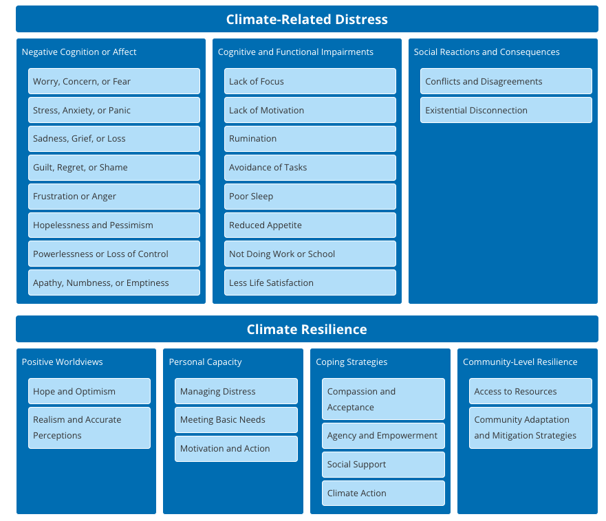

Core Developers
Kiffer G. Card, Faculty of Health Sciences, Simon Fraser University
Dana De Benetti, Mental Health and Climate Change Alliance
Kaylie Higgs, Mental Health and Climate Change Alliance
Michael Marchand, sqilxw, syilx Nation - Cultural Safety Consultant
Reviewers and Contributors
Claire Perry, Centre for Addiction and Mental Health
Ashley Stoltz, Faculty of Health Sciences, Simon Fraser University
Brianna Aspinall Nuñez, Carbon Conversations TO
Monique Beneteau, Canadian Coalition for Seniors’ Mental Health
Lilian Barraclough, College of Social and Applied Human Sciences, University of Guelph & Youth Climate Lab
Kelly Green Guilbeau, conservation social scientist, Johns Hopkins University Bloomberg School of Public Health
Susan Clayton, Psychology Department, The College of Wooster
Judy Wu, Faculty of Health Sciences, Simon Fraser University
Maya K. Gislason, Faculty of Health Sciences, Simon Fraser University
Dora Rebelo, MHPSS Consultant, Iscte-University Institute of Lisbon
Sonya L. Jakubec, School of Nursing and Midwifery, Mount Royal University
Rachel Davies, BSc, MSc, PGCert, MRTPI, MIEnvSc
Gina Martin, Faculty of Health Disciplines, Athabasca University
Abhay Singh Sachal, Break The Divide; Faculty of Education, University of Regina
Naomi Leung, Climate Recentered, Solastalgia
Steve Willis, Herculean Climate Solutions
Susan Bodnar, PhD, Clinical Psychologist, Adjunct Associate Professor of Psychology, Teachers College, Columbia University. Principal Investigator, DEWLab. Co-editor of Unmoored Yet Unbroken: Ecopsychology for a Changing World.
Tajrin Faurschou, MSc Student Climate Change and Global Health, School of Public Health University of Alberta

Welcome to our Professional Certificate Course on Understanding Climate Emotions
This course is designed to guide professionals and interested community members who are wanting to develop a deeper understanding of how climate change, and awareness of its impacts, directly and indirectly influence mental health and emotional well-being. It may be of particular value to those working in roles that involve supporting individuals and communities experiencing climate-related distress, but is open to anyone who wants to learn more.
This course may be a good fit if:
- You are interested in the intersection of climate and well-being
- You are a concerned community member and want to learn more
- You have witnessed or experienced climate related emotions or distress
- You support others in a professional, educational or caring role
- You work in shaping systems, spaces, or policies
- You work with or organize communities
This course will help you to:
- Understand the complex relationship between climate change and mental health
- Recognize the psychological impacts of climate change
- Explore 'climate- and eco-emotions’ such as ‘climate anxiety/eco-anxiety’ and ‘climate grief/eco-grief’
- Examine the ways that climate change impacts some populations disproportionately and can worsen existing inequities and injustices
- Understand ways in which climate change distinctly impacts the diverse Indigenous Peoples within Canada
- Understand some of the many ways Indigenous Peoples are leading stewardship, regeneration, and protection of lands, waters, plants, animals and climate well-being
- Learn strategies to build resilience at individual, community, and systemic levels
- Recognize the role of activism, grassroots organizing, advocacy, and policy in addressing climate and mental health challenges
- Explore the roles and experiences of professionals working at the intersection of climate change and mental health
- Promote the integration of trauma-informed, culturally safe, and health-aware principles into climate action
- Gain tools to support mental health-inclusive policies and practices
Intended use:
- This course can support you in learning to recognize, assess, and address climate emotions and psychological responses.
- It will help you to implement informed strategies for emotional resilience and community-based mental health solutions.
- This course is not intended to be used as a diagnostic tool or in the place of treatment.
Prior Knowledge
There are no prerequisites for this course and we invite you to participate regardless of your background or past experience regarding climate and mental health. That being said, there are some key topics that we encourage you to explore further or have baseline knowledge of in order to get the most out of this learning experience.
In particular, throughout the course there will be examples of Indigenous stories, leadership, and knowledge, as well as some of the ways that climate change is disproportionately impacting Indigenous communities as well as longstanding impacts of colonialism. If you want to learn more, we encourage you to engage with additional learning materials such as:
- University of Alberta’s Indigenous Canada Online Course
- SAN’YAS Indigenous Specific Anti-Racism Training
Course Content
- There are 6 sections with a total of 53 modules
- Modules are designed to be flexible: you can complete them alone, in a group, classroom setting, circle of peers, or with a partner
- Learning objectives will be presented at the beginning of each section
- Each section will be followed by a quiz
- You will need to score 80% to pass each quiz and will be given unlimited attempts
- Throughout the modules there will be invitations to Watch - Explore - Learn More as well as opportunities to engage with hyperlinked text.
- These are not mandatory activities but are there to support if you are wanting to learn more about a certain topic or concept
Section Overview
- Section 1
- Sets the foundation for the course, introducing the scope, objectives, and the wide-ranging impacts of climate change on psychological well-being. It emphasizes why integrating mental health considerations into climate discourse is essential.
- Section 2
- Explores theories of emotion and how to differentiate emotions from clinical mental health conditions. It provides an in-depth look at diverse climate-related emotions—ranging from anxiety, grief, guilt, and rage to isolation and denial—and introduces tools for assessing these emotional responses.
- Section 3
- Examines the roots of climate emotions and how social, environmental, and developmental factors contribute to risk and disproportionate impacts. It also explores the compounded impact of marginalization and intersectional experiences in shaping climate-related mental health outcomes.
- Section 4
- Reviews practical and theoretical approaches to fostering resilience. Topics include more adaptive vs. less maladaptive coping, psychological first aid, skills-based and nature-based interventions, the power of social support, and the importance of climate justice and Indigenous knowledge in promoting community well-being.
- Section 5
- Focuses on embedding mental health awareness in professional practice and climate policy. It outlines ethical responsibilities and sector-specific roles—including educators, health providers, media professionals, spiritual leaders, and policymakers—in advancing climate-responsive mental health support.
- Section 6
- Closes with reflective activities, final knowledge assessment, and certification. It reinforces key learnings and encourages participants to apply their knowledge in practice and advocacy.
Trauma-Informed Learning
This course is designed to provide a learning space that is trauma-informed, which is foundational when discussing complex and sometimes difficult topics. Understanding that participants come with diverse backgrounds, experiences, and stories, and that some course content may bring up strong or unexpected emotions.
With that in mind, this course includes content relating to mental health, climate change, and injustice. Some learners may find these topics challenging to engage with. This information is available for you to engage with as you choose, including choosing not to engage with particular sections. We encourage you to approach the material in ways that support your well-being.
Please remember to:
- Pace yourself
- Take breaks as necessary
- Practice self-care as you work through the course
Resources are available to support yourself in navigating emotions that may arise during this course. Take some time to reflect on what supports you, consider what resources you could connect with as needed, and review the list of ideas we have compiled here.
- If you are in Canada and need immediate mental health support, you can access a list of available resources here.
- You can also access a list of additional supportive resources compiled by the MHCCA team here.
- If you are feeling overwhelmed or in need of a mental pause, you may find support in this list of grounding and presencing techniques.
References
- Buongiorno, F., Chiaramonte, X. (2023). Environment. In: Wallenhorst, N., Wulf, C. (eds) Handbook of the Anthropocene. Springer, Cham. https://doi.org/10.1007/978-3-031-25910-4_8
- Coffey Y, Bhullar N, Durkin J, Islam MS, Usher K. Understanding Eco-anxiety: A Systematic Scoping Review of Current Literature and Identified Knowledge Gaps. J Clim Change Health. 2021 Aug 1;3:100047.
- Finkel, M. L. (2019). A call for action: integrating climate change into the medical school curriculum. Perspectives on Medical Education, 8(5), 265–266. https://doi.org/10.1007/s40037-019-00541-8
- Kaleel, S. (2024, October 9). Understanding collective liberation. The Inclusion Practice. https://www.theinclusionpractice.com/insights/understanding-collective-liberation
- Merriam‑Webster. (n.d.). Ecosystem. In Merriam‑Webster.com dictionary. https://www.merriam-webster.com/dictionary/ecosystem
- National Geographic Society. (2025, April 23). Ecosystem. National Geographic Education. https://education.nationalgeographic.org/resource/ecosystem/
- Newberry Le Vay, J., Cunningham, A., Soul, L., Dave, H., Hoath, L., and Lawrance, E. L. (2024). Integrating mental health into climate change education to inspire climate action while safeguarding mental health. Frontiers in Psychology, 14. https://doi.org/10.3389/fpsyg.2023.1298623
- Poole, N., Talbot, C., & Nathoo, T. (2017). Healing families, helping systems: A trauma-informed practice guide for working with children, youth and families (Government of British Columbia). Government of British Columbia. https://www2.gov.bc.ca/assets/gov/health/child-teen-mental-health/trauma-informed_practice_guide.pdf
- Seritan, A. L., Coverdale, J., and Brenner, A. M. (2022). Climate Change and Mental Health Curricula: Addressing Barriers to Teaching. Academic Psychiatry, 46(5), 551–555. https://doi.org/10.1007/s40596-022-01625-0
- United Nations. (n.d.). What is climate change? United Nations. https://www.un.org/en/climatechange/what-is-climate-change
Module reviewers & contributors
- Kiffer G. Card, Faculty of Health Sciences, Simon Fraser University
- Kaylie Higgs, Mental Health and Climate Change Alliance
- Dana De Benetti, Mental Health and Climate Change Alliance
- Lilian Barraclough, College of Social and Applied Human Sciences, University of Guelph & Youth Climate Lab
- Brianna Aspinall Nuñez, Carbon Conversations TO
- Michael Marchand, sqilxw, syilx Nation - Cultural Safety Consultant
- Dora Rebelo, MHPSS Consultant, Iscte- University Institute of Lisbon
- Judy Wu, Faculty of Health Sciences, Simon Fraser University
- Rachel Davies
- Maya K. Gislason, Faculty of Health Sciences, Simon Fraser University
- Susan Clayton, Psychology Department, The College of Wooster

Welcome to Section 1: Introduction to Climate Change and Mental Health!
In this section, you will learn:
- The relationship between climate change and mental health and how environmental changes can influence emotional well-being, psychological distress, resilience, and the overall health and well-being of communities.
- An overview of climate change and its widespread impacts on ecosystems, the environment, human societies, and health.
- Key aspects of planetary health and how it contributes to understanding climate change as an interconnected ecological, health and societal challenge.
- Major frameworks including the biomedical, biopsychosocial, social-ecological, cultural and Indigenous perspectives which relate to health and well-being
- Key examples of Indigenous frameworks and knowledge systems, connections with health and well-being, and some of the many ways Indigenous Peoples are leading stewardship, regeneration, and protection of lands, waters, plants, animals, and climate well-being.
- Understand ways in which climate change distinctly impacts the diverse Indigenous Peoples within Canada and the historical and ongoing colonial impacts that contribute to the disproportionate impacts of climate change for Indigenous communities.
This section includes content relating to mental health, climate change, and injustice. Some learners may find these topics challenging to engage with. This information is available to you to engage with as you choose, including choosing not to engage with particular sections. We encourage you to approach the material in ways that support your well-being.
Please remember to:
- Pace yourself
- Take breaks as necessary
- Practice self-care as you work through the course
Resources are available to support yourself in navigating emotions that may arise during this course. Take some time to reflect on what supports you, consider what resources you could connect with as needed, and review the list of ideas we have compiled here:
- If you are in Canada and need immediate mental health support, you can access a list of available resources here.
- You can also access a list of additional supportive resources compiled by the MHCCA team here.
- If you are feeling overwhelmed or in need of a mental pause, you may find support in this list of grounding and presencing techniques.
Module reviewers & contributors
- Kiffer G. Card, Faculty of Health Sciences, Simon Fraser University
- Kaylie Higgs, Mental Health and Climate Change Alliance
- Dana De Benetti, Mental Health and Climate Change Alliance
- Michael Marchand, sqilxw, syilx Nation - Cultural Safety Consultant
Understanding the relationship between climate change and mental health is crucial for developing effective strategies to support individuals and communities facing environmental challenges. Climate change not only alters our physical surroundings but also profoundly affects our psychological well-being, influencing how we perceive and respond to the changing world around us. This module explores the importance of recognizing and addressing the mental health impacts of climate change, highlighting why this understanding is essential for fostering resilient and thriving communities. It also invites us to consider how meaningful mental health responses must go beyond individual coping to address social, political, and structural conditions influencing climate distress while fostering hope, connection and care for one another and the planet.
Reflection
Why is the intersection of climate change and mental health important to you? What are you hoping to learn or gain from completing this course?
By exploring the interconnectedness of environmental changes and mental health, you will gain insights into the pervasive effects of climate change on emotional well-being. This knowledge is fundamental for creating informed policies, developing support systems, and encouraging proactive actions that mitigate the psychological toll of a warming planet.
Click each of the cards below to reflect more on some reasons why understanding the relationship between mental health and climate change is important.
Recognize Global Impact: Climate change affects both the environment and mental health, making it a global issue with far-reaching consequences.
Making Connections with Equity and Climate Justice: Understanding these interactions guides meaningful actions that prioritize equity and climate justice, especially for communities most affected.
Address Mental Health Challenges: Understanding the mental health impacts of climate change such as anxiety, depression and post-traumatic stress disorder (PTSD) enables mitigation strategies.
Promote Resilience: Awareness fosters resilience in individuals and communities, enhancing their ability to cope with climate-related stressors.
Combat Powerlessness and Hopelessness: Understanding psychological effects can reduce feelings of helplessness and promote empowerment and action.
Support Policy and Community Initiatives: Knowledge informs policies and programs designed to mitigate climate impacts and protect mental health amid environmental challenges.
Encourage Proactive Action: Learning about these impacts encourages individuals to address climate change and safeguard their mental well-being and that of future generations.
Foster Education and Support Systems: Raising awareness strengthens support networks, promotes mental wellness, and builds connected communities.
Enable Meaningful Contribution: Understanding equips individuals to make tangible differences through advocacy, education, and action.
Making Change within the Circle of Influence: When an individual works within their circle of influence (a concept developed by Stephen Covey referring to areas where a person can influence outcomes through their own actions and responses), there are opportunities to make meaningful change and see results of their efforts.
Why a Mental Health Approach to Climate Change Must Go Beyond the Individual
A systems-focused perspective helps to explain how broader social, political, and environmental systems impact climate-related distress. Climate grief or anxiety reflects structural conditions including fossil fuel dependence, social inequity, and colonial histories, and cannot be “treated away” without addressing their root causes. The following points build on this concept with additional reasons why a mental health approach to climate change must go beyond the individual.
- Communities Hold Solutions: Collective practices such as mutual aid, ecological restoration groups, climate justice organizing, and community-led adaptation may be more adaptable and scalable psychosocial solutions to address mental health consequences of climate change.
- Healing is Relational: Trauma healing involves rebuilding trust, safety, agency, and connection—conditions that are inherently social and political.
- Empowerment Reduces Distress: Participatory, justice-oriented climate action helps transform passive fear into active agency, reducing helplessness and supporting psychological resilience.
- Mental Health Requires Structural Transformation: Policies ensuring climate justice, equitable resource distribution, and community empowerment are themselves mental health interventions.
A mental health response to climate change emphasizes:
- Building collective capacity and solidarity
- Acknowledging shared ecological and social trauma
- Transforming structural conditions of harm
- Fostering active engagement in climate justice movements
Thus, mental health practice must not only help individuals cope with climate impacts but also support them in changing the conditions that cause distress, recognizing that healing and political transformation are interdependent.
Indigenous Perspectives
As you consider why understanding the relationship between climate change and mental health is essential, Indigenous perspectives offer additional insights that deepen this rationale. The emotions that arise in response to ecological loss are not only valid but already familiar to many Indigenous communities that have long witnessed the degradation of lands, waters, and ecosystems central to cultures, identities, and well-being.
These emotions are part of an intergenerational story of resilience shaped by colonization, land dispossession, and cultural disruption. The loss of autonomy and agency to fulfill duties to safeguard and steward the lands can be a specific source of ongoing distress, given that they are understood by many communities as deeply rooted and sacred responsibilities. This connection to land stewardship is reflected in the United Nations Declaration on the Rights of Indigenous Peoples (UNDRIP), an international human rights framework that affirms the rights of Indigenous Peoples. Within the framework, Article 25 states that “Indigenous peoples have the right to maintain and strengthen their distinctive spiritual relationship with their traditionally owned or otherwise occupied and used lands, territories, waters and coastal seas and other resources and to uphold their responsibilities to future generations in this regard.”
Despite centuries of colonial imposition, trauma, and harm, Indigenous Peoples have engaged in resistance and healing work — carrying forward languages, practices, ceremonies, ways of knowing, governance, and kinship systems that continue to sustain cultural and spiritual health. These practices are built upon a foundation of harmonious relationships with family, communities as well the lands and waters and non-human inhabitants. This resilience is not simply about survival. It reflects a commitment to maintaining continuity across generations, even in the face of repeated interference and loss. Cultural continuity, being able to pass on stories, values, and responsibilities, has been shown to protect mental health and strengthen community responses to crises.
Integrating mental health into climate responses means recognizing the strength that comes from these enduring connections. For Indigenous Peoples and communities, healing and adaptation are often grounded in culture, not separated from it. When support systems honour Indigenous knowledge and uphold cultural continuity, they do more than address symptoms of distress. They help repair relationships and uphold the responsibilities that come with being part of a living, interdependent world. This lens can inform more inclusive and compassionate approaches to climate and mental health that value both emotional expression and collective resilience.
Key Takeaways
- Understanding the relationship between climate change and mental health highlights the global impact of environmental changes on psychological well-being.
- Addressing mental health challenges enables the development of strategies to mitigate anxiety, stress, and trauma related to climate change.
- Promoting resilience helps individuals and communities cope with climate-related stressors and maintain mental well-being.
- Climate-related distress is shaped by systemic forces, so meaningful mental health responses must go beyond individual coping and focus on collective healing, justice, and structural transformation.
- For many Indigenous communities, cultural continuity and practices play a central role in bridging climate change and mental health.
Recognizing the intricate connection between climate change and mental health is essential for creating holistic approaches to environmental challenges. By integrating this understanding into policies, support systems, and community initiatives, we can build resilient and thriving societies capable of navigating the psychological impacts of a changing climate. This foundational knowledge empowers you to contribute effectively to the collective effort of fostering mental well-being amidst environmental transformation.
Learning Activities
Objective: You will reflect on the importance of understanding the link between climate change and mental health, exploring how this knowledge informs resilience, empowerment, and actionable solutions.
Instructions:
- List Key Reasons:
- Start by reviewing the module content on why it’s important to understand the connection between climate change and mental health. Write down 3-5 key reasons that resonate with you (e.g., fostering resilience, combating feelings of hopelessness, supporting policy initiatives).
- Personal Reflection:
- For each reason you’ve written down, reflect on why it is significant to you or your community. Answer these guiding questions:
- Why is this reason important?
- Can you think of an example (real or hypothetical) that illustrates this connection?
- How might understanding this reason lead to better mental health outcomes?
- For each reason you’ve written down, reflect on why it is significant to you or your community. Answer these guiding questions:
- Application to Action:
- Think about how this understanding could encourage actionable change. For example:
- How can raising awareness of the climate change-mental health link inspire proactive steps at an individual or community level?
- What role can you play in fostering this awareness?
- Think about how this understanding could encourage actionable change. For example:
- Create a Summary Statement:
- Summarize your thoughts in a paragraph explaining why understanding the relationship between climate change and mental health is important for creating resilient, empowered communities.
Objective: Groups will collaborate to explore the importance of understanding the climate change-mental health relationship and develop an advocacy message to promote awareness and action.
Facilitator Instructions:
Preparation Time: 15 minutes to prepare group instructions and provide materials (e.g., markers and large paper for in-person groups or a shared collaborative tool like Google Jamboard for online sessions).
Time Allocation: 50-60 minutes.
- Set the Stage:
- Introduce the activity by emphasizing that understanding the link between climate change and mental health is not just academic—it’s essential for fostering resilience, informing policy, and empowering communities to act.
- Group Assignment:
- Divide participants into small groups of 4-5. Assign each group a specific theme from the module (e.g., promoting resilience, reducing hopelessness, supporting policy initiatives, or fostering education and support systems).
- Activity Flow:
- Step 1 (10 minutes): Groups discuss their assigned theme, using these guiding questions:
- Why is understanding this theme important for addressing climate change and mental health?
- How does this theme connect to real-world examples (e.g., policies, community initiatives, or personal actions)?
- What barriers might prevent people from understanding or addressing this theme?
- Step 2 (15 minutes): Groups brainstorm how to advocate for awareness of their theme. They can create a message in the form of a slogan, infographic outline, or brief script for a public service announcement (PSA).
- Step 3 (10 minutes): Each group finalizes their advocacy message, ensuring it is clear, compelling, and actionable.
- Step 1 (10 minutes): Groups discuss their assigned theme, using these guiding questions:
- Sharing and Debrief (15 minutes):
- Groups present their advocacy message to the larger group. After each presentation, facilitate a discussion to connect their ideas to broader efforts to address climate change and mental health.
- Use debrief questions such as:
- “What common threads did we see across the groups’ messages?”
- “What new insights or ideas emerged from this activity?”
- “How can we use these messages to promote meaningful action in our communities?”
Variation: If time permits, have groups develop a plan for implementing their advocacy message (e.g., identifying target audiences, platforms, or actions they would take to spread awareness).
References
- Coverdale, J., Balon, R., Beresin, E. V., et al. (2018). Climate Change: A Call to Action for the Psychiatric Profession. Academic Psychiatry, 42(3), 317–323. https://doi.org/10.1007/s40596-018-0885-7
- Covey, S. R. (1989). The 7 habits of highly effective people: Powerful lessons in personal change. Free Press.
- Lawrance, E. L., Thompson, R., Newberry Le Vay, J., et al. (2022). The Impact of Climate Change on Mental Health and Emotional Wellbeing: A Narrative Review. International Review of Psychiatry, 34(5), 443–498. https://doi.org/10.1080/09540261.2022.2128725
- Middleton, J., Cunsolo, A., Jones-Bitton, A., Wright, C. J., & Harper, S. L. (2020). Indigenous mental health in a changing climate: A systematic scoping review of the global literature. Environmental Research Letters, 15, Article 053001. https://doi.org/10.1088/1748-9326/ab68a9
- Power E, McCarthy N, Kelly I, Cannon M, Cotter D. Climate change and mental health: time for action and advocacy. Irish Journal of Psychological Medicine. 2023;40(1):6-8. doi:10.1017/ipm.2021.70
Module reviewers & contributors
- Kiffer G. Card, Faculty of Health Sciences, Simon Fraser University
- Kaylie Higgs, Mental Health and Climate Change Alliance
- Dana De Benetti, Mental Health and Climate Change Alliance
- Monique Beneteau, Canadian Coalition for Seniors’ Mental Health
- Michael Marchand, sqilxw, syilx Nation - Cultural Safety Consultant
- Dora Rebelo, MHPSS Consultant, Iscte- University Institute of Lisbon
- Judy Wu, Faculty of Health Sciences, Simon Fraser University
- Maya K. Gislason, Faculty of Health Sciences, Simon Fraser University
Climate change is undeniably one of the most urgent challenges facing our planet today and it is having profound, interconnected and widespread effects on ecosystems, the environment, human societies, economies, and health. Climate change is defined as long-term alterations in temperature, precipitation, and other atmospheric conditions. These changes can be natural, but since the 1800s have primarily been driven by human activities such as burning fossil fuels which release greenhouse gas (GHG) emissions into the atmosphere. These emissions cause heat from the sun to become trapped and cause warming. This warming then contributes to global changes in weather patterns, sea ice, ocean currents, and other impacts that can have broad ripple effects, some of which are explored more below.
Exploring the multifaceted impacts of climate change is important for understanding how it affects individuals, communities, and nations alike. It is also an important step in making connections to the impacts on our physical, mental, and emotional health and well-being.
The content below outlines a range of climate change impacts across social and ecological systems, including health and well-being. You are invited to explore the material at your own pace and in a way that feels manageable for you.
Click each of the cards below to learn more about the impacts of climate change.
Rising Sea Levels: Melting glaciers and sea ice cause sea levels to rise, contributing to flooding, erosion, and displacement that threaten communities and infrastructure.
Increased Frequency and Severity of Extreme Weather Events: More intense and frequent hurricanes (class 5+), heatwaves, wildfires, and floods cause economic damage and loss of life.
Ocean Warming and Acidification: Rising temperatures and carbon dioxide absorption warm oceans and lower pH, threatening marine species (e.g., shellfish failing to form shells) and jeopardizing fisheries and coastal food security.
Loss of Biodiversity and Ecosystem Disruption: Species extinction and population declines disrupt ecosystems, while climate-driven shifts in migration, breeding, and habitats further destabilize ecological balance.
Forest Degradation: Wildfires and droughts damage forests, air quality, and biodiversity. Forest fires release carbon stored in trees and other vegetation, further contributing to climate change.
Food and Water Insecurity: Changing climate conditions reduce the availability and reliability of essential resources. Agricultural yields decline, affecting overall food availability, including traditional food sources of Indigenous Peoples, alongside worsening water scarcity.
Economic Disruption: Extreme events and climate-related disasters can strain economies, reduce productivity, and increase costs.
Deepening of Injustices: Amplification of structural disparities and economic inequities disproportionately impacts communities such as the Global South and Indigenous Peoples.
Human Health Risks: Climate change affects multiple health systems—respiratory, cardiovascular, mental health, and more—through heat, extreme weather, pollution, and other environmental stressors.
Vector-borne Diseases: Shifts in climate can cause illnesses such as Lyme disease, West Nile virus, malaria, and dengue spread to new regions.
Displacement and Migration: Climate-related disasters, extreme weather and rising sea levels force relocation, creating climate refugees.
National Security Threats: Resource scarcity and displacement contribute to conflicts.
Infrastructure Damage: Roads, bridges, and utilities and other infrastructure are impacted by extreme weather such as floods, storms, and extreme heat.
Erosion of Social Systems and Community: Community systems, relationships, and connections are strained which can lead to breakdown of social systems.
Reflection
Reflect on the interconnected climate impacts explored in the flip cards. Which of these climate impacts resonate most with you and why? How might a change in one area influence or cause ripple effects in others?
Learn More
If you are interested in the topic of climate change and would like to learn more, here are some other resources to explore:
Metro Vancouver offers a self-directed free learning program on Climate Literacy which explores climate solutions in the context of Vancouver, British Columbia.
The Pacific Institute for Climate Solutions (PICS) at the University of Victoria offers the PICS Climate Insights Course which is a short, self-paced course focused on climate change and pathways for climate action.
Planetary Health
There are many fields and disciplines working together to better understand and respond to climate change, ranging from earth sciences like climatology, natural sciences like ecology, as well as social and behavioural sciences like psychology.
Planetary health is a framework that bridges many disciplines together; it is both a hopeful emerging field and social movement that emphasizes the relationship between human well-being and the environment. Since the mid-2010s, planetary health has grown as a field and movement. However, it is important to understand that it builds upon understandings of the connections between human and ecological health that communities, particularly Indigenous communities, have shared for centuries.
The aim of planetary health is to assess and respond to the way that human activity is influencing Earth systems, human health, and all living things. When natural systems are compromised, it harms ecosystems and influences the building blocks of human health, including clean air, safe water, healthy food, and stable living conditions. Planetary health seeks to protect health by ensuring that the Earth system remains within a safe operating space for life on Earth.
Understanding planetary health helps us see how environmental changes directly affect physical, mental, and emotional well-being. It also frames a holistic view of climate change as not only an environmental issue, but a broader societal and public health challenge.
The planetary boundaries framework is a related framework that can act as a global health check by dividing the Earth system into nine critical boundaries that need to be maintained in order to ensure our planet remains a stable and safe home for humanity.
- Climate change
- Changes in biosphere integrity (biodiversity loss and species extinction)
- Stratospheric ozone depletion
- Ocean acidification
- Biogeochemical flows (phosphorus and nitrogen cycles)
- Land-system change (for example deforestation)
- Freshwater use
- Atmospheric aerosol loading (microscopic particles in the atmosphere that affect climate and living organisms)
- Introduction of novel entities

Several of these boundaries are currently being exceeded as presented in the visual above, highlighting the urgent need for collective action to bring human activities back within the safe zone. If you are interested in learning more about planetary boundaries and what they mean, you can check out the Stockholm Resilience Centre page.
In this module, you have learned more about climate change and how it is a global issue. Fortunately, there are people and institutions around the world that are deeply committed to solutions and change. Here are a few examples to explore which relate to planetary health.
On a global scale, there is the Planetary Health Alliance, which is a growing collaboration of hundreds of academic institutions, non-governmental organizations (NGOs), research institutes, and government bodies from over 80 countries who are dedicated to addressing the impacts of global environmental change on human health and well-being.
In Canada, there are also efforts being made to apply a Planetary Health approach to policy and practice at a local level. For example, Sustainability and Preparedness: Our Planetary Health Strategy by Fraser Health in British Columbia is a five year plan (2023-2028) that outlines strategic priorities and actions aligned with a Planetary Health model.
In an Indigenous context, The determinants of planetary health: an Indigenous consensus perspective, by Redvers and colleagues outlines ten distinct determinants of Indigenous Planetary Health across three related levels: Mother Earth level, Interconnecting level and Indigenous Peoples’ level, emphasizing relational and land-based approaches to the health and well-being of people and the environment.
Indigenous Perspectives
As you learn about the far-reaching environmental and health impacts of climate change, Indigenous ways of knowing offer other ways to understand what is unfolding: a breakdown in relationships. From many Indigenous perspectives, climate change is not only a scientific or ecological crisis, but also a reflection of disrupted relationships between humans and in turn their relationships with the land and non-human relations.
For instance, in their Climate Change Strategy, Métis National Council directly attributes the climate crisis to a relationship to the Earth which is broken, representing a profound imbalance in our responsibilities to the natural world. Similarly, Terry Teegee, Regional Chief of the British Columbia Assembly of First Nations, describes climate change as “world out of balance”. In the context of forestry for example, he explains how Indigenous cultural burning practices have historically served as a way to maintain and regenerate healthy forests, but that restrictions on these practices have resulted in more forest fires and ecological harm.
Where Western frameworks may focus on emissions and temperatures, Indigenous teachings often speak to the spiritual, ethical, and relational consequences of living out of harmony with Creation. The call to address climate change, from this view, is also a call to renew our relationships with land, with each other, and with future generations. This relational lens helps expand your understanding of climate health as inseparable from social and emotional well-being.
Watch
Watch the video World out of Balance | Climate Atlas of Canada (4:00 minutes) where Terry Teegee explores what it means to have a world out of balance.
Key Takeaways
- Climate change involves long-term shifts in temperature and precipitation and other atmospheric conditions, which are now largely driven by human activities.
- It has widespread impacts on the environment, ecosystems, and human health.
- Planetary health provides a framework for understanding climate change as a broader human and ecological health issue, emphasizing the interdependence between environmental systems and human well-being.
- From the lens of Indigenous knowledge systems, climate change represents the breakdown of relationships between humans and the land, and the cultivation of a relational approach to climate action represents a key mechanism through which to address climate change.
Understanding these impacts is crucial for developing effective strategies to mitigate climate change and support mental health resilience in affected communities. Climate change poses significant challenges that extend beyond environmental degradation, deeply affecting mental health and societal well-being. By comprehensively understanding its impacts, we can better prepare to address both the physical and emotional impacts of climate change in our lives as well as develop strategies for fostering more resilient and equitable communities.
Learning Activities
Objective: You will explore how climate change affects different aspects of a community's well-being, focusing on specific sectors and using a structured approach to guide your thinking.
Instructions:
- Create your own table with the following sectors:
- Environment (e.g., species extinction, biodiversity loss, flooding, air quality)
- Economy (e.g., economic losses from disasters, job displacement, costs of adaptation)
- Health (e.g., heat-related illnesses, vector-borne diseases, mental health impacts)
- Social and Cultural Aspects (e.g., displacement, cultural heritage loss, loss of traditional foods, climate migration)
- Infrastructure (e.g., damage to roads, housing, utilities).
- For each sector, answer these questions:
- What is one way climate change impacts this sector?
- Who in the community is most affected? (e.g., children, elderly, farmers, urban poor)
- What are short-term effects (e.g., immediate damage, health risks)?
- What are long-term effects (e.g., loss of jobs, reduced biodiversity, cultural changes)?
- What are some potential responses or solutions?
- Be as specific as possible with your examples.
- For instance, instead of saying “flooding affects communities,” you might note, “Rising sea levels in low-lying areas like Richmond could cause frequent flooding, forcing residents to relocate and straining local government resources.”
- Once you’ve completed all sectors, take a moment to reflect:
- Which sector do you think is the most critical to address immediately? Why?
- How do these impacts connect to one another?
Objective: Groups will collaboratively identify and analyze the multifaceted ways climate change affects communities, using structured prompts for discussion and synthesis.
Facilitator Instructions:
Preparation Time: 20 minutes to prepare prompts and materials.
Time Allocation: 50 minutes (10 minutes per discussion round, plus debrief).
- Set Up: Prepare an Impact Matrix for each group. Use a physical version (poster paper) or a digital collaboration tool (Google Sheets). Include these columns:
- Sector
- Impact
- Example
- Populations Affected
- Short-Term Effects
- Long-Term Effects
- Possible Solutions
- Group Assignment: Divide participants into small groups of 3-5. Assign each group a specific community type (e.g., coastal city, farming town, urban center). Ensure groups have access to relevant materials or examples for context.
- Activity Flow:
- Groups spend 10 minutes discussing each sector (Environment, Economy, Health, Social/Cultural, Infrastructure), completing the corresponding rows in their matrix.
- Encourage groups to think critically about who is most affected, using guiding questions like:
- “Who is most impacted?”
- “How does this impact connect to other sectors?”
- “What are feasible solutions that could be implemented at the community level?”
- Sharing Insights: Once the matrix is complete, have each group share their most surprising or impactful finding.
- Debrief: Facilitate a whole-group discussion to identify patterns and major takeaways. Encourage students to consider:
- Are some sectors more interlinked than others?
- What are the most urgent challenges communities face?
Variation: Add a role-playing element where participants take on roles like a farmer, public health official, or mayor to simulate different perspectives during group discussions
References
- Abbass, K., Qasim, M. Z., Song, H., et al. (2022). A review of the global climate change impacts, adaptation, and sustainable mitigation measures. Environmental Science and Pollution Research, 29, 42539–42559. https://doi.org/10.1007/s11356-022-19718-6
- Climate Atlas of Canada. (n.d.) Indigenous Knowledges and Climate Change. Prairie Climate Centre. https://climateatlas.ca/indigenous-knowledges-and-climate-change
- Health Canada. (2024, June 10). Risks to health from climate change. Government of Canada. https://www.canada.ca/en/health-canada/services/climate-change-health/risks-to-health.html
- Métis National Council. (2025). Métis Nation Climate Change Strategy [PDF]. Métis National Council. https://www.metisnation.ca/wp-content/uploads/2025/09/MNC-Metis-Nation-Climate-Change-Strategy-FNL-PDF.pdf
- Planetary Health Alliance. (n.d.). What is Planetary Health? https://planetaryhealthalliance.org/what-is-planetary-health/
- Rocque, R. J., Beaudoin, C., Ndjaboue, R., Cameron, L., Poirier-Bergeron, L., Poulin-Rheault, R. A., Fallon, C., Tricco, A. C., and Witteman, H. O. (2021). Health effects of climate change: an overview of systematic reviews. BMJ Open, 11(6), e046333. https://bmjopen.bmj.com/content/11/6/e046333
- Stockholm Resilience Centre. (n.d.). Planetary boundaries. Stockholm Resilience Centre. https://www.stockholmresilience.org/research/planetary-boundaries.html
- United Nations. (n.d.). What is climate change? United Nations. https://www.un.org/en/climatechange/what-is-climate-change
- Whitmee, S., Haines, A., Beyrer, C., Boltz, F., Capon, A. G., de Souza Dias, B. F., Ezeh, A., Frumkin, H., Gong, P., Head, P., Horton, R., Mace, G. M., Marten, R., Myers, S. S., Nishtar, S., Osofsky, S. A., Pattanayak, S. K., Pongsiri, M. J., Romanelli, C., Soucat, A., Vega, J., & Yach, D. (2015). Safeguarding human health in the Anthropocene epoch: Report of the Rockefeller Foundation–Lancet Commission on planetary health. The Lancet, 386(10007), 1973–2028. https://doi.org/10.1016/S0140-6736(15)60901-1
Module reviewers & contributors
- Kiffer G. Card, Faculty of Health Sciences, Simon Fraser University
- Kaylie Higgs, Mental Health and Climate Change Alliance
- Dana De Benetti, Mental Health and Climate Change Alliance
- Brianna Aspinall Nuñez, Carbon Conversations TO
- Lilian Barraclough, College of Social and Applied Human Sciences, University of Guelph & Youth Climate Lab
- Michael Marchand, sqilxw, syilx Nation - Cultural Safety Consultant
- Kelly Green Guilbeau, conservation social scientist, Johns Hopkins University Bloomberg School of Public Health
- Judy Wu, Faculty of Health Sciences, Simon Fraser University
- Ashley Stoltz, Faculty of Health Sciences, Simon Fraser University
- Maya K. Gislason, Faculty of Health Sciences, Simon Fraser University
- Steve Willis Herculean Climate Solutions
Climate change profoundly impacts people around the world on physical, mental, emotional, social, cultural, and spiritual levels. Individuals are experiencing heightened levels of anxiety, depression, and stress due to factors such as extreme weather events, loss of livelihoods, and displacement. Feelings like uncertainty and fear about the future are contributing to widespread mental health challenges that are affecting people in most communities This module explores the major psychological effects of climate change, providing a foundation for understanding how environmental changes influence mental well-being.
Below is a list of some examples and possible ways in which climate change can cause disruptions to mental health and well-being. These emotions and responses will be explored in depth in later modules. Before engaging with this content, we invite you to approach it in a way that feels manageable and supportive for you.
- This information is available to you to engage with as you choose. You are welcome to pause, step back, take breaks, or return to sections as needed.
- This list is shared with the intention to learn and reflect on possible experiences that can arise. These events are not necessarily occurring now and may not impact you or your loved ones in the future.
- Understanding these connections, and what could happen can support awareness, preparedness, and resilience.
- Resources are available here to support yourself in navigating emotions that may come up.
Increased Anxiety, Depression, and Stress
• Extreme Weather Events: Disasters like floods, hurricanes, and wildfires can lead to stress, trauma, and long-term mental health conditions.
• Chronic Stress from Environmental Change: Ongoing environmental degradation can create persistent stress, contributing to anxiety and depression.
• Loss of Stability: Economic uncertainty and the unpredictability of climate change can heighten feelings of insecurity and hopelessness.
• Grief for Lost Species and Ecosystems: Shifts in ecosystems over time (e.g., coral dieoffs, ecosystem transformation, species extinction) can result in a lost connection to places and experiences which no longer exist. These losses can be particularly distressing for Indigenous Peoples when species like salmon are impacted, which provide not only subsistence but are also have cultural, social, and spiritual significance
Fear and Uncertainty About the Future
• Anticipatory Anxiety: Worry about worsening climate impacts can contribute to prolonged psychological distress.
• Climate Anxiety: Heightened emotional distress, worry, and uncertainty can emerge in relation to climate change and its actual or anticipated effects.
• Impact on Younger Generations: Youth are increasingly affected by existential dread about their future and perceived burden to solve the climate crisis, contributing to intergenerational mental health challenges.
Displacement and Loss
• Forced Relocation: Rising sea levels, desertification (degradation of fertile land into desert), wildfires, and extreme weather events can displace individuals and families, resulting in grief and trauma.
• Cultural Loss: Displacement often leads to loss of cultural identity, heritage, and community, intensifying emotional distress.
• Separation from Support Networks: Migration disrupts social connections, contributing to isolation, loneliness, and mental health impacts.
Livelihood Disruption
• Agricultural Instability: Droughts, floods, and changing weather patterns jeopardize agricultural livelihoods, increasing stress and economic hardship.
• Job Loss in Climate-Sensitive and Resource-Dependent Industries: Industries such as fishing, forestry, and tourism are affected by environmental shifts, leading to job loss and related mental health impacts. Similarly, as society shifts toward cleaner energy, sectors such as oil, gas, and mining may see workforce reductions. While this transition benefits the environment and public health, it can create economic uncertainty and stress for affected workers and communities.
• Economic Insecurity: Financial stress from reduced income or job loss exacerbates anxiety, depression, and family strain.
Exposure to Physiological Stress from Shifting Environmental Conditions
• Heat-Related Stress: Extreme heat exposure can lead to heat exhaustion and heat stroke, psychological distress, and impairment. It can also cause some medications to be less effective in persistent high-heat periods and often results in more emergency room visits and community interventions needed.
• Air Pollution: Poor air quality exacerbated by wildfires, shifting weather patterns, or industrial pollution can cause or worsen respiratory or cardiovascular conditions, impair cognitive function, and contribute to mood disorders.
• Water and Food Scarcity: Resource shortages can emerge due to climate change and can drive physiological stress, contributing to poor mental health outcomes, malnutrition, and fatigue.
Social and Community Disruption
• Weakened Social Bonds: Communities affected by repeated climate events can experience a breakdown in social cohesion, reducing access to collective support.
• Increased Conflict Over Resources: Competition for water, food, and habitable land can lead to social tensions and psychological stress.
• Erosion of Trust: Mistrust in government responses or systemic failures in addressing climate change fosters resentment and psychological strain.
Population Impacts
• Children and Adolescents: Young people are particularly susceptible to emotional stress from climate change. Young people may also experience changes in cognitive and emotional development due to climate change.
• Older Adults: Older individuals may be especially vulnerable to health risks from extreme temperatures and displacement, which may compound existing mental and cognitive health issues.
• Communities Facing Social or Systemic Marginalization: Indigenous populations, low-income groups, 2SLGBTQIA+, racialized communities, and other systemically under-resourced and marginalized groups are disproportionately affected by climate change, exacerbating pre-existing inequities.
• Gender Related Impacts: Gender can be an important factor in shaping how climate-related mental health is experienced. These experiences often intersect with other factors, inequities, gender roles, and ripple effects of climate change, such as increased rates of gender-based violence during climate-related events.
Emotional Toll of Repeated Disasters
• Cumulative Trauma: Repeated exposure to climate-related disasters and environmental changes can have a compounding effect, increasing vulnerability to mental health conditions. Additionally, these experiences can further compound on existing impacts, traumas, and inequities.
• Vicarious Trauma: Indirect exposure to climate-related disasters and impacts through media or the experiences of others within one’s social circles or community can also cause distress and impact well-being.
• Burnout and Emotional Exhaustion: Communities in high-risk areas experience chronic fatigue from repeated rebuilding efforts and constant vigilance.
• Loss of Hope: Perceived inability to reverse environmental degradation fosters despair and reduced motivation for future planning.
One powerful way to convey the human impacts of climate change is through storytelling. Here are a few examples of projects and platforms to explore:
The Climate Disaster Project features a Stories Archive from diverse populations across Canada and in the Philippines that have experienced climate disasters like tropical storms, extreme heat, fires, coastal erosion and severe flooding.
Voices from Across British Columbia’s Interior: A Stories of Resilience Initiative includes narratives and accompanying paintings to represent the stories of eight individuals and their experiences with a string of devastating wildfires in British Columbia in 2017.
Eco-Anxious Stories has a collection of climate stories, interviews, videos and podcasts relating to climate and climate emotions.
EcoLens is a BC Center for Disease Control project and platform for people living in British Columbia to share personal stories about climate change through photos, stories and other creative ways.
The Indigenous Climate Monitoring Toolkit includes a collection of stories highlighting projects of Indigenous led climate action and monitoring across Canada.
StoryCorps includes ten interview stories of people’s experiences with climate change in the United States and Puerto Rico and the ways in which it is having diverse impacts on health.
The varied psychological impacts of climate change, and their causes, can be further compounded by the harms that these psychological impacts themselves cause.
Below is an overview of some of the potential consequences of climate distress.
When climate-related anxiety and stress become chronic, they can disrupt numerous bodily systems and worsen or exacerbate pre-existing health conditions. Heightened activity of autonomic nervous system responses (e.g., fight and flight) and prolonged cortisol (stress hormone) release contribute to:
- Cardiovascular Strain: Persistent stress elevates blood pressure and heart rate, increasing the risk of hypertension and heart disease.
- Immune Dysfunction: Chronic stress can weaken the immune response, leaving individuals more vulnerable to infections and inflammation.
- Sleep Disruption and Fatigue: Ongoing anxiety often interferes with normal sleep patterns, exacerbating exhaustion and mental health issues
For children and adolescents, chronic stress related to climate threats can impair emotional and cognitive development. For adults chronic climate stress can impact sleep and concentration affecting judgement and overall ability to adapt and acquire new knowledge and skills. Concern for their own children can also have compounding impacts as well.
- Reduced Academic Performance: Persistent worry about environmental risks can impact sleep and diminish concentration, motivation, and engagement in the classroom and when studying.
- Developmental Delays: Chronic anxiety during formative years may affect emotional development, social skills, self-esteem, and overall mental resilience.
- School Disruptions: Extreme weather events and climate-related disasters can close schools or lead to displacement, interrupting educational continuity.
Mental health challenges tied to climate change have implications for both individual workers and broader economic systems:
- Decreased Productivity: Chronic worry and trauma may reduce focus, morale, and job performance, especially in climate-vulnerable industries (e.g., agriculture, fisheries, tourism).
- Increased Absenteeism: Frequent mental health challenges can lead to missed workdays and even job loss, creating financial strains for both employees and employers.
- Shifting Job Markets: Workers may leave environmentally unstable sectors such as agriculture for potentially more resilient industries, causing labor shortages and economic imbalances in critical areas.
Climate-induced mental health stressors can erode social cohesion and strain interpersonal relationships:
- Family Tension and Conflict: Anxiety can spread among family members, heightening emotional distress and sometimes fueling conflict (e.g., over resource use or coping strategies).
- Reduced Community Engagement: Persistent fear about ecological decline can sap the energy needed for civic participation, weakening local networks and social supports.
- Increased Violence and Abuse: Elevated stress levels have been linked to higher rates of interpersonal conflict, including intimate partner violence, particularly during and after extreme weather events.
As the prevalence of climate-related mental health conditions grows, so does the burden on public health systems:
- Rising Demand for Services: More people may seek therapy, crisis intervention, emergency medical care, and long-term counseling during and after climate-related disasters, potentially overwhelming local resources.
- Healthcare Worker Burnout: Medical professionals and mental health providers are also affected by climate anxiety, which can exacerbate stress and burnout in an already taxed workforce.
- Need for Integrated Approaches: Addressing physical and mental well-being in tandem (e.g., via trauma-informed care, community-based support) becomes essential for effective disaster response and prevention.
The influence that climate change has on political systems and governance has a ripple effect on the mental health and well-being of communities:
- Uneven Capacity to Adapt: Communities with fewer economic, infrastructure, or social resources can face greater barriers to preparing for and recovering from climate impacts, increasing stress and worsening existing inequities.
- Resource Management and Social Stability: Strain on essential resources such as water, food, housing, and energy can exacerbate social tensions, disrupt community connection, and intensify feelings of insecurity.
- Governance and Public Trust: When climate responses are seen as inadequate, inequitable, or inconsistent, public trust in institutions may be impacted, contributing to uncertainty, frustration, and collective distress.
Climate Emotions and the “Polycrisis”
We are living in an era where multiple crises—economic inequality, social and political unrest, global health challenges, and climate change—overlap and intensify one another. This convergence of crises is often referred to as a polycrisis: a dynamic in which seemingly separate threats interact in ways that deepen vulnerabilities and amplify the overall impact. When communities are already grappling with pressures like systemic injustice or fragile health systems, the added stress of climate-related disasters can push them from crisis management into crisis overload.
Climate change acts as a powerful risk multiplier within this polycrisis landscape. In other words, it amplifies existing risks and accelerates new ones. Extreme weather events like wildfires, atmospheric rivers, flooding, droughts, heatwaves, hurricanes, and more disproportionately affect communities that are already on the edge—economically or socially—leading to greater displacement, resource insecurity, and psychological strain. Such compounding pressures can make it much harder for people to cope emotionally, and anxiety, despair, and a sense of powerlessness may set in or intensify when one crisis arrives on the heels of another.
These emotional responses are not happening in a vacuum; they are deeply intertwined with global interlocking challenges. While climate distress, grief, and eco-anxiety can originate with environmental concerns, these emotions are inevitably influenced by broader social, economic, and political realities. Understanding the polycrisis context is therefore essential to grasp why climate emotions can be so intense—and why effective mental health responses must address these interrelated factors, recognizing climate change and climate distress as a systemic and societal issue rather than focusing on individual impacts in isolation.
Indigenous Perspectives
As you explore the psychological effects of climate change, it is important to recognize that for many Indigenous Peoples, climate-related trauma is intertwined with colonial histories and ongoing displacement, cultural loss, and environmental harm. The grief and anxiety caused by climate change does not exist in isolation but is layered upon centuries of dispossession and disconnection from lands, language, cultural expression and traditional ways of life. This compounding of trauma adds weight to the emotional and spiritual toll of witnessing the continued degradation of ecosystems that are not just resources but relatives, ancestors, sources of identity, food, healing, medicine and cultural continuity.
In many Indigenous worldviews, health is not compartmentalized. Mental, physical, emotional, and spiritual well-being are interconnected and inseparable from the health of lands and waters. When species disappear, when forests are lost, when waters are no longer drinkable, the impacts reverberate through communities and across generations. These losses affect not only survival, but also sense of self, belonging, and meaning.
The disappearance of a salmon run, a sacred tree, or a traditional territory is not just an environmental loss; it is a cultural, community, and psychic wound. For example, in the case of the Swinomish Indian Tribal Community, a community of Coast Salish peoples in Washington, United States, salmon is central to culture and identity and has served as a traditional food source for centuries. Salmon are now being threatened by warming waters and shifts in habitats due to climate change. As described by Larry Campbell, a tribal Elder from Swinomish in Protecting Indigenous Culture From Climate Change | RWJF (4:41 minutes), salmon are seen as “feeding the spirit” and he emphasizes the interconnectedness of ecological health and culture in stating “Salmon is culture. Culture is salmon”.
Understanding these intersecting layers of climate distress invites a more relational and justice-oriented approach to mental health. For Indigenous communities, healing from climate trauma often involves enacting sovereignty and restoring connection with land, culture, language, and ceremony. This highlights that mental health responses must be holistic and historically aware, grounded in the recognition that what is happening to the planet is deeply bound to what has happened, and continues to happen, to Indigenous Peoples within contexts of settler colonialism. Addressing climate-related mental health means not only building individual resilience, but also restoring the conditions for cultural and ecological revitalization, health and healing.
Key Takeaways
- Climate change significantly impacts mental health, increasing anxiety, depression, and stress levels.
- Extreme weather events can lead to trauma and long-term mental health conditions.
- Chronic environmental changes contribute to persistent stress and feelings of helplessness.
- For many Indigenous communities, climate-related trauma is closely tied with colonial histories of displacement, cultural loss, and environmental harm.
Understanding these psychological effects is essential for developing comprehensive mental health strategies that address both the immediate and long-term impacts of climate change. By recognizing the diverse ways in which climate change affects mental health, professionals can better support individuals and communities in building resilience and maintaining emotional well-being amidst environmental challenges.Climate change presents significant mental health challenges that require a nuanced and compassionate response. By comprehensively understanding its impacts, we can better equip ourselves to support those affected and foster resilient, thriving communities in the face of a changing climate.
Learning Activities
Objective: You will explore how climate change impacts mental health and reflect on solutions to support individuals and communities.
Instructions:
- Create Your Reflection Outline: On a blank page, create sections for the following psychological effects of climate change:
- Increased anxiety, depression, and stress (including climate anxiety, cumulative and vicarious trauma)
- Displacement and loss (including cultural loss and disruption of support networks)
- Livelihood disruption (economic instability, job loss, resource insecurity)
- Physiological stress from shifting environmental conditions (e.g., heat, air pollution, water/food scarcity)
- Social and community disruption (e.g., weakened social cohesion, conflict over resources, erosion of trust in governance)
- For Each Section, Answer These Questions:
- What is one example of how this psychological effect manifests? (e.g., anxiety from repeated climate-related disasters; grief over loss of traditional lands or species)
- Who in the community is most affected? (Include children, youth, older adults, Indigenous Peoples, low-income or structurally marginalized populations, and other vulnerable groups)
- What are some short-term impacts? (e.g., immediate trauma, fear, uncertainty, exhaustion)
- What are some long-term consequences? (e.g., chronic mental health issues, intergenerational trauma, loss of cultural or ecological knowledge, systemic stress)
- What strategies or actions could help address this impact? (Include personal coping strategies, community programs, culturally grounded approaches, policy-level interventions, and systemic solutions)
- Reflect on Personal and Broader Perspectives:
- Reflect on how climate change impacts your own mental well-being. Are there specific aspects that resonate with your personal experiences or concerns?
- Consider how these psychological effects might look different in urban, rural, or marginalized communities.
- Optional Extensions:
- Write a short paragraph proposing one specific mental health support initiative you think your community or local government should prioritize.
- Look for a story of resilience that connects to the psychological effects of climate change, and reflect on what strategies or support systems helped the individuals or community navigate or recover in this situation.
Objective: Groups will collaboratively analyze the psychological effects of climate change and brainstorm strategies to support mental health in communities.
Facilitator Instructions:
Preparation Time: 15-20 minutes for materials and group instructions.
Time Allocation: 50-60 minutes.
- Set Up: Provide each group with a blank workspace (physical or digital) divided into four columns:
- Column 1: Psychological effect (e.g., anxiety, stress, trauma, climate-anxiety, etc.).
- Column 2: Examples of impacts (e.g., trauma from hurricanes, existential dread among youth).
- Column 3: Affected populations (e.g., children, displaced families, communities facing structural or systemic inequities).
- Column 4: Potential responses or solutions (e.g., government-funded mental health services, peer support groups).
- Group Assignment: Divide participants into small groups of 3-5. Assign each group a specific psychological effect or case study, such as:
- Climate-anxiety among youth
- Mental health impacts of forced displacement
- Chronic stress from resource insecurity
- Activity Flow:
- Step 1 (10 minutes): Groups identify the primary psychological effect they are focusing on and discuss specific examples. Encourage them to explore who is most affected and why.
- Step 2 (15 minutes): Groups brainstorm and record possible strategies to address these mental health challenges, considering both immediate and long-term solutions.
- Step 3 (10 minutes): Groups synthesize their findings into a brief summary or a visual concept (e.g., a list or mind map).
- Sharing and Debrief (15 minutes):
- Each group presents their findings to the larger group, focusing on key takeaways.
- Facilitate a discussion to explore patterns and differences across groups. Use questions like:
- “Which psychological effects seem most urgent to address?”
- “Are there solutions that could address multiple challenges?”
- “How can communities collaborate to build resilience?”
Variation: Add role-playing elements where group members take on stakeholder roles, such as mental health professionals, community leaders, or youth advocates, to bring diverse perspectives into the brainstorming process.
References
- Cianconi, P., Betrò, S., & Janiri, L. (2020). The Impact of Climate Change on Mental Health: A Systematic Descriptive Review. Frontiers in psychiatry, 11, 74. https://doi.org/10.3389/fpsyt.2020.00074
- Datta, R. (2025). Decolonial perspectives on climate change: Learning from the Kainai First Nation in Canada.Environmental Education Research. Advance online publication. https://doi.org/10.1177/26349825251323144
- Galway, L. P., Esquega, E., & Jones-Casey, K. (2022). “Land is everything, land is us”: Exploring the connections between climate change, land, and health in Fort William First Nation. Social Science & Medicine, 294, 114700. https://doi.org/10.1016/j.socscimed.2022.114700
- Hayes, K., Blashki, G., Wiseman, J. et al. Climate change and mental health: risks, impacts and priority actions. Int J Ment Health Syst 12, 28 (2018). https://doi.org/10.1186/s13033-018-0210-6
- Middleton, J., Cunsolo, A., Jones-Bitton, A., Wright, C. J., & Harper, S. L. (2020). Indigenous mental health in a changing climate: A systematic scoping review of the global literature. Environmental Research Letters, 15, Article 053001. https://doi.org/10.1088/1748-9326/ab68a9
- Robert Wood Johnson Foundation. (n.d.). StoryCorps: People share how climate change is harming health. Robert Wood Johnson Foundation. https://www.rwjf.org/en/grants/grantee-stories/storycorps--people-share-how-climate-change-is-harming-health.html
Module reviewers & contributors
- Kiffer G. Card, Faculty of Health Sciences, Simon Fraser University
- Kaylie Higgs, Mental Health and Climate Change Alliance
- Dana De Benetti, Mental Health and Climate Change Alliance
- Lilian Barraclough, College of Social and Applied Human Sciences, University of Guelph & Youth Climate Lab
- Michael Marchand, sqilxw, syilx Nation - Cultural Safety Consultant
- Monique Beneteau, Canadian Coalition for Seniors’ Mental Health
- Dora Rebelo, MHPSS Consultant, Iscte-University Institute of Lisbon
- Kelly Green Guilbeau, conservation social scientist, Johns Hopkins University Bloomberg School of Public Health
- Judy Wu, Faculty of Health Sciences, Simon Fraser University
- Maya K. Gislason, Faculty of Health Sciences, Simon Fraser University
- Susan Clayton, Psychology Department, The College of Wooster
Across the world, there are over 5,000 groups of Indigenous Peoples spanning many languages, territories, and cultures. Through the remaining territories under their stewardship and control, Indigenous Peoples safeguard 80% of the world’s remaining biodiversity and sustain worldviews that weave ecological, spiritual, social, and mental well-being into one continuum. Many Indigenous Peoples and communities maintain strong relationships with place, culture, and the land. These relationships are guided by deep care, reciprocity and respect for plants, animals, waters and the natural world. Climate change is having a profound effect on these connections in many ways.
Within Canada, there are three constitutionally defined Indigenous Peoples: First Nations, Métis, and Inuit. These groups are distinct from one another and have unique experiences, cultural practices, and stories. For instance, in British Columbia alone, there is incredible diversity among Indigenous Peoples with over 200 distinct First Nations speaking 35 different languages, in addition to Métis communities, Inuit Peoples, and individuals from other First Nations who are living outside of their traditional territories. Throughout this course, we often use the term Indigenous to refer to these groups together. However, it is important to recognize the immense diversity of Indigenous Peoples.
The impacts of climate change affect the lives and well-being of Indigenous Peoples on physical, mental, emotional, cultural, and spiritual levels. Factors such as colonialism, racism, displacement, and resource extraction continue to influence and exacerbate the systemic inequities that Indigenous Peoples experience. For instance, Indigenous communities are often geographically more at risk of climate extremes, climate disasters, and the ripple effects of climate change. This is due to being located in rural, remote, or Northern locations, largely because of forced relocation from traditional lands. Climate change has also shown to deeply impact Indigenous cultural and ceremonial practices, traditional food sources, and relationships to land.
Indigenous Peoples are key leaders in climate change and health. They have long been, and continue to be, leaders in climate justice and in connecting climate with well-being and health. First Nations, Métis, and Inuit hold important knowledge, ways of knowing, and offer unique perspectives on resilience, climate action, adaptation, and place-specific changes and solutions. Understanding and centering Indigenous knowledge systems and ways of knowing are therefore indispensable to any policy or practice that aims to address climate-related distress and promote collective resilience.
Learn More
Understanding Indigenous experiences of climate change requires engaging with the historical, cultural, and political contexts that continue to shape health, well-being, and relationships with land.
The following resources provide a starting point for further learning:
Introductory Learning
University of Alberta offers an online course titled Indigenous Canada which provides a broad introduction to Indigenous histories, perspectives, and current issues in Canada.
Indigenous Peoples Atlas of Canada by Canadian Geographic includes four volumes - First Nations, Inuit, Métis and Truth and Reconciliation, providing historical, cultural, and contemporary perspectives on Indigenous Peoples in Canada.
Native Land Digital supports a greater understanding of Indigenous territories, treaties, and languages through its mapping system as well as resources to support users in gaining a deeper understanding of meaningful and personalized land and water acknowledgements.
Indigenous Knowledges by Climate Atlas of Canada offers stories, videos, interactive maps, and other resources that highlight First Nations, Métis, and Inuit knowledge, climate actions, and perspectives across Canada.
Key Legislation, Reports and Frameworks
United Nations Declaration on the Rights of Indigenous Peoples (UNDRIP) is an international human rights framework which affirms the rights of Indigenous Peoples in Canada and around the world. Adopted by the UN General Assembly in 2007, Canada has more recently moved towards implementing UNDRIP, passing the United Nations Declaration on the Rights of Indigenous Peoples Act in 2021.
Declaration on the Rights of Indigenous Peoples Act (DRIPA) is 2019 legislation in British Columbia which supports the implementation of UNDRIP principles into law.
The Truth and Reconciliation Commission’s Final Report outlines the impacts of colonialism and residential schools, calling for action towards meaningful reconciliation in Canada. Its related Calls to Action are 94 calls to action that address the ongoing impacts of colonialism and urges for advancements in reconciliation through key areas such as education, health, child welfare, and Indigenous rights.
- Climate Connection Example: Call to Action 92 calls on corporations to adopt UNDRIP principles including free, prior, and informed consent and meaningful consultation in relation to land, resources, economic development and decision-making. These issues are closely related to climate and environmental policy.
- Health Connection Example: Call to Action 22 calls on health systems for recognition of Indigenous healing practices for treatment and care of Indigenous patients. Supporting these practices can promote a culturally safe and holistic approach to mental and physical health and well-being in the context of climate change.
Reclaiming Power and Place: The Final Report of the National Inquiry into Missing and Murdered Indigenous Women and Girls (MMIWG) is an in-depth exploration of systemic causes of violence against Indigenous women, girls, and 2SLGBTQQIA peoples and includes Calls for Justice.
- Climate Connection Example: Call for Justice 4.1 emphasizes the need for appropriate services and infrastructure to meet essential needs of Indigenous Peoples including access to safe housing, clean drinking water, and adequate food. Climate change and environmental degradation increasingly disrupt these needs, and can deepen existing inequities in Indigenous communities.
- Health Connection Example: Call for Justice 7.4 calls on governments and health service providers to support the revitalization of Indigenous health, wellness, and healing practices, including land-based teachings, Indigenous medicines, and culturally grounded care across the lifespan. These approaches for understanding the relationship between Indigenous well-being, connections to land, and health impacts of climate change .
Tripartite Framework Agreement on Nature Conservation between Canada, British Columbia, and the First Nations Leadership Council is an agreement between Canada, British Columbia, and First Nations Leadership Council that supports collaborative conservation efforts and recognizes Indigenous leadership in protecting biodiversity and ecosystems.
Connections with Climate Change and Health
Climate Change and Indigenous Peoples Health in Canada is a report by the National Collaborating Centre for Indigenous Health, within Health of Canadians in a Changing Climate which describes the impacts of climate change on the health of Indigenous Peoples in Canada.
Much like the physical environment, the political and legislative landscapes on these topic is always evolving and it is important to continue to stay up to date on changes if this is an area of interest as the landscape shifts.
Indigenous communities have long cultivated interconnected knowledge systems that offer guidance for understanding and responding to environmental and emotional change. These frameworks are living systems of relational ethics, healing, and land stewardship. In the context of climate-related distress and ecological grief, Indigenous models can offer powerful, holistic alternatives to narrow or medicalized views of mental health.
This section outlines some of the key frameworks that can inform integrative, culturally grounded responses to the climate crisis. These frameworks, knowledge systems, and approaches vary across Nations, cultures, and communities and are presented here as a small example of the many diverse teachings and practices that exist.
It is important to note that when using these frameworks and ways of knowing, the process should be led by Indigenous partners and approached from a place of humility, openness and respect.
Two-eyed seeing was first conceptualized as a guiding principle by Mi’kmaw Elder Albert Marshall in the early 2000’s when working on a collaborative project with Cape Breton University in Nova Scotia about Integrative Science.
- Core Teachings
Elder Albert describes two-eyed seeing as “learning to see from one eye with the strengths of Indigenous knowledges and ways of knowing, and from the other eye with the strengths of Western knowledges and ways of knowing, and to using both these eyes together, for the benefit of all”. - Strength‑Based Contribution to Climate and Mental Health
Two-eyed seeing fosters respectful co‑learning, avoids the ranking or comparison of knowledge systems, and increases cultural safety of mental‑health programmes.
- Illustrative Policy/Practice Application
Co‑develop climate‑distress services that pair clinical therapy with Elder‑led land walks.
Watch
Watch the video Albert Marshall - Reconciliation With the Earth | Allison Bernard Memorial High School (9:33 minutes) to hear Elder Albert describe the concept of Two-Eyed Seeing.
The concept of ethical space has been developed and shared by Indigenous scholars such as Dr. Willie Ermine from the Sturgeon Lake First Nation in the north-central part of Saskatchewan, and Elder Dr. Reg Crowshoe of Piikani Nation in Southern Alberta through their writings and teachings.
- Core Teachings
In Dr. Ermine’s work, he states that “[t]he ethical space is formed when two societies with disparate worldviews are poised to engage with each other”. Ethical space is grounded in respect, relationality, humility, and responsibility, supporting meaningful collaboration between Indigenous and Western knowledge systems. Many elements of this framework align with two-eyed seeing.
- Strength‑Based Contribution to Climate and Mental Health
Ethical space centers on understanding and finding connections with different perspectives or views of the world. It focuses on connecting these views in a way that is uplifting and does not take away from either. This approach can transform the way that Western and Indigenous Peoples work together in climate and mental health.
- Illustrative Policy/Practice Application
Co-developing policies through shared decision-making tables where Indigenous voices lead, not just consult.
Watch
Watch the video Willie Ermine: What is Ethical Space? | Different Knowings (7:18 minutes) to understand how Dr. Willie Ermine conceptualized the idea of ethical space while doing research for his thesis surrounding the ethics of research when working with Indigenous Peoples.
The Medicine Wheel is a sacred symbol in many Indigenous cultures, originating from ancient stone structures that were used for guidance and ceremony. Contemporarily, the term Medicine Wheel is used by many Nations and Peoples in different contexts to explore diverse and distinct ways of knowing grounded original teachings adapted to modern contexts and conditions.
It is divided into four quadrants, and reflects cycles such as the seasons, stages of life, elements in nature and aspects of wellness. The design and interpretation of the Medicine Wheel can vary across Indigenous communities.
Can provide a holistic healing map for climate grief, eco‑anxiety, and moral injury.
Embedding Medicine‑Wheel check‑ins in community climate‑adaptation workshops to track multi‑dimensional well-being.
Learn More
Watch What is the Medicine Wheel? Teachings by Jeff Ward | The Preservation Project (4:47 minutes), where Jeff Ward, a Mi'kmaw leader, cultural educator, and storyteller from Membertou First Nation shares lessons about the medicine wheel.
Read Medicine Wheel for the Planet A Journey Toward Personal and Ecological Healing by Dr. Jennifer Grenz which is a memoir and ecological analysis that weaves Indigenous and Western knowledge systems to explore healing, relationality, and more holistic approaches to restoring human–land connections and addressing ecological crises.
Read Two-eyed perspectives on mental health interventions for climate change distress: An integrative scoping review by the MHCCA, which synthesizes Indigenous perspectives on climate-related distress, highlighting the interconnected impacts of climate change on wellbeing, culture, and land, alongside Indigenous and Western approaches to supporting mental health.

Land-based approaches broadly refer to educational, community, and healing practices that take place on and with the land, recognizing the land as a teacher.
Health arises from active stewardship and relationship with the land through practices like fire‑keeping, harvesting, and ceremony, rather than passive “access” to green space.
The use of land-based frameworks can provide many benefits. For example, it has been documented to lower psychological distress and strengthen identity following disasters.
Funding Indigenous‑led ranger or guardian programs as dual climate‑adaptation and mental‑health strategies.
Learn More
Read about On-the-Land camps being planned and facilitated across the North West Territories to bring together Indigenous teachings, traditional languages, and scientific tools to support learning and connection to the land.
View The Benefits Associated with Caring for Country Literature Review by Australian Institute of Aboriginal and Torres Strait Islander Studies (AIATSIS) which explores how stewardship initiatives and ranger programs can support well-being and strengthen resilience following bushfires and drought.
Learn more about Indigenous Guardians through Indigenous Leadership Initiative, which supports Indigenous-led land stewardship and governance initiatives across Canada.
Acimowin comes from the Cree language and means story or to tell a story. Storytelling is foundational in many Indigenous cultures and is used to transmit language, cultural practices and intergenerational knowledge.
Stories encode ecological memory, ethical duties, and coping skills; ceremonies re‑align relationships among people, non‑human relatives, and ancestors.
Strengthens communal meaning‑making, counters trauma, and transforms grief into purposeful action.
Integrate seasonal storytelling circles into school curricula on climate emotions.
Learn More
Read The power of Acimowin (Storytelling) for climate change policy written by Indigenous author and educator Sandra Lamouche, which highlights storytelling as a relational knowledge system that carries ecological, cultural, and intergenerational teachings and can inform approaches to climate policy and climate-related distress.
Traditional Ecological Knowledge (TEK) is living knowledge, practices and observations passed through generations from time out of time and guided by relationships with land, water, and all living beings. It is practiced across Canada and in Indigenous communities in many other parts of the world, but can vary greatly based on place, culture, and each community.
TEK is not just information but a way of knowing, grounded in respect and responsibility. It holds insights not only about environmental stewardship, but about health and healing.
TEK contributes valuable lessons and practices in climate adaptation, mitigation and sustainability as well as holistic well-being.
Supporting land-based healing programs that combine climate adaptation (e.g., reforestation) with Indigenous mental wellness practices.
Learn More
To explore TEK in practice, Traditional Ecological Knowledge: The Cornerstone of Indigenous Climate Adaptation in Canada by Indigenous Climate Hub provides several examples of TEK being used in a Canadian context.
Ecopsychepedia also offers an overview on Indigenous knowledges and highlights how TEK and related Indigenous knowledge and principles can serve as a guide in the climate crisis and inform responses for both human and ecological well-being.
Explore the video series Celebrating Traditional Ecological Knowledge by PBS Terra, which offers a collection of videos of TEK in practice such as through the restoration of buffalo populations in Texas, deep connections with redwood forests in the Pacific Northwest, and sustainable farming practices in North Carolina.
Indigenous Knowledge and Leadership at the Intersection of Climate Change and Health
Across Canada, First Nations, Métis, and Inuit Peoples are responding to climate change and mental health with leadership, self-determination and meaningful action. Below are a few examples of action plans, frameworks and strategies that have been developed to guide and inspire this work. The provincial and Nation specific examples presented are based in British Columbia, and we encourage you to explore other Indigenous-led resources, climate-strategies, and leadership initiatives in your own region or areas of interest.
National Level
The Métis Nation Climate Change Strategy: A Guide for Métis-Led Solutions to Climate Change by Métis National Council outlines five priority areas for action—nature stewardship, sustainable energy and infrastructure, emergency management and climate resilience, health and well-being, and economic development and prosperity—centred on Métis-led approaches to climate action.
The National Climate Strategy by Assembly of First Nations, is a First Nations-led framework focused on climate action, environmental stewardship, and Indigenous rights and governance. For additional information, explore the AFN's Environmental Protection and Climate Action webpage, which highlights the First Nations climate lens and broader climate leadership initiatives.
The National Inuit Climate Change Strategy by Inuit Tapiriit Kanatami, focuses on Inuit-driven climate solutions in five priority areas: knowledge and capacity; health, well-being and the environment; food systems; infrastructure; and energy.
Provincial Level (B.C. Specific)
The BC First Nations Spiritual Knowledge Keepers Gathering on Climate Change, captures the 2023 gathering and ceremony of First Nations Knowledge keepers in B.C., held in response to the climate crisis.
The BC First Nations Climate Strategy and Action Plan, represents First Nations across British Columbia and proposes recommendations for climate action and First-Nations led solutions.
The Métis Nation BC’s Climate Change Priority Paper, aligns with national Métis climate leadership efforts and outlines climate change strategies and priorities specific to the Métis Nation of British Columbia.
Nation Specific
The Squamish Nation Climate Action Legacy report, outlines Squamish Nation’s four key pillars for climate response: low-carbon infrastructure, land and water, green economy, and people and community, each with associated goals and proposed actions.
The Tsleil-Waututh Nation Climate Change and Community Health Action Plan - Summary Report, explores possible health impacts of climate change on Tsleil-Waututh Peoples and proposes community-led actions.
The T'eqt''aqtn'mux (Kanaka Bar) Community Resilience Plan, outlines a comprehensive, community-led approach to climate adaptation, including wildfire preparedness, water security, food systems, energy, and emergency resilience.
NAGWEDIẐK’AN GWANEŜ GANGU CH’INIDẐED GANEXWILAGH: The Fires Awakened Us: Tsilhqot’in Report on the 2017 Wildfires represents holistic planning as well as mindful resource usage and land stewardship by the Tsilhqot’in communities following 2017 wildfires.
Historical and Structural Context
To fully understand the mental health impacts of climate change for Indigenous Peoples, it is important to situate them within broader histories of colonialism, violence, and displacement. These are not just background conditions, they are active determinants that shape the capacity of communities to respond to climate threats. However, despite profound harms, Indigenous Nations have used cultural restoration and regeneration, legal advocacy, and community-led adaptation to respond to ongoing forms of injustice.
- Colonization and Colonial Violence: Disease, forced removals, government neglect and mismanagement, residential schools, and the Sixties Scoop fractured family systems, disrupted land-based practices, and produced intergenerational trauma that amplifies climate distress today.
- Systemic Cultural Suppression: Legal bans on cultural expression and language attempted to erase Indigenous cultures and knowledge‐production, yet communities preserved it through clandestine practices and resurgence movements.
- Displacement and Environmental Racism: Extractive projects and relocation policies have intensified exposure to industrial and climate hazards and eroded adaptive infrastructure.
Despite these assaults, Indigenous Nations have continuously regenerated governance systems, languages, and healing modalities, offering time-tested models of resilience and relational accountability that the broader climate-mental-health field urgently needs.
Common Challenges
Despite the growing recognition of Indigenous knowledge systems in climate and mental health discourse, significant challenges persist. From tokenistic inclusion in policy-making to epistemic injustice in research and education, systemic barriers continue to marginalize Indigenous voices and frameworks. Moreover, the fragmentation of governance and funding structures often prevents the kind of holistic, relational approaches that these frameworks require. This section identifies some of the most persistent obstacles to equitable integration and outlines why they must be addressed with care and commitment.
- Epistemic Injustice and Tokenism – Indigenous participation without authority perpetuates harm.
- Policy Silos – Mental-health, environment, and Indigenous-relations portfolios rarely collaborate, undermining holistic responses.
- Knowledge Appropriation – Extracting Indigenous concepts without community control erodes trust and efficacy.
Strategies for Equitable Integration
Integrating Indigenous knowledge systems into climate-emotion policy and practice must be done ethically, relationally, and with Indigenous leadership at the centre. This requires more than symbolic inclusion—it calls for genuine shifts in power, governance, and accountability. This section outlines concrete strategies to support equitable collaboration, honour Indigenous data sovereignty, and sustain land- and culture-based mental health interventions in the face of climate disruption.
- Indigenous-Led Governance: Embed decision-making authority (not just consultation) in climate and health funding structures.
- Ethical Knowledge Co-Production: Use Two-Eyed Seeing protocols—explicitly negotiated goals, data sovereignty, and capacity sharing.
- Land Back and Stewardship Rights: Legal recognition that returning land improves both ecological integrity and community well-being.
- Trauma- and Strength-Informed Services: Pair Medicine-Wheel assessments with culturally grounded therapies and, where desired, Western clinical care.
- Sustainable Funding: Long-term support for land-based youth programmes shown to reduce distress and suicide risk.
Relevance to Climate Emotions and Mental Health
For Indigenous communities, the mental health impacts of climate change are often intensified by deep cultural and spiritual relationships with land, water, and non-human relatives. At the same time, Indigenous frameworks offer unique strengths for addressing climate emotions in culturally safer and transformative ways. This final section explores how Indigenous knowledge systems help us better understand and respond to eco-anxiety, grief, and trauma, while fostering resilience and a renewed sense of purpose.
- Agency and Belonging – Land-based actions turn helplessness into purpose.
- Collective Coping – Storytelling and ceremony transform individual grief into shared resilience rituals.
- Intergenerational Healing – Revitalising language and practices disrupts trauma transmission, improving baseline mental health ahead of climate disasters.
- Policy Effectiveness – Interventions co-designed with Indigenous frameworks show higher uptake and durability, benefiting whole societies.
Key Takeaways
- Indigenous knowledge systems are vital to understanding and addressing the mental health and emotional impacts of climate change in culturally grounded, relational, and holistic ways.
- Colonial violence, including land dispossession, the Sixties Scoop, and residential schools, has created deep intergenerational trauma that compounds the psychological effects of climate change for Indigenous Peoples. However, these communities also carry powerful frameworks for healing and resilience.
- Two-Eyed Seeing offers a guiding principle for integrating Indigenous and Western knowledge systems without subsuming either. It encourages mutual respect and co-learning in climate and mental health practice and policy.
- The Medicine Wheel models holistic wellness across spiritual, emotional, physical, and mental domains, providing a culturally rooted tool for diagnosing and addressing climate distress in an integrated way.
- Land-based frameworks assert that well-being comes from active relationship with and responsibility to place, not just physical access. These frameworks have been shown to reduce psychological distress, particularly when Indigenous leadership is central.
- Indigenous storytelling, oral history, and ceremony support collective meaning-making, intergenerational knowledge transfer, and emotional processing in the face of climate-related loss and grief.
- Indigenous intellectual traditions and knowledge keepers provide actionable insights for ethical, sustainable, and emotionally resonant climate responses.
- Major challenges include epistemic injustice, tokenism, and fragmented policy silos that fail to integrate Indigenous knowledge, land stewardship, and mental health systems meaningfully or equitably.
- Strategies for transformation include Indigenous-led governance, ethical knowledge co-production, trauma- and strength-informed service design, and legal and financial support for land stewardship and cultural renewal.
In conclusion, centering Indigenous knowledge systems and ways of knowing strengthens climate policy and practice by expanding what counts as evidence, fostering culturally safer practices, safety, supporting emotional healing, and restoring relationships with land and each other. This is not only a matter of justice—it is necessary for collective resilience in a climate-changed world.
Learning Activities
Objective: Learners will apply Indigenous frameworks—such as Two-Eyed Seeing, the Medicine Wheel, land-based knowledge, and storytelling—to analyze a climate-related emotional or mental health challenge. This activity will guide learners in imagining integrative, strengths-based responses that draw on both Indigenous and Western knowledge systems.
Instructions:
- Reflection: Identify a Climate-Emotion Challenge (15 minutes):
Think about a climate-related event or pattern that has emotional or mental health consequences. This could be a real or imagined scenario, such as:- Evacuation due to wildfire and the emotional toll of displacement.
- Intergenerational grief and anxiety related to melting permafrost or loss of traditional harvesting grounds.
- Youth distress linked to ongoing environmental degradation and a sense of cultural disconnection.
- Write a short reflection (1–2 paragraphs) describing the challenge and how it may affect mental health, identity, and relationships to land.
- Select an Indigenous Framework or Knowledge Practice (15 minutes):
Choose one or more of the following to guide your response:- Two-Eyed Seeing
- Medicine Wheel
- Land-Based Practices (e.g., Caring for Country)
- Storytelling or Ceremony
Briefly describe the framework(s) and why they are meaningful in responding to the emotional or psychological impacts of your selected issue. Consider how they complement or challenge Western mental health models.
- Design a Response Strategy (30 minutes):
Use the framework(s) you selected to design a culturally grounded and emotionally supportive response to the climate-emotion challenge. Address the following:- Goals: What emotional, cultural, or community outcomes do you hope to achieve (e.g., restored relationships, reduced anxiety, renewed sense of purpose)?
- Actions: What will the response include (e.g., youth land camps, community storytelling nights, partnerships with Elders and therapists)?
- Barriers: What structural or cultural barriers might limit implementation? How might they be addressed respectfully?
- Outcomes: What indicators of success would reflect emotional healing or strengthened community resilience?
- Optional Extension:
Sketch or map your response using a Medicine Wheel or visual metaphor (e.g., a tree with roots representing traditions and branches representing actions) to show how different dimensions of well-being are engaged. You might also write a short story or narrative imagining the impact of your intervention on a member of the affected community.
Objective: Participants will collaboratively apply Indigenous frameworks—such as Two-Eyed Seeing, the Medicine Wheel, land-based practices, and storytelling—to co-design a response to a climate-related mental health challenge. This activity emphasizes respectful knowledge-sharing, collective meaning-making, and integrative solutions that honour Indigenous knowledge and relational worldviews.
Preparation Time: 20–30 minutes for selecting or preparing case studies grounded in Indigenous contexts or climate-emotion themes.
Time Allocation: 90 minutes
Facilitator Instructions
1.Introduction (10 minutes)
Introduce the purpose of the activity: to explore Indigenous knowledge systems as foundational to climate and mental health responses.
Present key concepts:
- Two-Eyed Seeing: Holding both Indigenous and Western perspectives in respectful balance.
- Medicine Wheel: Holistic well-being across emotional, spiritual, physical, and mental domains.
- Land-Based Practices: Health through stewardship and relationship with land.
- Storytelling and Ceremony: Pathways for healing, intergenerational connection, and cultural resilience.
Share a real-world example (e.g., Indigenous land camps in B.C. supporting youth mental health post-wildfire, or ranger programs in Australia’s “Caring for Country” model).
2.Group Work: Case Study Analysis (20 minutes)
Divide participants into small groups and assign each a case study (or allow them to choose). Example topics may include:
- Flooding displacing a remote Indigenous community and severing access to traditional territory.
- Youth experiencing climate grief due to environmental degradation and cultural loss.
- Drought impacting ceremonial practices and community gatherings.
Ask groups to explore:
- What are the emotional, cultural, and relational impacts of this situation?
- How has colonization or historical trauma shaped the current challenge?
- What strengths or practices exist within the community that could support healing?
3.Designing a Relational Response (30 minutes)
Each group will develop a response strategy guided by Indigenous frameworks. Encourage groups to:
- Name the Challenge: What is the emotional or mental health impact of the climate issue?
- Apply a Framework: Choose one or more Indigenous frameworks (e.g., Two-Eyed Seeing, Medicine Wheel, land-based healing, storytelling) to guide your approach.
- Propose Actions: What culturally grounded practices, partnerships, or policy shifts could support healing and resilience?
- Integrate Collaboration: How could Indigenous and Western systems respectfully work together?
- Anticipate Barriers: What structural or cultural challenges exist, and how might they be addressed?
4.Presentations and Feedback (20 minutes)
Each group presents their strategy to the larger group. Encourage other participants to:
- Reflect on how Indigenous knowledge was centered.
- Ask questions about how healing, identity, and culturally safer practices were integrated.
- Offer additional ideas or insights grounded in mutual learning.
5.Wrap-Up Discussion (10 minutes)
Facilitate a closing dialogue. Invite participants to reflect on:
- How Indigenous frameworks shifted or deepened their understanding of climate and mental health.
- What it means to approach healing and adaptation relationally, not just technically.
- The importance of Indigenous leadership and land-based practices in shaping climate-emotion responses.
6.Optional Extensions
- Story Circle Reflection
Host a story-sharing circle where participants reflect on a time they felt connected to land, culture, or community during a moment of distress. Encourage deep listening and honour oral traditions. - Two-Eyed Seeing Project Planning
Have participants draft a plan for a mental health or climate initiative in their community that integrates both Indigenous and Western approaches. Include knowledge holders in feedback loops. - Cultural Safety Role-Play
Simulate a policy planning session between Indigenous Elders, clinicians, and government officials. Explore how power dynamics can be navigated through relational accountability and cultural humility.
References
- Datta, R., Chapola, J., Owen, K., Hurlbert, M., & Foggin, A. (2024). Indigenous land-based practices for climate crisis adaptions. EXPLORE, 20(6), Article 103042.
- Alberta Energy Regulator. (2017). Voice of Understanding: Looking through the window. Alberta Energy Regulator. https://static.aer.ca/prd/documents/about-us/VoiceOfUnderstanding_Report.pdf
- Asfaw, H. W., Sandy Lake First Nation, McGee, T. K., & Christianson, A. C. (2019). A qualitative study exploring barriers and facilitators of effective service delivery for Indigenous wildfire hazard evacuees during their stay in host communities. International Journal of Disaster Risk Reduction, 41, Article 101300. https://www.sciencedirect.com/science/article/abs/pii/S2212420919304443?via%3Dihub
- Bartlett, C., Marshall, M., & Marshall, A. (2012). Two‑Eyed Seeing and other lessons learned within a co‑learning journey of bringing together indigenous and mainstream knowledges and ways of knowing. Journal of Environmental Studies and Sciences, 2(4), 331–340. https://aeic-iaac.gc.ca/050/documents/p80156/132968E.pdf
- Berry, P., & Schnitter, R. (Eds.). (2022). Health of Canadians in a Changing Climate: Advancing our Knowledge for Action (Cat. No. H129‑121/2022E‑PDF). Government of Canada. https://changingclimate.ca/site/assets/uploads/sites/5/2022/02/CCHA-REPORT-EN.pdf
- Canadian Commission for UNESCO. (2021, June 21). Land as teacher: Understanding Indigenous land‑based education. Canadian Commission for UNESCO. land as a teacher understanding indigenous based education
- Ermine, W. (2007). The ethical space of engagement. Indigenous Law Journal, 6(1), 193–201. https://utoronto.scholaris.ca/server/api/core/bitstreams/f8a0441d-2b9f-49dc-b30d-a6439a5cb142/content
- Grande, A. J., Dias, I. M. A. V., Jardim, P. T. C., Vieira Machado, A. A., Soratto, J., da Rosa, M. I., Roever, L., Bisognin Ceretta, L., Zourntos, X., & Harding, S. (2023). Climate change and mental health of Indigenous peoples living in their territory: a concept mapping study. Frontiers in Psychiatry, 14, 1237740.
- Government of British Columbia. (2024, August 20). Indigenous language & culture. https://www2.gov.bc.ca/gov/content/governments/indigenous-people/supporting-communities/culture-language
- Hill K, Russette H, Steinberg R, Fernandez A. Indigenous Eco-Relational Engagement and mental wellbeing among American Indian and First Nation adults: Applying the Indigenous Traditional Ecological Knowledge framework. J Indig Soc Dev. 2025;13(1):40-65. doi: 10.55016/ojs/jisd.v13i1.79223. Epub 2025 Apr 1. PMID: 40717991; PMCID: PMC12291056.
- Indigenous Climate Monitoring Toolkit. (2023, September 13). Ethical Space. First Peoples Group. https://indigenousclimatemonitoring.ca/ethical-space/
- Indigenous Services Canada. (2025, August 26). British Columbia region: Emergency evacuations in British Columbia. Government of Canada. https://www.sac-isc.gc.ca/eng/1100100021003/1612465942223
- Institute for Integrative Science and Health. (n.d.). Guiding Principles | Integrative Science. http://www.integrativescience.ca/Principles/
- Lamouche, S. (2023). The power of Acimowin (Storytelling) for climate change policy. Climate Institute. https://climateinstitute.ca/publications/power-acimowin-storytelling-climate-change-policy/
- Mashford-Pringle, A., & Shawanda, A. (2023). Using the Medicine Wheel as theory, conceptual framework, analysis, and evaluation tool in health research. SSM – Qualitative Research in Health, 3, Article 100251.
- Mori, F., Lukacs, J., Adams, S., Nichoslon, V., Hoogeveen, D., Closson, K., Henley, A., Martin, G., Gislason, M., & Card, K. G. (2024). Two-eyed perspectives on mental health interventions for climate change distress: An integrative scoping review. The Mental Health and Climate Change Alliance. https://static1.squarespace.com/static/5ee04898a57c3c2169b94bdf/t/6751e4788a8121352ebe34b4/1733420161903/Two-eyed_Climate+Change_Mental+Health.pdf
- National Library of Medicine. (n.d.). Medicine ways: The medicine wheel and the four directions. Native Voices. https://www.nlm.nih.gov/nativevoices/exhibition/healing-ways/medicine-ways/medicine-wheel.html
- Peltier, C. (2018). An application of Two-Eyed Seeing: Indigenous research methods with participatory action research. Qualitative Inquiry, 25(9-10), 920–927.
- SHIFT Collaborative. Climate Change and Health in British Columbia: From Risk to Resilience. Ronald, L. & Klein, K. (Eds). Prepared for the B.C. Ministry of Health. Victoria: B.C. 2024.
- United Nations. (n.d.). Indigenous peoples. https://www.un.org/en/fight-racism/vulnerable-groups/indigenous-peoples
- University of Calgary Libraries. (2023). Indigenous Topics - What is the Medicine Wheel. University of Calgary. https://libguides.ucalgary.ca/c.php?g=531839&p=5190140
Module reviewers & contributors
- Kiffer G. Card, Faculty of Health Sciences, Simon Fraser University
- Kaylie Higgs, Mental Health and Climate Change Alliance
- Dana De Benetti, Mental Health and Climate Change Alliance
- Michael Marchand, sqilxw, syilx Nation - Cultural Safety Consultant
- Claire Perry, Centre for Addiction and Mental Health
Introduction to Well-being
Before exploring the specific emotions that arise in relation to climate change, it is important to step back and consider what we mean by health and well-being more broadly. These concepts have evolved considerably over time, across disciplines, and across cultures. Understanding this broader landscape helps explain why this course focuses on emotions rather than clinical diagnoses, and why that framing matters.
- The Evolution of Health and Well-being Concepts
- For much of modern Western medical history, health was understood primarily as the absence of disease. The biomedical model, which rose to dominance in the 19th and early 20th centuries, focused on identifying and treating specific pathologies in the body. While this approach produced enormous advances in treating infectious diseases and acute illness, it largely excluded mental, social, and spiritual dimensions of human experience from the concept of health.
- A major turning point came in 1948, when the World Health Organization (WHO) adopted its constitution, defining health as:
- "A state of complete physical, mental and social well-being and not merely the absence of disease or infirmity."
- This definition, while sometimes critiqued for its absolutism, was revolutionary for Western medicine in recognizing that health encompasses far more than bodily function. It opened the door to broader, more integrative models. This view helps us recognize that well-being can still be present even when someone has physical health challenges. For instance, a person with a chronic condition may continue to enjoy strong social relationships and experience a meaningful, high-quality life.
- The Biopsychosocial Model. In 1977, psychiatrist George Engel published a landmark paper arguing that the dominant biomedical model was inadequate for understanding health and illness. His biopsychosocial model proposed that biological, psychological, and social factors all interact to produce health outcomes. A person's mental state, social support, cultural context, and lived experiences are not peripheral to their health; they are central to it. This model has been enormously influential in Western medicine, psychology, and public health, and laid the groundwork for understanding the mental health dimensions of environmental challenges like climate change.
- Social-Ecological Models. Building on the biopsychosocial model, social-ecological frameworks (sometimes called socioecological models) draw attention to how environments, institutions, communities, and policies shape health at the population level. These models recognize that individual health behaviors and experiences are embedded in wider social, economic, and environmental systems. They are particularly relevant to climate change, which operates at every level of the social-ecological spectrum, from individual stress responses to community displacement to global policy failures.
- Positive Psychology and Flourishing. In the late 20th and early 21st centuries, the field of positive psychology further expanded the conversation by shifting attention from pathology and dysfunction to well-being and flourishing. Researchers like Martin Seligman and Ed Diener argued that the purpose of psychological science should not only be to treat mental illness but also to understand and promote the conditions under which people thrive. Concepts such as subjective well-being, psychological flourishing, and eudaimonia (a sense of meaning and purpose) broadened the scientific understanding of what it means to be well, moving beyond the simple absence of distress.
- Indigenous and Holistic Frameworks of Well-being
- While Western frameworks have progressively expanded their definitions of health, it is important to recognize that Indigenous Peoples around the world have long held holistic understandings of well-being that predate and often challenge the assumptions embedded in biomedical and psychological models. These knowledge systems are not historical artifacts; they are living, practiced frameworks that continue to guide health and healing in communities worldwide.
- Several common principles and frameworks characterize many Indigenous approaches to well-being, though it is important to note that Indigenous cultures are enormously diverse and should not be homogenized:
- Interconnection and Relationality. Many Indigenous knowledge systems understand health as fundamentally relational. Well-being is not an individual attribute but a state of balance among relationships with self, family, community, land, water, animals, ancestors, and spirit. Disruption to any of these relationships can affect health across all dimensions. This relational understanding is reflected in frameworks such as the First Nations Nations Perspective on Health and Wellness, which along with others, will be discussed further in later modules to build on this foundational understanding.
- The Medicine Wheel. As first mentioned in Section 1: Indigenous Knowledge Systems and Frameworks is used by many First Nations in North America, the Medicine Wheel is a holistic framework representing the interconnection of physical, emotional, mental, and spiritual health. These four dimensions must be in balance for a person (or community) to be well. The Medicine Wheel also emphasizes cycles, seasons, and the interconnectedness of all living things, offering a fundamentally ecological understanding of health.
- Te Whare Tapa Whā (Aotearoa New Zealand). Developed by Sir Mason Durie, this Māori health model describes well-being as a four-sided meeting house (wharenui) with walls representing taha tinana (physical health), taha hinengaro (mental and emotional health), taha whānau (family and social health), and taha wairua (spiritual health). If any wall is weakened, the whole structure is compromised. Some versions include a fifth element, whenua (land and roots), reflecting the inseparability of human and environmental health.
- Aboriginal Australian Concepts of Health. In many Aboriginal Australian traditions, health is understood through connection to Country. Country refers not just to land but to the totality of relationships between people, place, animals, plants, waterways, and the spiritual realm. The well-being of people and the well-being of Country are inseparable. The National Aboriginal Community Controlled Health Organisation (NACCHO) definition of health emphasizes this holistic view: health encompasses the social, emotional, and cultural well-being of the whole community, and is tied to control over the physical environment.
- Ubuntu. The philosophy of Ubuntu, is associated with the Indigenous Bantu-speaking peoples in Southern Africa. It is often summarized as "I am because we are," and reflects a communal understanding of personhood and well-being. Under Ubuntu, individual health cannot be separated from the health of the community. Emotional experiences, including grief, joy, and anger, are understood as communal rather than purely individual, and healing is a collective process.
- These Indigenous frameworks share a recognition that the separation of mind, body, spirit, and environment is itself a product of particular cultural assumptions rather than a universal truth. They offer essential perspectives for understanding why emotional responses to environmental destruction run so deep, and why healing must attend to relationships and connections, not just individual symptoms.
- Emotions Within the Broader Well-being Framework
- Understanding this broader landscape of health and well-being concepts helps explain the approach taken in this course. Across both Western and Indigenous frameworks, emotions emerge as a central and multidimensional aspect of human well-being:
- Emotions as information. Emotions provide crucial information about our relationship to the world around us. They signal when something important is at stake, whether that is personal safety, social bonds, moral values, people or other beings we care about, or our connection to the natural environment. In this sense, emotions are not problems to be solved but data to be understood.
- Emotions as relational. Consistent with Indigenous frameworks, emotions often reflect the state of our relationships, including our relationship with the more-than-human world. Grief over the loss of a forest, anxiety about a community's future, or rage at institutional inaction are all expressions of relational connection.
- Emotions as embodied. As biopsychosocial and physiological perspectives remind us, emotions are not purely cognitive events. They involve the whole body, from stress hormones and nervous system activation to gut sensations and muscle tension. Physical and emotional health are deeply intertwined.
- Emotions as culturally situated. How we name, interpret, express, and respond to emotions is shaped by cultural context. The same physiological arousal might be labeled as anxiety in one context, excitement in another, or understood as a spiritual calling in a third. Cultural humility is essential when working across diverse populations.
- It is also important to recognize that even the separation of “emotions” as distinct categories in this course is itself partly culturally and conceptually constructed. This framing is used for clarity and learning purposes, while acknowledging its limitations.
- Understanding this broader landscape of health and well-being concepts helps explain the approach taken in this course. Across both Western and Indigenous frameworks, emotions emerge as a central and multidimensional aspect of human well-being:
Why this Course Focuses on Emotions Rather Than Pathology
A deliberate and important choice has been made in this course to focus on emotions rather than on diagnosable mental health conditions. This framing reflects several key considerations:
1. Climate emotions are usually proportionate responses. The emotional responses most people experience in relation to climate change, including grief, anxiety, anger, guilt, and fear, are, in the majority of cases, rational and proportionate responses to a genuine and escalating threat. Feeling anxious about rising sea levels when you live in a coastal community is not a disorder; it is a reasonable appraisal of risk.
2. Pathologizing healthy responses can be harmful. A growing body of scholarship cautions against medicalizing what are fundamentally healthy human responses to extraordinary circumstances. When we label climate grief or eco-anxiety as pathological, we risk implying that the problem lies within the individual rather than in the systems and conditions producing the threat. This can discourage people from engaging with their emotions and can obscure the need for systemic change.
3. An emotions framework is more inclusive. Not everyone experiencing climate-related distress meets criteria for a clinical diagnosis, yet their experiences are real and significant. Focusing on emotions allows us to acknowledge and validate the full spectrum of human responses to climate change, from mild unease to profound grief, without requiring a clinical threshold.
4. This approach aligns with holistic well-being models. As we have seen, both Indigenous knowledge systems and expanded Western models understand emotions as integral to overall well-being, not as isolated symptoms to be treated. An emotions-focused framework respects this integration and encourages holistic responses.
5. Acknowledging when clinical support is needed. Focusing on emotions does not mean ignoring mental health. Later in this course, we will explore the important distinction between emotional responses and clinical mental health conditions. The point is not to dismiss clinical needs, but to avoid treating all climate-related emotional distress as inherently pathological and recognize that a spectrum of experiences exist which require a variety of supports. Some individuals do develop clinical levels of distress in response to climate change, and recognizing when professional support is needed remains essential.
Looking Ahead
With this holistic understanding of well-being as a foundation, the modules that follow will explore specific theories of emotion, how emotions are categorized, how they differ from clinical mental health conditions, and the range of specific climate emotions that researchers and communities have identified. It is also important to note that much of the emotion-focused categorization and theoretical framing presented in the following sections is primarily drawn from Western academic and psychological scholarship, which represents only one way of understanding emotional experiences.
Throughout, we encourage you to keep this broader framing in mind: emotions are not separate from our physical, social, spiritual, and ecological lives. Attending to them, understanding them, and learning to work with them, is an essential dimension of maintaining well-being in a changing climate.
Indigenous Perspectives
As you begin this course, it is important to recognize that Western academic frameworks for understanding health, well-being, and emotions represent just one tradition of knowledge among many. IndigenousPeoples globally have developed sophisticated, holistic understandings of well-being across millennia, rooted in direct relationship with land, community, and the living world. These knowledge systems are not supplementary or alternative; they are foundational. Many of the principles that Western health science has only recently begun to embrace, such as the interconnection of physical, mental, and social health, the role of environment in well-being, and the importance of community and spiritual dimensions of healing, have been central to Indigenous health frameworks for generations.
Throughout this module and the broader course, Indigenous perspectives are woven into the content to honor these contributions and to offer learners a more complete picture of human well-being. We encourage all learners to approach these perspectives with respect, curiosity, and the understanding that there is no single correct framework for understanding health and emotion. The richness of human knowledge lies in its diversity. We also want to acknowledge that this course is being developed with input from Indigenous contributors and cultural safety consultants. Their guidance has been invaluable in ensuring that Indigenous knowledge is presented respectfully and accurately, rather than extracted or tokenized.
Key Takeaways
- Well-being is multidimensional. Health encompasses physical, mental, emotional, social, and spiritual dimensions. No single dimension can be understood in isolation from the others.
- Concepts of health have evolved over time. Western frameworks have moved from a narrow biomedical model to broader biopsychosocial, social-ecological, and positive psychology approaches. Each expansion has brought greater recognition of the complexity of human well-being.
- Indigenous knowledge systems offer essential perspectives. Frameworks like the Medicine Wheel, Te Whare Tapa Whā, and connection to Country provide holistic understandings of well-being that integrate human health with ecological and spiritual relationships.
- Emotions are central to well-being. Across frameworks, emotions serve as information, reflecting the state of our relationships with ourselves, others, and the environment.
- Climate emotions are not pathology. Most emotional responses to climate change are proportionate, rational responses to a genuine threat. Pathologizing them risks misplacing the problem within the individual rather than in the conditions producing the crisis.
- This course uses an emotions framework intentionally. Focusing on emotions rather than clinical diagnoses allows for a more inclusive, holistic, and culturally responsive approach to understanding human responses to climate change.
Learning Activities
Objective: You will reflect on your own understanding of well-being and consider how different frameworks shape the way we think about health, emotions, and climate change.
Instructions:
1. Reflect on Your Own Well-being Framework:
- Take a few minutes to consider: How do you personally define well-being? What dimensions feel most important to you (physical, emotional, mental, social, spiritual, environmental)? Where did your understanding come from (family, culture, education, professional training, lived experience)?
2. Compare Frameworks:
- Review the frameworks described in this module (biomedical, biopsychosocial, social-ecological, Medicine Wheel, Te Whare Tapa Whā, connection to Country, Ubuntu). Choose two frameworks: one that feels familiar to your own worldview and one that introduces a new perspective. In a few sentences, describe what each framework emphasizes and what it might leave out.
3. Apply to Climate Emotions:
- Think of an emotional response to climate change that you have personally experienced or observed in others (for example, worry about extreme weather, sadness about environmental loss, frustration with policy inaction). Consider: How would a biomedical/pathologizing lens interpret this emotion? How would a holistic well-being lens interpret the same emotion? What changes when we shift from one framework to the other?
4. Write a Reflection:
- In one to two paragraphs, summarize your reflections. Focus on why the choice of framework matters for how we understand and respond to climate emotions. Consider whether certain frameworks are better suited to particular contexts or populations.
Objective: Groups will collaboratively explore how different well-being frameworks shape the way we interpret and respond to climate-related emotional experiences, and develop a richer, more inclusive understanding of well-being.
Facilitator Instructions:
Preparation Time: 15–20 minutes to prepare handouts summarizing the well-being frameworks covered in this module.
Time Allocation: 50–60 minutes.
1. Set Up (5 minutes):
- Divide participants into small groups of 3–5. Provide each group with a summary handout of the well-being frameworks discussed in this module.
2. Framework Mapping Exercise (20 minutes):
- Assign each group one or two well-being frameworks. Ask them to create a visual map (on paper or a whiteboard) showing: What dimensions of health does this framework include? Where do emotions fit within it? How does this framework understand the relationship between people and their environment? What are its strengths and limitations for understanding climate-related distress?
3. Case Application (15 minutes):
- Present a brief scenario (e.g., "A farming community is experiencing prolonged drought. Community members report difficulty sleeping, loss of appetite, withdrawal from social activities, and a sense of deep sadness about the changing landscape."). Ask each group to analyze this scenario through their assigned framework: What would this framework identify as the core concern? What kind of response or support would it suggest?
4. Gallery Walk and Discussion (15 minutes):
- Have groups post their visual maps around the room. Participants circulate, review other groups' work, and note similarities and differences. Reconvene for a facilitated discussion using these prompts:
- What did you notice about the differences in how each framework understands the scenario?
- Were there dimensions of well-being that some frameworks captured and others missed?
- How might using a single, narrow framework lead to inadequate or even harmful responses?
- What would a response look like that drew from multiple frameworks?
Variation: If working virtually, use a collaborative tool (e.g., a shared digital whiteboard) for the mapping exercise and conduct
References
- Durie, M. (1985). A Māori perspective of health. Social Science & Medicine, 20(5), 483–486.
- Engel, G. L. (1977). The need for a new medical model: A challenge for biomedicine. Science, 196(4286), 129–136.
- Gee, G., Dudgeon, P., Schultz, C., Hart, A., & Kelly, K. (2014). Aboriginal and Torres Strait Islander social and emotional wellbeing. Australian Psychologist, 49(6), 321–332.
- Hart, M. A. (2002). Seeking Mino-Pimatisiwin: An Aboriginal approach to helping. Native Social Work Journal, 3(1), 1–30.
- Lutz, D. W. (2009). African Ubuntu philosophy and global management. Journal of Business Ethics, 84(3), 313–328.
- McLeroy, K. R., Bibeau, D., Steckler, A., & Glanz, K. (1988). An ecological perspective on health promotion programs. Health Education Quarterly, 15(4), 351–377.
- Reading, C., & Wien, F. (2009). Health inequalities and social determinants of Aboriginal peoples’ health. National Collaborating Centre for Aboriginal Health.
- Seligman, M. E. P., & Csikszentmihalyi, M. (2000). Positive psychology: An introduction. American Psychologist, 55(1), 5–14.
- World Health Organization. (1948). Constitution of the World Health Organization. Bulletin of the World Health Organization, 80(12), 983–984.
Module reviewers & contributors
- Kiffer G. Card, Faculty of Health Sciences, Simon Fraser University
- Kaylie Higgs, Mental Health and Climate Change Alliance
- Dana De Benetti, Mental Health and Climate Change Alliance
- Michael Marchand, sqilxw, syilx Nation - Cultural Safety Consultant
- Gina Martin, Faculty of Health Disciplines, Athabasca University
Congratulations on completing Section 1 of this course!
Now let’s see what you've learned so far!
1. Which of the following best defines climate change?
2. Which human activities are primarily contributing to climate change according to the content?
3. What is one major effect of rising sea levels mentioned in the content?
4. Which of the following mental health impacts is linked to extreme weather events like hurricanes and wildfires?
5. What is “climate-anxiety” as described in the content?
6. Which group experiences the greatest level of existential dread about their future due to climate change?
7. Why is the experience or the anticipation of displacement a significant mental health concern in the context of climate change?
8. What does the term “polycrisis” refer to in the context of climate change?
9. What is one reason the content highlights the importance of understanding climate change’s impact on mental health?
10. Which of the following statements about the relationship between climate change and mental health is most accurate based on the content?
11. Which statement best reflects the approach to emotions and well-being presented in this section?
12. How can individuals and institutions move from acknowledging Indigenous Knowledge and ways of knowing to equitably and effectively integrating them into climate mental health practices and programs?
Module reviewers & contributors
- Kiffer G. Card, Faculty of Health Sciences, Simon Fraser University
- Kaylie Higgs, Mental Health and Climate Change Alliance
- Dana De Benetti, Mental Health and Climate Change Alliance
- Michael Marchand, sqilxw, syilx Nation - Cultural Safety Consultant
- Judy Wu, Faculty of Health Sciences, Simon Fraser University
- Maya K. Gislason, Faculty of Health Sciences, Simon Fraser University

Welcome to Section 2: Understanding the Landscape of Climate Emotions
In this section, you will learn:
- The relationship between emotions and mental health in the context of climate change.
- Key theories explaining how and why emotions arise, and their relevance to climate issues.
- How emotions are categorized and distinguished from mental health conditions.
- The spectrum of potentially challenging "climate emotions" and how they may present, be experienced, and be responded to including:
- Worry and anxiety
- Stress and Trauma Responses
- Grief and solastalgia
- Guilt and shame
- Anger and rage
- Isolation, loneliness and alienation
- Denial and disengagement
- Ecoparalysis and fatalism
- Tools to assess and address climate-related mental health impacts.
While this section focuses primarily on difficult or challenging climate emotions, emotions such as hope and resilience, which are equally important, will be explored in depth in a later section.
This section includes content relating to mental health, climate change, and injustice. Some learners may find these topics challenging to engage with. This information is available to you to engage with as you choose, including choosing not to engage with particular sections. We encourage you to approach the material in ways that support your well-being.
Please remember to:
- Pace yourself
- Take breaks as necessary
- Practice self-care as you work through the course
Resources are available to support yourself in navigating emotions that may arise during this course. Take some time to reflect on what supports you, consider what resources you could connect with as needed, and review the list of ideas we have compiled here:
- If you are in Canada and need immediate mental health support, you can access a list of available resources here.
- You can also access a list of additional supportive resources compiled by the MHCCA team here.
- If you are feeling overwhelmed or in need of a mental pause, you may find support in this list of grounding and presencing techniques.
Module reviewers & contributors
- Kiffer G. Card, Faculty of Health Sciences, Simon Fraser University
- Kaylie Higgs, Mental Health and Climate Change Alliance
- Dana De Benetti, Mental Health and Climate Change Alliance
- Michael Marchand, sqilxw, syilx Nation - Cultural Safety Consultant
- Judy Wu, Faculty of Health Sciences, Simon Fraser University
- Ashley Stoltz, Faculty of Health Sciences, Simon Fraser University
- Maya Gislason, Faculty of Health Sciences, Simon Fraser University
Emotions are complex and shaped by many internal and external influences. Throughout this module, we largely focus on Western research and theory related to emotions as it provides a basis for most academic research and emerging approaches to climate emotions. However, it is important to acknowledge that this represents only one lens among many and this section is not exhaustive.
Across the world, Indigenous and non-Western communities possess unique knowledges, frameworks, and ways of understanding emotions, including how they arise and how they connect with the environment and well-being. Later in the module we will explore a few research examples that illustrate how emotions may be experienced and expressed differently across countries and cultural contexts. We will also highlight a few additional perspectives from an Indigenous lens that expand beyond Western theories of emotion.
The following will introduce some of the prominent Western theories of emotions that contribute to the leading contemporary frameworks of emotion science, recognizing that they exist within a broader scope of knowledge. These theories explore how emotions arise, what influences them, and how they affect behavior and cognition. Major theories of emotion generally fall into several broad categories:
- Evolutionary: Emotions enhance survival and communication.
- Physiological: Emotions stem from bodily responses.
- Cognitive: Emotions depend on how we interpret and label experiences.
- Neuroscientific: Emotions are rooted in specific brain regions and circuits.
- Social/Cultural: Emotions are shaped by culture, context, and interaction.
Each theory contributes a different perspective, and modern research often integrates elements from multiple theories to explain the complexity of emotions. These theories are shared to introduce some of the core concepts that modern research continues to build on. However, they are not fully explored in terms of how they have been applied, critiqued, or more recent developments. As knowledge in this area continues to evolve, we encourage you to explore these and other theories to deepen your understanding.
Explore the slides below to learn about these categories and their key theories.
Evolutionary Theories
These theories argue that emotions evolved to enhance survival and reproduction. The following information outlines the origins and key contributions to this evolutionary framework.
Darwin’s Evolutionary Theory (1872)
Charles Darwin, most well known for articulating a theory of evolution based on natural selection and environmental adaptation, connected emotions to evolution. In The Expression of the Emotions in Man and Animals (1872), Darwin argued that emotions have an evolutionary basis and serve adaptive functions. Darwin’s pioneering insight was that emotional expressions evolve through natural selection because they enhance survival and reproduction. For example, a fearful expression might help an organism communicate danger to others, while anger signals a readiness to defend territory or resources. Darwin’s approach marked one of the first systematic attempts to apply evolutionary theory to emotions. He showed that many emotional expressions (like baring teeth in anger, widening eyes in fear) appear across cultures and even across different species, suggesting biological continuity in how emotions develop and are expressed. By highlighting the communicative and adaptive value of emotions, Darwin’s theory laid the groundwork for later evolutionary theories that emphasize the role of emotions in fostering cooperation, warning of threats, and guiding behavior in ways beneficial to survival.
Example: Imagine you read about a spike in extreme weather events due to global warming and feel a sense of fear in response. According to Darwin’s perspective, your fear might be an evolved response, alerting you and your community to potential dangers (e.g., more frequent floods, storms). Visibly showing anxiety or worry can prompt shared vigilance and collective preparation (e.g., taking steps to reinforce homes, stock supplies, or advocate for policy changes). Darwin’s lens helps us see that the expression of climate-related fear can motivate both individual and group survival strategies, just as early humans might have used fear expressions to alert others to threats like predators.
Plutchik’s Psychoevolutionary Theory (1980)
Robert Plutchik expanded on evolutionary views by proposing that there are eight primary emotions (joy, trust, fear, surprise, sadness, disgust, anger, and anticipation) that serve fundamental adaptive functions. He visualized these emotions in a wheel of emotions, which can blend into more complex emotional states. For instance, anger and disgust might combine to form contempt. Plutchik argued each primary emotion helps an organism respond to specific survival challenges—fear leads to protection, anger leads to destruction of obstacles, joy fosters reproduction or bonding, and so forth. Plutchik emphasized that emotions are evolutionary adaptations with specific action tendencies or survival functions. His wheel model, which is explored in the next module, neatly illustrates how primary emotions can intensify or blend, forming a wide array of nuanced emotional experiences. By stressing the adaptive nature of each core emotion, Plutchik’s work bridged the biological underpinnings of emotion with the varied emotional expressions and experiences we see in everyday life.
Example: In the face of escalating climate impacts, individuals might experience mixed emotions—for example, fear (one of Plutchik’s core emotions) about impending disasters, combined with anticipation about what might happen if society fails to act. The blend of fear and anticipation could manifest as anxiety, motivating proactive behaviors like preparing emergency plans, joining community groups, or advocating for policy changes. By highlighting these core adaptive emotions, Plutchik’s framework helps explain how different emotional combinations can spur distinct adaptive responses—like urgent action (fear + anticipation) or despair (fear + sadness)—in the context of climate change.
Physiological Theories
These theories emphasize the role of bodily responses in generating emotions.
James-Lange Theory (1880s)
The James-Lange theory is one of the earliest emotion theories, proposing that emotions arise from physiological reactions in our body. According to this theory, an emotional stimulus triggers specific bodily changes (like a faster heartbeat, trembling, or sweating), and our perception of these physical changes creates the emotional experience. In other words, we feel afraid because we tremble, or we feel sad because we cry. The unique contribution of the James-Lange theory was its reversal of what seemed to be common sense — instead of saying we cry because we are sad, it argued we become sad because we cry. This theory highlighted the important link between the body and emotion, suggesting that without the bodily response, we wouldn’t feel the emotion in the same way.
Example: Imagine reading an alarming report about accelerating polar ice melt. According to the James-Lange theory, you might first experience a physical reaction — for instance, your heart starts pounding and your stomach clenches upon hearing the news. Only after these bodily reactions do you become aware of feeling anxiety or fear about climate change, as your mind interprets the racing heart and knots in your stomach as fear about the environmental threat. In this view, the physical arousal comes first, and the worry or fear follows from noticing that arousal and assigning it an emotional label (fear/anxiety about climate impacts).
Cannon-Bard Theory (1927)
The Cannon-Bard theory was developed as a direct response to James-Lange, offering a different explanation of the body-emotion relationship. Cannon-Bard theory argues that emotion and physiological reactions occur simultaneously and independently. In this model, an emotional stimulus causes both the experience of emotion in the brain and the physical reactions in the body at the same time, rather than one causing the other. This was a unique contribution because it suggested the brain plays a central role, quickly evaluating a situation and sending signals to trigger bodily responses while also generating the feeling of emotion. According to Cannon-Bard, you don’t cry and then feel sad; instead, you can feel sadness at the very moment your body is reacting (and the two processes are coordinated by the brain). This theory helped highlight the role of the central nervous system (especially brain regions like the thalamus) in parallel processing of emotions and bodily changes.
Example: Suppose you are watching live coverage of a wildfire approaching a town. The moment you realize the severity of the threat, you instantly feel frightened and your body tenses up with adrenaline. The Cannon-Bard theory would say that as you appraise the danger, your brain simultaneously triggers the emotion of fear and your body's “fight-or-flight” response. Your heart rate jumps and you feel fear at the same moment, rather than one after the other. In a climate context, hearing bad news (like an extreme weather warning) might make you feel anxious at the exact time your palms start sweating and your muscles tighten, consistent with Cannon-Bard’s idea of concurrent emotion and body response.
Schachter-Singer Two-Factor Theory (1962)
The Schachter-Singer two-factor theory (also known simply as the two-factor theory) combines both physical arousal and cognitive interpretation. It proposes that emotion = physiological arousal + cognitive label. According to Schachter and Singer, when something happens (a stimulus), our body responds with general arousal (e.g. adrenaline rush, increased heart rate). By itself, this arousal is ambiguous and it could turn into different emotions. What determines which emotion we feel is the cognitive label we attach to that arousal based on the context. In other words, we interpret the situation and our bodily state, and that interpretation produces the emotion we experience. The unique insight of this theory is that the same physical symptoms can be experienced as different emotions depending on how we think about what’s happening. This highlighted the importance of context and our mind’s appraisal in differentiating emotions (for example, the same racing heart could be labeled “excitement” or “fear” depending on the circumstances).
Example: Consider noticing that your heart is beating faster and your breathing is shallow while you read an article about climate change. Your body is physiologically aroused, but what are you feeling? According to the two-factor theory, it depends on your interpretation. If you’re thinking about the dangers of global warming, you might label those sensations as anxiety or fear about climate change. Alternatively, if you are thinking about political inaction contributing to the climate change discussed in the article, you may interpret these sensations as anger or disgust. Similarly, if you are at a climate rally and feeling energized by the crowd, you might label a racing heart as excitement or motivation. The physical symptoms (e.g., a pounding heart) are similar in each of these cases, but the emotion differs based on how you explain the cause of your arousal. In short, in a climate context, your cognitive label — whether you see the situation as threatening or inspiring — turns a state of arousal into a specific emotion like anxiety, anger, or hope.
Facial Feedback Hypothesis
The facial feedback hypothesis, traces back to Darwin and James’ theories, and suggests that forming a specific facial expression can influence the emotion you feel. In other words, your facial muscles send signals to the brain that can either enhance or dampen the emotional experience. Smiling can make you feel happier, frowning can intensify draining feelings, and so forth. Though it is primarily a physiological theory, there are also cognitive processes involved in interpreting the bodily experience into emotions.This hypothesis shows a bidirectional relationship between expression and emotion — not only do we smile because we feel happy; smiling itself may induce or amplify feelings of happiness.
Example: Consider someone feeling anxious about a looming climate-related event like severe flooding. If they intentionally adopt a relaxed facial expression or even a gentle smile while discussing preparedness measures, they might experience a subtle boost in calmness or reassurance. Though it won’t magically erase all concern, shifting facial expressions can mildly shape how one feels about the threat of climate change, illustrating that our emotional states are partly affected by our outward expressions.
Cognitive Theories
These theories focus on the role of thoughts, appraisals, and interpretation in shaping emotions.
Lazarus' Cognitive-Mediational Theory (1982)
Richard Lazarus built on earlier cognitive theories by developing the cognitive-mediational model. This model specifically focuses on the appraisal process that occurs before an emotional response fully develops. According to Lazarus, once we encounter a situation, we appraise (judge) its significance for our well-being (primary appraisal) and assess our ability to cope with or respond to it (secondary appraisal). This appraisal then mediates the emotional and physiological response that follows. Lazarus clarified that emotions are heavily influenced by how we interpret an event, which can occur very quickly and sometimes unconsciously. Emotions aren’t just a result of bodily states or universal programs but are shaped by personal meaning and context.
Example: If you learn about a proposed policy to reduce carbon emissions, you might appraise it in different ways. If you see it as beneficial (primary appraisal) and feel confident your community can adapt (secondary appraisal), you might experience hope or optimism. On the other hand, if you perceive it as threatening your economic livelihood and think there’s little you can do about it, you might feel anxiety or anger. Lazarus’ theory explains how these differing appraisals lead to divergent emotional responses to the same climate policy announcement.
Neuroscientific Theories
These focus on brain structures and neural circuits involved in emotional processing.
Ledoux’s High Road/Low Road Theory (1996)
Joseph LeDoux proposed that the brain processes emotional information along two main pathways—sometimes referred to as the “low road” and the “high road.” The low road is a fast, automatic pathway that carries sensory information directly to the amygdala, triggering rapid emotional responses (often fear or alarm) before conscious awareness can occur. The high road is a slower, more deliberate route that involves the cerebral cortex. Here, the brain processes the situation in more detail, allowing for a nuanced interpretation of the event. This model explains why we can have an immediate “gut reaction” (low road) as well as a more measured, thought-out response (high road). It highlights the role of the amygdala structure (a region of the brain that plays a central role in detecting threats and initiating fear responses) in quickly scanning for threat and the cortex in refining or overriding our initial reactions.
Example: When reading shocking headlines about an imminent climate-related disaster, your low road might kick in immediately, causing anxiety or alarm—heart pounding, muscles tensing—before you have time to think it through. A moment later, the high road response might process the facts more carefully. You could realize the event isn’t occurring in your immediate vicinity or that there are steps you and others can take to mitigate harm. This two-step process helps explain how we can feel a visceral “jolt” of fear about climate change, followed by a more reasoned approach (e.g. planning or taking climate action).
Affective Neuroscience (1998)
Jaak Panksepp coined the term affective neuroscience in the early 1990s, an approach that focuses on how the brain processes emotion—such as fear, seeking, care, and rage—through systems that are largely hardwired in mammals. These systems are deep, subcortical circuits that guide instinctual emotional responses. Panksepp argued that these fundamental circuits form the foundation of more complex emotions and emotional experiences. Panksepp’s work emphasizes that certain emotional tendencies are biologically rooted in our ancient brain systems, shaping how we react to rewards, threats, and social bonding at a very basic level.
Example: When confronted with news of extreme weather events (like hurricanes or wildfires), your fear system might be activated automatically, leading to a surge of apprehension and worry. At the same time, your care or nurturing system might be triggered if you feel concern for people, animals, or ecosystems affected by those events. From a Panksepp perspective, these emotional circuits are not just learned; they are deeply embedded in our brains, influencing our immediate reactions to climate threats and our capacity for empathy and compassion for others.
Social and Cultural Theories
These theories emphasize the role of culture, environment, and social norms in shaping emotions.
Social Constructionist Theory
Social Constructionist Theory proposes that emotions are shaped by social and cultural contexts, rather than being purely biological or individual. From this perspective, societies develop collective beliefs, narratives, and norms about which feelings are acceptable, how to express them, and even what to call certain emotions. Over time, these collective ideas become internalized by individuals, so that emotional experiences are deeply entwined with culture, language, and social roles.
Example: Some cultures might encourage public mourning for environmental damage, labeling it as a form of rightful grief and motivating collective action. Others might view outward expressions of ecological concern as impractical or alarmist, discouraging open expressions of worry. For instance, a person in a community that values stoicism might internalize feelings about rising sea levels, rarely labeling them as “fear” but rather keeping them in a realm of “concern” or “inconvenience.” By contrast, a community that openly discusses eco-anxiety might make it easier for someone to feel and recognize strong fears about climate change. Social Constructionist theory underscores the power of shared language and norms in shaping how we experience and express climate emotions.
Ekman’s Universal Emotions (1970s)
Paul Ekman, identified six basic emotions—including happiness, sadness, fear, anger, disgust, and surprise—that he proposed are universally recognized across cultures, largely through facial expressions. Ekman later broadened the number of basic emotions to seven, to include contempt. Although display rules (cultural norms about when and how to show emotions) vary, the claim is that the core facial expressions associated with these fundamental emotions are consistent worldwide. Ekman’s research suggested a biological foundation for certain “universal” emotional expressions, indicating that some aspects of emotional expression are cross-culturally consistent even if context and cultural norms shape how, when, or whether people actually display them.
Example: Feelings of fear, such as those that may be evoked when witnessing intense hurricanes or wildfires, are likely to be expressed through widened eyes, tensed facial muscles, and other related fear expressions regardless of cultural background. At the same time, local display rules might influence how openly that fear is shown—some cultures might encourage expressive outbursts, while others might expect you to remain composed. Ekman’s theory helps clarify that physiological expressions of certain emotions can be quite consistent across global populations, even if the social context affects when or if they’re revealed.
Vygotsky’s Sociocultural Theory
Lev Vygotsky also offers important insights for emotional development. According to Vygotsky, social interaction plays a pivotal role in how people learn and internalize psychological processes, including emotions. Emotions are shaped by language and the cultural tools we use to describe and manage them. As we interact with more experienced members of our culture (e.g., parents, teachers, peers), we learn culturally appropriate ways of feeling, interpreting, and expressing emotions. In the case of many Indigenous Peoples, historical and ongoing colonial practices intentionally disrupt and interfere with this cultural emotional learning and continuity. Vygotsky’s approach underscores the importance of language and social context in shaping not only what we think but also how we feel—our emotional framework grows through guided participation in our social world.
Example: A child learning about climate change might initially feel “sad” or “scared” without language to describe more nuanced feelings. Through conversations with parents or educators who discuss terms like “anxiety,” “grief,” or “eco-anger,” that child acquires new emotional concepts and ways of regulating these feelings. For instance, they may learn that talking to trusted adults or being involved in climate positive activities in their communities can help channel climate anxiety into hope or determination. Over time, this sociocultural process informs which climate emotions the child recognizes, how they’re labeled, and the socially accepted ways to express them—reflecting Vygotsky’s idea that learning and social guidance are central to both cognitive and emotional development.
Emotions, Power, and Settler-Colonialism.
As a result of ongoing-settler colonialism, emotions and their legitimacy can be influenced by unequal power relations that determine what emotional expressions are recognized as valid, rational, or credible. For privileged settler communities, settler’s emotions may be viewed as correct and acceptable, whereas Indigenous Peoples’ emotions and expressions of concern are often wrongly framed as pathology, deviant and/or threatening. Settler-colonialism has also historically positioned Indigenous Peoples as “less civilized” and requiring guidance and oversight, while dismissing perspectives, knowledges, and worldviews. These dynamics rooted in colonial histories influence what voices are heard, and also how emotional experiences are recognized. These processes are ongoing and also extend to other marginalized groups who are similarly systemically dispossessed and left out of many settler-colonial benefits while being disproportionately impacted by extreme climatic events. This viewpoint emphasizes how cultural norms, social practices and power can influence both emotions and emotional experiencesas well as how those responses are framed and regarded..
Synthesis Across Theories
The current dominant view of emotions draws from multiple theories, reflecting an integrative and multidimensional approach rather than adherence to a single model. This contemporary view recognizes that emotions are shaped by biological, cognitive, and social factors working together. Among the various frameworks used to present these integrated and multidimensional approaches is Lisa Feldman Barrett’s Theory of Constructed Emotion (early 2000s), which emerged as a leading view of how emotions are created and experienced.
Barrett’s central claim is that emotions are not fixed, biologically wired modules (as many earlier theories suggest) but are rather constructed by the brain through a continuous process that integrates:
- Affective (Bodily) States – moment-to-moment feelings on a continuum of arousal to calm, and pleasantness to unpleasantness (sometimes termed “core affect”).
- Conceptual Knowledge – past experiences, language, cultural learning, and social expectations that guide how we categorize and interpret bodily sensations.
- Contextual Cues – the immediate environment, social setting, or situational factors that shape how we understand what’s happening.
By blending these elements, the brain creates each individual “instance” of an emotion as a best fit or “conceptual category” for the incoming sensory and affective information. In other words, emotions are not seen as universal, pre-programmed circuits that trigger uniform facial expressions or physiological patterns. Instead, the brain actively predicts what meaning your bodily sensations have in a given context, drawing on memories, culture, and current sensory input.
Watch
If you are interested in learning more about Lisa Feldman Barrett’s theories of emotion you can watch the video How emotions work | Neuroscientist Lisa Feldman Barrett (Big Think) (9:22 minutes).
Below we discuss this theory in relation to other major theories and frameworks presented above:
- Comparison to Evolutionary Theories: While Barrett challenges the idea of a small set of evolutionarily “hardwired” basic emotions, she acknowledges that evolution has provided humans (and other animals) with biological capacities to experience affect (e.g., high or low arousal, positive or negative valence). Thus, the capacity to feel something (like tension or calm) is an evolved function. However, which specific emotion emerges from that bodily state depends on how the brain interprets the sensations in context, a stark contrast to Darwin’s view that emotions like fear or anger are universal, discrete adaptations.
- Comparison to Physiological Theories (James-Lange, Cannon-Bard, Schachter-Singer, Facial Feedback Hypothesis): Barrett’s theory agrees that bodily changes (racing heart, sweating, muscle tension) are central to emotion, but she argues these changes are relatively nonspecific. You could have a pounding heart during a joyous surprise or during terror. Like the Schachter-Singer model, Barrett emphasizes the importance of labeling this bodily arousal based on context and learning. Yet, she goes further in claiming that there aren’t fixed physiological markers for each emotion. Instead, the brain constructs an instance of “fear,” “excitement,” or “anger” by interpreting the body’s general arousal in light of conceptual knowledge and situational cues.
- Comparison to Cognitive Appraisal and Lazarus: Barrett’s approach has parallels with appraisal theories—both see interpretation as key. However, she emphasizes that these interpretations (or appraisals) are not mere “afterthoughts” but are constant predictive processes in the brain. The brain is perpetually making best guesses (predictions) about what bodily signals mean, updating them in light of new data. This dynamic, ongoing prediction is more comprehensive than a one-step appraisal, reflecting how cognition and emotion are seamlessly intertwined.
- Comparison to Neuroscientific Theories (e.g. LeDoux, Panksepp): Barrett’s model acknowledges that the brain’s architecture (e.g. amygdala, cortical areas, subcortical circuits) underpins affective experiences. She integrates LeDoux’s insight that some responses happen quickly (“low road”), but disputes the notion that these “fast” paths equate to universal, discrete emotions. Instead, she sees core affect as shaped continuously by various brain networks, with the conceptual labeling happening rapidly or more slowly, depending on experience and context. Similarly, while Panksepp’s “primary emotion systems” highlight how the mammalian brain is wired to respond to certain stimuli (e.g. threats, nurturance, seeking), Barrett interprets these responses as broad affective potentials, which only become distinct emotions like “fear” or “care” after the brain applies concept knowledge, shaped by personal and cultural learning.
- Comparison to Socio-cultural Theories: Barrett’s theory also recognizes the power of social and cultural factors, similar to Social Constructionist and Vygotskian views. For example she acknowledges that different languages and cultures have distinct emotion words that don’t always map directly onto English words like “anger” or “fear.” These linguistic and cultural factors essentially provide the categories by which the brain classifies bodily feelings. Similarly, like Vygotsky’s Sociocultural Theory, Barrett suggests that we learn how to experience and label our “core affect” through social interactions, norms, and language. Over time, we internalize these concepts, making them automatic. This has implications for how emotional categories are shaped and interpreted within different cultural contexts. Similar to this concept, internalized bias and unconscious stereotyping towards others can develop and present as these deeply ingrained and often automatic thought processes. This highlights how emotional experiences are not only individually constructed, but also shaped through ongoing social and cultural learning. In this way, culture shapes which emotional labels are accessible to us and how quickly or intensely we feel them. Barrett’s theory synthesizes social constructionist ideas—that emotions can differ across cultures—with the recognition of universal affective processes at the biological level. The universal part is having a body that can feel aroused or calm; the culturally specific part is whether that arousal is conceptualized (constructed) as “fear,” “excitement,” “angst,” “eco-anxiety,” or something else.
Indigenous Understandings of Emotion
Alongside the earlier theories noted in this module, there are many Indigenous thinkers and knowledge holders who have contributed to the way that emotions are understood.
One example is the concept of Felt Theory by Dian Million, which explores affect and emotions through an Indigenous feminist lens. Million describes the importance of recognizing Indigenous women’s lived and emotional experiences which have been shaped by colonial histories as legitimate, meaningful, and essential forms of knowledge in communities and scholarship.
Another example is the work of Michael Yellow Bird on the concept of neurodecolonization. Yellow Bird has done extensive work and research on how stressors related to colonization can have impacts on brain function, as well as how practices neurodecolonization and mindfulness can support healing and well-being in Indigenous communities.
Reflection
How does viewing emotions as relational and shaped by historical and cultural contexts challenge or expand dominant Western understandings and theories of emotion which were explored earlier in this module?
Despite climate change affecting people around the world, climate impacts are not uniform, and neither are emotional responses. Research has shown that there are unique patterns observed across countries and cultures in relation to the type, intensity and distribution of various emotions. As discussed earlier in the module, emotions are shaped by biological, cognitive, and socio-cultural factors working together. They are also influenced by the broader structural context of inequities across groups and regions. For some groups, climate change may be experienced as an abstract worry of the future, for others who face immediate risks to their homes, communities, way of life and safety, this can be very different. The studies below highlight how different contexts can influence emotional experiences of climate change.
Global Variations in Climate Emotions
In A new hope or phantom menace? Exploring climate emotions and public support for climate interventions across 30 countries, researchers measured a global dataset for occurrences of fear, hope, anger, sadness and worry across countries.
People living in developing countries and emerging economies reported being more hopeful, whereas European countries ranked as less hopeful. Countries considered more vulnerable to climate change more consistently reported emotions such as anger and sadness, including countries in Southern Europe and several emerging economies. Advanced economies in the Global North reported the lowest levels of worry overall. In contrast, higher levels of fear and worry were reported in emerging economies, developing countries in the Global South, and Southern European countries. Overall, those living in more advanced economies generally did not report climate emotions as strongly. The results showed that there can be patterns found in emotional experiences in relation to economic development and exposure to climate impacts.
Cross-European Comparisons
In Emotional reactions to climate change: a comparison across France, Germany, Norway, and the United Kingdom, researchers measured the emotions of worry, hope, fear, outrage and guilt across European countries in relation to appraisals and climate related behaviours.
They found distinct emotional patterns, which varied between countries and were associated with cultural and political contexts. While all surveyed countries reported a level of worry, Norway was more likely to express feelings of hope, whereas France and Germany more consistently expressed emotions of fear and outrage. It was also determined that different emotions were associated with different appraisals and behaviours. For example, outrage and worry were associated with appraisals of human causation and moral concern, whereas hope and guilt were associated with support for policies such as tax and price increases.
This study highlights that despite all being European countries situated in the Global North, variation in climate-related emotional responses exist and can be related to sociopolitical context and cultural value systems.
Indigenous Mental Health and Climate Change
In Indigenous mental health and climate change: A systematic literature review, the authors observed three central themes: evidence of impacts on mental health from physical changes in the environment, mechanisms of vulnerability, and adaptation responses and coping strategies.
The review found that direct exposure to climate change impacts such as shifts in ice and snow, rain, sea tides, and increasing temperatures, and changes in animal and insect populations was associated with decreased mental well-being and increased non-clinical mental health concerns including sadness, worry, distress, fear, and low self-worth. Emotional experiences varied across culture and regions. For example, participants in rural Savannah regions of West Africa reported feelings of frustration, while in Russia some participants responded more with bitter humor and confusion. With repeated cumulative exposure, mental health impacts were more likely to progress to clinical mental health outcomes. In addition to these direct impacts, the authors highlighted mechanisms of vulnerability which were shown to be exacerbated by climate change including perceptions and understandings of climate change, place attachment, disruption to culture, food insecurity and existing socio-economic disadvantages. At the same time, the review highlighted adaptation and coping strategies taking place in various communities. These included spending time on the land, engaging in cultural practices, supporting knowledge sharing and uplifting Indigenous leadership, particularly through involvement of youth and women.
These findings highlight how climate emotions in Indigenous communities are often closely tied to relationships with land, culture, and the lived impacts of environmental change and can also broadly vary across groups.
Indigenous Perspectives
As you reflect on different theories of emotion in this module, Indigenous ways of knowing offer a complementary framework that emphasizes emotions as inherently relational and holistic. Rather than seeing emotions as isolated mental or physiological responses, many Indigenous traditions understand them as signals about the health of relationships with people, land, spirit, and community. Emotions carry teachings which can support understanding complex emotions and connections. Concepts such as Felt Theory and neurodecolonization can provide further insights into emotions from Indigenous perspectives and emphasize historical and cultural aspects that shape how emotions are felt, expressed and understood.
Key Takeaways
- Emotions are multidimensional. They involve biological processes (e.g., brain circuits, hormones), cognitive evaluations (e.g., appraisals, memories), and social/cultural factors (e.g., norms, interpersonal interactions).
- No single theory explains everything. Modern emotion science blends elements from evolutionary, cognitive, and social theories to explain different aspects of emotional life.
- Context matters. Emotional experiences are shaped by individual differences, past experiences, and cultural background.
- Research has shown that there are unique patterns observed across countries and cultures in relation to the type, intensity and distribution of various emotions.
- From many Indigenous perspectives, emotions are viewed more holistically than Western academic theories, recognizing lived experience, and are understood as signals about the health of relationships with people, land, spirit, and community.
Learning Activities
Objective: You will reflect on how major theories of emotion relate to climate emotions, using examples to understand how these theories explain our emotional responses to climate change.
Instructions:
- Review the Theories:
Revisit the major theories of emotion provided in the module (e.g., evolutionary, physiological, cognitive, social/cultural, neuroscientific). - Identify Examples of Climate Emotions:
- Think of examples of emotions people experience related to climate change (e.g., eco-anxiety, fear, hope, guilt).
- For each example, write a brief description of the situation in which someone might feel this emotion. For instance, “A young person feeling eco-anxiety due to reports of worsening climate-related disasters.”
- Connect Emotions to Theories:
For each climate emotion you identified, reflect on how one or more theories of emotion could explain it. Answer the following questions:- Does this emotion arise from an evolutionary survival mechanism (e.g., fear prompting action)?
- Is it linked to bodily sensations (e.g., anxiety caused by a racing heart)?
- How might the individual’s interpretation or appraisal of the situation (cognitive theory) shape the emotion?
- Could cultural or social norms influence the emotion (e.g., guilt about overconsumption)?
- Write a Reflection:
- Summarize your findings in a few paragraphs. Focus on how different theories provide unique perspectives on understanding climate emotions.
- Reflect on why it’s important to use multiple theories to fully grasp the complexity of emotions related to climate change.
Objective: Groups will collaboratively analyze how different theories of emotion apply to understanding climate emotions and develop a multidimensional explanation for these emotional responses.
Facilitator Instructions:
Preparation Time: 15-20 minutes to prepare handouts summarizing key theories of emotion and prompts for group discussions.
Time Allocation: 50-60 minutes.
- Set Up:
- Divide participants into small groups of 3-5.
- Provide each group with a handout or summary of major theories of emotion (evolutionary, physiological, cognitive, social/cultural, neuroscientific).
- Group Discussion (20 minutes):
Assign each group one or two climate-related emotions to focus on, such as:- Eco-anxiety
- Hope
- Guilt
- Anticipatory fear
- Resilience or determination
- Groups should analyze their assigned emotion(s) using the following prompts:
- How does this emotion fit into each theory of emotion? For example:
- Evolutionary: Does this emotion enhance survival or promote social bonding?
- Physiological: What physical responses might accompany this emotion?
- Cognitive: How might interpretation or labeling shape this emotion?
- Social/Cultural: How do cultural norms or social context influence this emotion?
- Neuroscientific: What brain processes might underpin this emotion?
- Which theory or combination of theories best explains this emotion? Why?
- How does this emotion fit into each theory of emotion? For example:
- Develop a Multidimensional Explanation (15 minutes):
- Groups create a brief explanation for their assigned emotion(s) that incorporates insights from multiple theories.
- Encourage them to create a visual representation (e.g., a mind map or flowchart) to illustrate how different theories intersect to explain the emotion.
- Presentation and Debrief (15 minutes):
- Each group shares their findings with the larger group.
- Facilitate a discussion using these questions:
- “What did you notice about how the theories overlap or differ in explaining climate emotions?”
- “Why is it important to use multiple perspectives to understand emotions related to climate change?”
- “How might understanding these theories help us address or manage climate emotions effectively?”
Variation: Introduce case studies or personal stories (real or hypothetical) about people experiencing climate emotions and ask groups to analyze these cases using the theories.
References
- Ahenakew, C., Stein, S., Andreotti, V., Huni Kui, N. I., Taylor, L., Prince, S., Ramesh, J., Williams, C., Suša, R., Vukovic, R., & Diaz-Diaz, C. (2025). Decolonizing mental health in the polycrisis: Pathways toward neuro-decolonization.American Psychologist, 80(8), 1297–1312. https://doi.org/10.1037/amp0001540
- Archer, A., & Matheson, B. (n.d.). Emotional imperialism. Forthcoming in Philosophical Topics. https://philpapers.org/archive/ARCEIP.pd
- Barrett, L. F. (2006). How emotions are made: The secret life of the brain. Houghton Mifflin Harcourt.
- Cannon, W. B. (1927). The James-Lange Theory of Emotions: A Critical Examination and an Alternative Theory. The American Journal of Psychology, 39(1/4), 106–124. https://doi.org/10.2307/1415404
- Darwin, C. (1872). The expression of the emotions in man and animals. John Murray.
- Ekman, P., Friesen, W. V., O'Sullivan, M., Chan, A., Diacoyanni-Tarlatzis, I., Heider, K., Krause, R., LeCompte, W. A., Pitcairn, T., Ricci-Bitti, P. E., Scherer, K., Tomita, M., & Tzavaras, A. (1987). Universals and cultural differences in the judgments of facial expressions of emotion. Journal of Personality and Social Psychology, 53(4), 712–717. https://doi.org/10.1037/0022-3514.53.4.712
- James, W. (1884). What is an Emotion? Mind, 9(34), 188–205. https://www.jstor.org/stable/2246769
- Lazarus, R. S. (1982). Thoughts on the relations between emotion and cognition. American Psychologist, 37(9), 1019–1024. https://doi.org/10.1037/0003-066X.37.9.1019
- LeDoux, J. E. (1996). The emotional brain: The mysterious underpinnings of emotional life. Simon & Schuster.
- Panksepp, J. (1998). Affective neuroscience: The foundations of human and animal emotions. Oxford University Press.
- Plutchik, R. (2001). The Nature of Emotions: Human emotions have deep evolutionary roots, a fact that may explain their complexity and provide tools for clinical practice. American Scientist, 89(4), 344–350. http://www.jstor.org/stable/27857503
- Million, D. (2009). Felt Theory: An Indigenous Feminist Approach to Affect and History. Wicazo Sa Review 24(2), 53-76. https://dx.doi.org/10.1353/wic.0.0043.
- Schachter, S., & Singer, J. (1962). Cognitive, social, and physiological determinants of emotional state. Psychological Review, 69(5), 379–399. https://doi.org/10.1037/h0046234
- Vygotsky, L. S. (1978). Mind in Society: Development of Higher Psychological Processes (M. Cole, V. Jolm-Steiner, S. Scribner, & E. Souberman, Eds.). Harvard University Press. https://doi.org/10.2307/j.ctvjf9vz4
- Yellow Bird, M. (n.d.). About — Neurodecolonization and Indigenous Mindfulness. Indigenous Mindfulness. https://www.indigenousmindfulness.com/about
Module reviewers & contributors
- Kiffer G. Card, Faculty of Health Sciences, Simon Fraser University
- Kaylie Higgs, Mental Health and Climate Change Alliance
- Dana De Benetti, Mental Health and Climate Change Alliance
- Michael Marchand, sqilxw, syilx Nation - Cultural Safety Consultant
- Brianna Aspinall Nuñez, Carbon Conversations TO
- Ashley Stoltz, Faculty of Health Sciences, Simon Fraser University
- Maya Gislason, Faculty of Health Sciences, Simon Fraser University
Emotions are a fundamental part of how we interpret and respond to the world. In the context of climate change, emotions like fear, grief, hope, and anger play a significant role as individuals navigate the environmental changes, societal impacts, and ethical dilemmas associated with the crisis. These emotional responses can motivate action, foster resilience, or contribute to inaction if left unaddressed.
To understand the wide range of emotional responses to climate change, it can be helpful to explore how emotions are categorized and understood. Psychologists and researchers have developed various systems to classify emotions, providing insights into their origins, roles, and interactions. This module largely focuses on Western work in this area. However, as discussed in the previous module, emotions are not universally defined, and their classifications will vary across cultures and contexts.
This module introduces a few common emotional classification systems, expands on theories of emotion introduced in the last module, as well as dimensional and appraisal-based models, cultural influences, and emotional families. It concludes with a discussion of modern integrative perspectives, highlighting the complexity of emotions in a globalized and rapidly changing world. While this module focuses on broad emotional classification systems, the next module will build on this by exploring frameworks specifically used to understand and categorize emotional responses to climate change.
Reflection
Before beginning, take a moment to consider some of your own emotions in relation to climate change.
Is there a way that you would group or categorize these emotions? Do you notice certain patterns or relationships between them? You will have an opportunity to expand on this reflection in the learning activity at the end of this module.
Below are several frameworks for categorizing emotions. Some of these frameworks were introduced in the previous section as theories for understanding the origins and nature of emotions, reflecting how closely emotional theory and classification are related.
These systems represent different ways that emotions have been conceptualized and categorized in research, much of which has been developed in Western contexts. While each framework offers useful insights, they present specific perspectives and are not exhaustive. Together, they provide a starting point for understanding how emotions can be understood, organized and interpreted. As you review these frameworks, you are encouraged to reflect on how they relate to your own experiences, and explore further if this is of interest to you.
To start exploring these categories, you may want to review the frameworks below and consider how these groupings of emotions could relate to climate change:
- Darwin’s Evolutionary Perspective
- Inventor/Proponent: Charles Darwin, in his book The Expression of the Emotions in Man and Animals (1872).
- Core Ideas:
- Continuity Between Species: Darwin argued that emotional expressions in humans have evolutionary roots shared with animals.
- Universality of Emotions: He proposed that certain expressions—like fear, anger, surprise—are universal across cultures because they serve adaptive, survival-related functions.
- Communication Function: Emotional expressions help communicate internal states to others, aiding social bonding and survival.
- Influence on Later Models:
- Darwin’s emphasis on universality laid the groundwork for later “basic emotions” theories (e.g. Paul Ekman).
- Sparked interest in the biological and evolutionary functions of emotion.
- Basic (Discrete) Emotions Approaches
- Key Contributors:
- Silvan Tomkins (1962–1991): Highlighted the primacy of affect and proposed nine distinct “affects” (biologically based systems that produce distinct and automatic emotional responses).
- Paul Ekman (1970s onward): Focused on cross-cultural studies of facial expressions.
- Carroll Izard (1970s onward): Proposed a set of fundamental emotions, identified via facial and physiological cues.
- Core Ideas:
- Discrete “Basic” Emotions: Emotions like anger, fear, joy, sadness, surprise, and disgust are considered hardwired and universal.
- Facial Action Coding: Ekman’s Facial Action Coding System (FACS) systematically ties specific facial muscle movements to particular emotions.
- Innate Neural Programs: Each basic emotion is underpinned by dedicated neural/physiological patterns.
- How It Builds on Darwin:
- Adopts Darwin’s claim of universality and evolutionary continuity.
- Refines it with empirical cross-cultural research on facial expressions (Ekman’s experiments in Papua New Guinea, etc.).
- Key Contributors:
- Plutchik’s Wheel of Emotions
- Inventor/Proponent: Robert Plutchik (1960s–1980s).
- Core Ideas:
- Primary Emotions: Identifies eight primary emotional dimensions (joy vs. sadness, anger vs. fear, trust vs. distrust, surprise vs. anticipation).
- Emotion Wheel: Visualizes emotions as a wheel with each emotion opposite its counterpart, and intermediate “blends” formed by mixing adjacent emotions.
- Adaptive Functions: Each primary emotion is linked to an adaptive reaction (e.g. fear → protection, anger → destruction, joy → reproduction).
- How It Builds on Prior Work:
- Continues the discrete-emotions tradition but arranges them in a systematic “wheel” form.
- Emphasizes the functional/adaptive role of each basic emotion, echoing Darwin’s focus on survival.
- Parrott’s Emotions by Groups
- Inventor/Proponent: W. Gerrod Parrott, notably in his 2001 work Emotions in Social Psychology.
- Core Ideas:
- Hierarchical Grouping: Parrot’s model builds on earlier hierarchical approaches, such as work by Phillip Shaver and colleagues (1987) by organizing emotions in a tree‐like structure with three “levels.” At the root are broad “primary” emotions (e.g. love, joy, surprise, anger, sadness, fear). These branch into more specific “secondary” emotions (e.g. love → affection, longing; joy → cheerfulness, pride), which in turn branch into even more nuanced “tertiary” emotions (e.g. affection → adoration, fondness, liking).
- Focus on Complexity: By grouping emotions in nested tiers, Parrott’s framework highlights how we use more granular labels in everyday language while recognizing a smaller set of underlying families.
- Emphasis on Social and Linguistic Context: Like many hierarchical taxonomies, Parrott’s system underscores that the way we categorize and label emotions can vary based on cultural and interpersonal contexts.
- Connections to Other Models:
- Conceptually akin to Plutchik’s “wheel” (sectioning emotions into primary groups) but opts for a branching taxonomy rather than a circular structure.
- Shows how a few “core” or “basic” emotions can generate many “sub‐emotions” in natural language and social life.
- Russell’s Circumplex Model of Affect
- Inventor/Proponent:
James A. Russell (late 1970s–1980s). - Core Ideas:
- Dimensional Approach: Emotions are best understood along two continuous dimensions:
- Valence (Pleasantness–Unpleasantness)
- Arousal (High–Low Activation)
- Circular Arrangement: Emotions are positioned around a circle, with opposite quadrants capturing opposite feeling states (e.g., excitement is high arousal and pleasant; bored is low arousal and unpleasant).
- Psychological Constructionism: Rather than being hardwired discrete “modules,” emotions emerge from combinations of valence and arousal dimensions, plus appraisals and context.
- Dimensional Approach: Emotions are best understood along two continuous dimensions:
- How It Builds on/Diverges From Discrete Approaches:
- Rejects the need for a small set of “basic” emotions; instead, it focuses on how underlying dimensions combine to yield all emotional states.
- Reflects a move toward continuous, multidimensional representations.
- Inventor/Proponent:
- The PAD Model (Mehrabian and Russell)
- Inventors/Proponents: Albert Mehrabian and James Russell (1970s).
- Core Ideas:
- Three Dimensions (PAD):
- Pleasure (how positive or negative an emotion feels)
- Arousal (the intensity or activation level related to an emotion)
- Dominance (the perceived control or lack of control felt in an emotional experience)
- Emphasis on Social/Environmental Context: Often used in environmental psychology to gauge emotional responses to physical or social settings.
- Extension of Dimensional Logic: By adding “Dominance,” the model attempts to capture a broader range of emotional meaning than valence–arousal alone.
- Three Dimensions (PAD):
- How It Builds on Russell’s Circumplex:
- Expands Russell’s two-dimensional approach into three dimensions.
- Particularly relevant in studies of environmental design, marketing, and user experience.
- MIT Media Lab Affective Learning Models
- Inventors/Proponents: MIT Media Laboratory researchers (2001/2002)
- Core Ideas:
- Emotion Axes: Sometimes referred to as “six emotion axes”, uses a set of bipolar affective dimensions to model learners’ emotional states (anxiety - confidence, boredom - fascination, frustration - euphoria, dispirited - encouraged, terror - enchantment, humiliated - proud).
- Continuous Ranges: Each axis includes multiple states (e.g., anxiety - worry - discomfort - comfort - hopeful - confident), allowing emotion to be mapped along a continuum.
- Flexible Blending: The model allows for blended emotional states, where an individual may sit in different positions among different axes, providing a multi‐dimensional emotional profile.
- Connections to Other Models:
- Conceptually related to Russell’s two‐dimensional circumplex which represents emotions along two dimensions.
- Aligns loosely with Plutchik’s concept of opposite emotion pairs but treats them as continuous variables rather than discrete labels on a wheel.
- HUMAINE’s Proposal for EARL (Emotion Annotation and Representation Language)
- Group/Project: HUMAINE (Human–Machine Interaction Network on Emotion), an EU‐funded research project (mid‐2000s).
- Core Ideas:
- Standardized Annotation Framework: EARL is a proposed language for systematically labeling and representing emotional states in data, particularly for human–computer interaction (HCI) research.
- Dimensions, Categories, and Appraisals: Rather than adhering strictly to one approach (e.g. purely basic emotions or purely dimensional), EARL includes multiple representation “layers” so researchers can label emotions by discrete category (e.g. “joy,” “anger”) and by relevant dimensions (e.g. “valence,” “arousal”).
- Interoperability in Affective Computing: A key goal is to enable consistent annotation across different systems (e.g. emotion recognition software, chatbots, avatars), promoting better comparability of research and applications
- Connections to Other Models:
- Builds on dimensional models (e.g. Russell’s Circumplex, PAD) by incorporating continuous dimensions like valence, arousal, and sometimes dominance.
- Incorporates categorical labels reminiscent of basic emotions and expansions like Parrott’s or Plutchik’s.
- Extends appraisal frameworks (like the OCC model below) by enabling event- or agent-based triggers in annotation schemes.
- The OCC Model (Ortony, Clore, and Collins)
- Inventors/Proponents: Andrew Ortony, Gerald L. Clore, and Allan Collins (1988).
- Core Ideas:
- Cognitive Appraisal Approach: Proposes that emotions arise from appraisals (evaluations) of events, agents, or objects.
- Hierarchical Taxonomy: Classifies emotions according to eliciting conditions, such as consequences of events (e.g. joy, distress), actions of agents (e.g. admiration, reproach), or aspects of objects (e.g. love, hate).
- Focus on Computation/Theory of Mind: Offers a structured framework widely used in early artificial intelligence (AI) systems to categorize and compute emotional states.
- How It Builds on Prior Models: While not solely about dimensional vs. discrete categories, it offers a comprehensive classification based on the causal antecedents of emotions.
- Integrates cognitive evaluation into the classification scheme, bridging earlier categorical/dimensional theories with appraisal theories
- The Book of Human Emotions
- Author: Tiffany Watt Smith, 2015.
- Core Ideas:
- Lexical Exploration of Emotions: Rather than offering a strict taxonomy or dimensional framework, this book compiles and explores over 150 emotions from around the world—some well‐known (e.g. sadness, anger) and some culture‐specific (e.g. “amae” in Japanese, “l’appel du vide” in French).
- Cultural and Historical Diversity: Emphasizes that emotional experiences are not only biologically and psychologically based but also culturally shaped and historically situated.
- Extending the Emotional Vocabulary: By identifying “untranslatable” or emotion words that are rarely known to English-speaking communities, Smith highlights how any classification system must grapple with the fluidity and nuance of language and culture.
- Connections to Other Models:
- Both complements and challenges traditional emotion models, expanding emotional vocabulary while also questioning the universality of emotion categories by emphasizing cultural and linguistic variation.
- Provides a rich, real‐world supplement to the more formal classification schemes (e.g. Plutchik, Russell, OCC) by demonstrating how people actually name and conceptualize emotional states.
Learn More
To explore emotional diversity and cultural perspectives further, the following resources provide additional insight into how emotions are understood, named, and experienced across languages and cultures.
Read the BBC article The ‘untranslatable’ emotions you never knew you had which discusses words from other cultures and languages, and highlights Tim Lomas’ Positive Lexiconography Project.
Read the Upworthy article 50 emotions that don’t exist in the English language, but we all have experienced, which introduces a range of emotion terms that are often not captured in English emotional vocabulary.
Read Atlas of the Heart by Brené Brown maps 80+ emotions and experiences into thematic clusters (e.g., places we go when things are uncertain or when we compare ourselves) and emphasizes the importance of expanding emotional vocabulary, with a practical focus on how language shapes connection, vulnerability, and well-being.
The various theories discussed above emphasize the variety of ways that emotions can be categorized. These theories can be thought of as relating to one of the following approaches to emotion classification:
- Discrete/Basic Emotions (Ekman, Izard, Plutchik) laid foundations by positing a limited set of hardwired, universal emotions.
- Hierarchical Grouping (Parrott) enriches the discrete approach by nesting increasingly specific emotion labels within broader families.
- Dimensional Models (Russell’s Circumplex, PAD) shift focus to underlying continuous dimensions—valence, arousal, dominance.
- Extensions & Hybrids (MIT’s Affective Learning Models, HUMAINE’s EARL) expand or merge these concepts, balancing the precision of dimensional ratings with the intuitive clarity of discrete labels.
- Cognitive/Appraisal‐Based Systems (OCC) and Cultural‐Lexical Approaches (The Book of Human Emotions) bring context and nuance, reflecting how cognitive evaluations and cultural language shape emotional experience.
Visualizing Emotional Classification Systems
Several of the theories discussed have also developed visual tools that communicate the relationships between emotions. Below, we explore three widely used visual frameworks—Plutchik’s Wheel of Emotions, the Circumplex Model, and the Emotion Wheel—to illustrate how scholars and practitioners have captured the complexity of human feelings through visual representations.
Each of these conceptual maps organizes emotional experiences into distinct categories, showcases how they vary in intensity, and reveals the relationships between them. They offer different ways of understanding how emotions have been classified and conceptualized in psychological research.
- Plutchik’s Wheel of Emotions: Eight core emotions—joy, trust, fear, surprise, sadness, disgust, anger, and anticipation—arranged in opposites. Intensity varies from mild at the edges to strong near the center. Adjacent emotions blend into nuanced experiences.

- The Emotion Wheel (Feelings Wheel): Based on Plutchik’s work, categorizes broad core emotions at the center (happy, sad, angry, fearful, surprised, disgusted) with more nuanced emotions expanding outward. It helps build emotional literacy and precise self-expression.

- The Circumplex Model of Affect: Maps emotions along two axes—valence (positive vs. negative) and arousal (high vs. low). Neutral sits at the center. It highlights the continuous nature of emotional experiences and shifts between them.

These visual systems represent just a few of the ways that emotions have been categorized by scholars and practitioners. Taken together, they highlight both the diversity and interconnectedness of our emotional experiences. While Plutchik’s Wheel underscores the intensity and oppositional nature of core emotions, the Circumplex Model emphasizes the influence of arousal and valence, and the Emotion Wheel shows how broader feelings expand into more nuanced descriptors. Each approach offers valuable insights and can help us label our emotions more precisely, recognize overlapping or contrasting feelings, and foster a deeper emotional literacy that supports empathy and healthy expression.
Still, while these frameworks can be useful tools, it is important to recognize that they are not all-encompassing and climate emotions may involve experiences beyond what is included here. For instance, some youth describe experiencing multiple emotions simultaneously in relation to climate change — such as both hope and grief. Additionally, as noted by Watt Smith and others, culture and language can play a large role in what emotions are identified, conceptualized, and categorized. As you move forward in this course, you may want to reflect on what climate emotions mean to you and keep these frameworks in mind to support your ability to navigate and interpret emotions—both in yourself and in others.
Indigenous Perspectives
As you explore different systems for categorizing emotions, Indigenous knowledge systems offer ways of understanding emotional life that emphasize context, relationship, and responsibility. In many Indigenous worldviews, emotions are not seen as isolated internal states but as reflections of one’s relationships with land, kin, spirit, and the larger web of life. These relational understandings of emotion are often reflected in holistic frameworks that map emotions within broader systems.
For example, The First Nations Perspective on Health and Wellness is a visual representation created by the First Nations Health Authority in British Columbia, Canada which highlights this concept and provides a holistic view of where emotions fall alongside physical, mental and spiritual aspects within a larger picture of overall health and well-being.

Another example of a holistic health model is The Aboriginal and Torres Strait Islander Social and Emotional Wellbeing (SEWB), which was developed uniquely in the context of the Indigenous Peoples of Australia, but shares parallels to the First Nations Perspective on Health and Wellness, situating emotions as being interconnected with the body, mind, spirit, country, relationship again within a broader context.

This holistic understanding can also manifest in the ways that emotional meaning is encoded in verbs or in phrases and metaphors that emphasize action, connection, and accountability. Rather than emotions being viewed as internalized states of being, many Indigenous communities understand emotions as existing within a web of connections and responsibilities. Emotional wellness is situated as being in a state of balance with oneself, the community, the land, and with non-human relations. Indigenous perspectives align with this module’s emphasis on emotional diversity. It encourages a broader emotional literacy that considers how feelings emerge through lived relationships and how understanding those feelings can deepen connection, meaning, and collective care.
Key Takeaways
- There is no definitive framework for defining what emotions exist and there are a variety of ways that different categories of emotion can be defined.
- Some of these frameworks organize emotions into core foundational categories, while others emphasize dimensions, cognitive appraisals, relationships between emotions, or language used to describe emotional experiences.
- Cultural and linguistic perspectives highlight that emotions are not always defined, expressed or categorized the same across different communities and contexts.
- In many Indigenous worldviews, emotions are not seen as isolated internal states or discrete categories but reflections of relationships or responsibilities.
This understanding equips us to process and address the emotional dimensions of the climate crisis, fostering resilience and actionable responses.
Learning Activities
Below are active learning activities that you can use to enhance your learning experience for the content presented in this module. One version is designed to be done on your own and the other is designed to be done with others.
Opening Reflection (10 minutes): Compare and Contrast
- Begin by reflecting on how you understand and classify emotions. If it is accessible to you, consider how this may have been discussed (or not discussed) in your family, school, culture and ancestry.
- Observe the three visual Western emotional classification systems and the two Indigenous well-being models presented in this module.
- Compare and contrast the models presented by considering:
- Scope (how are emotions framed?)
- Structure (how are emotions organized?)
- Location of emotions within the model
- Visual representation (colour/shape/flow)
- After thinking about your own experiences, and comparing the models, reflect on this process and consider:
- What did you notice in this process?
- What resonated for you?
- Do you know of any other models and how they relate?
Objective:
You will learn how different emotions show up in response to climate change and practice using emotion models to describe and understand them more clearly.
Instructions:
- Recall a Climate-Related Moment
- Think of a time you experienced a strong emotional response connected to climate change.
- Write 1–2 sentences describing the situation or represent this experience visually through colour or doodling.
- Name the Emotion
- What emotion did you feel? Choose the word that best fits—such as fear, hope, grief, guilt, motivation, or anger.
- Use an Emotion Model
Pick one of the following visual models to better understand or describe your feeling:- Plutchik’s Wheel of Emotions – helps show how basic emotions relate and blend
- The Emotions Wheel – organizes core emotions at the center and expands into more specific feelings, helping to improve emotional awareness and vocabulary.
- Russell’s Circumplex Model – maps emotions by energy (high/low) and valence (pleasant/unpleasant)
- Ask yourself:
- Where does your emotion fit in the model?
- Does the tool help clarify or deepen your understanding?
- Reflect
Write a short paragraph answering:- Which model/models felt like the best fit and why?
- Was your emotion simple or made up of several feelings?
- How might understanding this emotion shape your thoughts, feelings and responses to climate change?
Objective:
Collaboratively explore emotional responses to climate change and use emotion models to map and compare shared experiences.
Time Allocation: 45–60 minutes
Facilitator Instructions:
1. Set the Stage (5–10 minutes)
- Introduce the idea that climate change brings up many emotions—some motivating, some painful—and that learning to name and understand them is a step toward resilience and action.
- Briefly introduce 1–2 emotion models
- Explain how these can help us describe and understand emotions more clearly.
2. Group Sharing & Mapping (30 minutes)
Step 1:
Divide participants into small groups (3–5 people). Each person shares a short story about a time they felt something deeply in response to climate change.
Step 2:
For each story:
- Identify the main emotion(s) expressed
- Use one or more emotion models to place the emotion(s) on a shared visual (e.g., poster paper, sticky notes, or a digital board)
Step 3:
As a group, discuss:
- Did any emotions repeat across stories?
- Were there any hard-to-name or mixed emotions?
- Which emotion model(s) helped the most?
- What insights came from seeing emotions mapped together?
3. Group Debrief (10–15 minutes)
Bring the groups back together and discuss:
- “What emotions came up the most?”
- “How did the tools help us better understand ourselves or each other?”
- “How might this kind of emotional awareness support climate communication, community care, or action?”
Optional variation:
Use printed emotion wheels or digital templates to make the mapping process more visual and interactive.
References
- Barrett, L. F. (2006). Solving the Emotion Paradox: Categorization and the Experience of Emotion. Personality and Social Psychology Review, 10(1), 20-46.
- Ekman, P. (1992). An argument for basic emotions. Cognition and Emotion, 6(3-4), 169–200. https://doi.org/10.1080/02699939208411068
- HUMAINE (Human–Machine Interaction Network on Emotion). (2006, June 30). Emotion Annotation and Representation Language (EARL) (Version 0.4.0) [Technical proposal]
- Izard C. E. (2007). Basic Emotions, Natural Kinds, Emotion Schemas, and a New Paradigm. Perspectives on Psychological Science, 2(3), 260–280. https://doi.org/10.1111/j.1745-6916.2007.00044.x
- Kort, B., & Reilly, R. (2002). Analytical models of emotions, learning and relationships: Towards an affect-sensitive cognitive machine. MIT Media Laboratory. https://web.media.mit.edu/~reilly/its2002.pdf
- Kort, B., Reilly, R., & Picard, R. W. (2001). An affective model of interplay between emotions and learning: Reengineering educational pedagogy—building a learning companion. Massachusetts Institute of Technology, Media Laboratory. https://vismod.media.mit.edu/pub/tech-reports/TR-547.pdf
- Lazarus, R. S. (1991). Emotion and adaptation. Oxford University Press. https://psycnet.apa.org/record/1991-98760-000
- Mehrabian, A., & Russell, J. A. (1974). An approach to environmental psychology. M.I.T. Press.
- Mesquita, B., & Markus, H. R. (2004). Culture and Emotion: Models of Agency as Sources of Cultural Variation in Emotion. In A. S. R. Manstead, N. Frijda, & A. Fischer (Eds.), Feelings and emotions: The Amsterdam symposium (pp. 341–358). Cambridge University Press. https://doi.org/10.1017/CBO9780511806582.020
- Ortony, A., Clore, G. L., & Collins, A. (1988). The cognitive structure of emotions. Cambridge University Press.
- Parrott, W. G. (Ed.). (2001). Emotions in social psychology: Essential readings. Psychology Press.
- Plutchik, R. (1980). A general psychoevolutionary theory of emotion. Theories of Emotion, 1, 3–31. https://doi.org/10.1016/B978-0-12-558701-3.50007-7
- Russell, J. A. (1980). A circumplex model of affect. Journal of Personality and Social Psychology, 39(6), 1161–1178. https://doi.org/10.1037/h0077714
- Shaver, P., Schwartz, J., Kirson, D., & O'Connor, C. (1987). Emotion knowledge: Further exploration of a prototype approach. Journal of Personality and Social Psychology, 52(6), 1061–1086. https://doi.org/10.1037/0022-3514.52.6.1061
- Smith, T. W. (2015). The book of human emotions: An encyclopedia of feeling from anger to wanderlust. Profile Books Ltd.
- Tomkins, S. S. (1962). Affect, imagery, consciousness, Volume I: The positive affects. Springer Publishing Company.
- Tracy, J. L., & Robins, R. W. (2004). Show Your Pride: Evidence for a Discrete Emotion Expression: Evidence for a Discrete Emotion Expression. Psychological Science, 15(3), 194-197
Module reviewers & contributors
- Kiffer G. Card, Faculty of Health Sciences, Simon Fraser University
- Kaylie Higgs, Mental Health and Climate Change Alliance
- Dana De Benetti, Mental Health and Climate Change Alliance
- Michael Marchand, sqilxw, syilx Nation - Cultural Safety Consultant
In previous sections, we explored the various theories of emotion and examined how emotions can be classified. These foundations can help us appreciate why humans feel what they feel, and how these feelings serve important functions in our daily lives. However, emotions exist on a spectrum: they can be natural responses to life events, or they can signal deeper mental health concerns if they become persistent and impair functioning.
In this module, we will discuss how normal emotional experiences, especially those related to climate change, differ from diagnosable mental health conditions. We will also look at how climate anxiety and trauma responses to extreme weather events can evolve into more serious mental health issues, and how to recognize these possibilities without pathologizing normal, adaptive emotions.
How Emotions Differ from Mental Health Diagnoses
Emotions are generally short-lived responses to our internal or external environment. They arise in response to specific events, interactions, or thoughts and then naturally subside or shift. These emotions are an integral part of everyday life—helping us make decisions, inspiring us to take action, and enabling us to connect with others.
In contrast, mental health diagnoses refer to ongoing patterns of emotion, cognition, or behavior that meet specific criteria laid out in manuals like the Diagnostic and Statistical Manual of Mental Disorders (DSM-5) or International Classification of Diseases (ICD-11). When emotional responses become persistent and significantly disruptive to daily functioning, they can signal a more serious underlying condition.
In the context of climate change, differentiating between emotions and mental health diagnoses can be challenging. Climate change itself is an ongoing and escalating issue, meaning that the emotions it evokes may feel intense and also persist over time. For this reason, these distinctions must be considered with nuance. Many emotional responses to climate change are natural, understandable, and even adaptive reactions to environmental threats.
Below is a brief overview of the key differences. Understanding these distinctions helps clarify how normal emotional reactions, even those that feel intense or overwhelming, are not automatically indicative of a mental health disorder.
Aspect | Emotions | Mental Health Conditions |
|---|---|---|
Duration | Typically short-lived/transient | Persistent (weeks to years) |
Function | More adaptive (e.g. fear aids survival) or neutral | Less adaptive (impairs functioning) |
Trigger | Immediate, situational | Often chronic and may lack clear trigger |
Control | Can be regulated | Difficult to regulate or suppress |
Impact | Minimal disruption or disruptive but temporary | Disruptive with significant impairment in work, relationships, etc. |
Example | Sadness over a breakup | Major Depressive Disorder |
Relationship Between Emotions and Mental Health Diagnoses
Emotions themselves are not diagnoses, but they can contribute to the development of mental health conditions under certain circumstances. Climate emotions can be understood along a continuum of emotional intensity and impact.
When emotional responses become chronic, dysregulated, or remain unresolved over time, they may evolve into diagnosable disorders. Trauma, prolonged stress, or repeated exposure to distressing events (including those related to climate change) can also heighten the risk of mental health issues. At the same time, some individuals may require additional support when these emotions begin to significantly impact daily functioning, coping, relationships, or wellbeing.
This is not to say that these responses are “wrong” — they can be reasonable reactions to unreasonable circumstances. However, it is important to watch for potential warning signs when emotional responses begin to have more severe impacts on well-being. Recognizing the potential mental health impacts of climate emotions is not about pathologizing emotional responses, but rather acknowledging that people are affected in diverse ways and may need different levels of support.
These signs include:
- Persistent emotional patterns such as chronic anxiety or unremitting sadness.
- Unprocessed trauma and prolonged distress, which can increase vulnerability to conditions like PTSD or anxiety disorders.
- Heightened emotional reactivity or a blunted affect, making a person either overly sensitive to emotional triggers or numb to experiences that would typically elicit an emotional response.
- Emotional patterns that impact a person’s daily life and/or ability to live life in a way that is meaningful to them.
By recognizing when a reaction moves beyond the realm of typical emotion into more persistent and impairing patterns, we can better identify when additional support or treatment may be needed.
As climate change intensifies, more people experience strong emotions related to environmental uncertainty and ecological degradation, such as anxiety, grief, and anger. While these reactions are normal, they can become problematic if they linger, intensify, or interfere with daily life.
Below are two examples differentiating climate emotions from analogous mental health conditions. Can you think of other examples that differentiate climate emotions from formal mental health conditions?
- Climate Anxiety:
- Heightened emotional distress, worry, and/or uncertainty related to climate change and its actual or anticipated effects
- Not recognized as a formal diagnosis in the DSM-5 or ICD-11.
- Can serve a motivational function, spurring individuals toward pro-environmental behavior and advocacy.
- Generalized Anxiety Disorder (GAD):
- Chronic, excessive worry about numerous life domains, not limited to environmental issues.
- Persistent over long periods (at least six months).
- Often impairs functioning, making daily tasks difficult.
- Key Differences
- Trigger: Climate anxiety is often in response to specific external situations, emerging from real environmental threats. For people who have not been directly impacted by climate-related events, this can be largely future-oriented, while for people who have already been experiencing climate impacts, this may directly relate to their experiences or witnessing impacts on others. GAD may arise without a clear external trigger and persists across various aspects of life.
- Outcome: Climate anxiety can mobilize action (e.g. joining climate advocacy groups). GAD frequently leads to avoidance or rumination, reducing the individual’s capacity to function.
- Example
- Feeling anxious after reading about rising sea levels is typical climate anxiety.
- Worrying about a variety of concerns like health, finances, or social concerns every day for six months or more, in a way which interferes with daily life, would indicate GAD.
- Acute Emotional Responses to Extreme Weather Events:
- Fear, grief, or helplessness during or shortly after events like hurricanes or wildfires.
- Time-limited and often subside as the situation stabilizes
- Post-Traumatic Stress Disorder (PTSD):
- Develops if these acute stress responses persist and intensify well past the event (beyond a few months).
- Characterized by flashbacks, hypervigilance, emotional numbness, and avoidance of reminders.
- Impacts daily life and functioning longer term.
- Key Differences
- Duration and Intensity: A normal emotional response to a weather disaster typically fades as recovery begins. If symptoms continue or worsen, PTSD may be a concern.
- Functional Impairment: PTSD can significantly alter brain function and disrupt daily activities.
- Example
- Feeling anxious and avoiding storms for a few weeks after experiencing a hurricane can be normal. Ongoing nightmares, hyperarousal (heightening of senses, emotions, bodily processes), and complete avoidance of weather-related news for months may suggest PTSD.
The emotional responses people have to climate change can be both natural and adaptive, reflecting a rational reaction to environmental threats. At the same time, these emotions can pose significant challenges when they become chronic or overwhelm an individual’s capacity to cope.
Below is an overview of key considerations that highlight how climate emotions can influence mental health, cultural identity, and pathways to resilience.
Climate Emotions Are Normal and Adaptive
• Emotions like climate anxiety, grief, and anger are rational responses to existential threats posed by environmental degradation if they don’t become too intense or overwhelming.
• Recognizing the validity of these emotions helps avoid pathologizing them.
• They can drive collective action and foster environmental engagement.
Prolonged or Unregulated Climate Emotions
• Chronic or unmanageable climate feelings can increase the risk for anxiety disorders, depression, or other mental health impacts.
• Populations directly affected by extreme weather events or those with limited resources are particularly susceptible to mental health impacts.
Intersection with Identity and Culture
• Individuals and groups with close relationships to place, such as Indigenous communities or farmers, may be more likely to experience climate emotions such as solastalgia — distress from environmental loss of home or land.
• Cultural, professional, and generational ties to the environment can intensify emotional responses to ecological changes.
• Climate emotions are also shaped by systemic inequities and other forms of oppression can increase vulnerability to climate impacts and emotional distress.
Resilience and Emotional Coping
• Emotional regulation techniques, community action, and environmental activism can transform distress into hope and resilience.
• Addressing climate threats collectively reduces emotional isolation and protects mental health.
Supports for Mental and Public Health
• Validating climate emotions as legitimate responses to real crises de-stigmatizes individuals’ experiences.
• Climate-aware therapy and community support can strengthen coping and encourage constructive engagement.
• Action can be taken in a wide variety of roles. For instance, policymakers and educators can help by addressing climate-related stress in public health strategies and curricula.
How Climate-Related Mental Health and Emotions Interact with Systemic Factors
An important consideration when reflecting on climate emotions and mental health conditions, is also the role that the impacts of discrimination, marginalization, and other external factors can have on the way that these responses present and are felt or experienced. Climate-related events do not affect everyone equally. Historical and ongoing inequities including racism, colonialism, ableism and other forms of discrimination and oppression can influence exposure to climate-related stressors, access to resources and support, and capacity to recover from disruptions. These factors can contribute to differences in emotional and mental health outcomes before, during and after climate-related events. Recognizing the broader social contexts can help understand why climate emotions and mental health impacts can be experienced differently across individuals, communities, and populations.
Learn More
Read Who is most at risk of climate-related mental health problems by CAMH, which outlines some groups that may be more likely to experience climate-related mental health conditions.
Indigenous Perspectives
As you reflect on how to distinguish emotional responses from mental health conditions, it is important to recognize that in many Indigenous cultures, emotions are understood as valid responses to lived experience, especially in the face of environmental loss, injustice, and ongoing colonial impacts. Rather than being seen as mental health conditions, these emotions are often interpreted through the lens of community history, land-based knowledge, and intergenerational responsibility and have emerged as a form of adaptation and resistance.
For example, grief over land degradation may be expressed not only as sadness but also through cultural practices of mourning and renewal. Cultural and spiritual context plays a central role in understanding and responding to distress. The Indigenous Climate Hub describes how in regions such as the Great Lakes, Prairies, and West Coast, land-based grieving circles have been organized, which can incorporate songs, storytelling, and fire keeping. Grounded in specific spiritual connections to place and ancestors, these practices can be community and context specific and provide guidance for navigating powerful feelings, restoring emotional balance, and healing.
From this perspective, emotional health is about being in good relation with land, community, and spirit. Indigenous knowledge systems remind us that healing often begins not with labeling an emotion as a problem, but with understanding where it comes from and how it connects to the broader story of who we are and what we are called to care for. This is highlighted in resources such as the First Nations Mental Health Continuum, which will be explored further in Section 4: Differentiating Between More Adaptive and Less Adaptive Responses. This approach complements the module's emphasis on avoiding over-pathologization and reinforces the importance of culturally grounded mental health responses in a changing climate.
Key Takeaways
- Emotions are typically transient and adaptive responses, whereas mental health conditions cause significant ongoing impairments in daily functioning.
- Climate change amplifies emotional reactions but these emotions are not inherently pathological.
- Chronic worry or trauma responses that impede daily functioning may signal a mental health condition such as GAD or PTSD.
- Strategies like emotional regulation, community support, and activism can transform climate-related distress into hope and prevent mental health deterioration.
- Recognizing cultural, identity-based, and community factors is crucial for effectively supporting those deeply affected by climate change.
- In many Indigenous cultures, emotional well-being is about staying in a balanced relationship with land, community and spirit rather than labeling natural feelings as disorders.
By understanding where emotional responses end and mental health diagnoses begin, we can better validate the natural spectrum of climate emotions while ensuring proper support is available for those most impacted. This nuanced perspective allows us to protect both individual and collective well-being in the face of an ever-evolving climate reality.
Learning Activities
Below are active learning activities that you can use to enhance your learning experience for the content presented in this module. One version is designed to be done on your own and the other is designed to be done with others.
Objective: You will explore the continuum between normal emotional responses to climate change and mental health challenges, focusing on how emotions can evolve into diagnosable conditions and what strategies can support emotional resilience.
Instructions:
- Reflect on Climate Emotions:
- Think about common emotional responses to climate change (e.g., fear, grief, hope, anxiety, anger). Write a list of at least five emotions you believe people might experience when faced with environmental challenges or climate-related events.
- Differentiate Between Emotion and Disorder:
- For each emotion, consider the following:
- When might this emotion be considered a normal, adaptive response?
- At what point might this emotion become a mental health concern (e.g., chronic anxiety vs. Generalized Anxiety Disorder, sadness vs. depression)?
- For each emotion, consider the following:
- Create a Continuum Chart:
- On a piece of paper or a digital document, create a spectrum for one or two emotions (e.g., fear or anxiety). Label one end as "Normal Emotional Response" and the other as "Mental Health Concern."
- Identify where the following points fall on the spectrum:
- A short-lived emotional reaction to a specific climate event.
- Persistent worry about the future of the planet that disrupts sleep and focus.
- Clinical anxiety or depression diagnosed by a professional due to prolonged emotional distress.
- Identify Resilience Strategies:
- For one emotion on your spectrum, brainstorm strategies that could help someone move toward emotional regulation and resilience. For example:
- Individual strategies (e.g., mindfulness, seeking therapy).
- Collective strategies (e.g., joining climate action groups, participating in community dialogues).
- Consider how resilience is shaped by social, cultural, and structural factors. Reflect on the following:
- What can be learned from communities who experience ongoing uncertainty, stress, or systemic inequities which can impact mental health (e.g., Indigenous communities, low-income populations, displaced communities)?
- How have these groups developed adaptation and resilience strategies in response to circumstances largely beyond their control?
- For one emotion on your spectrum, brainstorm strategies that could help someone move toward emotional regulation and resilience. For example:
- Write a Reflection:
- Write a brief paragraph summarizing what you learned about the spectrum of climate emotions. Reflect on why it’s important to distinguish between normal emotions and diagnosable conditions and how this understanding can support resilience.
Objective: Groups will collaboratively map the continuum between emotions and mental health challenges related to climate change and propose strategies to address persistent or unregulated emotions.
Preparation Time: 15 minutes to prepare group instructions and materials (e.g., large paper or collaborative tools).
Time Allocation: 50-60 minutes.
Facilitator Instructions:
- Set the Stage:
- Begin with a brief introduction on how emotions (e.g., anxiety, anger, grief) are normal responses to climate change but can evolve into mental health challenges if prolonged or unregulated.
- Share the key differences between emotions and mental health conditions (e.g., duration, function, intensity, impact on daily life).
- Group Activity (30 minutes):
- Step 1: Divide the participants into small groups of 4-5.
- Step 2: Assign each group one emotion (e.g., anxiety, grief, anger) to explore as a spectrum. Provide the following prompts:
- What does this emotion look like as a normal, adaptive response?
- When might this emotion signal a mental health concern (e.g., PTSD, GAD, depression)?
- What factors might push someone from one end of the spectrum to the other (e.g., repeated exposure to disasters, lack of support)?
- Step 3: Ask groups to draw a visual spectrum or diagram that illustrates this continuum, including real-life examples at different points.
- Strategy Brainstorming (10 minutes):
- Groups identify strategies to support individuals experiencing this emotion. Encourage them to think about:
- Personal strategies (e.g., emotional regulation, seeking professional help).
- Community-based strategies (e.g., climate action groups, public health programs).
- Policy-level initiatives (e.g., funding for climate-aware mental health services).
- Groups identify strategies to support individuals experiencing this emotion. Encourage them to think about:
- Presentation and Debrief (20 minutes):
- Each group presents their spectrum and strategies to the larger group.
- Facilitate a discussion using questions like:
- “What commonalities did you notice across different emotions?”
- “How can we balance validating normal climate emotions with supporting those who need professional help?”
- “What role do resilience strategies play in preventing mental health deterioration?”
Variation: Include case studies of individuals experiencing climate emotions (e.g., a youth experiencing eco-anxiety). Ask groups to apply their spectrum and strategies to these cases.
References
- Albrecht, G., Sartore, G. M., Connor, L., Higginbotham, N., Freeman, S., Kelly, B., Stain, H., Tonna, A., & Pollard, G. (2007). Solastalgia: the distress caused by environmental change. Australasian psychiatry : bulletin of Royal Australian and New Zealand College of Psychiatrists, 15 Suppl 1, S95–S98. https://doi.org/10.1080/10398560701701288
- Alexander, A. C., Ali, J., McDevitt-Murphy, M. E., Forde, D. R., Stockton, M., Read, M., & Ward, K. D. (2017). Racial differences in posttraumatic stress disorder vulnerability following Hurricane Katrina among a sample of adult cigarette smokers from New Orleans. Journal of Racial and Ethnic Health Disparities, 4(1), 94–103. https://doi.org/10.1007/s40615-015-0206-8
- American Psychiatric Association, DSM-5 Task Force. (2013). Diagnostic and statistical manual of mental disorders: DSM-5 (5th ed.). American Psychiatric Publishing, Inc. https://doi.org/10.1176/appi.books.9780890425596
- Berberian, A. G., Gonzalez, D. J. X., & Cushing, L. J. (2022). Racial disparities in climate change‑related health effects in the United States. Current Environmental Health Reports, 9(3), 451–464. https://doi.org/10.1007/s40572-022-00360-w
- Berry, H. L., Bowen, K., & Kjellstrom, T. (2010). Climate change and mental health: a causal pathways framework. International journal of public health, 55(2), 123–132. https://doi.org/10.1007/s00038-009-0112-0
- Centre for Addiction and Mental Health. (n.d.). Who is most at risk from climate change–related mental health problems? https://www.camh.ca/en/professionals/professionals--projects/climate-change-and-mental-health/climate-change-faq/who-is-most-at-risk-from-climate-change
- Clayton, S., Manning, C. M., & Hodge C. (2014). Beyond storms & droughts: The psychological impacts of climate change. Washington, DC: American Psychological Association and ecoAmerica. https://ecoamerica.org/wp-content/uploads/2014/06/eA_Beyond_Storms_and_Droughts_Psych_Impacts_of_Climate_Change.pdf
- Hickman, C., Marks, E., Pihkala, P., Clayton, S., Lewandowski, E. R., Mayall, E. E., Wray, B., Mellor, C., & van Susteren, L. (2021). Young people's voices on climate anxiety, government betrayal and moral injury: A global phenomenon. SSRN Electronic Journal. https://doi.org/10.2139/ssrn.3918955
- Indigenous Climate Hub. (2025, August 1). Healing the land, healing ourselves: Climate grief and Indigenous ceremonial practices. Indigenous Climate Hub. https://indigenousclimatehub.ca/2025/08/healing-the-land-healing-ourselves-climate-grief-and-indigenous-ceremonial-practices/
- Pihkala, P. (2020). Eco-Anxiety and Environmental Education. Sustainability, 12(23), 10149. https://doi.org/10.3390/su122310149
- Leiserowitz, A. & Smith, N. (2010). Knowledge of Climate Change Across Global Warming’s Six Americas. Yale University. New Haven, CT: Yale Project on Climate Change Communication. https://climatecommunication.yale.edu/app/uploads/2016/02/2010_12_Knowledge-of-Climate-Change-Across-Global-Warming%E2%80%99s-Six-Americas.pdf
- Whitmarsh, L., & Capstick, S. (2018). Perceptions of climate change. In S. Clayton & C. Manning (Eds.), Psychology and climate change: Human perceptions, impacts, and responses (pp. 13–33). Elsevier Academic Press. https://doi.org/10.1016/B978-0-12-813130-5.00002-3
Module reviewers & contributors
- Kiffer G. Card, Faculty of Health Sciences, Simon Fraser University
- Kaylie Higgs, Mental Health and Climate Change Alliance
- Dana De Benetti, Mental Health and Climate Change Alliance
- Michael Marchand, sqilxw, syilx Nation - Cultural Safety Consultant
What are Climate Emotions?
Climate emotions are a range of natural feelings and emotional responses to the challenges and realities of climate change. They are sometimes also referred to as eco-emotions. Climate emotions reflect a wide spectrum of reactions, from concern, anger, and despair to resilience, empowerment, and hope.
In the upcoming modules of this section, we will explore specific climate emotions often labelled as “challenging” and focus on the following clusters:
- Worry and Anxiety: How climate concerns fuel feelings of worry and anxiety.
- Stress and Trauma Responses: Effects of climate-related trauma and stress responses.
- Grief and Solastalgia: A sense of loss tied to environmental changes.
- Guilt and Shame: Emotional responses to personal and societal climate actions.
- Anger and Rage: Reactions to climate injustice and inaction.
- Loneliness and Alienation: Isolation created by climate challenges.
- Ecoparalysis and Fatalism: Feelings of helplessness hindering action.
- Denial and Disengagement: Defense mechanisms against climate stress.
While the remainder of this section focuses primarily on more difficult climate emotions, emotions such as hope and resilience will also be touched on in this module, and then explored more in depth in Section 4. In providing the clusters above, we are not proposing that these contain all the varied emotions that individuals may experience in response to climate change. People experience climate-related emotions beyond the ones we have listed, and may experience a mix of many different emotions!
Reflection
Before learning more about varied climate emotions, take a moment to consider your own climate-related emotions and responses. What do climate emotions mean to you?
Visualizing Climate Emotions
There have been many frameworks proposed for understanding and conceptualizing climate emotions. Below is an interactive visual, which is based on the work of Panu Pihkala and the Climate Emotions Wheel. This visual provides brief descriptions and examples of how different climate emotions may be experienced. Several of these emotions will be explored in greater depth in the upcoming modules of this section.
Click on each of the climate emotions below to further explore examples of what they can mean!
Click a wedge of the wheel to explore that family of climate emotions and examples of what they can mean.
View original image

In addition to the emotions wheel, other frameworks for understanding climate emotions have been developed. For example, below is the Climate-Related Ecological Distress and Resilience (CEDAR) framework developed by Drs. Kiffer Card, Andreea Bratu, and Kalysha Closson. This framework is unique because in addition to identifying specific emotions, it also includes some of the causes and consequences that generate the overall experiences of distress and resilience. Importantly, a core part of this theory is that distress and resilience are not mutually exclusive: individuals can feel both worried about climate change (distress), but also exhibit healthy coping (resilience).
Note: The terms “negative” and “positive” emotions are used descriptively in this framework. Emotions are not inherently good or bad; all emotions are important, informative, and can serve a purpose.
Explore the definitions for each framework component below:
Climate-related distress is a term used to describe a wide-range of psychological, physical, and social reactions and consequences that are related to the anticipated, observed, or experienced effects of climate change and/or the perception that our individual and collective responses to climate change are insufficient. Psychological reactions characterizing climate-related distress include challenging cognition or affect characterized by the psychological experiences and physical reactions of worry, concern, or fear; stress, anxiety or panic; sadness, grief or loss; guilt, regret, or shame; frustration or anger; hopelessness, pessimism, or cynicism; powerlessness or loss of control; and apathy, numbness, emptiness. These psychological and physical reactions can lead to impaired cognition and daily functioning such as lack of focus, lack of motivation, rumination, and avoidance that make it difficult or impossible to fulfill activities of daily living such as sleeping, eating, and completing required tasks (e.g., work, school). These impacts can also inhibit one's enjoyment and satisfaction with life. Social reactions characterizing climate-related distress include conflict with others caused by disagreements about the existence, cause, and impact of climate change, as well as our individual and collective responsibilities to respond to climate change. These disagreements can further lead to isolation or disconnection from others emotionally, socially, or existentially, with respect to one's sense of belonging. These reactions and consequences may vary widely in their intensity and severity, contributing to outcomes such as PTSD, with higher levels of climate-related distress theorized to cause greater disruption to one's psychological and/or physical health and well-being.
Unfavorable emotional and cognitive states arising from climate change concerns.
Detrimental effects on mental processes and everyday activities due to climate-related distress.
Interpersonal and community-level effects arising from climate-related distress.

Indigenous Perspectives
When exploring the wide range of emotions people experience in response to climate change, it is important to recognize that in many Indigenous cultures, emotions such as grief, fear, rage, and even numbness are not only expected but honored. Emotions that may be interpreted as negative or even pathological in Western contexts, can carry different meanings and interpretations in Indigenous communities and traditions.
They are often understood as expressions of deep relationality—evidence of how much people care for the land, waters, and all living beings. In Living Earth Community: Multiple Ways of Being and Knowing, Jeannette Armstrong, an Indigenous author and educator of Syilx Okanagan, reflects on her upbringing on the Penticton Reserve in British Columbia, emphasizing strong relationships with people, community, and land. She also speaks of the impacts of colonialism and environmental change, including harm to ecosystems and endangered species. Armstrong expresses this relational understanding in stating “we can impact and we can destroy the land. Or we can love the land and it can love us back”, illustrating how emotions such as love and care can be rooted in relationships and connections with land.
Emotional responses to environmental destruction are not viewed as weaknesses but as signs of love, responsibility, and awareness, a reminder that something vital is being threatened or lost. Cultural teachings, ceremonies, community, relationships, and storytelling offer guidance for holding and processing these emotions in ways that restore balance and connection. This perspective complements the climate emotions frameworks by reminding us that emotional diversity is not only natural—it is also a reflection of deep engagement with the living world.
Key Takeaways
As suggested by the frameworks above, there is no one way of defining or clustering climate emotions. In large part, the existing work on climate emotions has evolved independently from broader theories of emotion. However, there are several key intersections that teach us important principles about understanding climate emotions. These are:
- Climate emotions are a range of natural emotional responses to the impacts of climate change, and people may experience many different climate emotions, often simultaneously.
- There is no single way to define or categorize climate emotions. Frameworks like the Climate Emotions Wheel and Climate-Related Ecological Distress and Resilience (CEDAR) framework offer different complementary ways of understanding climate emotions.
- Climate related distress and resilience can co-exist.
- In many Indigenous cultures, emotional responses to climate destruction are recognized as expressions of relationality and reflect love, respect and responsibility for the living world.
Learning Activities
Below are active learning activities that you can use to enhance your learning experience for the content presented in this module. One version is designed to be done on your own and the other is designed to be done with others.
Objective: You will explore the wide range of climate emotions, understand their causes and consequences, and reflect on how distress and resilience can coexist.
Instructions:
- Explore Climate Emotion Clusters:
- Review the different clusters of climate emotions provided in the module (e.g., worry and anxiety, grief and solastalgia, anger and rage, hope and resilience).
- Write down at least five clusters of emotions that resonate with you or that you believe are particularly relevant to the climate crisis.
- Map Emotions to Experiences:
- For each chosen emotion cluster, write a brief example of how this emotion might arise. For instance:
- Worry and Anxiety: Feeling anxious about rising sea levels threatening your community.
- Grief and Solastalgia: Grieving the loss of a local forest to deforestation.
- For each chosen emotion cluster, write a brief example of how this emotion might arise. For instance:
- Examine the Causes and Consequences:
- Reflect on the causes of each emotion. Ask yourself:
- What triggers this emotion in the context of climate change?
- How might this emotion influence behavior or decision-making?
- Think about the potential consequences of these emotions if they persist unregulated (e.g., avoidance, apathy) or if they are harnessed constructively (e.g., activism, community building).
- Reflect on the causes of each emotion. Ask yourself:
- Explore Distress and Resilience:
- Consider how distress (e.g., worry, grief, anger) might coexist with resilience (e.g., hope, agency, action). Write a short paragraph exploring how individuals or communities might balance these feelings, using examples to illustrate your points.
- Reflection:
- Write a personal reflection on what you learned about the variety of climate emotions. Consider:
- How do these emotions help us understand the complexity of climate change’s psychological impact?
- Why is it important to recognize that distress and resilience can coexist?
- Write a personal reflection on what you learned about the variety of climate emotions. Consider:
Objective: Groups will analyze different clusters of climate emotions, explore their causes and consequences, and reflect on how distress and resilience interact.
Preparation Time: 15-20 minutes to prepare materials, such as summaries of emotion clusters and frameworks (e.g., Panu Pihkala’s Climate Emotions Wheel or the CEDAR Framework).
Time Allocation: 50-60 minutes.
Facilitator Instructions:
- Set the Stage (5-10 minutes):
- Briefly review the wide range of climate emotions discussed in the module, emphasizing that these emotions exist on a spectrum. Highlight that distress (e.g., worry, grief, anger) and resilience (e.g., hope, agency) are not mutually exclusive but can coexist and inform each other.
- Group Assignment (20 minutes):
- Divide students into small groups of 4-5 participants. Assign each group 2-3 clusters of climate emotions to explore (e.g., worry and anxiety, guilt and shame, hope and resilience).
- Provide each group with prompts to guide their discussion:
- What are the primary causes or triggers of these emotions in the context of climate change?
- How might these emotions influence individual or collective behavior?
- What are the potential consequences if these emotions are unregulated or ignored?
- How might these emotions contribute to resilience and constructive action?
- Visual Representation (10 minutes):
- Ask each group to create a visual representation (e.g., a flowchart or mind map) showing how their assigned emotions arise, what causes them, and their potential outcomes (both positive and negative).
- Encourage groups to integrate both distress and resilience into their visual representation.
- Presentation and Discussion (15-20 minutes):
- Each group presents their findings to the larger group.
- Facilitate a discussion with the following questions:
- “What patterns or connections did you notice across the different emotion clusters?”
- “How can recognizing the coexistence of distress and resilience help individuals or communities respond to climate challenges?”
- “Why is it important to validate both positive and negative climate emotions?”
Reflection and Takeaway Activity:
Ask learners to write a takeaway statement or journal entry answering the following:
- Which climate emotion do you think is most impactful in driving change, and why?
- How can individuals and communities foster resilience while acknowledging distress?
References
- Bratu, A., Closson, K., & Card, K. G. (2024). Defining and measuring climate-related ecological distress and resilience: A community-based, multi-component, mixed-methods study. The Mental Health and Climate Change Alliance. https://static1.squarespace.com/static/5ee04898a57c3c2169b94bdf/t/67e49c36e33f0470430ac106/1743035459376/Study+Report.pdf
- Duggan, J., Haddaway, N. R., & Badullovich, N. (2021). Climate emotions: it is ok to feel the way you do. The Lancet. Planetary health, 5(12), e854–e855. https://www.thelancet.com/journals/lanplh/article/PIIS2542-5196(21)00318-1/fulltext
- Folkman, S., & Lazarus, R. S. (1988). Coping as a mediator of emotion. Journal of Personality and Social Psychology, 54(3), 466–475. https://doi.org/10.1037/0022-3514.54.3.466
- Fredrickson, B. L. (2001). The role of positive emotions in positive psychology: The broaden-and-build theory of positive emotions. American Psychologist, 56(3), 218–226. https://doi.org/10.1037/0003-066X.56.3.218
- Galway, L. P., & Beery, T. (2022). Exploring Climate Emotions in Canada's Provincial North. Frontiers in psychology, 13, 920313. https://doi.org/10.3389/fpsyg.2022.920313
- Gross, J. J. (2015). Emotion regulation: Current status and future prospects. Psychological Inquiry, 26(1), 1–26. https://doi.org/10.1080/1047840X.2014.940781
- Macy, J., & Johnstone, C. (2012). Active hope: How to face the mess we're in without going crazy. New World Library.
- Martin, G., Reilly, K., Everitt, H., & Gilliland, J. A. (2022). Review: The impact of climate change awareness on children's mental well-being and negative emotions - a scoping review. Child and adolescent mental health, 27(1), 59–72. https://doi.org/10.1111/camh.12525
- Pihkala, P. (2020). Eco-Anxiety and Environmental Education. Sustainability, 12(23), 10149. https://doi.org/10.3390/su122310149
- Pihkala, P. (2022). Toward a taxonomy of climate emotions. Frontiers in Climate, 3, 738154. https://doi.org/10.3390/su122310149
- Souza, J. G., Pack, J., Jiménez Gómez-Tagle, M., & Lin, H. (2024). Understanding Eco-Emotions in Adolescents and Young Adults. Journal of Mental Health and Climate Change, 24.11.01–24.11.37. https://doi.org/10.5281/zenodo.13776973
Module reviewers & contributors
- Kiffer G. Card, Faculty of Health Sciences, Simon Fraser University
- Kaylie Higgs, Mental Health and Climate Change Alliance
- Dana De Benetti, Mental Health and Climate Change Alliance
- Lilian Barraclough, College of Social and Applied Human Sciences, University of Guelph & Youth Climate Lab
- Michael Marchand, sqilxw, syilx Nation - Cultural Safety Consultant
- Ashley Stoltz, Faculty of Health Sciences, Simon Fraser University
Understanding Climate Worry and Anxiety
Climate worry and climate anxiety are two emotional responses that are especially relevant to understanding the relationship between climate change and mental health. Recent research in Canada and internationally has shown that many people experience some level of concern or distress related to environmental changes, with a smaller portion experiencing more intense or persistent symptoms that can affect daily functioning. These findings suggest that climate-related emotions are common and important to recognize. This module explores the emotions of climate worry and anxiety to better understand their role in mental health and well-being.
Before diving into the specific definitions and characteristics of climate worry and anxiety, it’s helpful to understand why this distinction matters. Recognizing the nuances between a passing concern and a more pervasive, distressing fear is crucial for providing the right level of support.
In this module, we draw a distinction between climate anxiety and worry based on intensity. However, we also want to note that climate anxiety is often used to capture a wide range of experiences of climate distress. In research, media, and everyday conversations, the term is frequently used as a broad umbrella for emotional responses to climate change. distress. This distinction is not intended to suggest a clear boundary between the two, but rather to reflect that these experiences may require different types of action and support to navigate. Both concepts are introduced so that you can identify them early, either in yourself or others, and respond appropriately.
Climate Worry
- Involves a pervasive sense of unease or concern about the state of the environment, including fears of the future.
- Often triggered by exposure to current events or climate news.
- Functions as an emotional signal, reflecting a healthy and appropriate response to climate change.
- Can alert individuals to significant environmental stakes and motivating actions, such as adopting eco-friendly habits or supporting sustainability initiatives.
Climate Anxiety
- Heightened emotional distress, worry and uncertainty related specifically to climate change and its actual or anticipated effects.
- A more intense, chronic form of distress tied to fears about the future.
- Manifests in physical and mental symptoms.
- Differs from worry in its longer duration, increased frequency, difficulty coping and heightened impact on daily life, potentially leading to avoidance behaviors such as disengaging from climate-related news.
- Note on terms: Eco-anxiety is often used alongside climate anxiety, or even synonymously with it, to refer to anxiety regarding environmental or ecosystem concerns, which can include climate anxiety, but may also be broader and not as climate specific. Throughout the course, eco-anxiety is used interchangeably with climate anxiety.
Understanding the difference between worry and anxiety helps us identify when a natural and adaptive concern about the environment begins to undermine well-being, indicating that more focused interventions may be needed
The Role of Worry and Anxiety in Climate Responses
Climate worry and anxiety can function as both catalysts for change and barriers to action. This section discusses how these emotions might inspire individuals or whole communities to push for environmental progress, but also explores when worry and anxiety become maladaptive, underscoring the need for support.
Positive Potential
- Worry can spur individuals to take practical actions, such as reducing plastic waste, installing solar panels, or joining local sustainability efforts.
- Anxiety, although more intense, can highlight the urgency of the crisis, prompting larger scale actions such as political activism or systemic change when channeled productively.
The Tipping Point
- Anxiety that persists over time, leads to challenges in daily functioning, such as problems sleeping or concentrating, or causes social withdrawal signals a need for additional support.
- Chronic or debilitating anxiety may paralyze individuals, causing them to tune out from climate issues, illustrating the importance of mental health interventions.
By understanding how climate worry and anxiety can either spur meaningful change or create obstacles, we can tailor our approach to ensure that these emotions serve as helpful signals rather than debilitating forces.
Addressing Climate Worry and Anxiety
While worry and anxiety are valid emotional responses, they can be mitigated and managed through targeted interventions. In this section, we outline strategies, both at the personal and community levels, that can help individuals transform distress into meaningful engagement, as well as services and support available for more severe cases.
Approaches to addressing climate anxiety and worry might include activities such as:
- Specialized forums where people can share feelings, learn coping strategies, and develop a supportive network.
- Practices like meditation and breathwork that help individuals ground themselves and reduce spiraling thoughts about environmental catastrophe.
- Initiatives promoting social cohesion and collective problem-solving, reducing isolation and fostering a shared sense of purpose.
- Encouraging people to channel their concerns into tangible projects like organizing local cleanups or advocating for policy changes to alleviate feelings of helplessness.
- For those experiencing debilitating anxiety, professional assistance (counseling, medication, peer support) is crucial to prevent the development of more significant mental health issues.
By combining personal coping methods with community-based efforts, we can help those affected by climate worry and anxiety move from paralyzing distress to empowered, solution-focused engagement.
Climate anxiety can show up emotionally, cognitively, behaviorally, and physically. Understanding these signs can help you or someone you know seek help sooner.
- Cognitive signs of climate anxiety may include:
- Persistent Worries: Constantly thinking about climate change or its impacts, even when trying to focus on other tasks.
- Intrusive Thoughts: Recurring images, scenarios, or daydreams about environmental catastrophe that you can’t easily shake.
- Catastrophizing: Always imagining the worst-case scenarios, believing that disasters are inevitable and imminent.
- Difficulty Concentrating: Struggling to focus on everyday tasks because your mind keeps returning to climate-related concerns.
- Emotional signs of climate anxiety may include:
- Feeling Overwhelmed: Experiencing dread or hopelessness about the future.
- Mood Swings: Feeling irritable, sad, or anxious more frequently, sometimes without clear triggers.
- Guilt or Shame: Feeling personally responsible for environmental issues or accusing others of not doing enough.
- Despair or Helplessness: A sense of powerlessness or believing that individual actions make little difference.
- Behavioural and functional signs of climate anxiety may include:
- Avoidance: Actively avoiding climate-related news, conversations, or activities because they cause distress.
- Social Withdrawal: Isolating from friends or family out of fear or apathy about the future.
- Impairment in Daily Life: Not being able to complete routine tasks (e.g., difficulty performing well at school or work) due to persistent worries.
- Changes in Sleep or Appetite: Insomnia, trouble falling asleep, or significant changes in eating habits (either overeating or loss of appetite).
- Physical signs of climate anxiety may include:
- Fatigue: Feeling constantly tired due to mental overload or disrupted sleep.
- Headaches or Muscle Tension: Physical stress responses to ongoing anxiety.
- Racing Heart or Shortness of Breath: Symptoms of panic or acute stress responses.
Helping Others with Their Climate Anxiety
Knowing When To Start A Conversation
You may notice a friend, family member, or colleague exhibiting some of the signs above. Sometimes the changes are subtle: they might stop engaging in conversations about climate topics they once cared about, or they might seem uncharacteristically sad or anxious.
Here are some cues that indicate it might be time to start a conversation:
- Sudden changes in routines or interests (e.g., someone who loved activism abruptly stops participating).
- Withdrawing from social events or conversations, especially around environmental issues.
- Making comments about how “nothing matters” or “it’s too late to fix anything.”
- More frequent irritability, sadness, or anxiousness over a sustained period (e.g., a couple of weeks or more)
How To Start Conversations and Offering Support
Approach with Empathy
- Talk in a relaxed setting, free from distractions.
- Use compassionate language by beginning with something like “I’ve noticed you seem worried lately. Would you like to talk about it?”
Practice Active Listening
- Listen without judgment by allowing the person to share their worries without immediately trying to offer solutions or minimize their concerns.
- Normalize the climate emotions that they are experiencing, recognizing that it makes sense to have strong feelings around the state of the world.
- Reflect and validate emotions by paraphrasing what they say to show understanding. For instance: “It sounds like you’re feeling overwhelmed because you’re seeing so many climate-related disasters in the news.”
- Ask open-ended questions that encourage them to express themselves freely, for instance: “How does that make you feel?” rather than “Are you okay?”
- Ask them if they would like help problem solving or if they are just looking for someone who will listen.
- If they just want to be heard, accept that and let them know that you are there to support if needed.
- Check in again in a few weeks to see how they are doing.
Offer Encouragement and Resources
- Remind them of the support available by emphasizing that they are not alone in their worries.
- Suggest small steps they can take, such as incorporating more plant based options in their diet, using active transportation, recycling or joining a local climate group, to foster a sense of agency and control.
- Encourage seeking professional support if anxiety is severe. Therapists, counselors, or specialized helplines can offer coping strategies and emotional support.
Helping Yourself with Your Own Climate Anxiety
- Set Boundaries with News: Limit the amount of time you spend reading or watching news about climate change. Designate a specific time of day or a certain number of articles to read.
- Engage in Mindfulness: Meditation, deep breathing exercises, and grounding techniques can help regulate anxious thoughts and physiologic stress responses.
- Connect with Others: Joining community groups or online forums focused on eco-friendly initiatives can help you find like-minded individuals, share concerns, and gain a sense of collective empowerment.
- Focus on What You Can Control: Identifying small, meaningful actions such as reducing waste, supporting conservation groups, or advocating for policy changes can counteract feelings of helplessness.
- Seek Professional Support: If climate anxiety is impairing your ability to function at work, school, or home, consider consulting a mental health professional trained in anxiety disorders. Some professionals specialize in eco-anxiety and can provide tailored guidance.
Explore
Climate Anxiety Toolbox: a resource guide for young people facing climate anxiety and grief by WeAdapt provides an extensive collection of resources ranging from articles, climate positive news, podcast recommendations as well as opportunities to connect with others.
To learn more about how climate anxiety uniquely impacts Indigenous Peoples, you can read Healing in the Time of Climate Change: Indigenous Ways of Knowing for Mental Health and the More-than-human World by Indigenous Climate Hub.
To do more of a deep dive into the topic of climate anxiety, you can listen to Episode 138 the American Psychological Society podcast, Speaking of Psychology: How to cope with climate anxiety, with Thomas Doherty, PsyD, and Ashlee Cunsolo, PhD.
Climate worry and anxiety arise from a complex interplay of personal interpretation, emotional regulation, cultural context, and existential meaning. By examining the frameworks below, some of which you are already now familiar with, we gain multiple lenses through which to view the roots and manifestations of these emotions. While each theory emphasizes different aspects, they all contribute to a holistic understanding of why people respond to environmental threats in unique ways. Taken together, these perspectives inform more targeted interventions at both individual and community levels.
Cognitive Appraisal Theory (Richard Lazarus)
• Core Idea: How we evaluate or interpret a threat significantly shapes our emotional response.
• Application to Climate Anxiety: Believing climate change is solvable may lead to concern that motivates action, while seeing it as overwhelming can lead to chronic anxiety.
• Relation to Other Theories: Underpins using emotion regulation strategies (e.g., reappraisal) to shift from paralysis to empowerment.
Emotion Regulation (James Gross)
• Core Idea: Focuses on conscious or unconscious strategies individuals use at different stages of the emotional generation process, such as reappraisal or redirecting attention, to manage emotional experiences.
• Application to Climate Anxiety: Helps prevent climate worry from escalating into debilitating anxiety through attention to specific thought processes and strategies
• Relation to Other Theories: Builds on appraisal theories by offering strategies for modifying emotional evaluations and complements existential perspectives by supporting regulation of anxiety related to future uncertainty.
Existential Psychology (Viktor Frankl and Rollo May)
• Core Idea: Explores how we grapple with meaning, mortality, and purpose, which are issues that amplify responses to large-scale threats.
• Application to Climate Anxiety: Climate anxiety often reflects fears about humanity’s survival and one’s personal legacy. Finding purpose such as through engagement or activism, can counter despair.
• Relation to Other Theories: Goes deeper than cognitive or regulatory approaches, focusing on why threats resonate so profoundly and intersecting with social amplification theories.
Social Amplification of Risk (Ortwin Renn and Roger E. Kasperson)
• Core Idea: Media and cultural processes can magnify or minimize public reactions to threats.
• Application to Climate Anxiety: Constant doom-and-gloom news can heighten anxiety about extreme events and political inaction.
• Relation to Other Theories: Brings a collective lens to how personal appraisals and meaning-making are shaped by broader social narratives, linking to constructed emotion theory.
Constructed Emotion Theory (Lisa Feldman Barrett)
• Core Idea: Emotions are constructed from cultural, social, and individual factors, rather than being universal responses.
• Application to Climate Anxiety: Explains why climate worry/anxiety varies across cultures; fear or grief may be seen as communal or as personal failing.
• Relation to Other Theories: Complements social amplification by highlighting cultural differences in labeling and expressing emotion, and intersects with existential views in meaning-making.
Bringing these frameworks together provides a more complete picture of climate worry and anxiety from a Western theoretical lens. It is also important to recognize that these perspectives represent just one way of understanding climate emotions, and other cultural, Indigenous, and community-based approaches may emphasize dimensions that they do not fully capture
Cognitive appraisal and emotion regulation target the individual processes behind our emotional reactions, while existential psychology underscores the deep-rooted fears that emerge when basic questions of meaning are threatened. Social amplification and constructed emotion theory reveal the collective and cultural dimensions at play, showing how group narratives, media exposure, and shared values shape both the intensity and the expression of climate distress.
By integrating these theoretical insights, we can develop multifaceted strategies to address climate worry and anxiety, from helping individuals reframe their thoughts and practice emotion regulation, to creating supportive cultural narratives that inspire communal resilience and a sense of shared purpose.
Indigenous Perspectives
Building on previous Indigenous perspectives, when considering climate worry and anxiety, it is important to recognize that Indigenous Peoples are disproportionately impacted, experience these emotions distinctly, and express concerns and struggles relating to climate anxiety in culturally specific and relevant ways that might differ from dominant Western norms.
Worry and anxiety are often expressed as a complex mix of personal, intergenerational, inherited, and collective concern, tied to the well-being of ancestors, present-day relatives, and future generations. They are often experienced not only as fear for the physical environment but as grief for the disruption of ways of life, and as vigilance over the loss of resources, land and knowledge, and cultural systems that depend on living relationships with the land. For example, in “Land is everything, land is us”: Exploring the connections between climate change, land, and health in Fort William First Nation, these sentiments are expressed in conversations with an Ojibway knowledge holder from Fort William First Nation in reflecting on intergenerational concern:
“I kind of feel that my grandchildren and my great-grandchildren, future generations, I don’t know what they’re going to survive, what’s going to happen down the road. Because at the rate climate change is happen[ing] and it seems to be getting worse.”
In many Indigenous communities, responses are embedded in land-based practices and collective action. Ceremonies, seasonal gatherings, and teachings from Elders offer guidance for understanding and expressing distress in ways that affirm cultural identity and build resilience. This emphasis on place attachment is also consistent with broader Indigenous mental health research, which shows that a strong connection to land and participation in land-based wellness programs are linked to improved physical and mental health outcomes.
Climate concerns, in this view, become a signal of care, connection, and accountability. By anchoring emotional responses in cultural continuity and collective healing, Indigenous knowledge systems offer important pathways for navigating climate anxiety with strength and purpose. These approaches complement the broader strategies explored in this module, highlighting that emotional resilience grows from both within and in relationship to land, community, and story.
Key Takeaways
- Climate worry can serve as an early alarm about ecological concerns that reflects a healthy and appropriate emotional response to the climate crisis. It may include fears about the future, but in a way that can motivate thoughtful, proactive measures.
- Climate anxiety reflects deeper fears about the future, potentially disrupting everyday life and requiring more focused coping techniques or professional support.
- Recognizing these feelings as legitimate helps individuals seek help and join with others facing similar concerns.
- Both worry and anxiety can spark meaningful environmental advocacy when accompanied by the right tools and community frameworks.
- Psychological and cultural perspectives offer pathways to transform distress into collective resilience and sustainable action.
- In many Indigenous communities, climate worry and anxiety can arise from dispossession, loss of access to Lands and traditional economic activities, disrupted ways of life and loss of knowledge systems while simultaneously reflecting intergenerational responsibilities and care for their Lands and communities.
Ultimately, understanding and validating climate worry and anxiety is key to ensuring that these emotions can serve as a source of motivation rather than a roadblock. By incorporating personal coping strategies, community initiatives, and theoretical insights, we can empower individuals to navigate climate challenges in a way that fosters both personal well-being and global sustainability.
Learning Activities
Below are active learning activities that you can use to enhance your learning experience for the content presented in this module. One version is designed to be done on your own and the other is designed to be done with others.
Objective: You will explore the distinction between climate worry and anxiety, reflect on their impact, and identify strategies for coping and fostering resilience.
Instructions:
- Understand the Difference:
- Write a short definition of climate worry and climate anxiety in your own words. Include an example of a situation that might trigger each.
- Example for worry: Feeling uneasy about rising plastic pollution after reading an article.
- Example for anxiety: Struggling to sleep for weeks due to fears about worsening wildfires.
- Write a short definition of climate worry and climate anxiety in your own words. Include an example of a situation that might trigger each.
- Reflect on the Tipping Point:
- Consider how climate worry might transition into anxiety. Answer the following questions:
- What makes worry a motivating emotion?
- When does worry become overwhelming or debilitating?
- Consider how climate worry might transition into anxiety. Answer the following questions:
- Identify Coping Strategies:
- List personal strategies you could use to manage climate worry (e.g., setting boundaries with news, practicing mindfulness, or channeling concern into action).
- Write down one example of how collective action (e.g., joining a local climate group) might help reduce feelings of helplessness.
- Map Your Own Experience:
- Create a spectrum with “Worry” on one end and “Anxiety” on the other. Think about how these emotions show up in your body. Reflect on where you currently feel about climate change and why.
- Consider: What has helped you stay in the “worry” range instead of tipping into anxiety?
- Write a Reflection:
- Summarize your understanding of climate worry and anxiety, emphasizing why recognizing and addressing these emotions is important for personal well-being and climate advocacy.
Objective: Groups will collaboratively explore the distinction between climate worry and anxiety, analyze their impacts, and propose strategies for transforming these emotions into constructive action.
Preparation Time: 15-20 minutes to prepare materials, such as discussion prompts and optional visual aids (e.g., a diagram showing the spectrum from worry to anxiety).
Time Allocation: 50-60 minutes.
Facilitator Instructions:
- Set the Stage (5-10 minutes):
- Provide a brief overview of climate worry and anxiety, emphasizing the differences in duration, intensity, and impact on daily life. Highlight how worry can motivate action, while unmanaged anxiety can lead to avoidance or paralysis.
- Group Discussions (20 minutes):
- Divide the participants into small groups of 4-5. Assign each group to discuss the following prompts:
- What are examples of climate worry and anxiety? How are they similar and different?
- How might climate worry and anxiety affect individuals and communities in positive and negative ways?
- What factors might cause someone to move from worry to anxiety?
- Divide the participants into small groups of 4-5. Assign each group to discuss the following prompts:
- Propose Strategies (15 minutes):
- Ask groups to brainstorm strategies to manage climate worry and anxiety, considering:
- Personal Strategies: What individuals can do (e.g., mindfulness, setting boundaries with news).
- Community Strategies: How groups can reduce distress (e.g., support networks, climate action projects).
- Policy-Level Support: Broader solutions (e.g., climate-aware mental health services).
- Encourage groups to focus on how these strategies transform distress into motivation and resilience.
- Ask groups to brainstorm strategies to manage climate worry and anxiety, considering:
- Presentation and Debrief (15 minutes):
- Each group presents their findings, focusing on the causes, impacts, and proposed strategies for managing climate worry and anxiety.
- Facilitate a whole group discussion with questions like:
- “What similarities or differences did you notice across group strategies?”
- “How can individuals and communities balance validating feelings of distress with resilience?”
- “Why is it important to address these emotions constructively rather than ignoring them?”
Optional Variation:
Use case studies or personal narratives about climate worry and anxiety (real or hypothetical). Assign each group a case to analyze, focusing on identifying emotions, their triggers, and appropriate strategies for addressing them.
References
- Barrett LF. Are Emotions Natural Kinds? Perspect Psychol Sci. 2006 Mar;1(1):28-58. doi: 10.1111/j.1745-6916.2006.00003.x. PMID: 26151184.
- Boluda-Verdú, I., Senent-Valero, M., Casas-Escolano, M., Matijasevich, A., & Pastor-Valero, M. (2022). Fear for the future: Eco-anxiety and health implications, a systematic review. Journal of Environmental Psychology, 84, 1–17. https://doi.org/10.1016/j.jenvp.2022.101904
- Clayton S. (2020). Climate anxiety: Psychological responses to climate change. Journal of anxiety disorders, 74, 102263. https://doi.org/10.1016/j.janxdis.2020.102263.
- Clayton, S., & Karazsia, B. T. (2020). Development and validation of a measure of climate change anxiety. Journal of Environmental Psychology, 69, 101434. https://doi.org/10.1016/j.jenvp.2020.101434.
- Doherty, T. J., & Clayton, S. (2011). The psychological impacts of global climate change. American Psychologist, 66(4), 265–276. https://doi.org/10.1037/a0023141
- Folkman, S. (2013). Stress: Appraisal and Coping. In: Gellman, M.D., Turner, J.R. (eds) Encyclopedia of Behavioral Medicine. Springer, New York, NY. https://doi.org/10.1007/978-1-4419-1005-9_215
- Galway, L. P., Esquega, E., & Jones-Casey, K. (2022). “Land is everything, land is us”: Exploring the connections between climate change, land, and health in Fort William First Nation. Social Science & Medicine, 294, 114700. https://doi.org/10.1016/j.socscimed.2022.114700
- Gross, J.J. (2002), Emotion regulation: Affective, cognitive, and social consequences. Psychophysiology, 39: 281-291. https://doi.org/10.1017/S0048577201393198
- Harper, S. L., Cunsolo, A., Aylward, B., Clayton, S., Lin, M., Minor, K., Vriezen, R., Banuet-Martinez, M., & Bayne, H. L. (2025). Prevalence, magnitude and distribution of climate change anxiety in Canada: An interdisciplinary study. Nature Mental Health, 3, 1384–1394. https://doi.org/10.1038/s44220-025-00521-4
- Higginbotham, N., Connor, L., Albrecht, G. et al. Validation of an Environmental Distress Scale. EcoHealth 3, 245–254 (2006). https://doi.org/10.1007/s10393-006-0069-x
- Indigenous Climate Hub. (2025, September 15). Healing in the time of climate change: Indigenous ways of knowing for mental health and the more‑than‑human world. Indigenous Climate Hub. https://indigenousclimatehub.ca/2025/09/healing-in-the-time-of-climate-change-indigenous-ways-of-knowing-for-mental-health-and-the-more-than-human-world/
- Kasperson, R. E., Renn, O., Slovic, P., Brown, H. S., Emel, J., Goble, R., Kasperson, J. X., & Ratick, S. (1988). The social amplification of risk: A conceptual framework. Risk Analysis, 8(2), 177–187. https://doi.org/10.1111/j.1539-6924.1988.tb01168.x
- Lazarus, R. S. (1982). Thoughts on the relations between emotion and cognition. American Psychologist, 37(9), 1019–1024. https://doi.org/10.1037/0003-066X.37.9.1019
- Lutz, P. K., Passmore, H.-A., Howell, A. J., Zelenski, J. M., Yang, Y., & Richardson, M. (2023). The continuum of eco-anxiety responses: A preliminary investigation of its nomological network. Collabra: Psychology, 9(1). https://doi.org/10.1525/collabra.67838
- Middleton, J., Cunsolo Willox, A., Marshall, R., & Harper, S. L. (2020). Indigenous mental health in a changing climate: A systematic scoping review of the global literature. Environmental Research Letters, 15(5), 053001. DOI 10.1088/1748-9326/ab68a9
- Schwartz, S. E. O., Benoit, L., Clayton, S., Parnes, M. F., Swenson, L., & Lowe, S. R. (2022). Climate change anxiety and mental health: Environmental activism as buffer. Current psychology (New Brunswick, N.J.), 1–14. Advance online publication. https://doi.org/10.1007/s12144-022-02735-6
Module reviewers & contributors
- Kiffer G. Card, Faculty of Health Sciences, Simon Fraser University
- Kaylie Higgs, Mental Health and Climate Change Alliance
- Dana De Benetti, Mental Health and Climate Change Alliance
- Tajrin Faurschou MSc Student Climate Change and Global Health, School of Public Health University of Alberta
- Michael Marchand, sqilxw, syilx Nation - Cultural Safety Consultant
- Susan Clayton, Psychology Department, The College of Wooster
- Claire Perry, Centre for Addiction and Mental Health
While feelings of worry or anxiety are now widely acknowledged as part of our collective climate psyche, some people experience even more profound emotional and physiological repercussions relating to climate related stressors.
Stress and trauma responses can be present in anticipation of future disasters, while experiencing or witnessing crises, or following the direct experience of a devastating event. These experiences can also simultaneously exist and overlap. These emotional experiences and responses can profoundly shape how people perceive their environment, their sense of safety, and their ability to cope and adapt. It is essential to recognize that they can also compound past, developmental or generational trauma; can exacerbate pre-existing mental health conditions; and can intersect with existing inequities and other chronic stressors/stress, heightening existing challenges in complex and deeply personal ways.
A Note on Stress and Trauma Terminology
Within this module we explore stress or trauma responses that can occur in relation to climate-related events or disasters. Trauma can be described as the distressing emotional responses that occur after experiencing, witnessing, or when anticipating a harmful or overwhelming event which can leave long lasting effects and can be unique to each person. Stress, by contrast, is a normal response that can happen in the body and mind in response to various internal or external stressors.
In other contexts, you may encounter terminology such as pre-traumatic or post-traumatic stress disorder (PTSD). The term pre-traumatic stress disorder is not considered to be a diagnostic category, whereas PTSD is a recognized diagnosis within the DSM-5 and ICD-11. Trauma and stress responses can exist along a gradient, and can be meaningful and impactful despite not always meeting a diagnostic criteria. Experiencing trauma related responses does not necessarily indicate a diagnosis of PTSD.
For this reason, terms such as PTSD or pre-traumatic stress disorder will be used selectively in this module as they may not capture the full range of trauma-related experiences and responses discussed in relation to climate change. Additionally, diagnostic tools such as the DSM-5 and ICD-11 have complex legacies for many communities that are beyond the scope of this course to meaningfully address. The language of “disorder” used within these frameworks may also be experienced as pathologizing in some contexts.
Instead, the terms primarily used in this module are anticipatory responses and post-event responses. These terms reflect the immense impacts and diverse responses that climate change can evoke. This approach aims to avoid pathologization and labelling of trauma-related responses, while recognizing the significant impacts of these experiences and their depth, impact, and validity.
Key Theories and Thinkers Relevant to Stress and Trauma Responses
Before getting into the specific features of climate related stress and trauma responses, we will explore some of the scholarly work that has shaped our understanding of these conditions. The following subsections introduce research and ideas from psychology, neuroscience, and sociology that shed light on how stress develops, intensifies, and becomes ingrained, especially in the context of climate challenges.
Pre-traumatic stress stems from the fear of what might happen. Even if an event hasn’t yet occurred, the anticipation alone can trigger heightened worry, dread, and physiological responses.
Below, we introduce two foundational psychological perspectives to explain why simply imagining future disasters can lead to intense stress.
- What is Cognitive Appraisal Theory?
Cognitive Appraisal Theory posits that our emotional reactions depend largely on how we evaluate (or “appraise”) a situation in terms of its significance to our well-being. When we perceive a threat, such as a looming hurricane or severe drought, and simultaneously doubt our ability to cope, we experience elevated levels of stress. - Why Does This Matter for Pre-Traumatic Stress?
- In the context of climate change, individuals who anticipate future disasters may be constantly “appraising” potential threats.
- If they assess these threats as severe and feel they have limited resources (financial, emotional, or social) to handle them, their stress response can become chronic—even if the disaster has not actually occurred.
- Climate Context Example
- A resident in a hurricane-prone region might spend much of the year envisioning the havoc a storm could bring.
- Although no hurricane is currently in the forecast, they experience anxiety, trouble sleeping, and a persistent sense of dread because their appraisal system is on high alert, perceiving a threat they might not be able to manage.
- What is Fear Conditioning?
Fear conditioning refers to the process by which the brain learns to associate specific cues with danger. This process is closely linked to the amygdala, a region of the brain that plays a central role in detecting threats and initiating fear responses. This occurs when we learn to associate certain cues (like images of storms or emergency alerts) with negative outcomes, leading to a rapid and intense stress response whenever those cues are present.
- Continuous exposure to alarming climate news or personal near-misses (e.g., a heavy storm that narrowly misses a hometown) can “train” the brain to be in a constant state of readiness.
- Each new report or weather alert becomes a conditioned trigger, sending signals to the amygdala that a threat is imminent—even if the actual danger is still uncertain or distant.
- Someone who has repeatedly watched news coverage of deadly wildfires may become hypervigilant whenever fire warnings are issued, experiencing anxiety, a racing heartbeat, or trouble focusing at work.
- This reaction arises even without a direct experience of fire because the brain has been “conditioned” to associate any mention of wildfires with potential catastrophe.
While pre-traumatic stress focuses on what lies ahead, post-traumatic stress emerges after a person has directly experienced or witnessed a devastating event. Below, we turn to some key psychologists and researchers who have shaped our understanding of how trauma impacts both mind and body long after the initial threat has passed.
- Who is Bessel van der Kolk and What is His Contribution to Trauma Research?
Bessel van der Kolk is a psychiatrist and researcher whose groundbreaking work, especially highlighted in his book, The Body Keeps the Score, centers on how traumatic experiences affect the brain, nervous system, and body. His framework shows that trauma can disrupt normal memory processing and emotional regulation, causing intrusive thoughts, nightmares, hypervigilance, and other persistent symptoms.
. - Why Does This Matter for Post-Traumatic Stress?
- When someone experiences a climate-related disaster, such as a severe flood or hurricane, the intense fear and helplessness can “store” itself in both mind and body.
- Subsequent reminders, like heavy rainfall or strong winds,can trigger the body’s learned stress responses, making it feel as if the original event is happening again.
- Climate Context Example
- A flood survivor might experience panic attacks whenever they hear the sound of rushing water.
- Even mild rainstorms can evoke flashbacks, as their brain has linked this sensory cue to the terror of the actual flood event.
- Who Is Judith Herman and What Is ‘Trauma and Recovery’?
Judith Herman is a psychiatrist best known for her groundbreaking book Trauma and Recovery. Her work centers on how trauma disrupts a person’s fundamental sense of safety, autonomy, and self-efficacy. According to Herman, experiencing or witnessing a traumatic event can shatter core beliefs about the world being a stable, predictable place. - How Does This Relate to Climate-Induced Trauma?
- Extreme weather disasters often come with little warning, undermining people’s trust in their environment and their ability to protect themselves or loved ones.
- Survivors may feel isolated or disoriented in the aftermath, struggling with the realization that the security they once took for granted can vanish suddenly.
- Climate Context Example
- A resident who has lost their home to a wildfire might not only grieve their immediate losses but also grapple with a deep sense of betrayal—an idea that the land or the community they relied upon is no longer safe or predictable.
- A resident who has lost their home to a wildfire might not only grieve their immediate losses but also grapple with a deep sense of betrayal—an idea that the land or the community they relied upon is no longer safe or predictable.
- Who Was Edward N. Lorenz and What Is Chaos Theory?
Edward N. Lorenz was a mathematician and meteorologist who revolutionized our understanding of dynamic systems with his pioneering work on chaos theory. While studying weather prediction in the 1960s, Lorenz discovered that tiny differences in initial conditions (so small they might seem inconsequential) could lead to vastly different outcomes in weather patterns. This insight, famously illustrated by the "butterfly effect," underscored the unpredictability of complex systems and their sensitivity to initial conditions. Chaos theory extends beyond meteorology, influencing fields as diverse as physics, biology, economics, and psychology. Its central principle—that small events can have disproportionately large, unpredictable consequences—offers a compelling lens through which to understand trauma and its profound impact on human psychology.
- How Does Chaos Theory Relate to Trauma?
- Trauma, like weather, is governed by complex, nonlinear systems that are highly sensitive to external inputs. A single traumatic experience can ripple through an individual’s psychological and physiological landscape, creating unpredictable and far-reaching consequences. Just as minor variations in weather conditions can lead to the formation of a hurricane, a seemingly isolated event can trigger a cascade of dysregulated emotional, cognitive, and physical responses in someone exposed to trauma.
- For example, in individuals with PTSD, the "butterfly effect" may manifest as a small trigger—a smell, a sound, or a fleeting memory—that evokes a powerful, uncontrollable reaction. This reaction might include flashbacks, hypervigilance, or dissociation, destabilizing the person's sense of safety and control. The way traumatic memories are encoded in the brain and body creates a heightened sensitivity to these cues, amplifying their impact in much the same way that small changes in a chaotic system can lead to major outcomes.
- Climate Context Example
- After surviving a powerful storm, an individual might overreact to any weather change—like gusty winds or dropping barometric pressure—because these “small signals” now take on a much larger, more threatening meaning in their mind.
- Who Was Kai Erikson and What is Collective Trauma?
Kai Erikson (1931-2025) was a sociologist who introduced the notion of collective or communal trauma. His work shows that trauma can extend beyond individual psychology, affecting entire groups, towns, or populations. Repeated disasters, in particular, can reinforce shared feelings of fear and hopelessness over time. - Why Does This Matter for Post-Traumatic Stress?
- Communities recovering from one disaster may be plunged into another before they can fully heal, resulting in layers of unresolved stress that become embedded in local culture. Over time, this “cumulative trauma” fosters a pervasive sense of uncertainty and disconnection, making recovery efforts more complex and drawn-out.
- Climate Context Example
- A coastal town struck by hurricanes in consecutive years might see a collective rise in anxiety, depression, and distrust in weather forecasts or disaster management plans. Even those who did not lose homes may feel a communal grief that intensifies with each new event, culminating in a shared sense of vulnerability.
- What Is Memory Consolidation Theory?
Memory Consolidation Theory was first introduced in the late 19th century by two researchers, Georg Elias Müller and Alfons Pilzecker. It explains how our brains process and store new information to make it a lasting part of our long-term memory. When we experience something, the memory of it doesn’t automatically “stick.” Instead, it goes through a process where the brain strengthens and stabilizes the memory over time. This happens in two stages:- Synaptic consolidation: Shortly after an event, the connections between brain cells (neurons) are strengthened. This is like the brain setting a foundation for memory. It happens quickly, within minutes or hours.
- Systems consolidation: Over days, weeks, or even years, the memory moves from short-term storage areas (like the hippocampus) to more permanent storage in other parts of the brain (like the neocortex). Once this process is complete, the memory is easier to recall without relying on the brain’s “short-term” systems.
- How Does This Relate to PTSD?
Post-traumatic stress disorder (PTSD) can develop after experiencing or witnessing a traumatic event, such as a car accident, assault, or climate-related disaster. Memory consolidation theory helps explain why traumatic memories often feel so vivid, intrusive, and emotionally charged for people with PTSD.- Heightened consolidation of trauma: When a traumatic event happens, the brain’s “emotional center” (the amygdala) goes into overdrive. This hyperactivation makes the brain prioritize the memory for survival purposes, locking it in with intense emotional and sensory details. It’s as if the brain says, “This is so important that we need to remember every single detail in case it happens again.”
- Fragmented memory processing: Unlike normal memories, which are neatly integrated into a larger timeline of our lives, traumatic memories often remain fragmented and disorganized. This is why someone with PTSD might struggle to piece together what happened or why the memory feels like it’s happening all over again, instead of being part of the past.
- Poor reconsolidation: Every time we recall a memory, the brain temporarily “unlocks” it so it can update or modify it before storing it again. In PTSD, this process might not work properly, so the memory remains as raw and distressing as the day it happened.
- Climate Context Example
- Imagine someone who survives a wildfire that destroys their home. In the immediate aftermath, their brain is overwhelmed by the smell of smoke, the sight of flames, and the sound of crackling fire. These intense sensations are stored along with the memory.
- Later, they might vividly remember the smell of smoke or the panic they felt when trying to escape, even in unrelated situations, like when smelling a campfire. This happens because the traumatic memory was consolidated with such strong emotional intensity that it feels like the danger is still present.
- Making It Easier to Understand
Think of the brain like a filing system. For regular memories, the brain files them away neatly in a folder labeled “the past.” For traumatic memories, the brain slaps a big “urgent” sticker on the folder and leaves it sitting out on the desk, so it’s always in view. This makes it hard to stop thinking about the memory or to recognize that the event is truly over. Understanding memory consolidation helps us see why PTSD feels so overwhelming—and also gives researchers ideas for treatments to help “reorganize” those memories so they aren’t as disruptive.
By gaining familiarity with these theories and thinkers, we begin to see how anticipation and actual experiences of climate disasters can reshape emotional landscapes. Pre-traumatic stress, driven by our brain’s threat-detection systems and cognitive appraisals, demonstrates how worry about possible events can disrupt daily life. Meanwhile, post-traumatic stress reveals the profound, enduring ways that experienced disasters continue to affect individuals and entire communities. This framework sets the stage for understanding why certain interventions are necessary and how they can be most effectively implemented.
Exploring the Deeper Effects of Trauma and Climate Change
Across Canada, many communities face repeated environmental disruptions that compound existing social and historical inequities. Climate disasters often disproportionately impact marginalized communities, amplifying injustices such as poverty, discrimination and racism. The experience of Kashechewan First Nation, a Cree community in northern Ontario, provides an example of how environmental hazards can create ongoing and collective trauma.
Over the past few decades, Kashechewan has faced multiple evacuations due to the ongoing risk of spring flooding. This vulnerability is linked in part to inadequate flood mitigation infrastructure after being relocated to the current site by colonial authorities, despite warnings of the community that the proposed site was flood prone and unsuitable as a settlement location.
Understanding these events requires recognizing how climate-related trauma intersects with the longer histories of colonial trauma experienced by many Indigenous Peoples. Across Canada, numerous Indigenous communities continue to carry the impacts of generational disruptions caused by forced displacement, cultural suppression, environmental exploitation, and the loss of land stewardship. When floods or other climate-related disasters occur, the trauma is therefore not only about a single event. It can also reactivate deeper wounds connected to dispossession, broken treaties, and the erosion of identity, culture, and relationships to the land.
Research exploring the experiences of Kashechewan First Nation has shown that these evacuations have had profound impacts on daily life, and have been emotionally traumatic and socio-culturally impactful for the community. The flooding has also contributed to and compounded existing issues such as poverty, housing and infrastructure challenges, and water safety and availability.
These recurring climate-driven events demonstrate how environmental hazards, when combined with long-standing colonial and structural inequities, can produce ongoing collective trauma that directly affects community well-being. In response to these hardships, Kashechewan has worked hard to improve their adaptive capacity and emergency response, highlighting the community’s resilience to ongoing stressors.
Reflection
How do climate-related disasters intersect with historical and structural inequities to shape individual and collective experiences of trauma? What does this mean for how we can respond?
In the context of climate change, individuals can experience severe stress related not only to past climate-related disasters but also to the anticipation of future events. Recognizing the signs of trauma can help ensure that those affected receive timely and appropriate support.
Below, we outline common indicators of trauma responses before and after potentially traumatic events. While reflecting on these impacts, it is important to note that distinctions between pre- and post-event responses may be difficult to define in practice. Climate-related events such as wildfires are becoming increasingly frequent, recurring, and in some regions nearly seasonal, which can blur the boundaries between anticipatory and post-event stress responses. In addition, these experiences may compound pre-existing stressors and traumas, including environmental degradation, racism, and other systemic inequities.
Persistent Dread of Future Events
• Anticipatory Response: Ongoing worry about sea-level rise, extreme storms, or other climate threats that haven’t yet materialized. Constantly imagining how these looming disasters could disrupt daily life.
• Post-Event Response: Heightened fear that another disaster will strike, stemming from lived experience of past storms or wildfires. Reluctance to plan for the future due to the belief that past catastrophes are likely to recur.
Catastrophic Thinking
• Anticipatory Response: Ruminating on worst-case climate scenarios—such as uninhabitable conditions or resource depletion—and feeling powerless to stop them. Amplifying anxiety by frequently discussing or researching dire climate projections.
• Post-Event Response: Exaggerating the likelihood that any weather change will lead to another major disaster. Reacting with panic to minor weather alerts because of a prior traumatic experience.
Sleep Disruptions
• Anticipatory Response: Difficulty falling asleep or staying asleep due to persistent concerns about potential disasters, especially during peak storm or wildfire seasons. Frequent nightmares involving hypothetical climate catastrophes.
• Post-Event Response: Nightmares and insomnia triggered by memories of an actual disaster—such as flashbacks to raging fires or floodwaters. Feeling unsafe at night, reliving the fear or chaos associated with the event.
Physical Tension
• Anticipatory Response: Headaches, elevated heart rate, or muscle tension when hearing news of possible extreme weather events. Feeling a sense of panic or dread whenever new climate warnings are announced, despite no immediate threat.
• Post-Event Response: Intense physiological responses—such as sweating, shaking, or rapid breathing—when exposed to reminders of a past disaster (e.g., strong winds, heavy rainfall). Chronic stress symptoms that persist long after the immediate event has ended.
Avoidance Behaviors
• Anticipatory Response: Withdrawing from climate-related conversations, news stories, and social media to sidestep distressing information about potential disasters. Avoiding preparedness discussions or emergency drills because they amplify feelings of doom.
• Post-Event Response: Steering clear of areas heavily affected by the previous disaster, refusing to visit damaged neighborhoods or volunteer for clean-up efforts. Avoiding any reminders—media coverage, weather updates, community gatherings—that might trigger memories of the event.
Intrusive Memories or Flashbacks
• Anticipatory Response: Although less common, individuals might replay frightening possibilities in their mind as if they have already happened. Vivid “what-if” scenarios can intrude on daily activities, stirring strong emotional responses.
• Post-Event Response: Reliving the disaster through involuntary, distressing recollections—smells, sounds, or images can trigger these flashbacks. Feeling as if the original crisis is happening all over again, with real physical and emotional reactions.
Hypervigilance
• Anticipatory Response: Overly alert to any sign of climate instability (e.g., temperature spikes, changing weather patterns), frequently checking apps or news for updates. Struggling to focus on daily tasks because one’s mind is perpetually scanning for indicators of environmental danger.
• Post-Event Response: Constantly “on guard,” especially during triggers like heavy rainfall or high winds reminiscent of the previous event. Being easily startled or experiencing intense anxiety at unexpected noises linked to the disaster context (e.g., sirens).
Emotional Numbness or Detachment
• Anticipatory Response: Feeling disconnected from discussions about climate change to protect oneself from fear, resulting in social withdrawal. Minimizing or denying concern outwardly, even though anxiety builds internally.
• Post-Event Response: Withdrawing from loved ones and daily routines after a disaster, finding it hard to experience joy or engage in normal activities. A sense of detachment from one’s own emotions, as though viewing life from a distance.
Dissociation
• Anticipatory Response: Feeling emotionally disconnected when overwhelmed by future climate threats. Mentally “zoning out” or feeling unreal when hearing distressing climate news.
• Post-Event Response: Experiencing a dreamlike state or emotional numbness during weather triggers that recall past disasters. Feeling like you're watching life unfold from the outside, especially when reminded of past trauma.
These symptoms can emerge gradually, influenced by media narratives, community discussions, past experiences, and personal beliefs. Early identification and intervention can help support navigating these fears and prevent them from escalating into more severe distress. If such reactions persist for more than a month and disrupt normal functioning—impacting work, relationships, or daily routines—professional assessment may be warranted. Prompting therapeutic intervention (e.g., trauma-informed care, cognitive behavioral therapy) can significantly alleviate the severity and duration of symptoms.
Secondary Traumatic Stress and Vicarious Trauma
Other indirect forms of trauma are secondary and vicarious trauma, terms that are often used interchangeably but are distinct concepts.
Secondary traumatic stress (STS) refers to trauma related symptoms that can emerge suddenly after hearing about or witnessing another person’s experience of a traumatic event.
Vicarious trauma typically develops over a period of time after ongoing exposure to the trauma of others and can result in cognitive and belief system changes.
Both can occur for individuals who witness or are exposed to others’ traumatic experiences, especially for those who regularly witness these experiences due to their profession for example. As a result of this exposure, they may be deeply affected and experience trauma symptoms themselves.
In the context of climate change, some professions that may be impacted include:
- Journalists
- Healthcare providers, emergency responders, and social workers
- Climate scientists and researchers
- Community leaders or activists
It is important to ensure that people experiencing secondary or vicarious trauma are also recognized, acknowledged and supported.
Explore
If you are interested in learning more about secondary and vicarious trauma, below are some resources to explore.
This Alberta Health Services resource provides a brief overview of vicarious trauma, highlights common signs and the importance of self-care and support.
This Psychology Today article, Secondary Trauma: How to Build Resilience and Heal explains secondary trauma and highlights strategies to build resilience and support well-being.
Importance of Recognizing Trauma Responses and Symptoms
Recognizing these signs is important for several reasons, including:
- Early Detection: Identifying pre-traumatic stress can help individuals address catastrophic thinking before it grows into chronic anxiety. Recognizing post-traumatic stress soon after a disaster can minimize the risk of long-term mental health issues.
- Informed Preparedness: People who understand their stress responses can make proactive decisions about coping strategies, resource allocation, and disaster planning—enhancing both personal and community resilience.
- Pathway to Support: By being aware of and normalizing these symptoms in the climate context, mental health professionals, community leaders, and affected individuals can work together to develop targeted interventions, from mindfulness programs to trauma-informed therapy.
- Collective Empowerment: When entire communities acknowledge the psychological toll of climate change—both anticipated and experienced—they can foster a supportive environment that promotes healing, mutual understanding, and adaptive action against future threats.
Effective intervention requires a combination of individual, community, and policy-level actions. In this section, we explore some of the various approaches that exist which are aimed at alleviating and preventing severe climate-related stress.
Below are some mental health and community interventions that are commonly used to address stress and trauma responses related to climate change:
Individual-Level Interventions
• Trauma-Informed Care: Builds on principles of safety, empowerment, and cultural awareness, ensuring patients feel secure and supported during disaster response or therapy sessions
• Prolonged Exposure Therapy: Developed by Edna Foa, a clinical psychologist and professor, exposure therapy is a structured method allowing individuals to process traumatic memories incrementally, reducing their hold on day-to-day life.
• Somatic Therapies: Based on the work of Peter Levine, a psychotherapist specializing in trauma, somatic therapies address the physical component of trauma, helping patients release tension and stress responses stored in the body.
• Eye Movement Desensitization and Reprocessing (EMDR): Uses bilateral stimulation (e.g., eye movements, taps) to help individuals reprocess and desensitize traumatic memories more rapidly than traditional talk therapy alone.
• Psychoeducation: Teaching coping mechanisms—such as mindfulness, journaling, and grounding exercises—helps individuals recognize and diffuse escalating stress before it becomes debilitating.
• Cognitive Behavioral Therapy (CBT): Encourages people to reframe catastrophic thinking, fostering a more balanced view of potential challenges and solutions.
• Narrative Exposure Therapy: Guides individuals to create a chronological narrative of their lives, weaving traumatic experiences into their broader life story for better processing and healing.
Community Supports
• Collective Recovery: Organize forums, support groups, and storytelling sessions, fostering shared understanding and a sense of solidarity.
• Community Education: Train local leaders, volunteers, and first responders to spot trauma symptoms and guide affected individuals to appropriate resources.
• Peer Mentorship: Pair individuals who have navigated similar traumatic experiences, providing guidance, emotional support, and hope for recovery.
• Mutual Aid Groups: Local and online groups where neighbors and community members exchange resources, services, and emotional support to promote resilience and reduce isolation.
• Climate Cafés: Facilitated gatherings where people are able to share thoughts and feelings related to climate change in a safe and supportive environment.
Policy Level
• Disaster Preparedness and Response: Comprehensive and proactive planning for climate-related events and disasters can reduce mental health impacts before, during, and after climate-related events.
• Funding for Mental Health Services: Accessible and ongoing mental health support at all stages can improve mental health outcomes.
• Trauma-Informed and Culturally Safe Practice: Prioritizing trauma-informed and culturally safe practice across systems can ensure that care is responsive to diverse experiences and needs.
Applying a Trauma-Informed Approach to Climate Change
As discussed in the above section, taking a trauma-informed approach is essential when responding to climate-related stress and trauma at all levels. According to Substance Abuse and Mental Health Services Administration (SAMHSA), the core aspects of a trauma-informed approach include having an awareness of the extensive ways in which trauma can impact people and communities, understanding signs and symptoms of how trauma presents, and making intentional efforts to avoid re-traumatization. It also involves implementing this trauma education across scales through policies, procedures and practices.
In addition to the core aspects, SAMHSA has developed a set of widely used principles that can be used for guiding a trauma-informed approach. These principles can be applied in many different scenarios, including climate-related contexts.
- Safety: Ensuring emotional, mental, physical, spiritual and cultural safety for everyone involved in the approach.
- Climate example: Creating a comfortable and supportive space for individuals to share their thoughts, feelings and experiences related to climate change without fear of judgment or dismissal.
- Peer support: Establishing peer relationships with those who have lived experience can support recovery and healing.
- Climate example: Fostering opportunities for individuals affected by climate events to connect with peers who have gone through similar experiences, such as survivors of extreme weather events.
- Trustworthiness and Transparency: Building and maintaining trust through honest, clear communication and decision-making processes.
- Climate example: Local governments or organizations sharing transparent information about climate risks, emergency response plans, and recovery efforts so that communities feel informed.
- Collaboration and Mutuality: Emphasizing partnership and shared responsibility, recognizing that all individuals can contribute meaningfully to a trauma-informed approach.
- Climate example: Engaging communities in co-development of climate adaptation strategies and policies.
- Empowerment, Voice and Choice: Fostering self-efficacy by building on individuals’ strengths and experiences, supporting shared decision-making, choice, and goal-setting.
- Climate example: Encouraging youth to lead local climate initiatives, allowing them to choose projects that reflect their priorities and strengths.
- Cultural, Historical and Gender Issues: Recognizing and addressing how cultural, historical, intergenerational, and gender-related factors shape individuals’ experiences of trauma.
- Climate example: Creating climate education or emergency preparedness materials that are co-designed with Indigenous, racialized, and marginalized communities to ensure the content is culturally relevant, accessible, and reflects different lived experiences of climate impacts.
Learn More
If you would like to learn more about trauma-informed care, Alberta Health Services offers The Trauma and Violence-Informed Care (TVIC) eLearning Series. This is a free, self-paced series for professionals in healthcare, education, social services, justice, and government.
The Importance of Early and Ongoing Intervention
Timely recognition and treatment of trauma following disasters can significantly reduce the long-term psychological burden on survivors and their communities. Early intervention initiated shortly after an event may involve immediate counseling, psychoeducation, and emotional support delivered by mental health professionals, first responders, and trained volunteers. During this critical window, survivors can learn coping strategies to manage acute symptoms like hypervigilance, flashbacks, and intrusive thoughts, while also building a foundation of resilience that helps protect against chronic stress responses in the future.
However, ongoing intervention is equally important. Because PTSD often emerges weeks or even months after a disaster, survivors can experience delayed stress reactions that, if unaddressed, may become entrenched and harder to treat. Regular follow-up sessions, support groups, and access to specialized treatments such as cognitive behavioral therapy (CBT), prolonged exposure therapy, or somatic therapies ensure that individuals receive continuous care and can adjust their treatment plans as needed. Moreover, long-term community-based programs foster shared recovery, helping survivors connect with peers who have undergone similar experiences, thereby reducing isolation and reinforcing collective resilience. Several of these interventions, strategies, and therapies will be discussed in greater depth in Section 4.
Indigenous Perspectives
As this module explores how climate-related disasters can lead to stress and trauma responses, it is important to understand how climate trauma intersects with the longer histories of colonial trauma experienced by Indigenous Peoples. Many Indigenous communities carry generational disruptions caused by forced displacement, cultural suppression, environmental exploitation, and loss of land stewardship. When a climate or environmental disaster occurs, the trauma is not only about the single event, it reactivates deeper wounds linked to dispossession, broken treaties, and the erasure of identity and connection. This pattern is reflected in communities such as Kashechewan First Nation.
Yet, these communities also hold enduring systems of healing rooted in cultural continuity, land-based knowledge, and ceremonial practice. The land offers spiritual grounding and relational strength, while cultural teachings, ceremonies, and traditional medicines provide collective ways of processing trauma and restoring connection. These practices remind us that trauma is not only treated individually, it can be held and transformed together.
Key Takeaways
- Trauma responses can emerge in relation to anticipating climate impacts, witnessing climate-related events, and/or experiencing climate-related disasters.
- Anticipatory responses center on the fear of what might happen, while post-event responses stress arise from a direct encounter with disaster.
- Severe stress disrupts not only mental and emotional well-being but also has significant physiological implications and communal ramifications.
- Trauma-informed care, exposure therapies, community-based programs, and broader policy level changes can help individuals cope and recover from these stress responses.
- Repeated disasters create cumulative trauma that deeply affects the social fabric of affected communities, emphasizing the need for collective healing strategies.
- Recognizing the emotional toll of climate disasters highlights the importance of integrating mental health considerations into climate adaptation, emergency planning, and policy decisions.
- For many Indigenous Peoples, climate-related trauma intersects with colonial trauma, yet healing can arise through cultural continuity, and sharing of land based knowledge and ceremony.
By acknowledging the far-reaching impact of pre-traumatic and post-traumatic stress, we can build more resilient communities, support individual recovery, and strengthen our collective response to the climate crisis.
Learning Activities
Below are active learning activities that you can use to enhance your learning experience for the content presented in this module. One version is designed to be done on your own and the other is designed to be done with others.
Objective: Participants will analyze the psychological and physiological effects of pre-traumatic and post-traumatic stress, explore real-world climate examples, and identify strategies for individual and community resilience.
Instructions:
- Define and Differentiate:
- Write down the definitions of pre-traumatic stress and post-traumatic stress in your own words.
- Provide one example of each related to climate change.
- Example for Pre-Traumatic Stress: A coastal resident who feels dread about rising sea levels and constantly monitors news about flooding risks.
- Example for Post-Traumatic Stress: A survivor of a wildfire who experiences flashbacks whenever they smell smoke or hear strong winds.
- Identify Signs and Symptoms:
- Review the anticipatory and post-event responses from the module. Create two lists:
- Signs of anticipatory responses (e.g., persistent dread, catastrophic thinking, avoidance behaviors).
- Signs of post-event responses (e.g., flashbacks, hypervigilance, emotional numbness).
- Reflect on why it’s important to recognize these signs early.
- Review the anticipatory and post-event responses from the module. Create two lists:
- Analyze Real-World Impacts:
- Consider how repeated climate disasters (e.g., hurricanes, droughts, wildfires) might contribute to cumulative trauma for individuals and communities. Answer the following questions:
- How might pre-traumatic stress affect someone’s ability to prepare for future disasters?
- How could post-traumatic stress shape how a community rebuilds after a climate-related event?
- How might historical trauma influence these responses?
- Consider how repeated climate disasters (e.g., hurricanes, droughts, wildfires) might contribute to cumulative trauma for individuals and communities. Answer the following questions:
- Explore Coping and Support Strategies:
- Research or brainstorm at least three strategies individuals could use to manage pre- or post-traumatic stress. For example:
- Practicing mindfulness to reduce catastrophic thinking.
- Seeking trauma-informed therapy for flashbacks or hypervigilance.
- Identify one community-based approach, such as collective recovery forums or peer mentorship programs, and explain how it could foster resilience.
- Research or brainstorm at least three strategies individuals could use to manage pre- or post-traumatic stress. For example:
- Write a Reflection:
- Summarize what you learned about pre-traumatic and post-traumatic stress. Consider why it’s important to address these responses in the context of climate change and how doing so can build individual and community resilience.
Case Study Application: Identify a real-world example (e.g., news article or case study) of an Indigenous community impacted by a climate event such as wildfire, flooding, or evacuation.
Have groups briefly analyze their example using the following prompts:
- What are some of the impacts on mental health and well-being that are described or may be present?
- How does connection to land, culture, and community shape these impacts?
- How might historical or ongoing inequities influence the experience and response to the event?
- What actions or interventions were led by the community, and how did community leadership support recovery and resilience?
Objective: Groups will collaboratively explore the causes, symptoms, and impacts of pre-traumatic and post-traumatic stress in climate contexts and develop strategies to support recovery and resilience.
Preparation Time: 15-20 minutes to prepare discussion prompts and optional case studies.
Time Allocation: 50-60 minutes.
Facilitator Instructions:
- Set the Stage (5-10 minutes):
- Begin with an overview of pre-traumatic and post-traumatic stress in the context of climate change. Highlight key symptoms, real-world examples, and the importance of early recognition and intervention.
- Emphasize the cumulative effects of repeated climate disasters on individuals and communities.
- Group Assignment (20 minutes):
- Divide the larger group into groups of 4-5 participants. Assign each group a specific focus area, such as:
- Identifying signs and symptoms of anticipatory stress.
- Exploring the impact of post-event on individual well-being.
- Analyzing how community-level trauma develops after repeated climate events.
- Provide discussion prompts for each group:
- What are some real-world examples of pre- or post-traumatic stress in climate contexts?
- How might these stress responses disrupt daily life or community recovery efforts?
- What factors might exacerbate or mitigate these responses (e.g., media exposure, support networks)?
- Divide the larger group into groups of 4-5 participants. Assign each group a specific focus area, such as:
- Propose Interventions (15 minutes):
- Ask groups to brainstorm strategies for addressing their assigned focus area. Encourage them to think at multiple levels:
- Individual Strategies: Coping mechanisms like mindfulness or seeking therapy.
- Community Supports: Collective recovery forums, mutual aid groups, or peer mentorship programs.
- Policy-Level Interventions: Integrating mental health services into disaster response plans.
- Groups should create a brief action plan or visual representation (e.g., a flowchart or mind map) of their proposed strategies.
- Ask groups to brainstorm strategies for addressing their assigned focus area. Encourage them to think at multiple levels:
- Presentation and Debrief (15-20 minutes):
- Each group presents their findings and strategies to the larger group.
- Facilitate a whole group discussion with questions such as:
- “What similarities or differences did you notice across groups’ strategies?”
- “How can individual and community-based approaches work together to build resilience?”
- “Why is it important to address pre-traumatic and post-traumatic stress in climate adaptation efforts?”
Case Study Application: In small groups, participants will identify a real-world example (e.g., news article or case study) of an Indigenous community impacted by a climate event such as wildfire, flooding, or evacuation.
Have groups briefly analyze their example using the following prompts:
- What are the impacts on mental health and well-being that are noted or may be present?
- How does connection to land, culture, and community shape these impacts?
- How might historical or ongoing inequities influence the experience and response to the event?
- What actions or interventions were led by the community, and how did community leadership support recovery and resilience?
References
- American Psychological Association. (2026). Stress. https://www.apa.org/topics/stress
- American Psychological Association. (2025). Trauma. https://www.apa.org/topics/trauma
- Centre for Addiction and Mental Health. (2026). Stress. https://www.camh.ca/en/health-info/mental-illness-and-addiction-index/stress
- Centre for Addiction and Mental Health. (2026). Trauma. https://www.camh.ca/en/health-info/mental-illness-and-addiction-index/trauma
- Cianconi, P., Hanife, B., Grillo, F., Betro', S., Lesmana, C. B. J., & Janiri, L. (2023). Eco-emotions and Psychoterratic Syndromes: Reshaping Mental Health Assessment Under Climate Change. The Yale journal of biology and medicine, 96(2), 211–226. https://doi.org/10.59249/EARX2427
- Cusick, J. (2022). Vicarious trauma, secondary traumatic stress, and retraumatization. In Post-secondary peer support training curriculum. Open Textbook Library. https://opentextbc.ca/peersupport/chapter/vicarious-trauma-secondary-traumatic-stress-and-retraumatization/
- DeWolfe, D. J. (2000). Training Manual for Mental Health and Human Service Workers in Major Disasters (2nd ed., DHHS Publication No. ADM‑90‑538). Substance Abuse and Mental Health Services Administration, Center for Mental Health Services. https://files.eric.ed.gov/fulltext/ED459383.pdf
- Erikson, K. (1994). A new species of trouble: The human experience of modern disasters. W.W. Norton & Company.
- Foa, E. B., & Kozak, M. J. (1986). Emotional processing of fear: Exposure to corrective information. Psychological Bulletin, 99(1), 20–35. https://doi.org/10.1037/0033-2909.99.1.20
- Herman, J. (2015). Trauma and recovery: The aftermath of violence—from domestic abuse to political terror. Basic Books.
- Kaplan, E.A. (2020). Is Climate-Related Pre-Traumatic Stress Syndrome a Real Condition?American Imago 77(1), 81-104. https://dx.doi.org/10.1353/aim.2020.0004
- Kasperson, R. E., Renn, O., Slovic, P., Brown, H. S., Emel, J., Goble, R., Kasperson, J. X., & Ratick, S. (1988). The social amplification of risk: A conceptual framework. Risk Analysis, 8(2), 177–187. https://doi.org/10.1111/j.1539-6924.1988.tb01168.x
- Khalafzai, M.-A. K., McGee, T. K., & Parlee, B. (2020). Frequent flooding and perceived adaptive capacity of Subarctic Kashechewan First Nation, Canada. Arctic, 73(4), 433–449. https://doi.org/10.14430/arctic71586
- Khalafzai, M.-A. K., McGee, T. K., & Parlee, B. (2021). Spring flooding and recurring evacuations of Kashechewan First Nation, northern Ontario, Canada. International Journal of Disaster Risk Reduction, 63, 102443. https://doi.org/10.1016/j.ijdrr.2021.102443
- Kim, J., Chesworth, B., Franchino-Olsen, H., & Macy, R. J. (2021). A scoping review of vicarious trauma interventions for service providers working with people who have experienced traumatic events. Trauma, Violence, & Abuse, 23(5), 1437–1460. https://doi.org/10.1177/1524838021991310
- LeDoux, J. E. (1996). The emotional brain: The mysterious underpinnings of emotional life. Simon & Schuster. https://psycnet.apa.org/record/1996-98824-000
- LeDoux, J. E. (2003). The emotional brain, fear, and the amygdala. Cellular and Molecular Neurobiology, 23(4–5), 727–738. https://doi.org/10.1023/A:1025048802629
- Levine, P. A. (1997). Waking the tiger: Healing trauma. North Atlantic Books.
- McEwen B. S. (2000). Allostasis and allostatic load: implications for neuropsychopharmacology. Neuropsychopharmacology : official publication of the American College of Neuropsychopharmacology, 22(2), 108–124. https://doi.org/10.1016/S0893-133X(99)00129-3
- Mental Health Commission of Canada. (n.d.). Secondary traumatic stress. Mental Health Commission of Canada. https://mentalhealthcommission.ca/mhcc-glossary/secondary-traumatic-stress/
- Neria, Y., Nandi, A., & Galea, S. (2008). Post-traumatic stress disorder following disasters: a systematic review. Psychological medicine, 38(4), 467–480. https://doi.org/10.1017/S0033291707001353
- O'Donnell, M., & Palinkas, L. (2024). Taking a trauma and adversity perspective to climate change mental health. European journal of psychotraumatology, 15(1), 2343509. https://doi.org/10.1080/20008066.2024.2343509
- Poole, N., Talbot, C., & Nathoo, T. (2017). Healing families, helping systems: A trauma-informed practice guide for working with children, youth and families (Trauma-Informed Practice Guide). BC Centre of Excellence for Women’s Health & Ministry of Children and Family Development, Province of British Columbia. https://www2.gov.bc.ca/assets/gov/health/child-teen-mental-health/trauma-informed_practice_guide.pdf
- Ranjbar, N., Erb, M., Mohammad, O., & Moreno, F. A. (2020). Trauma-informed care and cultural humility in the mental health care of people from minoritized communities. Focus, 18(1), 8–15. https://doi.org/10.1176/appi.focus.20190027
- Shomuyiwa, D. O., & Lucero-Prisno, D. E., 3rd (2025). Climate change trauma and collective dissociation: Unraveling the impact on mental health and advocating for collective action. Global mental health (Cambridge, England), 12, e5. https://doi.org/10.1017/gmh.2024.119
- Substance Abuse and Mental Health Services Administration. (2014). SAMHSA’s concept of trauma and guidance for a trauma-informed approach (HHS Publication No. SMA 14-4884). U.S. Department of Health and Human Services. https://www.health.ny.gov/health_care/medicaid/program/medicaid_health_homes/docs/samhsa_trauma_concept_paper.pdf
- Substance Abuse and Mental Health Services Administration. (2026). Trauma‑informed approaches and programs. U.S. Department of Health and Human Services. https://www.samhsa.gov/mental-health/trauma-violence/trauma-informed-approaches-programs
- Tedeschi, R. G., & Calhoun, L. G. (2004). Target Article: "Posttraumatic Growth: Conceptual Foundations and Empirical Evidence". Psychological Inquiry, 15(1), 1–18. https://doi.org/10.1207/s15327965pli1501_01
- van der Kolk, B. (2014). The body keeps the score: Brain, mind, and body in the healing of trauma. Viking.
- White, B. (2016). States of emergency: Trauma and climate change. Ecopsychology, 7(4). https://doi.org/10.1089/eco.2015.0024
Module reviewers & contributors
- Kiffer G. Card, Faculty of Health Sciences, Simon Fraser University
- Kaylie Higgs, Mental Health and Climate Change Alliance
- Dana De Benetti, Mental Health and Climate Change Alliance
- Michael Marchand, sqilxw, syilx Nation - Cultural Safety Consultant
Climate change can evoke a range of deep emotions, and two of the most profound are grief and solastalgia. In this lesson, we will explore the nature of these emotions, their theoretical roots, the ways they manifest, their cultural and social dimensions, and strategies for processing them constructively. We will also consider how grief and solastalgia can become catalysts for resilience, community bonding, and positive change.
Understanding Grief and Solastalgia
Grief and solastalgia are distinct but related emotional responses to environmental change. Both highlight the intimate bond between humans and the natural world.
Grief arises from a sense of loss—of ecosystems, species, cultural practices, or entire ways of life. Ecological grief, as defined by scholars like Ashlee Cunsolo, describes a natural and rational response to profound environmental losses, especially among communities whose identities and livelihoods are deeply tied to the land. This form of grief can mirror the non-linear experiences as outlined by Elisabeth Kübler-Ross in reference to dying and death (denial, anger, bargaining, depression, and acceptance), align with Worden’s Four Tasks of Mourning (accepting the reality of the loss, working through pain, adjusting to a life without what was lost, and finding new meaning), or take on any number of emotional or physical manifestations.
Solastalgia, a term coined by Glenn Albrecht, refers to the emotional distress of witnessing ongoing environmental change in one’s home environment. Unlike grief that follows a recognized loss, solastalgia is the sense of homesickness and dislocation that arises when you are at home, but that home is fundamentally changed. It can manifest as emotional unease or alienation when people remain physically in place yet feel a profound sense of dislocation.
Learn More
Grief Resources
Read All About Climate Grief: What to Know and What To Do About It by Climate Mental Health Network which offers an in-depth exploration of climate and ecological grief and practical tools for processing and healing.
Explore Addressing and Coping with Climate Grief: A toolkit for Group and Individual Use by UBC/Sustain BC and Fraser Basin Health which is a collection of activities, reflections, and strategies designed to help individuals and groups understand, process, and cope with climate-related grief and emotional distress.
Learn more about Good Grief Network, a peer support non-profit group supporting individuals and communities facing eco-distress and collective trauma from social and environmental injustices. Their work aims to build collective resilience and turn overwhelming feelings into action.
Read Climate Grief: The Emotional Impact of Climate Change, a blog post by Indigenous Climate Hub which discusses climate grief in the context of Arctic communities.
Solastalgia Resources
Watch the video TEDxSydney – Glenn Albrecht – Environmental Change, Distress & Human Emotion Solastalgia | TEDx Talks (16:13 minutes) to learn about Glenn Albrecht’s concept of solastalgia.
Learn more about work being done by Solastalgia, a youth-led community initiative that produces a series of zines and arts-based events to amplify youth and intergenerational voices on climate justice, eco-anxiety, and climate-related emotions.
When people experience grief and solastalgia, these emotions often show up in different ways. Grief and solastalgia can be understood as overlapping emotional responses to environmental loss and change, and the following examples encompass a wide range of challenging experiences as well as ways people may cope and make meaning.
Below are some of the ways these might be manifested:
Feeling Heartbroken: Persistent feelings of hopelessness and sorrow related to environmental degradation.
Nervous Worry: Chronic anxiety about the future of the planet, one's community, or future generations.
Boiling Anger: Rage at those perceived as contributing to environmental harm or failing to take action.
Unseen Sadness: Grief with minimal social or cultural recognition - disenfranchised grief.
Crushing Guilt: Shame about personal or collective contributions to environmental damage, such as a high carbon footprint.
Longing for the Past: Nostalgia for a time or place that has been lost due to environmental changes.
Can't Stop Thinking About It: Persistent thoughts about climate change and its impacts.
No Faith in the System: Cynicism toward governments, corporations, or organizations perceived as neglectful.
Stuck, Can't Decide: Difficulty making choices due to a fear of ecological consequences.
All-In on Activism: Increased participation in environmental movements as a coping mechanism.
Hiding From It All: Refusing to engage with climate-related news or avoiding outdoor spaces due to environmental degradation.
Overdoing or Overbuying: Acting out through excessive consumption or becoming overly strict in sustainability practices.
Pulling Away From People: Withdrawal from relationships or communities due to feelings of alienation or despair.
Can't Sleep at Night: Insomnia or nightmares related to climate events.
Eating Too Much or Too Little: Changes in appetite due to stress or grief over ecological issues.
Body Aches With No Reason: Somatic complaints such as headaches, fatigue, or body aches without clear medical causes.
Fighting Over Climate: Tension in relationships over differing views on climate action or responsibility.
Feeling Alone in This: Isolation from others who don’t share the same concerns about climate change.
Caring More Than Ever: Heightened compassion for those affected by climate-related disasters.
What's the Point?: Questioning one’s purpose or humanity’s place in the world (existential crisis).
Questioning Beliefs: Feeling abandoned by religious or spiritual systems that don’t address ecological issues.
Looking for Answers: Turning to spirituality or Indigenous practices to find solace or understanding.
Losing Traditions: Grief over the loss of cultural customs tied to changing ecosystems.
Who Am I Without This Place?: Loss of identity tied to a specific environment or landscape.
Too Tired to Fight: Exhaustion from ongoing advocacy without perceived progress (activist burnout).
Finding Strength Together: Community efforts to adapt and rebuild despite ecological losses (resilience building).
Worried About My Future: Heightened distress in young people over the future due to increased awareness of climate change.
Why Plan for Tomorrow?: Avoiding long-term goals like education or career planning due to perceived instability
Can't Let Go of Home: Grieving the loss of landscapes, biodiversity, or beloved natural landmarks.
Seasons Feel Off: Noticing changes in weather or wildlife patterns that affect emotional well-being.
Homesick at Home: A deep sense of solastalgia—feeling homesick while still in one’s home due to environmental changes.
Disillusionment: Feeling of disappointment that arises from the gap between expectations and reality regarding climate action.
Stepping Up for Change: Youth-led activism as a response to feeling empowered or needing to regain agency.
Turning Grief Into Art: Creating art, music, or literature to process and express environmental grief.
We Grieve Together: Shared mourning within communities impacted by disasters or environmental change.
Cultural and Social Context
Different communities experience ecological grief and solastalgia through their own cultural lenses. Recognizing these diverse perspectives can foster deeper empathy and guide more effective support. Below are a few of the major contexts and perspectives in which climate grief has been studied by researchers:
- Indigenous Perspectives: Many Indigenous Peoples maintain a sacred relationship with the land, tying identity, spirituality, and culture directly to local ecosystems. Thinkers like Robin Wall Kimmerer in Braiding Sweetgrass, emphasize reciprocity with the Earth and the profound grief that arises when these connections are disrupted—for instance, when sacred lands are desecrated or when traditional ceremonies tied to a particular ecosystem can no longer be practiced.
- Rural and Agricultural Communities: Farmers, ranchers, and other rural dwellers often face severe grief as climate shifts disrupt soil health, water availability, and weather patterns. This can threaten livelihoods passed down through generations, compounding a deep sense of loss.
- Urban Solastalgia: City residents may experience solastalgia when green spaces vanish, air quality worsens, or temperatures climb. Rapid environmental and social changes can rob people of a familiar sense of place, leading to feelings of disconnection similar to those experienced in rural areas.
- Environmental Professions: Conservationists, park workers, wildlife biologists and those whose professional identity is closely tied to ecological and species health are often intimately aware of climate-related habitat threats and declining population trends and may experience grief related to these changes.
When processed in a supportive environment, these emotions can be powerful drivers of growth and constructive change. Indeed, grieving something shows that we care for it. Channeled in the right direction this care can strengthen our connection to our land, culture, and community and motivate us to protect it. One mechanism through which losses can lead to positive outcomes is by creating an opportunity for post-traumatic growth.
Post-Traumatic Growth (PTG) is a concept introduced by psychologists Richard Tedeschi and Lawrence Calhoun to describe the positive psychological change that can occur following experiences of significant life crises or trauma. Rather than focusing solely on pathology or lasting damage, PTG highlights the human capacity to emerge from adversity with renewed strength, heightened appreciation for life, deeper relationships, and an expanded sense of purpose.
Below are several ways that post-traumatic growth might be manifest in individuals grappling with grief and solastalgia:
Finding New Strength: Discovering untapped resilience and realizing you can handle challenges once thought impossible.
A Fresh Perspective: Seeing everyday life in a new light, often appreciating small joys and rethinking what really matters.
Deeper Connections: Strengthening bonds with loved ones or forging new, more meaningful relationships after hardship.
New Purpose: Redefining priorities or setting life goals that reflect newly discovered values and passions.
Growing Compassion: Feeling greater empathy for others’ struggles and wanting to support or help in new ways.
Open to Possibilities: Becoming more flexible or adventurous, willing to try new things you once resisted or feared.
Spiritual Expansion: Renewing or deepening spiritual or philosophical beliefs as a source of comfort and meaning.
Better Self-Acceptance: Embracing personal challenges and strengths alike, leading to increased self-confidence and authenticity.
Newfound Creativity: Channeling experiences into art, writing, music, or other creative outlets to process emotions.
Changed Priorities: Recognizing what's most important in life and letting go of trivial concerns or old routines.
Sharing the Story: Feeling compelled to talk about your journey, offering hope or insight to others in similar situations.
Increased Gratitude: Developing a deeper appreciation for life’s blessings, both big and small, post-adversity.
Indigenous Perspectives
As this module explores grief and solastalgia, Indigenous ways of knowing offer profound insight into what it means to mourn with and for the land. In many Indigenous communities, grief over ecological loss is not separate from cultural and spiritual life, it is the continuation of a longstanding relationship. This grief is not abstract or passive. It reflects an embodied understanding that when land and life are out of balance and harmed, people and culture are also affected.
Grief and solastalgia have broad impacts on Indigenous communities and affect different groups in unique ways depending on specific cultural practices and relationships with the land. In many Inuit communities across northern Canada, these emotions are closely related to environmental changes, particularly the loss of sea ice. Ice is central to hunting, fishing, travel, and everyday life and its disappearance disrupts both physical survival and cultural continuity. These challenges are expressed in the video, The high toll of melting sea ice on a way of life and mental health | CBC News NL - Newfoundland and Labrador (6:16 minutes) which includes interviews with community members regarding the widespread impacts of melting sea ice on individuals and communities.
Spiritual and cultural practices such as storytelling are essential to how grief is processed and held. Through oral and othertraditions, Indigenous Nations and communities recount stories of the land’s creation that emphasize the responsibilities of humans and relationships with non-human beings, highlighting importance in cultural continuity and survival. As Dennis Allen, an Inuvialuit and Gwich’in writer, songwriter and filmmaker writes in the article Finding Your Voice, “our customs, traditions, beliefs, and values were handed down to us from generation to generation through storytelling…We mastered the art of storytelling because it was a matter of survival. Stories contained everything pertinent to our culture.”
By rooting mourning in cultural continuity, Indigenous responses to grief and solastalgia reveal pathways to resilience that go beyond clinical intervention. They show that grief is not just about loss—it is also about love, and it can guide us toward deeper healing, renewed responsibilities, and restored relationships with the living world. This way of holding grief complements the frameworks explored in this module and expands our understanding of what it means to grieve meaningfully in the face of climate disruption.
Watch
To learn more about Inuit culture, experiences, and emotions in relation to the effects of climate change in the North, you can watch Attutauniujuk Nunami/Lament for the Land, which is a documentary done in collaboration with researcher Dr. Ashlee Cunsolo and 24 people from the five communities of Nunatsiavut in Labrador (36:06 minutes). Content warning: this video contains hunting and harvesting of animals.
Key Takeaways
- Grief and solastalgia arise from a profound emotional connection to the natural world. Recognizing them highlights just how deeply environmental changes impact human identity and well-being.
- Ecological grief can be understood through established frameworks like the non-linear experiences of grief described by Kübler-Ross, or Worden’s Four Tasks of Mourning, while solastalgia describes real-time distress caused by environmental changes in one’s immediate surroundings.
- Indigenous Peoples, rural communities, and urban populations may experience these emotions in ways unique to their cultural and environmental context.
- Strategies for coping include validating emotions, reconnecting with nature, seeking community support, and engaging in advocacy.
- Although grief and solastalgia can be painful, they also have the potential to inspire collective mourning and action, cultural renewal, and personal resilience, ultimately fostering hope and a stronger commitment to sustaining the places we call home.
Learning Activities
Objective: Learners will explore the emotions of grief and solastalgia, reflect on their manifestations in themselves and others, and identify strategies to transform these feelings into resilience and constructive action.
Instructions:
- Define and Reflect:
- Write a brief definition of ecological grief and solastalgia in your own words.
- Reflect on a time when you’ve experienced or witnessed either emotion. Answer these questions:
- What caused the feeling?
- How did it impact your thoughts, behaviors, or relationships?
- How did this emotion show up in your body?
- Recognize Manifestations:
- Review the module's list of ways grief and solastalgia might manifest (e.g., feelings of hopelessness, pulling away from people, longing for the past).
- Identify at least three manifestations that resonate with you or that you’ve observed in others. Write a short description of how these might arise in the context of climate change.
- Consider Cultural Contexts:
- Think about how grief and solastalgia might be experienced differently in various cultural or environmental settings (e.g., Indigenous communities, urban areas). Write a paragraph exploring one example.
- Explore Post-Traumatic Growth:
- Reflect on the concept of post-traumatic growth (PTG). Consider how individuals or communities might channel grief and solastalgia into positive outcomes, such as activism, art, or community resilience.
- Write a short plan for how you personally could transform these emotions into growth or meaningful action.
- Creative Expression (Optional):
- Create a piece of art, writing, or music that captures your feelings about climate grief or solastalgia and how these emotions could inspire positive change.
Objective: Groups will collaboratively analyze the emotions of grief and solastalgia, their cultural contexts, and strategies for processing them constructively.
Preparation Time: 15-20 minutes to prepare discussion prompts, case studies, or summaries of theoretical frameworks (e.g., Worden or Kübler-Ross notions of grief and grieving, Albrecht’s solastalgia).
Time Allocation: 50-60 minutes.
Facilitator Instructions:
- Set the Stage (5-10 minutes):
- Provide a brief overview of ecological grief and solastalgia, emphasizing their causes, manifestations, and potential for transformation into resilience or collective action.
- Highlight key frameworks, such as Kübler-Ross, Worden or the concept of post-traumatic growth (PTG).
- Group Discussions (20 minutes):
- Divide students into small groups of 3-5 participants. Assign each group one focus area:
- Manifestations: How do grief and solastalgia show up emotionally, physically, or behaviorally?
- Cultural Contexts: How might these emotions differ in Indigenous, rural, or urban communities
- Processing: How can individuals or communities process these emotions constructively?
- Provide discussion prompts for each group:
- What are real-world examples of grief or solastalgia caused by climate change?
- How might these emotions affect individuals’ or communities’ relationships, identities, or daily lives?
- What strategies could help people move from despair to resilience?
- Divide students into small groups of 3-5 participants. Assign each group one focus area:
- Develop Strategies (15 minutes):
- Ask groups to brainstorm strategies to address grief and solastalgia at individual and community levels. Encourage them to think about:
- Individual Coping: Reconnecting with nature, mindfulness, creating art.
- Community Action: Shared mourning rituals, local advocacy, or collective recovery projects.
- Policy-Level Support: Protecting cultural landscapes, integrating mental health services into climate adaptation programs.
- Groups should create a brief summary or visual representation of their strategies (e.g., a mind map, flowchart).
- Ask groups to brainstorm strategies to address grief and solastalgia at individual and community levels. Encourage them to think about:
- Presentation and Debrief (15 minutes):
- Each group presents their findings and strategies to the larger group.
- Facilitate a discussion with questions like:
- “What commonalities or differences did you notice across groups?”
- “How can grief and solastalgia inspire positive change?”
- “Why is it important to consider cultural and community contexts when addressing these emotions?”
Optional Variation:
Provide case studies or personal narratives of individuals or communities experiencing climate grief or solastalgia. Assign groups to analyze these stories and propose tailored strategies for support and resilience.
References
- Albrecht, G. (2016). ‘Solastalgia’: a new concept in health and identity (Version 1). Monash University. https://doi.org/10.4225/03/584f410704696
- Albrecht, G., Sartore, G. M., Connor, L., Higginbotham, N., Freeman, S., Kelly, B., Stain, H., Tonna, A., & Pollard, G. (2007). Solastalgia: the distress caused by environmental change. Australasian psychiatry, 15 Suppl 1, S95–S98. https://doi.org/10.1080/10398560701701288
- Allen, D. (2025, Summer). Finding your voice. Inuit Tapiriit Kanatami. https://itk.ca/finding-your-voice/
- Barberstock, R. K. (2025, August 1). Healing the land, healing ourselves: Climate grief and Indigenous ceremonial practices. Indigenous Climate Hub. https://indigenousclimatehub.ca/tag/indigenous-communities/
- Comtesse, H., Ertl, V., Hengst, S. M. C., Rosner, R., & Smid, G. E. (2021). Ecological Grief as a Response to Environmental Change: A Mental Health Risk or Functional Response?. International journal of environmental research and public health, 18(2), 734. https://doi.org/10.3390/ijerph18020734
- Cunsolo, A., Ellis, N.R. Ecological grief as a mental health response to climate change-related loss. Nature Clim Change 8, 275–281 (2018). https://doi.org/10.1038/s41558-018-0092-2
- Kaplan, R., & Kaplan, S. (1989). The experience of nature: A psychological perspective. Cambridge University Press. https://psycnet.apa.org/record/1989-98477-000
- Kübler-Ross, E., & Kessler, D. (2005). On grief and grieving: Finding the meaning of grief through the five stages of loss. Scribner.
- Thomashow, M. (2002). Bringing the biosphere home: Learning to perceive global environmental change. MIT Press.
- Inuit Tapiriit Kanatami. (2019). National Inuit climate change strategy (PDF). https://itk.ca/projects/national-inuit-climate-change-strategy/
- Kimmerer, R. W. (2013). Braiding sweetgrass: Indigenous wisdom, scientific knowledge, and the teachings of plants. Milkweed Editions.
- Wilson, E. O. (1984). Biophilia. Harvard University Press.
- Worden, J. W. (2009). Grief counseling and grief therapy: A handbook for the mental health practitioner (4th ed.). Springer Publishing Company.
Module reviewers & contributors
- Kiffer G. Card, Faculty of Health Sciences, Simon Fraser University
- Kaylie Higgs, Mental Health and Climate Change Alliance
- Dana De Benetti, Mental Health and Climate Change Alliance
- Lilian Barraclough, College of Social and Applied Human Sciences, University of Guelph & Youth Climate
- Michael Marchand, sqilxw, syilx Nation - Cultural Safety Consultant
- Kelly Green Guilbeau, conservation social scientist, Johns Hopkins University Bloomberg School of Public Health
- Sonya L. Jakubec, School of Nursing and Midwifery, Mount Royal University
- Claire Perry, Centre for Addiction and Mental Health
Guilt and shame are deeply personal yet common emotional responses to climate change, often emerging when we recognize our role—no matter how small—in environmental harm. Guilt tends to center on specific actions or inactions, while shame can feel more pervasive, tied to one’s sense of self or humanity at large. In this lesson, we will discuss how guilt and shame function as moral emotions, distinguish between them in the context of climate issues, examine their social and cultural dimensions, and explore constructive ways to transform them into meaningful engagement and advocacy.
Understanding Guilt and Shame as Moral Emotions
Guilt and shame guide behavior by reminding us of the ethical values we hold—whether as individuals or as part of a community. Scholars like Jonathan Haidt, who studies moral psychology, suggest that these emotions evolved to promote cooperation and accountability within a community that shares values. In climate contexts, guilt often prompts corrective action while shame may lead to broad cultural shifts in how we view our relationship with the planet.
Brené Brown’s work on shame and vulnerability offers additional insight: guilt can be constructive when it encourages us to change harmful behaviors, but shame frequently erodes self-worth and leads to disengagement. In other words, recognizing the difference between “I did something harmful” (guilt) and “I am harmful” (shame) is critical to preventing emotional paralysis.
Distinguishing Guilt from Shame in the Climate Context
It helps to look closely at the triggers for guilt and shame, the responses they spark, and their potential outcomes.
Guilt often arises from personal behaviors perceived as harmful, like frequent flying or excessive energy use. This emotion can lead to:
- Reparative actions, such as switching to renewable energy or reducing waste.
- Positive outcomes, like accountability and commitment to change.
- Potential drawbacks, including burnout or perfectionism if people feel overwhelmed by personal responsibility.
Shame tends to stem from feelings of inadequacy tied to broader failings, such as humanity’s ongoing inability to address climate change. It can manifest in:
- Avoidance or disengagement, due to hopelessness or a sense of being fundamentally flawed.
- Negative outcomes, including eco-anxiety, depression, or social isolation if shame persists without being reframed.
Learn More
To learn more about guilt and shame from a climate perspective you can read Climate Guilt written by Sophia Münzer in Ecopsychopedia which provides additional information, research, and resources on this topic.
Social and Cultural Dimensions
Guilt and shame do not occur in isolation; they are shaped by social norms, media messages, and cultural values. Individualistic societies may emphasize personal accountability, heightening guilt about specific actions like driving a high-emission vehicle. By contrast, collectivist cultures might experience a more communal sense of shame tied to group responsibility for environmental harm. Media narratives, especially those focusing on personal carbon footprints can heighten guilt, while social comparisons or portrayals of the “ideal” sustainable lifestyle can intensify shame when individuals feel they fall short.
It is also helpful to distinguish between individual and collective experiences of guilt:
- Individual Guilt: Feeling personally accountable for daily choices (like single-use plastics).
- Collective Guilt: Recognizing societal-level contributions to environmental degradation, such as a nation’s reliance on fossil fuels or overconsumption.
In both cases, understanding how we attribute responsibility matters. If we see ourselves as fully responsible for climate change, guilt may be intense. If we attribute responsibility primarily to large industries or corporations, guilt might lessen, but feelings of powerlessness can grow. There is evidence that some large organizations, such as fossil fuel companies, have emphasized the responsibility of individual behavior for climate change in order to distract attention from their own culpability.
Transforming Guilt and Shame into Positive Action
When approached constructively, guilt can become a powerful driver for changing habits and engaging in advocacy. For instance, people who feel guilty about single-use plastics may start carrying reusable items and lobbying local businesses to reduce plastic packaging. Similarly, widespread recognition of collective guilt such as a nation’s high carbon emissions can galvanize policy change.
Shame, on the other hand, rarely leads to lasting engagement unless it is reframed. Moving from a sense of “I am the problem” to “I play a role in a larger problem that we can address together” shifts the focus from self-blame to collective responsibility. This often requires:
- Building resilience by seeking community support and acknowledging shared challenges.
- Therapeutic interventions that help individuals confront feelings of hopelessness and transform them into practical goals. Mental health professionals familiar with eco-anxiety and climate distress, for example, can guide individuals to channel shame into empowerment.
Addressing Common Challenges
Excessive guilt or shame can result in emotional paralysis, which can make people feel frozen, overwhelmed or incapable of making changes. A constructive approach includes setting incremental, realistic goals and recognizing that systemic challenges often require collective solutions. While individual efforts like eating a plant-based diet are valuable, broader measures, such as corporate responsibility and policy reforms, are equally vital. Balancing personal actions with advocacy for systemic change helps ensure that guilt and shame become pathways to engagement rather than barriers to hope.
Indigenous Perspectives
In reflecting on guilt and shame in the context of climate change, many Indigenous approaches offer a distinct lens rooted not in blame, but in responsibility and restoration. Rather than centering personal guilt for environmental harm, Indigenous worldviews often emphasize the importance of relational accountability—to the land, to ancestors, and to future generations. Indigenous educators and scholars, Drs. Stan and Peggy Wilson of Opaskwayak Cree Nation emphasize concepts of care, responsibility and respect to all living things, within a greater web of connections in their editorial work Relational Accountability to All our Relations. Similarly, Indigenous scholar Dr. Shawn Wilson, of Opaskwayak Cree Nation, discusses relational accountability in the context of Indigenous research, describing how the focus should be “fulfilling relationships with the world around you.”
When relationships are out of balance, the response is not to internalize shame but to take action that restores harmony. This orientation shifts the emotional focus from self-condemnation to a call for ethical reorientation and community repair. Teachings passed through story, ceremony, and Elders help guide people back into right relationship. Right relationship is described as a practice that centers the connections to each other, our communities, and the ecosystems that sustain us. Part of actioning relational accountability as a practice, is individuals and organizations reflecting on this core question: Who and how am I [are we] accountable to given these various interconnections?
Responsibility and relationality are understood as gifts and involve humility, listening, and a willingness to act with care. From this perspective, climate distress is a sign of moral sensitivity, not failure, and it can be channeled into reciprocal actions—such as returning to traditional practices, protecting watersheds, or revitalizing language and ceremony. Indigenous approaches complement the module’s exploration of moral emotions by showing how cultures that prioritize collective responsibility and relational ethics offer powerful models for transforming guilt into grounded and ongoing commitment.
Reflection
What might it look like in your own life and practice to shift feelings of guilt and shame into responsibility and accountability? How could this approach shape your actions toward land, community, and future generations?
Key Takeaways
- Guilt centers on harmful actions and can motivate change, whereas shame targets one’s sense of self and can lead to withdrawal or despair if unaddressed
- Both guilt and shame can alert us to misalignments between our behaviors and values, prompting us to reevaluate our roles in environmental harm.
- These emotions are shaped by media narratives, cultural norms, and collective responsibilities, influencing how individuals and communities respond to climate issues.
- By validating guilt or reframing shame, individuals can move from self-blame to constructive engagement. Advocacy, community support, and policy initiatives can harness these emotions for positive outcomes.
- Recognizing the need for both individual efforts and systemic transformation helps prevent burnout or despair, ensuring guilt and shame inspire meaningful change rather than hinder it.
- Rather than focusing on personal guilt for environmental harm, Indigenous worldviews often emphasize the importance of relational accountability and responsibility to the land, to ancestors, and to future generations.
Guilt and shame, though uncomfortable, can be powerful catalysts for personal growth and collective action when managed in a supportive context. By acknowledging these feelings—and transforming them into conscious efforts to protect the planet—individuals and communities can build resilience and foster systemic change that addresses the root causes of climate distress.
Learning Activities
Objective: Learners will explore the distinctions between guilt and shame, analyze their impacts in climate contexts, and identify constructive strategies to transform these emotions into positive action.
Instructions:
- Define Guilt and Shame:
- Write a brief definition of guilt and shame in your own words.
- Provide one example of each related to climate change:
- Example for Guilt: Feeling guilty for driving a gas-powered car instead of using public transit.
- Example for Shame: Feeling ashamed that humanity has failed to protect the planet, leading to a sense of hopelessness.
- Reflect on Triggers:
- Reflect on what might trigger guilt or shame in your own life or community. Answer these questions:
- Are there specific actions or inactions that make you feel guilty about your environmental impact?
- Do you ever feel shame about broader societal or collective failures related to climate change?
- Reflect on what might trigger guilt or shame in your own life or community. Answer these questions:
- Analyze Cultural and Social Influences:
- Think about how your cultural or social environment shapes your experience of guilt or shame. Write a short paragraph exploring one of the following:
- How media narratives (e.g., “ideal” sustainable lifestyles) influence feelings of inadequacy.
- How cultural norms (e.g., individualistic vs. collectivist societies) affect the intensity of guilt or shame.
- Think about how your cultural or social environment shapes your experience of guilt or shame. Write a short paragraph exploring one of the following:
- Reframe and Strategize:
- Write down one specific instance where you felt guilt or shame about climate change. Then, reframe that emotion by shifting the focus:
- From “I am the problem” to “I am part of a larger challenge, and I can take constructive steps.”
- Identify two actions you can take to address these feelings (e.g., joining an advocacy group, educating others about systemic solutions).
- Write down one specific instance where you felt guilt or shame about climate change. Then, reframe that emotion by shifting the focus:
- Write a Reflection:
- Summarize what you learned about guilt and shame in the climate context. Consider why it’s important to validate these feelings and how reframing them can inspire constructive engagement rather than paralysis.
Objective: Groups will collaboratively analyze the roles of guilt and shame in climate responses, explore their triggers and impacts, and propose strategies for transforming these emotions into meaningful action.
Preparation Time: 15-20 minutes to prepare group discussion prompts, case studies, or visual aids (e.g., a diagram distinguishing guilt from shame).
Time Allocation: 50-60 minutes.
Facilitator Instructions:
- Set the Stage (5-10 minutes):
- Provide an overview of guilt and shame as moral emotions in the climate context. Highlight the differences:
- Guilt focuses on actions or inactions and can motivate change.
- Shame targets one’s sense of self and can lead to disengagement if not reframed.
- Emphasize the social and cultural dimensions of these emotions, including media narratives and collective guilt.
- Provide an overview of guilt and shame as moral emotions in the climate context. Highlight the differences:
- Group Discussions (20 minutes):
- Divide the larger group into groups of 3-5 participants. Assign each group a specific focus area:
- Triggers: What actions or societal failures commonly trigger guilt or shame in the climate context?
- Impacts: How do guilt and shame affect individuals’ behaviors, relationships, or mental health?
- Cultural Dimensions: How might cultural or media narratives shape these emotions?
- Provide discussion prompts for each group:
- Can you think of real-world examples where guilt or shame led to action or disengagement?
- How might these emotions manifest differently in individualistic vs. collectivist societies?
- Divide the larger group into groups of 3-5 participants. Assign each group a specific focus area:
- Reframing and Strategizing (15 minutes):
- Ask groups to brainstorm strategies for addressing and reframing guilt and shame:
- Personal Strategies: How individuals can validate and reframe these emotions (e.g., “I am part of the solution”).
- Community Strategies: How groups can foster resilience and collective responsibility (e.g., shared activism).
- Policy-Level Approaches: Systemic solutions to reduce undue individual guilt (e.g., corporate accountability campaigns).
- Ask groups to brainstorm strategies for addressing and reframing guilt and shame:
- Presentation and Debrief (15 minutes):
- Each group presents their findings and proposed strategies to the larger group.
- Facilitate a discussion with questions such as:
- “What differences did you notice between guilt and shame in the examples provided?”
- “How can individuals balance personal responsibility with advocacy for systemic change?”
- “Why is it important to address guilt and shame constructively rather than ignoring them?”
Optional Variation:
Provide case studies of individuals or communities grappling with guilt or shame (e.g., a student feeling guilt about their carbon footprint, a rural community struggling with collective guilt over environmental degradation). Ask groups to analyze these cases and propose tailored strategies for reframe and action.
References
- Ágoston, C., Urbán, R., Nagy, B., Csaba, B., Kőváry, Z., Kovács, K., Varga, A., Dúll, A., Mónus, F., Shaw, C. A., & Demetrovics, Z. (2022). The psychological consequences of the ecological crisis: Three new questionnaires to assess eco-anxiety, eco-guilt, and ecological grief. Climate Risk Management, 37, 100441. https://doi.org/10.1016/j.crm.2022.100441
- Ágoston, C., Csaba, B., Nagy, B., Kőváry, Z., Dúll, A., Rácz, J., & Demetrovics, Z. (2022). Identifying Types of Eco-Anxiety, Eco-Guilt, Eco-Grief, and Eco-Coping in a Climate-Sensitive Population: A Qualitative Study. International Journal of Environmental Research and Public Health, 19(4), 2461. https://doi.org/10.3390/ijerph19042461
- Baumgartner, T., Lobmaier, J. S., Ruffieux, N., & Knoch, D. (2021). Feeling of guilt explains why people react differently to resource depletion warnings. Scientific Reports, 11(1), 11988. https://doi.org/10.1038/s41598-021-91472-0
- Brophey, A., & Raptis, H. (2017). Preparing to be allies: Narratives of non‑Indigenous researchers working in Indigenous contexts. Alberta Journal of Educational Research, 62(3), 237–252. https://doi.org/10.55016/ojs/ajer.v62i3.56150
- Ferguson, M. A., & Branscombe, N. R. (2010). Collective guilt mediates the effect of beliefs about global warming on willingness to engage in mitigation behavior. Journal of Environmental Psychology, 30(2), 135–142. https://doi.org/10.1016/j.jenvp.2009.11.010
- Haidt, J. (2001). The emotional dog and its rational tail: A social intuitionist approach to moral judgment. Psychological Review, 108(4), 814–834. https://doi.org/10.1037/0033-295X.108.4.814
- Haidt, J. (2003). The moral emotions. In R. J. Davidson, K. R. Scherer, & H. H. Goldsmith (Eds.), Handbook of affective sciences (pp. 852–870). Oxford University Press. https://psycnet.apa.org/record/2009-07773-044
- Nambiar, V., & Singh, S. (2023). Understanding the prevalence of eco guilt and eco grief among adolescents: A salutogenic approach towards building 'pro-environmental behaviour'. IOP Conference Series: Earth and Environmental Science, 1279(1), 012019. https://doi.org/10.1088/1755-1315/1279/1/012019
- Nielsen, R. S., Gamborg, C., & Lund, T. B. (2024). Eco-guilt and eco-shame in everyday life: An exploratory study of the experiences, triggers, and reactions. Frontiers in Sustainability, 5, 1357656. https://doi.org/10.3389/frsus.2024.1357656
- Pihkala, P. (2024). Engaging with Climate Grief, Guilt, and Anger in Religious Communities. Religions, 15(9), 1052. https://doi.org/10.3390/rel15091052
- Schneider, C. R., Zaval, L., Weber, E. U., & Markowitz, E. M. (2017). The influence of anticipated pride and guilt on pro-environmental decision making. PloS One, 12(11), e0188781. https://doi.org/10.1371/journal.pone.0188781
- Shipley, N. J., & van Riper, C. J. (2022). Pride and guilt predict pro-environmental behavior: A meta-analysis of correlational and experimental evidence. Journal of Environmental Psychology, 79, 101753. https://doi.org/10.1016/j.jenvp.2021.101753
- Swim, J. K., & Bloodhart, B. (2015). Portraying the perils to polar bears: The role of empathic and objective perspective-taking on climate change communication. Environmental Communication, 9(4), 446–468. https://doi.org/10.1080/17524032.2014.987304
- Taebi, B., & Safari, A. (2017). On Effectiveness and Legitimacy of 'Shaming' as a Strategy for Combatting Climate Change. Science and Engineering Ethics, 23(5), 1289–1306. https://doi.org/10.1007/s11948-017-9909-z
- Weiner, B. (1985). An attributional theory of achievement motivation and emotion. Psychological Review, 92(4), 548–573. https://doi.org/10.1037/0033-295X.92.4.548
- Wilson, S. (2001). What is an Indigenous research methodology? Canadian Journal of Native Education, 25(2), 175–179. https://ojs.library.ubc.ca/index.php/CJNE/article/view/196968/192001
- Wilson, S., Wilson, P., Cardinal, L., Friedel, T., Giroux, P., Hanohano, P., Jones-Smith, B., Labouchan, R., Martin, J., Sawan, B., Steinhauer, N., Steinhauer, P., & Turner, M. (1998). Relational accountability to all our relations. Canadian Journal of Native Education, 31(2), 56–68. https://ojs.library.ubc.ca/index.php/CJNE/article/download/195838/191858
Module reviewers & contributors
- Kiffer G. Card, Faculty of Health Sciences, Simon Fraser University
- Kaylie Higgs, Mental Health and Climate Change Alliance
- Dana De Benetti, Mental Health and Climate Change Alliance
- Michael Marchand, sqilxw, syilx Nation - Cultural Safety Consultant
- Susan Clayton, Psychology Department, The College of Wooster
Anger and rage are powerful responses to the injustices and perceived inaction surrounding climate change. They can ignite grassroots activism, hold policymakers and corporations accountable, and fuel systemic change. At the same time, if left unmanaged, they can lead to alienation, burnout, or destructive behaviors. Below, we explore the psychological and sociological roots of these emotions, how to distinguish anger from rage, and constructive ways to transform them into meaningful advocacy and resilience.
Researchers have identified several underlying theories that help explain why anger and rage surface in response to climate threats:
Cognitive theories posit that anger arises from specific thought patterns and perceptions. According to these theories, anger is typically elicited when individuals perceive that a goal is being obstructed and they believe that someone or something is responsible for this obstruction. This framework emphasizes the role of cognitive appraisals in the experience of anger.
- Operational Mechanisms and Examples
In the context of cognitive theories, anger is not just a spontaneous emotional response but a result of deliberate cognitive processing. Two primary components contribute to anger:
- Goal Blockage: When individuals have specific goals or desires that are hindered, frustration can build up. If this blockage is perceived as intentional or unjust, it can escalate into anger.
- Attribution of Responsibility: Assigning blame to a person, group, or entity for the perceived obstruction intensifies the emotional response.
- Example 1: Consider a community striving to implement renewable energy solutions. If local policymakers consistently delay or reject proposals despite clear evidence of environmental benefits, residents may perceive this as an intentional obstruction of their goals. The belief that policymakers prioritize short-term economic gains over long-term sustainability can lead to significant anger and frustration.
- Example 2: Consider a conservation group attempting to rehabilitate salmon populations. They may feel anger if they attribute population decline to a local Indigenous community exercising their Rights and Title through fishing practices, rather than recognizing the broader ecological and historical drivers of decline, including industrial fishing, habitat loss, and regulatory and environmental change. In this case, anger and blame may be misdirected toward communities who have limited responsibility or control over the systemic factors contributing to environmental degradation.
- Goal Blockage: When individuals have specific goals or desires that are hindered, frustration can build up. If this blockage is perceived as intentional or unjust, it can escalate into anger.
- Applications in Climate Change-Related Anger and Rage
In the climate context, cognitive theories help explain anger directed toward various actors perceived as impediments to environmental progress:
- Policymakers: When legislators fail to pass meaningful climate legislation or roll back existing protections, citizens may become angry, viewing these actions as deliberate hindrances to environmental sustainability.
- Corporations: Companies that prioritize profits over sustainable practices—such as those investing in fossil fuels despite environmental harm—can be targets of public anger.
- Institutional Inertia: Slow progress in addressing climate change, whether due to bureaucratic delays or lack of coordinated efforts, can frustrate activists and concerned citizens, leading to widespread anger.
- Vulnerable Communities (misattribution of responsibility and scapegoating): In some cases, anger may be misdirected to specific communities, who are blamed for environmental or climate issues for which they have limited responsibility for or power of controlling.
- Policymakers: When legislators fail to pass meaningful climate legislation or roll back existing protections, citizens may become angry, viewing these actions as deliberate hindrances to environmental sustainability.
- Implications: Understanding the cognitive underpinnings of anger can inform strategies to channel this emotion constructively. For instance, clearly identifying and addressing the perceived sources of obstruction can help in developing targeted advocacy campaigns or policy interventions.
Righteous anger emerges when individuals perceive that fundamental moral principles are being violated. This form of anger is deeply rooted in moral emotions and often serves as a catalyst for collective action. It is termed "righteous" because it aligns with ethical standards and societal norms, distinguishing it from personal or vindictive anger.
- Operational Mechanisms and Examples
Righteous anger is triggered when moral transgressions are identified. This can involve:
- Violation of Fairness: Situations where certain groups bear disproportionate burdens or benefits.
- Injustice: Perceptions that systems or policies are inherently unjust or discriminatory.
- Example: The Flint water crisis, where residents were exposed to lead-contaminated water due to governmental negligence, sparked righteous anger. The community's outrage stemmed from the perceived betrayal of trust and failure to uphold basic human rights and safety standards.
- Violation of Fairness: Situations where certain groups bear disproportionate burdens or benefits.
- Applications in Climate Change-Related Anger and Rage
In the realm of climate change, righteous anger plays a pivotal role in galvanizing communities and driving policy change:
- Environmental Injustice: Disproportionate impacts of climate change on marginalized communities—such as increased flooding in low-income neighborhoods—can lead to righteous anger against systemic inequalities.
- Corporate Malfeasance: Companies that knowingly engage in environmentally destructive practices may incite righteous anger among consumers and activists, leading to boycotts, lawsuits, or demands for regulatory action.
- Intergenerational Justice: Younger generations expressing anger toward older generations for insufficient action on climate change, viewing it as a moral failing to protect the planet for future inhabitants.
- Environmental Injustice: Disproportionate impacts of climate change on marginalized communities—such as increased flooding in low-income neighborhoods—can lead to righteous anger against systemic inequalities.
- Implications: Righteous anger can be a powerful unifying force, fostering solidarity and collective action. Movements like the global climate strikes and grassroots organizations advocating for sustainable policies are manifestations of righteous anger driving societal change.
Neurological Foundations of Rage
Rage, a more intense form of anger, is closely linked to neurological processes involving the brain's emotional centers. The amygdala plays a significant role in the experience of rage. When activated, the amygdala triggers the fight-or-flight response, preparing the body to respond to perceived threats.
- Operational Mechanisms and Examples
Neuroscientific research indicates that:
- Amygdala Activation: Heightened activity in the amygdala is associated with increased emotional responses, including rage.
- Stress Hormones: Elevated levels of cortisol and adrenaline accompany rage, preparing the body for rapid action.
- Example: Exposure to repeated traumatic climate events, such as wildfires or hurricanes, can lead to chronic activation of the amygdala. This heightened state of alertness and stress can result in episodes of rage, especially when individuals feel powerless to prevent or mitigate these disasters.
- Amygdala Activation: Heightened activity in the amygdala is associated with increased emotional responses, including rage.
- Applications in Climate Change-Related Anger and Rage
Understanding the neurological basis of rage provides insights into the intense emotional reactions elicited by climate threats:
- Existential Threat Perception: Climate change is often perceived as an existential threat, triggering the amygdala's fight-or-flight response. This can result in intense rage when individuals perceive that systems (governmental, corporate, societal) are failing to address the threat adequately.
- Media Exposure: Constant exposure to alarming climate news can lead to sustained amygdala activation, making individuals more susceptible to rage and less capable of rational decision-making.
- Community Trauma: Communities repeatedly affected by climate-related disasters may experience collective neurological stress, manifesting as communal rage towards responsible parties or ineffective support systems.
- Existential Threat Perception: Climate change is often perceived as an existential threat, triggering the amygdala's fight-or-flight response. This can result in intense rage when individuals perceive that systems (governmental, corporate, societal) are failing to address the threat adequately.
- Implications: Recognizing the neurological underpinnings of rage can inform mental health support and community resilience strategies. Providing resources to manage stress and emotional responses, as well as fostering environments where constructive dialogue is encouraged, can help mitigate the negative impacts of rage while harnessing its motivational potential for climate action.
Both anger and rage can spur change, but they differ in intensity and outcomes:
- Triggers: Negligence, denial, or deliberate harm (e.g., policymakers delaying urgent climate measures).
- Response: Often directed outward, possibly driving accountability and activism. Examples include joining climate protests or lobbying for policy reform.
- Potential Outcomes: Can encourage constructive dialogue and push for systemic change, but it may also alienate potential allies if expressed confrontationally.
- Triggers: Profound frustration, powerlessness, or repeated exposure to climate-related disasters with no meaningful intervention.
- Response: Intense, overwhelming emotions that may lead to despair, withdrawal, or destructive behaviors.
- Potential Outcomes: Harder to channel productively without deliberate effort; unmitigated rage can result in burnout or isolation.
Social and Cultural Dynamics
These emotions do not occur in a vacuum; social movements, cultural norms, and generational perspectives all play a role in shaping how anger and rage manifest:
- Collective Force
Anger underpins many grassroots movements and campaigns for environmental justice. For instance, global climate strikes, such as those inspired by Greta Thunberg, harness collective anger over perceived governmental inaction. Within these movements, particularly those led by women, racial minorities, and gender-diverse activists, anger is often a mobilizing force that challenges historical patterns of dismissal and silencing, transforms feelings of powerlessness into agency, and builds solidarity. - Generational Influences
Younger generations may be especially vocal, feeling they will bear the worst consequences of climate change. This can fuel anger directed at older generations seen as responsible for environmental degradation. - Environmental Justice
Anger intensifies when climate inaction disproportionately harms marginalized communities, reinforcing inequities. Scholars like Robert Bullard highlight how environmental injustices compound anger among those most affected by climate impacts, which will be discussed further in Sections 3 and 4.
While anger and rage can feel overwhelming, constructive outlets help convert these emotions into meaningful action. Below is a list of some potential strategies for channeling anger and rage into positive change:
Harness Your Voice – Use strong emotions to write letters, sign petitions, or call representatives demanding environmental accountability.
Vote with Purpose – Support political candidates who prioritize the climate, and participate in elections at all levels to push for change.
Join Grassroots Movements – Collaborate with local groups or NGOs to organize protests, rallies, or community events demanding climate action.
Community Cleanup – Transform frustration into hands-on solutions by hosting or joining litter cleanups, tree planting, or habitat restoration.
Lifestyle Overhaul – Reduce waste and carbon footprints by adopting eco-friendly habits—like cutting single-use plastics or driving less.
Spread Awareness – Use social media, blogs, or workshops to inform others about the realities of climate change and how to help.
Support Eco-Brands – Channel anger into mindful shopping by favoring companies with genuine green policies and rejecting greenwashing.
Create Eco-Art – Convert outrage into creative expression—art, music, or writing—that inspires action and raises public awareness.
Offer Peer Support – Help friends and neighbors manage climate stress, building emotional resilience and community solidarity.
Demand Accountability – Use petitions, boycotts, or shareholder activism to push corporations to adopt cleaner practices and reduce emissions.
Build Local Resilience – Form community gardens, share skills, and develop mutual aid networks to adapt collectively to climate impacts.
Stay Engaged – Attend public meetings, follow policy debates, and speak out regularly to help shape environmental regulations.
Indigenous Perspectives
As this module explores how climate anger and rage arise in response to injustice and inaction, Indigenous experiences highlight how these emotions are often rooted in long-standing violations of land, sovereignty, and community well-being. For many Indigenous Peoples, anger is not just about rising temperatures or failed climate policies; it is about how this connects to ongoing extractive practices, broken treaties, and systemic environmental violence that continue to threaten cultural survival.
This anger is valid. It is a response to historical and ongoing harms, and it often fuels powerful movements grounded in the defense of land, water, and Indigenous rights. It is also important to consider how anger and rage are being perceived and interpreted in different social or cultural contexts. While some expressions of anger by dominant groups or non-Indigenous Peoples can be viewed as generative or passionate, anger of Indigenous Peoples may be mischaracterized, wrongly dismissed or viewed as threatening. These unequal responses can be extremely harmful and in turn impact how anger is expressed or internalized.
In the case of environmentally impactful projects such as oilsands and pipeline development, Indigenous resistance has been driven by the threat of present and future environmental impacts on Indigenous and broader lands and communities. Some of these impacts include industrial runoff harming water supplies, environmental pollution negatively impacting health, resource extraction damaging and disrupting the Indigenous local economies, and Indigenous communities being left out of the economic benefits of these projects that impinge on their sovereign territories. As noted in the The Indigenous Resistance Against Carbon report, countless projects have now been cancelled, delayed or are being actively resisted due to Indigenous leadership and organizing.
Indigenous action and resistance has also resulted in extensive cultural and ecological protection, and directly contributed to meaningful reductions in CO2 emissions, highlighting the power of collective action and Indigenous leadership in responding to these projects. In this way, climate anger can be a catalyst for leadership, organizing, and advocacy. Land defense and assertion of sovereignty are not only political acts but also spiritual and relational responses to the harms that anger reveals. These collective efforts remind us that when anger is guided by cultural teachings and community values, it can be harnessed to advance justice, restore relationships, and protect what is sacred. This aligns with the module’s focus on action-oriented emotions and shows how anger, when grounded in purpose, can help move entire nations toward healing and accountability.
Key Takeaways
- Anger often fuels direct action and collaboration, while rage can be more destructive unless intentionally channeled.
- These emotions stem not just from personal concerns but from perceived injustice and moral violations, magnified by slow or insufficient climate responses.
- Shared anger can unite people in grassroots movements and demand broader changes, particularly when directed toward policy reform and corporate responsibility.
- Balancing strong emotions with self-care and empathy helps sustain long-term engagement and avoids perpetuating polarization.
- Harnessed effectively, anger and rage can become powerful motivators for systemic change, galvanizing communities to fight for a more equitable, sustainable future.
- For many Indigenous Peoples, anger can arise from ongoing extractive practices, broken treaties, and systemic environmental violence, often fueling movements in the defense of land, water, and Indigenous rights.
Learning Activities
Objective: Participants will explore the roots of climate anger and rage, reflect on their positive and negative impacts, and identify strategies to harness these emotions for meaningful advocacy and systemic change.
Instructions:
- Understand the Emotions:
- Write a brief definition of anger and rage in the context of climate change.
- Reflect on a time when you felt angry or outraged about environmental issues. Answer these questions:
- What triggered the emotion?
- How did you notice this emotion show up in your body?
- Did it motivate you to take action, or did it feel overwhelming?
- Analyze the Positive and Negative Impacts:
- Create a two-column list to explore the potential effects of climate anger and rage:
- Positive impacts (e.g., sparking activism, uniting communities, holding leaders accountable).
- Negative impacts (e.g., burnout, alienation, destructive behaviors).
- Create a two-column list to explore the potential effects of climate anger and rage:
- Evaluate Social and Cultural Influences:
- Reflect on how generational or cultural perspectives shape climate anger and rage. Answer these questions:
- How might younger generations feel differently from older generations about climate inaction?
- How does environmental injustice amplify anger in marginalized communities?
- Reflect on how generational or cultural perspectives shape climate anger and rage. Answer these questions:
- Explore Constructive Strategies:
- Write down two personal strategies and two collective strategies to channel anger or rage into meaningful action. Examples include:
- Personal: Writing to representatives, creating eco-art.
- Collective: Joining grassroots movements, organizing a local cleanup.
- Write down two personal strategies and two collective strategies to channel anger or rage into meaningful action. Examples include:
- Write a Reflection:
- Summarize your thoughts on the dual nature of anger and rage in climate contexts. Reflect on how these emotions can either inspire positive change or lead to burnout and how you can harness them constructively.
Objective: Groups will collaboratively analyze the roots and impacts of climate anger and rage, discuss their dual nature, and propose strategies to channel these emotions into constructive action.
Preparation Time: 15-20 minutes to prepare group discussion prompts and optional case studies (e.g., examples of climate protests or movements fueled by anger).
Time Allocation: 50-60 minutes.
Facilitator Instructions:
- Set the Stage (5-10 minutes):
- Provide an overview of climate anger and rage, emphasizing their roots in perceived injustice and moral violations.
- Highlight the dual nature of these emotions:
- Positive Potential: Uniting communities, driving activism, and demanding accountability.
- Negative Risks: Burnout, alienation, and counterproductive behaviors.
- Group Discussions (20 minutes):
- Divide participants into small groups of 3-5. Assign each group one or two discussion prompts:
- What are the common triggers of climate anger and rage (e.g., slow policy responses, environmental injustice)?
- How can these emotions lead to both positive and negative outcomes?
- How do generational or cultural perspectives shape how anger and rage are expressed?
- How might grassroots movements balance the energy of anger with long-term resilience?
- Divide participants into small groups of 3-5. Assign each group one or two discussion prompts:
- Propose Strategies (15 minutes):
- Ask groups to brainstorm strategies for channeling anger and rage into positive action. Encourage them to consider:
- Individual Strategies: Writing letters, creating art, reducing eco-stress through action.
- Community Strategies: Organizing protests, forming mutual aid groups, fostering dialogue.
- Policy-Level Strategies: Advocacy campaigns, boycotts, or pushing for environmental justice.
- Groups should create a visual representation (e.g., a flowchart or diagram) showing how anger and rage can transition from emotional responses to constructive action.
- Ask groups to brainstorm strategies for channeling anger and rage into positive action. Encourage them to consider:
- Presentation and Debrief (15 minutes):
- Each group presents their findings and strategies to the larger group.
- Facilitate a discussion with questions such as:
- “What similarities or differences did you notice in the groups’ strategies?”
- “How can individuals and communities sustain engagement without burning out?”
- “What role does empathy play in ensuring anger leads to collaboration rather than division?”
Optional Variation:
Provide case studies of real-world climate movements or protests driven by anger (e.g., Greta Thunberg’s climate strikes or an example from Indigenous Resistance Against Carbon report). Ask groups to analyze the movement’s effectiveness, the role of anger, and the strategies used to maintain momentum and resilience.
Reflection Exercise:
Ask participants to journal about the following:
- What role has anger played in your own response to climate change?
- How can you balance the energy of anger with the need for self-care and constructive engagement?
References
- Bandura, A. (1977). Social learning theory. Englewood Cliffs, NJ: Prentice Hall. https://psycnet.apa.org/record/1979-05015-000
- Bergman, H. (2023). Anger in response to climate breakdown. ZEMO, 6, 269–292. https://doi.org/10.1007/s42048-023-00149-y
- Bullard, R. D. (1993). Confronting environmental racism: Voices from the grassroots. South End Press.
- DeCelles, K. A., Sonenshein, S., & King, B. G. (2019). Examining anger’s immobilizing effect on institutional insiders’ action intentions in social movements. Administrative Science Quarterly, 65(4). https://doi.org/10.1177/0001839219879646
- Dollard, J., Miller, N. E., Doob, L. W., Mowrer, O. H., & Sears, R. R. (1939). Frustration and aggression. Yale University Press. https://doi.org/10.1037/10022-000
- Grau, M. (2025). Beyond “Hope”: Constructive Anger as a Force in Sustained Climate Action. Pastoral Psychol. https://doi.org/10.1007/s11089-024-01196-x
- Goldtooth, D., Saldamando, A., & Gracey, K. (2021). Indigenous resistance against carbon. Indigenous Environmental Network & Oil Change International. https://www.ienearth.org/indigenous-resistance-against-carbon/
- Haidt, J. (2001). The emotional dog and its rational tail: A social intuitionist approach to moral judgment. Psychological Review, 108(4), 814–834. https://doi.org/10.1037/0033-295X.108.4.814
- Kabat-Zinn, J. (2005). Full catastrophe living: Using the wisdom of your body and mind to face stress, pain, and illness (15th anniversary ed.). Delta Trade Paperback/Bantam Dell. https://psycnet.apa.org/record/2006-04192-000
- Haidt, J. (2003). The moral emotions. In R. J. Davidson, K. R. Scherer, & H. H. Goldsmith (Eds.), Handbook of affective sciences (pp. 852–870). Oxford University Press. https://psycnet.apa.org/record/2009-07773-044
- Hickman, C., Marks, E., Pihkala, P., Clayton, S., Lewandowski, R. E., Mayall, E. E., Wray, B., Mellor, C., & van Susteren, L. (2021). Climate anxiety in children and young people and their beliefs about government responses to climate change: a global survey. The Lancet Planetary Health, 5(12), e863–e873. https://doi.org/10.1016/S2542-5196(21)00278-3
- Jones, C. A., & Davison, A. (2021). Disempowering emotions: The role of educational experiences in social responses to climate change. Geoforum, 118, 190–200. https://doi.org/10.1016/j.geoforum.2020.11.006
- Kleres, J., & Wettergren, Å. (2017). Fear, hope, anger, and guilt in climate activism. Social Movement Studies, 16(5), 507–519. https://doi.org/10.1080/14742837.2017.1344546
- Lazarus, R. S. (1991). Emotion and adaptation. Oxford University Press. https://psycnet.apa.org/record/1991-98760-000
- Rozuel, C., & Bellehumeur, C. R. (2022). Contextualizing eco-anxiety and eco-anger: Tentative responses to visceral and numinous emotions. Journal of Analytical Psychology. https://doi.org/10.1111/1468-5922.12870
- Rushton, C. H., & Thompson, L. (2020). Moral outrage: Promise or peril? Nursing Outlook, 68(5), 536–538. https://doi.org/10.1016/j.outlook.2020.07.006
- Stanley, S. K., Hogg, T. L., Leviston, Z., & Walker, I. (2021). From anger to action: Differential impacts of eco-anxiety, eco-depression, and eco-anger on climate action and wellbeing. The Journal of Climate Change and Health, 1, 100003. https://doi.org/10.1016/j.joclim.2021.100003
- Stanley, S. K., Leviston, Z., Hogg, T. L., & Walker, I. (2025). The various forms of anger about climate change in Australia and their relations with self-reported actions, intentions, and distress. Journal of Environmental Psychology, 101, 102490. https://doi.org/10.1016/j.jenvp.2024.102490
- Thunberg, G. (2019). No one is too small to make a difference. Penguin Books.
- Tarrow, S. G. (2011). Power in Movement: Social Movements and Contentious Politics (3rd ed.). Cambridge University Press. https://doi.org/10.1017/CBO9780511973529
- van Troost, D., Klandermans, B., & van Stekelenburg, J. (2018). Friends in High Places: Anger and Frustration among Protesters When Their Political Allies Fail Them. Humanity & Society, 42(4), 455–479. https://doi.org/10.1177/0160597618802537
- Voşki, A., Wong-Parodi, G., & Ardoin, N. M. (2023). A new planetary affective science framework for eco-emotions: Findings on eco-anger, eco-grief, and eco-anxiety. Global Environmental Psychology, 1, Article e11465. https://doi.org/10.5964/gep.11465
Module reviewers & contributors
- Kiffer G. Card, Faculty of Health Sciences, Simon Fraser University
- Kaylie Higgs, Mental Health and Climate Change Alliance
- Dana De Benetti, Mental Health and Climate Change Alliance
- Michael Marchand, sqilxw, syilx Nation - Cultural Safety Consultant
- Ashley Stoltz, Faculty of Health Sciences, Simon Fraser University
Loneliness and alienation are powerful emotional responses to the climate crisis, but they do not exist in isolation from broader psychological concepts. In fact, “isolation,” “loneliness,” and “alienation” each capture distinct yet interconnected aspects of disconnection. While someone can feel isolated (physically or socially separated from others), loneliness describes the subjective experience of emotional or relational lack, and alienation reflects a deeper sense of estrangement—from oneself, from society, or from meaningful purpose. By clarifying these concepts and applying them to the climate context, we can better understand the causes and consequences of feeling cut off from collective action, as well as find pathways to reconnection and resilience.
These three terms often overlap but differ in nature, cause, and scope:
Isolation is primarily an external condition of physical or social separation that can be voluntary (e.g., choosing solitude) or involuntary (e.g., living in a remote area, lacking mobility). It does not always cause emotional distress but can escalate into loneliness or alienation if prolonged.
- Manifestation in the Climate Context:
Many who care deeply about the environment feel physically or socially separated from others who share their concern. Examples include:- Remote living that limits face-to-face climate discussions.
- Cultural or regional norms that discourage open conversations about eco-anxiety or climate change.
In such contexts, individuals may become cut off from climate-focused communities, leading to minimal collaboration or shared sense of urgency.
Loneliness is a subjective and distressing emotion that arises when people perceive gaps in the quality or quantity of their social relationships. Someone can be surrounded by others yet still feel lonely if those interactions lack emotional depth or shared values.
- Manifestation in the Climate Context:
Feeling lonely stems from the emotional gap between wanting meaningful engagement on climate issues and the reality of unshared or dismissed concerns. This can manifest when:- Friends and family do not share the same urgency about climate impacts.
- Attempts to discuss climate grief or eco-anxiety are met with indifference or denial.
Such loneliness not only heightens distress but can also reduce motivation to participate in climate action, as individuals feel their efforts go unnoticed.
Alienation goes deeper, encompassing a profound sense of estrangement that can affect one’s relationship with self, society, or larger existential concerns. While loneliness is often about wanting more or better relationships, alienation can involve questioning the very structures that shape those relationships or feeling powerless within them.
- Manifestation in the Climate Context:
In a climate context, alienation often arises from systemic barriers and the perception that personal actions are insignificant compared to the vast scale of the crisis. Contributing factors include:
- Fossil fuel dependency and consumerism, which make people feel they have little autonomy in daily choices.
- Marginalized voices like frontline communities and Indigenous Peoples being sidelined in mainstream environmental efforts, furthering a sense of disconnection from decision-making processes.
At its extreme, climate alienation can lead to existential despair, where people question the purpose of engagement when global systems seem unresponsive or unjust.
Comparisons
Further underscoring the distinct nature of these three related experiences, the table below outlines key differences between isolation, loneliness, and alienation.
| Aspect | Isolation | Loneliness | Alienation |
|---|---|---|---|
| Nature | External State: Physical or social separation. | Emotional State: Subjective feeling of being alone. | Psychological State: Deep sense of estrangement or disconnection. |
| Cause | Can result from circumstances (e.g., moving away, pandemic). | Arises from perceived lack of meaningful relationships. | Can stem from internal conflicts or societal structures. |
| Experience | May or may not involve emotional distress. | Always involves emotional distress related to social needs. | Involves complex feelings of powerlessness, meaninglessness, or identity loss. |
| Scope | Primarily focuses on the absence of social interaction. | Centers on the emotional impact of perceived isolation. | Encompasses broader feelings of disconnection, potentially affecting multiple life domains. |
| Impact | Can lead to loneliness and contribute to alienation if prolonged. | May lead to mental health issues like depression or anxiety. | Can result in profound mental health challenges, including existential crises. |
View original image

Interrelationships
These experiences may occur together, reinforcing one another, such as in the following examples:
- Isolation → Loneliness: Prolonged isolation often leads to loneliness as the lack of social interaction fosters feelings of being alone.
- Loneliness → Alienation: Chronic loneliness can evolve into alienation, where individuals feel not just alone but fundamentally disconnected from society or themselves.
- Alienation ↔ Isolation: Alienated individuals might withdraw from social interactions, leading to isolation, while isolated individuals might begin to feel alienated over time.

A variety of thinkers and theories shed light on why feeling isolated or powerless can be so impactful. It is important to understand how these theories apply to climate-related loneliness, isolation, and alienation. By illuminating the role of social support in regulating stress, enhancing motivation, and providing a sense of belonging, these frameworks collectively demonstrate that human connection is crucial for confronting large-scale challenges like climate change. Whether reducing despair, inspiring collaborative action, or simply fostering resilience in the face of unpredictable environmental shifts, social connection emerges as a key element that can help individuals and communities move from feeling overwhelmed and alone to hopeful and collectively empowered.
Below are a few of these that you might want to learn more about to understand the importance of social connection in the context of climate change:
Julianne Holt-Lunstad’s work reveals the profound consequences of chronic loneliness on physical and mental health. To better understand why loneliness is especially relevant to climate concerns, it helps to look at the evidence and insights she has provided:
- Core Idea: Holt-Lunstad’s research demonstrates that loneliness can be as harmful as smoking 15 cigarettes a day, significantly increasing risks for cardiovascular disease, depression, and early mortality.
- Key Contribution: By conducting large-scale meta-analyses, Holt-Lunstad has framed loneliness as a major public health issue rather than a mere personal inconvenience.
- Evidence Base: Her findings consistently show a link between loneliness and physiological stress responses (e.g., elevated cortisol levels and inflammation), which has led health organizations to consider social connection a vital protective factor.
- Climate Relevance: Feeling alone in one’s climate concerns can amplify the health impacts associated with loneliness, making it harder to cope with eco-anxiety or climate grief. This heightened vulnerability can, in turn, reduce engagement in collective climate actions due to despair or isolation.
Social Baseline Theory suggests that humans have evolved to rely on social support as their default condition. Below is a brief look at how this theory explains why a sense of community is so essential:
- Core Idea: Coan and Beckes argue that human brains are optimized to manage stress more effectively when we perceive supportive social networks. Operating within a group context reduces our cognitive and emotional burden.
- Key Contribution: Their experimental work (e.g., measuring threat responses in the presence of a supportive partner) shows that perceiving social closeness diminishes the intensity of stress responses in the brain.
- Empirical Support: Studies consistently confirm that individuals who feel connected or supported show lower physiological reactivity to stressors.
- Climate Relevance: When people know they are not alone in facing climate challenges, whether through community groups, online forums, or supportive friend networks, their baseline stress levels are lower. This buffering effect enhances resilience and encourages sustained engagement in climate solutions.
The buffering theory, often referred to as the “stress-buffering hypothesis,” highlights the protective role that social support plays in difficult times. To appreciate how this applies to climate distress, consider the following points:
- Core Idea: Social support acts as a buffer, meaning that people with robust networks—providing emotional, informational, or practical assistance—are better protected against the negative impacts of stress.
- Key Contribution: Research shows that the type of support (e.g., active listening, resource-sharing, or emotional validation) can be just as significant as the number of social contacts.
- Evidence Base: Both longitudinal and cross-sectional studies confirm that strong social ties correlate with better coping, reduced psychological distress, and improved physical health outcomes.
- Climate Relevance: Climate change is a prolonged, high-stakes stressor. Individuals who receive consistent encouragement (e.g., through local organizing, group counseling, or activism coalitions) are less likely to experience burnout or overwhelming eco-anxiety, thanks to this buffering effect.
Karl Marx introduced the concept of alienation to describe a deep-rooted disconnection from one’s labor, community, or even sense of self. Modern scholars have extended this idea to environmental contexts, as summarized below:
- Core Idea: Alienation involves a profound estrangement that can take various forms—alienation from one’s work, from other people, or from societal structures at large.
- Key Contribution: While Marx focused on the economic system and labor, contemporary theorists highlight how large-scale, impersonal systems (like multinational fossil fuel industries) can cause individuals to feel powerless or detached.
- Existential and Social Dimensions: Alienation can foster meaninglessness, lack of agency, and disillusionment with institutions.
- Climate Relevance: Many people feel alienated when individual lifestyle changes seem inadequate compared to the vast scale of climate issues. This perceived powerlessness can feed eco-anxiety and discourage collective action, especially if social and political structures seem unresponsive to urgent climate needs.
Albert Bandura’s concept of collective efficacy helps explain why group efforts can be so pivotal to tackling large-scale problems like climate change. Consider the following points to see how this theory applies:
- Core Idea: Collective efficacy is the shared belief that a group can achieve its goals. When people feel confident in their collective ability, motivation and resilience increase.
- Key Contribution: Bandura’s studies in settings such as education and community health reveal that groups with high collective efficacy are more likely to persevere, innovate, and succeed in complex tasks.
- Empirical Validation: From neighborhood crime reduction efforts to health campaigns, research shows that strong collective efficacy aligns with more robust, lasting outcomes.
- Climate Relevance: Environmental initiatives—whether at the city or international level—benefit when participants see themselves as effective collaborators. This sense of shared capability can counter isolation, reduce eco-despair, and foster hope.
Social Identity Theory explains how an individual’s self-concept is partly derived from group memberships. This framework becomes particularly relevant when discussing climate emotions, as shown here:
- Core Idea: People naturally categorize themselves into groups (e.g., environmental activists, local community clubs) and feel emotionally invested in their group’s successes and failures.
- Key Contribution: Tajfel and Turner’s experiments demonstrate how belonging to a group shapes attitudes and behaviors, sometimes more strongly than personal traits.
- In-Group Solidarity: A sense of belonging can galvanize activism, as individuals work harder to protect or advance their in-group’s interests.
- Climate Relevance: Identifying with a group committed to sustainability or climate justice can counter feelings of loneliness or alienation. People are more likely to stay engaged when they see their environmental efforts as part of a larger group identity.
Self-Determination Theory (SDT) underscores three basic psychological needs—autonomy, competence, and relatedness—all of which are vital for maintaining motivation and well-being. Understanding SDT’s fundamentals sheds light on its application to climate emotions:
- Core Idea: Deci and Ryan argue that humans thrive when these core needs are met. Lack of any one component can lead to diminished motivation and reduced psychological health.
- Key Contribution: SDT research indicates that fulfilling these needs fosters intrinsic motivation, making people more engaged and persistent in challenging tasks.
- Robust Research: Studies across diverse fields (education, workplace settings, sports) confirm that meeting autonomy, competence, and relatedness needs improves performance, satisfaction, and well-being.
- Climate Relevance: Climate efforts often demand sustained commitment. Individuals who feel a sense of mastery over their actions (competence), freedom to choose meaningful participation (autonomy), and supportive networks (relatedness) are more likely to remain hopeful and engaged, even in the face of daunting environmental challenges.
Given the consequences of these experiences, it is important that we strive to proactively resist the trap of isolation, loneliness, and alienation.
Below are some strategies that you might use to initiate or deepen connections with others:
Join Local Groups – Find climate or community groups in your area. Regular meetups can foster friendships and shared purpose.
Volunteer Together – Sign up for tree planting, beach cleanups, or conservation projects. Collective efforts reduce loneliness and create bonding.
Gather for a Shared Meal – Invite neighbors, friends or community members to share eco-friendly, or culturally significant meals together. It’s a great way to connect and exchange thoughts, feelings and ideas.
Create a Support Circle – Start a discussion or support group focused on coping with climate anxiety. Sharing feelings builds solidarity. In some Indigenous communities, support may take the form of a sharing or talking circle.
Go Digital (Mindfully) – Join online forums or social media groups that promote healthy dialogue and collaboration on climate issues.
Shared Nature Walks – Explore local parks or trails with friends or community members. Reconnecting with nature together can lessen loneliness.
Community Workshops – Offer or attend skill-sharing events like composting or DIY upcycling. Learning alongside others strengthens ties. In some Indigenous communities, this may include land-based learning and skillbuilding such as traditional food harvesting, medicines gathering, cultural stewardship practices or intergenerational knowledge sharing on the land.
Neighborhood Projects – Organize local resilience initiatives like tool libraries, seed swaps, or rainwater harvesting to build collective resilience.
Advocate with Friends – Partner up to write letters to representatives or attend climate protests. Doing it together reduces feelings of isolation.
Practice Storytelling – Share personal experiences through writing, art, or spoken word to encourage empathy and deeper connections. In many Indigenous communities, connecting and learning through storytelling has immense cultural and spiritual significance and serves as a way to share knowledge and history across generations.
Check In Regularly – Form a small accountability or support group. Commit to regular check-ins about life and the emotional toll of climate news (it can be especially supportive to pick a specific day such as every third Sunday of the month).
Host a Documentary Night – Invite others to watch climate-focused films. Discuss insights and ways to support each other’s eco-journeys.
Indigenous Perspectives
As this module addresses the emotional toll of isolation, loneliness, and alienation in the climate crisis, Indigenous ways of knowing and worldviews offer powerful reminders that we are never truly alone. In many Indigenous cultures, connection is not limited to human relationships. It includes ancestors, spirits as well as lands, waters, and animals who walk alongside, provide guidance, as living relatives/relations. When individuals feel cut off or overwhelmed, turning to these relationships can offer grounding, purpose, and a sense of belonging that reaches beyond time and space.
At the same time, Indigenous Peoples may experience increased risks of loneliness and isolation due to displacement from lands, communities, and cultural practices which can impact well-being. Geographic location can shape experiences of isolation, as many Indigenous communities are situated in remote or Northern regions. Although these lands can be a significant source of connection, identity and culture, the distance from urban areas can influence access to supports, services and impact social connection.
Through ceremony, storytelling, and acts of reciprocity with the land, individuals and communities reweave threads of connection disrupted by generations of colonial interference and disruption. One example is the potlatch, which are traditional ceremonies among Pacific Coastal Indigenous groups such as the Kwakwaka'wakw people. Potlatch translates as “to give” and can be held to honor important occasions through feasting, singing, dancing, speeches and gift giving. These practices have persisted despite colonial disruptions and the Canadian government’s previous banning, highlighting the enduring strength of Indigenous knowledge in maintaining connection and emotional well-being. While the potlatch is specific to certain communities and contexts, many Indigenous cultures have other unique ceremonies, storytelling traditions, and land-based practices that support gathering, well-being and connection.
In times of climate upheaval, these practices can restore emotional balance and remind people that they are part of something larger, resilient, and enduring. These perspectives align with the goals of this module by offering pathways to connection that are cultural, spiritual, and collective. These perspectives can also guide non-Indigenous communities about the importance of collective action and community solidarity in supporting connection and combating the emotional impacts of isolation.
Learn More
To learn more about the history, cultural and spiritual significance, and contemporary context of the potlatch among the Kwakwaka’wakw people, you can explore the U’mista Cultural Society’s educational resources which includes videos and photos related to this tradition.
Key Takeaways
- Isolation reflects an external lack of social interaction, loneliness is an internal emotional response, and alienation is a deeper sense of estrangement from oneself or society.
- The urgent, global nature of climate threats intensifies these feelings, especially when individuals feel unsupported or perceive minimal impact from their actions.
- Generational divides, cultural stigmas, and marginalized positions can deepen isolation, loneliness, and alienation, underscoring the need for inclusive and empathetic engagement.
- From local meetups to global movements, connecting with like-minded people helps break the cycle of disconnection. Advocating for inclusive, systemic changes fosters a sense of shared purpose and resilience.
- In many Indigenous cultures, connection with ancestors and the land itself can offer grounding, purpose, and a sense of belonging.
By recognizing the nuanced differences among isolation, loneliness, and alienation—and understanding how the climate crisis can exacerbate each—individuals and communities can address the emotional underpinnings of eco-distress more effectively. Through intentional efforts to build supportive networks, validate shared concerns, and promote collective efficacy, it becomes possible to transform feelings of disconnection into stronger relationships, meaningful climate action, and renewed hope.
Learning Activities
Objective: Participants will explore the distinctions and interconnections between isolation, loneliness, and alienation in the climate context, reflect on their impacts, and identify strategies to foster connection and resilience.
Instructions:
- Understand the Concepts:
- Write down definitions for isolation, loneliness, and alienation in your own words.
- Reflect on how these emotions might manifest in someone experiencing climate distress. For example:
- Isolation: “Living in a rural area with no local climate activism groups.”
- Loneliness: “Feeling alone in caring about climate change because friends don’t share the same concerns.”
- Alienation: “Believing humanity is fundamentally flawed and disconnected from nature.”
- Reflect on Interconnections:
- Think about how isolation, loneliness, and alienation might reinforce each other in climate contexts. Answer these questions:
- How could physical isolation from like-minded people lead to loneliness?
- How might loneliness evolve into alienation if left unaddressed?
- Think about how isolation, loneliness, and alienation might reinforce each other in climate contexts. Answer these questions:
- Identify Personal Strategies:
- Write down three ways you could reduce feelings of isolation, loneliness, or alienation in your life. Examples include:
- Joining an online climate advocacy group.
- Attending local community events focused on sustainability.
- Reconnecting with nature through walks or conservation projects.
- Write down three ways you could reduce feelings of isolation, loneliness, or alienation in your life. Examples include:
- Explore Community Connection:
- Consider how collective efforts could address these emotions. Write a paragraph answering:
- How could shared activities, like climate protests or community gardens, help build resilience and connection?
- Consider how collective efforts could address these emotions. Write a paragraph answering:
- Write a Reflection:
- Summarize what you learned about these emotions in the context of climate change. Reflect on how fostering connection can help transform feelings of disconnection into hope and purpose.
Objective: Groups will collaboratively analyze the distinctions and relationships among isolation, loneliness, and alienation in climate contexts and propose strategies for fostering connection and resilience.
Preparation Time: 15-20 minutes to prepare discussion prompts, case studies, or summaries of relevant theories (e.g., Social Baseline Theory, Self-Determination Theory).
Time Allocation: 50-60 minutes.
Facilitator Instructions:
- Set the Stage (5-10 minutes):
- Begin with an overview of isolation, loneliness, and alienation, emphasizing their distinctions and interconnections.
- Highlight how the climate crisis exacerbates these emotions, particularly for individuals who feel unsupported or powerless.
- Group Discussions (20 minutes):
- Divide the larger group into groups of 3-5 participants. Assign each group one focus area:
- Distinctions and Interconnections: How do isolation, loneliness, and alienation differ, and how might they reinforce each other?
- Impacts: What are the emotional and behavioral impacts of these feelings in the climate context (e.g., eco-paralysis, disengagement)?
- Strategies: What are effective ways to overcome these emotions at individual and community levels?
- Provide discussion prompts for each group:
- Can you think of examples of these emotions in real-world climate scenarios?
- How might generational or cultural factors shape these experiences?
- What role do shared activities (e.g., protests, cleanups) play in reducing disconnection?
- Divide the larger group into groups of 3-5 participants. Assign each group one focus area:
- Propose Connection Strategies (15 minutes):
- Ask groups to brainstorm strategies for fostering connection and resilience. Encourage them to consider:
- Individual Strategies: Mindful social media use, reconnecting with nature, seeking therapy.
- Community Initiatives: Support circles, mutual aid networks, skill-sharing workshops.
- Policy-Level Solutions: Advocacy for inclusive climate policies that address marginalized communities.
- Groups should create a summary or visual representation (e.g., a mind map or diagram) of their strategies.
- Ask groups to brainstorm strategies for fostering connection and resilience. Encourage them to consider:
- Presentation and Debrief (15 minutes):
- Each group presents their findings and strategies to the larger group.
- Facilitate a discussion with questions such as:
- “What similarities or differences did you notice across groups’ strategies?”
- “How can we ensure inclusivity in efforts to foster connection?”
- “Why is building connection important for climate resilience and collective action?”
Optional Variation:
Provide case studies of individuals or communities facing climate-related disconnection. Ask groups to analyze the case, identify the type of disconnection (isolation, loneliness, or alienation), and propose tailored strategies to address it.
Reflection Exercise:
Ask learners to journal about the following:
- Have you ever felt isolated, lonely, or alienated in relation to climate change?
- What steps could you take to foster connection and resilience in your life or community?
References
- Akhter‑Khan, S. C., Holt‑Lunstad, J., & Liu, S. (2026). Social connection and loneliness in the era of extreme weather and climate change. Nature Health, 1(2), 179–190. https://doi.org/10.1038/s44360-025-00041-6
- Bandura, A. (2000). Exercise of Human Agency Through Collective Efficacy. Current Directions in Psychological Science, 9(3), 75–78. https://doi.org/10.1111/1467-8721.00064
- Beckes, L., & Coan, J. A. (2011). Social baseline theory: The role of social proximity in emotion and economy of action. Social and Personality Psychology Compass, 5(12), 976–988. https://doi.org/10.1111/j.1751-9004.2011.00400.x
- Card, K. (2024, July 7). How can Indigenous wisdom foster belonging? Evidence brief. Social Connection Guidelines. https://www.socialconnectionguidelines.org/en/evidence-briefs/how-can-indigenous-wisdom-foster-belonging
- Card, K. G., Marshall, C., Aran, N., Bratu, A., Closson, K., Martin, G., Logie, C., Gislason, M. K., Kennedy, A., Takaro, T. K., & Hogg, R. S. (2023). Exploring the relationship between subjective social disconnectedness and climate change anxiety. The Journal of Mental Health and Climate Change, 1(1). https://doi.org/10.5281/zenodo.8226568
- Coan, J. A., & Sbarra, D. A. (2015). Social Baseline Theory: The Social Regulation of Risk and Effort. Current Opinion in Psychology, 1, 87–91. https://doi.org/10.1016/j.copsyc.2014.12.021
- David Suzuki Foundation. (n.d.). How to take part in food sharing. Living Green. https://davidsuzuki.org/living-green/how-to-take-part-in-food-sharing/
- Cohen, S., & Wills, T. A. (1985). Stress, social support, and the buffering hypothesis. Psychological Bulletin, 98(2), 310–357. https://doi.org/10.1037/0033-2909.98.2.310
- Deci, E. L., & Ryan, R. M. (2008). Self-determination theory: A macrotheory of human motivation, development, and health. Canadian Psychology / Psychologie canadienne, 49(3), 182–185. https://doi.org/10.1037/a0012801
- Government of Canada. (n.d.). Social isolation of seniors: A focus on Indigenous seniors in Canada. Employment and Social Development Canada. https://www.canada.ca/en/employment-social-development/corporate/seniors-forum-federal-provincial-territorial/social-isolation-indigenous.html
- Hajek, A., & König, H. H. (2022). Climate Anxiety, Loneliness and Perceived Social Isolation. International Journal of Environmental Research and Public Health, 19(22), 14991. https://doi.org/10.3390/ijerph192214991
- Holt-Lunstad, J., Robles, T. F., & Sbarra, D. A. (2017). Advancing social connection as a public health priority in the United States. The American Psychologist, 72(6), 517–530. https://doi.org/10.1037/amp0000103
- Jugert, P., Greenaway, K. H., Barth, M., Büchner, R., Eisentraut, S., & Fritsche, I. (2016). Collective efficacy increases pro-environmental intentions through increasing self-efficacy. Journal of Environmental Psychology, 48, 12–23. https://doi.org/10.1016/j.jenvp.2016.08.003
- Øversveen, E. (2022). Capitalism and alienation: Towards a Marxist theory of alienation for the 21st century. European Journal of Social Theory, 25(3), 440–457. https://doi.org/10.1177/13684310211021579
- Tajfel, H., & Turner, J. C. (1986). The social identity theory of intergroup behavior. In S. Worchel & W. G. Austin (Eds.), Psychology of Intergroup Relations (2nd ed., pp. 7–24). Nelson-Hall Publishers.
- Team GenWell. (2024, September 16). Strengthening social ties: Overcoming isolation in Indigenous communities.GenWell Knowledge Hub. https://hub.genwell.ca/strengthening-social-ties-overcoming-isolation-in-indigenous-communities/
- U'mista Cultural Society. (2026). Potlatch. Living Tradition, The Kwakwaka’wakw Potlatch on the Northwest Coast. https://umistapotlatch.ca/potlatch-eng.php
- Vogel, S. (1988). Marx and Alienation From Nature. Social Theory and Practice, 14(3), 367–387. http://www.jstor.org/stable/23557052
Module reviewers & contributors
- Kiffer G. Card, Faculty of Health Sciences, Simon Fraser University
- Kaylie Higgs, Mental Health and Climate Change Alliance
- Dana De Benetti, Mental Health and Climate Change Alliance
- Michael Marchand, sqilxw, syilx Nation - Cultural Safety Consultant
Denial and disengagement are common emotional responses to the overwhelming reality of climate change. These reactions often stem from psychological mechanisms designed to protect individuals from discomfort, guilt, or feelings of powerlessness. In this lesson, we will explore the psychological theories that explain denial and disengagement, examine how these emotions manifest in the context of climate change, and discuss strategies to foster empathy, engagement, and constructive dialogue.
Denial and disengagement are not simply signs of ignorance or apathy; they are deeply rooted in our psychological makeup. Several key theories provide insight into why these responses occur and how they influence our behavior regarding climate change:
- Cognitive dissonance arises when new information conflicts with an individual's existing beliefs, values, or behaviors, leading to psychological discomfort. To alleviate this tension, individuals may reject or rationalize the conflicting information.
- Core Idea: When faced with information that contradicts their lifestyle or beliefs, people experience discomfort and seek ways to reduce it, often by denying or minimizing the new information.
- Climate Context: For example, someone who values convenience might deny the severity of climate change to avoid feeling guilty about their carbon-intensive habits, such as driving a gas-powered car. Rationalizations like “one person can’t make a difference” or “technology will fix it” help minimize the dissonance between their knowledge and actions.
- Motivated reasoning describes how individuals process information in ways that align with their preexisting beliefs, values, or social identities, often disregarding evidence that contradicts them.
- Core Idea: People tend to accept information that supports their existing viewpoints and dismiss information that challenges them, driven by a desire to maintain consistency in their beliefs.
- Climate Context: Individuals invested in fossil fuel industries or communities reliant on high-emission practices may selectively accept information that downplays climate risks, especially in politically polarized environments where aligning views with one's social or cultural group is emphasized.
- Terror Management Theory posits that awareness of existential threats, such as mortality or global crises, leads individuals to defend their worldviews or avoid thinking about the threats altogether.
- Core Idea: To manage the anxiety associated with existential threats, people either reinforce their existing beliefs or disengage from the threatening information.
- Climate Context: Climate change, as an existential threat, can trigger avoidance mechanisms like denial or disengagement to shield individuals from anxiety about the future of humanity and the planet.
- Learned helplessness occurs when individuals repeatedly encounter uncontrollable and stressful situations, leading them to believe that they have no power to change their circumstances.
- Core Idea: After experiencing persistent failure to influence outcomes, individuals may stop trying to change their situation, feeling powerless and resigned.
- Climate Context: Facing the vast scale of climate change can lead individuals to feel that their actions are insignificant, resulting in disengagement from climate initiatives and a sense of futility.
- Emotion regulation involves strategies individuals use to manage and respond to their emotional experiences. Avoidance is a common strategy where individuals distance themselves from distressing stimuli to reduce anxiety.
- Core Idea: To cope with overwhelming emotions, people may avoid thinking about or engaging with the sources of their distress.
- Climate Context: Disengagement occurs when individuals turn away from climate news or conversations to avoid feelings of guilt, fear, or despair associated with environmental degradation.
- Social norms and identity play significant roles in shaping how individuals respond to climate change. Erving Goffman’s work on the presentation of self in everyday life highlights how people align their behaviors with social expectations to maintain their desired self-image.
- Core Idea: Individuals often conform to the norms and values of their communities to preserve their social identity.
- Climate Context: Denial can emerge when acknowledging climate change conflicts with the norms or values of one’s community, such as in rural or fossil fuel-dependent regions where admitting climate concerns might be seen as disloyal or countercultural.
- System Justification Theory posits that individuals have a psychological motivation to defend and uphold existing social, economic, and political systems, even when these systems may be disadvantageous or contribute to societal issues.
- Core Idea: People are inclined to rationalize and legitimize the status quo to maintain a sense of stability and predictability. This tendency leads them to resist changes that could disrupt established power structures or societal norms, often overlooking or downplaying systemic problems.
- Climate Context: In the face of climate change, System Justification Theory explains why individuals may resist adopting renewable energy technologies or supporting policies that challenge current economic structures. They might rationalize that existing systems are adequate or inevitable, despite substantial evidence of environmental harm. This justification can result in opposition to significant systemic changes needed to address climate issues, fostering a sense of complacency and hindering collective climate action.
- Beyond structural barriers, there are psychological barriers that limit individuals from taking climate action. Barriers are grouped into 7 categories or “dragons of inaction” (e.g., limited cognition about the problem, positive but inadequate behavior change).
- Core Idea: Structural and cognitive barriers “dragons of inaction” must be addressed in order to better support climate change mitigation and adaptation strategies as individuals and societies.
- Climate Context: Although many individuals are aware of and taking action towards climate change, they may be set back by one or several psychological barriers that are limiting commitment and engagement. For example, some individuals may not adjust behaviour because they feel that others are not making an effort to do so (perceived inequity) or may be concerned about judgement or how actions may be viewed by others (social risk).
Manifestations of Denial and Disengagement in Climate Contexts
Denial and disengagement can present in various forms, each with its own triggers and impacts. Understanding these manifestations helps in identifying and addressing them effectively.
Denial can manifest as:
- Literal denial (i.e., literally rejecting the scientific evidence outright),
- Interpretive denial (i.e., interpreting evidence by downplaying the severity of the problem), or
- Implicatory denial (i.e., denying the implications of climate change by accepting the facts but minimizing personal responsibility or agency).
Below are some examples of these different types of denial
Literal
• It's Not Real: Rejecting the scientific evidence outright.
Example: "Climate change isn’t real."
• No Evidence Exists: Asserting there is no proof of climate change.
Example: "There’s no solid evidence supporting climate change."
• It's a Hoax: Claiming climate change is fabricated.
Example: "Climate change is just a government conspiracy."
• Scientists Exaggerate: Believing scientists overstate the issue.
Example: "Scientists are just exaggerating the effects of climate change."
Interpretive
• Natural Cycles: Attributing changes to natural cycles.
Example: "The climate has always changed naturally."
• Temporary Fluctuations: Suggesting current changes are temporary.
Example: "These climate changes are just temporary fluctuations."
• Historical Precedence: Using historical patterns to downplay issues.
Example: "Global warming has happened before; it’s nothing new."
• Minor Impact: Believing the impact is minimal.
Example: "A few degrees of warming won’t make much of a difference."
Implicatory
• No Personal Role: Minimizing personal responsibility.
Example: "I can’t change anything, so why bother?"
• Others Must Act: Shifting responsibility to others.
Example: "It’s up to the government and big companies to solve this."
• Futility Belief: Believing actions won’t make a difference.
Example: "Even if I recycle, it won’t stop climate change."
• Overwhelmed by Scale: Feeling overwhelmed by the scale.
Example: "Climate change is too big for me to do anything about.”
Individuals can also disengage from climate change in various ways.
- Behavioral Disengagement (i.e., actively taking steps or actions to limit exposure to issues related to climate change),
- Emotional Disengagement (i.e., shutting down emotions related to climate change by detaching from these environmental concerns), or
- Cognitive Disengagement (i.e., adopting ideas of beliefs that rationalize inaction or minimize personal responsibility)
Below are a few examples of each of these types of disengagement:
Behavioral Disengagement
• Avoiding Climate News:
Example: "I don't watch the news anymore because it just stresses me out."
• Avoiding Conversations:
Example: "I'd rather not talk about climate change at family gatherings."
• Reducing Eco-Friendly Actions:
Example: "I've stopped recycling because it feels pointless."
• Ignoring environmental Policies: Example: "I don't see the need to support new environmental regulations.”
Emotional Disengagement
• Expressing Indifference:
Example: "It's out of my hands, so why bother?"
• Emotional Detachment:
Example: "I just don't feel anything about climate change."
• Suppressing Feelings:
Example: "I ignore my worries about the environment to stay happy."
• Avoiding Triggers:
Example: "I don't go hiking anymore because I don't want to think about deforestation."
Cognitive Disengagement
• Rationalizing Inaction:
Example: "Someone else will take care of climate change."
• Minimizing the Problem:
Example: "Climate change is just a minor issue; nothing to worry about."
• Overconfidence in Technology:
Example: "Renewables will fix it all, no need to worry."
• Distracting Oneself:
Example: "I binge-watch shows so I don’t have to think about climate change.”
Psychological and Social Functions of Denial and Disengagement
While we often judge denial and disengagement as morally challenging, it’s important to recognize that like all emotional responses to climate change, these serve specific psychological and social functions, often acting as protective mechanisms in the face of overwhelming challenges. Indeed, both denial and disengagement function as emotional shields, providing temporary relief from anxiety, guilt, or despair. These responses help individuals maintain psychological equilibrium when confronted with the daunting realities of climate change.
For these reasons, denial and disengagement are not necessarily voluntary processes. It can be difficult to override the belief systems that are psychologically upheld in order to serve these protective functions.
As well, it’s important to recognize that these emotions can be self reinforcing. Avoidance behaviors reinforce disengagement by reducing opportunities for constructive engagement or dialogue. Additionally, media polarization and echo chambers can amplify denial by perpetuating narratives that support selective reasoning and reinforce existing beliefs. Ultimately, these complex systems reinforce beliefs that individuals hold, making it difficult to overcome them.
Addressing Denial and Disengagement
Effectively addressing denial and disengagement requires empathy, reframing narratives, building efficacy, and fostering community engagement. These strategies help individuals move from protective emotional responses toward meaningful climate action:
- Empathy and Understanding
Recognizing denial and disengagement as protective mechanisms rather than signs of ignorance or indifference fosters more compassionate and productive conversations. For example, instead of confronting denial with facts alone, it is essential to acknowledge the underlying fears or values that drive these responses. - Reframing Narratives
Shifting from catastrophic or guilt-heavy messaging to solution-focused and empowering narratives can encourage re-engagement. George Lakoff’s work emphasizes the importance of highlighting positive steps and collective progress to motivate action without triggering defensiveness. - Building Efficacy
Encouraging small, achievable actions helps rebuild a sense of agency. Participating in community cleanups, local sustainability efforts, or highlighting stories of individuals making tangible impacts can demonstrate that personal actions do make a difference. - Community Engagement
Fostering social norms that emphasize collective action and shared responsibility can reduce feelings of isolation and powerlessness. Joining local climate initiatives or support groups can create a sense of belonging and reinforce the idea that change is possible through collective effort.
Indigenous Perspectives
Within this module, denial and disengagement are recognized as responses to the overwhelming reality of climate change. However, these emotions can also be explored in broader historical and structural contexts related to colonial practices and worldviews. Historically, there has been longstanding denial by governments and institutions in the ways that colonialism contributes to climate change through ongoing harmful exploitative and extractive practices. However, while these connections have often been minimized or insufficiently acknowledged, understanding of these ongoing impacts is now gaining greater public recognition. For example, the Intergovernmental Panel on Climate Change (IPCC) specifically identifies historical and ongoing inequities, including colonialism, as factors contributing to the vulnerability of ecosystems and human communities to climate change in their report Climate Change 2022: Impacts, Adaptation and Vulnerability.
By contrast, Indigenous Peoples have long recognized the link between colonialism and climate change, observing and responding to a changing environment over generations. As Kyle Powys Whyte, an Indigenous climate and environmental scholar, and enrolled member of the Potawatomi First Nation writes in Indigenous science (fiction) for the Anthropocene: Ancestral dystopias and fantasies of climate change crises, “the hardships many nonIndigenous people dread most … are ones that Indigenous peoples have endured already due to different forms of colonialism: ecosystem collapse, species loss, economic crash, drastic relocation, and cultural disintegration”. Indigenous Peoples have therefore not only been disproportionately impacted by climate change but have been leading, developing, and seeking innovative solutions since time immemorial, both before colonialism and since.
This highlights that addressing denial and disengagement requires not only psychological understanding, but also attention to political and historical contexts that shape how climate change is recognized, understood and acted upon.
Key Takeaways
- Denial and disengagement are rooted in psychological theories like cognitive dissonance, motivated reasoning, and terror management, which explain how individuals cope with the overwhelming nature of climate change.
- These emotions manifest as outright rejection of climate facts, minimizing the severity, or distancing oneself from climate concerns, often triggered by fear, social norms, or perceived powerlessness.
- Denial and disengagement serve as emotional shields, providing temporary relief from anxiety and guilt but can lead to long-term barriers to climate action if left unaddressed.
- Empathy, reframing narratives, building a sense of efficacy, and fostering community engagement are crucial for transforming denial and disengagement into constructive climate engagement.
- Overcoming these emotional barriers can lead to a stronger sense of purpose, enhanced social bonds, and increased mobilization for climate action, contributing to meaningful environmental progress.
- Denial is not only an individual response but can occur at societal and institutional levels, including the linkage between colonialism and climate change.
Denial and disengagement, though protective, can hinder collective efforts to combat climate change. By understanding the psychological mechanisms behind these responses and implementing strategies to address them, individuals and communities can move towards greater engagement, empathy, and effective climate action. Emphasizing supportive dialogues, empowering narratives, and collective efficacy ensures that the emotional barriers of denial and disengagement are transformed into pathways for hope and meaningful change.
Learning Activities
Objective: Participants will explore the roots of denial and disengagement, analyze their manifestations, and develop strategies to foster empathy, efficacy, and re-engagement with climate issues.
Instructions:
- Define the Terms:
- Write brief definitions of denial and disengagement in the climate context.
- Reflect on the differences between denial (e.g., rejecting evidence) and disengagement (e.g., avoiding action or emotional connection).
- Identify Manifestations:
- Review the examples of literal, interpretive, and implicatory denial as well as behavioral, emotional, and cognitive disengagement. Write down one example you’ve observed or experienced for each type. For example:
- Denial: “I’ve heard someone say, ‘Climate change is just natural cycles.’”
- Disengagement: “I avoid reading climate news because it makes me anxious.”
- Review the examples of literal, interpretive, and implicatory denial as well as behavioral, emotional, and cognitive disengagement. Write down one example you’ve observed or experienced for each type. For example:
- Understand the Roots:
- Reflect on the psychological mechanisms behind these responses, such as cognitive dissonance or learned helplessness. Answer the following:
- Why might someone reject climate evidence despite being aware of the facts?
- How could feelings of powerlessness lead to disengagement?
- Reflect on the psychological mechanisms behind these responses, such as cognitive dissonance or learned helplessness. Answer the following:
- Reframe and Strategize:
- Choose one example of denial or disengagement and brainstorm how it could be addressed empathetically. Consider strategies like reframing narratives, highlighting solutions, or fostering community connection.
- Example: “Instead of arguing with someone who says, ‘I can’t make a difference,’ I’d share stories of small community efforts creating positive impacts.”
- Choose one example of denial or disengagement and brainstorm how it could be addressed empathetically. Consider strategies like reframing narratives, highlighting solutions, or fostering community connection.
- Write a Reflection:
- Summarize your thoughts on how understanding denial and disengagement can lead to more effective climate communication and action. Reflect on how empathy and positive narratives can help overcome these barriers.
Objective: Groups will collaboratively analyze the psychological and social roots of denial and disengagement, discuss their manifestations, and propose strategies for fostering re-engagement and collective action.
Preparation Time: 15-20 minutes to prepare discussion prompts and optional case studies or scenarios (e.g., a community resistant to climate policies).
Time Allocation: 50-60 minutes.
Facilitator Instructions:
- Set the Stage (5-10 minutes):
- Introduce denial and disengagement as protective mechanisms rooted in psychological theories (e.g., cognitive dissonance, terror management).
- Emphasize that these responses are not signs of apathy but strategies to cope with overwhelming emotions.
- Group Discussions (20 minutes):
- Divide participants into small groups of 3-5. Assign each group one or two focus areas:
- Manifestations: How do denial and disengagement appear in individuals or communities? Consider examples like literal denial or emotional disengagement.
- Psychological Roots: What psychological mechanisms (e.g., motivated reasoning, learned helplessness) might explain these responses?
- Social and Cultural Influences: How do media narratives, cultural norms, or generational perspectives shape denial and disengagement?
- Provide discussion prompts:
- Can you think of real-world examples where denial or disengagement is evident?
- How might these responses hinder or help individuals cope with climate anxiety?
- Divide participants into small groups of 3-5. Assign each group one or two focus areas:
- Develop Strategies (15 minutes):
- Ask groups to brainstorm strategies for addressing denial and disengagement:
- Individual Approaches: Empathy-driven conversations, sharing empowering narratives.
- Community Solutions: Creating spaces for dialogue, promoting collective efficacy.
- Systemic Actions: Highlighting stories of progress, fostering inclusive policies.
- Groups should create a short action plan or flowchart demonstrating how denial or disengagement can be transformed into constructive engagement.
- Ask groups to brainstorm strategies for addressing denial and disengagement:
- Presentation and Debrief (15 minutes):
- Each group presents their findings and strategies.
- Facilitate a whole group discussion with questions like:
- “What similarities or differences did you notice across the groups’ strategies?”
- “How can empathy and understanding create more productive climate conversations?”
- “What role do systemic solutions play in addressing feelings of futility or helplessness?”
Optional Variation:
Provide real-life or hypothetical scenarios of denial and disengagement (e.g., a friend saying, “Climate change is exaggerated” or a neighbor avoiding discussions on sustainability). Assign groups to role-play conversations that address these responses empathetically and constructively.
Reflection Exercise:
Ask participants to journal about the following:
- Have you encountered denial or disengagement in yourself or others?
- How can you apply empathy and solution-focused narratives to foster re-engagement?
References
- Bayes, R., & Druckman, J. N. (2021). Motivated reasoning and climate change. Current Opinion in Behavioral Sciences, 42, 27–35. https://doi.org/10.1016/j.cobeha.2021.02.009
- Coulthard, G. S. (2014). Red skin, white masks: Rejecting the colonial politics of recognition. Minneapolis, MN: University of Minnesota Press.
- Datta, R. (2025). Decolonial perspectives on climate change: Learning from the Kainai First Nation in Canada.Environmental Education Research. Advance online publication. https://doi.org/10.1177/26349825251323144
- Deranger, E. (2022, November). Colonialism caused climate change, Indigenous rights are the solution. Canadian Science Policy Centre. https://sciencepolicy.ca/posts/colonialism-caused-climate-change-indigenous-rights-are-the-solution/
- Druckman, J.N., McGrath, M.C. (2019). The evidence for motivated reasoning in climate change preference formation. Nature Climate Change, 9, 111–119. https://doi.org/10.1038/s41558-018-0360-1
- Ellis, J. (2022). Motivated reasoning and the ethics of belief. Philosophy Compass, 17(6), e12828. https://doi.org/10.1111/phc3.12828
- Feygina, I., Jost, J. T., & Goldsmith, R. E. (2010). System justification, the denial of global warming, and the possibility of "system-sanctioned change". Personality & Social Psychology Bulletin, 36(3), 326–338. https://doi.org/10.1177/0146167209351435
- Festinger, L. (1957). A Theory of Cognitive Dissonance. Stanford University Press.
- Gifford, R. (2011). The dragons of inaction: Psychological barriers that limit climate change mitigation and adaptation. American Psychologist, 66(4), 290–302. https://doi.org/10.1037/a0023566
- Greenberg, J., Solomon, S., & Pyszczynski, T. (1997). Terror management theory of self‑esteem and cultural worldviews: Empirical assessments and conceptual refinements. In M. P. Zanna (Ed.), Advances in Experimental Social Psychology(Vol. 29, pp. 61–139). Academic Press. https://doi.org/10.1016/S0065-2601(08)60016-7
- Gross, J. J. (1998). The Emerging Field of Emotion Regulation: An Integrative Review. Review of General Psychology, 2(3), 271–299. https://doi.org/10.1037/1089-2680.2.3.271
- Haller, C. (2024). Using Empathy to Shift Climate Change Attitudes.. Crop, Soil and Environmental Sciences Undergraduate Honors Theses Retrieved from https://scholarworks.uark.edu/csesuht/41
- Hargreaves, T. (2015). Interacting for the Environment: Engaging Goffman in Pro-Environmental Action. Society & Natural Resources, 29(1), 53–67. https://doi.org/10.1080/08941920.2015.1054978
- Whyte, K. P. (2018). Indigenous science (fiction) for the Anthropocene: Ancestral dystopias and fantasies of climate change crises. Environment and Planning E: Nature and Space, 1(1–2), 224–242. https://doi.org/10.1177/2514848618777621
- Intergovernmental Panel on Climate Change. (2022). Climate change 2022: Impacts, adaptation, and vulnerability. Contribution of Working Group II to the Sixth Assessment Report of the Intergovernmental Panel on Climate Change (H.-O. Pörtner, D. C. Roberts, M. Tignor, E. S. Poloczanska, K. Mintenbeck, A. Alegría, M. Craig, S. Langsdorf, S. Löschke, V. Möller, A. Okem, & B. Rama, Eds.). Cambridge University Press. https://doi.org/10.1017/9781009325844
- Jost, J. T., & van der Toorn, J. (2012). System justification theory. In P. A. M. Van Lange, A. W. Kruglanski, & E. T. Higgins (Eds.), Handbook of theories of social psychology (pp. 313–343). Sage Publications Ltd. https://doi.org/10.4135/9781446249222.n4
- Jost, J. T. (2019). A quarter century of system justification theory: Questions, answers, criticisms, and societal applications. British Journal of Social Psychology, 58(2), 263 – 314. https://doi.org/10.1111/bjso.12297
- Kahan, D. M. (2013). Ideology, motivated reasoning, and cognitive reflection. Judgment and Decision Making, 8(4), 407–424.
- Kunda, Z. (1990). The case for motivated reasoning. Psychological Bulletin, 108(3), 480–498. https://doi.org/10.1037/0033-2909.108.3.480
- Landry, N., Gifford, R., Milfont, T. L., Weeks, A., & Arnocky, S. (2018). Learned helplessness moderates the relationship between environmental concern and behavior. Journal of Environmental Psychology, 55, 18–22. https://doi.org/10.1016/j.jenvp.2017.12.003
- Mason, K. A., Vlasceanu, M., & Jost, J. T. (2024). Effects of system-sanctioned framing on climate awareness and environmental action in the United States and beyond. Proceedings of the National Academy of Sciences, 121(38), e2405973121. https://doi.org/10.1073/pnas.2405973121
- McGregor, D. (2018). Indigenous resilience, resistance, and resurgence. Bristol, UK: Policy Press.
- McGregor, D. (2020). Reconciliation and environmental justice: Implications for Indigenous environmental health and climate change. In M. S. Reed & S. R. Price (Eds.), Climate action: Solutions for a healthier planet (pp. 105–120). New York, NY: Springer.
- Spring Creek Project. (2018, April 18). Indigenous Peoples and Climate Justice by Kyle Powys Whyte [Video]. YouTube. https://www.youtube.com/watch?v=7YPvsOCUhI8&t=41
- Whyte, K. P. (2017). Indigenous climate change studies: Indigenizing futures, decolonizing the Anthropocene. English Language Notes, 55(1–2), 153–162. https://doi.org/10.1215/00138282-55.1-2.153
- Williams, M. O. (2023). Climate distress and social identity: Bringing theory to clinical practice. Frontiers in Psychology, 14. https://doi.org/10.3389/fpsyg.2023.1126922
- Wong-Parodi, G., & Feygina, I. (2020). Understanding and countering the motivated roots of climate change denial. Current Opinion in Environmental Sustainability, 42, 60–64. 10.1016/j.cosust.2019.11.008
Module reviewers & contributors
- Kiffer G. Card, Faculty of Health Sciences, Simon Fraser University
- Kaylie Higgs, Mental Health and Climate Change Alliance
- Dana De Benetti, Mental Health and Climate Change Alliance
- Michael Marchand, sqilxw, syilx Nation - Cultural Safety Consultant
Ecoparalysis and fatalism represent more intense emotional responses to the climate crisis compared to denial and disengagement. While denial and disengagement involve minimizing or distancing oneself from climate issues, ecoparalysis and fatalism reflect a deeper sense of being overwhelmed and powerless in the face of environmental challenges. These emotions often emerge among individuals who are highly distressed by climate change, leading to inaction or a resigned belief that efforts to combat the crisis are futile. In this lesson, we will explore the psychological underpinnings of ecoparalysis and fatalism, examine how they manifest in climate contexts, and discuss strategies to overcome these barriers to foster hope, agency, and collective progress.
Ecoparalysis and fatalism are distinct yet interconnected emotional states that can significantly hinder climate action. They arise from the overwhelming nature of climate change and the perception that individual or collective efforts are insufficient to address the crisis. By delving into the theories that explain these emotions, we can better understand their impact and identify effective pathways to move beyond them:
- Cognitive Overload occurs when the volume and complexity of information exceed an individual's capacity to process it effectively, leading to impaired decision-making and potential inaction.
- Thinkers and Contributions:
George A. Miller was instrumental in introducing the concept of limited cognitive capacity in the 1950s, highlighting that humans can only hold a limited number of items in their working memory at once. Herbert A. Simon further expanded on this by developing theories on bounded rationality, which describe how individuals make decisions within the constraints of limited information and cognitive resources. Their work collectively underscores the challenges individuals face when inundated with excessive information. - Key Principles:
When individuals are exposed to an overwhelming amount of information, especially complex and conflicting data, their ability to process and act upon it diminishes. This can lead to decision paralysis, where making any choice becomes difficult. - Climate Context Example:
A person consistently exposed to detailed reports on rising sea levels, extreme weather events, and biodiversity loss may feel overwhelmed. The constant influx of complex information makes it challenging for them to decide on actionable steps, resulting in avoidance or inaction regarding climate change mitigation.
- Burnout is a state of emotional, physical, and mental exhaustion caused by prolonged and excessive stress, leading to reduced motivation and decreased performance.
- Thinkers and Contributions:
Christina Maslach is a leading figure in burnout research, developing the Maslach Burnout Inventory to measure the phenomenon. Herbert Freudenberger coined the term "burnout" in the 1970s while studying healthcare workers, highlighting the emotional exhaustion and depersonalization associated with the condition. - Key Principles:
Burnout is characterized by three main dimensions: emotional exhaustion, depersonalization (cynicism), and a reduced sense of personal accomplishment. In the context of climate change, sustained engagement with environmental issues can deplete an individual's emotional resources, leading to disengagement. - Climate Context Example:
An environmental activist tirelessly campaigning for policy changes may experience burnout from ongoing stress and the lack of visible progress. This exhaustion can lead them to withdraw from activism, even as environmental crises continue to escalate.
- Existential Anxiety arises from confronting fundamental issues related to existence, such as meaning, death, and freedom, often triggered by awareness of mortality and the future of humanity.
- Thinkers and Contributions:
Irvin Yalom is renowned for his work in existential psychotherapy, exploring how individuals grapple with existential concerns. Philosophers like Jean-Paul Sartre and Martin Heidegger delved into existentialism, examining the human condition and the inherent anxiety that comes with the freedom to choose and the inevitability of death. - Key Principles:
Existential Anxiety stems from the awareness of one's mortality and the responsibility of shaping one's life amidst uncertainty. In the context of climate change, the potential for catastrophic outcomes and the future of humanity can trigger profound anxiety about existence and purpose. - Climate Context Example:
A university student deeply concerned about the planet's future and humanity's role may experience intense anxiety about whether meaningful change is achievable. This anxiety can affect their mental health and outlook on life, potentially leading to feelings of hopelessness.
- Emotional Exhaustion refers to the depletion of emotional resources due to prolonged exposure to stressors, leading to a reduced capacity to cope and respond effectively.
- Thinkers and Contributions:
Susan Folkman and Richard Lazarus developed the transactional model of stress and coping, which emphasizes how individuals manage and respond to stress, their work lays the foundation for understanding how prolonged stress can deplete emotional resources. Christina Maslach also contributed significantly to understanding emotional exhaustion as a component of burnout. - Key Principles:
When individuals are continuously exposed to distressing information or events, their emotional reserves become depleted. This exhaustion impairs their ability to engage proactively and respond to challenges effectively. - Climate Context Example:
A community member who repeatedly witnesses local environmental degradation and extreme weather events may feel emotionally drained. This exhaustion can lead to disengagement from community initiatives designed to combat climate change, despite the ongoing environmental threats.
- Social Cognitive Theory emphasizes the role of observational learning, imitation, and modeling in behavior. A central concept within this theory is self-efficacy—the belief in one's ability to execute behaviors necessary to produce specific outcomes.
- Thinkers and Contributions:
Albert Bandura is the primary architect of Social Cognitive Theory. His work highlights how individuals learn from their environment and the importance of self-efficacy in shaping behavior and motivation. - Key Principles:
Self-efficacy influences how people think, feel, and act. High self-efficacy enhances motivation and resilience, while low self-efficacy can lead to feelings of powerlessness and inaction. In the context of climate change, individuals with high self-efficacy are more likely to engage in pro-environmental behaviors. - Climate Context Example:
A person who believes they can effectively reduce their carbon footprint through lifestyle changes is more likely to take actionable steps, such as recycling or using public transportation. In contrast, someone who doubts the impact of their actions may adopt a fatalistic stance, feeling that individual efforts are insignificant.
- The Tragedy of the Commons describes a situation in which individuals, acting in their self-interest, deplete shared resources, leading to collective loss and environmental degradation.
- Thinkers and Contributions:
Garrett Hardin introduced the concept in his 1968 essay, highlighting the challenges of managing common resources. Expanding on Hardin’s work, Elinor Ostrom demonstrated that communities can effectively manage common resources through collective action and governance. - Key Principles:
Without effective governance and cooperative management, shared resources are often overexploited. This overuse reinforces the perception that individual actions are insufficient to prevent environmental degradation, fostering fatalistic views. Collective management and cooperation can prevent depletion, countering the idea that individual actions are ineffective. - Climate Context Example:
Widespread deforestation despite individual conservation efforts may lead individuals to feel that their actions are futile. This sense of inevitability can foster eco-paralysis and fatalism regarding environmental preservation, as the collective overuse seems unstoppable.
- Moral Licensing is the phenomenon where individuals justify less ethical behavior after performing morally good actions, potentially undermining overall ethical standards.
- Thinkers and Contributions:
Benoit Monin and Dale Miller conducted research relating to prejudice and how initial moral actions or accumulation of moral credentials can lead to subsequent less ethical behaviours. - Key Principles:
After engaging in a morally commendable act, individuals may feel licensed to engage in behavior that contradicts their previous actions. This can lead to a net decrease in ethical behavior, as positive actions are offset by subsequent negative ones. - Climate Context Example:
A person diligently recycles and uses energy-efficient appliances but feels justified in frequently using single-use plastics, believing that their recycling efforts compensate for their less sustainable choices. This balance of actions can lead to overall inaction or minimal impact on climate change mitigation.
Manifestations of Ecoparalysis and Fatalism in Climate Contexts
Ecoparalysis and fatalism manifest in various ways, each contributing to a state of inaction and resignation. Understanding these manifestations helps in identifying when these emotions are taking hold and addressing them effectively.
Ecoparalysis is characterized by an inability to take action despite a strong desire to do so. It stems from feeling overwhelmed by the scale of climate problems and doubting the effectiveness of individual efforts.
Triggers:
- The overwhelming scale of climate issues (e.g., global warming, biodiversity loss)
- Perception that individual actions are insignificant (e.g., believing recycling is trivial compared to melting ice caps.
Symptoms:
- Emotional freezing, marked by avoidance of climate discussions or news
- Disengagement from sustainability efforts and climate activism
- Chronic stress and mental fatigue, making it difficult to sustain motivation
Fatalism involves a resigned belief that climate change is irreversible and that humanity is doomed to fail in addressing it. This outlook leads to passive acceptance rather than proactive engagement.
Triggers:
- Perception that climate change is beyond mitigation and will continue to worsen regardless of actions taken
- Repeated exposure to catastrophic climate messaging without visible, actionable solutions
Symptoms:
- Resignation to inaction or a focus on short-term survival instead of long-term solutions
- Loss of motivation to participate in community or policy efforts
- Acceptance of a bleak future, leading to decreased engagement in climate-related activities
Overcoming ecoparalysis and fatalism requires intentional strategies that restore a sense of agency, purpose, and hope. By addressing the underlying psychological barriers, individuals can regain motivation and actively contribute to climate solutions.
Key Strategies:
Recognizing Emotions: Acknowledge that feelings of ecoparalysis and fatalism are natural responses, reducing shame or isolation and fostering self-compassion
Cognitive Behavioral Therapy (CBT): Identify and reframe catastrophic thought patterns to restore agency and reduce helplessness
Rebuilding Self-Efficacy: Break down overwhelming challenges into manageable actions to build confidence and momentum
Small Wins Approach: Focus on small, achievable actions like starting a community garden or advocating for local environmental policies to demonstrate tangible progress
Solution-Focused Thinking: Emphasize actionable goals that contribute to visible outcomes, shifting focus from despair to possibility
Cultivating Collective Efficacy: Join supportive networks or community groups to reinforce belief in meaningful change and foster belonging
Climate Marches: Participate in marches or local sustainability projects to engage collectively
Advocacy Campaigns: Collaborate on campaigns to push for systemic reforms, such as renewable energy initiatives or conservation efforts
Reframing Climate Narratives: Shift away from doom-laden messaging to narratives highlighting progress, innovation, and collaboration
Positive Climate Stories: Highlight successes like renewable energy milestones or effective conservation efforts to inspire action
Mindfulness & Resilience: Practice deep breathing, meditation, and journaling to manage stress and cultivate present-focused awareness
Land Based or Stewardship Projects: Participate in community based and/or Indigenous-led land or ecosystem restoration projects that build skills, strengthen community connections and exercise environmental care and protection
Indigenous Perspectives
As this module explores ecoparalysis and fatalism, Indigenous perspectives offer important guidance for moving through helplessness into grounded action. While despair is a natural response to witnessing widespread environmental loss, many Indigenous perspectives and teachings remind us that action rooted in cultural responsibility and stewardship can restore both meaning and direction. Responsibility is not about guilt or pressure; it is about relationships and relational accountability. When you are in right relations with the land and non-human relations, with yourself, your community, your ancestors and with future generations, there is always something to stand for and something to protect.
Across many Indigenous Nations, self-determination is one way through which agency and purpose are expressed. Self-determination is an Indigenous right affirmed in the United Nations Declaration of the Rights of Indigenous Peoples (UNDRIP) which recognizes that Indigenous Peoples can “freely determine their political status and freely pursue their economic, social and cultural development”. Whether it is reclaiming language, restoring ecosystems, defending territory, leading climate innovations or teaching youth land-based knowledge, these acts are expressions of agency and care.
An example of Indigenous self-determination in action is in the case of Montana First Nation in Alberta, which founded the solar company Green Arrow. Owned and operated by the community, Green Arrow generates renewable energy while building skills, creating economic opportunities, and supporting sustainability. By taking direct action in renewable energy, the feelings of environmental helplessness of the community translate into tangible outcomes, showing that individuals and communities can have agency even when responding to large-scale ecological challenges. You can learn more about this project by watching Montana First Nation: Community Owned and Operated Solar Company|Climate Atlas of Canada (3:23 minutes), where Vicki Wetchie, a community member and General Manager of Green Arrow talks more about this project.
Another example of Indigenous-led action is Bringing the Salmon Home: The Columbia River Salmon Reintroduction Initiative, which is a collaboration between Syilx Okanagan Nation, Ktunaxa Nation, Secwépemc Nation in partnership with provincial and federal governments. This initiative supports reintroduction of salmon to the Columbia River in the Okanagan to restore ecological relationships, cultural practices and food systems and has shown success in having salmon return to ancestral waters. Bringing the Salmon Home demonstrates that after long-term ecological disruption, communities can work collectively towards restoration.
From this view, fatalism dissolves not through grand solutions, but through the steady, relational work of reciprocity. This perspective complements the empowerment themes of the module by showing how agency is cultivated through responsibility, and how purpose is sustained through action that emerges from love and duty to land and community.
Key Takeaways
- Ecoparalysis and fatalism are more severe emotional responses to climate change than denial and disengagement, often leading to inaction and resignation.
- These emotions stem from cognitive overload, learned helplessness, existential anxiety, and emotional exhaustion, making individuals feel overwhelmed and powerless.
- Ecoparalysis manifests as emotional freezing and chronic disengagement, while fatalism involves resignation and loss of motivation to act.
- Recognizing the validity of these emotions, rebuilding self-efficacy, cultivating collective efficacy, reframing climate narratives, and practicing mindfulness are essential for breaking the cycle of inaction.
- Addressing ecoparalysis and fatalism can lead to a stronger sense of purpose, enhanced social bonds, and increased mobilization for climate action, fostering meaningful environmental progress.
- Across many Indigenous Nations, ecoparalysis and fatalism are countered through self-determination and actions like reclamation of language, restoration of ecosystems, territory defence, teaching of land-based knowledge or leading of community driven innovations.
Ecoparalysis and fatalism, though daunting, can be overcome through intentional strategies that restore hope, agency, and community engagement. By addressing these intense emotional barriers, individuals and communities can move from feelings of helplessness to empowered action, contributing to a sustainable and hopeful future.
Learning Activities
Objective: Participants will explore the psychological roots and manifestations of ecoparalysis and fatalism, reflect on their impacts, and develop strategies to restore agency, resilience, and collective action.
Instructions:
- Understand the Emotions:
- Write brief definitions of ecoparalysis and fatalism in your own words.
- Reflect on a time when you or someone you know felt overwhelmed by climate change. Answer the following:
- What triggered the feeling?
- Did it lead to inaction or resignation?
- Recognize Manifestations:
- Review the symptoms of ecoparalysis and fatalism. Write down one example of each that you have observed or experienced. For example:
- Ecoparalysis: Avoiding climate news because it feels overwhelming.
- Fatalism: Thinking, “It’s too late to stop climate change, so nothing I do matters.”
- Review the symptoms of ecoparalysis and fatalism. Write down one example of each that you have observed or experienced. For example:
- Explore Solutions:
- Identify two personal strategies for overcoming these emotions. Examples include:
- Breaking tasks into small, achievable actions.
- Practicing mindfulness to reduce feelings of overwhelm.
- Think about one collective strategy, such as joining a climate group or participating in local environmental initiatives.
- Identify two personal strategies for overcoming these emotions. Examples include:
- Reframe Your Mindset:
- Choose one specific example of ecoparalysis or fatalism and reframe it using solution-focused thinking. For example:
- Instead of “I can’t make a difference,” try “Small actions, like organizing a local cleanup, can inspire others and create change.”
- Choose one specific example of ecoparalysis or fatalism and reframe it using solution-focused thinking. For example:
- Write a Reflection:
- Summarize what you’ve learned about ecoparalysis and fatalism. Reflect on how strategies like small wins, collective action, and positive narratives can help overcome feelings of helplessness.
Objective: Groups will collaboratively analyze the roots and impacts of ecoparalysis and fatalism, discuss strategies to address these emotions, and propose pathways to foster hope and resilience.
Preparation Time: 15-20 minutes to prepare discussion prompts and optional case studies (e.g., individuals or communities experiencing ecoparalysis or fatalism).
Time Allocation: 50-60 minutes.
Facilitator Instructions:
- Set the Stage (5-10 minutes):
- Introduce ecoparalysis and fatalism as emotional responses to the overwhelming nature of climate change.
- Highlight their psychological underpinnings, such as cognitive overload, learned helplessness, and existential anxiety.
- Emphasize the importance of recognizing and addressing these emotions to restore agency and foster action.
- Group Discussions (20 minutes):
- Divide participants into small groups of 3-5. Assign each group a focus area:
- Roots and Manifestations: What causes ecoparalysis and fatalism, and how do they show up in individuals or communities?
- Psychological Barriers: How do cognitive overload, emotional exhaustion, or moral licensing contribute to these emotions?
- Breaking the Cycle: What strategies can help individuals or groups move from helplessness to action?
- Provide discussion prompts for each group:
- Can you identify real-world examples of ecoparalysis or fatalism?
- How might small wins or collective efforts counter feelings of overwhelm?
- Why is it important to reframe climate narratives to focus on hope and progress?
- Divide participants into small groups of 3-5. Assign each group a focus area:
- Propose Pathways to Action (15 minutes):
- Ask groups to brainstorm practical strategies for addressing ecoparalysis and fatalism. Encourage them to include:
- Personal Strategies: Mindfulness practices, reframing catastrophic thoughts, celebrating small achievements.
- Community Initiatives: Starting support groups, organizing local environmental projects, highlighting success stories.
- Policy and Advocacy Efforts: Campaigning for systemic reforms, sharing empowering narratives in media.
- Groups should create a visual representation (e.g., a flowchart or infographic) of how these strategies can help break the cycle of inaction and foster engagement.
- Ask groups to brainstorm practical strategies for addressing ecoparalysis and fatalism. Encourage them to include:
- Presentation and Debrief (15 minutes):
- Each group presents their findings and proposed strategies.
- Facilitate a whole group discussion with questions such as:
- “What role do individual actions play in addressing ecoparalysis and fatalism?”
- “How can communities foster hope and collective efficacy in the face of overwhelming challenges?”
- “Why is it important to balance acknowledging climate realities with emphasizing solutions?”
Optional Variation:
Provide two contrasting case studies:
- A case reflecting ecoparalysis or fatalism in response to climate change
- A case of individual or community-led action that demonstrates renewed agency
Reflection Exercise:
Ask learners to journal about the following:
- Emotional, social, and structural factors in each case
- Comparing what reinforces paralysis vs. what enables actions
- Propose strategies that could support movement towards engagement and resilience
References
- Bandura, A. (1977). Self-efficacy: Toward a unifying theory of behavioral change. Psychological Review, 84(2), 191–215. https://doi.org/10.1037/0033-295X.84.2.191
- Bourban, M. (2023). Eco-Anxiety and the Responses of Ecological Citizenship and Mindfulness. In: Jay Kassiola, J., Luke, T.W. (eds) The Palgrave Handbook of Environmental Politics and Theory. Environmental Politics and Theory. Palgrave Macmillan, Cham. https://doi.org/10.1007/978-3-031-14346-5_4
- Climate Atlas of Canada. (n.d.). Indigenous knowledges and climate change. Prairie Climate Centre. https://climateatlas.ca/indigenous-knowledges-and-climate-change
- Climate Atlas of Canada. (n.d.). As Long as the Sun Shines. Prairie Climate Centre. https://climateatlas.ca/long-sun-shines
- Cosentino, M., Gal-Oz, R., Safer, D.L. (2024). Community-Based Resilience: The Influence of Collective Efficacy and Positive Deviance on Climate Change-Related Mental Health. In: Coren, E., Wang, H. (eds) Storytelling to Accelerate Climate Solutions. Springer, Cham. https://doi.org/10.1007/978-3-031-54790-4_15
- Egberink, F. (2023). Pro-environmental behaviour or eco-paralysis? A study on the effect of social cohesion on sustainable behaviour, moderated by climate anxiety (Master's thesis). Faculty of Social and Behavioural Sciences, Utrecht University. https://studenttheses.uu.nl/bitstream/handle/20.500.12932/44321/Thesis_Floor_Egberink_4380223.pdf?sequence=1
- Folkman, S., & Lazarus, R. S. (1984). Stress, appraisal, and coping. Springer.
- Freudenberger, H. J. (1974). Staff burn-out. Journal of Social Issues, 30(1), 159-165. https://doi.org/10.1111/j.1540-4560.1974.tb00706.x
- Greenberg, J., Pyszczynski, T., Solomon, S. (1986). The Causes and Consequences of a Need for Self-Esteem: A Terror Management Theory. In: Baumeister, R.F. (eds) Public Self and Private Self. Springer Series in Social Psychology. Springer, New York, NY. https://doi.org/10.1007/978-1-4613-9564-5_10
- Grossman, P., Niemann, L., Schmidt, S., & Walach, H. (2003). Mindfulness-based stress reduction and health benefits: A meta-analysis. Focus on Alternative and Complementary Therapies, 8(4), 500. https://doi.org/10.1111/j.2042-7166.2003.tb04008.x
- Hardin, G. (2009). The tragedy of the commons. Journal of Natural Resources Policy Research, 1(3), 243–253. https://doi.org/10.1080/19390450903037302
- Heidegger, M. (1962). Being and time (J. Macquarrie & E. Robinson, Trans.). Harper & Row. (Original work published 1927)
- Innocenti, M., Santarelli, G., Lombardi, G. S., Ciabini, L., Zjalic, D., Di Russo, M., & Cadeddu, C. (2023). How Can Climate Change Anxiety Induce Both Pro-Environmental Behaviours and Eco-Paralysis? The Mediating Role of General Self-Efficacy. International Journal of Environmental Research and Public Health, 20(4), 3085. https://doi.org/10.3390/ijerph20043085
- Karl, J.A., Stanley, S.K. (2024). Is Mindfulness a Double-Edged Sword? Associations With Climate Anxiety and Pro-Environmental Behavior. Mindfulness, 15, 2207–2217. https://doi.org/10.1007/s12671-024-02427-1
- Keller, E., Marsh, J. E., Richardson, B. H., & Ball, L. J. (2022). A systematic review of the psychological distance of climate change: Towards the development of an evidence-based construct. Journal of Environmental Psychology, 81, Article 101822. https://doi.org/10.1016/j.jenvp.2022.101822
- Lakoff, G. (2010). Why it Matters How We Frame the Environment. Environmental Communication, 4(1), 70–81. https://doi.org/10.1080/17524030903529749
- Li, C. (Cherise), Agyeiwaah, E., & Zhao, Y. (2023). Understanding tourists’ eco-paralysis, environmental concern, and pro-environmental behavior: an explanatory sequential mixed methods study. Journal of Sustainable Tourism, 32(10), 2060–2079. https://doi.org/10.1080/09669582.2023.2266778
- Maslach, C., & Leiter, M. P. (2016). Understanding the burnout experience: Recent research and its implications for psychiatry. World Psychiatry, 15(2), 103–111. https://doi.org/10.1002/wps.20311
- Mayer, A., & Smith, E. K. (2018). Unstoppable climate change? The influence of fatalistic beliefs about climate change on behavioural change and willingness to pay cross-nationally. Climate Policy, 19(4), 511–523. https://doi.org/10.1080/14693062.2018.1532872
- Merry, M. K., & Mattingly, H. (2024). Framing the climate crisis: Dread and fatalism in media and interest group responses to IPCC reports. Review of Policy Research, 41(1), 83–103. https://doi.org/10.1111/ropr.12539
- Miller, G. A. (1956). The magical number seven, plus or minus two: Some limits on our capacity for processing information. Psychological Review, 63(2), 81–97. https://doi.org/10.1037/h0043158
- Monin, B., & Miller, D. T. (2001). Moral credentials and the expression of prejudice. Journal of Personality and Social Psychology, 81(1), 33–43. https://doi.org/10.1037/0022‑3514.81.1.33
- Ostrom, E. (1990). Governing the commons: The evolution of institutions for collective action. Cambridge University Press.
- Sartre, J.-P. (1956). Being and nothingness: An essay on phenomenological ontology (H. E. Barnes, Trans.). Philosophical Library. (Original work published 1943)
- Simon, H. A. (1947). Administrative behavior: A study of decision-making processes in administrative organization (1st ed.). New York, NY: Macmillan.
- Simon, H. A. (1957). Models of man: Social and rational. New York, NY: John Wiley & Sons.
- Snyder, C. R. (2002). TARGET ARTICLE: Hope Theory: Rainbows in the Mind. Psychological Inquiry, 13(4), 249–275. https://doi.org/10.1207/S15327965PLI1304_01
- Weick, K. E. (1984). Small wins: Redefining the scale of social problems. American Psychologist, 39(1), 40–49. https://doi.org/10.1037/0003-066X.39.1.40
- Yalom, I. D. (1980). Existential psychotherapy. Basic Books.
Module reviewers & contributors
- Kiffer G. Card, Faculty of Health Sciences, Simon Fraser University
- Kaylie Higgs, Mental Health and Climate Change Alliance
- Dana De Benetti, Mental Health and Climate Change Alliance
- Michael Marchand, sqilxw, syilx Nation - Cultural Safety Consultant
Assessing and screening for climate-related mental health conditions is an essential component of climate psychology, enabling professionals to identify and support individuals experiencing eco-anxiety, ecological grief, solastalgia, and related emotions. As the field evolves, it integrates both adapted existing mental health tools and develops new climate-specific measures, complemented by empathetic, qualitative approaches. This lesson explores the various instruments and tools available for assessing climate-related mental health conditions, along with less formal approaches that emphasize understanding and connection.
Assessing and Screening for Climate-related Mental Health Conditions
As climate change intensifies, so does its impact on mental health. Accurately identifying and measuring climate-related emotions is crucial for providing appropriate support and fostering resilience. This section delves into some tools and processes used to assess these emotions, highlighting both standardized instruments and innovative, climate-specific measures. Additionally, we explore qualitative methods that capture the nuanced experiences of individuals affected by the climate crisis.
It is important to consider the social, cultural, and geographic contexts in which assessment tools are developed and applied. Many existing instruments are grounded in Western psychological frameworks, and may not fully reflect other diverse understandings of well-being or capture relational, collective, or land-based understandings held in other cultures. Recognizing these limitations can support you in using these tools appropriately, while also remaining attentive to other experiences or emotions which might be overlooked or not well understood.
Adapting established mental health instruments to address climate-specific concerns ensures that assessments remain relevant and comprehensive. These tools provide a foundation for identifying generalized mental health issues that may be exacerbated by climate change.
To date, formal assessments have utilized traditional established scales as well as climate-specific scales. However, it is important to note that not all of the tools listed below are universally reliable or valid across all age groups and cultural contexts. Their applicability depends on factors such as age, developmental stage, cultural background, and the specific context in which they’re used.
Assessment tools can serve different purposes. Some are designed to measure experiences such as grief, anxiety, or hope while others measure broader mental health symptoms, perceptions of climate change, resilience, coping, or engagement in climate action. Understanding the purpose of the tool is important when deciding when to use or if it is appropriate for a certain situation or population.
Below we list some of these tools:
- Climate Change Perceptions Scale: a scale evaluating individual perceptions on the reality, cause, and consequences of climate change.
- Climate Change Skepticism Questionnaire (CCS-Q): a questionnaire used to assess climate change skepticism, including doubts on if climate change is happening, if it is human caused, if it will cause adverse consequences, and if it is possible to take effective action in response.
- Six Americas Super Short Survey: a four-question shortened version of a longer “Six Americas” survey to categorize individual perceptions of climate change into six groups: Alarmed, Concerned, Cautious, Disengaged, Doubtful, and Dismissive.
- Pro-Environmental Behaviour Scale (PEBS): a self-reported 13-item tool to assess pro-environmental actions. This includes four main factors of conservation lifestyle behaviors, social environmentalism, environmental citizenship, and land stewardship.
- Inventory of Climate Emotions: a “self-report tool to assess multiple emotional responses to climate change.”
- Climate Change Worry Scale (CCWS): a “ten-item self-report measure designed to assess the level of troubling, disturbing thoughts that people experience about climate change.”
- Climate Change Distress and Impairment Scale (CC-DIS): a scale that aims to measure and distinguish climate change distress from functional impairment.
- Climate Change Anxiety Scale (CCAS): a scale aiming to measure climate anxiety levels based on a self-reporting questionnaire.
- Hogg Eco-Anxiety Scale: a 13-item questionnaire tool to measure anxiety in relation to environmental impacts that captures four main areas of eco-anxiety: “affective symptoms, rumination, behavioural symptoms, and anxiety about one’s impact on the planet.”
- Scale Of Solastalgia (SOS): a scale of ten items in two dimensions (solace and algia) to measure experiences of solastalgia.
- Brief Solastalgia Scale (BSS): a short scale of five items to measure experiences of solastalgia.
- The Eco-Guilt Questionnaire (EPiQ-11): an 11-item questionnaire and measure of various facets of eco-guilt, including guilt associated with self, friends/family, and being part of harmful systems.
- Ecological Grief Questionnaire (EGriQ-6): a six-item questionnaire and measure of ecological grief.
- Eco-Paralysis Scale: a 12-question tool to measure eco-paralysis.
- Climate Change Hope Scale (CCHS): an 11-question tool developed to measure climate hope among US high school students.
- Depression Anxiety Stress Scale (DASS): a self-reported 42-item tool to “measure the three related negative emotional states of depression, anxiety and tension/stress.” A 21-item version of this scale for youth aged 7 to 18 has also been developed as the Depression Anxiety Stress Scales for Youth (DASS-Y).
- Kessler Psychological Distress Scale (K6 and K10): six question and ten question screening scales for psychological distress. These scales have been used in various government health surveys.
- Generalized Anxiety Disorder Scale (GAD-7): a seven-item questionnaire and scale used to identify severity and probable diagnosis of generalized anxiety disorder.
- Patient Health Questionnaire 9 (PHQ-9): a self-administered nine-item subset of the larger PHQ questionnaire and scale, the PHQ-9 is used to diagnose depression and identify its severity.
- Pretraumatic Stress Reactions Checklist (PreCL): a 17-item checklist developed based on existing standardized PTSD checklists and adapted to focus on pretraumatic stress reactions in soldiers before deployment.
- PTSD Checklist for DSM-5 (PCL-5): a 20-item self-report tool to “screen individuals for PTSD and make a provisional diagnosis.” While clinician interviews are the “gold standard” for diagnosis and screening, this checklist may be more accessible and can also be used to “monitor symptom change during and after treatment.”
- Short Post-traumatic Stress Disorder Rating Interview (SPRINT): an eight-item “self-report measure that assesses the core symptoms of PTSD (intrusion, avoidance, numbing, arousal) along with somatic malaise, stress vulnerability, and role and social functional impairment.”
- Impact of Event Scale (IES-R): a 22-item self-reporting tool for distress caused by traumatic events and corresponding to the DSM-IV symptoms of PTSD. In this tool, respondents “are asked to identify a specific stressful life event and then indicate how much they were distressed or bothered during the past seven days.”
- PTSD-8: a short, eight-item screening tool for PTSD based on the DSM-IV with good psychometric properties in samples of disaster victims.
- Posttraumatic Growth Inventory (PTGI): a 21-item tool to assess “positive outcomes reported by persons who have experienced traumatic events” based on five main factor areas of “New Possibilities, Relating to Others, Personal Strength, Spiritual Change, and Appreciation of Life.”
- Cognitive Avoidance Questionnaire (CAQ): a “25-item self-report measure of the tendency to employ cognitive avoidance strategies when dealing with threatening intrusive thoughts.” This questionnaire can be used to assess five worry-related cognitive avoidance strategies: “Thought Suppression, Thought Substitution, Distraction, Avoidance of Threatening Stimuli, and the Transformation of Images into Thoughts.”
- Brief Resilience Scale (BRS): a six-item questionnaire to assess individual ability to “bounce back from stress.”
- Rugged Resilience Measure (RRM): a ten-item measure to assess individual resilience factors, including “ability to cope with stress, adaptability, emotional self-regulation/self-control, meaning making/purpose, motivation/embracing challenges, optimism, perseverance/grit, pride in achievements, problem-solving ability, and self-belief/self-efficacy.”
- The Emotional Climate Scale: a questionnaire consisting of eight emotions to gauge the emotional climate. This has been used to assess the emotional climate of different environments for various groups of children.
- Generalized Self-Efficacy Scale (GSE): a ten-item scale used to assess an individual’s perceptions of their self-efficacy, including the “belief that one can perform a novel or difficult tasks, or cope with adversity.”
- Collective Efficacy Scale (CES): a ten-item scale used in community surveys to measure “collective efficacy, defined as social cohesion among neighbors combined with their willingness to intervene on behalf of the common good.”
Indigenous-Led Assessment Tools for Well-being
In many Indigenous contexts, emotional responses to environmental change are often connected with relationships to land, culture, and community, highlighting the importance of relational approaches when assessing well-being. Valid and reliable Indigenous assessment tools have been developed that better reflect a holistic understanding of wellness. For example, the Wicozani Instrument is a wellness assessment tool developed by members of a Dakota community that evaluates well-being through a holistic lens, assessing balance across spiritual, emotional, physical, and mental domains. Similarly, the Native Wellness Assessment tool, developed by Thunderbird Partnership Foundation is a holistic approach for determining how cultural interventions influence an individual’s overall wellness from a strengths-based perspective. Given the diversity among Indigenous Nations, no single assessment approach or tool is universally applicable, and practices must be responsive to distinct cultural, linguistic, and place-based contexts.
Ethical Considerations in Assessment
When assessing climate-related mental health conditions, it is crucial to uphold ethical standards to ensure respectful and effective support.
- Avoiding Pathologization
Recognize that climate-related emotions are natural responses to real threats and avoid labeling them as overreactions or mental illnesses unnecessarily.- Approach: Frame assessments in a way that validates individuals’ experiences without stigmatizing their emotions.
- Balancing Assessment with Action
Ensure that screening tools are paired with pathways for support, including access to therapy, community engagement, and opportunities for advocacy.- Example: Provide resources and referrals for individuals identified as needing further support during or after assessments.
- Respecting Autonomy and Privacy
Maintain individuals’ autonomy by empowering them to share their experiences voluntarily and ensuring their privacy is protected during assessments.- Approach: Use confidential settings and secure data handling practices to safeguard personal information.
Informal Conversations as an Assessment Tool
Informal conversations provide nuanced insights into climate-related emotions, complementing standardized tools. They foster trust and openness, allowing individuals to express eco-anxiety, ecological grief, or solastalgia in a relaxed setting. Mental health professionals and community leaders gain deeper understanding, enabling tailored support.
Tips for Facilitating Informal Conversations About Climate Emotions
Implementing informal conversations as an assessment tool involves several key steps to ensure they are conducted effectively and sensitively:
- Create a Safe and Supportive Environment
- Choose a quiet, comfortable setting free from distractions where individuals feel at ease to share openly.
- Begin with introductions and casual conversation to build rapport, demonstrating empathy and genuine interest in the individual's experiences.
- Initiate Open-Ended Dialogue
- Use open-ended questions to encourage expansive sharing, such as:
- “How do you feel about the current state of the environment?”
- “Can you share your thoughts on how climate change affects you personally?”
- Allow individuals to lead the conversation, giving them the space to discuss what matters most to them without feeling pressured.
- Use open-ended questions to encourage expansive sharing, such as:
- Use Reflective Listening
- Reflect back what the individual has said to show understanding and validate their emotions. For example:
- “It sounds like you’re feeling overwhelmed by the lack of action on climate change.”
- Prompt further elaboration with gentle prompts like, “Can you tell me more about that?” or “How does that make you feel?”
- Reflect back what the individual has said to show understanding and validate their emotions. For example:
- Identify Emotional Themes
- Pay attention to common themes and emotions that emerge, such as fear, sadness, frustration, or hope.
- Note specific events or information that trigger these emotions, helping to contextualize their experiences.
- Provide Resources and Support
- Share resources related to mental health support, such as counseling services, support groups, or community initiatives.
- Suggest involvement in local climate action groups or sustainability projects to foster a sense of agency and community.
- Maintain Confidentiality and Respect
- Assure individuals that their conversations are confidential, creating a safe space for honest sharing.
- Acknowledge and honor personal boundaries, allowing individuals to share at their own pace without feeling judged or pressured.
- Follow Up and Continuous Engagement
- Arrange future conversations to monitor progress and provide ongoing support, demonstrating sustained commitment to their well-being.
- Encourage participation in community events or support networks where individuals can connect with others who share similar concerns, reducing feelings of isolation.
Indigenous Perspectives
As this module emphasizes the importance of assessing climate-related mental health conditions, Indigenous perspectives remind us that assessments must be grounded in cultural context and relational understanding. Effective and respectful assessment in Indigenous communities requires more than checklists or clinical tools. It involves acquiring knowledge and understanding of local cultural and community contexts, building relationships and relational accountability through listening with humility, acknowledging historical and ongoing harms, and including Elders and Knowledge Keepers who hold insight into emotional and spiritual well-being.
Complementing this approach, there also have been tools developed for measuring well-being such as the Wicozani Instrument and the Native Wellness Assessment tool, as noted above. Assessment processes should distinguish between culturally valid emotional responses and indicators of clinical concern. What may appear as distress or dysfunction through a Western lens may in fact be a culturally coherent response to relational rupture, and may call for ceremony, land-based healing, or community gathering rather than individual therapy alone. Involving the broader community ensures that responses are not pathologized and that care is aligned with collective values.
This perspective supports the module's focus on ethical, empathetic, and context-sensitive screening by reinforcing the need for assessments that honor lived experiences, cultural knowledge, and Indigenous self-determination in mental health care.
Key Takeaways
- A combination of adapted standardized scales and climate-specific measures provides a robust framework for assessing climate-related mental health conditions.
- Integrating quantitative and qualitative methods ensures a nuanced understanding of individuals’ experiences, capturing both measurable symptoms and personal narratives.
- Upholding ethical standards by avoiding pathologization, balancing assessment with actionable support, and respecting autonomy and privacy is essential for effective mental health care.
- Informal conversations can play critical roles in mitigating feelings of isolation and fostering resilience, enhancing the overall effectiveness of assessments.
- Effective and respectful assessment in Indigenous communities requires more than checklists or clinical tools and should be done with humility, acknowledgement of historical and ongoing harms, and collaboration with trusted Indigenous partners.
Assessing and screening for climate-related mental health conditions require a multifaceted approach that combines validated instruments with empathetic, context-sensitive methods. By leveraging both quantitative and qualitative tools, respecting ethical considerations, and fostering connections, mental health professionals can effectively support individuals navigating the emotional complexities of climate change. As the field evolves, ongoing refinement of these tools will ensure that assessments remain relevant and responsive to the dynamic challenges posed by the climate crisis.
Learning Activities
Objective: Learners will explore existing tools for assessing climate-related emotions, develop their own assessment tools (e.g., scales or conversation guides) for one selected emotion, and test their tools through peer or individual feedback.
Instructions:
- Explore Existing Tools:
- Research or review tools such as the Climate Anxiety Scale (CAS), Environmental Distress Scale (EDS), or Solastalgia Measures.
- Note the types of questions these tools ask and how they measure emotions (e.g., Likert scales, open-ended prompts).
- Choose an Emotion to Assess:
- Select one climate emotion, such as eco-anxiety, solastalgia, or ecological grief, that you’d like to focus on for your assessment tool.
- Design Your Tool:
- Create a set of 5-7 questions to assess your chosen emotion. Choose either:
- A Scale: Use a rating system (e.g., “On a scale of 1-5, how often do you feel overwhelmed when thinking about climate change?”).
- A Conversation Guide: Draft open-ended questions for a dialogue (e.g., “What specific aspects of climate change concern you the most, and why?”).
- Create a set of 5-7 questions to assess your chosen emotion. Choose either:
- Test Your Tool:
- Reach out to a friend, family member, or colleague to test your tool.
- If using a scale, ask them to complete the questions and provide feedback on clarity.
- If using a conversation guide, engage them in a discussion and note their reactions to your questions.
- Reflect on Your Experience:
- Write a short reflection addressing the following:
- What worked well about your tool?
- What improvements could you make?
- How effective was it in identifying or understanding the chosen emotion?
- Write a short reflection addressing the following:
Objective: Groups will collaboratively develop and test tools for assessing specific climate emotions, share their tools with peers, and refine them based on feedback.
Preparation Time: 15-20 minutes to prepare summaries of existing tools (e.g., CAS, CCWS) and guidelines for creating assessment tools.
Time Allocation: 60-75 minutes.
Facilitator Instructions:
- Introduce the Task (10 minutes):
- Provide an overview of three chosen existing climate emotion assessment tools (e.g., CAS, EDS, Solastalgia Measures).
- Highlight the importance of both quantitative (scales) and qualitative (conversation guides) methods for assessing emotions.
- Explain the activity: Each group will create a tool for assessing one climate emotion, test it with peers, and refine it based on feedback.
- Group Work: Designing Tools (20 minutes):
- Divide participants into small groups (3-5 people). Assign or allow them to choose one climate emotion to focus on (e.g., eco-anxiety, guilt, resilience).
- Each group will:
- Review Existing Tools: Use provided examples to inspire their design.
- Create Their Tool: Develop a 5-7 item assessment scale or a conversation guide with open-ended questions.
- For scales, use prompts like “Rate the following statement on a scale of 1-5: ‘I feel helpless when thinking about climate change.’”
- For conversation guides, include questions such as, “Can you describe a time when climate change impacted your mood or behavior?”
- Tool Testing and Peer Feedback (20 minutes):
- Pair groups to test each other’s tools. One group will act as assessors, while the other acts as respondents.
- After testing, groups should provide feedback:
- Were the questions clear and engaging?
- Did the tool effectively capture the intended emotion?
- What could be improved?
- Refinement and Debrief (15-20 minutes):
- Groups refine their tools based on peer feedback.
- Facilitate a debrief discussion:
- “What challenges did you face in creating your tool?”
- “How did peer feedback help improve your design?”
- “How might these tools be useful in real-world climate psychology contexts?”
Optional Variation:
- Provide a scenario or case study (e.g., a community affected by extreme weather) and ask groups to tailor their tools to this context.
Reflection Exercise:
Ask participants to journal about the following:
- How does creating an assessment tool deepen your understanding of climate emotions?
- What challenges or limitations might arise when using standardized assessment tools to measure climate-related emotions?
- How can these tools empower individuals and communities to address climate-related mental health challenges?
- How might cultural background, age, lived experience, and relationship with the environment influence how someone might respond to your questions?
References
- Clayton, S., & Karazsia, B. T. (2020). Development and validation of a measure of climate change anxiety. Journal of Environmental Psychology, 69, Article 101434. https://doi.org/10.1016/j.jenvp.2020.101434
- Christensen, B. K., et al. (2024). The Brief Solastalgia Scale: A Psychometric Evaluation and Revision. EcoHealth, 21(1), 83–93. https://doi.org/10.1007/s10393-024-01673-y
- Hepp, J., et al. (2023). Introduction and behavioral validation of the climate change distress and impairment scale. Scientific Reports, 13(1), 11272. https://doi.org/10.1038/s41598-023-37573-4
- Higginbotham, N., et al. (2006). Validation of an Environmental Distress Scale. EcoHealth, 3, 245–254. https://doi.org/10.1007/s10393-006-0069-x
- Hogg, T. L., et al. (2021). The Hogg Eco-Anxiety Scale: Development and validation of a multidimensional scale. Global Environmental Change, 71, Article 102391. https://doi.org/10.1016/j.gloenvcha.2021.102391
- Jones, C. A., & Lucas, C. (2023). ‘Listen to me!’: Young people’s experiences of talking about emotional impacts of climate change. Global Environmental Change, 83, Article 102744. https://doi.org/10.1016/j.gloenvcha.2023.102744
- Kroenke, K., Spitzer, R. L., & Williams, J. B. (2001). The PHQ-9: validity of a brief depression severity measure. Journal of General Internal Medicine, 16(9), 606–613. https://doi.org/10.1046/j.1525-1497.2001.016009606.x
- Spitzer, R. L., et al. (2006). A brief measure for assessing generalized anxiety disorder: the GAD-7. Archives of Internal Medicine, 166(10), 1092–1097. doi:10.1001/archinte.166.10.1092
- Stewart, A. E. (2021). Psychometric Properties of the Climate Change Worry Scale. International Journal of Environmental Research and Public Health, 18(2), 494. https://doi.org/10.3390/ijerph18020494
- van Valkengoed, A. M. (2023). Climate anxiety is not a mental health problem. Bulletin of the Atomic Scientists, 79(6), 385–387. https://doi.org/10.1080/00963402.2023.2266942
- Xue, S., et al. (2024). Mental health and psychosocial interventions in the context of climate change: a scoping review. npj Mental Health Res, 3, 10. https://doi.org/10.1038/s44184-024-00054-1
Module reviewers & contributors
- Kiffer G. Card, Faculty of Health Sciences, Simon Fraser University
- Kaylie Higgs, Mental Health and Climate Change Alliance
- Dana De Benetti, Mental Health and Climate Change Alliance
- Michael Marchand, sqilxw, syilx Nation - Cultural Safety Consultant
Congratulations on completing Section 2 of this course!
Now let’s review what you’ve picked up from this section!
1. Which theory suggests that emotion arises from the interpretation of bodily changes?
2. Which theory posits that physiological arousal and cognitive labeling together create emotion?
3. According to Richard Lazarus’ Cognitive-Mediational Theory, emotions primarily arise from:
4. Lisa Feldman Barrett’s Constructed Theory of Emotion states that:
5. Which of the following best defines “solastalgia” in the context of climate emotions?
6. Paul Ekman’s research suggests certain emotions are universally recognized via facial expressions. Which set below is among his proposed ‘universal’ emotions?
7. The Cannon-Bard Theory of emotion proposes that:
8. Which of the following best describes ‘pre-traumatic stress’ in the context of climate change?
9. Repeated exposure to severe climate events can result in ‘cumulative trauma,’ which means:
10. Which statement below accurately reflects the difference between normal emotional reactions and diagnosable mental health conditions?
11. True/False: James-Lange Theory asserts that we label our emotions after noticing specific bodily changes.
12. True/False: “Solastalgia” describes a sense of comfort from an unchanged environment.
13. True/False: Lisa Feldman Barrett’s Constructed Theory of Emotion proposes that there is a single “fear center” in the brain.
14. True/False: Guilt and shame are moral emotions that can arise when individuals perceive a personal or collective role in environmental harm.
15. True/False: Climate worry and climate anxiety are identical; neither disrupts daily life more than the other.
16. In your own words, explain how “pre-traumatic stress” differs from “post-traumatic stress” in the context of climate-related events.
17. Describe how combining both ‘quantitative (standardized scales)’ and ‘qualitative (informal conversations)’ approaches can enhance our understanding of climate-related emotional responses.
Module reviewers & contributors
- Kiffer G. Card, Faculty of Health Sciences, Simon Fraser University
- Kaylie Higgs, Mental Health and Climate Change Alliance
- Dana De Benetti, Mental Health and Climate Change Alliance
- Michael Marchand, sqilxw, syilx Nation - Cultural Safety Consultant
 Section 3
Section 3Section 3 Overview: Factors Influencing Mental Health in a Changing Climate
Photo via PexelsWelcome to Section 3: Factors Influencing Mental Health in a Changing Climate
In this section of the course, you will learn:
- The root causes of climate emotions and why they arise in response to climate change.
- The social and environmental drivers that shape our emotional responses, from rising sea levels to media narratives.
- How emotions evolve across the lifespan, with perspectives on developmental stages from youth to older adulthood.
- How broader structures, inequities, and systems of oppression and privilege shape how climate impacts and emotions are disproportionately experienced and navigated.
- The unique challenges faced by and leadership of marginalized communities, who bear disproportionate risks and emotional burdens due to systemic and structural inequities.
- The role of intersectionality in understanding how overlapping identities shape vulnerability and resilience to climate emotions.
This section includes content relating to mental health, climate change, and injustice. Some learners may find these topics challenging to engage with. This information is available to you to engage with as you choose, including choosing not to engage with particular sections. We encourage you to approach the material in ways that support your well-being.
Please remember to:
- Pace yourself
- Take breaks as necessary
- Practice self-care as you work through the course
Resources are available to support yourself in navigating emotions that may arise during this course. Take some time to reflect on what supports you, consider what resources you could connect with as needed, and review the list of ideas we have compiled here:
- If you are in Canada and need immediate mental health support, you can access a list of available resources here.
- You can also access a list of additional supportive resources compiled by the MHCCA team here.
- If you are feeling overwhelmed or in need of a mental pause, you may find support in this list of grounding and presencing techniques.
Module reviewers & contributors
- Kiffer G. Card, Faculty of Health Sciences, Simon Fraser University
- Kaylie Higgs, Mental Health and Climate Change Alliance
- Dana De Benetti, Mental Health and Climate Change Alliance
- Monique Beneteau, Canadian Coalition for Seniors’ Mental Health
Climate emotions are deeply influenced by the environmental and social contexts in which individuals and communities exist. These drivers are often interconnected and act as both triggers and amplifiers of emotional responses to climate change. Understanding these forces provides valuable insight into why people react differently to environmental changes and how these reactions can signal what we value, and prompt actions to protect those values. In this lesson, we will explore some of the various environmental and social drivers of climate emotions, examine their interactions, and discuss strategies to address them effectively.
Reflection
Before beginning, consider your own experiences relating to your environment and broader social systems that may influence your emotional responses to climate change and its impacts.
Environmental changes, both immediate and gradual, significantly shape our emotional responses to climate change. These changes can evoke a range of emotions depending on the nature and scale of the impact.
Below are some examples of environmental drivers of climate emotions:
- Extreme weather events such as hurricanes, wildfires, and floods can trigger immediate and intense emotions like fear, grief, and anger. For instance, residents displaced by wildfires may experience acute stress and ecological grief over the loss of their homes and local ecosystems.
- The concept of No Natural Disasters, recognized by the United Nations Office for Disaster Risk Reduction (UNDRR), emphasizes that while hazards are natural, disasters are shaped by human decisions, vulnerabilities, and exposure. As a result, emotional responses reflect not only the impacts of the physical event, but also to the underlying inequities and systemic conditions that influence who is most affected.
- Key thinkers like Glenn Albrecht, who introduced solastalgia, and Timothy Morton, known for his work on hyperobjects, explore how large-scale environmental phenomena provoke existential unease and profound emotional responses.
- On the other hand, more gradual environmental degradation, including biodiversity loss, deforestation, and shifting seasonal patterns, leads to more subtle yet equally profound emotions such as unease, sadness, or nostalgia. Individuals with strong connections to impacted lands and places, such as Indigenous communities or farmers, are particularly sensitive to these changes.
- The Biophilia Hypothesis, proposed by E.O. Wilson suggests that humans have an innate connection to nature, and its disruption can result in significant emotional and psychological distress.
- Environmental changes act as emotional signals that alert individuals to potential threats. From an evolutionary psychology perspective, emotions like fear and anger serve as survival mechanisms, prompting actions when people perceive environmental threats. Paul Ekman’s foundational work on primary emotions linked to environmental stressors illustrates how these emotions drive behaviors such as fleeing from wildfires or preparing for storms.
- Repeated exposure to climate-related disasters or ongoing environmental degradation amplifies emotional responses. For example, communities facing recurrent flooding may experience cumulative trauma and heightened anxiety, making it increasingly difficult to maintain emotional stability and resilience. Additionally, this can compound upon existing inequities, oppression, and traumas as well, further challenging community resilience, such as in the example of the frequent flooding faced by the community of Kashechewan First Nation in Section 2: Climate Emotions - Stress and Trauma Responses.
Beyond direct environmental impacts, social factors play a crucial role in shaping climate-related emotions. Political and economic systems, social norms and cultural contexts as well as media narratives are a few examples of how social conditions influence how individuals and communities perceive and respond to climate change.
Below are some examples of social drivers of climate emotions:
- Negligence of government inaction or corporate prioritization of profit over sustainability often evokes emotions such as anger and powerlessness. It can be emotionally challenging when the priorities of the government and political structures do not align with individual goals or values. For example, communities protesting fossil fuel subsidies frequently report feelings of frustration over systemic inertia. In contrast, bold leadership and decisive action, such as the passage of renewable energy legislation, can act as catalysts for hope and empowerment. Amartya Sen’s concept of Development as Freedom links the role of institutions in shaping emotional well-being and agency, highlighting how effective governance can mitigate negative emotions and foster positive ones.
- Social norms and cultural contexts significantly influence how climate concerns are expressed and addressed. In some societies, discussing environmental concerns is normalized, fostering emotional validation and collective action. For instance, Scandinavian countries integrate sustainability into daily life, reducing eco-anxiety through visible progress and communal support. Conversely, in other contexts, climate concerns may be stigmatized or dismissed, leading to isolation and exacerbated feelings of alienation. In regions dependent on fossil fuels, admitting climate concerns might be seen as disloyal or countercultural, reinforcing emotional responses, challenging community cohesion and hindering collective action.
- The way climate change is portrayed in the media significantly affects public emotions. Constant exposure to catastrophic headlines can foster feelings of anxiety, despair, or fatalism. Conversely, solution-focused narratives that highlight progress and collective action can inspire hope and encourage positive emotional responses.
- Social media platforms further amplify both constructive and destructive emotional responses through rapid information sharing. Viral images of climate-related disasters can evoke global grief but also inspire international solidarity and donations, demonstrating the dual impact of media amplification on climate emotions. George Gerbner’s Cultivation Theory explores how prolonged media exposure shapes perceptions and emotions, emphasizing the powerful role of media in either exacerbating fear or fostering optimism.
The interplay between environmental and social drivers creates a complex emotional landscape around climate change. Understanding these interactions is essential for addressing the multifaceted nature of climate emotions.
Below are some examples of how environmental and social drivers of climate emotions may interact with one another to compound them:
- Extreme weather events not only destroy physical infrastructure but also disrupt social networks, including families, friendships, and community bonds. The emotional impact of losing support systems compounds feelings of grief and anxiety. For example, post-hurricane displacement can separate families, intensifying feelings of helplessness and isolation.
- Climate change disproportionately affects marginalized communities, such as racialized communities and socioeconomically disadvantaged groups who often have the least access to resources for adaptation. This unequal burden evokes emotions such as anger, grief, and powerlessness, highlighting systemic injustices.
- There are multiple, overlapping systems of oppression that shape how individuals and communities experience climate change and emotional responses. Systemic oppression refers to the ways in which inequities and harm are ingrained within laws, policies, institutional practices, and broader societal norms, disproportionately affecting certain groups based on identity. In the context of climate change, systems such as racism and colonialism can influence exposure to environmental risks, access to resources, and the emotional responses to climate-related stressors.
- Robert Bullard’s work on environmental justice highlights how these inequities deepen emotional distress and reinforce feelings of vulnerability and injustice
- Similarly, Rob Nixon’s concept of slow violence describes how environmental harms can be gradual, often invisible, and embedded within social and political structures, disproportionately impacting certain communities over time.
- Repeated climate shocks create collective emotional experiences within communities, fostering a sense of shared trauma. Kai Erikson’s concept of collective trauma examines the long-term psychological impacts of disasters on social cohesion, emphasizing how repeated environmental stressors can erode community bonds and collective resilience.
Why Social and Environmental Drivers Matter
Understanding the social and environmental drivers of climate emotions illuminates the intricate interplay between external conditions and internal emotional states. Climate emotions are not isolated reactions; they are shaped by tangible environmental events, systemic forces, and social contexts.
By addressing these drivers comprehensively—through actions such as policy reforms, effective communication, community engagement, and promoting climate justice and equity —we can better understand, address the roots of climate mental health impacts, and support individuals and societies as they navigate the emotional landscape of climate change. When harnessed constructively, these emotions can become powerful motivators for resilience, connection, and meaningful action, driving progress toward a sustainable and equitable future.
Indigenous Perspectives
As this module explores how social and environmental drivers shape climate-related emotions, Indigenous perspectives offer a critical view of how these forces are deeply interconnected. For many Indigenous communities, environmental degradation cannot be separated from the impacts of colonization, as explored in earlier sections. Environmental degradation and colonial practices such as the destruction of ecosystems, displacement from traditional territories, the residential school system, restrictions on land-based practices, and resource extraction are not isolated events—they are also social and cultural traumas. These disruptions affect not only physical survival but also influence mental, spiritual, and community health.
Land is not just a backdrop for life. It is a relative, a teacher, and a source of identity. Reflecting on this connection with the land, Beverly Jacobs, an Indigenous leader and scholar of Mohawk Nation of the Haudenosaunee (Iroquois) Confederacy, explains in the video Land Governance: Past (12:48 minutes): “That was our teachings: that you actually see the faces of our children in our land, and if you see the faces of your children in your land, it's alive”. When land is harmed or taken through colonial dispossession, industrial development, resource extraction, or climate-related environmental change, the resulting distress includes grief for what has been lost and fear for what may come. These feelings are intensified by ongoing social injustices such as poverty, systemic racism, and cultural erasure.
In this context, emotional responses are shaped by centuries of imposed disconnection and disruptions to relationships and responsibilities. Indigenous frameworks emphasize that healing must come through restoring relationships—with land, with each other, and with ancestral ways of knowing. In response to these disrupted relationships and harms to well-being, there are many Indigenous-led initiatives that are working to restore connections to land, culture and community. For example, Land Back is a grassroots, Indigenous-led movement which centers Indigenous land governance, self-determination and ecological restoration. This aligns with the module’s focus on intersecting drivers by showing that the emotional burden of climate change is often compounded for Indigenous Peoples, and that solutions must support both ecological restoration and social justice.
Learn More
Explore What is Land Back? by David Suzuki Foundation which includes a three-part video series that highlights the past, present, and future relating to land governance in conversation with Indigenous scholars.
If you would like to learn more about Land Back, Yellowhead Institute offers a free, online Land Back Course which explores the ways that Canada has dispossessed Indigenous Peoples from the land, and actions that communities are taking in response.
Key Takeaways
- Visible and tangible environmental changes, such as extreme weather events and gradual degradation, trigger a range of emotions from fear and grief to unease and nostalgia.
- Political and economic systems, cultural contexts and media narratives significantly shape how individuals and communities experience and respond to climate change.
- The interaction between environmental and social drivers, including the disruption of social networks, systemic inequities, and trauma create a complex emotional landscape that affects collective resilience and individual well-being.
- Addressing climate emotions effectively requires a comprehensive strategy that includes advocating for stronger environmental policies, reframing media narratives, and building robust social connections.
- Climate emotions, when understood and managed appropriately, can signal what we value and drive proactive actions to protect our environment and communities.
- The emotional impacts of climate change and environmental degradation on Indigenous Peoples are intertwined with the ongoing impacts of colonization, making social justice and ecological restoration both important parts of healing.
- Understanding the drivers of climate emotions is essential for fostering a supportive and resilient society capable of confronting and mitigating the challenges posed by climate change. By recognizing and addressing both environmental and social factors, we can transform emotional responses into catalysts for positive and sustained climate action.
Learning Activities
Below are active learning activities that you can use to enhance your learning experience for the content presented in this module. One version is designed to be done on your own and the other is designed to be done with others.
Objective: You will identify and analyze social and environmental drivers of climate emotions, examine how these factors interact, and discuss strategies for addressing them to foster resilience and proactive climate action.
Instructions:
- Define Drivers of Climate Emotions:
- Begin by defining social and environmental drivers of climate emotions in your own words.
- Write a short paragraph explaining why these drivers are important to understand when addressing climate change.
- Identify Examples of Drivers:
- Reflect on your own experiences or observations. List one example each of:
- Environmental Drivers (e.g., seeing deforestation in your community, experiencing extreme weather).
- Social Drivers (e.g., media headlines, cultural attitudes about climate change).
- Reflect on your own experiences or observations. List one example each of:
- Analyze Interactions Between Drivers:
- Choose one example of an environmental driver and one example of a social driver. Answer the following:
- How do these two drivers interact to shape climate emotions?
- For example: Does a news report about rising sea levels amplify the fear caused by witnessing flooding?
- Choose one example of an environmental driver and one example of a social driver. Answer the following:
- Create a Map of Emotional Impact:
- Draw (or describe in text) a simple “cause-and-effect map” that shows how one environmental and one social driver influence specific emotions.
- Example: A diagram showing how wildfires (environmental driver) and media coverage (social driver) together lead to fear, grief, or motivation to act.
- Draw (or describe in text) a simple “cause-and-effect map” that shows how one environmental and one social driver influence specific emotions.
- Reflection on Solutions:
- Write a short reflection:
- How can understanding these drivers help communities address climate emotions?
- Are certain drivers more likely to lead to helpful outcomes than others?
- What actions can you take, individually or with others, to mitigate negative climate emotions driven by these factors?
- Write a short reflection:
Objective: Groups will collaboratively identify social and environmental drivers of climate emotions, analyze their interactions, and propose strategies to address their impacts on individuals and communities.
Preparation Time: 15-20 minutes to prepare handouts summarizing key drivers and interactions, along with guiding questions.
Time Allocation: 60 minutes.
Facilitator Instructions:
- Set the Stage (10 minutes):
- Introduce the concepts of social and environmental drivers of climate emotions.
- Provide examples from the content (e.g., visible environmental changes, media narratives, systemic inequities).
- Explain the importance of analyzing these drivers and their interactions to understand the emotional landscape of climate change.
- Group Activity: Identify Drivers (15 minutes):
- Divide participants into small groups of 3-5. Assign each group to focus on either:
- Environmental Drivers: Brainstorm examples such as extreme weather, biodiversity loss, or pollution.
- Social Drivers: Brainstorm examples like political inaction, divisive media coverage, or cultural norms.
- Ask groups to document specific ways their assigned drivers influence climate emotions (e.g., fear, anger, hope).
- Divide participants into small groups of 3-5. Assign each group to focus on either:
- Analyze Interactions (15 minutes):
- Regroup and assign mixed teams (combining social and environmental groups).
- Each mixed group selects one environmental driver and one social driver to analyze together.
- Guide them to:
- Explain how the two drivers interact to shape emotional responses.
- Identify examples of compounding effects (e.g., media exaggerating visible climate disasters).
- Propose solutions or strategies to address these interactions (e.g., improving media narratives or community preparedness).
- Present and Discuss (15 minutes):
- Each group presents their findings and proposed strategies.
- Facilitate a larger group-wide discussion with questions like:
- “What patterns or common themes did you notice across groups?”
- “How can communities address the combined effects of these drivers to foster resilience?”
- Reflection (5 minutes):
- End with a reflective prompt:
- “What was the most surprising connection you discovered between environmental and social drivers?”
- “How can understanding these drivers guide personal and collective climate actions?”
- End with a reflective prompt:
Optional Variation:
Provide case studies of communities affected by climate change. Ask groups to analyze the drivers of climate emotions in each case, how they interact, and how interventions could mitigate negative impacts and foster resilience.
Reflection Exercise:
Ask learners to journal about the following:
- How do environmental and social drivers shape your own emotional responses to climate change?
- What strategies can you use to manage the impact of these drivers on yourself or others?
- How can addressing these drivers create opportunities for meaningful climate action?
References
- Albrecht, G., Sartore, G. M., Connor, L., Higginbotham, N., Freeman, S., Kelly, B., Stain, H., Tonna, A., & Pollard, G. (2007). Solastalgia: the distress caused by environmental change. Australasian psychiatry : bulletin of Royal Australian and New Zealand College of Psychiatrists, 15 Suppl 1, S95–S98. https://doi.org/10.1080/103985607017012
- Andersen, K., Djerf-Pierre, M., & Shehata, A. (2024). The Scary World Syndrome: News Orientations, Negativity Bias, and the Cultivation of Anxiety. Mass Communication and Society, 27(3), 502–524. https://doi.org/10.1080/15205436.2023.2297829
- Assaduzzaman, M., Filatova, T., Coenen, F., & Lovett, J. (2020). Freedom of choice to migrate: adaptation to climate change in Bangladesh. International Journal of Sustainable Development & World Ecology, 27(7), 652–661. https://doi.org/10.1080/13504509.2020.1754959
- Barbiero, G., & Berto, R. (2021). Biophilia as Evolutionary Adaptation: An Onto- and Phylogenetic Framework for Biophilic Design. Frontiers in psychology, 12, 700709. https://doi.org/10.3389/fpsyg.2021.700709
- Boulton, E. (2016), Climate change as a ‘hyperobject’: a critical review of Timothy Morton's reframing narrative. WIREs Clim Change, 7: 772-785. https://doi.org/10.1002/wcc.410
- Bullard, D. D., Gardezi, M., Chennault, C. & Dankbar, H., (2016) “Climate Change and Environmental Justice: A Conversation with Dr. Robert Bullard”, Journal of Critical Thought and Praxis 5(2). https://www.iastatedigitalpress.com/jctp/article/id/566/
- David Suzuki Foundation. (2021, April 5). Land Governance: Canada’s colonial history. David Suzuki Foundation. https://davidsuzuki.org/story/land-governance-canadas-colonial-history/
- David Suzuki Foundation. (2021, April 5). What is Land Back? David Suzuki Foundation. https://davidsuzuki.org/what-you-can-do/what-is-land-back/
- Demals, T., & Hyard, A. (2014). Is Amartya Sen's sustainable freedom a broader vision of sustainability? Ecological Economics, 102, 33–38. https://doi.org/10.1016/j.ecolecon.2014.03.009
- Ekman, P. (1992). An argument for basic emotions. Cognition and Emotion, 6(3-4), 169–200. https://doi.org/10.1080/02699939208411068
- Erikson Kai T. 1976. Everything in Its Path: Destruction of Community in the Buffalo Creek Flood. New York: Simon and Schuster.
- Fisher, R. (2021, January 27). The invisible impact of slow violence. BBC Future. https://www.bbc.com/future/article/20210127-the-invisible-impact-of-slow-violence
- Gaekwad, J. S., Sal Moslehian, A., Roös, P. B., & Walker, A. (2022). A Meta-Analysis of Emotional Evidence for the Biophilia Hypothesis and Implications for Biophilic Design. Frontiers in psychology, 13, 750245. https://doi.org/10.3389/fpsyg.2022.750245
- Gerbner, G. (1969). Toward “Cultural Indicators”: The Analysis of Mass Mediated Public Message Systems. AV Communication Review, 17(2), 137–148.
- Graham, H., Golder, S. Social media engagement in people and climate change. npj Clim. Action 3, 89 (2024). https://doi.org/10.1038/s44168-024-00167-5
- Heanoy, E. Z., & Brown, N. R. (2024). Impact of Natural Disasters on Mental Health: Evidence and Implications. Healthcare (Basel, Switzerland), 12(18), 1812. https://doi.org/10.3390/healthcare12181812
- Kałwak, W., & Weihgold, V. (2022). The relationality of ecological emotions: An interdisciplinary critique of individual resilience as psychology’s response to the climate crisis. Frontiers in Psychology, 13, Article 823620. https://doi.org/10.3390/healthcare12181812
- Keya, T. A., Leela, A., Ahabib, N., Rashid, M., & Bakthavatchalam, P. (2023). Mental Health Disorders Due to Disaster Exposure: A Systematic Review and Meta-Analysis. Cureus, 15(4), e37031. https://doi.org/10.7759/cureus.37031
- Krouskop, A. S., Cushing, B., Puttman, K., & Temple, A. (Eds.). (2024). Systems of oppression (in Changing society). Open Oregon Educational Resources. https://openoregon.pressbooks.pub/socialchange1e/chapter/oo3-4/
- McCaffery, J., & Boetto, H. (2024). Eco-emotional responses to climate change: A scoping review of social work literature. British Journal of Social Work. https://doi.org/10.1093/bjsw/bcae129
- Nixon, R. (2013). Slow violence and the environmentalism of the poor. Harvard University Press.
- Penrod, Haley, "Media Consumption Effects On Climate Change Beliefs" (2021). Honors College Theses. 103. https://digitalcommons.murraystate.edu/honorstheses/103
- Tuitjer, L., & Dirksmeier, P. (2021). Social media and perceived climate change efficacy: A European comparison. Digital Geography and Society, 2, Article 100018. https://doi.org/10.1016/j.diggeo.2021.100018
- van Daalen, K. R., Kallesøe, S. S., Davey, F., Dada, S., Jung, L., Singh, L., Issa, R., Emilian, C. A., Kuhn, I., Keygnaert, I., & Nilsson, M. (2022). Extreme events and gender-based violence: A mixed-methods systematic review. The Lancet Planetary Health, 6(6), e504–e523. https://doi.org/10.1016/S2542-5196(22)00088-2
- Yellowhead Institute. (2019). Land back: A Yellowhead Institute red paper. https://redpaper.yellowheadinstitute.org/wp-content/uploads/2019/10/red-paper-report-final.pdf
Module reviewers & contributors
- Kiffer G. Card, Faculty of Health Sciences, Simon Fraser University
- Kaylie Higgs, Mental Health and Climate Change Alliance
- Dana De Benetti, Mental Health and Climate Change Alliance
- Lilian Barraclough, College of Social and Applied Human Sciences, University of Guelph & Youth Climate Lab
- Michael Marchand, sqilxw, syilx Nation - Cultural Safety Consultant
- Monique Beneteau, Canadian Coalition for Seniors’ Mental Health
Understanding how climate emotions evolve across different stages of life is essential for providing targeted support and fostering resilience. From childhood awareness to the reflective wisdom of older adulthood, each developmental stage shapes how individuals perceive and respond to the realities of climate change. This lesson explores the dynamic nature of climate emotions throughout the lifespan, highlighting the unique challenges and opportunities at each stage and offering strategies to support individuals in translating their emotions into meaningful climate action.
Climate emotions are not static; they change and deepen as individuals progress through various life stages. A developmental and lifespan perspective allows us to appreciate how cognitive abilities, social roles, and life experiences influence emotional responses to climate change. By understanding these shifts, we can better support individuals in navigating their emotional landscapes and empower them to engage proactively with environmental challenges. In this section we explore some of the emotions that may arise in relation to these developmental stages, recognizing that a wide range of emotions can exist beyond those listed.
As children grow into adolescents, their increasing cognitive abilities enable them to comprehend the complex and often alarming realities of climate change and a growing awareness of the world. This heightened awareness can evoke powerful emotions such as eco-anxiety, fear for the future, and a sense of betrayal.
- Emotional Responses in Youth
- Eco-Anxiety and Fear of the Future
Children and adolescents begin to grasp the long-term implications of climate change, which can cause immediate emotional responses, and can also lead to anxiety about their future and the planet's well-being. - Sense of Betrayal
Children and adolescents may also feel a sense of powerlessness, abandonment, and betrayal by adults and governments that do not seem to be acting in a way that protects, cares for, or values them.
- Eco-Anxiety and Fear of the Future
- The Role of Social Influences
- Family, Schools, Media, and Social Media
Social environments significantly shape how young people experience climate emotions. Role models such as parents, educators, and activists influence youth through their own emotional and behavioral responses to climate issues. For instance, youth activists like Greta Thunberg or Autumn Peltier inspire many young individuals to channel their eco-anxiety into proactive climate action.
- Family, Schools, Media, and Social Media
- Challenges and Opportunities
- Limited Agency vs. Empowerment
While young people may feel limited in their ability to effect change, structured opportunities for engagement, such as school climate clubs and community projects, can foster a sense of empowerment.
- Limited Agency vs. Empowerment
- The Role of Youth in Indigenous Communities
- Youth can bring energy, insight, and innovation, often inspiring hope and action in their communities. First Nations, Métis and Inuit Youth are leading climate action, while incorporating traditional and cultural knowledge alongside contemporary approaches.
Indigenous Youth Climate Action
Autumn Peltier is an Anishinaabe water-rights advocate and global youth environmental activist, she has also been appointed Chief Water Commissioner since 2019. In the video Water protector Autumn Peltier speaks at UN | CBC News (7:38 minutes) Autumn shares powerful insights on the sacredness of water, teachings that have been passed down from her ancestors, and of the injustice of unsafe drinking water in many communities. She also speaks of the importance of intergenerational collaboration and leadership in stating, “Maybe we need to have more Elders and youth together sitting at the decision table when people make decisions about our lands and waters. I said it once, and I will say it again. We can’t eat money or drink oil.” This underscores how youth are both deeply impacted by climate emotions while also transforming them into action, leadership, and intergenerational connection.
In early adulthood, individuals grapple with aligning their climate values with emerging independence, career aspirations, and lifestyle choices. This stage is often marked by a complex interplay of hope and guilt as they strive to balance idealism with practical realities.
- Emotional Complexity
- Hope and Guilt
Young adults often experience a mix of hope for a sustainable future and guilt over actions that may contradict their environmental values. For example, choosing between a high-paying job in an unsustainable industry and a lower-paying role aligned with environmental values can create internal conflict.
- Hope and Guilt
- Identity and Purpose
- Intersecting with Broader Questions
Climate emotions intersect with broader questions of purpose and belonging, making this a critical period for social and emotional support. Finding a sense of identity that incorporates environmental stewardship can enhance personal fulfillment and commitment to climate action.
- Intersecting with Broader Questions
- The Role of Social Networks
- Peer Influence and Workplace Culture
Social networks, including peers and workplace environments, play a pivotal role in shaping climate emotions and behaviors. Supportive environments encourage sustainable behaviors and reduce feelings of guilt or resignation, while unsupportive ones may reinforce negative emotions. Building strong, like-minded networks can enhance motivation and collective efficacy.
- Peer Influence and Workplace Culture
Midlife is characterized by a heightened sense of responsibility, often linked to concerns about future generations and the sustainability of communities. Individuals in this stage might navigate blended emotions of grief, frustration, and hope, drawing on their life experiences to contribute meaningfully to climate initiatives.
- Parental Climate Emotions
- Parental Concern
Parents often view climate emotions through the lens of their children’s futures, which can intensify emotional responses to climate change and a sense of responsibility to protect well-being.
- Parental Concern
- Blended Emotions
- Grief, Frustration, and Hope
Climate emotions in midlife may involve a combination of grief for environmental losses, frustration at systemic inaction, and hope inspired by community efforts.
- Grief, Frustration, and Hope
- Drawing on Life Experience
- Resilience and Resourcefulness
Individuals in midlife can often leverage their established social networks and life experiences to address climate challenges more effectively. Leading local environmental projects or mentoring younger activists exemplifies how life experience enhances resilience and fosters impactful contributions to climate action.
- Resilience and Resourcefulness
Older adults can bring a wealth of experience and wisdom to the climate conversation, often experiencing profound emotions as they witness firsthand the changes in their environments over their lifetimes. This stage may involve reflection on legacy, the role of wisdom-keepers, and navigating the challenges of exclusion from active climate discussions.
- Challenges of Exclusion
- Ageism and Physical Limitations
Despite their valuable perspectives, older adults may face ageism and physical limitations that lead to feelings of exclusion from climate conversations and activism. Addressing these barriers ensures that their contributions are recognized and integrated into broader climate strategies, enhancing community support and intergenerational solidarity.
- Ageism and Physical Limitations
- Witnessing Environmental Change
- Profound Grief and Solastalgia
Older adults often feel deep grief and solastalgia as they observe environmental degradation and loss over time. Farmers witnessing changing rainfall patterns or elders mourning the loss of biodiversity exemplify how long-term environmental changes evoke intense emotional responses.
- Profound Grief and Solastalgia
- Role as Wisdom-Keepers
- Intergenerational Bridges
Older adults can serve as intergenerational bridges, offering historical perspectives, traditional ecological knowledge, and mentorship.
- Intergenerational Bridges
- The Role of Elders in Indigenous Communities
- Elders support younger generations through storytelling, land-based teaching, and ceremony, helping them make sense of fear, anger, or grief related to environmental change.
Elder Teachings of Climate Change
In the video Elder Joanasie speaks to youth about climate change | Climate Atlas of Canada (6:02 minutes), Elder Joanasie, a respected Inuk Elder shares stories with youth of the changes he has observed throughout his life from climate change. Through this teaching, he describes the dramatic changes in his environment and the weather, such as in shifting ice formations and wind patterns. In referring to these changes he states “I have lived in two worlds now” and in closing he emphasizes the importance of working together to take care of the land. This example highlights how Elders share knowledge, lived experience and responsibility to act in their teachings and stories.
Why Developmental Perspectives Matter
By considering how climate emotions evolve across the lifespan, we gain a deeper understanding of the diverse ways people engage with environmental challenges. This developmental lens enables tailored interventions—whether through education, community engagement, or policy—that meet individuals where they are and support them in translating their emotions into meaningful action. Recognizing these shifting emotional landscapes fosters greater empathy, resilience, and collective momentum for addressing the climate crisis.
To fully grasp the complexity of climate emotions across the lifespan, it can be useful to delve into the theoretical frameworks that underpin these emotional responses. Each theory offers a unique lens through which we can understand how individuals interpret and react to the realities of climate change at various stages of their lives.
Some of these theories continue to be discussed, debated, and updated. We provide them here for consideration of key frameworks often used in academia, but encourage you to explore them further if they are of interest to you!
Jean Piaget’s Cognitive Development Theory is a cornerstone of developmental psychology, outlining how individuals progress through distinct stages of cognitive maturity from childhood to adulthood. Piaget identified four main stages: Sensorimotor, Preoperational, Concrete Operational, and Formal Operational. Each stage represents a different level of cognitive complexity and capacity for abstract thinking. While Piaget’s theory remains highly influential, it is important to note that contemporary research has built upon and critiqued aspects of his stage-based model, particularly the rigidity of developmental stages and the underemphasis on social and cultural influences on learning.
- Key Principles and Contributions
- Stages of Development: Piaget proposed that children move through four stages, each characterized by different abilities:
- Sensorimotor (0-2 years): Learning through physical interaction with the environment.
- Preoperational (2-7 years): Development of language and symbolic thinking, yet limited by egocentrism.
- Concrete Operational (7-11 years): Logical thinking about concrete events, understanding of conservation.
- Formal Operational (12 years and up): Ability to think abstractly, reason logically, and plan systematically.
- Constructivism: Piaget emphasized that children actively construct their understanding of the world through experiences and interactions.
- Assimilation and Accommodation: These processes describe how individuals incorporate new information into existing cognitive schemas (assimilation) and adjust their schemas to accommodate new information (accommodation).
- Stages of Development: Piaget proposed that children move through four stages, each characterized by different abilities:
- Application to Climate Emotions
- Formal Operational Stage and Climate Awareness: As individuals enter the Formal Operational stage during adolescence (~12 years onward), their capacity for abstract and systemic thinking allows them to comprehend the complex and multifaceted nature of climate change. This enhanced understanding can lead to heightened emotional responses, such as eco-anxiety and fear for the future.
- Impact on Emotional Responses:
- Increased Activism: Adolescents and young adults, equipped with abstract thinking, may channel their eco-anxiety into proactive engagement, such as joining climate movements or advocating for policy changes.
- Heightened Eco-Anxiety and Despair: The ability to foresee long-term consequences of climate change can also intensify feelings of helplessness and despair, especially if individuals perceive the crisis as insurmountable.
- Educational Implications: Recognizing Piaget’s stages can inform educational strategies that support cognitive and emotional development, helping young people navigate their climate-related emotions constructively. These insights can be further strengthened by integrating more contemporary, socially and culturally informed approaches to learning and development.
Albert Bandura’s Social Learning Theory posits that people learn behaviors, attitudes, and emotional responses through observation, imitation, and modeling within their social environments. Bandura emphasized the importance of social influences and cognitive processes in learning, introducing key concepts such as observational learning, self-efficacy, and reciprocal determinism.
- Key Principles and Contributions
- Observational Learning: Individuals acquire new behaviors by observing others, especially role models, and imitating their actions.
- Self-Efficacy: Bandura introduced the concept of self-efficacy, the belief in one’s ability to succeed in specific situations or accomplish tasks, which plays a critical role in how people approach goals and challenges.
- Reciprocal Determinism: This principle highlights the dynamic interplay between individuals, their behaviors, and their environments, suggesting that each influences the others.
- Application to Climate Emotions
- Role Models and Climate Activism: Young people and adults often emulate the behaviors and emotional responses of influential figures such as parents, teachers, and climate activists. Observing role models who actively engage in climate action can inspire similar emotional and behavioral responses in individuals.
- Example: When adolescents see a teacher passionately advocating for environmental policies, they may develop a stronger commitment to sustainability and engage in related activism themselves.
- Self-Efficacy and Empowerment: Bandura’s emphasis on self-efficacy is crucial in combating feelings of helplessness associated with climate change. By fostering a belief in their ability to effect change, individuals are more likely to engage in proactive behaviors and sustain their commitment to climate action.
- Example: Community workshops that teach sustainable practices can enhance participants’ self-efficacy, making them feel more capable of contributing to environmental preservation.
- Behavioral Influence and Social Norms: Social Learning Theory explains how climate-friendly behaviors can become normalized within a community through consistent modeling and reinforcement. This can reduce eco-anxiety by creating supportive environments where sustainable actions are encouraged and celebrated.
- Example: A workplace that adopts green policies and visibly practices sustainability can influence employees to adopt similar behaviors, fostering a collective sense of responsibility and reducing individual feelings of powerlessness.
- Example: A workplace that adopts green policies and visibly practices sustainability can influence employees to adopt similar behaviors, fostering a collective sense of responsibility and reducing individual feelings of powerlessness.
- Role Models and Climate Activism: Young people and adults often emulate the behaviors and emotional responses of influential figures such as parents, teachers, and climate activists. Observing role models who actively engage in climate action can inspire similar emotional and behavioral responses in individuals.
Erik Erikson’s Psychosocial Development Theory outlines eight stages of human development, each characterized by specific psychological conflicts that contribute to a person’s growth and identity. Erikson emphasized the social and emotional challenges that individuals face at different life stages, proposing that successful resolution of these conflicts leads to healthy psychological development.
- Key Principles and Contributions
- Eight Stages of Development: Each stage involves a central conflict that must be resolved for healthy emotional and social development. The stages are:
- Trust vs. Mistrust (Infancy)
- Autonomy vs. Shame and Doubt (Toddlerhood)
- Initiative vs. Guilt (Early Childhood)
- Industry vs. Inferiority (School Age)
- Identity vs. Role Confusion (Adolescence)
- Intimacy vs. Isolation (Young Adulthood)
- Generativity vs. Stagnation (Midlife)
- Integrity vs. Despair (Older Adulthood)
- Psychosocial Conflicts: Each stage presents a conflict that must be navigated to develop a healthy personality and social relationships.
- Identity Formation: Particularly in adolescence, Erikson highlighted the importance of developing a coherent identity, which includes integrating personal values and beliefs.
- Eight Stages of Development: Each stage involves a central conflict that must be resolved for healthy emotional and social development. The stages are:
- Application to Climate Emotions
- Adolescence (Identity vs. Role Confusion)
- Climate Concerns as Part of Identity: During adolescence, individuals strive to establish their identity. Climate concerns can become a core part of their self-concept, driving engagement in environmental activism as a way to assert their values and sense of purpose.
- Emotional Responses: Adolescents may experience a heightened sense of responsibility and urgency, leading to proactive behaviors such as participating in climate strikes or leading sustainability projects.
- Midlife (Generativity vs. Stagnation)
- Sense of Responsibility: In midlife, individuals focus on contributing to the next generation. Climate emotions in this stage often involve a sense of duty to protect the environment for future generations, motivating leadership and community involvement.
- Blended Emotions: This stage is marked by a combination of grief for environmental losses, frustration at systemic inaction, and hope inspired by community efforts. These emotions drive midlife individuals to take on roles that promote sustainability and resilience.
- Older Adulthood (Integrity vs. Despair)
- Reflection on Legacy: In older adulthood, individuals reflect on their lives and legacies. Climate emotions may involve solastalgia or grief over witnessing environmental degradation or finding meaning and purpose in preserving ecological systems for posterity.
- For some older adults, especially within Indigenous communities, climate emotions are shaped not only by witnessing environmental change, but also by the responsibility of holding and sharing that knowledge.
- Emotional Stability and Wisdom: Older adults can leverage their life experiences to mentor younger generations and contribute to community resilience, fostering a sense of integrity and fulfillment.
- Reflection on Legacy: In older adulthood, individuals reflect on their lives and legacies. Climate emotions may involve solastalgia or grief over witnessing environmental degradation or finding meaning and purpose in preserving ecological systems for posterity.
- Educational and Support Implications: Understanding Erikson’s stages helps in designing interventions that align with individuals’ developmental needs, such as providing identity-affirming climate education for adolescents or leadership opportunities for midlife adults.
- Adolescence (Identity vs. Role Confusion)
John Bowlby’s Attachment Theory emphasizes the importance of secure emotional bonds formed in early childhood, which influence emotional regulation and social relationships throughout an individual’s life. Secure attachments provide a foundation for healthy emotional development, resilience, and the ability to form meaningful connections.
- Key Principles and Contributions
- Secure vs. Insecure Attachments: The quality of early attachments—secure, anxious, avoidant, or disorganized—shapes how individuals perceive and interact with the world.
- Emotional Regulation: Securely attached individuals are better equipped to manage emotions, seek support, and cope with stress.
- Interpersonal Relationships: Attachment styles influence how people form and maintain relationships, impacting their social support networks and community engagement.
- Application to Climate Emotions
- Parental Influence and Climate Grief
- Secure Attachments and Resilience: Individuals with secure attachments are more likely to develop resilience and proactive engagement with climate issues. They feel supported in addressing emotional challenges, reducing feelings of isolation and helplessness.
- Climate Grief and Support Systems: Secure attachments enable individuals to seek and receive support when dealing with eco-anxiety and ecological grief, fostering healthier emotional relationships and coping mechanisms.
- Climate Emotions Across the Lifespan
- Children and Adolescents: Securely attached children are more likely to express their climate concerns openly and seek support from trusted adults. This openness can mitigate intense emotions like fear and anxiety by providing a safe space for discussion and action.
- Adults and Older Adults: Secure attachments in adulthood facilitate effective emotional regulation and community engagement. Older adults with secure attachments can leverage their support networks to address solastalgia and pass on wisdom to younger generations, enhancing collective resilience.
- Therapeutic Implications
- Building Secure Attachments: Therapeutic approaches that focus on strengthening secure attachments can enhance individuals’ ability to cope with climate-related emotions. This includes fostering supportive relationships and developing trust in social interactions.
- Community Support Systems: Creating community support systems that emulate secure attachment environments can provide individuals with the emotional resources needed to navigate climate distress effectively. Examples include peer support groups where individuals safely share experiences and community healing circles that foster collective processing and resilience.
- Parental Influence and Climate Grief
Expanding Attachment Theory
While John Bowlby’s Attachment Theory focuses on early relationships between children and caregivers, more recent research highlights the significance of culture, and how attachment can also extend beyond these bonds.
For example, in Beyond attachment theory: Indigenous perspectives on the child–caregiver bond from a northwest tribal community, these perspectives are explored through conversations with tribal community members including cultural experts, parents/caregivers, or service providers in early childhood education. Through these conversations, themes of community caregiving, family value systems, bonding, traditional teachings, and historical trauma emerged. Importantly, the authors emphasized that historical trauma continues to shape caregiving relationships, influencing how attachment is experienced, expressed, and sustained.
It was found that caregiving connections were positioned within intergenerational relationships, broader family networks, and relationships with the natural world, including land, plants, and other more-than-human relatives. These bonds reflect how responsibility, attachment, and emotional connection are shared across generations and rooted within both human and ecological systems.
Urie Bronfenbrenner’s Ecological Systems Theory examines how different layers of an individual’s environment interact to influence their development. The theory identifies multiple systems—microsystem, mesosystem, exosystem, macrosystem, and chronosystem—that collectively shape an individual’s experiences and behaviors.
- Key Principles and Contributions
- Microsystem: Immediate environments such as family, school, and peer groups.
- Mesosystem: Interconnections between microsystems, like the relationship between family and school.
- Exosystem: External environments that indirectly influence the individual, such as parents’ workplaces or community services.
- Macrosystem: Broader cultural and societal influences, including laws, cultural norms, and economic conditions.
- Chronosystem: The dimension of time, encompassing life transitions and historical events.
- Interconnectedness of Systems: Bronfenbrenner emphasized that changes in one system can ripple through and impact other systems, highlighting the complexity of environmental influences on development.
- Application to Climate Emotions
- Multilevel Influences on Climate Emotions
- Microsystem: Family attitudes toward the environment directly impact an individual’s climate emotions. Supportive family environments that prioritize sustainability can foster positive emotional responses and proactive behaviors.
- Mesosystem: The interplay between different microsystems, such as school and home, shapes how climate emotions are experienced and expressed. For example, climate education at school reinforces sustainable practices encouraged at home.
- Exosystem: Community resources and local policies influence individuals’ ability to engage in climate action. Access to green spaces, recycling programs, and community initiatives can mitigate feelings of powerlessness and enhance emotional well-being.
- Macrosystem: Societal attitudes and cultural values regarding the environment shape collective climate emotions. Societies that prioritize environmental conservation and sustainable development foster a sense of hope and collective responsibility.
- Chronosystem: Historical climate events, such as climate-related disasters or significant policy changes, impact the long-term emotional responses to climate change. These events can either heighten eco-anxiety or inspire resilience and proactive engagement.
- Systemic Support and Intervention
- Comprehensive Strategies: Understanding the multiple layers of influence allows for the development of comprehensive strategies that address individual, community, and societal factors contributing to climate emotions.
- Policy and Community Initiatives: Implementing policies that support environmental sustainability and creating community initiatives that promote collective action can enhance positive emotional responses and reduce climate distress.
- Example Applications
- Educational Programs: Schools integrating climate education into their curricula can influence students’ climate emotions by providing knowledge, fostering a sense of agency and building awareness to the interconnectedness of decisions and actions.
- Community Resilience Projects: Local initiatives like community gardens or renewable energy projects can strengthen social networks and provide tangible ways for individuals to engage with climate action, reducing feelings of helplessness.
- Multilevel Influences on Climate Emotions
Indigenist Ecological Systems Model
In Centering Indigenous Knowledges and Worldviews: Applying the Indigenist Ecological Systems Model to Youth Mental Health and Wellness Research and Programs, an adapted version of Bronfenbrenner’s Ecological Systems Theory is applied through the lens of Indigenous knowledge and worldviews. This model is used in the context of strength-based case study examples of Indigenous youth in Canada, Australia, New Zealand, and the United States.
The authors describe how, through this model, mental well-being is framed from a holistic perspective, “where the individual is understood within a highly relational context, interconnected with historical and cultural contexts, and with ancestors, family, community, spirit, lands, and future generations”. A notable difference in this version is that the individual is not at the center of the layered circles, but embedded in the third layer, following history and culture, signifying the importance of these interconnected elements in shaping youth well-being and development.
Together, Ecological Systems Theory and the Indigenist Ecological Systems Model highlight the importance of relational, cultural, and systemic contexts in shaping individual experiences.
Carl Rogers’ Person-Centered Therapy, also known as Client-Centered Therapy, is a humanistic approach that emphasizes the importance of the therapeutic relationship and the individual's capacity for self-healing and personal growth. Rogers believed that creating a supportive and nonjudgmental environment enables individuals to explore and understand their emotions, leading to greater self-awareness and positive change.
- Key Principles and Contributions
- Unconditional Positive Regard: Therapists provide nonjudgmental acceptance and support, fostering a safe space for clients to express their true selves.
- Empathy: Deep, genuine understanding of the client’s feelings and experiences is central to the therapeutic process.
- Congruence: Therapists are authentic and transparent, promoting trust and openness in the therapeutic relationship.
- Self-Actualization: Emphasizes the innate drive toward personal growth and fulfillment, supporting individuals in achieving their full potential.
- Application to Climate Emotions
- Empathy and Validation
- Creating Safe Spaces: Person-Centered Therapy principles can be applied in climate-related support settings by actively listening to individuals’ climate concerns and validating their emotional experiences. This approach reduces feelings of isolation and stigma associated with climate distress.
- Example: Facilitators in climate support groups use open-ended questions and reflective listening to help participants articulate their eco-anxiety and ecological grief, fostering a sense of being heard and understood.
- Facilitating Self-Awareness and Growth
- Encouraging Exploration: By providing a nonjudgmental environment, individuals are encouraged to explore their climate emotions deeply, leading to greater self-awareness and the ability to transform these emotions into proactive actions.
- Example: Workshops that incorporate person-centered techniques allow participants to reflect on their climate-related feelings and identify personal values and goals related to environmental stewardship.
- Promoting Self-Efficacy and Agency
- Supporting Personal Growth: Person-Centered Therapy empowers individuals to take ownership of their climate actions by fostering a sense of agency and self-efficacy.
- Example: Counseling sessions that emphasize clients’ strengths and capacities can help individuals move from feelings of helplessness to active engagement in climate initiatives.
- Enhancing Therapeutic Relationships
- Building Trust and Rapport: The principles of unconditional positive regard and congruence help build strong therapeutic relationships, which are essential for effective support and intervention in climate-related emotional distress.
- Example: Mental health professionals trained in person-centered approaches can better connect with clients, facilitating meaningful dialogues about climate emotions and pathways to resilience.
- Empathy and Validation
Explore
Intergenerational and youth-led climate initiatives offer meaningful ways to transform climate concern into connection, learning, and action. These approaches emphasize relationship-building, shared knowledge, and empowering communities across age groups to collaboratively respond to climate challenges. Below are a few examples of climate action in practice.
The Climate Kinship Project by Kawartha World Issues Centre in Collaboration with For Our Grandchildren is an excellent example of intergenerational climate mentoring and relationship building. It connects seniors (55+) and youth (15–30) for collaborative workshops, meaningful conversations and shared climate action.
Suzuki Elders is a voluntary network of Elders working with younger generations in environmental dialogue, mentoring, and action.
Youth Climate Engagement Strategy by the City of Toronto and prepared by Youth Climate Action in Toronto is an example of a practical policy and engagement framework developed for and in collaboration with youth.
Youth Climate Corps BC is a non-profit public program that builds on youth leadership to foster climate resilience and a livable, low-carbon future while paying young people in British Columbia a living wage.
Indigenous Climate Action is an Indigenous-led organization that climate action across Canada. Its Youth Leadership program empowers young people to develop leadership skills while strengthening connections to culture, community and the land.
Youth Activism and the Power of Intergenerational Collaboration
Adults play a key role in supporting youth as they navigate climate emotions and grow into leadership roles. Youth are powerful leaders and changemakers, and their voices must be valued, respected and included in decision making processes and climate organizing spaces. Intergenerational support can help youth feel supported and empowered.
One useful framework for building this support is the 7 P’s Framework (Cahill & Dadvand), which can be adapted for climate organizing:
- Place – Consider how space (physical, virtual, social) affects youth participation.
- Protection – Ensure political, social, and psychological safety.
- Purpose – Clearly communicate goals and give youth a role in shaping them.
- Power Relations – Balance roles and responsibilities equitably.
- Perspective – Honor the diverse identities, cultures, and experiences youth bring.
- Positioning – Frame youth not just as learners or victims, but as leaders.
- Process – Involve youth meaningfully throughout all stages of program or project development.
By combining developmental understanding with structured frameworks like the 7 P’s, programs can create environments where youth feel empowered to channel climate emotions into proactive leadership, collaboration, and sustained environmental action. Intergenerational relationships enrich youth engagement, provide continuity across generations, and strengthen the collective capacity for climate resilience.
Indigenous Perspectives
As this module explores how climate emotions develop across different stages of life, Indigenous perspectives and worldviews offer powerful intergenerational lenses. In many Indigenous cultures, Elders and Youth hold sacred roles in the well-being of the community and land. Elders are not simply older adults; they are Knowledge Keepers, storytellers, and guides who carry teachings about resilience, responsibility, and the cycles of life. Youth, in turn, are seen as vision holders and future ancestors, entrusted with carrying those teachings forward and shaping what is yet to come. These roles are not fixed by age but defined by relationship, responsibility, and participation in the shared work of caring for land and community. In times of disruption, Indigenous teachings emphasize the importance of balance between generations—walking side by side, each with a role to play. This perspective aligns with the developmental framing of the module by illustrating how emotional responses to climate change are shaped, supported, and strengthened through intergenerational relationships grounded in cultural continuity and collective care.
Reflection
How do the roles of Elders and youth in relation to land and community contribute to your understanding of how climate emotions are experienced, shared, and supported across generations?
Key Takeaways
- Climate emotions change and deepen across different life stages, influenced by cognitive abilities, social roles, and life experiences.
- Each developmental stage—childhood, adolescence, early adulthood, midlife, and older adulthood—presents unique emotional challenges and opportunities for climate engagement.
- Understanding theories such as Piaget’s cognitive development, Bandura’s Social Learning Theory, Erikson’s psychosocial stages, Attachment Theory, Bronfenbrenner’s Ecological Systems Theory, and Person-Centered Therapy provides insight into how climate emotions manifest and can be supported.
- Effective support requires age-appropriate education, aligning values with actions, fostering leadership, and creating inclusive intergenerational programs.
- Across all stages, connection, validation, and functional emotional responses are crucial for fostering resilience and motivating climate action.
- A developmental and lifespan perspective allows for comprehensive strategies that address the evolving emotional needs of individuals, enhancing collective resilience and driving meaningful climate progress.
- In many Indigenous cultures, intergenerational relationships between youth and Elders creates emotional resilience and connection across the lifespan.
Understanding the developmental and lifespan perspectives on climate emotions is essential for fostering a supportive and resilient society capable of confronting and mitigating the challenges posed by climate change. By recognizing and addressing the unique emotional experiences at each life stage, we can create tailored interventions that empower individuals and communities to engage effectively and sustainably with the climate crisis.
Learning Activities
Below are active learning activities that you can use to enhance your learning experience for the content presented in this module. One version is designed to be done on your own and the other is designed to be done with others.
Objective: You will examine how climate emotions evolve through different life stages, explore theoretical frameworks explaining these changes, and design age-appropriate strategies for fostering climate resilience and engagement.
Instructions:
- Choose a Life Stage to Explore:
- Select one life stage from the following:
- Childhood and Adolescence
- Early Adulthood
- Midlife
- Older Adulthood
- Select one life stage from the following:
- Learn About the Life Stage:
- Reflect on how climate emotions might manifest in this stage, considering factors like:
- Cognitive development (e.g., Piaget’s theory of cognitive development).
- Social roles (e.g., balancing family, career, and community in midlife).
- Emotional focus (e.g., Erikson’s psychosocial stages).
- Reflect on how climate emotions might manifest in this stage, considering factors like:
- Analyze Emotional Drivers and Challenges:
- Write a brief paragraph about:
- What climate emotions are most likely to emerge at this stage (e.g., anxiety, hope, responsibility).
- What environmental or social drivers may influence these emotions.
- Write a brief paragraph about:
- Design an Intervention or Support Strategy:
- Develop a specific age-appropriate strategy to help individuals at this stage engage constructively with climate emotions.
- Example: For children, create a fun educational game about climate solutions.
- Example: For older adults, organize intergenerational storytelling circles about environmental change.
- Develop a specific age-appropriate strategy to help individuals at this stage engage constructively with climate emotions.
- Reflect on Your Work:
- Write a short reflection:
- Why did you choose this life stage?
- How do you think your strategy could help individuals in this stage?
- What challenges might arise in implementing your idea?
- Write a short reflection:
Objective: Groups will collaboratively explore how climate emotions manifest across life stages, analyze theoretical frameworks, and design tailored strategies to foster resilience and engagement at each stage.
Preparation Time: 10-15 minutes to prepare summaries of life stages and relevant theories (e.g., Piaget, Erikson, Bronfenbrenner).
Time Allocation: 60 minutes.
Facilitator Instructions:
- Set the Context (10 minutes):
- Provide an overview of how climate emotions change across the lifespan.
- Introduce theoretical frameworks (e.g., Piaget’s stages of cognitive development, Erikson’s psychosocial stages) and their relevance to climate emotions.
- Explain the task: Each group will focus on a life stage, analyze the emotional dynamics, and create age-appropriate strategies for engagement.
- Group Work: Explore Life Stages (20 minutes):
- Divide learners into four groups and assign each group a life stage:
- Group 1: Childhood and Adolescence
- Group 2: Early Adulthood
- Group 3: Midlife
- Group 4: Older Adulthood
- Provide guiding questions:
- What climate emotions are most prominent in this stage?
- What challenges and opportunities arise at this stage for engaging with climate issues?
- How do relevant theories (e.g., Bandura, Erikson) help explain these dynamics?
- Divide learners into four groups and assign each group a life stage:
- Design Interventions (20 minutes):
- Each group designs one age-appropriate intervention to address climate emotions and foster resilience:
- For example: A storytelling activity for children to build hope and connection.
- For example: A workplace sustainability challenge for midlife adults balancing responsibilities.
- Groups should outline:
- The goal of their strategy.
- Steps to implement it.
- How it addresses the unique emotional needs of their assigned life stage.
- Each group designs one age-appropriate intervention to address climate emotions and foster resilience:
- Present and Discuss (10 minutes):
- Groups present their strategies to the larger group.
- Facilitate a discussion with questions like:
- “How do these strategies align with the needs of the life stage?”
- “What common themes emerged across life stages?”
- Reflection (5 minutes):
- Conclude with a reflective prompt:
- “How can understanding lifespan perspectives on climate emotions enhance climate resilience and engagement?”
- “Which life stage do you think requires the most support and why?”
- Conclude with a reflective prompt:
Optional Variation:
Assign groups to design a multigenerational program that connects people across life stages to address climate emotions collectively (e.g., mentorship programs pairing young activists with older advocates).
Reflection Exercise:
Ask participants to journal about:
- How do their own life experiences influence their climate emotions?
- What strategies would they personally find helpful at their current life stage?
- How can they apply what they’ve learned to support others in their community?
References
- Babakr, Z. H., Mohamedamin, P., & Kakamad, K. (2019). Piaget’s cognitive developmental theory: Critical review. Education Quarterly Reviews, 2(3), 517–524. https://doi.org/10.31014/aior.1993.02.03.84
- Blair, L. (2011). Ecopsychology and the person-centred approach: Exploring the relationship. Counselling Psychology Review, 26(1), 43–53. https://doi.org/10.53841/bpscpr.2011.26.1.43
- Bowlby, J. (1969). Attachment. Attachment and loss: Vol. 1. Loss. New York: Basic Books.
- Bronfenbrenner, U. (1979). The ecology of human development: Experiments by nature and design. Harvard University Press.
- Case, R., Hayward, S., Lewis, M., & Hurst, P. (1988). Toward a neo-Piagetian theory of cognitive and emotional development. Developmental Review, 8(1), 1–51. https://doi.org/10.1016/0273-2297(88)90002-4
- Cahill, H., & Dadvand, B. (2018). Re‑conceptualising youth participation: A framework to inform action. Children and Youth Services Review, 95, 243–253. https://doi.org/10.1016/j.childyouth.2018.11.001
- Di Fabio, A., & Svicher, A. (2024). The challenge of eco-generativity. Embracing a positive mindset beyond eco-anxiety: a research agenda. Frontiers in psychology, 15, 1173303. https://doi.org/10.3389/fpsyg.2024.1173303
- Field, E., & Barraclough, L. (2025). Applying the 7P framework to youth–adult partnerships in climate organizing spaces: “If we are going to be the ones living with climate change, we should have a say”. Youth, 5(3), 66. https://doi.org/10.3390/youth5030066
- Fielding, K. S., & Hornsey, M. J. (2016). A social identity analysis of climate change and environmental attitudes and behaviors: Insights and opportunities. Frontiers in Psychology, 7, Article 121. https://doi.org/10.3389/fpsyg.2016.00121
- Galway, L. P., & Field, E. (2023). Climate emotions and anxiety among young people in Canada: A national survey and call to action. Journal of Climate Change and Health, 9, 100204. https://doi.org/10.1016/j.joclim.2022.100204
- Green, C., Kalvaitis, D., & Worster, A. (2015). Recontextualizing psychosocial development in young children: a model of environmental identity development. Environmental Education Research, 22(7), 1025–1048. https://doi.org/10.1080/13504622.2015.1072136
- Hahn, E. R. (2021). The developmental roots of environmental stewardship: Childhood and the climate change crisis. Current Opinion in Psychology, 42, 19–24. 10.1016/j.copsyc.2021.01.006
- Harker-Schuch, I. (2019). Why Is Early Adolescence So Pivotal in the Climate Change Communication and Education Arena?. In: Leal Filho, W., Hemstock, S. (eds) Climate Change and the Role of Education. Climate Change Management. Springer, Cham. https://doi.org/10.1007/978-3-030-32898-6_16
- Heald, S. (2017). Climate Silence, Moral Disengagement, and Self-Efficacy: How Albert Bandura’s Theories Inform Our Climate-Change Predicament. Environment: Science and Policy for Sustainable Development, 59(6), 4–15. https://doi.org/10.1080/00139157.2017.1374792
- Hele, K. (2021). Indigenous Elders in Canada. In The Canadian Encyclopedia. https://thecanadianencyclopedia.ca/en/article/indigenous-elders-in-canada
- Hickman, C., Marks, E., Pihkala, P., Clayton, S., Lewandowski, R. E., Mayall, E. E., Wray, B., Mellor, C., van Susteren, L., & others. (2021). Climate anxiety in children and young people and their beliefs about government responses to climate change: A global survey. The Lancet Planetary Health, 5(12), e863–e873. https://doi.org/10.1016/S2542-5196(21)00278-3
- Kennedy, A. M., & Gislason, M. K. (2022). Intergenerational approaches to climate change mitigation for environmental and mental health co-benefits. The Journal of Climate Change and Health, 7, 100132. https://doi.org/10.1016/j.joclim.2022.100132
- Matsuba, M. K., Alisat, S., & Pratt, M. W. (Year). Environmental activism in emerging adulthood. In L. M. Padilla-Walker & L. J. Nelson (Eds.), Flourishing in emerging adulthood: Positive development during the third decade of life (Chapter 7). Oxford.
- McLeod, L. J., Kitson, J. C., Dorner, Z., Tassell-Matamua, N. A., Stahlmann-Brown, P., Milfont, T. L., & Hine, D. W. (2024). Environmental stewardship: A systematic scoping review. PloS one, 19(5), e0284255. https://doi.org/10.1371/journal.pone.0284255
- Milfont, T. L., & Sibley, C. G. (2011). Exploring the concept of environmental generativity. International Journal of Hispanic Psychology, 4(1). Nova Science Publishers.
- Nisa, C. F., Bélanger, J. J., Schumpe, B. M., & Sasin, E. M. (2021). Secure human attachment can promote support for climate change mitigation. Proceedings of the National Academy of Sciences of the United States of America, 118(37), Article e2101046118. https://doi.org/10.1016/j.jenvp.2022.101899
- Nartova-Bochaver, S. K., Donat, M., Kiral Ucar, G., Korneev, A. A., Heidmets, M. E., Kamble, S., Khachatryan, N., Kryazh, I. V., Larionow, P., Rodríguez-González, D., Serobyan, A., Zhou, C., & Clayton, S. (2022). The role of environmental identity and individualism/collectivism in predicting climate change denial: Evidence from nine countries. Journal of Environmental Psychology, 84, Article 101899. https://doi.org/10.1016/j.jenvp.2022.101899
- O’Keefe, V. M., Fish, J., Maudrie, T. L., Hunter, A. M., Tai Rakena, H. G., Ullrich, J. S., Clifford, C., Crawford, A., Brockie, T., Walls, M., Haroz, E. E., Cwik, M., Whitesell, N. R., & Barlow, A. (2022). Centering Indigenous knowledges and worldviews: Applying the Indigenist ecological systems model to youth mental health and wellness research and programs. International Journal of Environmental Research and Public Health, 19(10), 6271. https://doi.org/10.3390/ijerph19106271
- Vesely, S., Masson, T., Chokrai, P., Becker, A. M., Fritsche, I., Klöckner, C. A., Tiberio, L., Carrus, G., & Panno, A. (2021). Climate change action as a project of identity: Eight meta-analyses. Global Environmental Change, 70, Article 102322. https://doi.org/10.1016/j.gloenvcha.2021.102322
Module reviewers & contributors
- Kiffer G. Card, Faculty of Health Sciences, Simon Fraser University
- Kaylie Higgs, Mental Health and Climate Change Alliance
- Dana De Benetti, Mental Health and Climate Change Alliance
- Michael Marchand, sqilxw, syilx Nation - Cultural Safety Consultant
- Monique Beneteau, Canadian Coalition for Seniors’ Mental Health
- Ashley Stoltz, Faculty of Health Sciences, Simon Fraser University
Climate emotions and mental health impacts are profoundly shaped by social structures and systemic inequities, and are also closely intertwined with them. Climate change does not occur in isolation, as it has been driven by, and is directly linked with current and historic injustices such as colonialism. In turn, it also compounds, multiplies, and exacerbates existing inequities, causing disproportionate impacts on communities already systemically marginalized.
In this sense, the emotional and physical toll of climate change is not experienced uniformly across all populations. Understanding these inequities is fundamental to appropriately addressing climate health impacts, ensuring these harmful systems are not perpetuated, and recognizing who bears the heaviest burdens of the climate crisis and why. Further, acknowledging and addressing these inequitable systems and structures is essential to building individual and community resilience, navigating injustice, addressing some of the key drivers of climate change, and ensuring a trauma-informed approach to climate mental health.
This module sheds light on the underlying systems of power and inequality that shape both exposure to climate impacts and the emotional responses that accompany them.
Marginalization and Vulnerability
The emotional and physical impacts of climate change are distributed unevenly, with inequitable systems and structures causing some communities to disproportionately experience climate impacts, under-resourcing, and varying forms of oppression that can hinder resilience.
In this way, marginalized and vulnerable communities often face the greatest challenges. Marginalization and vulnerability, though distinct, are interrelated concepts that reveal critical insights into how systemic inequalities influence individuals' and communities' experiences of climate change. This section explores the definitions, theoretical frameworks, and practical implications of marginalization and vulnerability, highlighting their roles in shaping climate emotions and responses.
Vulnerability: Risk Shaped by Systems and Contexts
Vulnerability refers to the degree to which individuals or communities are at risk of harm from climate impacts. It is not a fixed trait but a dynamic condition influenced by various social, economic, and environmental factors.
- Defining Vulnerability
Vulnerability encompasses the susceptibility to adverse effects of climate change, determined by factors such as income, education, housing, and access to healthcare. The Social Determinants of Health (SDOH) framework highlights how these conditions influence an individual’s or community’s ability to cope or adapt with climate-related stressors.
- Key Contributions:
- Sir Douglas Black chaired the working group on equalities in health in the United Kingdom, which produced The Black Report (1980). This report demonstrated how health disparities were linked to social and economic conditions.
- Michael Marmot later chaired the World Health Organization Commission of Social Determinants of Health, which produced Closing the gap in a generation: health equity through action on the social determinants of health (2008). This report further emphasized that health inequalities and inequities arise due to “the circumstances in which people grow, live, work, and age, and the systems put in place to deal with illness.”
- Historical and contemporary work on the SDOH in Canada traces back through many contributions and collaborative initiatives such as the Lalonde Report (1974) and broader public health work and literature.
- Vulnerability Is Not Fixed
Vulnerability is fluid and can change over time based on intersecting social, economic, and environmental factors. - Example: An older adult living in a well-resourced area with access to cooling centers is less vulnerable to heatwaves than someone in a poorly resourced region.
- Physical Vulnerabilities and Social Amplifiers
Certain vulnerabilities, such as age or chronic illness, can have biological aspects, but social systems facilitate and exacerbate these vulnerabilities.- Example: A person with a disability may face greater challenges during a hurricane due to inaccessible transportation or shelters, highlighting how social infrastructure, policy, and planning can amplify physical vulnerabilities.
- Key Contributions:
Rethinking Vulnerability: Who is Considered Vulnerable?
A young child lives with their family in an urban neighbourhood, in close proximity to an industrial site which emits large amounts of air pollution. Since moving to this community a few years prior, the child’s asthma has been worse. Children breathe more rapidly and spend more time being active outdoors relative to adults. These factors make them especially susceptible to the harms of air pollution, which might suggest that they are more vulnerable due to biological and behavioural traits. However, while children do have characteristics that can make them more sensitive to pollution, these factors alone do not fully explain the risk. In this scenario, vulnerability largely arises from harmful conditions created by social, environmental, and structural factors.
The child’s risk is also produced by:
- Air pollution from nearby industrial activity
- Policies and regulations that influence safety and air quality in indoor and outdoor spaces
- Inequitable exposure across communities
- Access to stable housing and educational spaces with good air quality
- Climate change impacts on air circulation, heat wave frequency, and overall temperatures, potentially amplifying air pollution and trapping it for longer periods closer to the ground
Reflection
As you move through the rest of this module and through other sections of the course, you will notice specific populations highlighted as experiencing increased vulnerability to climate change. As you engage with these examples, we invite you to reflect on the broader systems, structures, and conditions that shape this vulnerability, rather than only considering individual characteristics.
Marginalization: Social Exclusion and Inequity
Marginalization involves the systematic exclusion and oppression of individuals and groups from power, resources, and decision-making processes within structures shaped by systems such as colonialism, racism, and economic inequality. This exclusion intensifies the impacts of climate change on already disadvantaged populations.
- Defining Marginalization
Marginalization refers to the processes through which certain groups are excluded or pushed to the margins of society and power, limiting their access to essential resources and opportunities.
- Key Frameworks:
- Structural Violence: Explains how societal structures can cause harm by preventing individuals from meeting their basic needs. The concept of Structural Violence introduced by Johan Galtung, explains how institutionalized inequalities harm marginalized communities, often in invisible ways.
- Critical Race Theory: Pioneered by thinkers such as Derrick Bell and Kimberlé Crenshaw, examines how systemic racism underpins unequal access to environmental protections and resources.
- Environmental Racism and Climate Impacts
Communities of color and low-income populations are disproportionately exposed to environmental hazards such as toxic waste sites, polluted air, and urban heat islands. - Robert Bullard highlighted how environmental racism creates unequal exposure to environmental risks, exacerbating both physical and emotional vulnerabilities.
- Ingrid Waldron, a Canadian scholar and activist has also done extensive work relating to environmental racism, particularly in Black and Indigenous communities.
- Key Frameworks:
Learn More
To learn about the history of environmental justice, you can watch The Father of Environmental Justice Reflects on the Movement He Helped to Start | Scientific American (5:23 minutes) where Robert Bullard discusses how the environmental justice movement began and has evolved.
The book There’s Something in the Water and documentary of the same name, by Ingrid Waldron present a case study exploring the health impacts of environmental hazards in Nova Scotia, and how environmental racism is having impacts on Black and Indigenous communities.
- Marginalization of Indigenous Voices
Indigenous communities face unique forms of marginalization due to colonialism and its related historic and ongoing policies and practices. This includes policies preventing First Nations from hiring lawyers (until 1951), attending post-secondary education (until 1951 without losing Status), and voting in federal elections (until 1960), in addition to the degradation or loss of their lands, which hold cultural and spiritual significance. - Vine Deloria Jr. and Winona LaDuke have explored how colonial legacies and ongoing environmental exploitation impact the emotional well-being and sovereignty of Indigenous Peoples, fostering grief and anger over the loss of their heritage and environment.
Intersections of Marginalization and Vulnerability
Marginalization and vulnerability often intersect, creating compounded effects that heighten the risks and emotional burdens faced by certain groups.
- Compounding Effects
Vulnerability is frequently intensified by marginalization, resulting in a compounding effect. For example, women in patriarchal societies may face additional gender-based violence and take on caregiving roles during climate-related crises, limiting their access to resources and increasing their emotional and physical burdens. - Systemic Inequities Across the Lifespan
Marginalized groups experience cumulative, systemic disadvantages that escalate their vulnerability over time. The Allostatic Load Theory by Bruce McEwen and Elliot Stellar explains how chronic stress, often stemming from systemic oppression, contributes to the earlier onset of health issues, further increasing vulnerability. - Colonization and Intergenerational Trauma
The legacy of colonization shapes both historical and present-day vulnerabilities, particularly for Indigenous communities. Maria Yellow Horse Brave Heart’s concept of Historical Trauma examines how intergenerational effects of colonization impact mental health and resilience, linking environmental degradation with cultural and emotional loss.
As you have learned, the impacts of climate change are not felt or experienced equally across all populations, with some groups disproportionately affected due to health, social, systemic, economic, geographical, or occupational factors.
These experiences are not mutually exclusive. People and communities may experience multiple overlapping challenges and protective factors that uniquely shape their experiences of climate change and its impacts. In this sense, it is critical to also apply an intersectional lens, as discussed further in the next module, Section 4: Intersectionality.
The list below outlines some key groups that are disproportionately impacted by climate change. While not exhaustive, and varying between regions and contexts, it provides a starting point to better understand which populations are often most affected.
People who are marginalized or vulnerable due to social structures, health care access, and physical, mental, or developmental status.
- People with Health Conditions and/or Disabilities
- Face increased risk of adverse health outcomes from climate-related events and environmental extremes.
- Example: Hospital admissions have been found to be 30% more likely for those with diabetes than the general population during extreme heat events.
- May experience worsening of existing health conditions due to climate-related events.
- Example: Wildfire smoke can exacerbate asthma or other respiratory illnesses.
- May encounter additional barriers to accessing care, information, or emergency resources.
- Experience added challenges with evacuation, medication access, or daily coping during climate disruptions.
- Face increased risk of adverse health outcomes from climate-related events and environmental extremes.
- People with Mental Health Conditions and/or Neurodivergence
- Are more susceptible to climate-related distress or worsening of pre-existing mental health conditions such as anxiety, depression, or PTSD.
- May experience heightened sensitivity to environmental conditions, changes in routine, and/or difficulty coping during emergencies, times of instability, or temperature extremes.
- May be additionally impacted due to use of certain medications.
- Example: Medications prescribed for conditions such as schizophrenia, ADHD, and depression can impair the body’s ability to regulate temperature, increasing vulnerability to heat.
- Children and Youth
- Are physiologically more vulnerable to the health risks of climate change.
- Example: Having an increased respiratory rate and being more active outdoors increases negative effects of air pollution.
- May experience climate emotions more intensely and may not be equipped to respond, as age and developmental stage influence the intensity of how climate emotions are felt and experienced.
- Are more likely to experience climate-related events and impacts throughout their lifetime.
- Are generally excluded from voting and decision making spaces.
- Are physiologically more vulnerable to the health risks of climate change.
- Older Adults
- May be physiologically less able to adapt to environmental hazards.
- Example: Reduced tolerance to temperature extremes such as heat.
- Are more likely to have pre-existing medical conditions or physical limitations.
- May require additional supports to manage health risks and maintain well-being.
- May be physiologically less able to adapt to environmental hazards.
Groups facing structural barriers, discrimination, or inequities that amplify climate-related risks.
- Racialized Communities
- Experience greater exposure to environmental and climate-related harms due to systemic inequities as well as acts of environmental racism and injustice including practices such as redlining and placements of communities in or near sacrifice zones by white decision makers.
- May experience a lack of culturally-relevant mental health support, and face cultural and/or racial stigma in accessing mental health care.
- Face amplified health inequities as climate change intensifies existing disparities.
- Example: In some instances, elevated temperatures have been associated with increased illness and mortality in adults of colour when compared to white populations.
- Encounter compounding traumas at the intersection of racism, colonialism, climate change, and other intersections of identities and experiences.
- Indigenous Peoples
Experience all of the factors impacting racialized communities above as well as:
- The impact of climate change on cultural practices, land, food and medicine sources, and well-being. Additionally, this can exacerbate existing colonial impacts on culture and land, deepening and furthering ongoing inequities and traumas.
- May experience heightened and compounding effects due to ongoing colonialism, racism, displacement, and barriers to accessing equitable, culturally safe supports.
- May be located in areas at higher risk of climate extremes due to colonial policies and displacement.
- Example: First Nations communities make up 42% of evacuations due to wildfires but only make up 5% of people living in Canada.
- People Living in the Global South
- Are disproportionately affected by climate change due to socio-economic, political, and systemic inequities.
- Often face insufficient adaptation and mitigation supports from wealthier and/or less impacted countries, and may be underrepresented in decision-making spaces and excluded from climate migration, increasing risk from climate-induced disasters
- Often have fewer resources to adapt due to historic exploitation and ongoing colonial dynamics.
- May already be experiencing climate change impacts due to systemic impacts and geographic susceptibility, even though they often contribute the least to climate change itself.
- 2SLGBTQIA+ and Gender Diverse Individuals
- May experience higher risk of housing insecurity and exposure to extreme weather.
- May have reduced access to appropriate healthcare and support, limiting resilience.
- May have a greater prevalence of mental health conditions related to high rates of isolation, social stigma, and marginalization, increasing risk of climate-related distress.
- May have smaller or less accessible familial support networks.
- Often experience political marginalization and exclusion, which can impact well-being and safety.
- Women, Girls, and Marginalized Genders
- Experience climate change impacts disproportionately due to gendered social, economic, and cultural roles; these impacts can vary locally and globally.
- May experience increased gender inequity due to climate change, including increased workloads, limited access to resources, and reduced opportunities to participate in decision-making.
- Face heightened risks of gender-based violence and exploitation during climate-related disasters and displacement.
- Often excluded from and/or under-represented in political and decision making spaces, impacting considerations for well-being and safety as well as opportunities for advocacy.
- People with Lower Incomes and/or Who Are Experiencing Poverty
- Are more likely to live in areas with more climate hazards and have less access to support, resources, political advocacy, and information for resilience.
- Do not have as much disposable income to prepare for emergencies or respond to unexpected expenses that climate-related events can create.
- Are more likely to experience inequities that amplify climate risks.
- May not have as much political power or decision-making power.
- People who are Unhoused, Under-housed, and Housing Insecure
- Face a higher risk of climate-related health exposures and extremes.
- Are more likely to experience structural barriers, discrimination, and inequities that amplify climate-related risks.
- May have access to fewer resources and networks for adaptation and support.
- Often are excluded from political spaces and decision making.
People whose location increases exposure to climate hazards and limits access to supports.
- People Living in Rural or Remote Locations
- Often have increased exposure to climate-related events such as wildfires due to location.
- Face reduced, limited, or short-term access to support and resources.
Groups who may be more at risk of climate related harms due to their work.
- First and Secondary Responders (e.g. firefighters, crisis line workers)
- Increased risk of mental health challenges and distress after responding to climate-related crises.
- Increased likelihood of illness due to environmental work exposures
- Example: Forest firefighters have shown increased risk of cardiorespiratory conditions like reduced lung function due to smoke exposure.
- Outdoor Workers (e.g. farmers)
- More sensitive to changes in climate as lives and financial stability are tied to the environment.
- Example: Extreme events and unpredictability of weather can exacerbate mental stressors and physical stressors for farmers.
- More exposed to climate-related health risks due to the outdoor nature of work.
- More sensitive to changes in climate as lives and financial stability are tied to the environment.
Reflecting on Notions of “Risk” and “Vulnerability”
While we discuss vulnerability and risk throughout this module and in other areas of the course, we want to emphasize that framings of risk or vulnerability must be approached critically and considered in relation to larger systems and structures that perpetuate them. These experiences are far from inherent and are about the systems that generate vulnerability, put people at risk, or marginalize communities.
For instance, Indigenous Peoples are often noted as being disproportionately impacted by climate change or at higher risk of certain health conditions. However, Indigenous identity itself is protective and can support well-being, resiliency, and healing. The risk factors facing Indigenous Peoples are colonialism, white supremacy, and other systems of oppression and harm that cause and perpetuate harmful impacts across scales from individual encounters to broader policies, educational systems, and institutions. To read more about this perspective, read the following short article by Terri Aldred, MD.
Relatedly, the notion of vulnerability has itself been criticized as a justification for ongoing colonial practices. In this sense, it is critical to mindfully approach these terms and ensure that the broader systems that marginalize people and cause vulnerability are considered and addressed. While we use these terms throughout this section to recognize these impacts and engage with broader literature and limitations, we encourage you to reflect on what these terms mean to you and critically reflect on their use when you see them applied.
Emotional Impacts of Marginalization and Vulnerability
Marginalization and vulnerability significantly influence the emotional experiences of individuals and communities facing climate change, leading to a range of emotional responses.
- Emotional Responses to Inequity
Feelings of grief, anger, and despair are common reactions to systemic exclusion and unequal exposure to climate risks. - Validation and Emotional Marginalization
Marginalized groups often feel that their climate emotions—whether grief, anger, or frustration—are dismissed or invalidated. For example, Indigenous grief over land degradation may be sidelined in favor of technical or economic discussions, reflecting possible experiences of disenfranchised grief (grief that is not socially recognized or validated), which can undermine emotional well-being and reinforce feelings of invisibility and marginalization.
Addressing Marginalization and Vulnerability in Climate Responses
Effective climate responses must address the underlying marginalization and vulnerability that exacerbate the impacts of climate change on disadvantaged groups. This involves dismantling oppressive systems, implementing targeted interventions, and centering marginalized voices in decision-making processes.
- Dismantling Oppressive Systems
Addressing structural inequalities, such as racism, patriarchy, and colonization, is crucial for reducing vulnerability. This requires change at all levels — from large structures and systems to our daily lives — to address harmful systems and ensure equitable access to resources and opportunities for all. Examples of these approaches include:- Structural changes and advocacy, such as policy and institutional changes for meaningful equity, decolonization, and inclusion.
- Community building and collective action, such as collective learning, sharing, and relationship building to shift towards just, thriving communities.
- Personal involvement and relationships, such as ongoing reflection, questioning, awareness building, and embodiment of care for self, others, and planet.
- Targeted Interventions
Policies and programs must prioritize the needs of vulnerable and marginalized groups. Examples include:- Ensuring culturally-relevant and equitable access to disaster preparedness resources, healthcare, and housing.
- Implementing climate adaptation strategies that specifically address the unique needs of marginalized communities.
- Centering Marginalized Voices
Procedural justice, which is explored in further depth in Section 4: Climate Justice, demands that marginalized communities be included and centered in climate decision-making processes. This can be achieved by:- Incorporating Indigenous knowledge and perspectives into climate adaptation and mitigation strategies.
- Facilitating platforms for marginalized groups to voice their concerns and contribute to policy development.
These are starting points for what can be an ongoing commitment for justice and wellbeing. These responses and the importance of centering a lens of equity and climate justice will be explored further later in the course in Section 4: Climate Justice.
Indigenous Perspectives
As this module highlights how marginalization and vulnerability shape the emotional toll of climate change, Indigenous experiences reveal how climate distress is inseparable from historical and ongoing systems of harm. Colonialism has long disrupted relationships between Indigenous Peoples, their territories, and one another through land theft, forced relocation, residential schools, bans and cultural suppression, oppressive policies, and systemic exclusion from decision-making. These structural inequities have compounded exposure to climate risks while also undermining the cultural, spiritual, and community-based supports that protect mental health.
Yet, despite these layered vulnerabilities and systems of harm, Indigenous communities continue to demonstrate profound strength through cultural reclamation and resistance. Revitalizing language, ceremony, and land stewardship practices not only restores collective identity but also supports healing from intergenerational trauma. Cultural knowledge systems grounded in responsibility, relationality, and resilience offer powerful alternatives to dominant paradigms of extraction and disconnection. A clear example of Indigenous revitalization and stewardship in action is the Indigenous Guardians program which supports Indigenous-led monitoring and protection of lands and waters, while also strengthening cultural continuity and well-being of individuals and communities. In Indigenous Guardians - Caring for the Land | Indigenous Leadership Initiative (2:54 minutes), community members and leaders describe how this initiative has far reaching environmental benefits as well as supporting mental health, cultural continuity and identity.
Through assertion of their rights, values, voice, and authority, Indigenous communities create and reinforce collective resilience and well-being. This perspective counters attempts by dominant society to marginalize Indigenous Peoples and affirms the module’s focus on structural injustice while emphasizing that supporting Indigenous mental health in a climate context must involve recognizing sovereignty, investing in cultural continuity, and centering Indigenous leadership in climate response and recovery.
Explore
To learn more about the various Indigenous Guardians initiatives being led by First Nations, Metis, and Inuit communities across Canada, you can explore the Indigenous Guardians map.
Key Takeaways
- Structures and systems shape experiences of marginalization and vulnerability, which influences how climate change affects different populations, with marginalized communities often facing greater physical and emotional burdens.
- Frameworks like Social Determinants of Health, Structural Violence, and Critical Race Theory highlight how systemic inequalities shape vulnerability and climate emotions.
- The intersection of marginalization and vulnerability leads to compounded effects, increasing the emotional and physical challenges faced by disadvantaged groups.
- Marginalized groups may experience intensified emotions such as grief, anger, and despair, with their experiences often being invalidated or dismissed by dominant systems.
- Addressing marginalization and vulnerability is essential to climate mental health and requires dismantling oppressive systems, implementing targeted interventions, and ensuring that marginalized voices are central to climate decision-making.
- Creating equitable and inclusive climate responses fosters collective resilience, ensuring that all communities can effectively navigate and mitigate the emotional and physical impacts of climate change.
- Addressing the emotional toll of climate change for Indigenous Peoples requires recognizing how colonial systems contribute to climate impacts and vulnerability while supporting healing through Indigenous leadership, cultural reclamation, and resistance.
Understanding the dynamics of marginalization and vulnerability is essential for developing climate responses that are not only effective but also just and inclusive. By recognizing and addressing the systemic inequalities that exacerbate climate impacts, we can support the emotional well-being of all individuals and communities, fostering a more resilient and equitable society in the face of environmental challenges.
Learning Activities
Below are active learning activities that you can use to enhance your learning experience for the content presented in this module. One version is designed to be done on your own and the other is designed to be done with others.
Objective: You will examine how systemic inequalities influence the distribution of climate impacts and emotional responses, analyze marginalized perspectives, and propose equitable climate strategies.
Instructions:
- Reflect on Marginalization and Vulnerability:
- Choose one marginalized or vulnerable group (e.g., Indigenous communities, low-income urban residents, women in rural areas).
- Research or reflect on how climate change disproportionately affects this group. Consider factors such as:
- Exposure to environmental risks.
- Systemic inequalities that limit access to resources.
- Emotional impacts like grief, anger, or alienation.
- Analyze Emotional Responses:
- Write a brief reflection on the emotional experiences of this group, addressing:
- How systemic inequalities shape their emotional reactions (e.g., grief over land loss or anger at systemic neglect).
- Whether their climate emotions are validated or dismissed by broader society.
- Write a brief reflection on the emotional experiences of this group, addressing:
- Propose an Equitable Climate Strategy:
- Develop a targeted strategy to address the specific needs of the group you chose. Examples:
- Implementing disaster preparedness resources for low-income areas.
- Creating platforms for Indigenous communities to share traditional ecological knowledge.
- Offering mental health services tailored to the emotional needs of marginalized populations.
- Develop a targeted strategy to address the specific needs of the group you chose. Examples:
- Evaluate Your Strategy:
- Write a short paragraph addressing:
- How your strategy fosters emotional validation and inclusivity.
- Potential barriers to implementation and how they could be addressed
- Write a short paragraph addressing:
Objective: Groups will analyze the intersection of marginalization and vulnerability in climate emotions, share insights on emotional impacts, and co-design strategies to foster equity and inclusion in climate responses.
Preparation Time: 10-15 minutes to prepare summaries of marginalized groups and emotional responses.
Time Allocation: 60 minutes.
Facilitator Instructions:
- Set the Context (10 minutes):
- Provide an overview of marginalization and vulnerability in the context of climate change.
- Discuss how systemic inequalities (e.g., structural violence, social determinants of health) amplify climate impacts for disadvantaged groups.
- Explain the task: Groups will analyze emotional responses of specific marginalized groups and propose strategies to address their needs.
- Group Work: Analyze Emotional Impacts (15 minutes):
- Divide participants into small groups and assign each group a specific population (e.g., Indigenous Peoples, urban low-income communities, women in developing nations).
- Provide guiding questions:
- How are climate emotions shaped by the group’s lived experiences?
- What systemic factors contribute to their marginalization and vulnerability?
- Are their emotions (e.g., grief, anger) validated or dismissed by broader society?
- Design Equitable Interventions (20 minutes):
- Each group creates a strategy to address both the physical and emotional impacts of climate change on their assigned group.
- Example: A culturally sensitive mental health program for Indigenous youth.
- Example: Subsidized housing and disaster preparedness for low-income communities.
- Groups should outline:
- The goals of their intervention.
- Specific steps for implementation.
- How it ensures equity and inclusion.
- Each group creates a strategy to address both the physical and emotional impacts of climate change on their assigned group.
- Share and Collaborate (10 minutes):
- Groups present their strategies to the larger group.
- Facilitate a discussion using prompts like:
- “What common themes emerged across groups?”
- “How can these strategies foster collective resilience?”
- Reflection (5 minutes):
- Conclude with reflective questions:
- “How can understanding marginalization and vulnerability improve climate responses?”
- “What role do emotions play in building equitable solutions?”
- Conclude with reflective questions:
Optional Variation:
Ask participants to role-play as representatives from different groups in a mock policy-making session. Each “representative” advocates for their group’s needs, fostering empathy and understanding of diverse perspectives.
Reflection Exercise:
Ask participants to journal about:
- How their own identities and privileges shape their experiences of climate emotions.
- How they can contribute to amplifying marginalized voices in climate advocacy.
- What systemic changes they believe are most critical to fostering equity in climate action.
References
- Aldred, T. (2024). Indigeneity is healing. British Columbia Medical Journal, 66(3), 73. https://bcmj.org/editorials/indigeneity-healing
- Bankoff G. (2001). Rendering the world unsafe: 'vulnerability' as western discourse. Disasters, 25(1), 19–35. https://doi.org/10.1111/1467-7717.00159
- Bennett, J. (2016). Global Ecological Crisis: Structural Violence and the Tyranny of Small Decisions. In: Brauch, H., Oswald Spring, Ú., Bennett, J., Serrano Oswald, S. (eds) Addressing Global Environmental Challenges from a Peace Ecology Perspective. The Anthropocene: Politik—Economics—Society—Science, vol 4. Springer, Cham. https://doi.org/10.1007/978-3-319-30990-3_3
- Brave Heart M. Y. (2003). The historical trauma response among natives and its relationship with substance abuse: a Lakota illustration. Journal of psychoactive drugs, 35(1), 7–13. https://doi.org/10.1080/02791072.2003.10399988
- Breakey, S., Hovey, D., Sipe, M., & Nicholas, P. K. (2024). Health effects at the intersection of climate change and structural racism in the United States: A scoping review. Journal of Climate Change and Health, 16, 100332. https://doi.org/10.1016/j.joclim.2024.100332
- Centre for Science Education (n.d.). How weather affects air quality | Center for Science Education. https://scied.ucar.edu/learning-zone/air-quality/how-weather-affects-air-quality
- Chandrasekhar, T. (2025). Neurodivergent youth and climate change: Risks, resilience, and readiness [Conference abstract]. Journal of the American Academy of Child & Adolescent Psychiatry, 64(10 Suppl), S105–S106. https://doi.org/10.1016/S0890-8567(25)00889-5
- Council on Foreign Relations. (2025, August 27). The UN Security Council. https://www.cfr.org/backgrounders/un-security-council
- Crews, D. E., Kawa, N. C., Cohen, J. H., Ulmer, G. L., & Edes, A. N. (2019). Climate change, uncertainty and allostatic load. Annals of Human Biology, 46(1), 3–16. https://doi.org/10.1080/03014460.2019.1584243
- Erb, M. (2026). Autism and climate change. In Climate change and disability: A collaborative approach to a sustainable, inclusive future for all (pp. 97–106). Elsevier. https://doi.org/10.1016/B978-0-443-31568-8.00045-3
- Government of Canada. (2026). Air Quality and weather . Canada.ca . https://www.canada.ca/en/environment-climate-change/services/air-quality-health-index/weather.html
- Government of Canada. (2022, November 7). Who is most impacted by climate change. Canada.ca. https://www.canada.ca/en/health-canada/services/climate-change-health/populations-risk.html
- Graham, H. (2007). Unequal lives: Health and socioeconomic inequalities. Oxford University Press.
- Gray A. M. (1982). Inequalities in health. The Black Report: a summary and comment. International journal of health services: planning, administration, evaluation, 12(3), 349–380. https://doi.org/10.2190/XXMM-JMQU-2A7Y-HX1E
- Gussow, A. (2006). “Where Is the Love?”: Racial Violence, Racial Healing, and Blues Communities. Southern Cultures, 12(4), 33–54. http://www.jstor.org/stable/26391030
- Kaufman, J. D., & Hajat, A. (2021). Confronting Environmental Racism. Environmental health perspectives, 129(5), 51001. https://doi.org/10.1289/EHP9511
- Hunt, S., & Holmes, C. (2015). Everyday Decolonization: Living a Decolonizing Queer Politics. Journal of Lesbian Studies, 19(2), 154–172. https://doi.org/10.1080/10894160.2015.970975
- LaDuke, W. (2008). All our relations: Native struggles for land and life. Haymarket Books.
- Link, B. G., & Phelan, J. (1995). Social conditions as fundamental causes of disease. Journal of health and social behavior, Spec No, 80–94. https://pubmed.ncbi.nlm.nih.gov/7560851/
- Martinez, D. (2019). Life of the Indigenous Mind: Vine Deloria Jr. and the Birth of the Red Power Movement. University of Nebraska Press. https://doi.org/10.2307/j.ctvhn08b1
- Marmot, M., & Wilkinson, R. (Eds.). (2006). Social determinants of health (2nd ed.). Oxford University Press. https://doi.org/10.1093/ije/dyl121
- McEwen B. S., Stellar, E. (September 1993). "Stress and the individual. Mechanisms leading to disease". Archives of Internal Medicine. 153 (18): 2093–2101. doi:10.1001/archinte.153.18.2093
- McMichael, A. J., & Lindgren, E. (2011). Climate change: present and future risks to health, and necessary responses. Journal of internal medicine, 270(5), 401–413. https://doi.org/10.1111/j.1365-2796.2011.02415.x
- Morrison, M., Allen, J., & Morello-Frosch, R. (2022). Racial disparities in climate change-related health effects in the United States. Annual Review of Public Health, 43, 135–150. https://pmc.ncbi.nlm.nih.gov/articles/PMC9363288/
- Ngcamu, B. S. (2023). Climate change effects on vulnerable populations in the Global South: A systematic review. Natural Hazards, 118, 977–991. https://doi.org/10.1007/s11069-023-06070-2
- Nixon, R. (2011). Slow Violence and the Environmentalism of the Poor. Harvard University Press. https://doi.org/10.2307/j.ctt2jbsgw
- Palko, K., Lemieux, C., Doppelt, B., & Berry, P. (Eds.). (2021). Health of Canadians in a changing climate: Advancing our knowledge for action (Chapter: Executive summary). Government of Canada. https://changingclimate.ca/health-in-a-changing-climate/chapter/executive-summary/
- Phelan, J. C., Link, B. G., & Tehranifar, P. (2010). Social conditions as fundamental causes of health inequalities: theory, evidence, and policy implications. Journal of health and social behavior, 51 Suppl, S28–S40. https://doi.org/10.1177/0022146510383498
- Sanchez, D. (2022, December 16). Disability and climate mental health. Ecopsychepedia. https://ecopsychepedia.org/glossary/disability-and-climate-mental-health/
- Srinivasan, H. (2026). Silent signals: Autism, disability, and heat vulnerability in a warming world. Global Public Health, 21(1), 2671510. https://doi.org/10.1080/17441692.2026.2671510
- Tilley, L., Ranawana, A. M., Baldwin, A., & Tully, T. M. (2023). Race and climate change: Towards anti-racist ecologies. Politics, 43(2), 141-152. https://doi.org/10.1177/02633957221127166
- United Nations. (n.d.). Why women are key to climate action. United Nations. https://www.un.org/en/climatechange/science/climate-issues/women
- UN Women. (2025, April 21). How gender inequality and climate change are interconnected. UN Women. https://www.unwomen.org/en/articles/explainer/how-gender-inequality-and-climate-change-are-interconnected
- Woodbury, Z. (2019). Climate trauma: Toward a new taxonomy of trauma. Ecopsychology, 11(1). https://doi.org/10.1089/eco.2018.0021
Module reviewers & contributors
- Kiffer G. Card, Faculty of Health Sciences, Simon Fraser University
- Kaylie Higgs, Mental Health and Climate Change Alliance
- Dana De Benetti, Mental Health and Climate Change Alliance
- Abhay Singh Sachal: Break The Divide; Faculty of Education, University of Regina
- Michael Marchand, sqilxw, syilx Nation - Cultural Safety Consultant
- Monique Beneteau, Canadian Coalition for Seniors’ Mental Health
Intersectionality
In the previous sections, we’ve discussed the environmental and social drivers of climate emotions and explored how both the developmental lifecourse and experiences of vulnerability or marginalization give rise to different emotional reactions to climate change. This section focuses on the intersection of these domains.
Intersectionality, a concept introduced by Kimberlé Crenshaw in her 1989 paper Demarginalizing the Intersection of Race and Sex: A Black Feminist Critique of Antidiscrimination Doctrine, Feminist Theory, and Antiracist Politics, emphasizes that individuals possess multiple, overlapping identities that interact to create unique experiences of privilege and oppression. Crenshaw initially applied intersectionality to legal contexts, demonstrating how Black women face unique forms of discrimination that cannot be understood by examining race or gender alone.
Watch
Watch the video Kimberlé Crenshaw on Intersectionality | The Big Idea | The Institute of Art and Ideas (5:14 minutes) to learn from Kimberlé Crenshaw about intersectionality and how the concept came to be.
This insight is crucial for addressing the compounded impacts of multiple forms of oppression in climate contexts. Indeed, in the context of climate change, this framework reveals how systemic inequalities influence both the exposure to environmental harms and the emotional responses individuals and communities experience. By centering these interconnected realities, intersectionality deepens our understanding of climate justice and mental health, guiding the development of more inclusive and equitable solutions that meet the needs of diverse individuals and communities who possess multiple salient identities.
For example, consider an Indigenous woman living in a coastal community exposed to rising sea levels. She faces compounded challenges due to the legacy of colonization, gendered caregiving roles, and economic barriers to relocation. Intersectionality highlights how these overlapping factors increase her vulnerability to climate impacts and shape her emotional responses, such as grief and anger over environmental degradation.
Another example might be a Black man living with a disability who resides in a flood prone area and faces mobility challenges, racial discrimination, and systemic neglect which create barriers in accessing emergency support and evacuation services. This situation increases risk of harm or injury from extreme events and contributes to emotional distress.
A further example is a young migrant worker without citizenship or permanent residency status, who is regularly exposed to extreme heat due to outdoor working conditions, and lives in employer provided housing with inadequate temperature control. These intersecting factors increase exposure to climate-related risks while limiting the ability to seek protection or refuse unsafe work. Which can heighten both physical vulnerability and emotional stress.
In each of these scenarios and many more examples, it is clear that the intersections of experiences shape how we experience and can respond to climate change. There is no one universal emotional experience to climate change.
Understanding Privilege
In order to understand intersectionality, it is also important to consider privilege, and the way in which it shapes access to resources, services, decision-making power and many other aspects of life. An understanding of privilege helps to connect intersectionality within broader systems of advantage and disadvantage. It encourages an approach that moves beyond a deficit-focused lens by recognizing the unearned benefits some people receive and the structural barriers faced by others.
The Coin Model of Privilege and Critical Allyship proposed by Stephanie Nixon is a helpful framework for better understanding these dynamics. The coin represents “society-level norms or structures that give advantage or disadvantage regardless of whether individuals want it or are even aware of it.” Nixon describes two sides of a coin, at the top of the coin are groups that receive unearned advantage or benefits – a position of privilege. At the bottom of the coin are people who are at a disadvantage due to systems and structures – a position of oppression. Importantly, Nixon also introduces the concept of practicing critical allyship, encouraging those in positions of privilege to recognize this, and act in solidarity to challenge and dismantle inequitable structures. Understanding this dynamic helps reveal how some groups benefit from systems that are designed around their experiences, while others are systematically excluded or required to navigate barriers in order to access equivalent support.
The Wheel of Privilege and Power by the Government of Canada (shown below) illustrates how different aspects of identity such as wealth, gender, and neurodiversity intersect to shape experiences of power and privilege.

Learning Activity
- Reflect on your understanding of what it means to have privilege.
- Take a look at the Wheel of Privilege and Power and reflect on how your own background, experiences, and identity relate to systems of privilege and power.
- Where do you experience advantage?
- How does this shape your understanding of “normal” or “standard” experiences?
- Where might systems be designed to meet your needs?
- How might recognizing your position of privilege shape your awareness of inequity and your responsibilities towards supporting systemic change?
Explore
To deepen your understanding of your position within systems of privilege and power, particularly in the context of settler colonialism, you can review the Settler Privilege Checklist. As you read, consider which statements resonate with your own experience and how they connect to broader social, political, or historical contexts.
To learn more about privilege, Simon Fraser Public Interest Research Group (SFPIRG) provides a resource on privilege as well as helpful additional readings to expand your learning.
Below is a Venn diagram illustrating the intersections of factors reviewed in the previous three sections.
Explore these and spend some time thinking about how various other examples might create distinct emotional experiences of climate change, consider how these overlapping concepts and layering of experiences build off of what you have learned in earlier modules of this section.
Click a region of the diagram — including the overlaps — to read how these factors intersect.

Explore
To better understand how the intersections explored in the example above are experienced across different cities in Canada, you can use the Healthy Plan Tool. This tool allows you to select different cities and examine how environmental conditions and population characteristics interact. As you engage with the tool, consider how factors related to environment, lifespan, and vulnerability relate to shape exposure and emotional responses to climate-related stressors.
You can also explore Community Health and Climate Change Maps by Vancouver Coastal Health, which show how different communities are affected by climate-related hazards such as extreme heat, flooding, wildfire smoke, and air pollution. These maps also illustrate how exposure, sensitivity, vulnerability and adaptive capacity interact across different populations.
Addressing climate emotions effectively requires an intersectional approach that integrates mental health, resource access, and cultural inclusion. This perspective ensures that solutions are equitable and inclusive, recognizing the diverse experiences of those most affected by climate change.
Below are some examples of how intersectionality informs responses to climate emotions:
Intersectional climate justice integrates mental health support with efforts to provide equitable access to resources and cultural inclusion.
- Examples:
- Trauma-Informed Mental Health Care: Tailored to the cultural, historical, and contemporary contexts of marginalized communities, ensuring that emotional support is both relevant and respectful.
- Funding Green Infrastructure Projects: Prioritizing underserved neighborhoods when addressing environmental hazards while creating spaces for community healing and resilience.
Effective climate solutions must be co-designed with and/or led by those most affected, ensuring that their perspectives and needs are central to decision-making processes.
- Examples:
- Indigenous-Led Land Stewardship Programs: Integrate traditional ecological knowledge and sustainable practices, supporting Indigenous communities to lead climate adaptation efforts.
- Policies Amplifying Disabled Activists: Ensuring that disabled individuals have a voice that is prioritized in disaster preparedness planning and climate resilience strategies.
Grassroots movements exemplify intersectional approaches by amplifying the voices of youth, people of color, and other marginalized groups, fostering a more inclusive climate advocacy landscape.
- Examples:
- Youth-Led Movements: such as Fridays for Future and Youth Climate Lab incorporate youth voices into global climate discussions, highlighting the intersection of age and climate justice
- Indigenous Climate Coalitions: such as Indigenous Climate Action, unite Indigenous leaders and activists to advocate for environmental protections and sovereignty.
- Climate and Disability Justice Advocates: encourage cross movement solidarities and collective access.
Effective mental health support must account for the lived experiences of marginalized groups, integrating cultural practices and community-based approaches.
- Examples:
- Community-Based Counseling Programs: Led by practitioners from similar cultural backgrounds, ensuring that mental health support is culturally relevant and effective.
- Complementary and Alternative Medicine: Incorporating Indigenous and other non-Western healing methods into trauma recovery efforts, fostering holistic emotional healing.
Intersectional approaches advocate for the integration of mental health and equity considerations into broader climate policies, ensuring that emotional well-being is addressed alongside physical and environmental needs. This recognizes that policies shape environmental outcomes, while also influencing how individuals and communities experience and respond to climate change.
Examples:
- Policies Funding Mental Health Services: Allocating resources for mental health support in disaster recovery initiatives.
- Inclusive Mental Health Planning: Ensuring that marginalized groups are represented in the development of mental health strategies for climate adaptation that meet the specific, self-identified, and unique needs of those communities.
- Environmental Justice Policy: As highlighted in Canada’s Environmental Justice and Racism Symposium, including:
- Addressing root causes of environmental racism
- Meaningfully involving affected groups in participation and decision-making
- Considering intergenerational equity and how decisions will impact people in the future
- Taking a strengths-based approach
Indigenous Perspectives
As this module highlights how intersecting identities shape emotional experiences of climate change, Indigenous perspectives offer vital insight into how gender, age, disability, culture, and other identities interact within climate distress and response. In many Indigenous communities, these identities are not treated as separate or static; they are understood relationally, shaped by roles, responsibilities, and connection to land and kin.
For example, Indigenous women, Indigiqueer, and Two-Spirit people hold specific cultural roles and responsibilities that influence both how they experience climate disruption and how they carry solutions forward. As a direct result of colonization these roles and identities were disrupted and suppressed, and rediscovery and reclaiming of these identities, their roles, and their place in community is ongoing.
Climate-related emotions in these contexts often interconnect with histories and ongoing experiences of colonization, structural violence, and exclusion from climate decision-making. These processes reflect broader patterns of marginalization, which in turn contribute to heightened vulnerability to climate change. As noted in the policy brief Climate Justice for Indigenous Women: Urgency and Way Forward, “intersectionality and climate change cumulatively escalate Indigenous Women’s vulnerability.” Similarly, although not as extensively explored, it has also been suggested that people with intersecting identities of Indigeneity as well as sexual or gender diverse groups face greater challenges in relation to climate change.
Yet, despite groups at these intersections being disproportionately impacted by climate change, they are central in advancing climate solutions and climate justice. Indigenous women are key knowledge holders, land stewards, and leaders. For example, in the video Indigenous Women: The Leaders Shaping a Better Future for All of Us | Indigenous Leadership Initiative (1:29 minutes) emphasizes Indigenous women’s leadership globally in defending lands and waters, carrying ancestral knowledge, and protecting the rights of future generations through land-based and community-centred action. Similarly, the specific impacts and roles, challenges and opportunities for Indigiqueer, Two-Spirit, 2SLGBTQIA+, and sexual or gender diverse Indigenous People are explored in Disrupting the Climate Emergency through Indigiqueer Futurities and Climate Change Through an Intersectional Lens: Gendered Vulnerability and Resilience in Indigenous Communities in the United States.
Building on this, Indigenous communities have long drawn strength from layered ways of knowing. Intergenerational teachings, land-based practices, and collective responsibilities provide frameworks for resilience that are responsive to diverse needs and experiences. Rather than flattening identities into single categories, Indigenous approaches to wellness recognize the value in perspective multiplicity and the importance of ensuring all voices are heard, especially those who have been silenced. This aligns with the intersectional lens of the module by affirming that meaningful climate response requires honoring and resourcing people at all intersections, and centering relational strength as the foundation for both healing and action.
Key Takeaways
- Intersectionality highlights how overlapping systems of oppression shape who bears the greatest burdens of climate change, influencing both physical vulnerability and emotional responses.
- The intersection of marginalization and vulnerability creates compounded effects, intensifying the emotional and physical challenges faced by disadvantaged groups.
- Despite systemic barriers, marginalized communities draw on cultural practices and collective strength to build resilience and respond effectively to climate challenges.
- Addressing marginalization and vulnerability through intersectional approaches ensures that climate responses are inclusive, just, and effective, fostering collective resilience and emotional well-being.
- Centering marginalized voices in climate policy and advocacy promotes justice and equity, ensuring that solutions are tailored to the diverse needs and experiences of all communities.
Understanding intersectionality is essential for developing climate responses that are not only effective but also just and inclusive. By recognizing and addressing the interconnected realities of marginalization and vulnerability, we can support the emotional well-being of all individuals and communities, fostering a more resilient and equitable society in the face of environmental challenges.
Learning Activities
Below are active learning activities that you can use to enhance your learning experience for the content presented in this module. One version is designed to be done on your own and the other is designed to be done with others.
Objective: You will analyze how intersecting identities and systemic factors shape climate emotions, using real-world examples to develop an understanding of diverse emotional responses to climate change.
Instructions:
- Choose a Climate Scenario and Focus Group:
- Select a climate-related scenario (e.g., rising sea levels, urban heatwaves, deforestation).
- Identify a group impacted by this scenario that involves overlapping identities (e.g., Indigenous women, disabled urban residents, LGBTQ+, rural farmers).
- Analyze the Intersectionality of the Group’s Experience:
- Reflect on the factors that contribute to the group’s vulnerability in this scenario:
- Environmental drivers (e.g., location, exposure).
- Social factors (e.g., political or economic marginalization).
- Lifespan and development factors (e.g., children, elders, caregivers).
- Write a short paragraph describing how these intersect to shape the emotional responses of the group (e.g., grief, anger, helplessness, or resilience).
- Reflect on the factors that contribute to the group’s vulnerability in this scenario:
- Develop an Intersectional Climate Justice Solution:
- Propose an intervention or solution to address the emotional and physical impacts of climate change for this group.
- Consider how your solution integrates mental health support, resource access, and cultural inclusion.
- Write a 200-word proposal outlining your solution and how it addresses intersectionality.
- Reflect on Your Own Perspective:
- Write a brief reflection considering how your own intersecting identities shape your emotional response to climate change.
- Ask yourself: How does my perspective influence the solutions I envision? How can I use my privilege to create more equity in the climate action space?
Objective: Groups will collaboratively analyze the intersection of environmental drivers, lifespan factors, and systemic inequalities, applying intersectionality to design inclusive climate responses.
Preparation Time: 10-15 minutes for creating a scenario prompt or case study.
Time Allocation: 60 minutes.
Facilitator Instructions:
- Introduction (10 minutes):
- Present a brief overview of intersectionality and its relevance to climate emotions.
- Explain key concepts such as overlapping identities and systemic oppression in the context of climate change.
- Group Work: Analyze a Case Study (20 minutes):
- Divide learners into small groups. Assign each group a climate scenario (e.g., droughts in farming communities, hurricanes in coastal areas) and a specific focus group (e.g., migrant workers, single mothers, elderly urban residents).
- Provide guiding questions:
- What environmental and social drivers shape the group’s vulnerability?
- How do lifespan factors (e.g., caregiving, aging) intersect with systemic barriers?
- What emotions might emerge for this group (e.g., grief, anger, resilience)?
- Design an Intersectional Solution (20 minutes):
- Ask each group to create a solution addressing the needs of their assigned group.
- Examples: Community cooling centers designed with accessibility in mind, integrating Indigenous knowledge into disaster planning.
- Groups should explain how their solution:
- Addresses overlapping vulnerabilities.
- Validates the emotional experiences of the group.
- Promotes inclusion and equity.
- Ask each group to create a solution addressing the needs of their assigned group.
- Share and Discuss (10 minutes):
- Each group presents their analysis and solution.
- Facilitate a discussion with prompts like:
- “How did intersectionality help deepen your understanding of climate emotions?”
- “What systemic barriers must be addressed to make these solutions feasible?”
Reflection Exercise:
Encourage participants to journal about:
- How their own identities and experiences intersect with climate emotions.
- How intersectional perspectives can improve climate policy and advocacy.
- What role they can play in fostering equity and inclusion in climate action.
Optional Variation:
Organize a role-playing activity where participants represent intersecting identities during a mock climate policy meeting. Encourage them to advocate for their group’s needs, fostering empathy and understanding of diverse perspectives.
References
- Arefin, M. R., Novoa, F., Prada, L., Pratt, G., & Siu-Zmuidzinas, I. (2024). Migrant agricultural workers in BC face compounding crises: Housing and climate. Centre for Climate Justice, University of British Columbia. https://climatejustice.ubc.ca/news/migrant-agricultural-workers-in-bc-face-compounding-crises-housing-and-climate/
- Crenshaw, K. (1991). Mapping the margins: Intersectionality, identity politics, and violence against women of color. Stanford Law Review, 43(6), 1241–1299. https://doi.org/10.2307/1229039
- Martiskainen, M., Axon, S., Sovacool, B. K., Sareen, S., Furszyfer Del Rio, D., & Axon, K. (2020). Contextualizing climate justice activism: Knowledge, emotions, motivations, and actions among climate strikers in six cities. Global Environmental Change, 65, 102180. https://doi.org/10.1016/j.gloenvcha.2020.102180
- Osborne, N. (2015). Intersectionality and kyriarchy: A framework for approaching power and social justice in planning and climate change adaptation. Planning Theory, 14(2), 130–151. https://doi.org/10.1177/1473095213516443
- Parry, L., Radel, C., Adamo, S. B., Clark, N., Counterman, M., Flores-Yeffal, N., Pons, D., Romero-Lankao, P., & Vargo, J. (2019). The (in)visible health risks of climate change. Social Science & Medicine, 241, 112448. https://doi.org/10.1016/j.socscimed.2019.112448
- Srikanth, R., & Thompson, L. (2024). Climate justice and public health: Realities, responses, and reimaginings for a better future. University of Massachusetts Press. https://doi.org/10.2307/jj.16148239
- Stein, P. J. S., Stein, M. A., Groce, N., Kett, M., Akyeampong, E. K., Alford, W. P., Chakraborty, J., Daniels-Mayes, S., Eriksen, S. H., Fracht, A., Gallegos, L., Grech, S., Gurung, P., Hans, A., Harpur, P., Jodoin, S., Lord, J. E., Macanawai, S. S., McClain-Nhlapo, C. V., ... Van Susteren, L. (2024). Advancing disability-inclusive climate research and action, climate justice, and climate-resilient development. The Lancet Planetary Health, 8(4), e242–e255. https://doi.org/10.1016/S2542-5196(24)00024-
- Vinyeta, K., Kyle Powys Whyte, & Lynn, K. (2015). Climate change through an intersectional lens: Gendered vulnerability and resilience in Indigenous communities in the United States (General Technical Report PNW-GTR-923). U.S. Department of Agriculture, Forest Service, Pacific Northwest Research Station. https://doi.org/10.2737/PNW-GTR-923
- Williams, L., Awasis, S., & Ramnarine, J. (2025). Disrupting the climate emergency through Indigiqueer Futurities. Journal of Indigenous Social Development, 13(1), 1–14. https://doi.org/10.55016/ojs/jisd.v13i1.81110
Module reviewers & contributors
- Kiffer G. Card, Faculty of Health Sciences, Simon Fraser University
- Kaylie Higgs, Mental Health and Climate Change Alliance
- Dana De Benetti, Mental Health and Climate Change Alliance
- Lilian Barraclough, College of Social and Applied Human Sciences, University of Guelph & Youth Climate Lab
- Abhay Singh Sachal: Break The Divide; Faculty of Education, University of Regina
- Michael Marchand, sqilxw, syilx Nation - Cultural Safety Consultant
- Monique Beneteau, Canadian Coalition for Seniors’ Mental Health
- Naomi Leung, Climate Recentered, Solastalgia
- Claire Perry, Centre for Addiction & Mental Health
Wow! You’ve finished section three! We’re impressed by how far you’ve come!
The quiz below will help you assess what you’ve learned in section 3!
1. Which of the following BEST describes how visible environmental changes influence climate emotions?
2. According to the concept of intersectionality (Crenshaw), which statement is MOST accurate?
3. Which of the following is an example of a social driver of climate emotions?
4. In developmental and lifespan perspectives on climate emotions, which life stage is often characterized by balancing idealism with emerging practical concerns about the future?
5. Which statement best describes how marginalization and vulnerability interact to affect climate emotions?
6. True/False: Media narratives and political systems are examples of social drivers that significantly shape individuals’ climate emotions.
7. True/False: Environmental signals such as drought, wildfire, and flooding can compound one another, potentially amplifying fear, grief, or sadness.
8. True/False: According to the developmental and lifespan perspective, climate emotions remain static from childhood to older adulthood.
9. True/False: Marginalization refers only to geographic distance from environmental resources and does not include social exclusion or inequity.
10. True/False: Intersectionality highlights how race, gender, class, and other identities overlap to create unique experiences of oppression or privilege in climate contexts.
11. Explain how social drivers (such as media narratives or cultural norms) can interact with visible environmental changes (e.g., severe weather) to influence a community’s overall emotional response to climate change.
12. Describe how an intersectional approach can improve climate responses for marginalized and vulnerable populations.
Module reviewers & contributors
- Kiffer G. Card, Faculty of Health Sciences, Simon Fraser University
- Kaylie Higgs, Mental Health and Climate Change Alliance
- Dana De Benetti, Mental Health and Climate Change Alliance
- Michael Marchand, sqilxw, syilx Nation - Cultural Safety Consultant

Welcome to Section 4: Strategies for Resilience and Coping
In this section of the course, you will learn:
- Different ways in which people can respond to climate emotions
- More adaptive and less adaptive responses
- Various ways of coping
- The power of hope
- Theories and approaches that support and validate climate emotions
- A range of therapeutic approaches that can be used in developing and supporting resilience and coping strategies — such as nature-based and skills-based methods
- The multi-layered ways in which social groups, communities and systems play a role in supporting climate emotions
- How climate justice frameworks can address the emotional and mental health impacts of climate change by promoting equity, accountability, and systemic transformation.
This section includes content relating to mental health, climate change, and injustice. Some learners may find these topics challenging to engage with. This information is available to you to engage with as you choose, including choosing not to engage with particular sections. We encourage you to approach the material in ways that support your well-being.
Please remember to:
- Pace yourself
- Take breaks as necessary
- Practice self-care as you work through the course
Resources are available to support yourself in navigating emotions that may arise during this course. Take some time to reflect on what supports you, consider what resources you could connect with as needed, and review the list of ideas we have compiled here:
- If you are in Canada and need immediate mental health support, you can access a list of available resources here.
- You can also access a list of additional supportive resources compiled by the MHCCA team here.
- If you are feeling overwhelmed or in need of a mental pause, you may find support in this list of grounding and presencing techniques.
Module reviewers & contributors
- Kiffer G. Card, Faculty of Health Sciences, Simon Fraser University
- Kaylie Higgs, Mental Health and Climate Change Alliance
- Dana De Benetti, Mental Health and Climate Change Alliance
- Michael Marchand, sqilxw, syilx Nation - Cultural Safety Consultant
When considering how individuals think, feel, and behave in the context of climate change, it is helpful to explore more and less adaptive cognitive patterns. These patterns significantly influence emotional responses and coping processes related to climate emotions, and can shape how people engage with climate-related challenges over time.
In psychology and related fields, the terms adaptive and maladaptive are common terms used to describe how people respond to stressful or challenging situations. Adaptive responses generally support coping and functioning, whereas maladaptive responses may impact coping abilities or contribute to increased distress over time. These responses are not fixed and can change. Someone may use more adaptive coping strategies in some circumstances but less adaptive in others depending on the situation, resources and support available.
Although these terms are used within some theoretical perspectives in this module, the overall approach emphasizes more adaptive and less adaptive response to avoid framing emotional experiences as “right” or “wrong”. Instead, the focus is on understanding how some coping patterns may or may not support well-being in current social and environmental contexts.
All emotions related to climate change should be approached with care and validation, including those that may seem overwhelming or to be hindering action. These emotions are important, and dismissing them as maladaptive may limit opportunities for reflecting, processing, and moving through them.
This section explores the concepts of adaptive cognition within the context of climate emotions, drawing on various psychological theories and frameworks, core concepts, and relevant applications to support understanding.
Adaptive and maladaptive, or more and less adaptive responses, represent the varied ways individuals process and respond to the stressors posed by climate change. More adaptive cognitions enable constructive problem-solving, acceptance, and proactive action, while less adaptive cognitions might be protective or reduce stress in the short-term, but lead to denial, distortion, and ruminative worry that hinder effective coping.
Below are some examples of adaptive and maladaptive emotional responses or cognitions. Can you think of others?
More Adaptive Cognitions
• Acknowledging Reality – Recognizing the seriousness of climate change without denial or distortion.
• Emotional Regulation – Acknowledging, accepting, and processing fear, anger, or despair in ways that preserve mental health and personal agency.
• Maintaining Hope and Motivation – Sustaining a belief that actions can make a difference, avoiding nihilism or inaction.
• Engaging Constructively – Acting in alignment with one’s values and participating in individual actions and/or collective problem-solving, activism, policy change, or community-building.
Less Adaptive Cognitions
• Distort or Deny – Downplaying scientific consensus or catastrophizing to the point of paralysis.
• Emotional Overwhelm – Leading to uncontrolled anxiety, despair, or cynicism.
• Undermine Agency – Resulting in inaction, withdrawal, or destructive behaviors.
• Block Collective Action – Eroding communal efforts or discouraging effective policy engagement.
Several psychological theories can be applied to explain the mechanisms behind adaptive cognitions in the context of climate emotions. By synthesizing these frameworks, we can gain additional perspectives and broader understanding of how individuals navigate their emotional landscapes amid environmental crises. Many of these theories continue to be refined and applied in emerging areas, such as climate-related emotions and mental health. We provide them here for consideration of key frameworks often used in academic and therapeutic discussions.
The Transactional Model of Stress and Coping, developed by Richard Lazarus and Susan Folkman, is a foundational framework in understanding how individuals respond to stressors. This model emphasizes the dynamic and ongoing process by which individuals evaluate and cope with environmental demands.
Core Concepts:
- Appraisal: Individuals continuously assess (appraise) the significance of environmental stressors in relation to their ability to cope.
- Coping Strategies: Depending on the appraisal, individuals employ various coping strategies to manage stress.
Application to Climate Emotions:
- Adaptive Coping: When individuals appraise climate threats as manageable, they engage in problem-solving and seek viable solutions, fostering acceptance and proactive action.
- Maladaptive Coping: When climate threats are appraised as overwhelming, individuals may resort to denial or ruminative worry, which stalls effective action and exacerbates emotional distress.
This model highlights the importance of perception in determining whether cognitive responses to climate change are adaptive or maladaptive, underscoring the need for supportive interventions that enhance coping capacities.
Cognitive-Behavioral Therapy, pioneered by Aaron T. Beck and Albert Ellis, focuses on the interplay between thoughts, emotions, and behaviors. CBT posits that dysfunctional thought patterns, or cognitive distortions, can lead to negative emotional states and behaviors.
Core Concepts:
- Cognitive Distortions: Irrational or biased ways of thinking, such as overgeneralizing, catastrophizing, or all-or-nothing thinking.
- Behavioral Outcomes: These distortions contribute to negative emotions and less adaptive behaviors.
Application to Climate Emotions:
- Adaptive Thinking: Developing balanced and nuanced thinking patterns, focusing on practical steps, maintaining hope, and building resilience. (e.g., “Climate change is serious, but there are still meaningful actions I can take in my daily life and community.”)
- Maladaptive Thinking: Engaging in catastrophizing (e.g., “It’s all hopeless, so why bother?”), all-or-nothing thinking, or avoidance (e.g., “It’s not real, so I don’t need to act.”), which exacerbate emotional distress and hinder constructive action.
CBT provides tools for individuals to identify and modify thought patterns, promoting more balanced emotional responses and effective climate engagement.
James Gross’s Emotion Regulation Theory explores how individuals influence their emotions, including how they experience and express them. The theory outlines various strategies people use to manage their emotional responses.
Core Concepts:
- Reappraisal: Changing the way one thinks about a situation to alter its emotional impact.
- Suppression: Inhibiting the outward expression of emotions.
Application to Climate Emotions:
- Adaptive Regulation: Using reappraisal to transform anxiety into proactive engagement, fostering empowerment and resilience. For example, viewing climate anxiety as a motivator to attend a community meeting, make personal lifestyle adjustments, or engage in learning or discussion.
- Maladaptive Regulation: Suppressing or denying emotions, leading to bottled-up distress, burnout, and inaction. For example, ignoring feelings of eco-anxiety by avoiding climate-related news or conversations, which may temporarily reduce discomfort but can contribute to challenges over time.
Effective emotion regulation strategies are essential for maintaining mental wellbeing and promoting sustained climate action.
Existential psychology is influenced by thinkers like Viktor Frankl and Irvin Yalom, and delves into the fundamental questions of meaning, mortality, and existence. It addresses how individuals find purpose and cope with existential anxieties, particularly in the face of large-scale threats like climate change.
Core Concepts:
- Existential Anxiety: Fear related to threats to meaning, mortality, and one’s place in the world.
- Meaning-Making: The process of finding purpose and significance despite existential threats.
Application to Climate Emotions:
- More Adaptive Framing: Acknowledging existential fears and transforming them into purposeful action or finding meaning in collective efforts. For example, channeling climate grief into local climate advocacy or conservation work.
- Less Adaptive Framing: Succumbing to nihilism or profound despair, such as thinking “nothing that I do matters anymore” which undermines personal and communal resilience and inhibits meaningful engagement.
Spearheaded by Martin Seligman and Barbara Fredrickson, emphasizes the study of positive emotions, strengths, and virtues that enable individuals and communities to thrive.
Core Concepts:
- Optimism: Maintaining a positive outlook while acknowledging challenges.
- Resilience: The ability to bounce back from adversity.
- Strengths-Based Approaches: Leveraging individual and collective strengths to overcome obstacles.
Application to Climate Emotions:
- More Adaptive Hope: Integrating hope with realistic assessments of climate challenges, fostering proactive and sustained engagement in climate action.
- Less Adaptive Hope: Encouraging an unrealistic optimism that dismisses the gravity of climate issues such as assuming “things will work out on their own”, potentially leading to inaction, decreased preparedness, and dismissal of others’ concern.
Developed by C.R. Snyder, is a cornerstone of positive psychology that focuses on the cognitive components of hope—goals, pathways, and agency—and how they contribute to psychological resilience and motivation.
Core Concepts:
- Goals: Setting clear, achievable objectives.
- Pathways: Developing strategies to reach those goals.
- Agency: Cultivating the motivation to pursue the pathways.
Application to Climate Emotions:
- More Adaptive Hope: Embracing an engaged stance that recognizes challenges while believing in solutions and one’s efficacy, promoting creativity and resilience. For example, an individual may set a goal of contributing to climate action in their community and identify pathways that are accessible to them such as lifestyle choices (e.g., choosing to walk instead of drive when able), engaging in learning (e.g., attending a climate related lecture or suggesting a relevant book for a book club), discussing with friends and family, and participating in local initiatives and advocacy. Agency can be supported through indirect actions that may feel “small” but can meaningfully contribute to large collective change.
- Less Adaptive Hope: Maintaining false hope or toxic positivity that minimizes climate threats without addressing them, weakening genuine engagement. For instance, promoting overly optimistic narratives that ignore the severity of climate impacts, leading to complacency.
Social Constructionism, as articulated by Peter L. Berger and Thomas Luckmann, and Critical Psychology, offer frameworks for understanding how societal narratives, cultural norms, and power relations shape individuals’ perceptions and responses.
Core Concepts:
- Social Constructionism: The idea that our understanding of reality is constructed through social interactions and cultural norms.
- Critical Psychology: Focuses on the role of power dynamics and systemic inequalities in shaping psychological experiences and behaviors.
Application to Climate Emotions:
- More Adaptive Cognition: Recognizing and advocating for systemic change, understanding how cultural norms and power relations influence climate responses. For example, challenging dominant narratives that prioritize economic growth over environmental sustainability.
- Less Adaptive Cognition: Internalizing societal pressures without addressing underlying inequalities, perpetuating emotional distress and inaction. For instance, accepting harmful stereotypes about climate activists without considering the systemic issues that activists are trying to draw attention to.
These frameworks underscore that individual cognitive and emotional responses to climate change are deeply embedded in broader sociopolitical contexts, highlighting the need for collective and systemic approaches to foster adaptive responses.
Ecopsychology, influenced by thinkers like Theodore Roszak and Joanna Macy, examines the relationship between humans and nature, emphasizing how this connection affects mental health and wellbeing. It explores the psychological impacts of environmental degradation and the healing potential of reconnecting with the natural world.
Core Concepts:
- Connection to Nature: The emotional and psychological bond between individuals and the natural environment.
- Ecological Identity: The extent to which individuals see themselves as part of the natural world.
Application to Climate Emotions:
- More Adaptive Cognition: Fostering connection, empathy, and stewardship towards nature, which enhances mental well-being and environmental commitment. For example, engaging in nature conservation activities, spending time in local greenspaces, developing a personal connection to the natural environment to reinforce a sense of belonging and responsibility.
- Less Adaptive Cognition: Experiencing disconnection from nature can lead to apathy or destructive behaviors; however this disconnection is not always an individual choice. It may reflect structural barriers, such as limited access to outdoor spaces, exclusion, or historical or ongoing inequities such as colonial displacement and the enclosure of public and outdoor spaces for private use. In some cases, detachment from environmental issues may result in reduced motivation to engage in climate action.
These perspectives highlight the profound impact of our relationship with nature on our emotional responses to climate change, advocating for a reconnection with the environment as a potential pathway to emotional and ecological healing.
Connections with Indigenous Wellness Frameworks
The First Nations Wellness Continuum Model is a framework developed by Thunder Bird Partnership Foundation in partnership with First Nations that outlines the many aspects that contribute to the wellness of Indigenous Peoples. Within this framework, mental wellness is described as emotional, physical, mental, and spiritual balance. At the core of the model are four key wellness outcomes: hope, belonging, meaning, and purpose. These are themes that align with several of the more adaptive responses outlined in the earlier theories and frameworks.
Within the First Nations Wellness Continuum Model, individual wellness is situated within a broader network of relationships and is connected to culture, community, land, and supportive systems. When applied in the context of responding to climate change, this model highlights that within many Indigenous contexts, resilience and adaptation are often collective and relational processes.
Reflection
How might connections to community, culture, or relationships help people respond to climate-related emotions and challenges? Reflect on what sources of hope, belonging, meaning, or purpose support your own well-being and resilience in difficult times.
Can “Good” Emotions Be Less Adaptive?
Emotional responses to climate change are not inherently good or bad. Take hope, for example. While hope is often celebrated as a driving force for positive change, in the context of climate change, it can sometimes become maladaptive. When hope is based on unrealistic expectations or "false hope," it may lead to complacency, causing individuals and communities to delay taking necessary actions.
Similarly, toxic positivity—the excessive and insistent focus on maintaining a positive outlook—can undermine effective climate action. By dismissing or invalidating legitimate fears, anxieties, and frustrations, toxic positivity prevents individuals from fully acknowledging the severity of the climate crisis. This can lead to emotional burnout and disengagement, as people feel pressured to stay positive despite overwhelming challenges.
Acknowledging that emotions are neither inherently good nor bad allows us to understand how both hope and toxic positivity, when not balanced with realism and actionable plans, can inadvertently hinder individual and collective climate resilience, action, and progress. By recognizing the complex role of these emotions in climate discourse, we can better balance optimism with urgency and authenticity, ensuring that our “positive” feelings translate into meaningful and sustained environmental action.
Indigenous Perspectives
As this module explores the difference between more adaptive and less adaptive responses to climate stress, frameworks like the First Nations Mental Wellness Continuum highlight the importance of grounding resilience in relationship, culture, and community. In many Indigenous worldviews, more adaptive responses are not isolated individual strategies, but shared practices that restore balance and connection. These practices help people hold emotional complexity while maintaining orientation toward responsibility and collective care. Community is central in many contexts, and emotional well-being is not solely a personal task but a shared one, supported by kinship networks, intergenerational knowledge, and spiritual guidance. These relationships reinforce belonging, clarify purpose, and prevent isolation or despair from becoming overwhelming. They mirror the more adaptive coping goals of this module by offering responses that are emotionally honest, socially supported, and rooted in cultural and community continuity. In doing so, they show how adaptation can be both a psychological and cultural process.
Key Takeaways
- Adaptive and maladaptive or more and less adaptive cognitions significantly influence how individuals emotionally respond to climate change, shaping their coping mechanisms and actions.
- Frameworks such as Stress and Coping Theory, Cognitive-Behavioral Therapy, Emotion Regulation Theory, Existential and Ecopsychological Perspectives, Hope Theory, and Sociocultural Dimensions provide lenses to understand these cognitive patterns.
- Indigenous wellness frameworks, such as the First Nations Wellness Continuum Model, highlight that well-being is strengthened through relationships, culture, community, and land, and supportive systems emphasizing that adaptation is both an individual and collective process.
- Recognizing and fostering more adaptive cognitions—such as acceptance, constructive action, and hope—enhances emotional well-being and motivates proactive climate behaviors.
- Addressing less cognitions—like denial, catastrophizing, toxic positivity, and rumination—reduces emotional distress and prevents disengagement from climate action.
Differentiating between more adaptive and less adaptive responses to climate emotions can be important to inform effective support systems and promote resilience. By leveraging integrated theoretical insights and implementing practical strategies, we can empower individuals and communities to navigate the emotional complexities of climate change, transforming distress into determination and action.
Learning Activities
Below are active learning activities that you can use to enhance your learning experience for the content presented in this module. One version is designed to be done on your own and the other is designed to be done with others.
Objective: Learners will analyze climate-related emotional responses and evaluate whether they are more adaptive or less adaptive. They will explore strategies to foster adaptive responses while addressing maladaptive ones.
Instructions:
- Reflect on a Personal Emotional Response:
- Think about a time when you felt a strong emotional response to climate change (e.g., worry, hope, despair, anger).
- Write a brief description of the situation and your emotional reaction.
- Analyze the Response:
- Ask yourself:
- What was my response?
- Was my response more adaptive or less adaptive?
- In what ways did my thoughts and emotions influence my ability to cope, reflect, or take action (if at all)?
- Did I notice any recurring unpleasant or intense thought patterns? How did they impact my experience?
- How did I feel after this?
- Ask yourself:
- Identify Strategies for Balance:
- Reflect on how you could foster more adaptive cognitions in similar situations moving forward.
- Example: Instead of catastrophizing, focus on channeling anxiety into actionable steps like joining a local climate group or advocating for policy change.
- If your response was adaptive, identify ways to sustain this positive pattern.
- Reflect on how you could foster more adaptive cognitions in similar situations moving forward.
- Action Plan:
- Write a 200-word plan outlining specific strategies to address future responses that may be less adaptive and build on more adaptive ones.
Objective: Groups will collaboratively analyze examples of climate-related emotional responses and determine whether they are more adaptive or less adaptive , proposing strategies for fostering adaptive patterns.
Preparation Time: 10-15 minutes for preparing example scenarios or encouraging participants to bring their own.
Time Allocation: 60 minutes.
Facilitator Instructions:
- Introduction (10 minutes):
- Present a brief overview of more adaptive vs. less adaptive responses to climate emotions.
- Provide examples (e.g., hope motivating activism vs. false hope leading to complacency).
- Group Work: Scenario Analysis (30 minutes):
- Divide learners into small groups and provide each group with a set of climate-related emotional scenarios. For example:
- A person becomes immobilized by despair after reading climate news.
- A student joins climate strikes but feels overwhelmed and quits all activism.
- An individual organizes a tree-planting event to address eco-anxiety.
- Group Tasks:
- Determine whether each scenario demonstrates a more adaptive or less adaptive response.
- Identify the underlying cognitive patterns and/or psychological theories shaping the response (e.g., catastrophizing, emotional regulation).
- Propose a strategy to address less adaptive responses or enhance more adaptive ones.
- Divide learners into small groups and provide each group with a set of climate-related emotional scenarios. For example:
- Share and Discuss (15 minutes):
- Each group presents one scenario, their analysis, and proposed strategies.
- Facilitate a discussion with prompts like:
- “What patterns do we see across less adaptive responses?”
- “How can these strategies apply to different contexts?”
- Reflection (5 minutes):
- Ask learners to consider how they might apply what they learned to their own emotional responses to climate change.
Reflection Exercise:
Encourage learners to journal about:
- A past less adaptive response they’ve experienced and how they could reframe it using strategies discussed.
- The role of hope in their climate emotions and how to balance it with realism and action.
- How they can support others in recognizing and shifting less adaptive patterns.
Optional Variation:
Ask learners to design an infographic that differentiates more adaptive and less adaptive responses. Encourage them to include tips for fostering adaptive responses, drawing on the psychological frameworks covered in the module.
References
- Biggs, A., Brough, P., & Drummond, S. (2017). Lazarus and Folkman's psychological stress and coping theory. In C. L. Cooper & J. C. Quick (Eds.), Handbook of stress and health: A guide to research and practice. Wiley. https://doi.org/10.1002/9781118993811.ch21
- Bender, H., & Rawluk, A. (2024). Adaptive hope: A process for social environmental change. Insight, 28(2). https://doi.org/10.5751/ES-14099-280214
- Cianconi, P., Hanife, B., Grillo, F., Betro', S., Lesmana, C. B. J., & Janiri, L. (2023). Eco-emotions and Psychoterratic Syndromes: Reshaping Mental Health Assessment Under Climate Change. The Yale journal of biology and medicine, 96(2), 211–226. https://doi.org/10.59249/EARX2427
- Coppola, I., & Pihkala, P. (2023). Complex dynamics of climate emotions among environmentally active Finnish and American young people. Frontiers in Political Science, 4(2022). https://doi.org/10.3389/fpos.2022.1063741
- Crandon, T.J., Scott, J.G., Charlson, F.J. et al. (2024). A theoretical model of climate anxiety and coping. Discovery Psychology, 4, 94. https://doi.org/10.1007/s44202-024-00212-8
- Cunsolo, A., Harper, S. L., Minor, K., Hayes, K., Williams, K. G., & Howard, C. (2020). Ecological grief and anxiety: the start of a healthy response to climate change?. The Lancet Planetary Health, 4(7), e261–e263. https://doi.org/10.1016/S2542-5196(20)30144-3
- Daeninck, C., Kioupi, V., & Vercammen, A. (2023). Climate anxiety, coping strategies and planning for the future in environmental degree students in the UK. Frontiers in Psychology, 14, 1126031. https://doi.org/10.3389/fpsyg.2023.1126031
- Ellis, A. (1995). Changing rational-emotive therapy (RET) to rational emotive behavior therapy (REBT). Journal of Rational-Emotive & Cognitive-Behavior Therapy, 13, 85–89. https://doi.org/10.1007/BF02354453
- Eusse-Villa, L., Bonardi Pellizzari, C., Franceschinis, C. et al. (2024). Identification of maladaptive behavioural patterns in response to extreme weather events. Scientific Reports, 14, 10563. https://doi.org/10.1038/s41598-024-60632-3
- Fenn, K., & Byrne, M. (2013). The key principles of cognitive behavioural therapy. InnovAiT, 6(9), 579–585. https://doi.org/10.1177/1755738012471029
- Fredrickson, B. L. (2004). The broaden-and-build theory of positive emotions. Philosophical Transactions of the Royal Society of London. Series B, Biological Sciences, 359(1449), 1367–1378. https://doi.org/10.1098/rstb.2004.1512
- Grothmann, T., & Patt, A. (2005). Adaptive capacity and human cognition: The process of individual adaptation to climate change. Global Environmental Change, 15(3), 199–213. https://doi.org/10.1016/j.gloenvcha.2005.01.002
- Koder, J., Dunk, J., & Rhodes, P. (2023). Climate distress: A review of current psychological research and practice. Sustainability, 15(10), 8115. https://doi.org/10.3390/su15108115
- Kovács, L. N., Jordan, G., Berglund, F., Holden, B., Niehoff, E., Pohl, F., Younssi, M., Zevallos, I., Ágoston, C., Varga, A., & Kökönyei, G. (2024). Acting as we feel: Which emotional responses to the climate crisis motivate climate action. Journal of Environmental Psychology, 96, 102327. https://doi.org/10.1016/j.jenvp.2024.102327
- McCaffery, J., & Boetto, H. (2024). Eco-emotional responses to climate change: A scoping review of social work literature. The British Journal of Social Work. Advance online publication. https://doi.org/10.1093/bjsw/bcae129
- Schipper, E. L. F. (2020). Maladaptation: When adaptation to climate change goes very wrong. One Earth, 3(4), 409–414. https://doi.org/10.1016/j.oneear.2020.09.015
- Steindl, C., & Krosch, A. R. (2018). Regulating emotional responses to climate change: A construal level perspective. Frontiers in Psychology, 9(2018), 629. https://doi.org/10.3389/fpsyg.2018.00629
Module reviewers & contributors
- Kiffer G. Card, Faculty of Health Sciences, Simon Fraser University
- Kaylie Higgs, Mental Health and Climate Change Alliance
- Dana De Benetti, Mental Health and Climate Change Alliance
- Claire Perry, Centre for Addiction and Mental Health
- Michael Marchand, sqilxw, syilx Nation - Cultural Safety Consultant
- Monique Beneteau, Canadian Coalition for Seniors’ Mental Health
- Brianna Aspinall Nuñez, Carbon Conversations TO
- Ashley Stoltz, Faculty of Health Sciences, Simon Fraser University
Building upon our understanding of more adaptive and less adaptive cognitions from the previous module, it is essential to delve deeper into the specific coping strategies individuals and communities employ to manage their climate-related emotions. Coping strategies are the methods people use to handle stress and emotional distress, influencing how they navigate the challenges posed by climate change. This module explores four major types of coping—Problem-Focused, Emotion-Focused, Meaning-Focused, and Avoidance Coping—providing definitions, practical examples within the climate context, their theoretical underpinnings, and an analysis of their effectiveness. These coping styles are grounded primarily in Western psychological theories and stress and emotions, and can be used as one way of understanding responses to climate-related stress. By understanding these coping styles, we can better support individuals in fostering resilience and promoting proactive climate action.
Contextualizing Coping within Larger Systems
Although this module focuses on individual coping styles, it is important to understand that coping with climate-related emotions is not only an individual responsibility. Climate change is a global and systemic issue, and many of its impacts are influenced by decisions made at the institutional, governmental, and policy level. For this reason, the burden of responding to its impacts should not fall only on individuals.
As explored in earlier sections, climate impacts and emotional responses are unevenly distributed. Coping strategies are one aspect to consider in the context of greater ongoing inequities. Coping strategies are tools to support well-being and meaningful engagement, but are only a part of responding to climate change alongside broader collective and systemic action.
Reflection
When considering the emotional impacts of climate change and navigating these impacts, what do you do to support yourself? What do you find helpful to address these challenges? How do these strategies and approaches translate to community contexts that build resilience?
Climate change presents a complex array of emotional and psychological challenges. How individuals respond to these stressors through various coping strategies significantly affects their mental well-being and their ability to engage in effective climate action. The following sections outline the primary coping styles identified in climate psychology, each with its unique characteristics and implications. These strategies can be treated as different tools in a larger toolkit of resources and coping approaches. In fact, coping is often most effective when we adaptively blend approaches, shaped by our personal values, the nature of the stressor, and the support systems and resources available to us.
Below are the major types of coping that we consider in this course:
Problem-Focused Coping involves taking direct actions to address or mitigate the sources of stress. This approach aims to resolve the underlying issues causing emotional distress, thereby reducing the impact of stressors.
- Theoretical Basis
- Stress and Coping Theory (Lazarus & Folkman, 1984): Richard Lazarus and Susan Folkman introduced this theory, emphasizing that individuals continuously evaluate (or “appraise”) environmental demands (stressors) in relation to their capacity to cope. When a stressor is perceived as controllable, individuals are more likely to engage in problem-focused coping.
- Self-Determination Theory (Deci & Ryan, 1985): This theory, developed by Edward Deci and Richard Ryan, focuses on human motivation and personality. They assert that fulfilling the needs for autonomy, competence, and relatedness enhances intrinsic (or self) motivation. Effective problem-solving skills support these needs, fostering a sense of agency and competence.
- Application to Climate Emotions
In the context of climate change, problem-focused coping might involve actions aimed at reducing personal or community climate impacts, advocating for policy changes, or participating in environmental activism.
- Examples
- Reducing Personal Climate Impacts : Implementing energy-saving measures at home, such as using LED bulbs, reducing water usage, improving your home’s insulation, or adopting a plant-based diet.
- Participating in Activism: Joining climate strikes, lobbying for environmental policies, volunteering with environmental organizations, organizing community clean-up events, or participating in community-led stewardship projects, including initiatives grounded in Indigenous knowledge systems and land-based practices such as land and water restoration or protection of culturally significant native non-invasive species
- Effectiveness
- Most Effective For: Controllable stressors where individuals can take concrete steps to make a difference.
- Benefits:
- Promotes a Sense of Agency and Efficacy: Taking action can enhance feelings of control and empowerment, reducing feelings of helplessness.
- Encourages Proactive Engagement and Resilience: Active involvement in solving climate-related issues fosters resilience and sustained commitment to environmental stewardship.
- Potential Limitations:
- Less Effective for Uncontrollable or Systemic Issues: Individual actions may have limited impact on large-scale environmental problems, potentially leading to frustration or even distress if one’s actions do not translate into visible impact or broader systemic changes are not addressed.
Emotion-Focused Coping involves managing and regulating emotional responses to stressors rather than addressing the stressors themselves. This approach aims to reduce emotional distress and maintain emotional balance.
- Theoretical Basis
- Emotion Regulation Theory (Gross, 1998): James Gross developed this theory to explore how individuals influence their emotions, including how they experience and express them. Strategies like reappraisal (changing the way one thinks about a situation) and suppression (inhibiting emotional expression) are central to this theory.
- Attachment Theory (Bowlby, 1969): John Bowlby’s theory emphasizes the importance of secure emotional bonds formed in early life, which influence emotional regulation and social relationships throughout adulthood. Securely attached individuals are more likely to engage in healthy emotion-focused coping by seeking social support.
- Application to Climate Emotions
Emotion-focused coping strategies help individuals manage the emotional distress caused by climate change, especially when direct action is limited or overwhelming.
- Examples
- Seeking Social Support: Talking to friends, family, or support groups about climate concerns to alleviate feelings of isolation and anxiety. In some Indigenous communities, this may take the form of a talking or sharing circle or other community gathering.
- Practicing Mindfulness and Relaxation Techniques: Engaging in meditation, yoga, deep-breathing exercises, or other relaxation practices to manage anxiety and stress.
- Expressive Creativity: Using creative outlets (e.g., journaling, drawing, painting, dancing, making music, photography) to process and express emotions related to climate change. In some Indigenous contexts beading, embroidery, carving, drumming, and dance can support both emotional wellness as well as cultural reclamation and continuity.
- Spending Time Outdoors: Spending time in nature, alone or with others can support grounding and emotional regulation.
- Caring for Physical Health: Engaging in regular enjoyable exercise, eating well and getting enough sleep all support physical health which is deeply tied to mental and emotional health.
- Effectiveness
- Most Effective For: Uncontrollable stressors where direct action is limited or impossible. Ongoing emotional processing and regulation to support further engagement and coping.
- Benefits:
- Reduces Immediate Emotional Distress: Helps process and navigate feelings of fear, anger, anxiety, and other emotions, preventing emotional overwhelm.
- Prevents Burnout: By responding to emotions effectively, individuals are less likely to experience burnout from chronic stress.
- Potential Limitations:
- Less Adaptive When Overused: Emotion-focused coping can become less helpful when it remains focused only on short-term emotional relief without addressing the stressors themselves or supporting longer-term processing or action.
Meaning-Focused Coping involves deriving meaning, purpose, personal or collective growth from stressful or challenging situations. This approach helps individuals find significance in their experiences, fostering resilience and sustained motivation despite ongoing challenges.
- Theoretical Basis
- Positive Psychology (Seligman, 2000): Martin Seligman’s work emphasizes the role of positive emotions, strengths, and virtues in enhancing psychological well-being. Finding meaning and purpose is crucial for maintaining mental health.
- Conservation of Resources Theory (Hobfoll, 1989): This theory posits that individuals strive to obtain, retain, and protect their resources. Meaning-making helps replenish psychological resources in the face of loss or stress.
- Logotherapy (Frankl, 1963): Viktor Frankl argued that even in suffering, we can maintain a sense of agency by intentionally selecting the mindset we want to adopt and deriving meaning.
- Application to Climate Emotions
Meaning-focused coping helps individuals transform their emotional responses to climate change into purposeful actions, maintaining hope and motivation even when facing daunting challenges.
- Examples
- Reframing Activism: Viewing participation in climate movements as a meaningful contribution to global sustainability and future generations.
- Finding Purpose in Community Efforts: Engaging in local environmental projects that align with personal values and provide a sense of accomplishment and belonging.
- Storytelling and Advocacy: Sharing personal climate stories to inspire others and create a sense of collective purpose.
- Connecting with Cultural Practices: In many Indigenous communities, engaging in ceremony and land-based practices can support cultural continuity, identity, and collective meaning-making.
- Effectiveness
- Most Effective For: Chronic, long-term, or existential stressors where finding meaning can sustain motivation and resilience.
- Benefits:
- Enhances Hope and Resilience: Finding purpose in climate action helps individuals maintain hope and stay committed to their efforts.
- Encourages Sustained Engagement: Meaningful involvement in climate initiatives fosters long-term commitment and personal growth.
- Living in Alignment with Values: Supports individuals in acting consistently with their values, fostering a sense of integrity, purpose, and psychological well-being even in the face of climate-related stress.
- Potential Limitations:
- Requires Significant Personal Reflection: Finding meaning can be a complex and deeply personal process that may require time and introspection.
- May Be Challenging in Severe Crises: In the face of extreme or overwhelming stressors, finding meaning can be difficult and may require additional support.
Avoidance Coping involves evading the stressor or its associated thoughts and feelings. This strategy aims to reduce immediate discomfort by distancing oneself from the source of stress, often through distraction or denial.
- Theoretical Basis
- Behavioral Inhibition System (Gray, 1987): This theory suggests that avoidance reflects defensive, fear-based responses to perceived threats. The Behavioral Inhibition System governs our reactions to potential dangers, promoting avoidance behaviors to minimize anxiety.
- Dual-Process Model of Coping with Bereavement (Stroebe & Schut, 1999): This model indicates that while short-term avoidance can provide temporary relief, prolonged avoidance often delays emotional healing and adaptation.
- Application to Climate Emotions
In the context of climate change, avoidance coping can manifest as denying the existence or severity of climate issues, distracting oneself from climate news, or engaging in various practices to escape emotional distress.
- Examples
- Denial of Climate Change: Rejecting scientific evidence or dismissing extreme weather events as natural occurrences to reduce anxiety.
- Engaging in Habits That May Harm Well-being: Using excessive alcohol consumption, overeating, or other behaviors to cope with eco-anxiety.
- Avoiding Climate Discussions: Steering clear of conversations about climate change to prevent emotional discomfort.
- Taking A Step Back: Taking a short break from climate information or engagement to reduce overwhelm, which can support constructive and meaningful re-engagement.
- Effectiveness
- Most Effective For: Situations where immediate avoidance can prevent emotional overload and provide necessary respite.
- Benefits:
- Provides Temporary Relief: Short-term avoidance can help individuals manage acute emotional distress.
- Supporting Balance: There are times when brief distractions, such as watching an enjoyable show, or taking intentional breaks from climate-related information, like having non-climate related conversations with friends can help regulate emotional overload and support longer-term engagement and well-being.
- Potential Limitations:
- Largely Less Adaptive in the Long Term: Persistent avoidance can lead to increased emotional distress, anxiety, depression, and hindered ability to take effective climate action. By avoiding emotions, individuals may struggle to process and address their climate-related fears and anxieties, reducing overall resilience and engagement.
Finding Supportive Coping Strategies
It is important to recognize that all coping styles serve a functional purpose and while some may be more supportive or more effective at reducing distress, there is no inherently bad way to cope. Most of us employ a variety of the four types of coping above to navigate the distressing nature of climate change.
Considering this, we might combine coping mechanisms into an overall coping strategy. In doing so, supportive coping strategies often share certain traits that enhance their benefits. These traits include:
- Flexibility: Adapting coping strategies to the context and nature of the stressor.
- Activeness: Engaging with the problem or emotion rather than avoiding it.
- Social Connection: Leveraging support systems for emotional and practical assistance.
- Meaning Orientation: Drawing purpose and learning from challenges to foster personal growth.
To maintain supportive coping, it’s helpful to recognize and avoid strategies that might hinder their effectiveness:
- Over-Reliance on Avoidance: Consistently evading stressors without addressing them can lead to increased emotional distress and hinder effective coping.
- Chronic Rumination or Catastrophizing: Persistently dwelling on negative emotions without seeking solutions exacerbates anxiety and despair.
- Rigidly Applying a Single Coping Style: Using one coping strategy regardless of the situation can limit effectiveness and resilience.
Taken together, these principles can help optimize how we cope, regardless of the specific coping behaviours we employ from the coping styles described above.
Indigenous Perspectives
As this module outlines coping frameworks to support climate-related stress, Indigenous perspectives highlight the importance of land-based and relational approaches that support emotional and spiritual resilience. Indigenous approaches to coping are diverse and vary across Nations, communities, and cultural contexts. Coping is not seen solely as an individual task but as a collective responsibility rooted in connection to land, ancestors, community, non-human relations and ceremony.
In Positive Coping Strategies, a resource by Manitoba First Nations Education Resource Centre Inc., coping strategies are framed as keeping the spirit lifted, the mind curious, the heart at peace, and the body intact. The resource suggests practices such as sitting by the fire, listening to the stories of grandparents or Elders, learning about community history, attending ceremony, beading, and canoeing. These examples can be powerful forms of emotion-focused and meaning-focused coping that ground individuals in identity, responsibility, and care. These practices also can draw strength from intergenerational knowledge and spiritual teachings. Many Indigenous communities turn to Elders, language, and oral histories to make sense of distress and climate disruption. Youth, too, are often involved in reciprocal roles that reinforce meaning and purpose. This aligns with the module’s emphasis on flexible, socially connected, and meaning-oriented strategies. Indigenous approaches to coping show that resilience is cultivated through relationship and responsibility, and that climate emotions can be transformed through grounded, culturally guided pathways of care and connection.
Key Takeaways
- Individuals can employ a variety of coping strategies to navigate climate-related emotions, each with distinct implications for resilience and action.
- Coping strategies can support emotional well-being, but climate change is a systemic issue that requires collective and institutional action, not just individual coping.
- Adaptive coping strategies promote emotional well-being and proactive engagement, while less adaptive strategies exacerbate distress and hinder effective responses.
- Encouraging flexibility, activeness, social connections, and meaning orientation in coping strategies can enhance individuals’ ability to navigate the emotional complexities of climate change effectively.
- Reducing reliance on avoidance, and promoting balanced coping approaches are essential for sustaining mental health and fostering collective climate action.
- Indigenous approaches to coping highlight that connection to land, culture, community, and ceremony can strengthen resilience and support emotional well-being in response to climate change.
Understanding and fostering adaptive coping strategies is crucial for developing effective support systems and promoting resilience. By leveraging integrated theoretical insights and implementing practical strategies, individuals and communities can better manage their emotional responses to climate change, transforming distress into determination and proactive engagement.
Learning Activities
Below are active learning activities that you can use to enhance your learning experience for the content presented in this module. One version is designed to be done on your own and the other is designed to be done with others.
Objective: Participants will explore and differentiate between four major coping styles (Problem-Focused, Emotion-Focused, Meaning-Focused, and Avoidance Coping) in the context of climate emotions. They will analyze real-world scenarios, reflect on their own coping strategies, and practice developing healthier coping mechanisms.
Instructions:
- Explore the Four Coping Styles:
- Read the definitions and examples of the four coping styles:
- Problem-Focused Coping: Addressing the root cause of the stressor (e.g., joining a sustainability initiative).
- Emotion-Focused Coping: Managing emotional responses (e.g., practicing mindfulness to cope with eco-anxiety).
- Meaning-Focused Coping: Finding purpose or meaning in the face of stress (e.g., channeling grief into activism).
- Avoidance Coping: Avoiding the stressor entirely (e.g., disengaging from climate discussions).
- Read the definitions and examples of the four coping styles:
- Scenario Reflection:
- Review the following scenario:
- "You feel overwhelmed after reading about a record-breaking heatwave affecting vulnerable communities."
- Write a brief response (100–150 words) describing how you would use each coping style to address this situation.
- Review the following scenario:
- Self-Reflection on Coping Strategies:
- Think about how you’ve coped with distressing climate-related emotions in the past.
- Answer the following questions:
- Which coping styles have you relied on most?
- Have any of your strategies been less adaptive (e.g., excessive avoidance)? How did you feel after using these strategies?
- How can you integrate more adaptive strategies, such as problem-focused or meaning-focused coping? What barriers do you anticipate may prevent you from integrating more adaptive strategies, and how can you navigate these barriers?
- How might these strategies be more or less effective for different groups based on social position and systemic inequities they might experience?
- Personal Coping Plan:
- Develop a short plan (150–200 words) outlining how you can apply the four coping styles in a balanced way to navigate future climate-related stressors. You may also choose to incorporate creative forms of reflection, such as drawing, journaling, photography, or other expressive practices, to explore and communicate your emotional responses to climate change.
Objective: Groups will collaborate to create a toolkit of coping strategies tailored to specific climate-related emotional stressors, integrating the four coping styles.
Preparation Time: 10–15 minutes to provide examples and prepare worksheets or templates.
Time Allocation: 60 minutes.
Facilitator Instructions:
- Introduction (10 minutes):
- Briefly explain the four coping styles and provide real-world examples for each.
- Highlight the importance of flexibility and avoiding maladaptive patterns.
- Group Activity (30 minutes):
- Divide participants into small groups.
- Assign each group a climate-related stressor, such as:
- "Despair over rising sea levels affecting coastal communities."
- "Anger at corporate inaction on renewable energy."
- "Grief over biodiversity loss in a local forest."
- Group Tasks:
- Brainstorm and document at least two coping strategies for each of the four coping styles to address their assigned stressor.
- Discuss which strategies might be most adaptive, effective, or realistic to implement and why.
- Identify potential pitfalls (e.g., over-reliance on avoidance).
- Sharing and Discussion (15 minutes):
- Each group presents their toolkit, including:
- The stressor they addressed.
- Their proposed coping strategies.
- Insights into which strategies felt most effective or realistic.
- Facilitate a group discussion with questions like:
- “What patterns do we see across different stressors?”
- “How can we support others in shifting from less adaptive to more adaptive coping?”
- Each group presents their toolkit, including:
- Reflection (5 minutes):
- Ask participants to consider how they might use or adapt the strategies discussed in their own lives.
Optional Extensions:
- Role-Playing Exercise:
- In pairs, one participant acts as someone experiencing a specific climate-related emotion, and the other suggests coping strategies based on the four styles.
- Coping Strategy Activity:
- Encourage participants to keep a journal for one week, recording their emotional responses to climate news and how they applied different coping strategies. Participants could also engage creatively beyond writing, such as through drawing, painting, or taking photographs that capture emotions or experiences related to climate change, alongside reflections on the feelings and meanings connected to them.
- Knowledge Translation:
- Participants create an infographic, poster, or presentation comparing more adaptive and less adaptive strategies within the four coping styles.
References
- Beck, A. T. (1976). Cognitive therapy and the emotional disorders. International Universities Press.
- Biggs, A., Brough, P., & Drummond, S. (2017). Lazarus and Folkman's psychological stress and coping theory. In C. L. Cooper & J. C. Quick (Eds.), The handbook of stress and health: A guide to research and practice (pp. 351–364). Wiley Blackwell. https://doi.org/10.1002/9781118993811.ch21
- Darner, R. (2009). Self-Determination Theory as a Guide to Fostering Environmental Motivation. The Journal of Environmental Education, 40(2), 39–49. https://doi.org/10.3200/JOEE.40.2.39-49
- Daeninck, C., Kioupi, V., & Vercammen, A. (2023). Climate anxiety, coping strategies and planning for the future in environmental degree students in the UK. Frontiers in psychology, 14, 1126031. https://doi.org/10.3389/fpsyg.2023.1126031
- Greenberg, J., Solomon, S., & Pyszczynski, T. (1997). Terror management theory of self-esteem and cultural worldviews: Empirical assessments and conceptual refinements. In M. P. Zanna (Ed.), Advances in experimental social psychology, Vol. 29, pp. 61–139). Academic Press. https://doi.org/10.1016/S0065-2601(08)60016-7
- Gross, J. J. (1998). The emerging field of emotion regulation: An integrative review. Review of General Psychology, 2(3), 271–299. https://doi.org/10.1037/1089-2680.2.3.271
- Hobfoll, S. E. (1989). Conservation of resources: A new attempt at conceptualizing stress. American Psychologist, 44(3), 513–524. https://doi.org/10.1037/0003-066X.44.3.513
- Jayakody, D. Y., Adams, V. M., Pecl, G., & Lester, E. (2024). When does place attachment lead to climate change adaptation and when does it not? A quantitative review and thematic analysis. Environmental Science & Policy, 160, 103866. https://doi.org/10.1016/j.envsci.2024.103866
- MacAndrew, C., & Steele, T. (1991). Gray's behavioral inhibition system: A psychometric examination. Personality and Individual Differences, 12(2), 157–171. https://doi.org/10.1016/0191-8869(91)90099-W
- Ojala, M. (2012). How do children cope with global climate change? Coping strategies, engagement, and well-being. Journal of Environmental Psychology, 32(3), 225–233. https://doi.org/10.1016/j.jenvp.2012.02.004
- Ojala, M. (2013). Coping with climate change among adolescents: Implications for subjective well-being and environmental engagement. Sustainability, 5(5), 2191–2209. https://doi.org/10.3390/su5052191
- Ojala, M., & Bengtsson, H. (2019). Young People’s Coping Strategies Concerning Climate Change: Relations to Perceived Communication With Parents and Friends and Proenvironmental Behavior. Environment and Behavior, 51(8), 907-935. https://doi.org/10.1177/0013916518763894
- Scannell, L., & Gifford, R. (2013). Personally Relevant Climate Change: The Role of Place Attachment and Local Versus Global Message Framing in Engagement. Environment and Behavior, 45(1), 60-85. https://doi.org/10.1177/0013916511421196
- Schoenmakers, E. C., van Tilburg, T. G., & Fokkema, T. (2015). Problem-focused and emotion-focused coping options and loneliness: how are they related?. European journal of ageing, 12(2), 153–161. https://doi.org/10.1007/s10433-015-0336-1
- Seligman, M. E., & Csikszentmihalyi, M. (2000). Positive psychology. An introduction. The American psychologist, 55(1), 5–14. https://doi.org/10.1037//0003-066x.55.1.5
- Stroebe, M., & Schut, H. (1999). The dual process model of coping with bereavement: rationale and description. Death studies, 23(3), 197–224. https://doi.org/10.1080/074811899201046
Module reviewers & contributors
- Kiffer G. Card, Faculty of Health Sciences, Simon Fraser University
- Kaylie Higgs, Mental Health and Climate Change Alliance
- Dana De Benetti, Mental Health and Climate Change Alliance
- Claire Perry, Centre for Addiction and Mental Health
- Michael Marchand, sqilxw, syilx Nation - Cultural Safety Consultant
- Ashley Stoltz, Faculty of Health Sciences, Simon Fraser University
Closely related to the promotion of resilience, promoting hope is a vital strategy for addressing climate distress, offering a counterbalance to the pervasive climate doom narrative that focuses solely on problems and evils. However, hope must be approached with nuance that links it to active understanding and empowerment, and not simply ignoring the challenges that climate change presents.
This section explores multiple dimensions of hope, examines how a hopeful attitude is psychologically essential even in the face of seemingly insurmountable challenges, and highlights key thinkers who have shaped our understanding of hope in the context of climate change. By fostering hope, individuals and communities can build the resilience necessary to navigate and overcome the emotional impacts of climate change.
Reflection
What does hope mean to you in the context of climate change? What nurtures hope for you, and how does it influence your resilience, well-being, or climate action?
Hope is a multifaceted concept that extends beyond mere optimism. Has been conceptualized in a variety of ways and explored in various dimensions by many thinkers. Here we present a few key theories and approaches to hope that provide deeper insights into how hope operates within the framework of climate resilience.
Below are several of the leading perspectives on hope:
- Description: Radical hope goes beyond enduring adversity to envisioning and striving for a better future despite profound uncertainty or existential threats.
- Lear’s Contribution: Through the experience of the Apsáalooke (Crow) Nation facing cultural devastation, Lear emphasizes maintaining belief in a good that is presently incomprehensible, trusting in humanity’s ability to reimagine and rebuild a sustainable future even when specific solutions are unclear.
- Description: Active hope involves proactive engagement and participation in creating positive change, rather than passively waiting for solutions. It involves the concept of hoping for something, and then taking action towards that hope.
- Macy’s Contribution: Macy advocates for active hope arising from agency and collective participation, integrating practices like mindfulness, gratitude, and collaborative action to sustain resilience.
- Watch: What is “Active Hope?” A short inspirational animation about bringing meaning to Life | ActiveHope.Training in which Joanna Macy reads from her work on “active hope,” describing hope as something we practice through intention and engagement rather than passive optimism (2:03 minutes).
- Description: Hope can thrive in ambiguity and uncertainty, inspiring creativity and collective movements even when outcomes are not immediately visible. Closely connected is the idea of collective resilience, emphasizing the power of solidarity and community in responding to crises, illustrating how collective resilience can emerge during times of hardship.
- Solnit’s Contribution: In Hope in the Dark, Solnit highlights that hope can drive grassroots efforts and systemic change, suggesting that it flourishes in the midst of uncertainty and can inspire meaningful action despite unclear immediate impacts. In A Paradise Built in Hell, she illustrates how communities often respond to crises through cooperation and working together, showing how collective resilience can emerge through solidarity during times of disruption.
- Description: Stubborn optimism is a pragmatic and determined form of hope that acknowledges the severity of challenges while firmly believing in the possibility of solutions.
- Figueres’ Contribution: As a lead architect of the Paris Agreement, Figueres emphasizes maintaining a resolute belief in solutions despite the gravity of the climate crisis, fostering persistent efforts toward resolving climate issues.
- Watch: Christiana Figueres’ TED Talk The Case for Stubborn Optimism on Climate (8:06 minutes), where she reflects on her experience in global climate negotiations and introduces the idea of “stubborn optimism” as a way of sustaining long-term climate engagement.
- Listen: Outrage and Optimism, a podcast hosted by Christiana Figueres, and colleagues which explores climate action, politics, and pathways for change through conversation and storytelling.
- Description: Addressing the psychological toll of environmental crises, environmental melancholia refers to a state of collective paralysis caused by grief over ecological loss.
- Lertzman’s Contribution: Lertzman explores how hope is essential for overcoming environmental melancholia, enabling communities to move beyond grief and take constructive action.
- Explore: Project InsideOut is a platform, online tool, and resource hub developed by Renée Lertzman that brings together changemakers, activists, and clinical psychologists to support sustainable behaviour change and deeper engagement with environmental challenges.
- Description: Positive emotions like hope expand cognitive and behavioral capacities, enabling the building of enduring personal and social resources.
- Fredrickson’s Contribution: Fredrickson’s theory suggests that hope enhances creative problem-solving and emotional regulation, which are critical for resilience.
- Charles Snyder's Hope Theory conceptualizes hope as a cognitive framework comprising three components:
- Goal-Setting: Identifying meaningful and achievable objectives related to climate action.
- Pathways Thinking: Recognizing and devising viable strategies to reach these goals.
- Agency Thinking: Believing in one's capacity to initiate and sustain the necessary actions.
- Climate Context: Hope emerges when individuals see tangible pathways for addressing climate change, such as renewable energy initiatives or successful conservation projects. By setting clear goals and believing in their ability to achieve them, individuals are more likely to remain motivated and engaged in climate efforts.
- Ann Masten describes resilience as a natural capacity for adaptation, supported by protective factors such as social support, emotional regulation, and self-efficacy.
- Climate Context: Resilience allows individuals to cope with ongoing climate stressors while maintaining the ability to engage constructively. Building resilience involves strengthening these protective factors to better withstand and respond to climate-related challenges.
- Richard Tedeschi and Lawrence Calhoun's theory of Post-Traumatic Growth (PTG) suggests that experiencing adversity can lead to personal growth, greater appreciation for life, and a deeper commitment to one's values.
- Climate Context: In some circumstances, individuals and communities recovering from climate-related disasters may develop stronger connections, find deeper meaning, and renewed determination to build a sustainable future. PTG highlights how adversity can be transformed into a catalyst for positive change and deeper resilience.
- Ecological resilience, a concept advanced by C.S. Holling, refers to the capacity of ecosystems to recover and adapt after disturbances. The concept has since evolved into a broader interdisciplinary field spanning ecology, climate adaptation, and social-ecological systems research.
- Climate Context: Highlighting the natural world’s ability to regenerate, such as through reforestation or wetland restoration, inspires hope and reinforces humans' role within the greater ecosystem in fostering ecological resilience.
How Hope Enhances Resilience
Hope and resilience can be deeply interconnected, each reinforcing the other to help individuals and communities withstand and overcome climate-related challenges. Here are a few examples of how hope can support resilience:
- Sustains Motivation: Hope can act as an emotional and cognitive anchor, keeping individuals engaged and preventing them from succumbing to despair or disengagement.
- Guides Action: While resilience enables coping with immediate adversity, hope propels individuals to envision and take actions that build a better future.
- Buffers Against Despair: Climate emotions such as eco-anxiety, grief, and despair can undermine resilience. Hope can help to mitigate these emotions by providing a positive counterbalance.
- Facilitates Meaning-Making: Hope allows individuals to frame climate challenges as opportunities for transformation and purpose, enhancing their ability to find meaning in adversity.
By integrating hope into resilience-building efforts, individuals are better equipped to maintain their mental health and sustain collective action in the face of climate change.
Learn More
View Building Hope Through Climate Change Action: BC Case Studies Report by PHAC Western Region & BC Centre for Disease Control which highlights case studies that represent resilience and hope within B.C.
Listen to A Radical Act of Hope, a podcast by the Pacific Institute for Climate Solutions (PICS), which shares the life and work of Inuk climate and human rights advocate Siila (Sheila) Watt-Cloutier, and explores climate change, human rights, Indigenous knowledge systems, and how “leading from the heart is a radical act of hope”.
Hope often plays a crucial role in navigating climate-related emotions. While not everyone involved in climate action will feel hopeful all the time or place the same significance on this emotion, it is an important feeling for many people and can be part of taking action and preventing burnout. Its unique importance lies in several key areas; below we introduce some of these:
- Challenge: Climate change often evokes feelings of despair due to its scale, impacts, uncertainty, and irreversible impacts.
- Hope’s Role: Offers a sense that something else could be possible and invites visions of healing, connection, and meaning even amidst despair, losses, or overwhelm. For some, hope can offer a sense of possibility that may help mitigate feelings of helplessness. Importantly, this does not mean ignoring the very real harms, grief, and losses caused by climate change, but rather finding ways to remain engaged and connected despite them.
- Challenge: Fear can overwhelm or a feeling of being stuck for individuals, leading to inaction.
- Hope’s Role: Inspires engagement and sustained efforts to address climate issues, such as by offering something to work towards and making it seem more attainable, fueling the motivation necessary for long-term resilience and proactive problem-solving.
- Challenge: Overcoming climate change requires collective effort.
- Hope’s Role: Fosters a sense of collective efficacy, encouraging people to work together toward shared solutions and enhancing teamwork and community solidarity.
- Challenge: Managing stress and emotional strain from climate change is essential for mental health.
- Hope’s Role: According to Fredrickson’s broaden-and-build theory, hope expands creative problem-solving abilities and supports emotional regulation, contributing to overall psychological health.
- Challenge: Addressing climate change necessitates significant shifts in systems, values, and behaviours.
- Hope’s Role: Radical hope challenges existing paradigms, inviting individuals and societies to reimagine and rebuild sustainable futures, driving transformative efforts for lasting change.
Just as with other climate emotions, the emotions of hope and resilience are shaped by a myriad of factors across multiple levels. In this context, resilience refers both to an individual’s emotional and psychological capacity to cope with climate-related stress, as well as the broader social, community, and structural systems that support adaptive responses. Understanding these factors is essential for fostering a supportive environment that empowers individuals and communities to navigate the challenges posed by climate change.
The social ecological model, introduced in Section 1: Introduction to Well-being and Emotions, provides a comprehensive framework for examining how various elements interact to build and sustain hope and resilience. This model categorizes contributing factors into distinct levels—Individual, Interpersonal, Community, Organizational, and Policy—each playing a critical role in shaping responses to climate-related stressors.
Focuses on personal attributes and actions that empower individuals to contribute to climate resilience. A few examples are listed here:
- Knowledge and Awareness
- Description: Understanding of climate change impacts and solutions.
- Example: Individuals aware of climate change impacts and solutions may be more likely to adopt sustainable practices such as reducing household energy use, using reusable products, composting, or choosing public transportation when possible.
- Personal Efficacy
- Description: Belief in one's ability to effect change.
- Example: Someone confident in their ability to contribute to climate solutions may engage in recycling and energy conservation.
- Mental Health and Well-being
- Description: Psychological resilience to cope with climate-related stress.
- Example: Practices like mindfulness and therapy can help individuals manage anxiety related to climate change.
- Skills and Abilities
- Description: Practical skills that enable individuals to adapt to and mitigate climate impacts.
- Example: Home gardening skills allow individuals to grow their own food, enhancing food security during supply disruptions.
- Behavioural Adaptation
- Description: Adoption of sustainable behaviours and lifestyle changes in response to climate awareness.
- Example: Choosing to bike or use public transportation instead of driving reduces carbon emissions.
- Financial Resources
- Description: Personal financial stability to invest in resilience measures.
- Example: Individuals with disposable income can afford to install solar panels or purchase energy-efficient appliances.
- Physical Health and Well-being
- Description: Physical health that enables individuals to respond effectively to climate-related challenges.
- Example: Good physical health allows individuals to participate in community clean-up efforts after natural disasters.
- Spiritual Beliefs
- Description: A sense of purpose, meaning, connection or belonging that supports well-being.
- Example: Drawing on spiritual practices, cultural teachings, faith traditions, or a sense of connection to nature can help find meaning, hope, and resilience in the face of climate-related challenges and uncertainty.
Centers on relationships and social interactions that support collective climate action and resilience.
- Social Support Networks
- Description: Support from family, friends, and peers.
- Example: Community groups that encourage collective action on climate initiatives provide opportunities to deepen connections and share/receive emotional and practical support.
- Communication and Information Sharing
- Description: Exchange of knowledge and strategies among individuals.
- Example: Online forums where people share tips on sustainable living foster a sense of community and shared purpose.
- Role Models and Leadership
- Description: Influential individuals who inspire others.
- Example: Children teaching family members how to compost after learning about it at school, or grandparents sharing how to reuse packaging and prevent food waste. Local leaders advocating for green policies can motivate community members to participate in environmental efforts.
- Social Cohesion
- Description: Strong relationships and a sense of community that enhance collective action.
- Example: Neighbourhood associations organizing local climate action plans strengthen community resilience.
- Family Dynamics
- Description: Supportive family structures that provide stability during climate-related stresses.
- Example: Families working together to prepare for extreme weather events can better withstand their impacts.
- Peer Influence
- Description: The impact of peers in shaping behaviors and attitudes towards resilience.
- Example: Friends encouraging each other to adopt energy-saving habits can lead to widespread sustainable practices.
Involves collective efforts and resources within a community to enhance resilience and sustainability.
- Local Institutions and Organizations
- Description: Community-based groups that promote sustainability.
- Example: Environmental NGOs organizing tree-planting events can enhance community resilience.
- Community Building and Connection Spaces
- Description: Programs and shared community spaces that foster social connection, resource-sharing, learning, and mutual support.
- Example: Climate cafés, neighbourhood houses, public libraries, community centres and virtual community gathering can support climate resilience by creating opportunities for people to connect, share knowledge and resources, and build support networks.
- Cultural Norms and Values
- Description: Shared beliefs that encourage sustainable behaviour.
- Example: A community that values conservation may prioritize recycling and waste reduction.
- Access to Resources
- Description: Availability of tools and resources to address climate challenges.
- Example: Community gardens provide access to fresh produce and foster local food security.
- Community Planning and Infrastructure
- Description: Development of resilient infrastructure and strategic community planning.
- Example: Building flood-resistant housing and improving drainage systems to mitigate flood risks.
- Emergency Preparedness
- Description: Community-level plans and systems for responding to climate-related disasters.
- Example: Establishing local emergency response teams and evacuation plans enhances readiness for extreme weather events.
- Local Economy
- Description: A diversified and sustainable local economy that can withstand climate shocks.
- Example: Supporting local businesses and green industries reduces dependency on vulnerable supply chains.
- Education and Public Awareness
- Description: Community-wide educational programs that raise awareness about climate change and resilience strategies.
- Example: Hosting workshops and seminars on sustainable practices and climate adaptation techniques.
Entails the role of formal institutions and organizations beyond the community scale in fostering sustainable practices and resilience.
- Workplace Sustainability Practices
- Description: Organizational policies that support environmental sustainability.
- Example: Companies implementing green office practices, such as reducing paper use and promoting energy-efficient lighting.
- Educational Institutions
- Description: Schools and universities promoting climate education.
- Example: Curriculum that includes climate science and sustainability encourages informed and proactive students.
- Healthcare Systems
- Description: Healthcare organizations addressing climate-related health issues.
- Example: Hospitals developing emergency plans for extreme weather events enhance community resilience.
- Non-Profit and NGO Involvement
- Description: Organizations dedicated to environmental protection and community resilience.
- Example: Non-profits running programs to restore natural habitats contribute to ecosystem resilience.
- Religious and Faith-Based Organizations
- Description: Community support roles played by faith-based groups in promoting resilience.
- Example: Religious and spiritual communities organizing disaster relief efforts and providing shelter during extreme weather events.
- Business Continuity Planning
- Description: Organizations planning for climate impacts to maintain operations during disruptions.
- Example: Companies establishing backup power systems and remote work capabilities to ensure continuity during power outages.
- Research and Innovation Organizations
- Description: Institutions advancing resilience technologies and sustainable solutions.
- Example: Universities conducting research on renewable energy technologies to support broader adoption.
Encompasses laws, regulations, and policies that create a supportive environment for climate resilience.
- Environmental Legislation
- Description: Laws and regulations aimed at reducing environmental impact.
- Example: Policies that incentivize renewable energy adoption and penalize excessive carbon emissions.
- Economic Policies
- Description: Financial mechanisms that support sustainable practices.
- Example: Subsidies for electric vehicles make sustainable transportation more accessible.
- International Agreements
- Description: Global commitments to combat climate change.
- Example: The Paris Agreement unites countries in efforts to limit global temperature rise.
- Indigenous Rights
- Description: Policies and frameworks that uphold Indigenous sovereignty, self-determination and governance in environmental decision making.
- Example: The United Nations Declaration on the Rights of Indigenous Peoples (UNDRIP) affirms Indigenous Peoples’ rights to land, resources and self-determination, supporting leadership in environmental stewardship and climate resilience.
- Urban Planning Policies
- Description: Zoning and land-use policies that promote resilient and sustainable communities.
- Example: Implementing green spaces and sustainable drainage systems in city planning to reduce urban heat islands and manage stormwater.
- Social Policies
- Description: Policies addressing inequality and ensuring equitable resilience measures.
- Example: Initiatives that provide financial assistance to low-income households for energy-efficient home upgrades.
- Education Policies
- Description: Mandates and frameworks that incorporate climate education into school curricula.
- Example: Requiring schools to teach about climate science and sustainability practices to prepare informed future generations.
- Public Health Policies
- Description: Integrating climate resilience into public health planning and services.
- Example: Developing heatwave response strategies and ensuring healthcare facilities are equipped to handle climate-related health issues.
Indigenous Perspectives
As this module explores hope as a foundation for climate resilience, many Indigenous teachings offer a perspective where hope is not passive or abstract, but lived through renewal, relationship, and responsibility. As Valérie Courtois, a member of the Innu community of Mashteuiatsh, and leader in Indigenous-led conservation and stewardship writes in a post by Indigenous Leadership Initiative: “I know there is cause for hope. While the forces driving the destruction of nature are complex, the loss of biodiversity is a problem we can solve. Indigenous Peoples are already doing it.” This framing of hope emphasizes that meaningful climate action is already underway through Indigenous-led action guided by deep environmental care.
Hope emerges through action: through returning to the land, reclaiming languages, restoring practices, and building community-led solutions rooted in ancestral knowledge. It is found in youth learning traditional ways, in Elders sharing stories of survival and strength, and in the collective care that carries people through hardship. These acts are not only expressions of continuity, they are seeds of future possibility. This perspective complements the themes of the module by reinforcing that hope can be regenerated through grounded relationships, cultural renewal, and community determination. In this way, Indigenous ways of knowing guide us toward a climate hope that is practical, spiritual, and enduring.
Key Takeaways
- Hope, particularly in its radical and active forms, extends resilience by providing a forward-looking orientation that sustains motivation, purpose, and collective action.
- Hope sustains motivation, guides action, buffers against despair, and facilitates meaning-making, all of which are essential for building resilience.
- Concepts from Jonathan Lear, Joanna Macy, Rebecca Solnit, Christiana Figueres, Renée Lertzman, and Barbara Fredrickson highlight the multifaceted role of hope in climate resilience.
- Hope counteracts despair, motivates sustained action, fosters collaboration, enhances psychological well-being, and drives transformational change.
- By focusing on hope, this section provides an academic counter-narrative to climate doom, emphasizing constructive and positive strategies for managing climate emotions
- By embracing the multiple dimensions of hope and understanding its critical role in resilience, you can adopt a more balanced and empowering perspective on climate change, moving beyond despair to actively contribute to a sustainable and hopeful future.
Learning Activities
Below are active learning activities that you can use to enhance your learning experience for the content presented in this module. One version is designed to be done on your own and the other is designed to be done with others.
Objective: Learners will explore different theoretical perspectives on hope, analyze how hope can sustain resilience in the face of climate change, and develop practical strategies for fostering climate hope within themselves and their communities.
Instructions:
- Reflect on Personal Climate Hope:
- Write, draw, or reflect on a moment when you felt hopeful about the future of the environment. Consider:
- What sparked this hope?
- How did it influence your actions or attitudes toward climate change?
- Write, draw, or reflect on a moment when you felt hopeful about the future of the environment. Consider:
- Explore Theories of Hope:
- Review the key thinkers and their concepts related to hope (e.g., Radical Hope, Active Hope, Stubborn Optimism).
- Select one theory that resonates most with you, summarize it in your own words, and reflect on why this particular theory resonates with you (100–150 words).
- Apply the Theory:
- Think of a current environmental issue you are concerned about.
- Using the chosen theory of hope, outline a strategy (200–300 words) for how you could foster hope in this context.
- Example: If you choose Active Hope, describe how engaging in community activities or initiating a local environmental project could sustain hope and action.
- Creative Expression of Hope:
- Create a visual representation (e.g., drawing, digital art, photo collage) or write a poem/story that encapsulates your vision of climate hope.
- Share your creation on social media,with friends, or other community members, along with a short description of the concept of hope that inspired it.
- Practice Daily Hope Rituals:
- Develop a small, daily practice to foster hope, such as writing a gratitude journal focused on environmental positives, taking daily nature walks, or following positive environmental news.
- Consider taking on the challenge of implementing your hope practice for 30 days as a way to integrate it into your daily life.
- Reflect weekly on how this practice impacts your mindset and motivation regarding climate change.
Objective: Participants will collaboratively explore different dimensions of hope, discuss their relevance in the context of climate change, and develop collective strategies to promote climate hope within their communities.
Preparation Time: 10–15 minutes for gathering materials and reviewing key theories.
Time Allocation: 60 minutes.
Facilitator Instructions:
- Introduction (10 minutes):
- Provide a brief overview of the importance of hope in climate resilience.
- Introduce key thinkers and their concepts of hope (e.g., Radical Hope, Active Hope).
- Alternative Interactive Introduction (15 minutes):
- Explain to participants to arrange themselves in a Human likert scale line to answer yes or no to the following questions.
- Are you hopeful for the collective future of the world?
- Do you desire a hopeful collective future of the world?
- Invite discussion around how people positioned themselves in the Human likert scale line. Discussion questions could include:
- What did you notice?
- Probe around if there were differences between hope for the future and our desire for hope or any other marked difference.
- Is hope important?
- Is there a less adaptive side to hope? How do we watch for this/counter this?
- After the discussion you can add key content around:
- The importance of hope in climate resilience.
- Introduce key thinkers and their concepts of hope (e.g., Radical Hope, Active Hope).
- Explain to participants to arrange themselves in a Human likert scale line to answer yes or no to the following questions.
- Small Group Discussions (20 minutes):
- Divide participants into small groups. Assign each group a different concept of hope.
- Group Tasks:
- Discuss the assigned concept and how it can be applied to climate action.
- Identify barriers to fostering hope and brainstorm ways to overcome them.
- Share personal experiences where hope influenced their engagement with climate issues.
- Collective Hope Mapping (20 minutes):
- Groups reconvene and create a “Hope Map” on a large poster or digital board, outlining:
- Key concepts of hope.
- Practical strategies for fostering hope individually and collectively.
- Resources (e.g., books, podcasts, local initiatives) that inspire climate hope.
- A brief creative expression activity (e.g. drawing, writing, poetry, or visualization) that captures their vision of a hopeful climate future.
- Groups reconvene and create a “Hope Map” on a large poster or digital board, outlining:
- Hope Sharing Circle (10 minutes):
- Participants are given a few minutes to reflect on what they would like to share.
- Each participant shares one hopeful story, hope they strive towards, or an aspect of their envisioned hopeful future.
- Encourage participants to connect with others interested in similar actions for ongoing support.
Optional Extensions:
- Climate Hope Journals:
- Provide each participant with a journal to document moments of hope, inspiring quotes, people, or positive climate news.
- Hope in Art and Media:
- Organize a viewing of films or documentaries that depict hopeful environmental narratives, followed by a discussion on their impact.
- Hope Ambassadors:
- Participants commit to being "Hope Ambassadors," sharing and engaging in discussion around:
- Positive climate stories or actions in their communities or online.
- Their hope for the future and what steps they are taking to help make it happen.
- What they see the role of hope in our world
- Participants commit to being "Hope Ambassadors," sharing and engaging in discussion around:
References
- Arrowood, R. B., & Cox, C. R. (2020). Terror management theory: A practical review of research and application. Brill Research Perspectives in Religion and Psychology. https://doi.org/10.1163/9789004436990
- Cunsolo, A., & Ellis, N. R. (2018). Ecological grief as a mental health response to climate change-related loss. Nature Climate Change, 8(4), 275–281. https://doi.org/10.1038/s41558-018-0092-2
- Doppelt, B. (2016). Transformational resilience: How building human resilience to climate disruption can safeguard society and increase wellbeing (1st ed.). Routledge. https://doi.org/10.4324/9781351283885
- Diaz, J. O. P. (2024). Active hope as a catalyst for mental and psychosocial health in climate-related disasters. Psychology, 15(5), 634–644. https://doi.org/10.4236/psych.2024.155039
- Fredrickson, B. L. (2004). The broaden-and-build theory of positive emotions. Philosophical Transactions of the Royal Society B: Biological Sciences, 359(1449), 1367–1378. https://doi.org/10.1098/rstb.2004.1512
- Geiger, N., Swim, J. K., & Fraser, J. (2025). With a little help from my friends: Social support, hope and climate change engagement. British Journal of Social Psychology, 64, e12837. https://doi.org/10.1111/bjso.12837
- Godden, N. J., Farrant, B. M., Yallup Farrant, J., Heyink, E., Carot Collins, E., Burgemeister, B., Tabeshfar, M., Barrow, J., West, M., Kieft, J., Rothwell, M., Leviston, Z., Bailey, S., Blaise, M., & Cooper, T. (2021). Climate change, activism, and supporting the mental health of children and young people: Perspectives from Western Australia. Journal of paediatrics and child health, 57(11), 1759–1764. https://doi.org/10.1111/jpc.15649
- Gunderson, L. H. (2000). Ecological resilience—In theory and application. Annual Review of Ecology, Evolution, and Systematics, 31(1), 425–439. https://doi.org/10.1146/annurev.ecolsys.31.1.425
- Henwood, D. (2019). Relearning our relationships to the Earth: Rebecca Solnit’s ecofeminism [Doctoral thesis, University of East Anglia]. https://ueaeprints.uea.ac.uk/id/eprint/74470/
- Jayakody, D. Y., Adams, V. M., Pecl, G., & Lester, E. (2024). When does place attachment lead to climate change adaptation and when does it not? A quantitative review and thematic analysis. Environmental Science & Policy, 160, 103866. https://doi.org/10.1016/j.envsci.2024.103866
- Littlemore, R. (2019). Better than hope: In search of a defense against despair in the face of global climate change [Doctoral thesis, Royal Roads University]. ProQuest Dissertations & Theses. https://viurrspace.ca/handle/10613/15232
- Lukacs, J. N., Bratu, A., Adams, S., Logie, C., Tok, N., McCunn, L. J., Lem, M., Henley, A., Closson, K., Martin, G., Gislason, M. K., Takaro, T., & Card, K. G. (2023). The concerned steward effect: Exploring the relationship between climate anxiety, psychological distress, and self-reported climate-related behavioural engagement. Journal of Environmental Psychology, 90, Article 102091. https://doi.org/10.1016/j.jenvp.2023.102091
- Macy, J., & Johnstone, C. (2012). Active hope: How to face the mess we're in without going crazy. New World Library.
- Masten, A. S. (2001). Ordinary magic: Resilience processes in development. American Psychologist, 56(3), 227–238. https://doi.org/10.1037/0003-066X.56.3.227
- McAdams, D. P. (2021). “First we invented stories, then they changed us”: The evolution of narrative identity. Evolutionary Studies in Imaginative Culture, 3(1). https://doi.org/10.26613/esic.3.1.110
- Ojala, M. (2012). How do children cope with global climate change? Coping strategies, engagement, and well-being. Journal of Environmental Psychology, 32(3), 225–233. https://doi.org/10.1016/j.jenvp.2012.02.004
- Ojala, M. (2013). Coping with climate change among adolescents: Implications for subjective well-being and environmental engagement. Sustainability, 5(5), 2191–2209. https://doi.org/10.3390/su5052191
- Ojala, M. (2023). Hope and climate-change engagement from a psychological perspective. Current Opinion in Psychology, 49, Article 101514. https://doi.org/10.1016/j.copsyc.2022.101514
- Ojala, M. (2015). Hope in the face of climate change: Associations with environmental engagement and student perceptions of teachers’ emotion communication style and future orientation. The Journal of Environmental Education, 46(3), 133–148. https://doi.org/10.1080/00958964.2015.1021662
- Rosenhek, R., & Seed, J. (2012). Climate change despair and empowerment. Social Alternatives, 31(1), 36–38. https://www.rainforestinfo.org.au/climate/ccdeSA.pdf
- Sangervo, J., Jylhä, K. M., & Pihkala, P. (2022). Climate anxiety: Conceptual considerations, and connections with climate hope and action. Global Environmental Change, 76, 102569. https://doi.org/10.1016/j.gloenvcha.2022.102569
- Solnit, R. (2010). A paradise built in hell: The extraordinary communities that arise in disaster. Penguin Books.
- Snyder, C. R. (2002). Hope Theory: Rainbows in the Mind. Psychological Inquiry, 13(4), 249–275. http://www.jstor.org/stable/1448867
- Schipper, E. L. F. (2020). Maladaptation: When adaptation to climate change goes very wrong. One Earth, 3(4), 409–414. https://doi.org/10.1016/j.oneear.2020.09.015
- Tedeschi, R. G., & Calhoun, L. G. (1996). The Posttraumatic Growth Inventory: measuring the positive legacy of trauma. Journal of traumatic stress, 9(3), 455–471. https://doi.org/10.1007/BF02103658
- Wilson, P. J. (2021). Climate Change Inaction and Optimism. Philosophies, 6(3), 61. https://doi.org/10.3390/philosophies6030061
- Verdugo, V. C. (2012). The positive psychology of sustainability. Environment, Development and Sustainability, 14(4), 651–666. https://doi.org/10.1007/s10668-012-9346-8
- Williston, B. (2012). Climate Change and Radical Hope. Ethics and the Environment, 17(2), 165–186. https://doi.org/10.2979/ethicsenviro.17.2.165
Module reviewers & contributors
- Kiffer G. Card, Faculty of Health Sciences, Simon Fraser University
- Kaylie Higgs, Mental Health and Climate Change Alliance
- Dana De Benetti, Mental Health and Climate Change Alliance
- Lilian Barraclough, College of Social and Applied Human Sciences, University of Guelph & Youth Climate Lab
- Claire Perry, Centre for Addiction and Mental Health
- Brianna Aspinall Nuñez, Carbon Conversations TO
- Michael Marchand, sqilxw, syilx Nation - Cultural Safety Consultant
Acknowledging and validating emotions is a fundamental step in supporting individuals experiencing distress from climate change. This section explores why recognizing and normalizing climate-related emotions like grief, anxiety, and despair is crucial for psychological healing and growth. We will examine key therapeutic theories that emphasize emotional validation, introduce effective active listening techniques, and understand the profound impact of validation on resilience and collective action. By understanding these concepts, you can better support yourself and others in navigating the emotional challenges posed by climate change. While this module primarily focuses on validating others through active listening and supportive communications and self-validation as well as other therapeutic skills and approaches will be explored later in this section.
The Importance of Acknowledging and Validating Climate Emotions
Climate change not only poses physical threats but also triggers a wide range of emotional responses. Recognizing and validating these emotions is essential for fostering resilience and promoting psychological well-being. Validation involves acknowledging and accepting someone’s feelings without judgment, which helps individuals feel understood and supported. This foundational step is emphasized across various therapeutic approaches, providing a safe space for individuals to process their climate-related emotions.
Several therapeutic frameworks highlight the value of emotional validation in addressing climate distress. Below are key theories and practices that emphasize the importance of recognizing, validating, and normalizing emotions:
- Core Concept: Emphasizes unconditional positive regard, empathy, and authenticity in the therapeutic relationship.
- Relevance to Climate Emotions: Validating feelings of eco-anxiety or grief helps individuals feel heard and reduces isolation, fostering a safe environment to express complex emotions.
- Core Concept: Focuses on accessing, exploring, and validating emotions to foster adaptive emotional responses.
- Relevance to Climate Emotions: Acknowledging climate grief and eco-anxiety legitimizes these emotions, allowing for emotional regulation and meaning-making.
- Core Concept: Explores universal challenges of meaning, freedom, isolation, and mortality, encouraging confrontation rather than avoidance.
- Relevance to Climate Emotions: Validating existential fears related to climate change helps individuals find meaning and purpose amidst uncertainty.
- Core Concept: Brings unconscious emotions and conflicts into conscious awareness through validation and understanding.
- Relevance to Climate Emotions: Validation helps process feelings of helplessness and guilt by addressing deeper fears of loss and the need for security.
Validation Theory (Marsha Linehan, Dialectical Behavior Therapy – DBT)▼
- Core Concept: Centralizes emotional validation to reduce dysregulation and resistance.
- Relevance to Climate Emotions: Validates intense emotions like despair and guilt, reducing shame and encouraging constructive action.
- Core Concept: Focuses on accepting difficult emotions while committing to meaningful actions aligned with personal values.
- Relevance to Climate Emotions: Validates eco-anxiety and grief, promoting psychological flexibility and empowering values-driven climate engagement.
- Core Concept: Emphasizes the stories individuals tell about their lives and emotions, seeking to validate and reframe them in empowering ways.
- Relevance to Climate Emotions: Validates climate-related distress narratives, allowing for reauthoring towards agency and resilience.
Compassion-Focused Therapy (CFT) (Paul Gilbert)▼
- Core Concept: Cultivates self-compassion and understanding of emotional experiences to manage shame and self-criticism.
- Relevance to Climate Emotions: Helps navigate climate guilt and fosters compassion for oneself and others, encouraging collective action.
Grief Therapy and Ecological Grief (Cunsolo & Ellis)▼
- Core Concept: Emphasizes validating and processing grief as a natural response to loss, specifically addressing environmental loss.
- Relevance to Climate Emotions: Acknowledges mourning for lost species and ecosystems, integrating grief into personal and collective identities.
Trauma-Informed Therapy▼
- Core Concept: Centers on safety, trust, and validation to address trauma, including that arising from systemic and global crises like climate change.
- Relevance to Climate Emotions: Validates trauma-related emotions from climate disasters, aiding in rebuilding safety and trust.
Validation through Witnessing
Indigenous traditions offer long-practiced ways of holding space for emotions through culturally rooted expressions, in ways that connect to Western concepts of acknowledgement and validation. One example is through the practice of witnessing, which may hold different meanings and ceremonial contexts across First Nations, Métis, and Inuit communities.
In conversation with Métis psychologist Dr. Jennifer Mervyn about healing from trauma, guilt, and shame, Ruth Mary Adams (Xwasteniya), a respected Elder from Tsawwassen First Nation, describes witnessing as a ceremonial and relational practice, and recounts how during these ceremonies, individuals share their stories and emotions in community spaces such as the Longhouse, often through song, dance, drumming, and ceremonies. Adams explains, “validation heals us,” emphasizing that witnessing is a reciprocal process that supports healing for both the speaker and the witness.
Learn More
Read Trauma & Healing: How Modern Day Brain Science Meets Traditional Indigenous Teachings – Pt.2 by Life Speak, where Dr. Jennifer Mervyn and Elder Ruth Mary Adams further discuss the practice of witnessing as well as mindful listening.
Effective Active Listening Techniques
Active listening is a practical application of emotional validation, ensuring that individuals feel heard and understood. Here are key techniques to practice active listening effectively:
- Paying Full Attention
Description: Focus entirely on the speaker without distractions. Avoid multitasking or letting your mind wander.
Example: When someone shares their feelings about climate change, maintain eye contact and show attentiveness through body language. - Reflecting, Paraphrasing and Clarifying
Description: Summarize or restate what the speaker says to confirm understanding.
Example: “You’re feeling overwhelmed by the constant news about climate change and it’s making you feel helpless. Am I understanding correctly?” - Asking Open-Ended Questions
Description: Encourage the speaker to elaborate and explore their feelings.
Example: “What kinds of changes have you made to address climate change? How do you feel these connect to the bigger picture?” - Empathy and Validation
Description: Acknowledge the speaker’s feelings and let them know their emotions are valid.
Example: “It makes sense that you’d feel guilty about your actions towards climate change. It’s a lot to carry, and you care deeply.” - Avoiding Interruptions
Description: Allow the speaker to fully express themselves without interjecting. Practice patience during pauses.
Example: Listen patiently as someone explains their fears about the future, then respond thoughtfully once they finish. - Providing Non-Verbal Cues
Description: Use body language, facial expressions, and gestures to demonstrate engagement.
Example: Nod occasionally, maintain an open posture, and offer encouraging facial expressions to show you’re present. - Offering Thoughtful Responses
Description: Respond with care, staying relevant and supportive to the speaker’s concerns.
Example: “It sounds like you’re looking for ways to cope with these feelings. Have you considered joining a group where you can share with others who understand?”
Validating and acknowledging emotions is not just a therapeutic technique but a fundamental need for emotional well-being.
Below are several reasons why validation is crucial. Can you think of others?
Normalizes Emotions
Affirms that emotions like climate grief, anger, or anxiety are natural and meaningful, reducing feelings of alienation or "pathology."
Builds Trust and Connection
Creates a safe therapeutic relationship, encouraging deeper exploration of emotions.
Facilitates Emotional Regulation
Helps individuals identify and process emotions constructively, preventing emotional overwhelm or suppression.
Encourages Meaning-Making
Enables individuals to integrate feelings of grief and despair into broader narratives of purpose and resilience.
Promotes Action
When emotions are validated, individuals are more likely to move from emotional paralysis to meaningful action, addressing their climate concerns in empowered ways.
Indigenous Perspectives
This module emphasizes the importance of acknowledging and validating climate emotions. In validating and recognizing emotions and stories through Indigenous practices such as witnessing, they are not hidden or dismissed. They are acknowledged through communal processes which affirm that emotional responses to social and environmental injustices are valid, necessary, and deserving of care.
Feelings of grief, anger, or fear can be held in a circle, song, or story. These are framed not as burdens to carry alone, but as truths that require collective attention and spiritual reflection. This approach complements therapeutic validation by showing that emotional expression is not only allowed, it is honored. Indigenous ways of knowing remind us that validating emotion is not only about what we say, but about how we witness, listen, and respond in community and with spirit.
Key Takeaways
- Recognizing and accepting climate-related emotions like grief, anxiety, and despair is crucial for psychological healing and resilience.
- Approaches such as Client-Centered Therapy, EFT, ACT, and Compassion-Focused Therapy emphasize the importance of validating emotions to support individuals facing climate distress.
- Active Listening techniques, such as paying full attention, reflecting, asking open-ended questions, and offering thoughtful responses, can help validate and acknowledge emotions.
- Validating climate emotions normalizes them, builds trust, facilitates emotional regulation, encourages meaning-making, and promotes actionable responses.
- Validation is foundational for transforming climate distress into resilience and collective action, fostering a hopeful and empowered approach to climate challenges.
- Practices in some Indigenous cultures such as witnessing show that emotional healing through validation occurs through being heard, honoured, and held in reciprocal community relationships.
By embracing the principles of emotional validation, you can play a pivotal role in supporting yourself and others through the emotional challenges of climate change, fostering a more resilient and hopeful community.
Learning Activities
Below are active learning activities that you can use to enhance your learning experience for the content presented in this module. One version is designed to be done on your own and the other is designed to be done with others.
Objective: Learners will explore the significance of acknowledging and validating climate emotions by practicing active listening techniques and applying therapeutic frameworks in individual or group activities. This activity promotes emotional awareness, trust-building, and the transformation of distress into resilience and action.
Instructions:
- Reflect on Your Emotional Landscape (10 minutes):
- Write about a time when you experienced a strong emotional reaction to climate change or something emotionally charged (e.g., grief, anger, anxiety).
- Reflect on how you processed this emotion. Did you or someone else acknowledge or validate your feelings? How did this impact your emotional state?
- Practice Active Listening:
- Reach out to a friend, family member, or colleague and invite them to share their thoughts and feelings about climate change. Use the active listening techniques below:
- Prepare yourself: Before entering in this conversation ask yourself am I feeling calm, confident, collected and more interested in listening than sharing. If the answer is no then reflect on what actions you need to take to achieve this state of mind.
- Pay full attention: Avoid distractions and focus entirely on the conversation.
- Reflect, paraphrase, and clarify: Summarize what they say and check for understanding (e.g., "It sounds like you feel…have I understood correctly?").
- Ask open-ended questions: Encourage deeper exploration (e.g., "What does this mean to you?" or "How do you think this connects to the bigger picture?").
- Validate their feelings: Acknowledge their emotions without judgment (e.g., "It’s completely natural to feel that way given the circumstances.").
- Reach out to a friend, family member, or colleague and invite them to share their thoughts and feelings about climate change. Use the active listening techniques below:
- Reflect on the Conversation (10 minutes):
- Write about the experience. What did you notice about the other person’s response when you validated their emotions?
- How did practicing active listening impact your own perspective and emotional state?
Objective: Participants will collaboratively explore the concepts of emotional validation, practice active listening in pairs or small groups, and reflect on its role in supporting climate resilience.
Preparation Time: 10 minutes for reviewing active listening techniques and key therapeutic concepts.
Time Allocation: 60 minutes.
Facilitator Instructions:
- Introduction (10 minutes):
- Briefly discuss the importance of acknowledging and validating climate emotions.
- Highlight the key therapeutic frameworks and active listening techniques introduced in the course.
- Pair Practice (20 minutes):
- Divide participants into pairs. One person acts as the “speaker” and the other as the “listener.”
- Speaker Role: Share a personal story or feelings about climate change (e.g., anxiety, frustration, hope).
- Listener Role: Use active listening techniques:
- Pay full attention and offer non-verbal cues (e.g., nodding).
- Reflect and paraphrase to confirm understanding.
- Validate emotions and ask open-ended questions to encourage deeper exploration.
- After 10 minutes, switch roles.
- Pair Reflection (5 minutes)
- Briefly provide feedback to your partner on their active listening skills
- What did your partner do that helped you feel heard, understood, or supported during the conversation?
- Were there any active listening techniques (e.g., paraphrasing, validation, open-ended questions, non-verbal cues) that felt especially effective or meaningful to you?
- Briefly provide feedback to your partner on their active listening skills
- Group Reflection (10 minutes):
- Reconvene as a group. Ask participants to share:
- How did it feel to have their emotions validated?
- What did they notice about themselves while practicing active listening?
- Reconvene as a group. Ask participants to share:
- Collaborative Discussion (15 minutes):
- Explore how emotional validation can promote resilience and action.
- Brainstorm practical ways to integrate emotional validation into climate advocacy, community organizing, or personal relationships.
Optional Extensions:
- Storytelling Circle:
- Host a facilitated storytelling session where participants share their emotional journeys related to climate change. Practice active listening and validate each person’s emotions as they share.
- Role-Playing Scenarios:
- Create climate-related scenarios (e.g., a community member expressing despair about local environmental changes). Participants practice validating emotions within these contexts, focusing on building empathy and trust.
- Validation and Action Plans:
- Participants design a simple action plan to validate climate emotions in their personal or professional spheres. For example, facilitating group discussions or creating safe spaces in their communities for emotional sharing.
References
- Baudon, P., & Jachens, L. (2021). A scoping review of interventions for the treatment of eco-anxiety. International Journal of Environmental Research and Public Health, 18(18), 9636. https://doi.org/10.3390/ijerph18189636
- Bellehumeur, C. R., Carignan, L. M., & Robinson, N. (2024). Acceptance and commitment therapy to alleviate climate-induced psychological distress. British Journal of Guidance & Counselling. https://doi.org/10.1080/03069885.2024.2384745
- Center for Substance Abuse Treatment. (1999). Brief interventions and brief therapies for substance abuse (Treatment Improvement Protocol [TIP] Series, No. 34). Substance Abuse and Mental Health Services Administration. https://www.ncbi.nlm.nih.gov/books/NBK64952/
- Chishti, H. (2023). Grieving climate change: A psychological and personal exploration of emotionally processing the climate crisis. Pitzer Senior Theses. https://scholarship.claremont.edu/pitzer_theses/159/
- DeKruyf, L. (2008). An introduction to narrative therapy. Faculty Publications - Graduate School of Counseling, 15. https://digitalcommons.georgefox.edu/gsc/15
- Doherty, T., Artman, S., Homan, J., Keluskar, J., & White, K. E. (2024). Environmental identity-based therapies for climate distress: Applying cognitive behavioural approaches. The Cognitive Behaviour Therapist. https://doi.org/10.1017/S1754470X24000235
- Fruzzetti, A. E., & Ruork, A. K. (2019). Validation principles and practices in dialectical behaviour therapy. In M. A. Swales (Ed.), The Oxford Handbook of Dialectical Behaviour Therapy (pp. 325–344). Oxford University Press. https://psycnet.apa.org/record/2018-39784-016
- Greenberg, L. S. (2017). Emotion-Focused Therapy (REV-Revised). American Psychological Association. http://www.jstor.org/stable/j.ctv1chs3nj
- Heidenreich, T., Noyon, A., Worrell, M., & Menzies, R. (2021). Existential approaches and cognitive behavior therapy: Challenges and potential. International Journal of Cognitive Therapy, 14(1), 209–234. https://doi.org/10.1007/s41811-020-00096-1
- Leaviss, J., & Uttley, L. (2015). Psychotherapeutic benefits of compassion-focused therapy: An early systematic review. Psychological Medicine, 45(5), 927–945. https://doi.org/10.1017/S0033291714002141
- Mervyn, J., & Adams, R. M. (n.d.). Trauma & healing: How modern day brain science meets traditional Indigenous teachings. LifeSpeak. https://www.lifespeak.com/resources/blog/trauma-healing-how-modern-day-brain-science-meets-traditional-indigenous-teachings/
- Mervyn, J., & Adams, R. M. (n.d.). Trauma & healing: How modern day brain science meets traditional Indigenous teachings – Pt. 2. LifeSpeak. https://www.lifespeak.com/resources/blog/trauma-healing-how-modern-day-brain-science-meets-traditional-indigenous-teachings-pt-2
- Rosenberg, H., Errett, N. A., & Eisenman, D. P. (2022). Working with disaster-affected communities to envision healthier futures: A trauma-informed approach to post-disaster recovery planning. International Journal of Environmental Research and Public Health, 19(3), 1723. https://doi.org/10.3390/ijerph19031723
- Tennant, K., Long, A., & Toney-Butler, T. J. (2023). Active listening. In StatPearls [Internet]. StatPearls Publishing. https://www.ncbi.nlm.nih.gov/books/NBK442015/
- Trost, K., Ertl, V., König, J., et al. (2024). Climate change-related concerns in psychotherapy: Therapists’ experiences and views on addressing this topic in therapy. BMC Psychology, 12, 192. https://doi.org/10.1186/s40359-024-01677-x
- Facer, K. (2024). Beyond voice: Listening and silence in climate change education. Journal of Moral Education. https://doi.org/10.1080/03057240.2024.2379064
Module reviewers & contributors
- Kiffer G. Card, Faculty of Health Sciences, Simon Fraser University
- Kaylie Higgs, Mental Health and Climate Change Alliance
- Dana De Benetti, Mental Health and Climate Change AllianceClaire Perry, Centre for Addiction and Mental Health
- Brianna Aspinall Nuñez, Carbon Conversations TO
Building psychological resilience is essential in navigating the emotional challenges posed by climate change. This lesson explores what psychological resilience entails, the key theories that explain how resilience works, various frameworks for fostering resilience, and effective strategies to build and maintain it. By understanding these concepts, you can better equip yourself to handle the stress and emotions related to climate change.
Understanding Psychological Resilience
Psychological resilience is the capacity to adapt and recover when faced with adversity, trauma, or significant stress. It’s about maintaining or regaining mental well-being despite challenges. Resilience is influenced by a mix of biological, psychological, and social factors and is not a static trait—it can be developed and strengthened over time.
Several theories explain how resilience operates and how it can be cultivated.
Developmental Psychopathology Framework: examines the balance between risk factors (like trauma or poverty) and protective factors (such as social support and coping skills).
Key Idea: Positive adaptation occurs when risk factors are mitigated and protective factors are enhanced.
Protective Factors and Compensatory Model: identifies protective factors (e.g., strong social bonds, self-efficacy) that buffer against stress. Highlights compensatory mechanisms (e.g., problem-solving skills) that directly counteract risks.
Cognitive Appraisal and Stress Theory (Lazarus & Folkman, 1984): focuses on how individuals assess and cope with stressors.
Key Idea: Resilient individuals view stressors as challenges rather than threats and use adaptive coping strategies like reappraisal and problem-solving.
Biopsychosocial Model: views resilience as the result of interactions between biological factors (like genetics and neuroplasticity), psychological factors (such as optimism and emotional regulation), and social factors (including supportive relationships and community resources).
Post-Traumatic Growth Theory (Tedeschi & Calhoun, 2004): suggests that individuals can experience personal growth after adversity, gaining a deeper appreciation for life, stronger relationships, or a renewed sense of purpose.
Key Idea: Adversity can lead to not just recovery but also transformation.
Resilience Portfolio Model (Grych, Hamby, & Banyard, 2015): emphasizes building a diverse set of resilience resources, including personal strengths (like emotional regulation and self-efficacy), interpersonal strengths (such as social support), and community resources (like access to schools and healthcare).
Various frameworks provide structured approaches to fostering resilience.
Designed for youth, focusing on:
- Competence: Building skills to handle challenges.
- Confidence: Developing belief in one's abilities.
- Connection: Establishing supportive relationships.
- Character: Cultivating a sense of right and wrong.
- Contribution: Encouraging altruism and purpose.
- Coping: Teaching healthy coping strategies.
- Control: Helping individuals recognize their influence over outcomes.
Climate Context Example: A youth joining a school climate club builds confidence and competence by learning how to lead a school composting program, builds connections through teamwork on this shared environmental project, and feels a sense of purpose through being a part of larger collective climate action.
The Resilience Framework (Hart & Blincow, 2007)▼
Suitable for schools and communities, emphasizing:
- Basics: Meeting physical needs like safety and nutrition.
- Belonging: Strengthening relationships and community ties.
- Learning: Promoting problem-solving and goal-setting skills.
- Coping: Teaching adaptive stress management strategies.
Climate Context Example: A community centre ensures basic needs such as hydration and safe indoor temperature are met during heat waves, strengthens belonging through neighbourhood support groups, and builds learning through local climate adaptation workshops.
Focuses on community-level strategies such as:
- Building social networks.
- Ensuring equitable access to resources.
- Promoting collective problem-solving.
Climate Context Example: Neighbours share resources, set up a community shelter, and coordinate cleanup efforts during a flood, strengthening collective recovery and preparedness.
Focuses on everyday protective systems that foster adaptation, such as:
- Close relationships with caregivers or mentors.
- Cognitive skills like planning and problem-solving.
- Positive self-perception and self-regulation.
Climate Context Example: An Indigenous teen coping with wildfire smoke in their community is supported by family, Elders, and community networks. They use problem-solving when deciding when to stay indoors or access cleaner air locations and practice self-regulation through grounding techniques, or being involved in cultural practices to manage stress during smoke events.
Focuses on individual and collective well-being and flourishing through:
- Positive Emotions: Experiencing emotions such as joy, comfort, and happiness.
- Engagement: Involvement in meaningful activities, described as being in “flow”.
- Relationships: Building and maintaining supportive connections.
- Meaning: Having a sense of purpose and belonging to something greater.
- Accomplishment: Achieving goals and experiencing progress, competence, and mastery .
Climate Context Example: Volunteering in a community tree-planting project supports positive emotions like happiness, hands-on planting fosters a sense of engagement, and working in a team builds relationships. This contribution can also evoke a sense of meaning and accomplishment when seeing the trees grow over time.
Three-P Model of Resilience (Reivich & Shatté, 2002)▼
Identifies three core components:
- Personalization: Understanding that in many circumstances, adversity isn’t your fault.
- Permanence: Avoiding the belief that negative events are permanent.
- Pervasiveness: Recognizing that challenges are not all-encompassing.
Climate Context Example: After a failed local climate petition, the organizers reframe thinking from “this will never be successful” and instead try a new strategy like targeting municipal engagement or taking a different approach to gain community interest.
Social Ecology of Resilience Model
Transitioning from these diverse frameworks, adopting a social ecological perspective offers a comprehensive approach to building resilience. The Social Ecology of Resilience Model emphasizes the interconnectedness of individual, interpersonal, and community strategies, recognizing that resilience is most effectively developed through multi-level support systems. This holistic view allows for targeted interventions at each level, enhancing overall resilience in the face of climate-related challenges.
Building resilience involves adopting various strategies across multiple levels—individual, interpersonal, and community. This multi-level approach ensures a robust support system that can effectively address the complex emotional impacts of climate change.
Individual-Level Strategies operate at the personal level and include a wide range of activities. For example, these may include efforts that help individuals to:
- Reinterpret challenges in a balanced and constructive way, similar to techniques used in Cognitive-Behavioral Therapy (CBT).
- Practice mindfulness meditation to enhance emotional awareness and sense of control, aligning with Emotion Regulation Theory.
- Build Emotional Intelligence (EI) to better recognize, understand and respond to climate emotions and stressors.
- Develop strategies to address stressors proactively, related to Problem-Focused Coping.
- Foster hope, and growth mindsets (Dweck, 2006) that help individuals strive to foster useful abilities and traits that support persistence and positive outcomes.
- Ensure that the physical needs of individuals are met by ensuring adequate sleep, proper nutrition, and regular exercise.
Interpersonal Strategies strengthen relationships, and social networks play a crucial role in resilience. For example, this may include:
- Building and maintaining strong relationships with family, friends, and mentors, drawing from Ecological Systems Theory and Attachment Theory.
- Helping others, which boosts self-worth and creates a sense of purpose, is linked to Meaning-Focused Coping and Positive Psychology.
Community-Level Strategies that foster a supportive and resource-rich community environment enhance resilience for all its members. Example strategies include:
- Creating safety nets by ensuring equitable access to essential services like healthcare, education, and stable housing, as emphasized in Community Resilience Frameworks.
- Fostering connection by building inclusive communities that encourage social engagement and support.
- Promoting collective problem-solving to strengthen community bonds and resilience.
By addressing resilience at these multiple levels, the Social Ecology of Resilience Model provides a comprehensive framework that leverages individual strengths, interpersonal relationships, and community resources to effectively manage the emotional impacts of climate change.
Indigenous Perspectives
As this module explores how psychological resilience is built and sustained, Indigenous perspectives offer a relational and land-based understanding of what it means to be resilient. Resilience is not an individual trait to be developed in isolation. It is something nourished through connection to the land, social networks, culture, and to community. These connections provide sources of strength, identity, and well-being that support individuals and communities in responding to climate change.
Across Canada, Indigenous communities are addressing the challenges of climate change through strengths-based approaches grounded in Indigenous knowledge systems and longstanding relationships with the environment. Examples include land stewardship practices, climate monitoring, ecological restoration and protection, and Indigenous Guardians programs that support both environmental and community well-being. These approaches show that climate resilience can be strengthened through reciprocal relationships, connections with land and culture, and collective responsibility. This perspective aligns with the module’s emphasis on multi-level resilience by showing that cultural and collective sources of strength are essential for navigating the emotional and spiritual impacts of climate change. Resilience, from this view, is not only about bouncing back. It is about returning to right relationship.
Learn More
Read For Our Future: Indigenous Resilience Report which describes the ways in which First Nations, Métis, and Inuit Peoples are uniquely affected by climate change while also highlighting the strengths, knowledge systems, and adaptive ways that support resilience. Through a collection of case stories from Indigenous communities across Canada, this report demonstrates how land stewardship, cultural continuity, community leadership, and Indigenous knowledge are informing climate adaptation and response efforts.
Key Takeaways
- Psychological resilience is the ability to adapt and recover from adversity, influenced by biological, psychological, and social factors.
- Multiple theories explain how resilience works, including the Developmental Psychopathology Framework and the Biopsychosocial Model.
- Structured approaches like the 7 Cs Model and PERMA provide strategies for building resilience in individuals and communities.
- Multi-level strategies aim to build comprehensive resilience at the individual-, interpersonal-, and community-level.
- By integrating these concepts and strategies within a social ecological framework, you can develop stronger psychological resilience to effectively manage the emotional impacts of climate change.
Learning Activities
Below are active learning activities that you can use to enhance your learning experience for the content presented in this module. One version is designed to be done on your own and the other is designed to be done with others.
Objective: Learners will explore psychological resilience by identifying and building strategies at individual, interpersonal, and community levels based on the Social Ecology of Resilience Model. They will apply key frameworks to assess their current resilience strategies and develop a personalized action plan for strengthening resilience in the face of climate change challenges.
Instructions:
- Reflect on Resilience:
- Write a brief reflection (150–200 words) answering the following questions:
- How do you typically respond to challenges or setbacks?
- Which strategies have helped you recover from past difficulties?
- Write a brief reflection (150–200 words) answering the following questions:
- Explore the Three Levels of Resilience:
- Review the examples of individual, interpersonal, and community-level strategies from the course content.
- Identify at least two strategies from each level that you currently use or would like to develop for addressing climate distress.
- Create a Resilience Map:
- Draw or outline a "Resilience Ecosystem" diagram:
- Inner Circle: List individual-level strategies (e.g., mindfulness, maintaining physical health).
- Middle Circle: List interpersonal strategies (e.g., seeking support from friends, mentoring others).
- Outer Circle: List community-level strategies (e.g., participating in local environmental groups).
- Draw or outline a "Resilience Ecosystem" diagram:
- Action Plan:
- Based on your resilience map, develop a short action plan (200–300 words) detailing:
- How you will strengthen your ability to use one strategy from each level to address your feelings related to climate distress.
- Specific steps and timelines for implementing these strategies.
- Based on your resilience map, develop a short action plan (200–300 words) detailing:
- Reflection and Monitoring:
- Reflect weekly on your progress and challenges in applying these strategies. Adjust your action plan as needed.
Objective: Groups will collaboratively explore resilience-building strategies at individual, interpersonal, and community levels, sharing insights and co-creating a "Resilience Toolkit" tailored to climate-related challenges.
Preparation Time: 10–15 minutes to prepare materials and examples.
Time Allocation: 60 minutes.
Facilitator Instructions:
- Introduction (10 minutes):
- Briefly review the Social Ecology of Resilience Model and provide examples of strategies for addressing climate distress at each level, alternatively share a story of resilience and make connections between individual, interpersonal and community levels of the model.
- Highlight how resilience-building can be a proactive and shared endeavor.
- Small Group Activity (30 minutes):
- Divide participants into groups of 3–5. Assign each group one of the three levels of resilience (individual, interpersonal, or community).
- Group Tasks:
- Brainstorm and document strategies for addressing climate distress for their assigned level.
- Discuss real-world applications of these strategies in climate-related contexts.
- Identify challenges to implementing these strategies and propose solutions.
- Output: Each group creates a poster or digital slide summarizing their strategies, challenges, and solutions.
- Gallery Walk and Discussion (15 minutes):
- Groups present their posters/slides.
- Facilitate a discussion with questions like:
- “What strategies resonate most with you?”
- “How can we integrate strategies across levels to strengthen overall resilience in climate related contexts?”
- Reflection and Takeaways (5 minutes):
- Ask participants to reflect on one new strategy they will implement and how they plan to do so.
Optional Extensions:
- Resilience Role-Playing:
- In pairs, one person describes a climate-related challenge they face, and the other suggests strategies from each resilience level.
- Community Resilience Projects:
- Groups design a community project, such as a neighborhood support network, that enhances resilience across all three levels.
- Creative Resilience Showcase:
- Participants create and share art, poetry, or narratives that explore resilience in the face of climate challenges, inspired by their own experiences.
References
- Duchi, L., Lombardi, D., Paas, F., & Loyens, S. M. M. (2020). How a growth mindset can change the climate: The power of implicit beliefs in influencing people's view and action. Journal of Environmental Psychology, 70, 101461. https://doi.org/10.1016/j.jenvp.2020.101461
- Ginsburg, K. R. (2020). Building resilience in children and teens (4th ed.). American Academy of Pediatrics. https://doi.org/10.1542/9781610023863
- Grabbe, L., Duva, I. M., & Nicholson, W. C. (2023). The Community Resiliency Model, an interoceptive awareness tool to support population mental wellness. Global Mental Health (Cambridge, England), 10, e43. https://doi.org/10.1017/gmh.2023.27
- Grych, J., Hamby, S., & Banyard, V. (2015). The resilience portfolio model: Understanding healthy adaptation in victims of violence. Psychology of Violence, 5(4), 343–354. https://doi.org/10.1037/a0039671
- Hart, A., Blincow, D., & Thomas, H. (2007). Resilient Therapy: Working with children and families. Routledge. https://doi.org/10.4324/9780203946893
- Kim-Cohen, J. (2007). Resilience and developmental psychopathology. Child and Adolescent Psychiatric Clinics of North America, 16(2), 271–283. https://doi.org/10.1016/j.chc.2006.11.003
- Kovács, L. N., Jordan, G., Berglund, F., Holden, B., Niehoff, E., Pohl, F., Younssi, M. Zevallos, I., Ágoston, C., Varga, A., & Kökönyei, G. (2024). Acting as we feel: Which emotional responses to the climate crisis motivate climate action. Journal of Environmental Psychology, 96, 102327. https://doi.org/10.1016/j.jenvp.2024.102327
- Lindhe, N., Bengtsson, A., Byggeth, E., Engström, J., Lundin, M., Ludvigsson, M., Aminoff, V., Berg, M., & Andersson, G. (2023). Tailored internet-delivered cognitive behavioral therapy for individuals experiencing psychological distress associated with climate change: A pilot randomized controlled trial. Behaviour Research and Therapy, 171, 104438. https://doi.org/10.1016/j.brat.2023.104438
- Morris, A. S., & Hays-Grudo, J. (2023). Protective and compensatory childhood experiences and their impact on adult mental health. World Psychiatry, 22(1), 150–151. https://doi.org/10.1002/wps.21042
- Reed, G., Fox, S., Littlechild, D., McGregor, D., Lewis, D., Popp, J., Wray, K., Kassi, N., Ruben, R., Morales, S., & Lonsdale, S. (2024). For our future: Indigenous resilience report. Natural Resources Canada. https://changingclimate.ca/indigenous-resilience/
- Sanson, A. V., & Masten, A. S. (2024). Climate change and resilience: Developmental science perspectives. International Journal of Behavioral Development, 48(2), 93–102. https://doi.org/10.1177/01650254231186332
- Seligman, M. E. P. (2006). Learned optimism: How to change your mind and your life. Random House.
- Seligman, M. E. P. (2011). Flourish: A visionary new understanding of happiness and well-being. Free Press. https://psycnet.apa.org/record/2010-25554-000
- Tedeschi, R. G., & Calhoun, L. G. (2004). A clinical approach to posttraumatic growth. In P. A. Linley & S. Joseph (Eds.), Positive psychology in practice (pp. 405–419). John Wiley & Sons, Inc. https://doi.org/10.1002/9780470939338.ch25
- Viswanathan, L. (2020, November 16). Community social networks and Indigenous resilience to climate change. Indigenous Climate Hub. https://indigenousclimatehub.ca/2020/11/community-social-networks-and-indigenous-resilience-to-climate-change/
- White, M. P., Hartig, T., Martin, L., Pahl, S., van den Berg, A. E., Wells, N. M., Costongs, C., Dzhambov, A. M., Elliott, L. R., Godfrey, A., Hartl, A., Konijnendijk, C., Litt, J. S., Lovell, R., Lymeus, F., O'Driscoll, C., Pichler, C., Pouso, S., Razani, N., Secco, L., & van den Bosch, M. (2023). Nature-based biopsychosocial resilience: An integrative theoretical framework for research on nature and health. Environment International, 181, 108234. https://doi.org/10.1016/j.envint.2023.108234
- Xue, S., Massazza, A., Akhter-Khan, S. C., et al. (2024). Mental health and psychosocial interventions in the context of climate change: A scoping review. NPJ Mental Health Research, 3, 10. https://doi.org/10.1038/s44184-024-00054-1
Module reviewers & contributors
- Kiffer G. Card, Faculty of Health Sciences, Simon Fraser University
- Kaylie Higgs, Mental Health and Climate Change Alliance
- Dana De Benetti, Mental Health and Climate Change Alliance
- Claire Perry, Centre for Addiction and Mental Health
- Brianna Aspinall Nuñez, Carbon Conversations TO
Supporting individuals and communities in the face of climate change and climate disasters requires a multifaceted approach to address the emotional and psychological challenges they present. This module explores the importance and utility of psychoeducation, psychological first aid (PFA), and psychological debriefing in the context of climate-related emotions. Additionally, it provides an in-depth look at Cognitive Behavioural Therapy (CBT), particularly tailored for trauma and disaster responses. By understanding and applying these strategies, learners can better understand how to support themselves and others in navigating the emotional impacts of climate change.
Climate change and climate disasters trigger a range of emotional responses, including anxiety, grief, despair, and trauma. Addressing these emotions is crucial for fostering resilience and promoting psychological well-being.
This module delves into three key support strategies—psychoeducation, psychological first aid, and psychological debriefing—and provides a comprehensive overview of Cognitive Behavioural Therapy (CBT) tailored for climate-related trauma. Each approach offers unique frameworks and tools to support individuals and communities before, during, and after climate-related events.
While these approaches offer important tools and supports for climate-related distress, they also have limitations. Being primarily developed within Western frameworks, they may not fully account for cultural, structural, or collective dimensions of climate emotions as well as valid experiences and understandings of non-dominant groups and communities. However, these approaches can be strengthened through cultural adaptations for more inclusive and culturally relevant care, as reflected in some examples below.
Psychoeducation involves providing individuals and communities with information about psychological processes, stress responses, and effective coping strategies. By educating people about how the mind responds to climate-related stressors, psychoeducation empowers them to understand and manage their emotional, behavioral, and cognitive reactions more effectively. This foundational knowledge is essential for fostering resilience and enabling proactive engagement with climate challenges.
- Relevance to Climate Emotions
In the face of climate change, individuals often experience anticipatory stress, such as eco-anxiety and anticipatory grief, as well as stress and trauma responses following climate-related disasters like hurricanes, wildfires, and floods. Psychoeducation addresses these emotional responses by normalizing them and explaining their adaptive purposes. For instance, eco-anxiety can motivate individuals to prepare for future climate impacts or engage in activism. Additionally, psychoeducation provides tools for managing chronic stress related to future uncertainties through practices like mindfulness, emotional regulation, and community-based coping strategies.
- Theoretical Foundations
Psychoeducation is grounded in several key theories that enhance its effectiveness:
- Stress and Coping Theory (Lazarus & Folkman): This theory emphasizes that understanding stressors and building coping skills, whether problem-focused or emotion-focused, enhances resilience. By educating individuals about their stress responses, psychoeducation aligns with this theory to promote adaptive coping mechanisms.
- Health Belief Model: This model highlights that knowledge about risks and effective responses increases the likelihood of individuals taking proactive measures, such as preparing for disasters. Psychoeducation empowers individuals with the necessary information to make informed decisions regarding their safety and well-being.
- Self-Regulation Theory (Carver & Scheier): This theory explains how psychoeducation supports adaptive goal-setting and emotional regulation, helping individuals manage stress and uncertainty more effectively.
- Trauma-Informed Care: Incorporating principles of trauma-informed care, psychoeducation emphasizes safety, trust, and empowerment. It helps individuals understand their emotional and physiological responses to trauma, fostering a supportive environment for psychological healing.
- Applications in Climate Contexts
Psychoeducation can be applied in various ways to support communities facing climate-related emotions:
- Pre-Disaster Preparedness: Educating communities about emotional reactions to climate uncertainty and providing strategies for self-care and collective action helps individuals prepare mentally and emotionally for potential disasters.
- Youth and Schools: Integrating climate literacy with emotional regulation tools in educational programs equips younger populations with the knowledge and skills to manage climate-related anxiety and stress.
- Community Awareness Campaigns: Conducting campaigns that inform the public about recognizing and addressing eco-anxiety or trauma symptoms following disasters fosters a community-wide understanding and support system.
Psychological First Aid (PFA) is a brief, evidence-informed intervention designed to stabilize and support individuals immediately following a traumatic event. Its primary focus is on promoting safety, calming, connectedness, self-efficacy, and hope. PFA serves as an initial response to emotional distress, providing immediate support that can mitigate the severity of long-term psychological impacts such as Post-Traumatic Stress Disorder (PTSD).
- Relevance to Climate Emotions
Climate change can lead to both anticipatory stress and post event stress and trauma responses. While PFA is traditionally applied after traumatic events, it can be adapted to provide support during high-stress periods, such as evacuations or sheltering during climate-related disasters. By addressing acute fear and anxiety about potential loss of life, property, and community, PFA helps individuals manage immediate emotional distress. Following disasters, PFA assists individuals in processing shock, grief, and fear, providing essential tools to stabilize intense emotional reactions and reduce the risk of long-term psychological harm.
- Theoretical Foundations
PFA is informed by several key theories that enhance its application:
- Crisis Theory (Caplan, 1964): This theory underscores the importance of early intervention during crises to prevent long-term dysfunction. PFA aligns with this by addressing emotional needs in the immediate aftermath of disasters, helping individuals regain a sense of control and stability.
- Maslow’s Hierarchy of Needs: PFA focuses on meeting basic physiological and safety needs first, followed by emotional and relational needs. This hierarchical approach ensures that individuals receive comprehensive support that addresses both immediate and underlying emotional concerns.
- Resilience Theory: By fostering self-efficacy and community connectedness, PFA promotes resilience. It encourages individuals to believe in their ability to recover and adapt, enhancing their capacity to withstand current and future challenges.
- Polyvagal Theory (Porges, 2011): This theory highlights the role of the autonomic nervous system in emotional regulation. PFA incorporates calming strategies that help regulate the nervous system, enabling individuals to transition from a state of fight-or-flight to one of safety and social engagement.
- Applications in Climate Contexts
PFA can be effectively applied in various climate-related scenarios:
- Post-Disaster Shelters: Providing immediate emotional stabilization for individuals displaced by hurricanes, wildfires, or floods ensures that they receive the necessary support to cope with their immediate circumstances.
- Emergency Response Teams: Training responders in PFA equips them to address survivors’ emotional and psychological needs alongside physical care, ensuring a holistic approach to disaster response.
- Community Gatherings: Offering PFA at community events during recovery phases helps normalize emotional responses and promotes collective support, fostering a sense of solidarity and shared resilience.
Psychological debriefing involves structured group discussions following traumatic events, aimed at helping participants process their emotions and experiences to prevent long-term psychological harm. This approach seeks to facilitate emotional integration and meaning-making by providing a space for individuals to share their stories and feelings in a supportive environment.
- Relevance to Climate Emotions
While psychological debriefing is not typically applied in anticipatory contexts, it can be adapted for individuals or communities grappling with ongoing climate anxiety or grief over anticipated losses, such as sea-level rise. Following climate disasters, debriefing helps individuals and communities process shared experiences of trauma, loss, and grief. However, it is important to approach psychological debriefing with caution, as traditional forms have been critiqued for their potential to retraumatize participants or increase distress if poorly timed or executed.
- Theoretical Foundations
Several theories inform the practice of psychological debriefing:
- Critical Incident Stress Debriefing (CISD) (Mitchell, 1983): CISD is a structured, group-based debriefing model aimed at processing traumatic incidents. Its applicability to climate disasters is debated, as some studies suggest it may not be effective and could potentially exacerbate distress if not properly facilitated.
- Narrative Identity Theory (McAdams, 1993): This theory encourages individuals to make sense of their trauma through storytelling, fostering meaning-making and emotional integration. Psychological debriefing aligns with this by providing opportunities for individuals to narrate their experiences and derive personal meaning from them.
- Collective Trauma Framework (Erikson, 1976): This framework highlights the value of community-based processing of shared trauma, such as a climate disaster impacting an entire region. Collective debriefing sessions can strengthen community bonds and promote collective healing.
- Social Sharing of Emotions Theory (Rimé, 2009): This theory suggests that sharing emotional experiences in group settings fosters emotional regulation and social bonding. Psychological debriefing leverages this by creating environments where individuals can express and regulate their emotions collectively.
- Applications in Climate Contexts
Psychological debriefing can be tailored to fit the unique needs of climate-affected communities:
- Community Healing Circles: Structured group discussions facilitate the processing of collective grief and loss following climate disasters. These spaces provide a safer space for individuals to share their experiences and support one another. They can also reinforce community bonds as well as collective actions and solutions to systemic climate impacts. Healing circles hold cultural significance in many Indigenous communities, and are a powerful way of collectively supporting healing from grief, loss, hopelessness, and trauma. Despite having similarities such as sharing emotions in a group-based setting, healing circles differ from psychological debriefing in their distinct cultural contexts, purpose, and approaches to healing.
- Workplace and First Responder Debriefings: Helping emergency workers process their experiences of responding to disasters reduces the risk of burnout and secondary trauma. Debriefing sessions can offer these individuals the support they need to cope with their intense and often repeated exposure to traumatic events.
- Cultural Responsiveness: Adapting debriefing methods to local cultural contexts ensures that the processes are inclusive and effective. Recognizing and respecting cultural differences in emotional expression and coping mechanisms enhances the impact of psychological debriefing.
Cognitive Behavioural Therapy (CBT) is a structured, evidence-based psychological treatment focused on identifying and altering maladaptive thought patterns and behaviors. CBT equips individuals with strategies to reframe negative thinking, regulate emotions, and engage in adaptive behaviors to address specific challenges, such as climate anxiety or trauma following climate-related disasters. Its versatility and empirical support make CBT a cornerstone in psychological interventions aimed at fostering resilience and mental well-being.
- Key Principles of CBT
CBT is grounded in several core principles that guide its application:
- The Cognitive Model: CBT operates on the premise that the way individuals interpret events influences their emotions and behaviors, not the events themselves. By modifying distorted or unhelpful thoughts, individuals can reduce negative emotions and maladaptive behaviors.
- Identifying Cognitive Distortions: CBT helps individuals recognize negative thought patterns, or cognitive distortions, that perpetuate emotional distress and unhelpful behaviors. Common distortions include catastrophizing, black-and-white thinking, and overgeneralization. While this process is central to CBT, an important consideration is how distress shaped by structural, social, or systemic factors may be labelled as cognitive distortion, which can invalidate the systemic and structural disparities and inequities.
- Collaborative and Active Participation: CBT is a collaborative effort between the therapist and the individual. Clients are active participants, engaging in homework assignments, exercises, and discussions to practice skills outside of therapy sessions.
- Goal-Oriented and Problem-Focused: Therapy is structured around specific, measurable goals. The focus is on resolving current problems and developing strategies for managing future challenges, ensuring that therapy activities remain targeted and effective.
- Emphasis on the Present: While past experiences may inform current patterns, CBT primarily addresses present thoughts and behaviors. Understanding how current thinking patterns influence emotions and actions is central to the therapeutic process.
- Psychoeducation: Clients learn about the connection between thoughts, emotions, and behaviors, as well as the rationale behind CBT techniques. This knowledge empowers individuals to independently implement these strategies over time.
- Behavioral Activation: Changing behaviors can influence emotional states. Engaging in activities that align with personal values and goals can reduce avoidance and promote positive emotional experiences.
- Cognitive Restructuring: Individuals learn to identify, challenge, and replace unhelpful thoughts with more balanced and constructive ones. Techniques like Socratic questioning help clients critically examine the evidence for their thoughts.
- Skills Building: Clients develop practical skills for emotional regulation, problem-solving, and coping with stress. These skills include mindfulness, relaxation techniques, and assertiveness training.
- Time-Limited and Structured: CBT is typically a short-term therapy, with sessions structured to maximize efficiency and focus. Progress is reviewed regularly to ensure therapy stays aligned with goals.
- Evidence-Based Practice: CBT is rooted in research and has been proven effective for various mental health conditions, including depression, anxiety, PTSD, and more. Interventions are guided by empirical evidence to ensure their efficacy.
- Focus on Relapse Prevention: Therapy prepares clients to maintain progress and handle setbacks after sessions end. Clients learn to anticipate challenges and apply CBT strategies to sustain improvements.
- Relevance to Climate Emotions
- CBT is highly effective in addressing both anticipatory climate stress and posttraumatic reactions related to climate change. For anticipatory stress, such as eco-anxiety and anticipatory grief, CBT challenges catastrophic thinking patterns and fosters a sense of agency. Techniques like cognitive restructuring help individuals reinterpret unproductive thoughts (e.g., “There’s nothing I can do to help”) into actionable and empowering perspectives (e.g., “I can contribute to community efforts to prepare for climate change”).
- In the context of post-event reactions, CBT supports trauma recovery by addressing intrusive thoughts, avoidance behaviors, and hyperarousal often experienced after climate disasters. Exposure therapy, a core component of trauma-focused CBT, gradually helps individuals confront and process traumatic memories in a controlled and supportive environment. Additionally, CBT-based stress management techniques, such as relaxation training and mindfulness, reduce the physiological impacts of trauma and promote emotional regulation.
- Theoretical Foundations: CBT is supported by several foundational theories that enhance its application to climate-related emotions:
- Cognitive Theory (Beck, 1964): This theory posits that negative thought patterns influence emotional and behavioral responses. By modifying these patterns, individuals can reduce distress and improve functioning.
- Learned Helplessness Theory (Seligman, 1975): CBT addresses learned helplessness by reinforcing the individual’s ability to exert control over their environment and responses, fostering resilience in the face of climate uncertainty.
- Stress Inoculation Training (Meichenbaum, 1985): This CBT-based framework prepares individuals for future stressors by teaching coping skills, enhancing self-efficacy, and building resilience.
- Trauma-Focused CBT (TF-CBT): Specifically tailored for trauma survivors, this approach integrates emotional processing, cognitive restructuring, and coping skills to address trauma-related symptoms.
- Applications in Climate Contexts: CBT can be applied in various ways to support individuals and communities dealing with climate-related emotions:
- Climate Resilience Training: Integrating CBT into community workshops or therapy groups teaches practical skills for managing climate anxiety and building emotional resilience. These sessions can include exercises on cognitive restructuring and behavioral activation tailored to climate-specific concerns.
- Youth Programs: CBT-informed interventions in schools address climate-related anxiety among younger populations by teaching cognitive-behavioral skills and emotional regulation strategies. This proactive approach helps students develop healthy coping mechanisms early on.
- Post-Disaster Counseling: Trauma-focused CBT is effective for survivors of climate-related disasters, helping them process traumatic experiences and rebuild a sense of safety and control. These interventions provide structured support to navigate the immediate aftermath of disasters.
- Self-Help and Digital Tools: CBT-based apps and online programs offer accessible tools for individuals experiencing mild to moderate eco-anxiety or post-disaster stress. These digital resources provide guided exercises in cognitive restructuring, mindfulness, and emotional regulation.
- Considerations for Effectiveness in Climate Contexts: For CBT to be most effective in addressing climate-related emotions, it must be tailored to the specific experiences of individuals and communities:
- Tailoring to Specific Experiences: CBT interventions should be adapted to address the unique stressors associated with climate change, whether anticipatory stress or post-disaster trauma. For anticipatory stress, the focus should be on fostering agency and adaptive behaviors, while post-disaster interventions should emphasize trauma processing and rebuilding emotional stability.
- Integration with Community-Level Interventions: Combining CBT with psychoeducation and PFA enhances its impact by providing both individual and collective support. For example, psychoeducational programs can complement CBT by providing the necessary background knowledge, while PFA can offer immediate emotional stabilization during crises.
- Cultural Adaptations: Mikwendaagwad Sacred Circle CBT, is a culturally-adapted CBT model created by Charity Fleming, Anishinaabe Kwe fromTreaty 3, Wabauskang First Nation, illustrating how CBT can be adapted to incorporate Indigenous worldviews, understandings of well-being, and holistic approaches.
Watch
Watch the video Addressing Accurate Anxiety - November 2024 Knowledge Exchange with Dr Robert Selles | MHCCAlliance (1:00 hour) to learn more about the use of CBT and ACT in relation to climate emotions.
For all of these interventions, one of the important aspects individuals should be aware of is the role of specific cognitive distortions which may make grappling with climate emotions difficult.
Below are common cognitive distortions that people may want to be aware of:
Black-and-White Thinking Viewing climate change solutions or people’s actions in extremes (e.g., “If they’re not living a zero-waste lifestyle, they’re part of the problem”).
Catastrophizing Believing the worst climate outcomes are inevitable (e.g., “The planet is doomed, and there’s nothing we can do to stop it”).
Personalization Taking responsibility for global climate change on an individual level (e.g., “This drought is my fault because I use too much water”).
Overgeneralization Drawing sweeping conclusions from specific events (e.g., “This heatwave proves that we’re all going to die soon”).
Labeling Assigning reductive labels based on environmental behavior (e.g., “I’m a failure for not being vegan”).
Emotional Reasoning Letting fear or guilt determine reality (e.g., “I feel so overwhelmed, so nothing can be done”).
Should Statements Rigidly and critically focusing on how one should act (e.g., “I should be much better at reducing my fossil fuel usage by now”).
Filtering Focusing only on negative climate news (e.g., “Even though renewable energy is growing, deforestation is still happening”).
Jumping to Conclusions Assuming bad outcomes without sufficient evidence (e.g., “The next hurricane will destroy the entire continent”).
Magnification and Minimization Exaggerating personal contributions to climate harm or minimizing collective efforts. (e.g., “My composting efforts don’t make a difference compared to all of the global waste being produced”)
Disqualifying the Positive Ignoring progress in climate solutions (e.g., “That clean energy project is just a drop in the bucket”).
Blaming Assigning complete blame to others while dismissing personal agency (e.g., “This is all the government’s fault; there’s nothing I can do”).
Control Fallacies Feeling powerless or overestimating control in climate change (e.g., “Nothing I do matters”).
Projection Attributing one’s own eco-anxiety or guilt onto others (e.g., accusing friends that don’t recycle or not caring about the environment, when one feels guilty about their use of plastics ).
Discounting the Neutral Overinterpreting ambiguous actions as negative (e.g., “They planted trees, but it’s probably just greenwashing”).
Strawman Thinking Misrepresenting or oversimplifying another person’s viewpoint into a more extreme or inaccurate position that is easier to criticize (e.g., A friend says, “I think renewable energy options beyond solar should be explored,” and you respond, “So you’re against solar energy and support fossil fuels instead.”).
Explore
Visit MHCCA’s therapeutic guides directory and learn more about therapeutic approaches supporting mental health and resilience post-disaster.
The approaches discussed above offer important strategies for supporting emotional well-being before, during and after a climate-disaster. To further understand how emotional responses may emerge, change, or develop over time in relation to disasters, one recognized model is the Phases of Disaster developed by Zunin and Myers, as cited by DeWolfe (2000). This model describes common phases of emotional responses to disasters. Although it is helpful as a guideline, it’s important to keep in mind that people may experience these phases non-linearly, or not at all, and responses and needs will vary depending on individual circumstances, the nature of the disaster, available support, and structural inequities that may be faced by the community.
Disasters may occur with or without warning. Disasters that occur with warning may bring emotions of anxiety, dread, or regret about preparedness. Disasters that occur without warning can lead to shock, helplessness, or ongoing insecurity. Common emotions include worry about safety, loved ones, and the future.
The disaster event itself occurs, either suddenly or gradually. Emotional responses may include shock, fear, panic, confusion, numbness, or disbelief, especially if people are separated from loved ones or face immediate danger.
Attention shifts to survival, rescue, and immediate needs. Communities often demonstrate altruism, solidarity, and courage. Emotional intensity is high, and people may feel energized by purposeful action.
In the weeks following the disaster, outside assistance becomes visible. Community bonding, gratitude, and optimism may emerge, offering temporary emotional relief and a sense of shared hope.
As external support decreases and recovery challenges persist, stress accumulates. Survivors may feel exhausted, frustrated, discouraged, or abandoned. Differences in recovery timelines can create isolation, especially as some people return to “normal life” sooner than others.
This phase can last months or years. Focus shifts to long-term rebuilding—physically, emotionally, and socially. People adapt to new realities, continue grieving losses, and seek meaning. For some, resilience and personal or collective growth may emerge over time.
Indigenous Perspectives
As this module explores early psychological supports like psychoeducation, psychological first aid, and debriefing, Indigenous approaches offer complementary and culturally grounded pathways to healing. In many Indigenous communities, emotional first aid begins with connection to land, to language, to ancestors, and to one another. Instead of relying solely on individual clinical approaches, support is often embedded in collective care frameworks. Elders, family members, and Knowledge Keepers play vital roles in supporting individuals to process shock, grief, and fear after a crisis by offering cultural teachings, guidance, and a grounding presence.
Ceremonies and community gatherings serve as powerful forms of connection and emotional support. Whether through firekeeping, water ceremonies, sharing and talking circles, healing circles, or seasonal and community feasts, these practices offer space for collective processing and grounding. In The Circle of Healing, Elder Jean Stevenson of Peguis Nation discusses how circles support community healing in explaining:
“The circle provides support and encouragement, which is given through listening and not by offering advice. The participants validate each other’s pain by demonstrating they are not alone. This is how we get well, by listening and being supportive of each other”
These practices can restore a sense of safety, reaffirm strong relationships, and bring meaning to experiences of loss or disruption. Rather than focusing only on trauma symptoms, these practices respond to emotional and spiritual hardships as part of a broader and holistic journey toward balance, growth and healing. In this way, Indigenous approaches complement early forms of psychological support discussed in this module by promoting calm, connectedness, and hope, while also honoring the unique strengths and needs of Indigenous communities in times of distress.
Key Takeaways
- Psychoeducation empowers individuals with knowledge about psychological processes and coping strategies, normalizing climate-related emotions and fostering resilience.
- Psychological First Aid (PFA) provides immediate emotional stabilization following traumatic events, promoting safety, calmness, connectedness, self-efficacy, and hope during recovery.
- Psychological Debriefing facilitates structured group discussions to process trauma and foster community healing, requiring cultural sensitivity and careful adaptation.
- Cognitive Behavioural Therapy (CBT) identifies and alters less maladaptive thought patterns and behaviors, effectively addressing eco-anxiety, anticipatory grief, and trauma from climate-related disasters through techniques like cognitive restructuring, behavioral activation, and exposure therapy.
- Integrating psychoeducation, PFA, psychological debriefing, and CBT offers a comprehensive approach to supporting climate emotions, enhancing their effectiveness through tailored interventions.
- These strategies collectively foster resilience, meaning-making, and collective action, enabling individuals and communities to navigate the complex emotional landscapes of climate change.
- Tailoring interventions to specific climate-related experiences and integrating them with community-level support enhances their overall impact and effectiveness.
- Holistic support through these approaches ensures a resilient and psychologically healthy community, capable of effectively managing the emotional challenges posed by climate change and disasters.
- The Phases of Disaster can support understanding how emotions emerge, change or develop over time in relation to disasters.
- Indigenous practices, such as the healing circle recognize that people heal through connection and community.
By mastering these support strategies, you can play a pivotal role in fostering a resilient and adaptive community, capable of effectively managing the emotional challenges posed by climate change and climate-related disasters.
Learning Activities
Below are active learning activities that you can use to enhance your learning experience for the content presented in this module. One version is designed to be done on your own and the other is designed to be done with others.
Objective: Learners will explore the principles of psychoeducation, psychological first aid (PFA), and psychological debriefing by designing and practicing interventions tailored to climate-related emotions. They will analyze cognitive distortions commonly associated with climate emotions and integrate these into their intervention plans.
Instructions:
Step 1: Understand the Tools (15 minutes)
- Review the definitions and purposes of psychoeducation, PFA, and psychological debriefing in the course materials.
- Reflect on how these approaches could be applied to a recent climate-related event (e.g., a hurricane, wildfire, or news about melting glaciers).
Step 2: Design a Psychoeducational Resource (20 minutes)
- Create a short flyer, infographic, or video aimed at educating a community about managing emotions related to climate change.
- Include:
- Examples of common cognitive distortions (e.g., catastrophizing, emotional reasoning).
- Simple strategies for overcoming these distortions (e.g., reframing thoughts, stress management skills, focusing on actionable steps).
Step 3: Self-Practice Principles of Psychological First Aid (10 minutes)
- Reflect on a personal experience of climate distress.
- Use the PFA framework to address your emotions:
- Promote safety: Identify people, places, objects, environments, and activities that help you feel safe.
- Promote calm: Practice mindfulness or breathing exercises.
- Promote connection: Reach out to a trusted person to share your feelings.
- Promote self-efficacy: Write down small, meaningful actions you can take.
- Promote hope: Reflect on a positive story about climate progress.
Step 4: Reflect and Plan (10 minutes)
- Journal about your experience using PFA.
- Plan how you might use psychoeducation or PFA to support a friend, family member, or community affected by climate emotions
Objective:
Participants collaboratively explore psychoeducation, psychological first aid (PFA), and psychological debriefing strategies by designing tools and practicing their application in small groups.
Preparation Time: 15 minutes to prepare examples of cognitive distortions and case scenarios.
Time Allocation: 90 minutes.
Facilitator Instructions:
- Introduction (10 minutes):
- Provide an overview of psychoeducation, PFA, and psychological debriefing. Highlight the importance of these strategies in climate-related contexts.
- Share examples of cognitive distortions (e.g., catastrophizing) and how they might appear in climate-related stress.
- Small Group Activity: Designing Psychoeducation Tools (20 minutes):
- Divide participants into small groups. Assign each group a cognitive distortion or climate-related emotional challenge.
- Each group creates a brief psychoeducational tool, such as:
- A short video or infographic explaining the distortion.
- A handout on reframing maladaptive thoughts into constructive actions.
- Groups present their tools to the larger group for feedback and discussion.
- Role-Playing PFA (30 minutes):
- Create scenarios involving individuals or communities experiencing climate-related distress (e.g., after a climate-related disaster or hearing distressing news about climate impacts).
- In pairs, participants practice using PFA strategies, focusing on:
- Promoting groundedness.
- Building connectedness.
- Encouraging hope and self-efficacy.
- Rotate roles so everyone practices both providing and receiving PFA.
- Exploring Psychological Debriefing (15 minutes):
- As a group, design a psychological debriefing framework for a hypothetical community that has experienced a severe weather event.
- Discuss the questions you would ask to encourage sharing (e.g., “What emotions have you experienced?”) and the resources needed to support healing.
- Reflection and Debrief (15 minutes):
- Reflect as a group on the effectiveness of psychoeducation, PFA, and debriefing.
- Discuss:
- How did it feel to use these strategies?
- What challenges arose?
- What would you do differently if you were delivering these approaches in the future?
- How could these tools be tailored for specific communities or individuals?
Optional Extensions:
- CBT Integration:
- Introduce a basic CBT activity. For example, have participants identify common cognitive distortions in climate contexts and collaboratively reframe them (e.g., “If I recycle, it won’t make a difference” → “Recycling, along with advocacy and community efforts, contributes to collective impact”).
- Community Resource Development:
- Groups design a simple psychoeducation and PFA resource kit to share in their communities (e.g., at schools or local events).
- Longer-Term Project:
- Participants pair with a local organization to practice these strategies in a real-world setting, reflecting on their impact over time.
References
- Carver, C. S., & Scheier, M. F. (2000). On the structure of behavioral self-regulation. In M. Boekaerts, P. R. Pintrich, & M. Zeidner (Eds.), Handbook of self-regulation (pp. 41–84). Academic Press. https://doi.org/10.1016/B978-012109890-2/50032-9
- Deahl, M. P., & Bisson, J. I. (1995). Dealing with disasters: Does psychological debriefing work? Journal of Accident & Emergency Medicine, 12(4), 255–258. https://doi.org/10.1136/emj.12.4.255
- de Arellano, M. A., Lyman, D. R., Jobe-Shields, L., George, P., Dougherty, R. H., Daniels, A. S., Ghose, S. S., Huang, L., & Delphin-Rittmon, M. E. (2014). Trauma-focused cognitive-behavioral therapy for children and adolescents: Assessing the evidence. Psychiatric Services, 65(5), 591–602. https://doi.org/10.1176/appi.ps.20130025
- DeWolfe, D. J. (2000). Training Manual for Mental Health and Human Service Workers in Major Disasters (2nd ed., DHHS Publication No. ADM‑90‑538). Substance Abuse and Mental Health Services Administration, Center for Mental Health Services. https://files.eric.ed.gov/fulltext/ED459383.pdf
- Everly, G. S., Jr., & Lating, J. M. (2021). Psychological first aid (PFA) and disasters. International Review of Psychiatry, 33(8), 718–727. https://doi.org/10.1080/09540261.2021.2016661
- Hammond, J., & Brooks, J. (2001). The World Trade Center attack: Helping the helpers—the role of critical incident stress management. Critical Care, 5(6), 315–317. https://doi.org/10.1186/cc1059
- Hirschberger, G. (2018). Collective trauma and the social construction of meaning. Frontiers in Psychology, 9, 1441. https://doi.org/10.3389/fpsyg.2018.01441
- Kip, A., Brouër, P., & Morina, N. (2024). A meta-analysis on treatment efficacy of psychological interventions for mental disorders in individuals exposed to natural disasters. Current Research in Ecological and Social Psychology, 6, 100197. https://doi.org/10.1016/j.cresp.2024.100197
- Leiva-Bianchi, M., Cornejo, F., Fresno, A., Rojas, C., & Serrano, C. (2018). Effectiveness of cognitive-behavioural therapy for post-disaster distress in post-traumatic stress symptoms after Chilean earthquake and tsunami. Gaceta Sanitaria, 32(3), 291–296. https://doi.org/10.1016/j.gaceta.2017.07.018
- Lopes, A. P., Macedo, T. F., Coutinho, E. S., Figueira, I., & Ventura, P. R. (2014). Systematic review of the efficacy of cognitive-behavior therapy related treatments for victims of natural disasters: A worldwide problem. PLOS ONE, 9(10), e109013. https://doi.org/10.1371/journal.pone.0109013
- McAdams, D. P. (2011). Narrative identity. In S. J. Schwartz, K. Luyckx, & V. L. Vignoles (Eds.), Handbook of identity theory and research (pp. 99–115). Springer Science + Business Media. https://doi.org/10.1007/978-1-4419-7988-9_5
- Meichenbaum, D. (2009). Stress inoculation training. In W. T. O'Donohue & J. E. Fisher (Eds.), General principles and empirically supported techniques of cognitive behavior therapy (pp. 627–630). John Wiley & Sons, Inc. https://psycnet.apa.org/record/2009-02305-071
- Palinkas, L. A., O'Donnell, M. L., Lau, W., & Wong, M. (2020). Strategies for delivering mental health services in response to global climate change: A narrative review. International Journal of Environmental Research and Public Health, 17(22), 8562. https://doi.org/10.3390/ijerph17228562
- Peng, M., Xiao, T., Carter, B., Chen, P., & Shearer, J. (2022). Effectiveness and cost-effectiveness of mental health interventions delivered by frontline health care workers in emergency health services: A systematic review and meta-analysis. International Journal of Environmental Research and Public Health, 19(23), 15847. https://doi.org/10.3390/ijerph192315847
- Porges, S. W. (2022). Polyvagal theory: A science of safety. Frontiers in Integrative Neuroscience, 16, 871227. https://doi.org/10.3389/fnint.2022.871227
- Rimé, B. (2009). Emotion elicits the social sharing of emotion: Theory and empirical review. Emotion Review, 1(1), 60–85. https://doi.org/10.1177/1754073908097189
- Siegel, D. (1999). The developing mind: How relationships and the brain interact to shape who we are. Guildford Press
- Stanley, S. K. (2023). Anticipatory solastalgia in the Anthropocene: Climate change as a source of future-oriented distress about environmental change. Journal of Environmental Psychology, 91, 102134. https://doi.org/10.1016/j.jenvp.2023.102134
- Stevenson, J. (1999). The Circle of Healing. Native Social Work Journal , 2(1), 8–21. https://iaac-aeic.gc.ca/050/documents/p63928/92023E.pdf
Module reviewers & contributors
- Kiffer G. Card, Faculty of Health Sciences, Simon Fraser University
- Kaylie Higgs, Mental Health and Climate Change Alliance
- Dana De Benetti, Mental Health and Climate Change Alliance
- Claire Perry, Centre for Addiction and Mental Health
Building resilience against the emotional challenges posed by climate change requires not only therapeutic interventions but also the development of practical skills that individuals and communities can utilize independently. Equipping people with these skills empowers them to manage their emotions effectively outside of therapeutic settings, fostering long-term psychological well-being and resilience.
This section explores various theoretical approaches that focus on skill-building to address climate distress and emotions. We will delve into grounding practices, presencing techniques, emotion regulation strategies, Dialectical Behavioral Therapy (DBT) techniques, somatic and embodiment practices, and interpersonal and relational skills. Understanding and applying these skills-based approaches can significantly enhance your ability to navigate the emotional complexities of climate change.
Grounding techniques are essential tools for managing overwhelming emotions, anxiety, or dissociation by helping individuals anchor themselves in the present moment. These practices involve sensory,cognitive, physical or visual exercises that redirect focus from distressing thoughts to the immediate environment, fostering a sense of stability and control. By shifting attention away from distressing thoughts and redirecting it to concrete, external experiences, grounding interrupts rumination, reduces physiological arousal such as elevated heart rate, and helps individuals regain a sense of control over their emotions.
Grounding practices are supported by several theoretical frameworks. Polyvagal Theory, developed by Stephen Porges, explains how grounding activates the parasympathetic nervous system, helping the body transition from a "fight-or-flight" state to one of "rest-and-digest." Additionally, Mindfulness-Based Stress Reduction (MBSR), pioneered by Jon Kabat-Zinn, views grounding as a mindfulness technique that enhances present-moment awareness and reduces emotional reactivity. Cognitive Behavioural Therapy (CBT) also incorporates grounding techniques to interrupt cognitive distortions and promote emotional regulation, making these practices integral to managing climate-related distress.
Below are some example practices and techniques. Try some of these out!
A method of redirecting your thoughts by engaging in sensory awareness and noticing exercises.
When intrusive or spiraling thoughts about climate change are overwhelming you.
Redirect your attention to sensations in the present moment.
- Sound: Sit in a quiet outdoor space. Close your eyes and take a deep breath. Listen carefully for at least three distinct sounds—birds chirping, leaves rustling, or distant traffic. Try to identify where each sound is coming from and focus on the rhythm or tone.
- Touch: Hold an object with an interesting texture, like a smooth stone or a piece of bark. Run your fingers over its surface, noting the temperature, bumps, or grooves. Describe the sensations in your mind. Alternatively, run cool water over your hands. Focus on the temperature, the sensation of water flowing over your skin, and how it feels as it drips off.
- Sight: Choose a color (e.g., green) and look around for five items in that color. Observe their shapes, shades, and sizes.
- Taste: Slowly eat a small piece of fruit, like a slice of orange. Focus on the juiciness, sweetness, and acidity. Notice how the flavors change as you chew.
- Smell: Take a moment to smell something calming, such as a flower, essential oil, or freshly brewed tea. Breathe deeply and try to identify specific scents.
A method of redirecting your thoughts by engaging in mental exercises.
When intrusive or spiraling thoughts about climate change are overwhelming you.
Focus your mind on simple mental tasks to distract and calm yourself.
- Count backward from 100 by sevens. Focus entirely on mental math. If you lose track, start over without frustration.
- Look at a nearby object, such as a building, and identify all its features. Count the number of windows, notice its color, or describe its architecture in detail.
- Mentally list items in a specific category, such as types of trees, animals, or vegetables. Try to name as many as you can without stopping.
- Use the alphabet to guide your thinking. For example, name a climate-related term for each letter (“A is for atmosphere, B is for biodiversity…”).
- Play a mental game like imagining five items you’d pack for a sustainable camping trip and visualizing how you’d use each one
Using physical sensations or actions to connect with the present and reduce emotional intensity.
During high-stress moments, such as a panic attack or overwhelming fear.
Use your body and its sensations to shift distressing physical experiences and to reorient yourself to the present.
- Plant both feet firmly on the ground. Press down and notice how solid the floor feels beneath you. Wiggle your toes and focus on their movements.
- Engage your muscles by clenching your fists for five seconds, then slowly releasing them. Do this with different muscle groups, such as your arms or legs.
- Carry a small object in your pocket, like a smooth stone or piece of fabric. Take it out and focus on its texture, weight, and feel whenever you feel anxious.
- Jump up and down or shake out your arms and legs to release excess energy. Notice how your body feels after the movement.
Imagining a safe, peaceful place to create a mental refuge from distressing emotions.
When you need a mental escape from overwhelming climate distress.
Close your eyes and vividly imagine a relaxing scene, engaging all your senses.
- Picture yourself in a forest. Imagine the scent of pine trees, the soft crunch of leaves underfoot, and the way sunlight filters through the branches. Hear birds chirping in the distance and feel a gentle breeze on your face.
- Envision sitting by a calm lake. Picture the still water reflecting the sky, hear the gentle lapping of small waves, and feel the coolness of the water as you dip your hand in.
- Imagine a cozy cabin on a snowy evening. Visualize yourself sitting by a fire, wrapped in a warm blanket. Hear the crackle of the fire, smell the wood smoke, and feel the warmth against your skin.
- Picture yourself walking on a beach at sunrise. Feel the cool, damp sand under your feet, watch the pink and orange hues of the sky, and hear the gentle sound of waves.
- Visualize yourself in a garden full of flowers. See the vibrant colors, smell the fragrance of blooming roses, and feel the soft petals as you brush your hand against them.
- Picture yourself in a “safe space”, reflecting on places, objects, memories, or people associated with comfort, support or safety.
A method of redirecting attention by focusing closely on a single object or element in your environment.
When to use
When you feel mentally overwhelmed, distracted, or disconnected due to distressing thoughts.
How to do
Choose one object in your surroundings and direct your full attention to its details using curiosity and sensory awareness.
- Pick up a natural object such as a leaf, flower, or stone. Observe its colours, patterns, edges, and textures. Notice small details like veins, variations in shade, or surface irregularities. If appropriate, smell it and pay attention to any scent. Spend a few moments fully focusing on the experience of observing the object.
Invitation to Dive Deeper
Watch the video Yoga Nidra: A Deep Earth Immersion (Meditation Film) | The Resilient Activist (48:37 minutes) which uses some of the grounding and presencing techniques discussed in this module as a guided experience.
Read the Techniques for Grounding tool by The BC First Nations Health Authority which focuses on deep breathing, traditional practices, affirmations rooted in Indigenous approaches to wellness.
Check out our Grounding and Presencing Techniques Directory—a practical, compassionate toolkit designed to help you and your community find calm, clarity, and connection. In this guide we identify common grounding and presencing activities and provide quick step-by-step instructions on how to facilitate them. Explore the Directory ➜
Presencing involves cultivating a deep awareness of the present moment with an attitude of acceptance and non-judgment. While it shares similarities with mindfulness, presencing places a stronger emphasis on the relational and embodied aspects of being present. This approach helps individuals connect more fully with their current experiences and emotions, fostering emotional regulation and resilience. Examples of presencing practices include body scans, which bring awareness to physical sensations throughout the body, and breath awareness, where individuals observe the flow of their breath in and out. Radical acceptance, another presencing technique, involves acknowledging emotions or situations without resistance or judgment. These practices reduce avoidance behaviors, allowing individuals to face their emotions safely and process them constructively.
Presencing is grounded in several theories. Acceptance and Commitment Therapy (ACT), developed by Steven Hayes, aligns with presencing by focusing on accepting difficult emotions while committing to values-driven actions. Embodiment Theory emphasizes the connection between bodily awareness and emotional regulation, supporting the effectiveness of presencing practices. Additionally, Emotion-Focused Therapy (EFT), pioneered by Leslie Greenberg, utilizes presencing to help individuals access and process core emotions, leading to emotional integration and healing.
Below are some example practices and techniques. See which of these works best for you!
A mindfulness technique that involves bringing awareness to sensations throughout your body.
- When to use
When tension or stress manifests physically due to climate-related worries
- How to do
Move your attention systematically through different parts of your body, noticing sensations without judgment.
- Examples
- Sit or lie down in a quiet place. Close your eyes and take a deep breath. Focus on the top of your head, noticing any tension or sensation. Gradually shift your attention to your face, neck, shoulders, and down your body to your toes.
- Notice areas where you feel tightness or discomfort, like clenched shoulders or a tense jaw. As you identify these areas, take a deep breath and imagine the tension softening with each exhale.
- Pay attention to any neutral or pleasant sensations, such as the feel of a soft blanket on your skin or the rhythm of your breathing.
A mindfulness practice that centers on observing the rhythm and flow of your breath.
- When to use
During moments of anxiety or heightened emotional distress.
- How to do
Focus on the natural rhythm of your breath or practice intentional breathing exercises.
- Examples
- Place one hand on your chest and the other on your belly. Inhale deeply through your nose for a count of four, hold for four, and exhale through your mouth for six. Notice how your belly rises and falls.
- Practice alternate nostril breathing: Close your right nostril with your thumb, inhale through your left nostril, then switch and exhale through the right. Repeat for several cycles.
- Take slow, deliberate breaths, imagining inhaling calm and exhaling tension. Visualize stress leaving your body with each exhale.
Fully acknowledging emotions or situations without resistance or judgment.
When struggling to accept difficult realities, such as the impacts of climate change.
Pause, name what you’re feeling or experiencing, and allow it to exist without fighting it.
- When you feel sadness about a lost ecosystem, sit quietly and say to yourself, “I feel sad about this loss, and that’s okay.” Allow yourself to feel the sadness without trying to push it away or distract yourself. Notice how the emotion changes as you sit with it.
Emotion regulation involves managing the intensity and duration of emotional responses through strategies that promote balance and well-being. Developing these skills is crucial for preventing emotional overwhelm and enhancing the ability to engage in problem-solving and maintain healthy relationships. Key emotion regulation strategies include reappraisal, which involves changing how one interprets a situation to alter its emotional impact, and self-soothing, which entails engaging in comforting activities such as listening to music or taking a warm bath. Distraction, another technique, involves temporarily shifting focus to reduce the intensity of distressing emotions.
These skills target the cognitive, behavioral, and physiological aspects of emotional experiences. By regulating emotions, individuals can prevent emotional overwhelm and engage more effectively in problem-solving or maintaining relationships. Emotion Regulation Theory, developed by James Gross, differentiates between antecedent-focused strategies like reappraisal and response-focused strategies such as suppression. Cognitive Behavioural Therapy (CBT) also plays a role in emotion regulation by helping individuals challenge and modify unhelpful thoughts that exacerbate emotional distress. Furthermore, Resilience Theory underscores that emotion regulation skills enhance resilience by fostering adaptability and effective coping mechanisms.
Below are some example practices and techniques. Think about which of these you use most or would be interested in trying!
Changing how you interpret a situation to alter its emotional impact.
- When to use
When your interpretation of a situation is amplifying your distress. - How to do
Reframe the situation to reduce its emotional intensity. - Examples
- Focus on climate activism as a hopeful movement, telling yourself, “This is a collective effort to create change,” rather than dwelling on the challenges.
- Reinterpret your small sustainable actions—like composting or reducing plastic use—as meaningful contributions to a larger cause.
Engaging in comforting activities to calm emotional distress.
- When to use
When needing immediate comfort to manage emotional pain. - How to do
Engage in activities that bring you peace and comfort. - Examples
- Take a warm bath and focus on the sensation of water on your skin, imagining it washing away your stress.
- Wrap yourself in a soft blanket, sip herbal tea, and allow yourself to feel nurtured and calm in the moment.
Temporarily shifting focus to reduce the intensity of distressing emotions.
- When to use
When emotions become too overwhelming to address directly. - How to do
Shift your focus to something engaging and unrelated. - Examples
- Watch a lighthearted movie or show and immerse yourself in the characters and plot.
- Paint, write, or try a new hobby that requires your attention, letting creativity redirect your thoughts
Identifying practical solutions to address the sources of emotional distress.
- When to use
When distress stems from specific, actionable issues. - How to do
Break down the problem and brainstorm practical steps. - Examples
- Research local climate initiatives you can join, like a tree-planting group or a clean-up event.
- Create a personal sustainability plan, starting with small steps like switching to reusable bags or cutting down on meat consumption.
Allowing yourself to feel and acknowledge emotions without attempting to suppress or change them.
- When to use
When you’re experiencing strong emotions you can’t change. - How to do
Allow the emotion to flow through you without resistance or avoidance. - Examples
- Sit with feelings of eco-grief and journal about them, writing down what you’re feeling and why.
- Recognize anger about climate inaction as a valid response. Tell yourself, “This frustration reflects my passion for change.”
Dialectical Behavioral Therapy (DBT), developed by Marsha Linehan, encompasses a range of skills designed to help individuals manage intense or overwhelming emotional states. DBT integrates acceptance and change strategies, teaching individuals to tolerate emotional discomfort while building healthier coping mechanisms. Key DBT skills include distress tolerance, which involves techniques like the "TIPP" method—Temperature, Intense exercise, Paced breathing, or Progressive muscle relaxation —to manage acute distress. Emotional validation, another core skill, focuses on acknowledging and accepting emotions as real and meaningful. Interpersonal effectiveness skills help individuals navigate relationships without escalating emotional conflicts.
DBT is supported by Behavioral Theory, which posits that skills are learned and reinforced through practice and positive outcomes. Mindfulness, a fundamental component of DBT, aligns with both Buddhist principles and contemporary psychological theories of awareness and acceptance. These skills enable individuals to maintain emotional stability and foster healthier interactions, which are essential for building resilience in the face of climate-related stressors.
Below are some example practices and techniques. Ask yourself whether any of these resonate with you.
Managing acute distress through Temperature, Intense exercise, or Progressive muscle relaxation
- When to use
In moments of acute distress where immediate relief is needed. - How to do
Use techniques involving Temperature, Intense exercise, Paced breathing, or Progressive muscle relaxation not as simple relaxation or recreation but, rather, with an intention to mediate acute distress - Examples
- Hold a cold compress or ice pack to your wrists or neck to physically calm your body.
- Do 20 jumping jacks or jog in place to release tension and redirect adrenaline.
- Practice paced breathing: inhale for 4 counts, hold for 4, and exhale for 6, focusing on slowing your heart rate.
- Engage in self-guided progressive muscle relaxation
Acknowledging and accepting emotions as real and meaningful without minimizing them.
- When to use
When dismissing or invalidating your own feelings. - How to do
Recognize your emotions as valid responses to your experiences. - Examples
- When frustrated by climate inaction, remind yourself, “It’s natural and normal to feel this way because I care deeply about the issue.”
- If you’re grieving for lost habitats or species, acknowledge, “This sadness is a natural response that reflects loss and my connection to the natural world.”
Navigating relationships and communicating your needs without escalating emotional conflicts.
- When to use
When discussing climate issues with others and needing to maintain calm communication. - How to do
Use empathy, assertiveness, clarity, and respect in your interactions. - Examples
- Calmly explain sustainability practices to a colleague: “I think we could reduce waste by using reusable containers. What are your thoughts ?”
- Express your concerns to a friend by saying, “I feel overwhelmed about climate news sometimes—can we talk about something lighter today?
Balancing acceptance and change by finding a reasonable middle ground.
- When to use
When caught between conflicting emotions or perspectives. - How to do
Acknowledge both sides and look for realistic compromises. - Examples
- Support gradual climate policies while advocating for systemic changes: “Small steps can lead to bigger shifts over time.”
- Balance personal sustainability efforts with self-compassion: “I’m doing my best, and perfection isn’t realistic.”
Somatic practices focus on the body as a pathway for managing emotions, recognizing that emotional states are closely linked to physiological processes. These practices help release physical tension and process emotions stored in the body, restoring balance to the nervous system and preventing emotional dysregulation. Examples of somatic practices include Progressive Muscle Relaxation (PMR), which involves systematically tensing and relaxing muscle groups to reduce physical tension. Somatic Experiencing (SE), developed by Peter Levine, focuses on tracking and releasing bodily sensations associated with trauma. Movement-based practices such as yoga, tai chi, or dance also fall under this category, promoting physical and emotional well-being through coordinated bodily movements.
The effectiveness of somatic and embodiment practices is supported by Somatic Experiencing Theory, which posits that trauma is stored in the body and that physical release supports emotional healing. Embodied Cognition Theory further recognizes the interplay between bodily states and emotional or cognitive processes, highlighting the importance of bodily awareness in managing emotions. By addressing emotions on a physiological level, somatic practices empower individuals to achieve emotional regulation and resilience.
Below are some example practices and techniques for you to consider:
- Progressive Muscle Relaxation (PMR)
Tensing and releasing muscle groups to reduce physical tension. - When to use
When physical tension is contributing to your distress. - How to do
Tense and release muscle groups systematically to promote relaxation. - Examples
- Sit comfortably, clench your fists for 5 seconds, and release them, noticing the difference in tension.
- Tighten your shoulders up toward your ears, hold for 5 seconds, and let them drop. Feel the tension leaving your body.
Focusing on and releasing bodily sensations associated with trauma or distress.
- When to use
When processing trauma related to climate disasters or chronic prolonged stress related to the climate crisis. - How to do
Focus on physical sensations and allow them to dissipate naturally. - Examples
- Notice tightness in your chest or shallow breathing after reading distressing news. Take deep breaths to help release the tension.
- During moments of fear, track the sensations in your body, such as tingling or heat, and visualize them softening or flowing out.
Engaging in coordinated movements to promote physical and emotional well-being.
- When to use
When feeling stuck or overwhelmed by climate distress. - How to do
Use intentional physical movements to release energy and increase calm. - Examples
- Practice tai chi in a quiet park, focusing on the flow of your movements and the feel of the air against your skin.
- Dance freely to your favorite music, letting your body move in whatever way feels natural and releasing pent-up energy.
Using controlled breathing techniques to influence emotional states and physiological responses.
- When to use
When needing immediate regulation of emotional states. - How to do
Practice specific breathing patterns to calm your body and mind. - Examples
- Use box breathing: inhale for 4 counts, hold for 4, exhale for 4, and hold for 4. Repeat for 5-10 minutes.
- Practice alternate nostril breathing: close your right nostril, inhale through your left, then switch nostrils and exhale. Repeat this cycle several times.
Developing interpersonal skills is crucial for seeking support, building connections, and navigating emotional challenges within relationships. These skills enhance social support networks, which are vital for buffering against emotional distress and fostering resilience. Interpersonal and relational expression of emotion varies across cultures, with different norms shaping how emotions are shared and how support is sought. Techniques such as expressive writing involve journaling about emotions to gain insight and perspective, while social sharing encourages talking to trusted friends or therapists about emotional experiences. These practices help individuals externalize their emotions, reducing their intensity and promoting personal insight.
Attachment Theory, developed by John Bowlby, underscores that secure attachments foster emotional regulation and resilience. Similarly, Social Sharing of Emotions Theory, proposed by Catherine Rimé, suggests that sharing emotional experiences in group settings fosters emotional regulation and social bonding. By strengthening interpersonal connections and enhancing the ability to express emotions, these skills-based approaches contribute significantly to managing climate-related distress.
Below are some example practices that might provide outlets for you or those you help:
Journaling, drawing, painting, or using other art-based methods to gain insight and perspective about emotions.
- When to use
When needing to process complex emotions. - How to do
Freely express your thoughts and feelings to gain clarity. - Examples
- Journal about your fears for the planet's future, describing your worries in detail and exploring their root causes.
- Write a letter to future generations, expressing hope and resilience while acknowledging challenges.
- Paint an eco-landscape destroyed by wildfires to process your emotions of grief.
Talking to trusted friends, loved ones, community leaders, or therapists about emotional experiences.
- When to use
When feeling isolated in your climate concerns. - How to do
Openly discuss your feelings with trusted people or groups. - Examples
- Join a climate-related support group and share your experiences with eco-anxiety.
- Talk to a therapist about how climate concerns are affecting your mental health, exploring ways to cope.
Fully concentrating, understanding, and responding to what someone is saying.
- When to use
When supporting others in their climate concerns. - How to do
Listen without judgement or interruption, simply to validate their experiences. - Examples
- When a friend shares their eco-anxiety, reflect back: “It sounds like you’re really worried about what’s happening. It makes complete sense to feel that way.”
- Focus on their words, make eye contact, and ask clarifying questions to show you’re engaged.
Developing the ability to express your thoughts and feelings confidently and respectfully.
- When to use
When needing to advocate for sustainable changes without conflict or to ensure that others respect your boundaries in the context of having climate conversations. - How to do
Communicate your needs clearly while maintaining respect for others. - Examples
- Ask your employer to adopt eco-friendly policies: “I think switching to digital documents could reduce waste and save money.”
- Speak up about sustainability in a community meeting: “Could we consider adding recycling bins to public spaces to encourage better waste management?”
- Communicating your boundaries to your grandparents that believe that climate change is a hoax:
Explore
An important skill to have when navigating your own climate emotions and the emotions of others is communication. You can explore Self-Help Guides and Toolkits by the MHCCA to support these conversations.
A few examples of resources available include:
- Knowing The Do's And Dont's of Climate Conversations
- How to Use Active Listening in Climate Conversations
- Conversation Starters for Talking about Climate Change
- Responding to Common Questions about Climate Change
Indigenous Perspectives
As this module introduces skills-based approaches to emotional regulation and climate resilience, Indigenous knowledge systems offer frameworks developed since time immemorial for cultivating these capacities through story, ceremony, land-based activities and deep attentiveness to place. Skills are not only taught, they are lived. Storytelling transmits both memory and guidance, helping individuals make sense of change, loss, and responsibility. Stories are not just about the past, they shape how people act in the present and future. Gratitude is a daily practice embedded in protocols, offerings, and acknowledgment of land and life. This practice grounds people in humility and interdependence, supporting emotional balance and strength.
Attentiveness to place, such as through the shifts in seasons, the return of birds, the silence of a river, is a form of mindfulness rooted in relationship. This awareness cultivates presence, patience, and resilience, teaching individuals to respond to change without panic and to find guidance in the land itself. These ways of knowing mirror many of the grounding, presencing, and relational skills taught in contemporary therapeutic models. But they also go further by embedding emotion regulation in cultural continuity, spiritual practice, and community responsibility. An example of this practice is the concept of Dadirri, shared by Miriam Rose Ungunmerr-Baumann, a Ngangikurungkurr Elder from the Daly River region of Australia, which she describes as “being still, deep listening, and being aware”. While Dadirri emerges from a distinct Indigenous cultural and spiritual tradition, it shares some similarities with presencing practices, through its emphasis on attentive awareness, reflection, and connection with oneself, others, and the natural world. Through these pathways, Indigenous knowledge offers not only tools for coping but teachings for how to live well with change.
Key Takeaways
- Grounding practices help individuals anchor themselves in the present moment, reducing rumination and physiological arousal by shifting focus to concrete, external experiences.
- Presencing practices cultivate deep, internal and present-moment awareness with an attitude of acceptance, enhancing emotional regulation and fostering resilience through embodied and relational awareness.
- Emotion regulation skills enable individuals to manage the intensity and duration of emotional responses, preventing overwhelm and promoting effective problem-solving, coping and relationship maintenance.
- Dialectical Behavioral Therapy (DBT) techniques offer structured skills for managing intense emotions, balancing acceptance and change, and building healthier coping mechanisms through distress tolerance, emotional validation, and interpersonal effectiveness.
- Somatic and embodiment practices address emotions on a physiological level, releasing physical tension and processing stored emotions to restore nervous system balance and prevent emotional dysregulation.
- Interpersonal and relational skills strengthen social support networks and enhance the ability to express and share emotions, fostering connections that buffer against emotional distress and build resilience.
- Indigenous knowledge systems offer frameworks developed since time immemorial for cultivating emotional regulation and climate resilience through story, ceremony, land-based activities and deep attentiveness to place.
By mastering these skills-based approaches, learners can empower themselves and others to manage climate distress effectively, fostering a resilient and psychologically healthy community capable of navigating the emotional challenges posed by climate change and natural disasters.
Learning Activities
Below are active learning activities that you can use to enhance your learning experience for the content presented in this module. One version is designed to be done on your own and the other is designed to be done with others.
Objective: Learners will explore various skills-based approaches (e.g., grounding, presencing, emotion regulation, somatic practices, interpersonal skills) to identify strategies that resonate with them and apply these in individual or group contexts.
Instructions:
- Explore and Practice (30–45 minutes):
- Grounding: Try one sensory, one physical, and one visualization grounding technique (e.g., pressing your feet into the floor, describing the textures around you, or imagining a calming place). Reflect on which worked best and why, as well as any barriers to engaging in any of the grounding strategies and ways to address these.
- Presencing: Perform a 5-minute body scan, observing any sensations without judgment. Write about how this practice impacted your emotional state.
- Emotion Regulation: Identify a recent climate-related emotional challenge. Use a reappraisal technique to reinterpret the event and describe how it changes your emotional perspective.
- Create Your Toolbox (15 minutes):
- From the practices you tried, design a "Resilience Toolbox" by listing 3–5 strategies you can use when facing overwhelming emotions.
- For each tool, include a short explanation of when and how you plan to use it.
- Reflect and Journal (15 minutes):
- Write about the emotions you experienced during these exercises. How did practicing these skills affect your ability to manage those emotions?
Objective: Participants will collaboratively explore, practice, and discuss skills-based approaches, creating a shared framework for resilience practices they can adopt and adapt.
Preparation Time: 15 minutes to gather grounding, emotion regulation, and interpersonal exercises.
Time Allocation: 90 minutes.
Facilitator Instructions:
- Introduction (10 minutes):
- Briefly explain the six approaches outlined in the module: grounding, presencing, emotion regulation, DBT techniques, somatic practices, and interpersonal skills. Share examples of each.
- Skill Stations (40 minutes):
- Set up skill stations, each dedicated to one approach. Groups rotate through stations, practicing 5–7 minutes at each. Examples include:
- Grounding Station: Practice the 5-4-3-2-1 sensory technique.
- Presencing Station: Perform a guided radical acceptance exercise.
- Emotion Regulation Station: Practice reappraisal by discussing a stressful scenario and brainstorming reframes.
- Somatic Practice Station: Try Progressive Muscle Relaxation (PMR) or mindful stretching.
- Interpersonal Skills Station: Role-play active listening or assertive communication.
- Set up skill stations, each dedicated to one approach. Groups rotate through stations, practicing 5–7 minutes at each. Examples include:
- Group Discussion (20 minutes):
- Reconvene and discuss:
- Which practices resonated most? Why do you think this is?
- What challenges did you encounter?
- How might these skills help you manage climate-related emotions or support others?
- Reconvene and discuss:
- Collaborative Framework Building (20 minutes):
- In small groups, participants design a shared “Resilience Practice Framework” for their community. Each group identifies:
- 1–2 grounding techniques,
- 1 presencing practice,
- 1 emotion regulation strategy,
- 1 interpersonal or somatic exercise.
- Groups present their frameworks, discussing how they could implement these strategies in real-life contexts.
- In small groups, participants design a shared “Resilience Practice Framework” for their community. Each group identifies:
Optional Extensions:
- Practice Reflection (Individual Homework):
- After the session, participants apply one skill daily for a week. They reflect on how it impacts their emotions and sense of resilience.
- Community Engagement Project:
- In pairs or small groups, participants create a workshop or resource (e.g., video, pamphlet) to share these resilience skills with their communities.
- Integration with Existing Programs:
- Collaborate with local organizations to incorporate these practices into climate action events or mental health initiatives.
References
- Colin, J. (2019). Towards a clinical theory of embodiment: A model for the conceptualization and treatment of mental illness. In The Routledge International Handbook of Embodied Perspectives in Psychotherapy (1st ed., pp. 13). Routledge. https://doi.org/10.4324/9781315159416-5
- Brearley, L. C. (n.d.). Deep listening and leadership: An Indigenous model of leadership and community development in Australia. In Indigenous leadership and approaches to community development (Chap. 3). Banff Centre for Arts and Creativity. https://www.banffcentre.ca/sites/default/files/Lougheed%20Leadership/Research/Indigenous/4_Chapter_3.pdf
- Greenberg, L. S. (2004). Emotion-focused therapy. Clinical Psychology & Psychotherapy, 11(1), 3–16. https://doi.org/10.1002/cpp.388
- Helen Stath. (2017, November 8th). Dadirri with Miriam Rose Baumann [Video]. YouTube. https://www.youtube.com/watch?v=PiWTgyt8_f8&t=93s
- Karl, J. A., & Stanley, S. K. (2024). Is mindfulness a double-edged sword? Associations with climate anxiety and pro-environmental behavior. Mindfulness, 15, 2207–2217. https://doi.org/10.1007/s12671-024-02427-1
- Kozomara, M. (2022). Mindfulness: A systematic review. University of Windsor Major Research Papers. https://scholar.uwindsor.ca/major-papers/200/
- Levine, P. A., Payne, P., & Crane-Godreau, M. A. (2015). Somatic experiencing: Using interoception and proprioception as core elements of trauma therapy. Frontiers in Psychology, 6, 93. https://doi.org/10.3389/fpsyg.2015.00093
- Morgan, A. J., Chittleborough, P., & Jorm, A. F. (2016). Self-help strategies for sub-threshold anxiety: A Delphi consensus study to find messages suitable for population-wide promotion. Journal of Affective Disorders, 206, 68–76. https://doi.org/10.1016/j.jad.2016.07.019
- Payne, P., Levine, P. A., & Crane-Godreau, M. A. (2015). Somatic experiencing: Using interoception and proprioception as core elements of trauma therapy. Frontiers in Psychology, 6, 93. https://doi.org/10.3389/fpsyg.2015.00093
- Rimé, B. (2009). Emotion elicits the social sharing of emotion: Theory and empirical review. Emotion Review, 1(1), 60–85. https://doi.org/10.1177/1754073908097189
- Stanley, S. K. (2023). Anticipatory solastalgia in the Anthropocene: Climate change as a source of future-oriented distress about environmental change. Journal of Environmental Psychology, 91, 102134. https://doi.org/10.1016/j.jenvp.2023.102134
- Williams, M. O., & Samuel, V. M. (2024). Acceptance and commitment therapy as an approach for working with climate distress. The Cognitive Behaviour Therapist, 17, e35. https://doi.org/10.1017/S1754470X23000247
Module reviewers & contributors
- Kiffer G. Card, Faculty of Health Sciences, Simon Fraser University
- Kaylie Higgs, Mental Health and Climate Change Alliance
- Dana De Benetti, Mental Health and Climate Change Alliance
- Sonya L. Jakubec, School of Nursing and Midwifery, Mount Royal University
- Claire Perry, Centre for Addiction and Mental Health
- Michael Marchand, sqilxw, syilx Nation - Cultural Safety Consultant
Engaging with nature offers a powerful means of addressing the mental health challenges posed by climate change. When climate anxiety becomes overwhelming, simple interactions with the natural world—such as walking in a park, watching a sunset, or nurturing a houseplant—can provide significant emotional relief. This connection to nature connects to the “biophilia” hypothesis, which suggests that humans have an innate desire to connect with living things. By tapping into this fundamental bond, individuals can rediscover a sense of wonder and hope, essential for navigating the stresses associated with a changing climate.
Beyond the immediate comfort that nature provides, extensive research highlights its profound healing effects on both the mind and body, and, with repeated interaction, influence on nature conservation. Theories like Attention Restoration Theory and Stress Reduction Theory illustrate how natural environments help restore mental energy and reduce physiological stress. Nature connectedness is a measurable psychological construct that captures the relationship between people, nature, and influences on human emotion and functioning, as well as aspects of nature conservation. Understanding these benefits underscores the importance of integrating nature-based approaches into our strategies for coping with climate-related emotional distress.
Why is Nature Exposure Important?
Nature exposure plays a crucial role in enhancing mental health and overall well-being. It serves as a natural antidote to the stressors associated with modern life and climate change. By immersing ourselves in natural settings, we can experience significant reductions in stress, anxiety, and depression. Nature provides a sanctuary where individuals can escape the constant demands of urban environments, offering a space for relaxation and mental rejuvenation. This connection is not merely a luxury but a necessity for maintaining emotional balance and resilience in the face of environmental challenges.
Biophilia and the Evolutionary Origins of Our Relationship With Nature
The concept of biophilia, introduced by biologist E.O. Wilson posits that humans are inherently drawn to connect with the living world. This natural inclination suggests that our relationship with nature is deeply rooted in our evolutionary history. Throughout millennia, humans have depended on nature for survival, finding solace and sustenance in the environment around them. This evolutionary bond means that interactions with nature are not just enjoyable but essential for our physical and psychological well-being. By understanding biophilia, we can better appreciate the profound impact that nature has on our mental health and the importance of maintaining this connection in our daily lives. While biophilia is a central concept in representing this human–nature connection, it is one of several perspectives, alongside cultural, spiritual, and Indigenous ways of understanding our relationships with the natural world.
Indigenous teachings offer a deep understanding of land as medicine. As described by Tom Morriseau-Borg, a trapper, general land-based practitioner, and knowledge keeper from Red Rock First Nation in The Land as Medicine | Tom Morriseau-Borg | Ontario Native Women’s Association (2:02 minutes), “being out in the land is something that is of utmost importance in regard to our well-being, and for myself it's an actual medicine, it is something I have to be a part of at all times.”
For many Indigenous Peoples, the land is not simply a backdrop for healing but an active and integral part of their day to day living and wellness practices. Forests, rivers, mountains, and prairies are understood as non-human relations that have both spirit and knowledge to share and that humans exist in relationship to. Time on the land is not just restorative—it is ceremonial. Walking, harvesting, listening, and offering thanks are practices that ground the heart, clarify the mind, and renew the spirit. Healing does not come from escaping into nature but from returning to a relationship with it.
Spending time in nature offers a myriad of psychological and physiological benefits that contribute to enhanced mental health. These benefits can be categorized into several key areas:
Attention Restoration Theory suggests that natural settings allow our overstimulated minds to rest and recharge by providing effortless, gentle stimuli. Unlike the constant demands of urban environments or digital screens, nature engages our attention in a way that is both soothing and restorative.
Stress Reduction Theory highlights how exposure to natural environments can lower stress hormone levels, reduce heart rate, and decrease blood pressure. These physiological changes offer a tangible reprieve from the pressures of climate-related stressors.
Engaging with nature fosters a sense of connectedness and belonging, essential for emotional well-being. Activities such as gardening, hiking, or simply observing wildlife can enhance mood, increase feelings of happiness, and reduce symptoms of anxiety and depression.
Nature encourages physical movement, which is closely linked to improved mental health outcomes. Walking, cycling, and other outdoor activities not only benefit physical health but also contribute to emotional resilience.
Participating in nature-based activities can strengthen social bonds and build community resilience. Shared experiences in natural settings promote a sense of camaraderie and collective well-being.
For many Indigenous Peoples, spending time on the land, or engaged in land-based cultural practices can be supportive of holistic well-being through fostering reciprocal relationships with living and non-living beings, and continuation of cultural knowledge.
Several key theories underpin the connection between nature and well-being, providing a framework for understanding how natural environments influence mental health:
ART posits that natural environments help restore depleted cognitive resources by offering settings that engage attention effortlessly. This restoration enhances concentration, creativity, and overall cognitive functioning.
SRT suggests that natural environments have a calming effect on the nervous system, reducing physiological indicators of stress such as heart rate and cortisol levels. This theory highlights the immediate and measurable benefits of spending time in nature for stress management and emotional regulation.
The Biophilia Hypothesis emphasizes the innate human affinity for nature, suggesting that our well-being is intrinsically linked to our interactions with the natural world. This hypothesis underscores the importance of maintaining a strong connection with nature for optimal mental health.
Nature connectedness is a measurable psychological construct that moves beyond contact with nature to an individual’s sense of their relationship with the natural world. Expanded understanding of people’s connection to nature tends to bring about associated benefits in well-being and conservation behaviour.
Ecological Systems Theory explores how individuals interact with their environments, including natural settings, to influence their development and well-being. It emphasizes the dynamic interplay between personal and environmental factors in shaping mental health outcomes.
Ecopsychology examines the psychological relationship between humans and the Earth, advocating for a deeper understanding of how environmental degradation affects mental health. It promotes the integration of ecological awareness into therapeutic practices to enhance emotional resilience.
Ecotherapy refers to a range of nature-based therapeutic approaches and interventions grounded in ecopsychology. It intentionally incorporates engagements with natural environments into health and well-being practices, using nature as a form of structured therapeutic support.
Individuals' attitudes towards and relationships with nature are influenced by a variety of factors, including personal history, cultural background, and current life circumstances. These factors determine how people engage with and derive benefits from natural environments:
Early interactions with nature, such as childhood outdoor activities or significant life events in natural settings, can shape one's affinity for the environment. Positive experiences foster a lifelong appreciation, while negative associations may create barriers to engagement.
Cultural beliefs and traditions play a significant role in shaping attitudes towards nature. For instance, Indigenous communities often have a profound spiritual connection to the land, which informs their environmental stewardship practices.
Access to natural spaces varies based on socio-economic status and geographic location. Individuals in urban areas may have limited access to green spaces, affecting their ability to form strong connections with nature compared to those in rural settings. The effects of environmental racism and injustice also have historically and systemically placed some marginalized groups in areas with poor access to green spaces, and in closer proximity to industrial processes, and pollution.
Stress levels, mental health status, and personal responsibilities influence how individuals perceive and utilize nature as a resource for emotional support. Those experiencing high levels of stress may seek refuge in nature to find balance and peace.
Knowledge about environmental issues and the benefits of nature can enhance one's relationship with the natural world. Education fosters appreciation and encourages proactive engagement with nature-based activities.
Indigenous Perspectives
Connection with ecosystems, guided by attentiveness and respect, is central to Indigenous models of wellness. These experiences are often structured through seasonal cycles, stories, and teachings that emphasize reciprocity. The land teaches patience, humility, and renewal, and in doing so, supports resilience in times of emotional or collective upheaval.
As Robin Wall Kimmerer writes in Braiding Sweetgrass, “Knowing that you love the earth changes you, activates you to defend and protect and celebrate. But when you feel that the earth loves you in return, that feeling transforms the relationship from a one-way street into a sacred bond.” This perspective sits alongside the biophilia hypothesis and nature-based healing strategies discussed, but adds an ethical and spiritual layer. Healing is not just about reducing distress. It is about restoring a sense of belonging to place and a commitment to protect what gives life. Through this lens, land-based healing is both a personal and collective act of care.
Key Takeaways
- Humans have an innate desire to connect with nature, essential for emotional well-being.
- Nature provides therapeutic benefits by restoring mental energy and reducing physiological stress.
- Personal and cultural backgrounds influence how individuals experience and connect with nature.
- Theories like Attention Restoration Theory and Stress Reduction Theory link nature to mental health benefits.
- Engaging with nature fosters resilience, promotes emotional well-being, and enhances a sense of hope and purpose.
- Inclusive nature-based practices ensure that equity-deserving populations can benefit from the mental health advantages of natural environments.
- Integrating nature into daily routines can provide continuous support for mental health and emotional stability.
- In some Indigenous contexts, nature or land is referred to as medicine due to its ability to support healing and well-being.
Understanding the profound relationship between nature and mental health is crucial for developing effective strategies to support individuals and communities in the face of climate change. By leveraging our natural connections, we can foster resilience, promote emotional well-being, and cultivate a deeper sense of hope and purpose. Integrating nature-based approaches into mental health practices not only supports individual well-being but also strengthens our collective capacity to adapt to and mitigate the psychological impacts of a changing climate.
Learning Activities
Below are active learning activities that you can use to enhance your learning experience for the content presented in this module. One version is designed to be done on your own and the other is designed to be done with others.
Objective: Help learners explore the concept of biophilia and the psychological benefits of engaging with nature. Participants will investigate how nature-based approaches can support mental health, particularly in the context of climate emotions.
Instructions:
- Nature Reflection Walk (30 minutes):
- Spend time in a natural setting, such as a park, garden, or near a body of water.
- Observe your surroundings using all five senses. Consider:
- What sounds, smells, or textures do you notice?
- How does this environment make you feel emotionally and physically?
- Take notes, draw, paint, or take a photo of what you see and consider how it influences your state of mind.
- Journal Exercise (20 minutes):
- Reflect on your walk by answering the following prompts:
- How did spending time in nature affect your mood, stress levels, or sense of connection to the Earth?
- How does the concept of biophilia resonate with your experience?
- What are some of the pathways to nature connectedness (senses, beauty, emotion, meaning and compassion) that resonated on your walk?
- What small ways could you incorporate nature into your daily routine to support your well-being?
- Reflect on your walk by answering the following prompts:
- Research and Plan a Nature-Based Activity (30 minutes):
- Research a nature-based activity that supports mental health (e.g., gardening, forest bathing, or ecotherapy).
- Write a brief plan for regularly integrating this activity into your life or sharing it with others in your community.
Objective: Collaboratively explore how nature-based approaches can alleviate distressing climate emotions and develop community-centered interventions inspired by the biophilia hypothesis.
Time Allocation: 90 minutes.
Facilitator Instructions:
- Introduction and Group Discussion (10 minutes):
- Introduce the concept of biophilia and its relevance to climate emotions.
- Ask participants:
- How do you personally stay connected with nature?
- Have you noticed any changes in your emotions or mindset after spending time outdoors?
- Group Exploration: Benefits of Nature (20 minutes):
- Divide participants into small groups. Assign each group one theory (e.g., Attention Restoration Theory, Stress Reduction Theory, Nature Connectedness) or benefit (e.g., mental restoration, fostering social connections).
- Groups discuss and brainstorm:
- How does their assigned theory or benefit bridge the link between nature and mental health?
- What practical activities can individuals or communities adopt to harness these benefits?
- Design a Nature-Based Intervention (40 minutes):
- Groups work collaboratively to design an intervention for a specific audience, such as:
- Urban residents with limited access to nature.
- School students experiencing eco-anxiety.
- Communities recovering from climate-related disasters.
- Include:
- A description of a nature-based activity (e.g., community gardening, mindfulness walks).
- How it addresses mental health and climate emotions.
- Accessibility considerations for diverse populations.
- Groups work collaboratively to design an intervention for a specific audience, such as:
- Presentations and Feedback (15 minutes):
- Groups present their intervention designs to the larger group.
- Encourage peer feedback on inclusivity, feasibility, potential challenges and potential impact.
- Closing Reflection (5 minutes):
- The facilitator leads a reflection on the importance of nature-based approaches.
- Ask participants:
- What did you learn today that surprised you?
- How will you incorporate these ideas into your personal or professional life?
Optional Extensions:
- Mapping Nature Accessibility:
- Participants research and map local green spaces, identifying opportunities to improve access for underserved populations.
- Biophilia Photo Journal:
- Participants create a photo journal documenting their interactions with nature over a week, reflecting on emotional and mental health changes.
- Community Gardening Project:
- Organize a hands-on activity where participants plan and start a small garden in their community, fostering connection and collaboration.
References
- Bauer, A., & White, N. D. (2023). Time in nature: A prescription for the prevention or management of hypertension. American Journal of Lifestyle Medicine, 17(4), 476–478. https://doi.org/10.1177/15598276231165662
- Balundė, A., Jovarauskaitė, L., & Poškus, M. S. (2019). Exploring the relationship between connectedness with nature, environmental identity, and environmental self-identity: A systematic review and meta-analysis. SAGE Open, 9(2). https://doi.org/10.1177/2158244019841925
- Gaekwad, J. S., Sal Moslehian, A., Roös, P. B., & Walker, A. (2022). A meta-analysis of emotional evidence for the biophilia hypothesis and implications for biophilic design. Frontiers in Psychology, 13, 750245. https://doi.org/10.3389/fpsyg.2022.750245
- Ivers, R., & Astell-Burt, T. (2023). Nature Rx: Nature prescribing in general practice. Australian journal of general practice, 52(4), 183–186. https://doi.org/10.31128/AJGP-01-23-6671
- Mayer, F. S., & Frantz, C. M. (2004). The connectedness to nature scale: A measure of individuals’ feeling in community with nature. Journal of Environmental Psychology, 24(4), 503–515. https://doi.org/10.1016/j.jenvp.2004.10.001
- Meredith, G. R., Rakow, D. A., Eldermire, E. R. B., Madsen, C. G., Shelley, S. P., & Sachs, N. A. (2020). Minimum time dose in nature to positively impact the mental health of college-aged students, and how to measure it: A scoping review. Frontiers in Psychology, 10, 2942. https://doi.org/10.3389/fpsyg.2019.02942
- Restall, B., & Conrad, E. (2015). A literature review of connectedness to nature and its potential for environmental management. Journal of Environmental Management, 159, 264–278. https://doi.org/10.1016/j.jenvman.2015.05.022
- Richardson, M. (2023). Reconnection: Fixing our broken relationship with nature. Pelagic.
- Summers, J. K., & Vivian, D. N. (2018). Ecotherapy—A forgotten ecosystem service: A review. Frontiers in Psychology, 9, 1389. https://doi.org/10.3389/fpsyg.2018.01389
- Thomson, E. E., & Roach, S. P. (2023). The relationships among nature connectedness, climate anxiety, climate action, climate knowledge, and mental health. Frontiers in Psychology, 14, 1241400. https://doi.org/10.3389/fpsyg.2023.1241400
- Warsini, S., Mills, J., & Usher, K. (2014). Solastalgia: Living with the environmental damage caused by natural disasters. Prehospital and Disaster Medicine, 29(1), 87–90. https://doi.org/10.1017/S1049023X13009266
- White, M. P., Alcock, I., Grellier, J., et al. (2019). Spending at least 120 minutes a week in nature is associated with good health and wellbeing. Scientific Reports, 9, 7730. https://doi.org/10.1038/s41598-019-44097-3
- WILSON, E. O. (1984). Biophilia. Harvard University Press. https://doi.org/10.2307/j.ctvk12s6h
- Wullenkord, M. C., Johansson, M., Loy, L. S., Menzel, C., & Reese, G. (2024). Go out or stress out? Exploring nature connectedness and cumulative stressors as resilience and vulnerability factors in different manifestations of climate anxiety. Journal of Environmental Psychology, 95, 102278. https://doi.org/10.1016/j.jenvp.2023.102278
Module reviewers & contributors
- Kiffer G. Card, Faculty of Health Sciences, Simon Fraser University
- Kaylie Higgs, Mental Health and Climate Change Alliance
- Dana De Benetti, Mental Health and Climate Change Alliance
- Sonya L. Jakubec, School of Nursing and Midwifery, Mount Royal University
- Claire Perry, Centre for Addiction and Mental Health
- Michael Marchand, sqilxw, syilx Nation - Cultural Safety Consultant
- Ashley Stoltz, Faculty of Health Sciences, Simon Fraser University
Culturally supportive or relevant mental health and health systems are increasingly recognized as vital in addressing the psychological impacts of climate change, supporting individuals and communities to navigate climate emotions like eco-anxiety, grief, and trauma. These systems play a pivotal role in fostering both personal and collective resilience, mitigating distress, and enabling long-term adaptation to climate-related challenges.
This module provides an overview of the roles of mental health and health systems in addressing climate emotions, introduces key frameworks guiding their engagement, and offers actionable recommendations for integrating mental health into broader climate resilience strategies. The specific roles of health and social care providers across settings will be explored in greater depth in Section 5: Health and Social Care Providers.
Health systems are integral to promoting effective coping mechanisms for climate emotions, operating at individual, community, and systemic levels:
Providing Early Support
Health systems identify and address early signs of climate-related distress. Mental health professionals offer psychoeducation, preventive care, and tools for emotional regulation to help individuals and communities adapt to climate-related challenges.
Reducing Stigma
Normalizing climate emotions, such as eco-anxiety and ecological grief, reduces stigma and encourages individuals to seek support. By integrating climate-related mental health concerns into services, health systems validate these experiences as public health priorities.
Building Individual Resilience
Evidence-based interventions, including Cognitive Behavioral Therapy (CBT), Acceptance and Commitment Therapy (ACT), and mindfulness approaches, equip individuals with emotional regulation and coping skills.
Promoting Community and Social Resilience
Health systems foster collective adaptation through community-based interventions, such as group therapy, support networks, participatory disaster planning, and culturally responsive and Indigenous-led practices.
Supporting Populations Disproportionately Impacted
Groups who are disproportionately affected by climate change (e.g., extreme weather, displacement) require culturally safer and responsive interventions that address both mental health needs and structural inequities.
Integration with Disaster Preparedness and Response
Embedding mental health into disaster preparedness and recovery ensures psychosocial support alongside physical care, providing comprehensive aid during climate crises.
Advocating for Systemic Change
Health professionals can advocate for policies that address the psychological impacts of climate change and promote structural changes to mitigate these effects.
Incorporating trauma-informed care principles throughout all levels of the health system ensures safe, responsive and culturally aware care that recognizes the impacts of trauma, as well as climate-related distress.
Indigenous Perspectives
As this module emphasizes the role of health and mental health systems in responding to climate-related distress, Indigenous approaches highlight the importance of culturally safer and holistic care. For many Indigenous Peoples, healing is not limited to clinical settings or individual therapy. It includes the guidance of Elders, the power of ceremony, and the presence of community. Culturally grounded approaches recognize that wellness involves balance between mind, body, spirit, and land. When formal care systems engage with Indigenous communities, they must do so in ways that respect these dimensions, uphold Indigenous sovereignty, and integrate cultural protocols.
Ceremony, whether through sweat lodge, smudging, water ceremony, seasonal gatherings, or many other diverse and distinct cultural expressions, create space for emotional expression, spiritual connection, and collective support. Elders, knowledge keepers and other culturally based practitioners are not adjunct to care, they are central, offering relational teachings that build trust, perspective, and resilience. Systems that incorporate these practices alongside clinical tools can foster healing that is both culturally affirming and emotionally effective. This perspective aligns with the goals of integrated mental health care by showing that true support includes spiritual and relational components, and that health systems must make room for Indigenous knowledge and leadership in shaping the path forward.
Learn More
Watch the video BC Cultural Safety and Humility Documentary | First Nations Health Authority(10:50 minutes) that describes some of the ways that Indigenous Peoples are impacted by racism and discrimination through the health care system, and the development of The British Columbia Cultural Safety and Humility Standard.
The Cultural Safety Collection, offered by National Collaborating Centre for Indigenous Health (NCCIH) is an online library of resources related to health and social care and includes tools, guides, academic literature, and other supports related to cultural safety in practice.
The Cultural Safety Primer and Resource Guide for Nurses Working with Indigenous Communities by One Health describes important concepts in relation to cultural safety, and links relevant resources to support nurses, and other health care professionals which can also be applied more broadly to health systems contexts.
The Indigenous Health Primer by the Indigenous Health Writing Group of the Royal College is designed for health professionals, educators, and learners to support culturally safe care for Indigenous Peoples in Canada.
Key Takeaways
- Mental health and health systems are critical in addressing the emotional toll of climate change.
- By providing early support, reducing stigma, and fostering resilience, they empower individuals and communities to adapt to climate-related challenges.
- Health systems play a vital role in supporting individuals and communities.
- Health systems must meaningfully incorporate Indigenous knowledge, leadership, and approaches to healing, recognizing that culturally safe and holistic care is necessary for effective and equitable care.
Learning Activities
Objective: Learners will critically examine the roles of mental health and health systems in supporting individuals and communities experiencing climate-related emotions. Through group discussions and creative planning, they will design a collaborative strategy integrating health systems into broader climate resilience efforts.
Instructions:
- Explore the Systems (30 minutes):
- Research one health or mental health system in your region (e.g., community mental health services, disaster response programs, or climate adaptation plans).
- Identify how this system currently addresses mental health impacts of climate change, or note gaps in support.
- Case Study Reflection (15 minutes):
- Consider a real or hypothetical climate event (e.g., extreme weather, heatwaves). Reflect on how a health system might support individuals during and after the event.
- Write a brief response: What services should be prioritized? What barriers might prevent effective mental health support? What new services could be implemented?
- Actionable Proposal (20 minutes):
- Based on your research and reflection, design a plan to integrate mental health support into your region’s climate resilience strategy. Include:
- Early support mechanisms.
- Steps to reduce stigma.
- Initiatives for vulnerable populations.
- Community resilience-building strategies.
- Based on your research and reflection, design a plan to integrate mental health support into your region’s climate resilience strategy. Include:
- Share and Feedback (Optional):
- Present your proposal to a peer, family member, or online forum focused on climate action or mental health. Gather feedback on your ideas.
Objective: Participants will collaborate to design a comprehensive mental health strategy addressing climate emotions, integrating early support, stigma reduction, community resilience, and systemic advocacy.
Preparation Time: 15 minutes to prepare case studies or prompts.
Time Allocation: 90 minutes.
Facilitator Instructions:
- Introduction and Context Setting (10 minutes):
- Briefly explain the roles of mental health and health systems in addressing climate emotions. Highlight examples like early intervention for eco-anxiety, mental health inclusion in disaster preparedness, and stigma reduction efforts.
- Case Study Analysis (20 minutes):
- Divide participants into small groups and assign each group a case study or hypothetical scenario (e.g., heatwaves affecting urban communities, flooding in rural areas).
- Groups discuss:
- Emotional impacts of the climate event.
- How mental health systems could respond effectively.
- Barriers to mental health support in the scenario.
- Collaborative Strategy Design (30 minutes):
- Groups design a mental health strategy addressing their scenario. Ask them to include:
- Early support mechanisms (e.g., Psychological First Aid).
- Stigma-reduction initiatives (e.g., public awareness campaigns).
- Targeted support for populations who are disproportionately impacted.
- Integration with broader climate resilience efforts.
- Groups design a mental health strategy addressing their scenario. Ask them to include:
- Presentations and Feedback (20 minutes):
- Each group presents their strategy.
- Facilitate a discussion where participants provide constructive feedback, share additional ideas, or draw parallels to their own experiences.
- Synthesis and Takeaways (10 minutes):
- Summarize key themes from the strategies presented. Highlight innovative ideas or recurring challenges.
- Discuss how participants can advocate for integrating mental health into climate resilience strategies in their own communities or workplaces.
Optional Extensions:
- Community Mapping Exercise:
- Participants map mental health and health resources in their communities. They identify gaps and brainstorm partnerships or programs to address unmet needs.
- Role-Playing Advocacy:
- Simulate a meeting with policymakers where participants advocate for mental health integration into climate adaptation plans, using evidence and strategies discussed during the session.
- Implementation Workshop:
- Build on the strategies created by designing an implementation plan, including timelines, stakeholders, and measurable outcomes.
References
- American Public Health Association. (2019). Addressing the impacts of climate change on mental health and well-being (Policy Number 20196). Policy Briefs and Advocacy, Policy Brief Database. https://www.apha.org/policies-and-advocacy/public-health-policy-statements/policy-database/2020/01/13/addressing-the-impacts-of-climate-change-on-mental-health-and-well-being
- Center for Substance Abuse Treatment. (2014). Trauma-informed care in behavioral health services (Treatment Improvement Protocol [TIP] Series, No. 57). Substance Abuse and Mental Health Services Administration. https://www.ncbi.nlm.nih.gov/books/NBK207195/
- Charlson, F., Ali, S., Augustinavicius, J., Benmarhnia, T., Birch, S., Clayton, S., Fielding, K., Jones, L., Juma, D., Snider, L., Ugo, V., Zeitz, L., Jayawardana, D., La Nauze, A., & Massazza, A. (2022). Global priorities for climate change and mental health research. Environment International, 158, 106984. https://doi.org/10.1016/j.envint.2021.106984
- Engel, G. L. (1977). The need for a new medical model: a challenge for biomedicine. Science, 196(4286), 129–136. https://doi.org/10.1126/science.847460
- Hayes, K., Blashki, G., Wiseman, J. et al. (2018). Climate change and mental health: risks, impacts and priority actions. International Journal of Mental Health Systems, 12, 28. https://doi.org/10.1186/s13033-018-0210-6
- Norris, F. H., Stevens, S. P., Pfefferbaum, B., Wyche, K. F., & Pfefferbaum, R. L. (2008). Community resilience as a metaphor, theory, set of capacities, and strategy for disaster readiness. American Journal of Community Psychology, 41(1-2), 127–150. https://doi.org/10.1007/s10464-007-9156-6
- Reist, C., Petiwala, I., Latimer, J., Raffaelli, S. B., Chiang, M., Eisenberg, D., & Campbell, S. (2022). Collaborative mental health care: A narrative review. Medicine, 101(52), e32554. https://doi.org/10.1097/MD.0000000000032554
- Rosenbaum, D., & Levitt, S. (n.d.). Mental health and the climate crisis: A call to action for Canadian psychiatrists. Canadian Psychiatric Association. Retrieved from https://www.cpa-apc.org/wp-content/uploads/Mental-Health-and-the-Climate-Crisis-A-Call-to-Action-for-Canadian-Psychiatrists.pdf
- Singh, V., Kumar, A., & Gupta, S. (2022). Mental Health Prevention and Promotion—A Narrative Review. Frontiers in Psychiatry, 13, 898009. https://doi.org/10.3389/fpsyt.2022.898009
- Turnpenny, J., & Alexander, M. (2024). Addressing risks to mental health from climate change: a policy capacity analysis of England. Climate Policy, 24(9), 1211–1224. https://doi.org/10.1080/14693062.2024.2362848
- World Health Organization. (2015). Operational framework for building climate resilient health systems. World Health Organization. https://www.who.int/publications-detail/9789241565073
Module reviewers & contributors
- Kiffer G. Card, Faculty of Health Sciences, Simon Fraser University
- Kaylie Higgs, Mental Health and Climate Change Alliance
- Dana De Benetti, Mental Health and Climate Change Alliance
- Claire Perry, Centre for Addiction and Mental Health
- Michael Marchand, sqilxw, syilx Nation - Cultural Safety Consultant
Natural supports refer to the social connections and relationships individuals rely on in their everyday lives, such as friends, family members, neighbors, and community groups. Unlike formal supports, which are provided by professionals within structured systems, natural supports are rooted in informal, interpersonal networks and are often freely available. This framework emphasizes the critical role of these organic connections in fostering emotional resilience and providing care, particularly in contexts where formal systems may be inaccessible, underfunded, or culturally misaligned with the needs of the individuals they aim to serve. By leveraging the strengths of these everyday networks, natural supports provide a foundation for addressing emotional challenges in ways that are deeply embedded in personal and community life.
At its core, the natural supports framework acknowledges the importance of social and cultural contexts in shaping how people navigate their emotions, cope with challenges, and build resilience. These informal systems often carry cultural relevance and practical familiarity, making them uniquely positioned to meet people where they are. For instance, the role of extended family in many cultures or the support provided by long-standing community institutions offers a sense of continuity and trust that formal systems may struggle to replicate. By grounding care within the social structures people already rely on, the natural supports framework not only enhances accessibility but also fosters empowerment and self-sufficiency within communities.
While natural supports operate independently of formal systems, the two are not in competition but can work in harmony to enhance care and resilience. Formal systems can play a crucial role in identifying, bolstering, and partnering with natural supports to create a continuum of care. For example, public health initiatives can design interventions that incorporate peer-led groups or encourage community-driven strategies to complement clinical services. By recognizing and investing in natural support systems, we can build more inclusive and sustainable approaches to care that honor the inherent strengths of communities while addressing the growing complexities of emotional and mental health challenges.
To understand the profound role that peer and social support systems play in supporting healthy climate emotions, it is helpful to explore the mechanisms through which these systems influence individual and collective well-being. Peer and social supports go beyond merely offering companionship—they validate emotional experiences, foster resilience, and inspire meaningful engagement with climate action. They operate within culturally and socially embedded frameworks that address emotional needs in ways formal systems often cannot, making them uniquely suited to help people navigate the emotional complexities of climate change. The following list identifies many of the ways these systems support climate emotions, highlighting the diverse and impactful mechanisms that underpin their effectiveness.
- Mechanism: Peer and social support systems provide a safe space to express and normalize feelings such as eco-anxiety, grief, and anger, reducing emotional isolation.
- Examples:
- Climate-focused support groups where participants share their emotions without fear of judgment.
- Community story-sharing events or climate cafés that encourage people to speak about their experiences and hear others’ stories.
- Mechanism: Building a sense of shared purpose and community resilience helps individuals feel stronger together in the face of climate challenges.
- Examples:
- Organizing neighborhood-based climate action groups to work on local sustainability projects.
- A gathering held by Indigenous community members to discuss how cultural practices and community knowledge can be applied to wildfire mitigation.
- Hosting resilience workshops where community members learn strategies for coping and supporting each other during climate-related crises.
- Mechanism: Social networks provide motivation and accountability for taking meaningful climate action, which can mitigate feelings of helplessness.
- Examples:
- Peer-led initiatives such as tree planting drives or zero-waste challenges.
- Climate action accountability groups where individuals set personal sustainability goals and receive encouragement to achieve them
- Mechanism: Peer networks leverage cultural knowledge and localized practices that make climate emotions and solutions personally meaningful and accessible.
- Examples:
- Indigenous-led sharing circles focusing on traditional ecological knowledge and community healing.
- Localized peer mentorship programs pairing seasoned climate activists with new advocates to tailor guidance to unique regional challenges.
- Mechanism: Peer support fosters a focus on positive change and shared victories, countering the despair associated with climate challenges.
- Examples:
- Regular community gatherings to celebrate small wins in climate action, such as energy-saving milestones.
- Storytelling events highlighting positive climate innovations and solutions implemented locally or globally.
- Mechanism: Peer and social support systems are often free, community-driven, and less intimidating than formal therapeutic options, making emotional care more accessible.
- Examples:
- Informal climate emotion support circles in workplaces, schools, or faith-based organizations.
- Online peer-support platforms and forums focused on discussing climate emotions.
- Mechanism: Social networks are powerful platforms for sharing coping mechanisms, adaptive strategies, and knowledge.
- Examples:
- Hosting peer-led workshops on climate adaptation skills, such as urban gardening or home energy efficiency.
- Organizing webinars or meetups where participants share climate-related solutions or self-care techniques
- Mechanism: Strengthening social connections creates a buffer against feelings of isolation and disconnection tied to climate emotions.
- Examples:
- Community potlucks or gatherings focused on eco-friendly themes to build relationships.
- Participatory art projects such as murals or public installations that visually connect community members to shared climate values.
- Mechanism: Social support systems help channel distressing emotions into meaningful advocacy and systemic change.
- Examples:
- Organizing group advocacy campaigns targeting local policies, such as renewable energy initiatives.
- Hosting collective letter-writing sessions to policymakers addressing climate concerns.
- Mechanism: Positive social connections alleviate stress and promote mental well-being, reducing the burden of climate emotions on overall health.
- Examples:
- Outdoor group activities like nature walks or mindfulness sessions in natural settings.
- Peer-organized fitness groups that focus on activities promoting both physical health and environmental sustainability, like cycling clubs.
- Mechanism: Intergenerational peer support strengthens solidarity and ensures wisdom and emotional resilience are bidirectionally passed between generations.
- Examples:
- Elders mentoring youth on eco-stewardship practices and sharing historical perspectives on environmental resilience.
- Intergenerational dialogues about climate challenges and solutions to bridge emotional and knowledge gaps.
- Mechanism: Social support fosters collective grieving, allowing communities to process losses and build emotional strength together.
- Examples:
- Holding ceremonies or rituals that acknowledge climate-related losses, such as disappearing species or landscapes.
- Participating in memorial activities for communities displaced by climate disasters.
Explore
These platforms offer spaces, tools, and structured programs, virtually and in person, that can support in processing climate-related emotions, building social and peer connections, and strengthening resilience through dialogue, peer support, and opportunities for reflection.
The Resilient Activist is a platform that offers opportunities to connect through virtual and in person events such as guided meditation practices, book clubs, and Resilience Cafés.
The All We Can Save Project provides an empowering 10-step guide for hosting Circles that facilitate climate conversations, build community connections, and support collective envisioning of solutions.
Force of Nature provides information on climate cafés, including a free guide for hosting one in your community and a global map of climate café locations.
The Climate Psychology Alliance hosts climate cafés and offers facilitator workshops and facilitator support groups for those interested in leading climate café spaces within their own communities and peer networks.
10 Steps to Resilience & Empowerment in a Chaotic Climate offered by Good Grief Network is a structured 10-week peer support program that helps participants process climate-related emotions, build community, and develop resilience through facilitated group sharing and reflective practices.
The Work that Reconnects Network includes a network map and directory to connect with facilitators and community members and hosts online events focused on ecological awareness, emotional resilience, and reconnecting with the living world.
Supplementing Natural Supports and Fostering New Social Support Networks
The following examples are a few practical, individual-level actions that can support the development and strengthening of social connections, networks, and natural supports. Although these steps focus on the individual, they are only one part of a larger picture, as meaningful connection is also shaped by broader community and structural factors.
- Follow community centre or local organization postings for programs, events, drop-in groups, and volunteering opportunities.
- Join shared-interest or community-based activities (e.g. walking groups, gardening programs, book clubs, or nature-based events).
- Search local social media platforms and websites to find events, groups, and services that match your interests.
- Create connections through participating in culturally relevant activities, gatherings, and community events.
- Build and maintain relationships by reaching out to friends, family, peers, neighbours or community connections through regular check-ins, messages, or invitations to connect.
- Strengthen relationships by giving and receiving support when needed and expressing appreciation or gratitude.
While natural supports provide a foundational layer of care and connection, not everyone has equal access to robust personal networks or community relationships. For individuals experiencing isolation, marginalization, or strained social ties, it is essential to both supplement existing natural supports and create opportunities for new social support networks to form. This requires intentional efforts to build spaces where people can connect, trust, and support one another in meaningful ways. Programs that promote social interaction, encourage collaboration on shared goals, or create culturally relevant opportunities for engagement can help bridge gaps in natural support systems. By facilitating connections and fostering new networks, interventions can help individuals feel less isolated while strengthening community resilience. The next module will dive into how community-based resilience efforts can therefore support the development of natural supports.
Indigenous Perspectives
As this module highlights the value of social and peer support systems, Indigenous knowledge systems and ways of knowing emphasize that emotional well-being is grounded in relationships with people, land, and spirit. Support is not something one seeks out when in distress, it is something woven into daily life through mentorship, kinship, and collective responsibility.
As reflected by Joanne Pinnow, a Métis professional and community helper, in The Value and Potential of Natural Supports in Calgary Communities, “natural supports is the way Indigenous communities operate by default, particularly before colonization,” highlighting that connection and mutual support have long been embedded within Indigenous ways of life. Whether through intergenerational teachings, ceremonies, or community gatherings, Indigenous spirituality and social structure offer deeply rooted forms of peer support that validate emotional experiences and respond to distress in holistic and culturally grounded ways.
Mentorship from Elders, support from extended family, and shared responsibilities across generations help create environments where emotional expression is welcomed and held. These social systems emphasize reciprocity, humility, and care, not just as moral ideals but as everyday practices. In this way, Indigenous models of support align with and deepen the framework of natural social supports by showing how spiritual connection and relational responsibility can be central to climate resilience and emotional healing.
Key Takeaways
- Addressing climate emotions requires a holistic approach that acknowledges the profound interplay between individual experiences and collective well-being.
- Natural support systems offer an essential, accessible pathway for fostering resilience, validating emotional experiences, and empowering people to engage in meaningful action.
- By leveraging the inherent strengths of personal networks and supplementing them with intentional interventions, we can create environments where individuals and communities feel supported and connected.
- These efforts not only provide immediate emotional relief but also cultivate the collective resilience needed to face the complex challenges posed by climate change.
- Indigenous spirituality and social structure offer deeply rooted forms of peer support that validate emotional experiences and respond to distress in holistic and culturally grounded ways.
As this chapter has highlighted, natural supports provide culturally embedded, accessible, and sustainable forms of care that complement formal systems. When these supports are strengthened and supplemented by community-driven initiatives, they offer transformative potential—not only for mitigating climate-related distress but also for fostering social cohesion and community empowerment. Moving forward, it is critical to design and implement interventions that bridge the gap between formal and natural supports, ensuring that no one is left behind in navigating their climate emotions. By doing so, we can help individuals turn feelings of anxiety, grief, and despair into collective hope, action, and resilience, ultimately building stronger and more connected communities ready to meet the challenges of our time.
Learning Activities
Objective: Learners will explore the mechanisms and importance of natural and peer support systems in fostering resilience against climate emotions. Through individual reflection and group collaboration, participants will design initiatives to leverage and supplement natural supports to address climate-related emotional challenges.
Instructions:
- Mapping Your Support Network (20 minutes):
- Reflect on your personal and community support systems. Create a “Support Network Map” that includes:
- People (e.g., friends, family, peers, mentors).
- Spaces (e.g., community groups, cultural or religious institutions).
- Practices (e.g., shared activities like gardening, activism).
- Consider directions of support (adapted from Chris Johnstone):
- Add directional arrows between the people, spaces, and practices on your support network map to show the flow of support you give and receive.
- Vary the thickness of the arrows to represent the balance of exchange.
- Identify areas where you may be giving more than you are receiving and where additional support or self-nourishment may be needed.
- Identify any gaps or areas where your network could be stronger or more varied.
- Reflect on your personal and community support systems. Create a “Support Network Map” that includes:
- Analyze Support Mechanisms (15 minutes):
- Choose one element from your map. Reflect on how it supports your climate emotions.
- Consider: Does it provide validation, foster resilience, or inspire action?
- Design a New Initiative (30 minutes):
- Create an initiative to strengthen peer and social supports for climate emotions in your community. Consider the following:
- Who would it engage?
- What activities or connections would it foster?
- How would it create a sense of belonging, resilience, or advocacy?
- Create an initiative to strengthen peer and social supports for climate emotions in your community. Consider the following:
- Implementation Plan (Optional Extension):
- Draft an actionable plan to implement your initiative. Include planning and implementation procedures, potential partners, locations, and funding sources.
Objective: Participants will collaboratively explore and design initiatives to create or strengthen peer and social support systems that address climate emotions, emphasizing accessibility, inclusivity, and cultural relevance.
Preparation Time: 15–20 minutes to create prompts or scenarios.
Time Allocation: 90 minutes.
Facilitator Instructions:
- Introduction and Warm-Up (10 minutes):
- Briefly explain the role of peer and social support systems in fostering resilience against climate emotions.
- Ask participants to share a brief example of a natural support system they’ve experienced or observed (e.g., a community group, a supportive friend).
- Small Group Brainstorming (20 minutes):
- Divide participants into small groups. Assign each group one of the following tasks:
- Analyze a scenario where social supports are needed (e.g., an urban community recovering from a heatwave).
- Identify barriers to accessing peer support in specific contexts (e.g., rural areas, marginalized communities).
- Brainstorm key traits of an effective peer support initiative (e.g., accessibility, cultural relevance, inclusivity).
- Divide participants into small groups. Assign each group one of the following tasks:
- Design a Peer Support Initiative (30 minutes):
- Groups design a peer support initiative addressing a specific gap or barrier identified in the brainstorming session. Ask them to consider:
- Target audience(s).
- Activities or strategies (e.g., community discussions, shared projects, advocacy groups).
- How the initiative complements existing formal and informal supports.
- Groups design a peer support initiative addressing a specific gap or barrier identified in the brainstorming session. Ask them to consider:
- Presentations and Feedback (20 minutes):
- Groups present their initiatives. Encourage participants to ask questions and suggest improvements.
- Highlight shared themes and innovative ideas across the group.
- Synthesis and Takeaways (10 minutes):
- Summarize the role of natural supports in addressing climate emotions and how the proposed initiatives reflect the principles of accessibility, inclusivity, and community-driven resilience.
- Discuss how participants can advocate for or implement similar initiatives in their communities.
Optional Extensions:
- Peer Support Workshop:
- Host a workshop where participants practice active listening, emotional validation, and creating safer spaces for discussing climate emotions.
- Community Networking Event:
- Plan an event to connect individuals interested in building or joining peer support systems for climate resilience.
- Cultural Exploration Activity:
- Examine how peer support systems vary across cultures. Discuss how cultural relevance can be integrated into community-based initiatives.
References
- Calabria, L., & Marks, E. (2024). What happens in Climate Cafés? Exploring responses to the psychological burdens of climate change in seven UK women. The Cognitive Behaviour Therapist, 17, e33. https://doi.org/10.1017/S1754470X24000096
- Centers for Disease Control and Prevention. (2024, May 15). Improving social connectedness. https://www.cdc.gov/social-connectedness/improving/index.html
- Cohen, S., & Wills, T. A. (1985). Stress, social support, and the buffering hypothesis. Psychological Bulletin, 98(2), 310–357. https://doi.org/10.1037/0033-2909.98.2.310
- Eriksson, M., Ghazinour, M., & Hammarström, A. (2018). Different uses of Bronfenbrenner’s ecological theory in public mental health research: What is their value for guiding public mental health policy and practice? Social Theory & Health, 16, 414–433. https://doi.org/10.1057/s41285-018-0065-6
- Geiger, N., Swim, J. K., & Fraser, J. (2025). With a little help from my friends: Social support, hope, and climate change engagement. The British Journal of Social Psychology, 64(1), e12837. https://doi.org/10.1111/bjso.12837
- Jung, H. O., & Han, S. W. (2023). Post-traumatic growth of people who have experienced earthquakes: Qualitative research systematic literature review. Frontiers in Psychiatry, 13, 1070681. https://doi.org/10.3389/fpsyt.2022.1070681
- Mikulincer, M., & Shaver, P. R. (2012). An attachment perspective on psychopathology. World Psychiatry, 11(1), 11–15. https://doi.org/10.1016/j.wpsyc.2012.01.003
- Norris, F. H., Stevens, S. P., Pfefferbaum, B., Wyche, K. F., & Pfefferbaum, R. L. (2008). Community resilience as a metaphor, theory, set of capacities, and strategy for disaster readiness. American Journal of Community Psychology, 41(1-2), 127–150. https://doi.org/10.1007/s10464-007-9156-6
- Snel, E., Engbersen, G., de Boom, J., & van Bochove, M. (2022). Social capital as protection against the mental health impact of the COVID-19 pandemic. Frontiers in Sociology, 7. https://doi.org/10.3389/fsoc.2022.728541
Module reviewers & contributors
- Kiffer G. Card, Faculty of Health Sciences, Simon Fraser University
- Kaylie Higgs, Mental Health and Climate Change Alliance
- Dana De Benetti, Mental Health and Climate Change Alliance
- Brianna Aspinall Nuñez, Carbon Conversations TO
- Claire Perry, Centre for Addiction and Mental Health
- Michael Marchand, sqilxw, syilx Nation - Cultural Safety Consultant
Community-based approaches to climate adaptation occupy a critical middle ground between formal health systems and peer/social support systems. By blending the institutional resources of the former with the grassroots strengths of the latter, these approaches create adaptive solutions that are both inclusive and contextually relevant. Rooted in the integration of local knowledge, traditional practices, and Indigenous ways of knowing, community-based strategies offer culturally grounded and sustainable pathways to address the complex challenges of climate change. This module explores how these approaches act as a bridge between formal systems and natural supports, emphasizing their role in fostering emotional resilience, equity, and collective action.
The Role of Community-Based Approaches
Community-based approaches fulfill several key functions that position them as a vital link between institutional systems and grassroots efforts:
- Linking Formal Systems and Grassroots Efforts:
These approaches act as intermediaries, translating top-down policies into actionable, locally relevant strategies. By fostering collaboration between health systems, governments, and community groups, they ensure alignment between global goals and local realities. - Amplifying Local Knowledge:
Local, traditional, and Indigenous knowledge systems and lived experiences are deeply rooted in place-based understandings of ecological and social dynamics. Community-based efforts integrate these insights into climate solutions, ensuring they are sustainable and culturally appropriate. - Supporting Learning Across Communities:
Community-based approaches are strengthened through knowledge exchange among diverse communities shaped by different cultural traditions and lived experiences. Newcomer, immigrant, and diaspora communities contribute valuable knowledge of stewardship, adaptation, and resilience. Other equity seeking groups also bring in important perspectives and understandings of the ways that climate impacts intersect with their own diverse experiences. Respectful cross-community learning supports social cohesion and more inclusive climate adaptation.
- Enhancing Social Cohesion:
Strengthening community networks is essential for collective resilience. Community-based approaches build trust, foster collaboration, and empower individuals to take part in shared solutions that address both emotional and practical needs. - Promoting Equity:
These approaches prioritize the needs of vulnerable populations who are uniquely and disproportionately impacted, ensuring that resources are distributed fairly and that marginalized voices are centered in decision-making processes. - Supporting Mental and Emotional Health:
By addressing climate emotions such as eco-anxiety, grief, and despair in culturally relevant ways, community-based initiatives provide psychosocial support that complements formal mental health services and peer networks. For example, community organizations such as Indigenous Friendship Centres demonstrate how culturally focused and holistic programming and services can support mental and emotional well-being. - Leveraging Community Strengths:
Asset Based Community Development (ABCD) focuses on the strengths, skills, and networks that already exist within communities rather than deficits. In the context of climate change and mental health, this approach fosters empowerment, strengthens relationships, and supports community-led action.
The Importance of Local, Traditional, and Indigenous Knowledges
Community-based approaches are uniquely powerful because they center local, traditional, and Indigenous knowledge systems, and lived experiences, which offer insights often overlooked in formal frameworks. These knowledge systems are:
- Culturally Responsive: Reflecting deep connections to specific ecological and social contexts, local and Indigenous practices provide solutions that resonate with community values and experiences.
- Sustainable: Rooted in long-term, symbiotic relationships with the environment, these practices prioritize balance and sustainability.
- Resilient: Grounded in centuries of adaptation, traditional and Indigenous strategies provide time-tested methods for coping with environmental changes.
Examples of these practices include Indigenous fire management strategies such as is being practiced in Northern Canada’s Boreal forests by Cree People to reduce wildfire risk, traditional rainwater harvesting techniques, and biodiversity conservation through Indigenous land stewardship. Theories such as Traditional Ecological Knowledge (TEK) connect deep ecological and climatic knowledge and practices passed from generation to generation with modern stewardship and emerging climate mitigation strategies in many Indigenous communities. Centred in a relational and holistic worldview that highlights the interconnectedness of ecosystems, communities, and emotional well-being. As a concept it seeks to restore balance and adapt to climate challenges with grace and intentionality, underscoring the critical role of these approaches in climate adaptation.
Learn More
The following resources highlight examples of Indigenous-led approaches to stewardship, conservation, and climate adaptation that support both ecological and community health.
Watch the video Xwisten Nation - Cultural Burning | Amy Christianson (8:47 minutes) to learn about the importance of Indigenous fire management and cultural burning in Xwisten Nation.
Watch the video How Protecting Dene K’éh Kusān Stewards Biodiversity | Indigenous Leadership Initiative (3:48 minutes) to learn about how the Kaska are working to protect and conserve their lands of Dene K’éh Kusān.
Top-Down Meets Bottom-Up: The Power of Localized Solutions
Community-based approaches thrive by combining the strengths of top-down and bottom-up frameworks:
- Top-Down Contributions: Formal systems provide funding, policy frameworks, and technical expertise necessary for large-scale implementation. They offer coordination across regions and sectors, ensuring alignment with broader climate adaptation and disaster response goals.
- Bottom-Up Strengths: Community-driven approaches are agile, adaptive, and rooted in lived experience. They build trust and empower local populations by centering their voices in the decision-making process.
By bridging these approaches, participatory models such as Adaptive Co-Management, Participatory Action Research (PAR), and Community-Engaged Research allow for flexible, collaborative solutions. These methods combine scientific expertise with community insights, creating strategies that are both practical and emotionally supportive.
In the previous module, we introduced the concepts of natural supports and how these relationships and networks promote climate emotions. However, it is important to recognize that natural supports are not always present, and sometimes must be fostered.
Below are a variety of programs that could be implemented within community-based organizations to support the development of natural supports:
Organize regular community potlucks, block parties, or open-mic nights to encourage casual interactions and relationship-building.
Develop peer-led groups such as climate cafés where participants come together to share and process emotions through mutual support, shared experience, and facilitated dialogue.
Facilitate workshops where participants can teach and learn practical skills (e.g., gardening, plant-based cooking, or repair work), fostering connection through shared experiences.
Partner with local organizations to create accessible volunteer opportunities that encourage collaboration and meaningful contributions.
Support cultural and spiritual institutions in hosting inclusive events, rituals, or sharing circles that align with their communities' values and traditions.
Design or improve parks, community centers, and libraries with features that encourage social interaction, such as seating areas, gardens, or co-working spaces.
Create intergenerational mentorship programs that connect youth with older adults to foster learning, guidance, and mutual support.
Launch neighborhood-based programs such as walking clubs, eco-book clubs, or community clean-up days that engage people locally.
Develop or promote apps and online forums that help individuals find local groups, events, and resources tailored to their interests.
Implement evidence-based programs, like social prescribing, where healthcare providers connect individuals to community activities and support networks.
Deploy outreach workers or community ambassadors to identify isolated individuals and link them to local supports and services.
Organize art, music, or theater projects that bring community members together to create something meaningful while building relationships.
Establish formalized peer programs for individuals facing similar life transitions, such as moving to a new city, becoming a parent, or starting retirement.
Provide affordable or free transportation services to ensure individuals, especially those in rural or underserved areas, can participate in community activities.
Offer regular group-based exercise classes, hiking clubs, or sports leagues to encourage healthy social engagement.
Create networks that provide immediate social and emotional support during community-wide challenges, such as natural disasters or economic downturns.
The MHCCA’S Ten Principles for Navigating the Mental Health Impacts of Climate Change
There are numerous opportunities to support individuals and communities and research continues to examine which among these may be most effective in helping people navigate the mental health impacts of climate change. The MHCCA acknowledges ten key pillars of effective intervention which encourage efforts which:
- Cultivate Accurate Climate Knowledge: Support understandings of the realities of climate change in accessible and relevant ways, based in Indigenous knowledge and science, to build awareness that empowers action.
- Embrace Climate Realities with Emotional Diversity: Recognize the range of climate emotions and support healthy expression and navigation of this emotional spectrum, deepening and expanding resilience.
- Inspire Optimism for the Future: Cultivate hope, uplift visions of positive futures, nurture confidence in how to make a difference, and foster belief in possibilities to make a difference.
- Strengthen Social Connections: Encourage the development of meaningful relationships with others to face climate challenges collectively.
- Enhance Connection to Nature: Support and deepen connections with the natural world to improve well-being, connection, and stewardship.
- Expand Emotional Resilience and Coping Skills: Cultivate a variety of strategies for emotional regulation, coping, and mindfulness to support navigation of diverse challenges and climate impacts with greater confidence and stability.
- Champion Climate Justice: Ensure equity and justice are at the heart of climate and mental health work. Advocate for fairness and equity, recognizing the importance of decolonization and justice in approaches to well-being.
- Integrate a Trauma-Informed and Culturally Safe Approach: Apply principles of cultural safety and trauma-informed practice, respect cultural contexts, address inequities and power imbalances, apply a lens of intersectionality, recognize the inequitable and potentially traumatic impacts of climate change, and support comprehensive safety and well-being.
- Defer to and Uplift Community-Led Adaptation: Emphasize community agency in adapting to climate impacts, support community power and capacity, and build local leadership and self-determination in climate action and resilience. Center community-led approaches (e.g. participatory approaches) and emphasize the importance of lived experience and expertise.
- Adopt a Collective Responsibility Approach: Promote collective action, care, and responsibility for community well-being, reinforcing that no one has to face climate challenges alone.
By prioritizing approaches that are built upon these pillars, communities can maximize their impact in helping to resolve distress and promote resilience.
Indigenous Perspectives
As this module highlights the value of community-based approaches, many Indigenous Nations are leading powerful examples of climate action and wellness grounded in self-determination and place-based knowledge. These efforts reflect a holistic understanding of wellbeing that includes land, spirit, culture, and kinship. Initiatives like fire stewardship programs, rainwater harvesting techniques, and biodiversity conservation and protection, support both ecological resilience and mental health.
These community-led models are not only locally informed, they are deeply relational. They prioritize decision-making grounded in responsibility to future generations, and they weave together the strengths of Elders, Knowledge Holders, and youth. They complement and strengthen the community-based frameworks discussed in this module by demonstrating how wellness and adaptation are inseparable when guided by Indigenous knowledge and leadership.
Key Takeaways
- Community-based approaches to climate adaptation serve as a vital bridge between formal health systems and peer/social support networks.
- By integrating top-down resources with bottom-up knowledge, they ensure that climate solutions are equitable, culturally relevant, and sustainable.
- Centering local, traditional, and Indigenous knowledges empowers communities to navigate both the practical and emotional challenges of climate change while fostering collective resilience.
Learning Activities
Below are active learning activities that you can use to enhance your learning experience for the content presented in this module. One version is designed to be done on your own and the other is designed to be done with others.
Objective: Learners will explore the interplay between formal systems, local knowledge, and grassroots efforts by designing a community-based initiative that integrates traditional practices, fosters social cohesion, and addresses both practical and emotional needs related to climate change.
Instructions:
- Reflection: Identifying Community Needs (20 minutes):
- Choose an approach to guide your reflection:
- Top-down perspective (e.g. working for a funding organization or in a policy context)
- Bottom-up perspective (e.g. working in a community-led group)
- Using your chosen lens, reflect on a local or imagined community and consider:
- What are the primary climate-related challenges your community faces?
- Are there existing community-led initiatives addressing these challenges?
- What gaps exist in the current approaches?
- Write a brief summary of the needs and strengths of this community.
- Choose an approach to guide your reflection:
- Integrating Local Knowledge (20 minutes):
- Research and connect to local, traditional, or Indigenous knowledge systems that could support the community in addressing these climate challenges.
- Describe how these practices could be incorporated into a community-based program in ways that honor these knowledge systems.
- Design Your Initiative (30 minutes):
- Create a detailed outline for a community-based program or event. Include:
- Objectives: What issue will the initiative address?
- Activities: What actions or events will the program involve?
- Inclusion: How will marginalized voices and people with lived experience of climate distress be centered? How are the voices and knowledges of Indigenous Peoples be represented in alignment with reciprocity and in good ways?
- Resources: What funding, expertise, or partnerships are needed?
- Specify how the program bridges formal systems and grassroots efforts.
- Create a detailed outline for a community-based program or event. Include:
- Optional Extension:
- Draft a proposal for funding or support, identifying potential stakeholders or grant opportunities.
Objective: Participants will work in groups to design a community-based initiative that leverages local knowledge, builds social cohesion, and integrates formal and grassroots resources to address climate-related challenges.
Preparation Time: 15–20 minutes for creating examples or case studies.
Time Allocation: 90 minutes.
Facilitator Instructions:
- Introduction (10 minutes):
- Briefly introduce the role of community-based approaches in climate resilience.
- Share examples of successful initiatives (e.g., Indigenous fire management, community gardens, or participatory disaster planning).
- Small Group Brainstorming (20 minutes):
- Divide participants into small groups. Assign each group a community context (e.g., urban neighborhood, coastal village, rural farming community).
- Ask groups to brainstorm:
- The key climate-related challenges their community faces.
- How local knowledge and social networks could address these challenges.
- Gaps that formal systems or grassroots efforts alone may leave unaddressed.
- How both top-down supports (e.g. funding, policy, institutions) and bottom-up initiatives (e.g. community leadership, lived experience, local networks) could work together.
- Designing the Initiative (30 minutes):
- Each group will design a program or initiative for their assigned community. They should include:
- Objectives and target populations.
- Integration of local knowledge, lived experience, or traditional practices.
- Strategies for fostering social cohesion and supporting mental health.
- Partnerships between formal institutions and grassroots efforts.
- Expected outcomes and challenges.
- Each group will design a program or initiative for their assigned community. They should include:
- Presentations and Feedback (20 minutes):
- Groups present their initiatives to the larger group.
- Encourage feedback and questions to refine their ideas.
- Wrap-Up and Takeaways (10 minutes):
- Discuss common themes across the designs.
- Highlight the importance of balancing top-down and bottom-up approaches for sustainable and equitable solutions.
Optional Extensions:
- Case Study Analysis:
- Provide a real-world example of a community-based climate initiative (e.g., participatory disaster planning or cultural land stewardship programs).
- Ask learners to analyze its strengths, challenges, and outcomes, then suggest ways it could be adapted for another context.
- Participatory Role-Play:
- Assign participants roles (e.g., local community member, policymaker, traditional knowledge keeper) and simulate a planning session for a community-based initiative.
- Networking Event Simulation:
- Design an activity where participants role-play forming partnerships between formal systems (e.g., government, NGOs) and grassroots organizations.
References
- Cosentino, M., Gal-Oz, R., & Safer, D. L. (2024). Community-based resilience: The influence of collective efficacy and positive deviance on climate change-related mental health. In Storytelling to accelerate climate solutions (pp. 319–338). Springer. https://doi.org/10.1007/978-3-031-54790-4_15
- Dudgeon, R. C., & Berkes, F. (2003). Local understandings of the land: Traditional ecological knowledge and Indigenous knowledge. In H. Selin (Ed.), Nature across cultures (Vol. 4, pp. 75–90). Springer. https://doi.org/10.1007/978-94-017-0149-5_4
- Fine, J. C. (2022). Closing the concern-action gap through relational climate conversations: Insights from US climate activists. Climate Action, 1(1), 26. https://doi.org/10.1007/s44168-022-00027-0
- Harrison, S., Macmillan, A., Bond, S., & Stephenson, J. (2023). Participatory modeling for local and regional collaboration on climate change adaptation and health. The Journal of Climate Change and Health, 12, 100235. https://doi.org/10.1016/j.joclim.2023.100235
- Hoppe, B. O., Prussia, L., Manning, C., Raab, K. K., & Jones-Casey, K. V. (2023). "It’s hard to give hope sometimes": Climate change, mental health, and the challenges for mental health professionals. Ecopsychology, 15(1). https://doi.org/10.1089/eco.2022.0032
- Indigenous Climate Hub. (2024, April). Traditional ecological knowledge: The cornerstone of Indigenous climate adaptation in Canada. https://indigenousclimatehub.ca/2024/04/traditional-ecological-knowledge-the-cornerstone-of-indigenous-climate-adaptation-in-canada/
- Jones, R., Reid, P., & Macmillan, A. (2022). Navigating fundamental tensions towards a decolonial relational vision of planetary health. The Lancet Planetary Health, 6(10), e834–e841. https://doi.org/10.1016/S2542-5196(22)00197-8
- Longman, J., Braddon, M., Verlie, B., Schlosberg, D., Hampshire, L., Hawke, C., Noonan, A., & Saurman, E. (2023). Building resilience to the mental health impacts of climate change in rural Australia. The Journal of Climate Change and Health, 12, 100240. https://doi.org/10.1016/j.joclim.2023.100240
- Ma, C., Qirui, C., & Lv, Y. (2023). "One community at a time": Promoting community resilience in the face of natural hazards and public health challenges. BMC Public Health, 23, 2510. https://doi.org/10.1186/s12889-023-17458-x
- Olsson, P., Folke, C., & Berkes, F. (2004). Adaptive co-management for building resilience in social-ecological systems. Environmental Management, 34(1), 75–90. https://doi.org/10.1007/s00267-003-0101-7
- Redvers, N., Aubrey, P., Celidwen, Y., & Hill, K. (2023). Indigenous Peoples: Traditional knowledges, climate change, and health. PLOS Global Public Health, 3(10), e0002474. https://doi.org/10.1371/journal.pgph.0002474
- Sifuentes, J. E., York, E., & Fultineer, C. (2021). Social resilience and climate change: Findings from community listening sessions. The Lancet Planetary Health, 5(S3). https://doi.org/10.1016/S2542-5196(21)00087-5
- Wallerstein, N., Giatti, L. L., Bógus, C. M., Akerman, M., Jacobi, P. R., de Toledo, R. F., Mendes, R., Acioli, S., Bluehorse-Anderson, M., Frazier, S., & Jones, M. (2017). Shared participatory research principles and methodologies: Perspectives from the USA and Brazil—45 years after Paulo Freire's "Pedagogy of the Oppressed". Societies (Basel, Switzerland), 7(2), 6. https://doi.org/10.3390/soc7020006
- Whyte, K. (2017). Indigenous climate change studies: Indigenizing futures, decolonizing the Anthropocene. English Language Notes. Retrieved from https://ssrn.com/abstract=2925514
- Tamarack Institute. (n.d.). ABCD at a glance. https://www.tamarackcommunity.ca/hubfs/Resources/CDC%20ABCD%20resources/ABCD%20at%20a%20Glance.pdf
Module reviewers & contributors
- Kiffer G. Card, Faculty of Health Sciences, Simon Fraser University
- Kaylie Higgs, Mental Health and Climate Change Alliance
- Dana De Benetti, Mental Health and Climate Change Alliance
- Dora Rebelo, MHPSS Consultant, Iscte-University Institute of Lisbon
- Brianna Aspinall Nuñez, Carbon Conversations TO Michael Marchand, sqilxw, syilx Nation - Cultural Safety Consultant
- Claire Perry, Centre for Addiction and Mental Health
Climate justice is a framework that integrates environmental, social, economic, and political perspectives to confront the inequities that shape who suffers most from climate change and who has the power to drive solutions. Rooted in human rights and systemic transformation, climate justice goes beyond technical fixes, emphasizing fairness, inclusivity, and dignity in addressing the climate crisis. This module explores the key frameworks, intellectual movements and traditions, practical applications, and challenges of climate justice, emphasizing why it is essential for creating equitable and sustainable responses to climate change.
Relevance of Climate Justice to Climate Emotions and Mental Health in a Climate-Impacted World
The relevance of climate justice to climate emotions and mental health lies in its ability to address the inequities that shape both the psychological and social impacts of climate change. Climate emotions such as eco-anxiety, grief, and anger are often intensified by experiences of helplessness and injustice—particularly in marginalized communities that bear the brunt of climate impacts despite contributing the least to the crisis.
Climate distress can be amplified by structural injustices that shape the way in which people experience and are impacted by environmental change. Distress may come from an awareness that some populations such as low-income, Indigenous communities, or other disproportionately impacted groups, face unequal vulnerability to climate change and often experience the harshest effects. Frustration can result from political inaction when meaningful or effective responses or solutions are lacking. Grief may emerge from historical and ongoing injustices including colonialism, land dispossession and extractivism that have contributed to the climate crisis. Fear can also arise when considering a future in which few benefit and many bear the burden.
Climate justice acknowledges these realities by recognizing structural causes. This helps individuals understand that their distress is not a personal failing but a valid emotional response to systemic harm, shifting from self-blame to systemic understanding.
Climate justice frameworks prioritize fairness and inclusion, offering pathways to empower individuals and communities by addressing systemic harms and amplifying marginalized voices. By fostering a sense of agency and collective action, climate justice can transform despair into resilience, grief into advocacy, and fear into hope. Moreover, centering justice in climate responses ensures that mental health resources and psychosocial support are distributed equitably, accounting for the intersecting vulnerabilities of affected populations. This approach not only supports individual emotional well-being but also strengthens community solidarity, creating the social and psychological foundations needed to navigate a climate-impacted world.
Climate justice supports mental health and emotional well-being through multiple interconnected pathways. Instead of offering a single solution to climate distress, it works by reshaping the social, political, and relational aspects that contribute to it. The following section will outline some ways through which climate justice can reduce distress, and support resilience, agency, community connection, relational restoration, fairness, leadership of frontline communities and meaning-making.
How this Reduces Distress:
- People experience collective agency, which is a key predictor of psychological resilience
- Action feels more meaningful by focusing on systemic transformation
- People feel less individual responsibility to solve everything alone or do everything perfectly
- Individuals feel part of a larger movement, reducing isolation and fatalism
When communities organize for justice—demanding fair policies, defending land, or strengthening local resilience—they create conditions in which hope is grounded in practice.
- Builds individual agency and collective power
- Connects emotional distress to structural causes
- Strengthens interpersonal and community bonds through shared purpose
Activism becomes a restorative practice, not only political one. Indigenous knowledge offers a profound reframing of climate distress not an individual pathology—it is a sign of relational disruption between people, land, ancestors, and future generations.
Healing therefore requires:
- Community connection
- Land-based engagement
- Ceremony and story
- Collective governance
- Cultural continuity
- Justice and sovereignty
These approaches work not by pulling individuals out of distress but by restoring the web of relationships that make life meaningful, resilient, and sustainable.
- Climate Justice Builds Community
Isolation magnifies climate distress; community connection reduces it. Climate justice movements can create a space where everyone belongs and is witnessed in their diverse experiences of climate change.
These movements can help to create:
- Support networks
- Opportunities for shared emotional processing
- Spaces of belonging and inclusion
- Intergenerational knowledge exchange
- Broader collaboration and solidarity between various movements,
- Mutual aid systems during climate disasters
- Collective forms of meaning-making
These collective structures echo the findings from disaster psychology: social cohesion is one of the strongest buffers against trauma. Climate justice work, by its nature, can generate that cohesion.
- Climate Justice Centers the Knowledge and Leadership of Frontline Communities
Frontline and Indigenous communities possess ecological knowledge, cultural resilience practices, and governance traditions rooted in relationality and collective well-being.
Climate justice elevates these voices and frameworks, which has powerful mental health implications:
- It validates lived experience, countering marginalization and internalized harm
- It offers place-based strategies for ecological and emotional restoration
- It provides cultural and spiritual grounding that reduces existential fear
- It shifts the narrative from “victims of climate change” to experts, leaders, and protectors of land
This empowerment is not symbolic; it is psychologically stabilizing.
- Climate Justice Promotes Fairness, and Fairness Reduces Anxiety
Research in moral psychology shows that people experience distress when they perceive the world as fundamentally unjust.
Climate justice provides a framework to restore fairness through:
- Equitable adaptation and mitigation policies
- Redistribution of resources
- Community-controlled renewable energy
- Indigenous land rights
- Participatory climate governance
When people see fair processes emerging, they experience lower anxiety and higher trust in future outcomes.
- Climate Justice Turns Grief Into Purpose
One of the most transformative aspects of climate justice is that it allows people to channel grief into meaningful solidarity, action, and interconnectedness.
Rather than suppressing climate emotions or pathologizing them, climate justice:
- Acknowledges collective grief
- Transforms it into a driver for change
- Situates individual emotions within a wider moral and political narrative
This aligns with some climate psychology and community resilience frameworks which show that meaning-making, connection, and collective action may support healing and adaptation in response to large-scale, systemic challenges.
Justice is a complex and multifaceted concept. The forms of justice outlined below represent some key approaches that are relevant to the intersections of climate change and mental health, however they are not exhaustive.
Distributive justice focuses on the equitable allocation of resources, benefits, and responsibilities in climate action. Wealthier nations, fossil fuel companies, and large corporations, as longstanding contributors to climate change, have a greater obligation to fund adaptation and mitigation projects, share green technologies, and reduce emissions. For example, climate finance mechanisms such as the Green Climate Fund, established under United Nations Framework Convention on Climate Change (UNFCCC) seek to direct resources toward developing countries, particularly those that are most vulnerable to climate impacts and have the fewest resources to adapt, helping to promote equitable distribution of resources.
Procedural justice ensures that climate-related decision-making processes are inclusive, transparent, and equitable. Marginalized communities must have meaningful representation in crafting climate policies. Initiatives such as participatory governance in international agreements like the Paris Agreement highlight how inclusive processes can lead to more effective and fair outcomes.
Restorative justice seeks to repair harm. Although often used in criminal justice systems, it can also be applied in broader structural contexts caused by historical injustices, including colonialism and resource exploitation. For example, having wealthier, high-emitting countries provide reparations (financial compensation and/or assistance) for harms and damages from climate change to disproportionately impacted countries is a form of restorative justice. This is reflected in emerging financial mechanisms such as The Fund for responding to Loss and Damages (FRLD) by the UNFCCC, which was established through a landmark COP27 decision. Returning land stewardship and governance rights to Indigenous Peoples is also an example of how restorative justice can address historical wrongs while fostering resilience.
Transformative justice is closely connected with restorative justice and seeks to address the root causes of harm by transforming the systems, relationships, and power structures that contribute to injustice. Transformative justice looks at changing the ways that we relate to each other in our communities, hold each other accountable, and contribute to positive social change.
Healing justice is a framework that understands trauma and violence as experiences that shape the health, lives, and well-being of individuals and communities while emphasizing collective healing. Healing justice recognizes the importance of healing and well-being in shifting towards more just, thriving systems, and advocates for space and support for these. It aims to embed this into organizing and advocacy, recognizes disproportionate impacts on marginalized communities, and works towards thriving for all. Healing Justice by Indigenous Climate Action further explores this framework and includes the video Healing Justice Panel | Indigenous Economics Conference (10:10 minutes) where panelists describe their experiences with healing justice in the context of climate change.
Intersectional justice recognizes that individuals' vulnerabilities to climate change are shaped by overlapping systems of oppression, such as racism, sexism, and economic inequality. Addressing climate injustices requires understanding these intersecting challenges and tailoring solutions accordingly. For instance, disaster preparedness programs must consider diverse accessibility needs, ensuring that no one is left behind.
Closely related to intersectional justice, disability justice emphasizes intersectionality and recognizes that people with disabilities may also experience other overlapping systems of oppression in relation to identity such as racism, sexism and colonialism. Disability justice centers principles relating to equity, access, community, and interdependence. An example of disability justice in the context of climate change is ensuring that climate policies, emergency preparedness plans, and adaptation strategies are accessible, inclusive, and responsive to the needs and expertise of people with disabilities.
Learn More
Read the 10 Principles of Disability Justice by Sins Invalid which can be applied more broadly to the scope of climate justice.
Read Disability Justice: An Audit Tool Plain Language Edition by Leah Lakshmi, Piepzna-Samarasinha with help from Stacey Park Milbern. This is a practical resource that helps individuals and organizations assess how well their practices align with disability justice principles and identify opportunities for greater accessibility and inclusion.
Read Disability Justice by Indigenous Climate Action, which discusses the connection between disability justice and climate justice from various intersectional perspectives.
Watch the video Cripping Climate Adaptation: Disability Justice and Climate Change | Climate Atlas of Canada (13:33 minutes) to learn more about disability justice intersects with climate change, with a focus on accessibility and equity in climate responses.
What is Just Transition?
While not exhaustive, the list above provides an overview of some ways climate justice intersects with various forms of social justice. Building on this, although distinctions between various focuses of justice are helpful to define, it is also important to consider how working towards one form of justice supports all the other forms of justice as well. In the same way that climate justice overlaps with various forms of social justice, these approaches also connect with each other through shared inequitable roots they address and justice-oriented action. In practice these forms of justice can support, reinforce, and overlap each other, often happening across coalitions of groups supporting transitions to a more just society for all.
One example of this intersection is just transition, which incorporates several of the forms of justice discussed in this module in practice. As discussed in Just Transitions’ Meanings: A Systematic Review, a just transition refers to an approach to climate action that ensures the transition to a low-carbon, climate-resilient society is fair to workers, communities, and populations most affected by environmental and economic change. Just transition emphasizes that climate action must address emissions reductions as well as equity, inclusion, and well-being. This concept has origins in labor movements but has expanded to concerns of environmental and social justice.
Building on this, the Climate Justice Alliance frames just transition as “a vision-led, unifying and place-based set of principles, processes, and practices that build economic and political power to shift from an extractive economy to a regenerative economy.” This emphasis on equity and systems change is also reflected in broader just transition resources, which highlight the importance of centering those most impacted by climate and extractive industries. For example, The Just Transition Guide notes: “[W]e believe a Just Transition prioritizes BIPOC communities, who are disproportionately impacted by resource extraction, and the impacts of climate change. At this critical moment in history, we must ensure that those who shoulder the highest burden are at the forefront of the movement for a living, and thriving planet.”
Overall, this approach emphasizes that social and environmental justices are intertwined, with examples such as a just transition advocating for integration of climate action with social justice, ensuring that system change is environmentally effective and socially fair for all.
Learn More
Learn more about the Just Transition Guide, created in collaboration with Sacred Earth Solar, Indigenous Climate Action, Power to the People - Produced by Real World Media, and The David Suzuki Foundation.
Read Just Transition: A Framework for Change by Climate Justice Alliance which provides a description, history and principles of Just Transition.
Intellectual Traditions and Movements Shaping Climate Justice
Climate justice draws on a rich array of intellectual traditions, each offering unique insights:
- Environmental Justice Movement: Pioneered by thinkers like Robert Bullard, and also advanced through The Principles for Environmental Justice from the 1991 People of Colour Environmental Leaders Summit. This movement highlights how environmental harms disproportionately affect marginalized communities facing structural and systemic inequities. This work laid the foundations for understanding contemporary climate inequities.
- Building on this, Indigenous scholarship such as As Long as Grass Grows: The Indigenous Fight for Environmental Justice, from Colonization to Standing Rock by Dina Gilio-Whitaker, extends environmental justice by centering colonialism and land dispossession, as key aspects of environmental harm.
- Human Rights Frameworks: Building on international human rights law, this perspective frames climate change as a human rights issue, as expressed by leaders such as Mary Robinson. This connection is demonstrated through the recognition by the United Nations General Assembly of the right to a clean, healthy, and sustainable environment, which builds on the United Nations Universal Declaration of Human Rights by recognizing that rights such as life, health, food, and housing depend on a healthy environment and stable climate. These rights intersect with distinct and inherent land and treaty rights of Indigenous Peoples under United Nations Declaration on the Rights of Indigenous Peoples as well as the Canadian Constitution.
- Indigenous Knowledge and Advocacy: Thinkers like Winona LaDuke and Robin Wall Kimmerer emphasize the importance of traditional ecological knowledge and Indigenous land rights in creating sustainable, just solutions.
- Indigenous climate action has been identified as a key pillar in some climate justice frameworks, including that of University of California Center for Climate Justice. These intersections, including examples of environmental leadership and relevant legislation are further discussed in Section 4: Indigenous Knowledge Systems and Frameworks.
Learn More
The following resources highlight a few examples of how First Nation, Métis, and Inuit Peoples across Canada are developing Indigenous-led climate strategies that reflect their unique cultures, governance systems and relationships with the land.
View the Métis Nation Climate Change Strategy: A Guide for Métis-Led Solutions to Climate Change by Métis National Council, which outlines five priority areas for action—nature stewardship, sustainable energy and infrastructure, emergency management and climate resilience, health and well-being, and economic development and prosperity—centred on Métis-led approaches to climate action.
View the National Climate Strategy by Assembly of First Nations, which is a First Nations-led framework focused on climate action, environmental stewardship, and Indigenous rights and governance. For additional information, explore the AFN's Environmental Protection and Climate Action webpage, which highlights the First Nations climate lens and broader climate leadership initiatives.
View the BC First Nations Climate Strategy and Action Plan, which represents First Nations across British Columbia and proposes recommendations for climate action and First-Nations led solutions.
View the National Inuit Climate Change Strategy by Inuit Tapiriit Kanatami, which focuses on Inuit-driven climate solutions in five priority areas: knowledge and capacity; health, well-being and the environment; food systems; infrastructure; and energy.
- Degrowth and Postcolonial Studies: Scholars like Jason Hickel critique industrialized growth paradigms and advocate for reparative frameworks for the Global South.
- Ecofeminism: Thinkers like Vandana Shiva, a leader in ecofeminism, highlight how environmental degradation is tied to systems like colonialism, patriarchy, and capitalism. Ecofeminism is a framework that examines how gender influences the ways people understand and interact with nature and the environment.
The Global North and Global South are frequently used terms across many contexts to describe groupings of countries which broadly reflect global patterns of, and relationships to, wealth and colonization. These terms are not strictly geographic, although they emerged from a roughly north/south trend. The Global North often refers to higher-income, industrialized, or “more developed” countries. In contrast, Global South typically refers to historically poorer and “less developed” countries, which have often also experienced colonization, exclusion, and/or resource extraction by colonial powers in the Global North.
Countries of the Global South are facing disproportionate and often severe impacts from climate change and environmental degradation, despite contributing the least to global emissions. This injustice largely stems from systemic and structural factors, including discrimination, racism, and the ongoing effects of colonialism. These countries have shown ongoing leadership and extraordinary resilience in adaptation and mitigation efforts through community-led innovations. The Global South also holds a rich diversity of Indigenous knowledges and ancestral practices that inform more just and sustainable climate responses. While this course focuses on a Canadian context for climate emotions and mental health, it is important to consider global dynamics, equity, and justice in a broader context. In particular, the lived experiences and expertise of communities living in the Global South offer important insights into climate action, justice, and the unique ways climate change and mental health can intersect, particularly in the contexts of compounding social, economic and environmental stressors.
Learn More
Explore Case Studies from Connecting Climate Minds which highlight some of the ways climate change is affecting health in various countries, particularly in the Global South, and learn about community actions in response.
Watch the video How young activists on the climate front line find hope amid crisis | New Scientist (6:14 minutes) where Salina Leem from Marshall Islands, and Disha Ravi from India discuss ways in which countries in the Global South are being impacted by climate change, as well as climate actions that are being taken in their countries and communities, and reasons for hope.
Watch the video Voices of Change: Climate change is about the people | United Nations #COP27 | United Nations (5:48 minutes) where Vanessa Nakate, a climate activist from Uganda, describes how communities across Africa are experiencing severe impacts from climate change. She emphasizes that climate change is a matter of climate justice, as those who have contributed least to the crisis are often the most affected. Nakate urges people to look beyond their own experiences and support communities on the frontlines of climate change.
Challenges to Achieving Climate Justice
Despite its transformative potential, climate justice faces significant obstacles:
- Power Imbalances: Marginalized communities facing systemic and structural inequities often lack the resources or support needed to shape policies or advocate for their rights.
- Tokenism in Representation: Inviting marginalized voices without granting real decision-making power undermines efforts toward equity.
- Resistance from Entrenched Interests: Industries reliant on unsustainable practices actively oppose climate justice measures to protect profits.
Strategies for Overcoming Challenges
To overcome these barriers, several strategies can be employed:
- Strengthening Community Capacity: Provide community-aligned resources, training, and funding to empower local groups in advocating for and implementing solutions, with a particular focus on participatory governance approaches.
- Building Alliances: Foster partnerships between grassroots organizations, governments, NGOs, and international bodies to amplify impact.
- Educating the Public: Shift narratives to emphasize climate justice as a shared responsibility and a moral imperative.
- Holding Systems Accountable: Use activism, advocacy, and legal action to challenge polluters and demand systemic reforms.
Indigenous Perspectives
As this module explores climate justice, Indigenous leadership stands as a cornerstone in advancing just and sustainable climate responses. For Indigenous communities, climate justice is inseparable from culture, identity, rights, and intergenerational responsibility. Addressing the climate crisis requires confronting the ongoing impacts of colonization that includes forced displacement, and the exclusion of Indigenous Peoples from environmental governance. Justice must mean honouring the principles of ‘Land Back’ by returning jurisdiction and control of lands that were never ceded or handed over via legal treaty, respecting existing treaties and negotiating in good faith where treaties do not exist, recognizing Indigenous sovereignty, and supporting self-determined solutions that reflect Indigenous laws, knowledge systems, and worldviews.
True climate justice also requires future-facing commitments. Indigenous Peoples hold relational understandings of time that extend responsibility far beyond the present moment. While teachings vary across Indigenous Nations, many emphasize responsibility to future generations. One example is the Haudenosaunee seven generations teaching, where decisions made today should result in sustainable benefits seven generations into the future. As Ron (Deganadus) McLester, and Indigenous leader and educator of Oneida of Six Nations, describes in the video Seven Generations | Academic Algonquin (2:35 minutes), the seven generation teaching requires “consider[ing] our impacts on each other, on our environment, and on those faces that are yet to come”, emphasizing that “our choices, our behaviours, and our mistakes reverberate that far throughout history.”
This orientation offers a powerful counterpoint to short-term policy cycles and extractive economic models. When Indigenous communities lead climate action through land stewardship, ceremony, youth mentorship, and legal advocacy they are not only protecting ecosystems, they are restoring balance, healing trauma, and upholding responsibilities to both ancestors and those yet to come. Embedding these leadership roles into climate justice frameworks affirms that equity is not only about fair outcomes but about restoring and respecting Indigenous rights and authority at every level of climate decision-making.
Key Takeaways
- Climate justice integrates multiple perspectives (environmental, social, economic, and political) to address inequities in who suffers most from climate change and who holds the power to create solutions.
- Distributive justice emphasizes equitable allocation of resources and responsibilities, prioritizing vulnerable populations and holding major polluters accountable.
- Procedural justice ensures inclusive, transparent, and equitable decision-making processes, amplifying the voices of marginalized communities.
- Restorative justice seeks to repair harm caused by historical injustices, such as colonialism and resource exploitation, through reparations and ecosystem restoration.
- Intersectional justice addresses overlapping systems of oppression (e.g., racism, sexism, economic inequality) to develop solutions tailored to diverse vulnerabilities.
- Key intellectual traditions informing climate justice include the environmental justice movement, human rights frameworks, Indigenous knowledge systems, and critiques of industrialized growth paradigms.
- Challenges to achieving climate justice include power imbalances, tokenism in representation, and resistance from industries with vested interests in unsustainable practices.
- Strategies to overcome challenges involve strengthening community capacity, fostering alliances, educating the public, and holding systems accountable.
In conclusion, climate justice transforms the fight against climate change into a broader movement for equity and systemic transformation. By grounding solutions in fairness, inclusivity, and sustainability, it empowers individuals and communities to build a more just and resilient world. Through collaborative action and a shared commitment to justice, we can address the climate crisis while dismantling inequalities and creating a future where everyone can thrive.
Learning Activities
Below are active learning activities that you can use to enhance your learning experience for the content presented in this module. One version is designed to be done on your own and the other is designed to be done with others.
Objective: Learners will explore key concepts of climate justice (distributive, procedural, restorative, and intersectional justice) by designing a community-focused framework or policy to address climate inequities. The activity will encourage learners to critically analyze the intellectual traditions, challenges, and strategies for implementing climate justice.
Instructions:
- Reflection: Identify a Climate Justice Issue (15 minutes):
- Think about a climate justice-related issue affecting a specific community (real or imagined). Examples include:
- Rising sea levels displacing coastal communities.
- Urban heat islands disproportionately impacting low-income neighborhoods.
- Indigenous communities losing land due to deforestation or resource extraction.
- Write a short summary describing the problem and the community affected.
- Think about a climate justice-related issue affecting a specific community (real or imagined). Examples include:
- Choose a Justice Lens (15 minutes):
- Reflect on the four key justice frameworks:
- Distributive Justice: Who benefits, and who bears the burdens? How can resources and responsibilities be equitably allocated?
- Procedural Justice: Who is included in the decision-making process?
- Restorative Justice: How can past harms be repaired?
- Intersectional Justice: How do overlapping oppressions shape the issue?
- Select one or more lenses to address the issue and explain why they are relevant.
- Reflect on the four key justice frameworks:
- Develop a Framework (30 minutes):
- Design a climate justice framework or action plan for the chosen issue. Include:
- Goals: What does justice look like for this community?
- Actions: What steps will you take to address the issue (e.g., policy changes, community engagement)?
- Barriers: What challenges might you face, and how could they be addressed?
- Outcomes: How will you measure success?
- Design a climate justice framework or action plan for the chosen issue. Include:
- Optional Extension:
- Create a visual representation of your framework (e.g., a flowchart or infographic).
Objective: Participants will collaborate to design a climate justice strategy for a chosen issue, incorporating multiple justice frameworks and addressing challenges through collective brainstorming.
Preparation Time: 20–30 minutes for creating case studies or providing context.
Time Allocation: 90 minutes.
Facilitator Instructions:
- Introduction (10 minutes):
- Briefly introduce the key components of climate justice (distributive, procedural, restorative, intersectional).
- Share examples of real-world challenges and how justice frameworks were applied (e.g., Standing Rock pipeline protests or urban green space inequities).
- Group Work: Case Study Analysis (20 minutes):
- Divide participants into small groups and provide each group with a case study (e.g., drought in sub-Saharan Africa, hurricane recovery in the Caribbean, urban heat islands in low-income neighborhoods).
- Each group analyzes their case study through the justice lenses:
- Who is most affected?
- How can fairness in resource distribution be ensured?
- Who should be included in decision-making?
- What historical injustices need to be addressed?
- Designing a Strategy (30 minutes):
- Each group develops a climate justice strategy for their case study. Include:
- Problem statement.
- Proposed actions (e.g., policies, community programs, reparative measures).
- Collaboration: How will local, national, and global stakeholders work together?
- Challenges and solutions: How will power imbalances or resistance be addressed?
- Each group develops a climate justice strategy for their case study. Include:
- Presentations and Feedback (20 minutes):
- Groups present their strategies to the larger group.
- Encourage questions and feedback to refine their approaches.
- Wrap-Up Discussion (10 minutes):
- Reflect on the exercise. Discuss:
- Common challenges identified.
- How justice frameworks enriched the strategies.
- The importance of amplifying marginalized voices in climate solutions.
- Reflect on the exercise. Discuss:
Optional Extensions:
- Role-Playing Debate:
- Assign participants roles (e.g., policymakers, community leaders, activists) and simulate a climate justice town hall to address a proposed initiative.
- Climate Justice Advocacy Letter:
- Learners draft letters advocating for a specific climate justice policy or action, incorporating justice frameworks and referencing intellectual traditions.
- Mapping Inequities:
- Use geographic or demographic data to map how climate change disproportionately impacts different communities.
References
- Amorim-Maia, A. T., Anguelovski, I., Chu, E., & Connolly, J. (2022). Intersectional climate justice: A conceptual pathway for bridging adaptation planning, transformative action, and social equity. Urban Climate, 41, 101053. https://doi.org/10.1016/j.uclim.2021.101053
- Andrée, P., & Katz-Rosene, R. (Hosts). (2020, October 6). Ecofeminism and queer ecology (Episode 9) [Audio podcast episode]. In The Ecopolitics Podcast. https://www.ecopoliticspodcast.ca/episode-9-ecofeminism-and-queer-ecology-2/
- Babatunde, E. O. (2020). Distributive justice in the age of climate change. Canadian Journal of Law & Jurisprudence, 33(2), 263–292. https://doi.org/10.1017/cjlj.2020.13
- Kimmerer, R. W. (2015). Braiding sweetgrass: Indigenous wisdom, scientific knowledge and the teachings of plants. Milkweed Editions.
- Clarke, M. (2018, August 8). Global South: What does it mean and why use the term? Global South Political Commentaries. University of Victoria. https://onlineacademiccommunity.uvic.ca/globalsouthpolitics/2018/08/08/global-south-what-does-it-mean-and-why-use-the-term/
- Climate Justice Alliance. (n.d.). Just transition. https://climatejusticealliance.org/just-transition/
- Critical climate justice. (2021). The Geographical Journal, 188(1), 118–124. https://doi.org/10.1111/geoj.12417
- Cosentino, M., Gal-Oz, R., & Safer, D. L. (2024). Community-based resilience: The influence of collective efficacy and positive deviance on climate change-related mental health. In Storytelling to Accelerate Climate Solutions (pp. 319–338). Springer. https://doi.org/10.1007/978-3-031-54790-4_15
- Dudgeon, R. C., & Berkes, F. (2003). Local understandings of the land: Traditional ecological knowledge and Indigenous knowledge. In H. Selin (Ed.), Nature Across Cultures (Vol. 4, pp. 75–90). Springer. https://doi.org/10.1007/978-94-017-0149-5_4
- Deivanayagam, T. A., English, S., Hickel, J., Bonifacio, J., Guinto, R. R., Hill, K. X., Huq, M., Issa, R., Mulindwa, H., Nagginda, H. P., de Morais Sato, P., Selvarajah, S., Sharma, C., & Devakumar, D. (2023). Envisioning environmental equity: Climate change, health, and racial justice. The Lancet, 402(10395), 64–78. https://doi.org/10.1016/S0140-6736(23)00919-4
- Fine, J. C. (2022). Closing the concern-action gap through relational climate conversations: Insights from US climate activists. Climate Action, 1(1), 26. https://doi.org/10.1007/s44168-022-00027-0
- Giovannettone, J. P., Macey, G. P., AghaKouchak, A., Barbato, M., Capehart, W. J., Ganguly, A. R., Hall, M., Helgeson, J. F., Li, S. H., Wu, T., Yan, G., & Vahedifard, F. (2024). Equitable infrastructure: Achieving resilient systems and restorative justice through policy and research innovation. PNAS Nexus, 3(5), pgae157. https://doi.org/10.1093/pnasnexus/pgae157
- Hoppe, B. O., Prussia, L., Manning, C., Raab, K. K., & Jones-Casey, K. V. (2023). "It’s hard to give hope sometimes": Climate change, mental health, and the challenges for mental health professionals. Ecopsychology, 15(1). https://doi.org/10.1089/eco.2022.0032
- Indigenous Climate Action. (n.d.) Healing justice — indigenous climate action. Indigenous Climate Action. https://www.indigenousclimateaction.com/programs/healing-justic
- Mazzega, P., Devi M., R., & Barros-Platiau, A. F. (2025). Where is the “Global South” located in scientific research?Earth System Governance, 25, 100269. https://doi.org/10.1016/j.esg.2025.100269
- Merchant, C. (1980). The Death of Nature: Women, Ecology, and the Scientific Revolution. Harper & Row.
- Mikulewicz, M., Caretta, M. A., Sultana, F., & Crawford, N. J. W. (2023). Intersectionality & climate justice: A call for synergy in climate change scholarship. Environmental Politics, 32(7), 1275–1286. https://doi.org/10.1080/09644016.2023.2172869
- Miles, K. (2025, October 13). Ecofeminism. Encyclopedia Britannica. https://www.britannica.com/topic/ecofeminism
- Mingus, M. (2019, January 11). Transformative justice: A brief description. TransformHarm. https://transformharm.org/tj_resource/transformative-justice-a-brief-description/
- LaDuke, W. (2008). All our relations: Native struggles for land and life. South End Press.
- Longman, J., Braddon, M., Verlie, B., Schlosberg, D., Hampshire, L., Hawke, C., Noonan, A., & Saurman, E. (2023). Building resilience to the mental health impacts of climate change in rural Australia. The Journal of Climate Change and Health, 12, 100240. https://doi.org/10.1016/j.joclim.2023.100240
- Ma, C., Qirui, C., & Lv, Y. (2023). "One community at a time": Promoting community resilience in the face of natural hazards and public health challenges. BMC Public Health, 23, 2510. https://doi.org/10.1186/s12889-023-17458-x
- Porter, L., Rickards, L., Verlie, B., Bosomworth, K., Moloney, S., Lay, B., & Pellow, D. (2020). Climate justice in a climate changed world. Planning Theory & Practice, 21(2), 293–321. https://doi.org/10.1080/14649357.2020.1748959
- Redvers, N., Aubrey, P., Celidwen, Y., & Hill, K. (2023). Indigenous peoples: Traditional knowledges, climate change, and health. PLOS Global Public Health, 3(10), e0002474. https://doi.org/10.1371/journal.pgph.0002474
- Resnik, D. B. (2022). Environmental justice and climate change policies. Bioethics, 36(7), 735–741. https://doi.org/10.1111/bioe.13042
- Roy, B., & Hanaček, K. (2020). Ecological economics and degrowth: Proposing a future research agenda from the margins. Ecological Economics, 169, 106495. https://doi.org/10.1016/j.ecolecon.2019.106495
- Shiva, V. (1988). Staying Alive: Women, Ecology and Development. Zed Books.
- Sifuentes, J. E., York, E., & Fultineer, C. (2021). Social resilience and climate change: Findings from community listening sessions. The Lancet Planetary Health, 5(S3). https://doi.org/10.1016/S2542-5196(21)00087-5
- Smith, B. (n.d.). Seven generations principle: Healing the past & shaping the future. The Indigenous Foundation . https://www.theindigenousfoundation.org/articles/seven-generations-principle-healing-the-past-amp-shaping-the-future
- Stark, A., Gale, F., & Murphy-Gregory, H. (2023). Just Transitions’ Meanings: A Systematic Review. Society & Natural Resources, 36(10), 1277–1297. https://doi.org/10.1080/08941920.2023.2207166
- Udo, W. (2020). An analysis of the human rights approach to climate change: The right to a healthy environment, intergenerational equity, and climate litigation. Dalhousie University Schulich School of Law. https://digitalcommons.schulichlaw.dal.ca/cgi/viewcontent.cgi?article=1105&context=llm_theses
- United Nations University. (2025, October 28). 5 key dimensions of climate justice. United Nations University Institute for Environment and Human Security. https://unu.edu/ehs/article/5-key-dimensions-climate-justice
- Valodia, I., Taylor, J., & Lehmann‑Grube, K. (2024, November 15). Will the COP29 climate talks tackle injustice? Wits University. https://www.wits.ac.za/news/latest-news/opinion/2024/2024-11/will-the-cop29-climate-talks-tackle-injustice.html
- Warlenius, R. H. (2023). The limits to degrowth: Economic and climatic consequences of pessimist assumptions on decoupling. Ecological Economics, 213, 107937. https://doi.org/10.1016/j.ecolecon.2023.107937
Module reviewers & contributors
- Kiffer G. Card, Faculty of Health Sciences, Simon Fraser University
- Kaylie Higgs, Mental Health and Climate Change Alliance
- Dana De Benetti, Mental Health and Climate Change Alliance
- Lilian Barraclough, College of Social and Applied Human Sciences, University of Guelph & Youth Climate Lab
- Dora Rebelo, MHPSS Consultant, Iscte-University Institute of Lisbon
- Michael Marchand, sqilxw, syilx Nation - Cultural Safety Consultant
- Ashley Stoltz, Faculty of Health Sciences, Simon Fraser University
- Claire Perry, Centre for Addiction and Mental Health
Great job finishing up with Section 4! You’re nearing the end!
Before we move on, take the quiz below to review and reflect on your learnings from this section:
1. Which of the following best describes a key difference between more adaptive and less adaptive responses to climate distress?
2. Which coping style primarily seeks to address the problem itself rather than only handling emotional distress?
3. According to Joanna Macy’s concept of “Active Hope,” how does hope contribute to climate resilience?
4. Which of the following most accurately explains why acknowledging and validating climate emotions is crucial?
5. According to James Gross’ Emotion Regulation Theory, which strategy involves reinterpreting a situation to alter its emotional impact?
6. Which of the following is a somatic or embodiment practice that helps process emotions on a physiological level?
7. In the context of nature-based approaches to mental health, which theory posits that spending time in natural settings helps the mind recover from cognitive fatigue?
8. Community-based approaches to climate adaptation are most effective when they:
9. Which statement best reflects why health and mental health support systems are pivotal in addressing climate distress?
10. What is the primary goal of climate justice frameworks?
11. True/False: Hope can sometimes become less adaptive if it is based on unrealistic expectations or “false hope.”
12. True/False: Problem-Focused Coping involves primarily distracting oneself from the emotional impact of climate change rather than addressing the root cause.
13. True/False: Somatic and embodiment practices, such as yoga and Progressive Muscle Relaxation, help process emotions at the physiological level.
14. True/False: Mental health and health systems have no significant role in early intervention or fostering community resilience; only peer support can do that.
15. True/False: Climate justice emphasizes that marginalized communities often bear the worst impacts of climate change despite contributing least to its causes.
16. In your own words, explain how a “more adaptive” response to climate distress differs from a “less adaptive” response. Provide at least one example of each from your observations or experiences.
17. Describe how a community-based climate adaptation project could integrate both local knowledge (e.g., Indigenous practices, traditional land stewardship) and formal support systems (e.g., government funding, mental health services) to foster emotional resilience. What specific steps might be taken to ensure equitable and inclusive participation?
Module reviewers & contributors
- Kiffer G. Card, Faculty of Health Sciences, Simon Fraser University
- Kaylie Higgs, Mental Health and Climate Change Alliance
- Dana De Benetti, Mental Health and Climate Change Alliance
- Michael Marchand, sqilxw, syilx Nation - Cultural Safety Consultant
 Section 5
Section 5Section 5 Overview: Addressing Climate Change and Mental Health in Policy and Practice
Photo via PexelsWelcome to Section 5: Addressing Climate Change and Mental Health in Policy and Practice
In this section of the course, you will learn:
- How to incorporate mental health considerations into climate change policy and professional practice across different sectors .
- The ethical responsibilities of professionals in addressing climate-related mental health challenges.
- The roles of Educators, Health and Social Care Providers, News and Media Professionals, Moral and Spiritual Leaders, and Policy and Decision Makers.
- Ways that climate-related mental health insights can be woven into professional practice to create environments where people feel supported and empowered to address the challenges of a changing planet.
This section includes content relating to mental health, climate change, and injustice. Some learners may find these topics challenging to engage with. This information is available to you to engage with as you choose, including choosing not to engage with particular sections. We encourage you to approach the material in ways that support your well-being.
Please remember to:
- Pace yourself
- Take breaks as necessary
- Practice self-care as you work through the course
Resources are available to support yourself in navigating emotions that may arise during this course. Take some time to reflect on what supports you, consider what resources you could connect with as needed, and review the list of ideas we have compiled here:
- If you are in Canada and need immediate mental health support, you can access a list of available resources here.
- You can also access a list of additional supportive resources compiled by the MHCCA team here.
- If you are feeling overwhelmed or in need of a mental pause, you may find support in this list of grounding and presencing techniques.
Module reviewers & contributors
- Kiffer G. Card, Faculty of Health Sciences, Simon Fraser University
- Kaylie Higgs, Mental Health and Climate Change Alliance
- Dana De Benetti, Mental Health and Climate Change Alliance
- Michael Marchand, sqilxw, syilx Nation - Cultural Safety Consultant
Professionals across various sectors are increasingly recognizing their ethical responsibilities in addressing the mental health impacts of climate change. As climate-related challenges become more pervasive, the duty to provide trauma-informed and mental health-aware care extends beyond traditional roles, encompassing a broader commitment to societal resilience and equity.
Understanding professional responsibility in this context involves integrating ethical frameworks, embracing interdisciplinary collaboration, and adopting a whole-of-society approach. This ensures that responses to climate change are comprehensive, equitable, and sustainable, ultimately fostering communities that can thrive amidst environmental uncertainties.
Reflection
Take a moment to reflect on the connection between climate change, mental health, and your own professional practice. Are there relevant professional responsibilities or ethical standards in your field that connect with these issues? Where might you have opportunities to influence change?
To effectively address climate adaptation, it is essential to understand the foundational theories and frameworks that guide professional responsibilities. These frameworks provide the ethical and collaborative underpinnings necessary for professionals to engage meaningfully with climate-related challenges. This section offers a broad overview of some of the theories and frameworks relevant to climate adaptation across sectors, we encourage you to explore them further if they are of interest, or relevant to your own professional practice.
The Ethics of Care, developed by Carol Gilligan, emphasizes our relational interdependence and the moral obligation to care for others and future generations. In the context of climate adaptation, this framework highlights the collective responsibility to support vulnerable populations uniquely and disproportionately affected by environmental changes. Similarly, the Common Good Framework focuses on shared benefits and advocates for decisions that prioritize communal well-being over individual or corporate interests. This approach is particularly relevant for professionals in public health, urban planning, and governance, where collective outcomes are paramount.
Professional Responsibility Theory asserts that individuals in all sectors have an ethical duty to incorporate public welfare considerations into their work. This is especially critical when addressing large-scale challenges like climate change. For example, engineers are responsible for designing sustainable infrastructure, educators for teaching climate literacy, and healthcare professionals for managing climate-related health risks. In addition, Social Contract Theory, as articulated by Jean-Jacques Rousseau, views society as a collective entity where institutions and professionals have reciprocal obligations to protect public welfare. This theory frames professional responsibility in climate adaptation as part of a broader societal agreement to address existential threats together.
Understanding the complexity of climate change requires embracing Systems Thinking, a perspective advanced by thinkers like Peter Senge and Donella Meadows. Systems thinking is the ability to view the interconnected dynamics of larger issues, that natural, social, and economic phenomena are interrelated and changing, and that people, including oneself, are part of systems. This perspective also tells us that no single discipline or institution can fully address the intricate web of impacts triggered by climate change. Instead, professionals must collaborate across fields, pooling their expertise and insights to develop holistic solutions. Complementing this is the Whole-of-Society Approach, promoted by the United Nations Office for Disaster Risk Reduction (UNDRR). This approach emphasizes the need for engagement from all sectors—from government to grassroots organizations—in climate adaptation efforts. It recognizes that no single sector or professional group can effectively address the multifaceted challenges posed by climate change alone.
Different professional sectors apply these frameworks and theories in unique ways to address climate adaptation. Understanding these applications helps professionals tailor their efforts to their specific fields while contributing to a collective response. Some of these groups will also be explored in greater depth in the upcoming modules.
Public Health and Healthcare: In the public health sector, professionals are tasked with addressing both the physical impacts of climate change, such as heatwaves and vector-borne diseases, and the mental health challenges like eco-anxiety and disaster trauma. Developing climate-resilient healthcare systems and ensuring equitable access to care are essential responsibilities.
- This involves integrating principles from the Principles of Biomedical Ethics and adhering to Climate Resilience and Adaptation Frameworks established by organizations like the World Health Organization (WHO).
Education and Youth Engagement: Educators play a crucial role in fostering climate literacy and emotional resilience among young people. By integrating emotional awareness and reflective learning, educators support students in navigating climate-related emotions and engaging in environmental stewardship.
- Frameworks such as Paul Freire’s Pedagogy of the Oppressed, and Social-Emotional Learning (SEL) provide the necessary strategies to address these educational responsibilities effectively.
Urban Planning and Infrastructure: Urban planners are responsible for designing climate-resilient cities and infrastructure that mitigate risks like flooding and extreme heat. Incorporating community voices, especially from vulnerable populations, into planning processes ensures that development is equitable and sustainable.
- Adhering to the Sustainable Development Goals (SDGs) provides a blueprint for achieving these objectives.
Business and Industry: Professionals in business and industry must reduce climate impacts, transition to sustainable practices, and prioritize environmental justice. Supporting employees and communities in adapting to climate impacts is also a key responsibility.
- The Corporate Environmental Responsibility (CER) framework guides businesses in promoting sustainability within their operations and supply chains.
Governance and Policy: Policy makers have the duty to develop regulations that mitigate climate risks and promote adaptation while ensuring equity and inclusivity. Engaging in global cooperation is vital for addressing climate challenges collectively and effectively.
- Frameworks such as the Paris Agreement (UNFCCC) and Environmental Governance Theories emphasize the importance of polycentric governance and community participation in decision-making processes.
Why a Whole-of-Society Approach Is Needed
Addressing climate change requires a unified effort across all sectors due to its widespread and interconnected impacts. A whole-of-society approach ensures that the diverse challenges posed by climate change are met with comprehensive and coordinated strategies.
Climate change impacts all sectors, creating interconnected challenges that a siloed approach cannot adequately address. A whole-of-society approach ensures that professionals, institutions, and communities share the responsibility to mitigate climate impacts and adapt equitably. This collaboration is essential for maintaining equity and justice, as climate change often exacerbates existing social inequities. Additionally, aligning efforts across sectors enhances efficiency, scalability, and resilience, enabling more effective and sustainable solutions.
Indigenous Perspectives
As you consider professional ethics in the context of climate and mental health, it is important to recognize that Indigenous worldviews have long held relational accountability at the heart of responsibility. Ethical action is not defined solely by outcomes or duties, but by the quality of relationships between people, lands, waters, and future generations.
An example of how relational accountability can be applied in professional and educational practice is highlighted in Relational Accountability: A Path Towards Transformative Reconciliation in Nursing Education, where Joanna Fraser speaks of taking action to transform self, relationships, and practice as necessary elements for transformative reconciliation in nursing education and beyond. This work reinforces that ethical responsibility in learning and practice involves ongoing individual and collective accountability in relationships with Indigenous Peoples, as well as engagement in ecologically reciprocal relationships with land.
Indigenous ethics call on professionals to move beyond extractive or transactional methods of consultation, communication, and relationships toward practices rooted in reciprocity, humility, and sustained commitment. These teachings encourage questions like: "Whom am I in relation to?" and "What do I owe to those relationships?" rather than only "What is my role?.
Respecting Indigenous knowledge and leadership is not a gesture of inclusion. It is an ethical imperative. For many Indigenous communities, knowledge is not held individually or abstractly. It is carried in land, language, ceremony, and kinship. Honouring this requires upholding Indigenous sovereignty, protecting the right to lead climate and wellness strategies, and supporting knowledge generation and translation that follows Indigenous governance. Ethical professional practice must work to restore trust, return decision-making power, and avoid repeating colonial harms. When ethical frameworks embrace these relational responsibilities, they become not only more just, but more capable of supporting true collective resilience.
Key Takeaways
- Professionals across all sectors have an ethical duty to address climate-related mental health impacts.
- Ethical frameworks like the Ethics of Care and the Common Good Framework guide collective responsibility.
- Responsibility theories emphasize the integration of public welfare into professional roles.
- Interdisciplinary collaboration is essential for developing holistic climate adaptation solutions.
- A whole-of-society approach ensures equitable and effective responses to climate challenges.
- Ethical professional practice must meaningfully engage with Indigenous knowledge systems and approaches such as relational accountability, recognizing interconnected responsibilities to people, land, and future generations.
Embracing professional responsibility and ethics in the face of climate change transforms challenges into opportunities for innovation and justice. By fostering collaboration and adhering to ethical principles, professionals can contribute to resilient and equitable communities.
Learning Activities
Below are active learning activities that you can use to enhance your learning experience for the content presented in this module. One version is designed to be done on your own and the other is designed to be done with others.
Objective: Learners will critically engage with ethical frameworks and professional responsibility theories to create a sector-specific action plan addressing climate-related mental health challenges. They will reflect on interdisciplinary collaboration, equity, and justice in their professional roles.
Instructions:
- Explore Ethical Frameworks (20 minutes):
- Review ethical frameworks like the Ethics of Care, Common Good Framework, or Responsibility Theories.
- Reflect on which framework resonates most with your professional sector or interests (e.g., healthcare, education, urban planning, governance).
- Identify a Climate-Mental Health Challenge (15 minutes):
- Select a specific climate-related mental health issue relevant to your field (e.g., eco-anxiety in students for educators, disaster trauma for healthcare professionals, urban heat stress for urban planners).
- Draft an Ethical Action Plan (30 minutes):
- Create a plan outlining how your sector can address the selected challenge, integrating ethical principles and interdisciplinary collaboration. Include:
- Problem Identification: Describe the challenge and its mental health implications.
- Ethical Considerations: Explain how ethical frameworks guide your approach (e.g., equity, care, justice).
- Proposed Actions: Develop actionable steps, such as policies, programs, or outreach.
- Collaborative Partners: Identify other sectors or professionals to involve and explain their role.
- Evaluation: Outline metrics for success (e.g., increased access to mental health resources, reduced disparities).
- Create a plan outlining how your sector can address the selected challenge, integrating ethical principles and interdisciplinary collaboration. Include:
- Reflection (10 minutes):
- Reflect on potential barriers to implementing your plan and how these can be addressed.
Objective: Participants will work collaboratively to design a sector-specific ethical framework and action plan for addressing climate-related mental health impacts, emphasizing interdisciplinary collaboration and equity.
Time Allocation: 90 minutes.
Facilitator Instructions:
- Introduction to Ethical Frameworks (10 minutes):
- Present a brief overview of relevant ethical frameworks (e.g., Ethics of Care, Common Good Framework).
- Discuss the importance of interdisciplinary collaboration and a whole-of-society approach to climate adaptation.
- Case Study Brainstorming (10 minutes):
- Divide participants into small groups based on professional sectors (e.g., healthcare, education, urban planning, governance).
- Assign each group a case study (e.g., mental health impacts of a flood, eco-anxiety in schools, urban heat stress, community displacement due to sea-level rise).
- Developing an Ethical Action Plan (30 minutes):
- Each group designs an action plan for their case study, including:
- Problem Statement: What is the climate-related mental health issue?
- Ethical Principles: Which frameworks or theories guide your approach?
- Sector-Specific Actions: What can your sector do to address the issue?
- Collaborative Strategies: How will you involve other sectors or groups?
- Equity Focus: How will you ensure the most vulnerable populations are supported?
- Each group designs an action plan for their case study, including:
- Presentations and Peer Feedback (25 minutes):
- Groups present their plans to the larger group.
- Facilitate peer feedback with questions like:
- "How does this plan address equity and justice?"
- "What interdisciplinary partnerships could strengthen this approach?"
- Wrap-Up Discussion (15 minutes):
- Reflect on the importance of ethical frameworks and collaboration in addressing climate-related mental health challenges.
- Discuss how these principles can be applied in participants’ own professional roles.
Optional Extensions:
- Role-Playing Debate:
- Assign roles (e.g., policymakers, activists, community members) to simulate ethical dilemmas in implementing climate-mitigation policies.
- Sector-Specific Workshops:
- Host follow-up sessions focused on individual sectors, enabling participants to delve deeper into specific challenges and solutions.
- Action Plan Implementation Proposal:
- Ask participants to draft a proposal for implementing their action plan within their organizations or communities.
References
- Hossain, D. M., & Chowdhury, M. J. A. (2010). Climate change and corporate environmental responsibility. Middle East Journal of Business, 7(2), 4–13. Retrieved from https://papers.ssrn.com/sol3/papers.cfm?abstract_id=1694549
- Filho, W. L., Wall, T., Salvia, A. L., & others. (2023). The central role of climate action in achieving the United Nations' Sustainable Development Goals. Scientific Reports, 13, 20582. https://doi.org/10.1038/s41598-023-47746-w
- Fraser, J. E. (2022). Relational accountability: A path towards transformative reconciliation in nursing education. Quality Advancement in Nursing Education - Avancées en formation infirmière, 8(3), Article 8. https://doi.org/10.17483/2368-6669.1360
- McKinnon, S., Breakey, S., Fanuele, J. R., Kelly, D. E., Eddy, E. Z., Tarbet, A., Nicholas, P. K., & Ros, A. M. V. (2022). Roles of health professionals in addressing health consequences of climate change in interprofessional education: A scoping review. The Journal of Climate Change and Health, 5, 100086. https://doi.org/10.1016/j.joclim.2021.100086
- O’Brien, K., Hayward, B., & Berkes, F. (2009). Rethinking social contracts: Building resilience in a changing climate. Ecology and Society, 14(2). http://www.jstor.org/stable/26268331
- Partelow, S., Schlüter, A., Armitage, D., Bavinck, M., Carlisle, K., Gruby, R., Hornidge, A.-K., Le Tissier, M., Pittman, J., Song, A. M., Sousa, L. P., Văidianu, N., & Van Assche, K. (2020). Environmental governance theories: A review and application to coastal systems. Ecology and Society, 25(4), 19. https://doi.org/10.5751/ES-12067-250419
- Peters, D. H. (2014). The application of systems thinking in health: Why use systems thinking? Health Research Policy and Systems, 12, 51. https://doi.org/10.1186/1478-4505-12-51
- Prilleltensky, I., Scarpa, M. P., Ness, O., & Di Martino, S. (2023). Mattering, wellness, and fairness: Psychosocial goods for the common good. The American Journal of Orthopsychiatry, 93(3), 198–210. https://doi.org/10.1037/ort0000668
- Reuben, A., Manczak, E. M., Cabrera, L. Y., Alegria, M., Bucher, M. L., Freeman, E. C., Miller, G. W., Solomon, G. M., & Perry, M. J. (2022). The interplay of environmental exposures and mental health: Setting an agenda. Environmental Health Perspectives, 130(2), 025001. https://doi.org/10.1289/EHP9889
- Sanson, A., & Bellemo, M. (2021). Children and youth in the climate crisis. BJPsych bulletin, 45(4), 205–209. https://doi.org/10.1192/bjb.2021.16
- Singh, G., Xue, S., & Poukhovski-Sheremetyev, F. (2022). Climate emergency, young people and mental health: time for justice and health professional action. BMJ paediatrics open, 6(1), e001375. https://doi.org/10.1136/bmjpo-2021-001375
- Shankland, R., Haag, P., Tessier, D., Buchs, C., El-Jor, C., & Mazza, S. (2024). Review of the effects of social and emotional learning on mental health and academic outcomes: The role of teacher training and supportive interactions. Journal of Epidemiology and Population Health, 72(3), 202750. https://doi.org/10.1016/j.jeph.2024.202750
- Spínola, H. (2023). Environmental education in the light of Paulo Freire’s pedagogy of the oppressed. PLOS Sustainability and Transformation, 2(7), e0000074. https://doi.org/10.1371/journal.pstr.0000074
- Warlenius, R. H. (2023). The limits to degrowth: Economic and climatic consequences of pessimist assumptions on decoupling. Ecological Economics, 213, 107937. https://doi.org/10.1016/j.ecolecon.2023.107937
- Whyte, K., & Cuomo, C. J. (2016). Ethics of caring in environmental ethics: Indigenous and feminist philosophies. In S. Gardiner & A. Thompson (Eds.), The Oxford Handbook of Environmental Ethics (Forthcoming).
Module reviewers & contributors
- Kiffer G. Card, Faculty of Health Sciences, Simon Fraser University
- Kaylie Higgs, Mental Health and Climate Change Alliance
- Dana De Benetti, Mental Health and Climate Change Alliance
- Michael Marchand, sqilxw, syilx Nation - Cultural Safety Consultant
Educators, from preschool teachers to university professors, play a crucial role in addressing the mental health challenges associated with climate change. They are not only responsible for imparting knowledge about environmental issues but also for supporting students as they navigate emotions such as eco-anxiety, grief, and uncertainty about the future. By fostering emotional resilience and encouraging collective action, educators help build a generation equipped to handle the psychological impacts of a changing climate.
Understanding the multifaceted role of educators involves exploring key responsibilities, integrating major educational and psychological theories, and implementing effective strategies across different educational levels. This comprehensive approach ensures that education systems contribute meaningfully to both climate adaptation and mental well-being.
The Role of Educators in Climate Change and Mental Health
Educators have several key responsibilities in the intersection of climate change and mental health. These responsibilities extend beyond traditional teaching to encompass emotional support and community leadership.
Educators must first ensure climate literacy, equipping students with scientific knowledge about climate change, its causes, and potential solutions. This foundational understanding is essential for informed decision-making and active participation in climate action.
In addition to imparting knowledge, educators provide emotional support by creating safe spaces where students can process their climate-related emotions. By reducing stigma around discussing feelings like eco-anxiety and grief, educators promote resilience and mental well-being. This role is increasingly recognized as important, with Canadian survey findings indicating that many respondents felt climate emotions should be addressed by teachers.
Furthermore, educators empower students by fostering critical thinking and agency. This involves helping students channel their emotions into meaningful actions, whether through problem-solving activities, activism, or community engagement.
Finally, educators take on community leadership roles by engaging in outreach and advocating for sustainable practices and climate adaptation within their local communities. This leadership helps bridge the gap between educational institutions and the broader society.
Explore
View MHCCA’s Mental Health Aware Climate-Education Resources for Educators and learn more about how educators can support health discussions about climate change.
To effectively support students in the context of climate change and mental health, educators draw upon various educational theories and psychological frameworks. These theories provide the foundation for creating impactful and supportive learning environments.
Environmental education theories offer a framework for integrating ecological knowledge with personal and societal transformation. These theories collectively emphasize the importance of connecting students to their environment, fostering critical reflection, and promoting active engagement in climate action.
- Transformative Learning Theory encourages students to critically reflect on their beliefs and values, facilitating a shift in their worldview. This approach helps students confront the moral and existential dimensions of climate change, fostering adaptive and action-oriented responses to their emotions.
- Place-Based Education connects learning to local environmental and cultural contexts, strengthening students’ emotional ties to their surroundings. This connection fosters ecological stewardship and resilience by making environmental issues more tangible and personally relevant.
- Environmental Literacy focuses on developing the knowledge, skills, and attitudes necessary for informed decision-making about ecological issues. This literacy provides a solid foundation for understanding the complex interplay between climate change and mental health.
Together, these theories create a cohesive approach that not only educates students about environmental science but also engages them emotionally and ethically, preparing them to act thoughtfully and compassionately in the face of climate challenges
Climate change education has emerged recently as a distinct branch of environmental sustainability education. With advocates hoping to see a less siloed approach, with climate change education incorporated throughout various topics (for example, art, math, science, language, etc.) to support systems thinking.
- Comprehensive School Health approaches may offer a valuable framework for fostering this type of thinking. By embedding climate change education across the pillars of Comprehensive School Health: teaching and learning, the social and physical environment, healthy school policy, and partnerships and services, schools can address climate change in ways that are holistic, interconnected, and responsive.
Mental health and emotional resilience frameworks are essential for addressing the psychological impacts of climate change on students. These frameworks provide strategies for supporting emotional well-being and building the capacity to cope with climate-related stressors.
- Social-Emotional Learning (SEL) equips students with skills such as emotional regulation, empathy, and relationship-building. These skills are essential for navigating climate-related emotions and building resilience against feelings of despair or helplessness.
- Trauma-Informed Pedagogy recognizes and responds to the impacts of trauma in educational settings. This framework addresses the psychological effects of climate-related events, such as natural disasters or displacement, ensuring that students receive the support they need.
- Positive Psychology emphasizes building strengths like optimism, hope, and gratitude. By integrating hope-based narratives and solution-focused discussions, educators help students maintain a positive outlook despite the challenges posed by climate change.
- Ecopsychology explores the psychological connections between humans and the natural world. This framework helps educators guide students in processing grief over environmental loss and rebuilding a sense of belonging and responsibility toward nature.
These frameworks work in unison to create a supportive educational environment where students can process their emotions, develop resilience, and find motivation to engage in climate action.
Critical pedagogies provide a lens through which educators can address the social and ethical dimensions of climate change. These approaches emphasize the role of education in promoting social justice, equity, and transformative action.
- Critical Pedagogy views education as a tool for liberation and social justice. It positions climate change education as a means to address systemic inequities and empower communities, fostering a sense of moral responsibility and collective action.
- Ecojustice Education highlights the intersection of environmental degradation and social injustice. By addressing these ethical dimensions, educators encourage students to advocate for fair and sustainable solutions that benefit all communities.
- Futures Thinking and Education helps students envision desirable futures and the steps needed to achieve them. This forward-thinking approach combats despair by encouraging students to imagine and work toward sustainable and equitable solutions.
These pedagogical approaches collectively empower students to critically analyze the root causes of climate change, understand its societal impacts, and take informed and equitable actions to mitigate its effects.
Educators can implement various strategies to effectively address climate emotions and support students’ mental health. These strategies integrate climate literacy with emotional resilience, promote cultural responsiveness, and encourage active engagement.
Integrating scientific concepts with discussions about emotional responses ensures that students not only understand climate change but also manage their feelings about it. Emphasizing solution-focused approaches, such as renewable energy and conservation, instills hope and a sense of agency.
Using SEL strategies, educators help students name, validate, and regulate their climate emotions. Facilitating group discussions, art projects, or journaling exercises allows students to explore feelings like grief, anger, and hope in a supportive environment.
Incorporating local and Indigenous perspectives on environmental stewardship highlights diverse experiences and responses to climate impacts. Addressing climate justice ensures that disproportionately and uniquely impacted communities are represented and empowered in climate adaptation efforts.
Organizing hands-on activities, such as tree planting or water conservation projects, fosters a direct emotional connection to local ecosystems. These activities enhance students’ sense of responsibility and care for their environment.
Supporting students in participating in climate movements and advocacy campaigns inspires action. Highlighting success stories of youth-led initiatives motivates students to engage in meaningful climate action.
The strategies and responsibilities of educators vary across different educational levels, each tailored to the developmental stage and needs of the students.
At the primary level, educators introduce simple ecological concepts and foster emotional connections with nature. Activities such as nature walks and sensory experiences develop an appreciation for the environment, while storytelling, reading picture books, and doing art helps students explore their feelings about climate change.
In secondary education, the focus shifts to building climate literacy and emotional resilience while encouraging critical thinking. Educators analyze real-world case studies on climate impacts and solutions, and facilitate classroom debates on ethical and policy issues related to climate change.
Higher education institutions equip students with interdisciplinary skills and leadership capabilities necessary for addressing climate change. Courses on climate change psychology, ethics, and policy prepare students for professional roles, while integrating climate resilience into training for fields like health, engineering, and business.
Learn More
Below is a collection of educator resources that support climate and mental health learning in educational settings, with a focus on emotional awareness, climate justice, and resilience-building.
View The Climate Emotions Toolkit for Educators developed by the Climate Mental Health Network and National Environmental Education Foundation (NEEF), a resource designed to support middle school educators in addressing students’ emotions related to climate change.
View An Educator's Guide to Climate Emotions developed by Climate Psychology Alliance. This resource was created by a collaborative team of educators, researchers, and mental health clinicians in consultation with youth climate leaders and climate psychology professionals and provides a range of strategies for addressing climate emotions within educational settings.
Read Exploring Climate Change and Mental Health by Natania Abebe, a resource created for educators to help students critically examine the structural and socio-political inequities that shape their experiences, while centering climate change and mental health through integrated reflective activities.
Explore Climate Learning Resources by STEM teaching tools, which supports educators in fostering justice-centered climate education by helping learners understand the unequal impacts of climate change and build capacity for equitable, community-driven adaptation and resilience across diverse learning settings.
View What is Environmental Learning? A Guided Inquiry for Educators by Environmental Educators Provincial Specialist Association (EEPSA), created through a collaborative initiative involving educators, Indigenous leaders, academics, and community partners in revising environmental learning curriculum resources to better reflect climate justice, Indigenous ways of knowing, and contemporary approaches to environmental and place-based education.
Read K-12 Climate Change Education in B.C. by the Government of British Columbia, which supports K–12 educators in preparing students to understand climate change impacts, build resilience, and contribute to climate adaptation and mitigation efforts as informed leaders and change-makers.
Why Educators Are Central to a Whole-of-Society Approach
Educators are indispensable to a whole-of-society response to climate change due to their ability to shape future generations, build emotional resilience on a large scale, and catalyze community action.
Education serves as a primary means of instilling the knowledge, values, and skills necessary for a sustainable and equitable future. By reaching large populations, schools and universities provide critical opportunities to address climate emotions and mental health comprehensively.
Educators also act as bridges between students and broader communities, fostering collective action and resilience. By addressing climate justice in the classroom, educators empower students to advocate for systemic changes that benefit historically underserved communities, thereby amplifying equity and justice in climate adaptation efforts.
Indigenous Perspectives
Educators exploring the intersection of climate change and mental health can draw inspiration from Indigenous models of teaching that center relationships, place, and community. In many Indigenous worldviews, the land is not just a setting for learning, but a teacher itself. As described by Métis Learning Coach Jerome Chabot, “land-based learning is basically getting students out of the classroom and having the role of the teacher be put onto the land. The land … becomes the teacher”. Land-based education connects learners to cycles, kinship, responsibility, and the emotional grounding needed to face environmental change. It invites people to listen to the seasons, walk with intention, and build a sense of purpose through connection with place. This way of learning fosters mental and spiritual health while deepening climate understanding.
Storytelling and the wisdom of Elders are also central to Indigenous climate education. Stories do more than convey information. They teach how to live well with each other and with the land. In relation to land-based learning, Blackfoot Elder Andy Bottle describes “It’s very important to experience this, and to see what the ancestors have left behind…it’s for us all, and what they left with us is their legacy, their stories, and their experiences”. When Elders share teachings, they transmit not only ecological knowledge, but resilience, memory, and values that have helped communities endure change across generations. Youth, in turn, are encouraged to take leadership roles in responding to climate challenges, carrying forward these teachings with innovation and care. Educators who embrace these principles model a reciprocal ethic of learning, where knowledge moves in all directions, between generations, across cultures, and through deep attention to place.
Watch
Land Based Learning | Sturgeon Public Schools (2:47 minutes) follows elementary-age students participating in a land-based learning experience, led by Indigenous learning coaches Jerome Chabot and Taryn Donald.
In Connecting Land to Teaching Pedagogy: A land-based learning experience at Writing on Stone | Werklund School of Education (3:50 minutes), post-secondary education students participate in a land-based learning experience at Writing-on-Stone Provincial Park guided by Blackfoot Elder Andy Bottle.
Learn More
Read Indigenous Land-Based Learning by the Elementary Teachers’ Federation of Ontario (ETFO), which explores Indigenous land-based learning through reflection, conversations with Indigenous knowledge holders, and practical guidance to help educators deepen their relationships with the Land, Indigenous Peoples, and diverse ways of knowing and learning.
Read the book Renewal: Indigenous Perspectives on Land-Based Education In and Beyond the Classroom, which explores Indigenous perspectives on land-based learning and provides guidance for educators on integrating relational, land-connected, and inquiry-based approaches into teaching and professional practice.
Key Takeaways
- Educators are essential in addressing climate-related mental health challenges by fostering climate literacy and emotional resilience.
- Major educational theories, such as Transformative Learning and Critical Pedagogy, guide effective climate education.
- Strategies like social-emotional learning, experiential learning, and culturally responsive practices support students’ emotional well-being.
- Application of these strategies varies across educational levels, ensuring age-appropriate support and engagement.
- Educators play a central role in a whole-of-society approach by shaping future generations, building resilience, and promoting community action.
- Indigenous climate education often centres land, relationships, and storytelling, emphasizing learning as relational, intergenerational, and grounded in connections with people and place.
Educators in professional, cultural or community-connected roles hold a profound responsibility in the collective response to climate change, intertwining knowledge dissemination with emotional support and community leadership. By leveraging educational theories and implementing thoughtful strategies, educators empower students to navigate their emotions and engage in meaningful climate action. This dual focus on mental health and environmental stewardship ensures that education systems contribute significantly to building resilient, equitable, and sustainable communities.
Learning Activities
Below are active learning activities that you can use to enhance your learning experience for the content presented in this module. One version is designed to be done on your own and the other is designed to be done with others.
Objective:
Learners will design practical, age-appropriate learning activities that combine climate literacy with strategies to address and support students' climate emotions. Activities will emphasize emotional processing, resilience-building, and student agency while being adaptable across educational levels.
Instructions:
- Identify the Target Audience (10 minutes):
- Choose the educational level (e.g., primary, secondary, higher education).
- Reflect on the developmental and emotional needs of students at this stage, refer to earlier modules for support as needed.
- Design a Learning Activity (30 minutes):
- Develop a lesson plan or group activity that integrates climate literacy and emotional support.
- Consider the following elements:
- Climate Literacy: What key climate topics will you teach? (e.g., biodiversity, renewable energy).
- Emotional Processing: How will you create space for students to process emotions (e.g., guided discussions, journaling)?
- Resilience Building: What strategies will you incorporate to build resilience (e.g., mindfulness exercises, collaborative problem-solving)?
- Student Agency: How will students engage in meaningful action (e.g., community projects, activism campaigns)?
- Develop Reflection Questions (10 minutes):
- Create three to five reflective prompts for students to process what they’ve learned and how they feel about climate change. Examples:
- "What emotions come up when you think about the environment?"
- "What steps can we take as individuals and as a group to address climate challenges?"
- Create three to five reflective prompts for students to process what they’ve learned and how they feel about climate change. Examples:
- Implementation and Feedback (Optional Extension):
- Test your activity with your students or colleagues.
- Gather feedback and refine your approach based on what worked well or could be improved.
Objective: Participants will collaborate to create a bank of climate education activities tailored to different educational levels, focusing on integrating climate literacy and emotional resilience.
Time Allocation: 90 minutes.
Facilitator Instructions:
- Introduction to the Role of Educators (10 minutes):
- Provide an overview of how educators support climate literacy and mental health. Highlight key strategies (e.g., social-emotional learning, experiential learning).
- Brainstorming Session (15 minutes):
- Divide participants into small groups based on educational levels (e.g., primary, secondary, higher education).
- Ask each group to brainstorm key climate topics and emotional challenges relevant to their target audience.
- Collaborative Lesson Design (30 minutes):
- Each group designs a 30–60-minute activity that integrates:
- Climate Literacy: Include a scientific or cultural component (e.g., teaching about the impact of deforestation and how it impacts biodiversity and Indigenous land-based practices).
- Emotional Support: Provide space for reflection and emotion processing (e.g., group discussions or creative expression).
- Action-Oriented Outcomes: Develop student-led projects or solutions (e.g., creating posters, advocating for local climate initiatives).
- Each group designs a 30–60-minute activity that integrates:
- Group Presentations and Peer Feedback (25 minutes):
- Each group presents their activity to the larger group.
- Facilitate a feedback session with questions like:
- "How does this activity support emotional resilience?"
- "What could make this activity more engaging or impactful?"
- Wrap-Up and Resource Sharing (10 minutes):
- Summarize key takeaways from the workshop.
- Provide a shared document or platform for participants to upload their activities, creating a collective resource for climate education.
References
- Bowers, C. A. (2002). Toward an eco-justice pedagogy. Environmental Education Research, 8(1), 21–34. https://doi.org/10.1080/13504620120109628
- Burton, W. (2025). Review of [Climate Change Education: An Earth Institute Sustainability Primer]. Canadian Journal of Education / Revue canadienne de l'éducation, 48(1), xxvii–xxxi. https://doi.org/10.53967/cje-rce.7299
- Button, B., Martin, G. & Burton, W. Examples of How a Comprehensive School Health Approach Can Be Used to Address Climate Change PHE Journal (in press) https://phecanada.ca/professional-learning/journal
- Freire, P. (2017). Pedagogy of the oppressed. Penguin Classics.
- Hurless, N., & Kong, N. Y. (2024). Strategies for delivering trauma-informed climate change instruction. The Journal of Environmental Education, 56(1), 36–48. https://doi.org/10.1080/00958964.2024.2423298
- Kluttz, J. (2020). Climate change and mental health: A systemic approach to action in post-secondary education. UBC Sustainability Initiative. Retrieved from https://sustain.ubc.ca/sites/default/files/2020-11_Climate%20Change%20and%20Mental%20Health_Kluttz.pdf
- Le Vay, J. N., Cunningham, A., Soul, L., Dave, H., Hoath, L., & Lawrance, E. L. (2024). Integrating mental health into climate change education to inspire climate action while safeguarding mental health. Frontiers in Psychology, 14, 1298623. https://doi.org/10.3389/fpsyg.2023.1298623
- Scott, K. N., & Clemente, A. (2024). The kids aren't alright: Climate education in a trauma-laden world. Journal of Environmental Education, 56(3), 322–333. https://doi.org/10.1080/10598650.2024.2365571
- Smith, K. J. (2021). Is a critical pedagogy of place enough? Intersecting culturally sustaining pedagogies with environmental education. In J. Zajda (Ed.), Third International Handbook of Globalisation, Education and Policy Research (pp. 845–860). Springer. https://doi.org/10.1007/978-3-030-66003-1_45
- Sturgeon Public Schools. (2021, December 13). Land based learning [Video]. YouTube. https://www.youtube.com/watch?v=W8w9tuSvieM
- Vidergor, H. E. (2023). Teaching futures thinking literacy and futures studies in schools. Futures, 146, 103083. https://doi.org/10.1016/j.futures.2022.103083
- Xu, L., & Iyengar, R. (2023). Climate Change Education: An Earth Institute Sustainability Primer. Columbia University Press.
Module reviewers & contributors
- Kiffer G. Card, Faculty of Health Sciences, Simon Fraser University
- Kaylie Higgs, Mental Health and Climate Change Alliance
- Dana De Benetti, Mental Health and Climate Change Alliance
- Lilian Barraclough, College of Social and Applied Human Sciences, University of Guelph & Youth Climate Lab
- Michael Marchand, sqilxw, syilx Nation - Cultural Safety Consultant
- Gina Martin, Faculty of Health Disciplines, Athabasca University
Health and social care providers play a crucial role in addressing the mental health impacts of climate change. From nurses and social workers to community health practitioners, these professionals are often on the front lines, witnessing firsthand the anxieties, grief, and trauma that climate-related events can inflict on individuals and communities. This work sits at a complex intersection of climate change and mental health, and can take a toll on health and social care providers themselves, particularly during acute instances of climate emergencies or after dealing with repeated and compounding events. In some cases, providers are being directly exposed to physical health hazards such as poor air quality or extreme heat. Beyond that, many others are coping with various mental health burdens such as burnout, anxiety, and trauma exposure. Ensuring that health and social care providers are heard, supported and cared for is critical in keeping communities safe and able to respond to health and climate emergencies.
Their responsibilities extend beyond treating physical ailments to encompassing emotional support and advocacy, making them indispensable in fostering resilient and healthy societies amidst environmental challenges. Understanding the multifaceted role of health and social care providers involves exploring their key responsibilities, the ethical frameworks that guide their actions, the specific interventions they employ to manage climate emotions, and the unique position they hold within a whole-of-society approach. This comprehensive perspective highlights how these professionals contribute to both immediate relief and long-term resilience in the face of climate change.
The Role of Health and Social Care Providers in Climate Adaptation and Climate Emotions
Health and social care providers have several key responsibilities when it comes to climate adaptation and managing climate emotions. These responsibilities ensure that individuals and communities receive comprehensive support that addresses both physical and mental health needs.
- Health and social care providers are instrumental in promoting mental health resilience. They offer support to individuals experiencing climate-related mental health challenges such as eco-anxiety, climate grief, and disaster-related trauma.
- By providing a safe environment for individuals to express their emotions, these professionals help reduce stigma and promote mental well-being.
- Health care providers are also on the frontlines responding to the many physical impacts of climate change.
- Addressing health inequities is another critical responsibility. Climate change disproportionately affects certain populations including low-income communities, Indigenous groups, and individuals with pre-existing health conditions.
- Health and social care providers recognize these disparities and work to ensure that all individuals have access to the care and resources they need to cope with climate impacts.
- Integrating climate awareness into practice involves incorporating climate literacy and preparedness into patient care and public health initiatives. This integration ensures that health professionals are equipped to address the multifaceted impacts of climate change on health.
- Advocacy and policy influence are also central to the role of health and social care providers. Using their trusted professional voices, these providers advocate for systemic changes that mitigate climate impacts on health, such as promoting resilient infrastructure and equitable resource distribution.
- As highlighted in The Globe and Mail article The climate crisis is a health crisis, and Canada’s health care system can be part of the solution, Canadian physicians are increasingly engaging in system-level efforts to address climate change within the health care sector.
- Lastly, health and social care providers are essential in emergency and disaster response. They deliver trauma-informed care during and after climate-related disasters, ensuring that affected individuals receive the necessary support to recover and rebuild their lives. At the same time, it is important to recognize that providers themselves may also be directly affected, both personally and within their workplaces, by climate-related emergencies.
Explore
View MHCCA’s Providing Climate Aware Care: Resources for Health & Social Care Providers to learn more about how care providers can support healthy discussions about climate change.
The actions of health and social care providers are guided by robust ethical frameworks that emphasize their duty to protect both physical and mental well-being in the face of climate-related challenges.
The Hippocratic Oath and core medical ethics provide foundational principles that guide health professionals. These principles include:
- Healthcare providers must minimize harm to individuals and communities caused by climate-related health risks, such as heat stress, vector-borne diseases, and mental health impacts.
- Actively promoting the well-being of patients involves addressing both physical and psychological impacts of climate change.
- Ensuring equitable access to care and advocating for policies that reduce health disparities exacerbated by climate change reflects the principle of justice.
- Respecting patients' rights to make informed decisions about their care, particularly in climate-related health challenges, upholds the principle of autonomy.
The World Health Organization’s Operational Framework emphasizes the need for health systems to strengthen resilience to climate risks. This framework advocates for:
- Strengthening health systems to withstand climate-related disruptions.
- Addressing both direct impacts, such as heatwaves and disasters, and indirect impacts like food insecurity and displacement.
- Integrating mental health services into climate adaptation efforts to provide comprehensive care.
Public health ethics focus on population health while balancing individual rights. Key tenets include:
- Applying the precautionary principle, which advocates for preventive actions even amidst scientific uncertainty.
- Emphasizing intergenerational equity to ensure that health systems protect future generations from climate-related health risks.
The International Federation of Social Workers (IFSW) emphasizes:
- Promoting social justice in the context of environmental challenges.
- Supporting community resilience and empowerment to address climate impacts.
- Integrating culturally responsive care and recognizing traditional knowledge systems to provide inclusive support.
Learn More
Below is a collection of toolkits and learning resources that support health professionals in addressing climate change, including communication strategies, planetary health practice, advocacy, and guidance for responding to climate-related distress and ecoanxiety.
View a Climate Change Toolkit for Health Professionals produced by the Canadian Association of Physicians for the Environment (CAPE) to support providers in engaging with climate change topics and becoming educators and advocates for their patients and communities.
Read the Nursing Toolkit for Planetary Health, designed to equip nurses with the information and resources to become influential changemakers for a more sustainable, resilient and low-carbon health care system.
Read a guided case study and reflection on a Climate Distress & Ecoanxiety from Medicine for a Changing Planet, including take‑aways and discussion prompts.
Explore Communicating on climate change and health: Toolkit for health professionals by the World Health Organization which supports health professionals in communicating the health risks of climate change and the health benefits of climate solutions to help protect and improve community health.
Health and social care providers employ various strategies to manage climate emotions effectively. These strategies integrate clinical interventions, preventive care, community-based approaches, and efforts to address social determinants of health.
Health professionals recognize eco-anxiety and climate grief as legitimate emotional responses. They use therapeutic approaches like Acceptance and Commitment Therapy (ACT) and trauma-informed care to help patients process these emotions and channel them into constructive action.
Preventive care involves educating patients and communities about the health risks of climate change and strategies for building resilience. Promoting mental health literacy helps individuals develop coping skills and emotional regulation techniques tailored to climate-related stressors.
Collaborating with local organizations and peer networks allows health and social care providers to offer accessible, culturally relevant mental health support. Developing group interventions, such as climate cafés or support groups, fosters collective processing of climate emotions and strengthens community bonds.
Tackling upstream factors like inadequate housing, limited access to clean water, and unstable employment is crucial for mitigating the compounded health risks posed by climate shifts. Health and social care providers work with communities to promote culturally sensitive strategies, such as organizing cooling centers during heatwaves and advocating for policies that reduce pollution in disadvantaged neighborhoods.
Why the Role of Health and Social Care Providers Is Unique
Health and social care providers occupy a unique position within the whole-of-society approach to climate adaptation due to several factors:
- Their trusted status allows them to influence both individual behaviors and systemic change effectively.
- Direct contact with populations who may face disproportionate risk gives them firsthand insight into how climate change exacerbates existing health disparities.
- Providing comprehensive care that addresses both physical and mental health ensures a holistic approach to climate adaptation.
- Being integral to disaster response systems, they offer immediate care and long-term recovery support during and after climate-related events.
Different health and social care professions contribute uniquely to climate adaptation and mental health support, here are a few examples to illustrate some of the ways that providers are supporting their patients and communities:
- Conduct climate-focused health screenings
- Assess risks for conditions such as heat-related illnesses or vector-borne diseases
- Advocate for climate-resilient infrastructure in healthcare facilities
- Integrate mental health supports into routine care
- Provide emotional and practical support for individuals and families displaced by climate disasters
- Work with communities to build social networks that enhance resilience
- Promote culturally responsive care
- Address eco-anxiety, grief, and trauma through evidence-based therapies
- Train other professionals in recognizing and responding to climate emotions
- Promote culturally specific and relevant supports that can also exist alongside or parallel to these roles for First Nations and Indigenous communities such as Elders, aunties, grandparents, mentors, and community knowledge keepers who offer guidance, care, and safe spaces for navigating climate-related stress and change
- Develop and implement policies to reduce climate-related health risks
- Lead public awareness campaigns on climate adaptation and mental health, and
- Collaborate with other sectors to create comprehensive health strategies
- Act as liaisons between health systems and communities
- Provide culturally attuned education and support
- Facilitate access to mental health resources
- Elders, Indigenous healers/medicine keepers, and community workers can support community health and well-being through cultural knowledge, the use of traditional practices and medicines, and relational care
- Respond to climate emergencies and disasters such as heatwaves, wildfires and floods
- Support people in the community experiencing the acute physical impacts of climate change
- Recognize and respond to individuals experiencing mental distress
A whole-of-society approach is essential for health and social care providers to effectively address the multifaceted challenges posed by climate change. This approach ensures that systemic challenges are met through collaboration and comprehensive strategies.
Climate change impacts every facet of society, creating interconnected challenges that require collaboration across sectors. Health professionals must work alongside educators, policymakers, and community leaders to address these complex effects comprehensively.
A whole-of-society strategy guarantees that uniquely and disproportionately impacted populations receive the attention and resources they need to cope with climate impacts, promoting fairness and reducing disparities.
Health and social care providers can use their trusted positions to influence public discourse and advocate for systemic changes. This advocacy can lead to improved policies and practices that benefit broader communities.
Collaboration between sectors fosters comprehensive adaptation strategies that address physical health, mental well-being, and social resilience simultaneously.
Indigenous Perspectives
Within Indigenous worldviews, health is not separated into compartments of physical, emotional, or mental care. Instead, wellness is relational. It arises from a balanced connection to land, family, ancestors, community, and spirit. For health and social care providers, this means recognizing that healing may begin not in clinical settings, but through ceremony, time on the land, the use of traditional medicines or healing practices, or the strength of kinship ties that affirm identity and purpose. When care systems honour these practices, they create space for whole-person healing that is rooted in cultural continuity. For example, the First Nations Health Authority emphasizes the importance of traditional wellness and healing practices within health systems in supporting culturally safer care that centres holistic well-being. These are not peripheral traditions but central systems of care.
Health providers who work in partnership with Elders, Knowledge Keepers, and cultural practitioners help bridge Western clinical services with Indigenous healing modalities, ensuring care is not only accessible but culturally affirming and grounded in relationships that extend beyond the individual to land, family, and community. This approach strengthens resilience and aligns health systems with Indigenous perspectives of wellness that are holistic, communal, and enduring.
Learn More
To learn more broadly about land-based healing practices, you can explore resources from First Nations Health Authority What is Land Based Treatment and Healing.
Watch the video Haida Gwaii: The Miracle of Nature – What does land based healing mean? | First Nations Health Authority (7:05 minutes) where community members describe the ways that time and connection with land can be emotionally and spiritually supportive.
Key Takeaways
- Health and social care providers are essential in promoting mental health resilience and addressing climate-related mental health challenges.
- Ethical frameworks like the Hippocratic Oath and WHO’s Operational Framework guide their actions in climate adaptation.
- Strategies such as clinical interventions, preventive care, community-based approaches, and addressing social determinants of health support individuals and communities.
- Health and social care professionals hold a unique position due to their trusted status, direct contact with uniquely and disproportionately impacted populations, and ability to provide comprehensive care.
- A whole-of-society approach is crucial for addressing the systemic challenges of climate change, ensuring equity, and amplifying the impact of health and social care efforts.
- Indigenous approaches to health emphasize relational, holistic wellness and highlight the importance of culturally safe care and social services that integrate traditional healing and wellness practices alongside clinical services.
Health and social care providers are indispensable in the collective effort to address climate change and its mental health impacts. By integrating ethical principles with clinical expertise and community engagement, these professionals foster resilience, advocate for equitable policies, and support individuals and communities in navigating the emotional and physical challenges posed by a changing climate. Their multifaceted role ensures that climate adaptation efforts are comprehensive, just, and sustainable, contributing significantly to the well-being of society as a whole.
Learning Activities
Learning Activities
Below are active learning activities that you can use to enhance your learning experience for the content presented in this module. One version is designed to be done on your own and the other is designed to be done with others.
Objective: Learners will be equipped with tools to integrate climate awareness, mental health strategies, and ethical principles into their professional practice as health and social care providers. Learners will also learn to address eco-anxiety, climate grief, and trauma while advocating for equitable health systems.
Instructions:
- Reflection on Role and Responsibilities (10 minutes):
- Reflect on your specific profession or role (e.g., physician, nurse, social worker, psychologist) and consider:
- How does your role address the mental health impacts of climate change?
- What challenges do you face in supporting patients, clients or community members experiencing climate emotions?
- Reflect on your specific profession or role (e.g., physician, nurse, social worker, psychologist) and consider:
- Create a Climate-Mental Health Action Plan (30 minutes):
- Develop a personalized action plan to integrate climate-related mental health support into your practice.
- Consider including:
- Clinical Interventions: Examples include trauma-informed care or psychoeducation.
- Preventive Care: Strategies for addressing eco-anxiety and promoting resilience.
- Advocacy: Ways to use your professional influence to promote equitable climate policies.
- Community-Based Efforts: Ideas for engaging with or building partnerships with local communities.
- Ethical Analysis (20 minutes):
- Identify how ethical principles (e.g., Hippocratic Oath, Public Health Ethics) guide your approach to climate emotions.
- Write a brief reflection on how these principles influence your role in promoting equity and resilience.
- Optional Sharing (Extension):
- Share your plan with colleagues for feedback or integrate it into a professional development discussion.
Objective: Participants will collaboratively design strategies and frameworks that health and social care providers can use to address climate emotions and build resilience within communities.
Time Allocation: 90 minutes.
Facilitator Instructions:
- Introduction and Context (10 minutes):
- Present an overview of how climate change impacts mental health.
- Highlight the roles of health and social care providers and the ethical frameworks guiding their work.
- Breakout Discussions by Profession (20 minutes):
- Divide participants into groups based on their professions, roles, or interests (e.g., nurses, social workers, psychologists).
- Each group discusses:
- What climate emotions they encounter in their work.
- Specific strategies they already use or could implement to address these emotions.
- Collaborative Design of Interventions (30 minutes):
- Groups develop a comprehensive strategy for addressing climate emotions that includes:
- Immediate Interventions: Trauma-informed care, crisis response.
- Preventive Care: Strategies to address eco-anxiety and promote community resilience.
- Equity and Advocacy: How to address social determinants of health and promote systemic change.
- Groups develop a comprehensive strategy for addressing climate emotions that includes:
- Group Presentations (20 minutes):
- Each group presents their strategy.
- Encourage peer feedback with prompts like:
- "What strengths do you see in this approach?"
- "How could this strategy address equity or systemic challenges more effectively?"
- Synthesis and Next Steps (10 minutes):
- Summarize key themes from the presentations.
- Discuss how participants can implement these strategies within their own practices or institutions.
Optional Extensions:
- Simulation or Role-Play Activity:
- Practice a clinical intervention for a hypothetical patient experiencing eco-anxiety or grief.
- Debrief afterward to discuss strengths and challenges.
- Community Engagement Brainstorm:
- Design an initiative that integrates your profession with a local community-based approach (e.g., a public health campaign or peer-led support group).
- Create a Resource Toolkit:
- Collaboratively develop a set of handouts or online resources for patients/clients to help them manage climate emotions.
References
- Brown, M. J., White, B. P., & Nicholas, P. K. (2022). Mental health impacts of climate change: Considerations for nurse practitioners. The Journal for Nurse Practitioners, 18(4), 359–363. https://doi.org/10.1016/j.nurpra.2021.07.013
- Heeren, A., & Asmundson, G. J. G. (2023). Understanding climate anxiety: What decision-makers, health care providers, and the mental health community need to know to promote adaptive coping. Journal of Anxiety Disorders, 93, 102654. https://doi.org/10.1016/j.janxdis.2022.102654
- Monsell, A., Krzanowski, J., Page, L., Cuthbert, S., & Harvey, G. (2021). What mental health professionals and organisations should do to address climate change. BJPsych Bulletin, 45(4), 215–221. https://doi.org/10.1192/bjb.2021.17
- Rosenbaum, D., & Levitt, S. (n.d.). Mental health and the climate crisis: A call to action for Canadian psychiatrists. Canadian Psychiatric Association. Retrieved from https://www.cpa-apc.org/wp-content/uploads/Mental-Health-and-the-Climate-Crisis-A-Call-to-Action-for-Canadian-Psychiatrists.pdf
- Tsakonas, K., Badyal, S., Takaro, T. K., & Buse, C. (2025). Occupational health impacts of climate‑related emergency events on health system workers in British Columbia. International Journal of Disaster Risk Reduction, Advance online publication. https://doi.org/10.1016/j.ijdrr.2025.105227
- White, B. P., Breakey, S., Brown, M. J., Smith, J. R., Tarbet, A., Nicholas, P. K., & Ros, A. M. V. (2023). Mental health impacts of climate change among vulnerable populations globally: An integrative review. Annals of Global Health, 89(1), 66. https://doi.org/10.5334/aogh.4105
Module reviewers & contributors
- Kiffer G. Card, Faculty of Health Sciences, Simon Fraser University
- Kaylie Higgs, Mental Health and Climate Change Alliance
- Dana De Benetti, Mental Health and Climate Change Alliance
- Michael Marchand, sqilxw, syilx Nation - Cultural Safety Consultant
- Ashley Stoltz, Faculty of Health Sciences, Simon Fraser University
Journalists, media professionals, and communication leaders hold significant sway in shaping public perceptions of climate change. Their reporting not only informs audiences about the scientific and societal aspects of environmental challenges but also influences emotional responses such as hope, fear, and motivation to act. By adopting a mental health and trauma-informed approach, media professionals can effectively educate the public while fostering resilience and empowering communities to engage with climate solutions.
Understanding the critical role of media in climate adaptation involves exploring their key responsibilities, the challenges they face, and the frameworks that guide their ethical and impactful reporting. This approach ensures that media contributions are both informative and supportive, promoting a well-informed and emotionally resilient society.
News and media professionals are pivotal in shaping how the public understands and responds to climate change. Their responsibilities extend beyond merely reporting facts to influencing emotional and behavioral outcomes among audiences.
Media professionals have several key responsibilities that underpin their role in climate adaptation:
Raising Awareness involves accurately reporting on the science of climate change, its impacts, and the associated mental health dimensions. This ensures that the public remains informed about both the factual and emotional aspects of environmental challenges.
Framing Climate Narratives is crucial in shaping public perception. By selecting which stories to tell and how to tell them, journalists influence whether audiences feel hopeful, fearful, or apathetic about climate issues.
Promoting Solutions focuses on highlighting practical and scalable responses to climate challenges. By showcasing successful initiatives and innovative solutions, the media can inspire action and counteract feelings of helplessness.
Empowering Audiences entails providing actionable information that enables individuals and communities to engage meaningfully with climate adaptation and mitigation efforts. This empowerment fosters a sense of agency and participation.
Holding Power to Account involves investigating and exposing failures by governments, corporations, and institutions in addressing climate change. This accountability ensures that those in power are responsible for their actions or inactions regarding environmental issues.
Trauma-Informed Journalism ensures that stories that are reported on traumatic events (such as climate disasters) are done responsibly and ethically, centering on safety for survivors and avoiding further harm.
Learn More
Below are resources to support journalists in reporting on climate change and climate-related disasters through trauma-informed, ethical, and community-centred approaches, including guidance on climate anxiety, wildfire coverage, and reporter well-being.
Learn more about Climate Journalism and Trauma, including pieces on Climate Anxiety, by Trauma Aware Journalism. Watch the videos Climate Case Study: Covering the Amazon and Climate Case Study: ‘The Green Pill’ where journalists discuss the risks and challenges of climate journalism.
View a collection of resources for journalists compiled by Canadian Journalism Forum on Violence and Trauma which cover topics such as trauma-informed journalism, vicarious trauma, and moral injury.
View the report Covering Climate-Related Disasters by the Canadian Journalism Forum on Violence and Trauma, in consultation with the BC Division of The Canadian Mental Health Association which provides practical guidance for journalists on reporting climate-related disasters. This document is a supplement to Mindset: Reporting on Mental Health, which can be accessed in full here.
Read Covering Wildfire: A Toolkit for Editors, Reporters and Media Professionals by Simon Fraser University which supports narratives around wildfire journalism and provides practical guidance for responsible wildfire reporting and community centred storytelling.
Challenges in Climate Journalism
Journalists and media professionals face unique challenges in climate reporting that require careful navigation to maintain credibility and effectiveness. These include the following:
- First, balancing alarm and hope is one of the foremost challenges. While it is essential to convey the urgency of climate change, overemphasizing catastrophic impacts can lead to despair and disengagement among audiences. Conversely, excessive optimism without addressing real threats may result in complacency.
- Avoiding sensationalism is critical for maintaining trust. Reporting must remain evidence-based and avoid exaggerated or misleading narratives that can undermine credibility and public trust in media outlets.
- Countering misinformation is another significant challenge. Media professionals must actively address climate denial, misinformation, and disinformation campaigns that seek to obscure the reality of climate change.
- Finally, the emotional impact on journalists cannot be overlooked. Covering repetitive climate disasters and the associated human suffering can lead to burnout and secondary trauma among media workers. Addressing this requires fostering supportive environments and promoting mental health resources within news organizations.
To navigate these challenges effectively, journalists employ various concepts and frameworks that guide their reporting practices and enhance their impact.
Solutions-Focused Journalism: Emphasizes reporting on solutions rather than solely on problems. This approach highlights successful efforts by individuals, communities, and organizations to address climate challenges, providing audiences with hope and tangible actions they can take.
Constructive Journalism: Aims to create public value by fostering understanding, engagement, and solutions-oriented discourse. It encourages reflective storytelling that situates climate issues within broader social, historical, and systemic contexts, promoting thoughtful public dialogue.
Climate Communication Frameworks: Such as the Five Ds of Climate Communication (Distance, Doom, Dissonance, Denial, and Identity) help journalists understand psychological barriers to climate engagement. By localizing stories, highlighting solutions, and avoiding overly catastrophic framing, media professionals can overcome these barriers and engage audiences more effectively.
Narrative Theory: Underscores the importance of storytelling in climate journalism. Effective narratives humanize climate impacts, emphasize interconnectedness, and inspire action by connecting with audiences on an emotional level.
Media Ethics and Responsibility: Focus on maintaining truth and accuracy, ensuring impartiality, and recognizing the media’s role in shaping societal values and actions. Ethical journalism avoids sensationalism while ensuring the significance of climate issues is appropriately conveyed.
Different roles within the media landscape contribute uniquely to climate adaptation and mental health support:
Investigative Journalists uncover systemic failures and expose entities contributing disproportionately to climate change. For example, they may investigate and report on corporate greenwashing practices or government inaction on environmental policies.
Science Communicators translate complex climate science into accessible language for diverse audiences. They explain the health impacts of climate change, such as heatwaves or vector-borne diseases, making the information relatable and understandable.
Photojournalists and Filmmakers use visual storytelling to create emotional resonance. By documenting climate refugees or the regeneration of degraded ecosystems, they make climate impacts and solutions tangible and immediate for audiences.
Editorial Teams shape public discourse by selecting which climate stories to feature and how to frame them. For instance, they may highlight local climate adaptation efforts alongside global challenges, providing a balanced perspective.
The Role of Influencers in Climate Communications
Social media influencers connect with followers and share climate information across various online platforms such as Instagram, TikTok, X, and YouTube. Influencers who focus on environmental and climate topics are often referred to as greenfluencers, green influencers, or eco-influencers. These platforms are a driving force in how society gathers information and discusses complex issues.
Influencers can contribute to climate communications in a variety of ways:
- Increasing visibility for climate related issues
- Inviting engagement from diverse audiences
- Providing perspectives that may differ from those featured in mainstream media
- Encouraging community building, activism, and organizing in the digital age
Challenges:
- The contrast in promoting sustainability through energy-intensive digital platforms
- The risk of creating content that prioritizes consumption, aesthetics, engagement, or personal branding over meaningful climate action
- The challenge of communicating complex climate issues accurately while keeping content accessible and engaging
Climate influencers are increasingly part of climate communication efforts and can contribute to public engagement, awareness, and community action, while also navigating challenges related to online platforms, ethics, and digital media dynamics.
Watch
To learn more, you can watch Social Media, Influencers, and Climate Justice Communication | Yale Program on Climate Change Communication (58:30 minutes) where three eco-influencers discuss how they are using digital platforms to raise awareness, educate audiences, and promote action on environmental, climate, and social justice issues.
Strategies for Media Professionals
Media professionals can implement various strategies to enhance their climate reporting while supporting mental health and resilience among audiences:
- Localize Climate Stories by showing how global climate issues affect local communities. This makes the stories more relatable and provides concrete opportunities for audiences to engage in adaptation or advocacy efforts.
- Humanize the Data through personal stories that illustrate statistics. Connecting audiences emotionally to the issue helps them understand the real-world impacts of climate change beyond abstract numbers.
- Balance Urgency with Hope by pairing reports on climate crises with examples of solutions, innovation, and resilience. This approach maintains the necessary urgency without overwhelming audiences with despair.
- Engage Diverse Audiences by tailoring content to different demographics and respecting cultural and regional contexts. This ensures that climate messaging resonates across various segments of society.
- Combat Misinformation by rigorously fact-checking and addressing common myths and misconceptions about climate change. Accurate reporting builds trust and counters false narratives.
- Practice Ethical Journalism by avoiding sensationalism while ensuring the importance of climate issues is not downplayed. Ethical reporting maintains credibility and fosters informed public discourse.
- Self-Care for Journalists is essential to address the emotional toll of climate reporting. Newsrooms can support their staff through peer support groups and promoting mental health resources, helping media professionals maintain their well-being while performing their roles effectively.
Explore
View MHCCA’s Mental-Health Aware Climate Reporting: Resources for Media Professionals to learn more about how media professionals can support healthy discussions about climate change.
Why Media Professionals Are Crucial to a Whole-of-Society Approach
Media professionals are indispensable in a whole-of-society approach to climate change due to their ability to influence public opinion, bridge knowledge gaps, mobilize action, and promote accountability.
- Shaping Public Opinion is a fundamental role of the media. By setting the agenda for public discourse, media professionals influence how individuals and policymakers prioritize climate issues.
- Bridging Knowledge Gaps involves translating complex scientific information into accessible narratives. This empowers audiences with the knowledge needed to take informed actions and engage with climate solutions.
- Mobilizing Action is achieved by inspiring individuals and communities through stories of resilience and effective solutions. Highlighting successful initiatives motivates audiences to participate in climate adaptation and mitigation efforts.
- Promoting Accountability ensures that governments, corporations, and institutions are held responsible for their actions—or inactions—regarding climate change. Investigative journalism serves as a check against systemic failures, fostering transparency and responsibility.
Indigenous Perspectives
In a time of climate crisis, media professionals serve an important role, not just to report on impacts, but to reflect truthfully and respectfully whose stories are told. This means ensuring coverage does not erase the deep history of climate stewardship, nor frame Indigenous Peoples solely as victims of environmental harm. It means elevating voices that have too often been marginalized, who speak not only from lived experience, but also from generations of place-based knowledge and innovation.
Ethical climate journalism should center stories that highlight Indigenous leadership in climate adaptation, resistance, and renewal. The media has the power to make these efforts visible, to frame Indigenous sovereignty as a central pillar of climate justice, and to support healing by telling stories that are grounded in strength, community, and continuity. In doing so, journalists affirm the humanity and leadership of Indigenous Peoples while contributing to a more informed and engaged public.
Explore
These resources highlight Indigenous-led perspectives and provide practical guidance for ethical, respectful, and community-centred climate journalism.
BFF: Beyond Fires and Floods - Indigenous Narratives in an Era of Extremes is a podcast series by Media Indigena, hosted by Rick Harp which brings together journalists, experts and storytellers to discuss climate change through Indigenous perspectives.
Indigenous Research Guide: News and Media Sources by University of Waterloo is a compiled list of primarily Canadian and Indigenous-focused news sources. This resource can help engage with Indigenous-led journalism, and explore diverse perspectives on climate and social issues.
The Reporter’s Checklist by Reporting in Indigenous Communities (RIIC) includes considerations at the desk, in the field, and on air for media professionals working with Indigenous communities. The creator Duncan McCue, an Indigenous reporter, journalist and educator, has also written the book Decolonizing Journalism: A Guide to Reporting in Indigenous Communities.
Key Takeaways
- News and media professionals are critical in shaping public understanding of climate change and its emotional impacts.
- Their responsibilities include raising awareness, framing climate narratives, promoting solutions, empowering audiences, and holding power to account.
- Challenges in climate journalism include balancing alarm with hope, avoiding sensationalism, countering misinformation, and managing the emotional impact on journalists.
- Key frameworks like Solutions-Focused Journalism, Constructive Journalism, and Narrative Theory guide effective and ethical climate reporting.
- Strategies such as localizing stories, humanizing data, balancing urgency with hope, engaging diverse audiences, combating misinformation, practicing ethical journalism, and supporting journalist self-care enhance media effectiveness.
- Media professionals are crucial to a whole-of-society approach by shaping public opinion, bridging knowledge gaps, mobilizing action, and promoting accountability.
Journalists and media professionals are at the forefront of the collective effort to address climate change and its mental health impacts. By adopting mental health and trauma-informed approaches, they ensure that their reporting not only informs but also supports and empowers audiences. Through accurate, empathetic, and solutions-oriented storytelling, media professionals foster an informed and resilient public ready to engage with and combat the challenges of a changing climate.
Learning Activities
Below are active learning activities that you can use to enhance your learning experience for the content presented in this module. One version is designed to be done on your own and the other is designed to be done with others.
Objective:
Enable learners to critically evaluate and practice strategies for ethical, solutions-oriented climate journalism that supports mental health and resilience while fostering public engagement. Learners will also understand how to balance urgency and hope, counter misinformation, and craft impactful narratives.
Instructions:
- Climate Story Analysis (30 minutes):
- Choose a recent article or media piece on climate change from a reputable source.
- Analyze the piece for the following:
- Tone: Does it balance urgency and hope, or does it lean too heavily on alarmism or optimism?
- Framing: How are climate emotions addressed (e.g., fear, hope, eco-anxiety)?
- Effectiveness: Does it promote solutions or leave the audience feeling helpless?
- Ethics: Is the reporting evidence-based, avoiding sensationalism?
- Write a short critique (300–500 words) highlighting strengths and areas for improvement.
- Draft a Solutions-Oriented Climate Story (45 minutes):
- Pick a climate issue (e.g., renewable energy, local adaptation projects, biodiversity loss).
- Craft a short news story (400–600 words) that includes:
- A compelling local angle to make the issue relatable.
- Data presented through humanized narratives (e.g., interviews, personal stories).
- A balance of urgency and hope, with actionable solutions.
- Ensure your story aligns with ethical journalism principles.
- Reflection on Role and Impact (15 minutes):
- Reflect on how your story could influence public understanding and emotional responses.
- Consider:
- What emotions do you hope to evoke?
- How might your story motivate action or foster resilience?
Objective:
Facilitate collaborative exploration of ethical, trauma-informed, and solutions-oriented approaches in climate journalism. Participants will work together to analyze real-world media, co-create climate stories, and reflect on the collective influence of media professionals in shaping public understanding, emotion, and action regarding climate change and mental health.
Instructions:
1. Group Climate Story Analysis (30–45 minutes)
- In small groups (3–5 participants), choose a recent climate-related article or media piece from a reputable outlet (e.g., The Guardian, CBC, National Observer, Al Jazeera, etc.).
- Assign roles (e.g., facilitator, note-taker, timekeeper, presenter) to guide the discussion.
- Analyze the piece collectively using these prompts:
Discussion Prompts:
- Tone: Does the piece strike a balance between urgency and hope? Is it overly alarmist or too optimistic?
- Framing: How are emotions like fear, hope, or eco-anxiety portrayed? Are these emotions acknowledged and addressed responsibly?
- Effectiveness: Does the article promote understanding and solutions, or does it risk leaving the audience overwhelmed or passive?
- Ethics: Is the reporting grounded in evidence and free from sensationalism or bias?
Presentation
- Each group presents a 2-minute summary of their analysis to the larger group.
- Compare observations across different groups and reflect on patterns or takeaways.
2. Co-Creation: Solutions-Oriented Climate Story (45–60 minutes)
- Working in the same small groups, choose a current climate issue (e.g., urban heat islands, wildfire resilience, Indigenous land stewardship, youth-led climate activism).
- Co-write a short mock news story (400–600 words) that incorporates the following elements:
Story Elements:
- Local Relevance: Focus on a local or community-level example to make the issue relatable and concrete.
- Humanized Data: Include voices through interviews, quotes, or narratives from people impacted or involved.
- Emotional Balance: Combine facts with emotional storytelling to balance urgency with hope.
- Action-Oriented Solutions: Highlight realistic and practical steps or innovations addressing the issue.
- Ethical Lens: Ensure accuracy, avoid sensationalism, and incorporate trauma-informed principles where relevant.
Optional:
- Assign a media format (e.g., short article, podcast script, video segment) based on group interest and skills.
3. Reflection and Group Dialogue (20–30 minutes)
- After story creation, reconvene as a full group.
- Each small group shares their climate story and briefly explains their intent behind the framing, emotional tone, and messaging choices.
Discussion Prompts:
- What emotions do you want your audience to feel? (e.g., urgency, hope, empathy)
- How might your story support public engagement, mental health, or resilience?
- What challenges did you face in balancing ethics, emotion, and storytelling?
- How can media professionals work together to combat misinformation and burnout in climate reporting?
References
- Baden, D., McIntyre, K., & Homberg, F. (2018). The impact of constructive news on affective and behavioural responses. Journalism Studies, 20(8), 1–20. https://doi.org/10.1080/1461670X.2018.1545599
- Badullovich, N., Grant, W. J., & Colvin, R. M. (2020). Framing climate change for effective communication: A systematic map. Environmental Research Letters, 15(12), 123002. https://doi.org/10.1088/1748-9326/aba4c7
- Chand Sultana, B. C., Prodhan, M. T. R., Alam, E., Sohel, M. S., Bari, A. B. M. M., Pal, S. C., Islam, M. K., & Towfiqul Islam, A. R. M. (2024). A systematic review of the nexus between climate change and social media: Present status, trends, and future challenges. Frontiers in Communication, 9. https://doi.org/10.3389/fcomm.2024.1301400
- Haastrup, H. K., & Marshall, P. D. (2024). The influencer in the age of climate change: the authentic role model for sustainability. Celebrity Studies, 15(2), 160–176. https://doi.org/10.1080/19392397.2024.2341596
- Hurless, N., & Kong, N. Y. (2024). Strategies for delivering trauma-informed climate change instruction. The Journal of Environmental Education, 56(1), 36–48. https://doi.org/10.1080/00958964.2024.2423298
- Iqbal, N., Arif, M., Abbas, Q., Mahmood, Q., Anwar, M. N., & Mansoor, M. (2025). Green influencers: The power of social media in shaping eco-conscious communities. Advance Social Science Archive Journal, 3(2), 402–412. https://doi.org/10.55966/assaj.2025.3.2.001
- Loll, L., Schmatz, N., von Lonski, L., Cremer, L. D., & Richter, M. H. (2023). The influence of climate crisis-related media reporting on the eco-anxiety of individuals. Interdisciplinary Journal of Environmental Science Education, 19(2), e2306. https://doi.org/10.29333/ijese/13044
- Maduneme, E., & Cohen, A. S. (2024). Solutions journalism stories boost pro-environmental behavioral intentions through positive affect and collective efficacy beliefs. Environment and Behavior, 56(3–4). https://doi.org/10.1177/00139165241286874
- Maran, D. A., & Begotti, T. (2021). Media exposure to climate change, anxiety, and efficacy beliefs in a sample of Italian university students. International Journal of Environmental Research and Public Health, 18(17), 9358. https://doi.org/10.3390/ijerph18179358
- Miller, N. S. (2022, April 13). Trauma‑informed journalism: What it is, why it’s important and tips for practicing it. Journalist’s Resource. https://journalistsresource.org/home/trauma-informed-journalism-explainer/
- O’Donnell, M., & Palinkas, L. (2024). Taking a trauma and adversity perspective to climate change mental health. European Journal of Psychotraumatology, 15(1), 2343509. https://doi.org/10.1080/20008066.2024.2343509
- Shao, L., & Yu, G. (2023). Media coverage of climate change, eco-anxiety, and pro-environmental behavior: Experimental evidence and the resilience paradox. Journal of Environmental Psychology, 91, 102130. https://doi.org/10.1016/j.jenvp.2023.102130
- Stoknes, P. E. (2014). Rethinking climate communications and the “psychological climate paradox.” Energy Research & Social Science, 1, 161–170. https://doi.org/10.1016/j.erss.2014.03.007
- Thompson, C. (2021). The psychology and communication of climate change ignorance. Journal of Community Engagement and Scholarship, 13(3), 1+. Retrieved from https://link.gale.com/apps/doc/A689751859/AONE
- Vidergor, H. E. (2023). Teaching futures thinking literacy and futures studies in schools. Futures, 146, 103083. https://doi.org/10.1016/j.futures.2022.103083
- Zhao, X., Jackson, D., & Nguyen, A. (2022). The psychological empowerment potential of solutions journalism: Perspectives from pandemic news users in the UK. Journalism Studies. https://doi.org/10.1080/1461670X.2021.2023324
Module reviewers & contributors
- Kiffer G. Card, Faculty of Health Sciences, Simon Fraser University
- Kaylie Higgs, Mental Health and Climate Change Alliance
- Dana De Benetti, Mental Health and Climate Change Alliance
- Michael Marchand, sqilxw, syilx Nation - Cultural Safety Consultant
Moral and spiritual leaders hold a profound responsibility in addressing the multifaceted challenges posed by climate change. Rooted in traditions of stewardship, interdependence, and social justice, these leaders guide communities in navigating the emotional and existential dilemmas that arise from environmental crises. By integrating ethical and spiritual frameworks, they provide meaning, hope, and resilience, fostering a collective commitment to caring for both the Earth and each other.
Recognizing the unique position of moral and spiritual leaders involves exploring their key responsibilities, the diverse frameworks that inform their guidance, and the strategies they employ to support communities. Emphasizing Indigenous knowledge and its invaluable contributions ensures that these leadership roles honor and incorporate diverse perspectives, enriching the collective response to climate change and its mental health impacts.
Moral and spiritual leaders play several key roles in addressing climate change and its emotional repercussions. These roles extend beyond traditional guidance to encompass emotional support, community mobilization, and advocacy for justice.
Fostering Connection and Meaning is essential for helping individuals and communities find purpose in addressing climate change. By providing frameworks that interpret environmental challenges through moral and spiritual lenses, leaders help people make sense of their feelings of anxiety, grief, and uncertainty.
Inspiring Collective Action involves mobilizing communities around the moral and spiritual imperative to protect the Earth and future generations. Leaders encourage proactive engagement, transforming personal concerns into collective initiatives that drive meaningful change.
Providing Emotional and Moral Support is crucial in offering solace and guidance to those grappling with climate-related emotions. By creating spaces for expression and reflection, leaders help individuals process their feelings and build resilience.
Advocating for Justice ensures that the ethical dimensions of climate change are addressed, emphasizing fairness for marginalized populations disproportionately affected by environmental impacts. Leaders champion policies and practices that promote equity and protect vulnerable communities.
Bridging Divides involves fostering dialogue and collaboration across different faiths, cultures, and worldviews. By uniting diverse groups under shared values of compassion, stewardship, and justice, leaders build alliances that strengthen the collective response to climate challenges.
Explore
View MHCCA’s Stewardship in a Changing Climate: Resources for Moral and Spiritual Leaders to learn more about how moral and spiritual leaders can support healthy discussions about climate change.
Moral and spiritual leaders draw upon various frameworks that intertwine ethical, spiritual, and environmental principles. These frameworks can guide communities toward sustainable and equitable climate actions. Below are a few examples of the many perspectives that exist at this intersection, but they are not exhaustive.
Spiritual traditions emphasize the duty to nurture and protect the Earth, viewing environmental care as a sacred responsibility. Together, these traditions underscore the moral imperative to care for the Earth, fostering a sense of responsibility and interconnectedness that drives collective environmental action.
- Judeo-Christian Traditions: Genesis 2:15 calls humanity to "till and keep" the Earth, highlighting stewardship over domination.
- Pope Francis' Laudato Si’ (2015): This encyclical frames climate change as a moral and spiritual crisis, advocating for "integral ecology" that connects environmental care with social justice.
- Islam: The Quran emphasizes stewardship (khalifa) of the Earth and care for all living beings. Eco-Islam integrates environmental justice with teachings of gratitude, conservation, and balance (mizan).
- Sikhism: Teachings emphasize harmony with all existence, promoting environmental care, human rights, and social justice as interconnected responsibilities and rejecting domination over nature. Eco-Sikh connects Sikh teachings and values with climate action, promoting environmental stewardship, reforestation, and ecological responsibility.
- Indigenous Spiritualities: Indigenous worldviews often see the Earth as a living being, emphasizing reciprocity and respect for all forms of life. Robin Wall Kimmerer’s work, Braiding Sweetgrass, highlights the importance of gratitude, relationality, and traditional ecological knowledge.
Understanding the interconnectedness of all life forms is central to many spiritual and moral frameworks, promoting compassion and responsibility toward the planet and each other. These frameworks collectively promote a holistic understanding of humanity’s role within the larger ecosystem, encouraging actions that honor and preserve these sacred relationships.
- Buddhism: The principle of Interdependent Origination (Pratītyasamutpāda) recognizes the mutual causality of all life, emphasizing compassion for the planet and future generations. Eco-Dharma integrates mindfulness, simplicity, and activism to foster ecological care and resilience.
- Hinduism: The concept of dharma includes duties to protect the Earth and uphold balance. Sacred rivers, forests, and animals reflect the inherent divinity and interconnectedness of nature.
- Indigenous Knowledge Systems: Indigenous teachings stress the reciprocal relationship between humans and nature, urging gratitude and respect for the Earth’s gifts. Robin Wall Kimmerer emphasizes this in her work, advocating for a harmonious coexistence with the natural world.
Moral and spiritual leaders often frame climate change as an issue of systemic injustice, advocating for equity and the protection of marginalized communities. By focusing on justice and equity, these frameworks ensure that climate actions benefit all segments of society, particularly those most vulnerable to environmental harms.
- Liberation Theology (Christianity): This perspective frames climate change as a matter of systemic injustice, calling for solidarity with the poor and oppressed.
- Environmental Justice Framework: Rooted in activism by leaders like Robert Bullard and Indigenous groups, it emphasizes the moral imperative to address the disproportionate impacts of climate change on marginalized communities.
Spiritual and moral teachings often emphasize hope, gratitude, and the capacity for renewal, fostering resilience in the face of climate challenges. These frameworks inspire individuals and communities to maintain a positive outlook, encouraging proactive engagement and sustained efforts toward climate resilience.
- Positive Psychology and Spirituality: Concepts like hope, gratitude, and meaning-making are central to building resilience against climate-induced despair.
- Active Hope (Joanna Macy): Combines Buddhist teachings with systems thinking to cultivate hope and engagement despite climate despair.
Combining personal spirituality with collective action, sacred activism integrates inner transformation with outward efforts to address systemic crises like climate change. Sacred activism empowers individuals to align their spiritual beliefs with tangible actions, fostering a holistic approach to climate adaptation and mitigation.
- Spiritual Activism Framework: Coined by Andrew Harvey, it encourages balancing inner spiritual growth with active participation in social and environmental movements.
Moral and spiritual leaders employ diverse strategies to support mental health and foster resilience within their communities. These strategies draw upon a rich tapestry of traditions, emphasizing emotional support, meaning-making, and sustainable practices:
Spiritual and moral leaders provide essential emotional and moral support to individuals grappling with climate-related emotions. These practices help communities navigate their emotional landscapes, providing structured ways to honor loss and celebrate resilience.
- Validation of Climate Emotions involves creating safe spaces where individuals can express feelings of grief, anxiety, or guilt related to climate change. Leaders frame these emotions as natural and meaningful responses, reducing stigma and promoting mental well-being.
- Ritual and Ceremony are powerful tools for processing emotions, fostering collective healing, and reinforcing a sense of connection and continuity. Examples include:
- Indigenous Ceremonies: Honoring the Earth and acknowledging loss through traditional rituals.
- Interfaith Services: Focusing on ecological grief and hope, integrating prayers and reflections that emphasize gratitude and renewal.
Spiritual teachings often provide frameworks for understanding suffering and finding purpose in adversity, essential for building resilience. These elements cultivate a resilient mindset, encouraging proactive engagement and sustained efforts toward climate action.
- Narratives of Purpose help individuals and communities interpret their experiences of climate change through meaningful lenses, fostering a sense of agency and direction.
- Hope and Faith narratives inspire belief in humanity’s capacity for renewal and transformation. Leaders emphasize that caring for the Earth is both a moral duty and a path to deeper connection with one another.
Spiritual and moral leaders advocate for sustainable lifestyles and community engagement, aligning everyday actions with broader environmental goals. By integrating these practices into daily life, leaders foster a culture of sustainability and collective responsibility.
- Simple Living and Conservation practices, emphasized by many traditions, promote mindfulness, gratitude, and reduced consumption, aligning personal habits with sustainable principles.
- Community Engagement involves mobilizing congregations and communities to participate in sustainable initiatives, such as:
- Renewable Energy Projects: Encouraging the adoption of clean energy sources within communities.
- Climate Advocacy: Leading campaigns to protect vulnerable populations and reduce environmental impacts.
Challenges for Moral and Spiritual Leaders
Moral and spiritual leaders face unique challenges as they navigate their roles in climate adaptation and mental health support. Balancing urgency with hope, engaging diverse communities, and addressing systemic barriers require thoughtful strategies and resilience. Overcoming these challenges requires moral clarity, cultural sensitivity, and a commitment to fostering inclusive and resilient communities.
- Balancing Urgency with Hope involves conveying the seriousness of climate change without inducing fear or paralysis. Leaders must inspire action while maintaining an optimistic outlook that empowers communities rather than overwhelming them.
- Navigating Diversity requires engaging followers from various cultural, political, and spiritual backgrounds. Leaders must respect and incorporate diverse perspectives to build inclusive and united responses to climate challenges.
- Addressing Structural Challenges entails tackling systemic barriers to climate action, such as political resistance and economic inequality. Leaders advocate for policies and practices that promote environmental justice and equitable resource distribution.
Why Spiritual and Moral Leadership Is Essential
Spiritual and moral leaders are indispensable in the collective effort to address climate change due to their ability to provide emotional support, mobilize communities, advocate for justice, and bridge divides. These elements underscore the essential role of spiritual and moral leadership in fostering a unified and resilient society capable of addressing the complexities of climate change.
- Emotional Support and Meaning-Making are central to helping individuals navigate the existential and moral questions posed by climate change. Leaders offer frameworks that interpret environmental challenges through ethical and spiritual lenses, fostering resilience and purpose.
- Mobilizing Communities leverages faith-based and moral networks for grassroots activism and collective resilience. Leaders inspire and organize community efforts, transforming personal concerns into unified actions that drive meaningful change.
- Advocating for Justice aligns with many spiritual traditions that emphasize equity and care for the marginalized. Leaders champion policies and practices that protect vulnerable populations, ensuring that climate actions benefit all segments of society.
- Bridging Divides involves fostering dialogue and collaboration across different faiths, cultures, and political ideologies. By uniting diverse groups under shared values of compassion, stewardship, and justice, leaders build alliances that strengthen the collective response to climate challenges.
Several influential figures exemplify the integration of moral and spiritual leadership with climate action. These leaders demonstrate the powerful synergy between moral and spiritual guidance and effective climate action, inspiring communities to engage deeply and sustainably with environmental challenges.
- Key Work: Laudato Si’ (2015)
- Overview: Pope Francis, the head of the Roman Catholic Church, authored the encyclical Laudato Si’, which has become a seminal document in the intersection of faith and environmentalism. In this work, Pope Francis frames climate change not only as an environmental issue but as a profound moral and spiritual crisis that affects the most vulnerable populations globally.
- Exemplary Leadership:
- Integral Ecology: Pope Francis introduces the concept of "integral ecology," which emphasizes the interconnectedness of environmental care, social justice, and human dignity. This holistic approach encourages leaders to consider the broader ethical implications of climate action.
- Moral Imperative: By framing climate change as a moral issue, Pope Francis mobilizes faith communities to take ethical responsibility for environmental stewardship, promoting actions that align with core spiritual values.
- Global Influence: As a spiritual leader with a vast global following, Pope Francis leverages his position to advocate for international cooperation and policy changes, influencing both individuals and governments to prioritize climate resilience.
- Key Concepts: Mindfulness, Interconnection, Engaged Buddhism
- Overview: Thich Nhat Hanh, a renowned Vietnamese Zen master and peace activist, integrates mindfulness and the principle of interconnection into his teachings. His approach emphasizes that inner peace and ecological care are intrinsically linked, advocating for a mindful and compassionate response to environmental challenges.
- Exemplary Leadership:
- Mindfulness Practices: Thich Nhat Hanh teaches that cultivating inner peace through mindfulness can lead to more thoughtful and effective environmental action. This approach helps individuals develop the resilience needed to face climate-related stress.
- Interconnectedness: By highlighting the interconnectedness of all life, he fosters a sense of responsibility and empathy towards nature and other beings, encouraging collective action for environmental sustainability.
- Engaged Spirituality: His concept of Engaged Buddhism inspires communities to actively participate in social and environmental movements, demonstrating how spiritual principles can drive practical climate resilience efforts.
- Key Work: Braiding Sweetgrass (2013)
- Overview: Robin Wall Kimmerer, a botanist and member of the Citizen Potawatomi Nation, combines scientific knowledge with Indigenous wisdom in her writings and teachings. In Braiding Sweetgrass, she explores themes of gratitude, reciprocity, and the importance of traditional ecological knowledge in fostering a harmonious relationship with nature.
- Exemplary Leadership:
- Traditional Ecological Knowledge (TEK): Kimmerer emphasizes the value of indigenous practices and perspectives, advocating for their integration into modern environmental strategies to enhance resilience.
- Reciprocity and Gratitude: Her focus on reciprocal relationships with the Earth fosters a sense of stewardship and mutual respect, motivating communities to engage in sustainable practices.
- Storytelling and Education: Through her engaging narratives, she educates and inspires others to appreciate the interconnectedness of ecosystems, promoting a deeper commitment to environmental protection.
Watch
Watch GIFTS OF THE LAND | A guided Nature Tour with Robin Wall Kimmerer | The Commons KU (20:48 minutes) to explore how Kimmerer connects gratitude, reciprocity, and Traditional Ecological Knowledge through land-based storytelling and relational understandings of nature.
- Key Work: Active Hope and The Work that Reconnects
- Overview: Joanna Macy, a scholar of Buddhism, general systems theory, and deep ecology, developed the concept of Active Hope. This framework combines Buddhist teachings with systems thinking to help individuals and communities cultivate hope and take meaningful action despite the pervasive sense of climate despair. The Work That Reconnects is an interactive group process developed by Joanna Macy and others that helps people tap into their connection with all life, process grief about the environmental crisis, and transform despair into collaborative, life‑affirming action.
- Exemplary Leadership:
- Active Hope Framework: Macy’s approach empowers individuals to transform despair into proactive engagement, fostering resilience and sustained commitment to climate action.
- Systems Thinking: By understanding the complex interdependencies within ecological and social systems, she guides leaders to implement holistic and effective solutions for climate resilience.
- Community Building: Macy emphasizes the importance of building supportive communities that can collectively address environmental challenges, enhancing the capacity for sustained action and resilience.
Explore
Learn more about The Work that Reconnects Network, a global community which is inspired by Joanna Macy’s work and teachings and guided by concepts such as Active Hope, systems thinking and community building.
- Key Concept: Sacred Activism
- Overview: Andrew Harvey, a spiritual teacher and author, coined the term "Sacred Activism" to describe the integration of personal spirituality with collective action to address systemic crises, including climate change. His work encourages individuals to harness their spiritual energies to drive meaningful social and environmental transformations.
- Exemplary Leadership:
- Sacred Activism: Harvey’s concept bridges the gap between personal spiritual growth and public activism, inspiring leaders to pursue environmental justice through both inner transformation and outward action.
- Empowerment and Inspiration: By framing activism as a sacred duty, he motivates individuals to engage passionately and persistently in climate resilience efforts.
- Holistic Approach: Harvey advocates for addressing both the spiritual and material dimensions of environmental issues, promoting comprehensive strategies that support long-term sustainability and resilience.
- Key Concepts: Climate change and human rights,
- Overview: Sheila Watt-Cloutier is a renowned Inuit activist from Canada who has been a leading voice in advocating for the rights of Indigenous Peoples and addressing the impacts of climate change on Arctic communities. She served as the Executive Director of the Inuit Circumpolar Council and has been instrumental in international climate negotiations.
- Exemplary Leadership:
- Climate Advocacy: Watt-Cloutier has highlighted how climate change threatens Inuit ways of life, including hunting practices and community infrastructure, bringing global attention to Arctic vulnerabilities.
- Human Rights Focus: She frames climate change as a human rights issue, emphasizing the rights of Indigenous Peoples to a safe and healthy environment.
- International Influence: Her work with the United Nations has been pivotal in integrating Indigenous perspectives into global climate policies, ensuring that the voices of Arctic communities are heard in international forums.
- Key Contributions:
- Advocacy at the UN: Played a significant role in the negotiations leading to the United Nations Declaration on the Rights of Indigenous Peoples (UNDRIP).
- Public Education and Writing: Authored influential articles, a memoir The Right to Be Cold, and has delivered impactful speeches that connect climate change with cultural survival and human rights.
Indigenous Perspectives
For many Indigenous Peoples climate crises and impacts are more than an environmental issue, but interconnect with spirituality and individual and community wellness and healing. Connection to the land and waters are not only sources of identity, they also are sacred duties that define community and belonging. These teachings are reflected in the work of Indigenous leaders introduced in this module, like Sheila Watt-Cloutier, who frames climate change as both a human rights issue and a threat to cultural survival.
Prayer, ceremony, and collective ritual often exist to define and reinforce the relationships between individuals and communities to the lands and non-human relations. Emotional resilience is cultivated through teachings that affirm connection to the land, continuity with ancestors, and responsibility to future generations. Moral leadership is grounded in reciprocal relationships with the natural world, not in dominion over it, aligning with work of Robin Wall Kimmerer, who emphasizes reciprocity, gratitude, and Traditional Ecological Knowledge as foundational for respectful relationships with the natural world. These spiritual traditions are vital not only for Indigenous Peoples but also offer powerful lessons for all who seek meaning, groundedness, and justice in a time of climate uncertainty.
Key Takeaways
- Moral and spiritual leaders are essential in providing connection, meaning, and emotional support in the face of climate change.
- Frameworks such as stewardship, interdependence, justice, hope, and sacred activism guide effective spiritual and moral leadership.
- Strategies like validating climate emotions, conducting rituals, building resilience, and encouraging sustainable practices foster community well-being.
- Emphasizing Indigenous knowledge enriches leadership approaches, honoring diverse perspectives and traditional ecological wisdom.
- Spiritual and moral leaders mobilize communities, advocate for justice, and bridge cultural divides, strengthening the collective response to climate challenges.
Moral and spiritual leaders are uniquely equipped to address the emotional and existential dimensions of climate change. By integrating ethical principles, spiritual teachings, and inclusive practices, they inspire hope, guide meaning-making, and mobilize communities for collective action. Emphasizing Indigenous knowledge and diverse traditions enhances their ability to foster resilient, equitable, and sustainable responses, making spiritual and moral leadership a vital component of a whole-of-society approach to climate adaptation and mental well-being.
Learning Activities
Below are active learning activities that you can use to enhance your learning experience for the content presented in this module. One version is designed to be done on your own and the other is designed to be done with others.
Objective: Enable learners to explore and apply the principles of spiritual and moral leadership to foster emotional resilience, meaning-making, and collective action in response to climate change. Learners will reflect on diverse traditions, frameworks, and practical strategies to address climate emotions within their communities.
Instructions:
- Reflection on Key Frameworks (20 minutes):
- Choose two frameworks that guide moral and spiritual leadership in climate adaptation (e.g., Stewardship, Interconnection, Justice, Sacred Activism).
- Reflect on the following questions in a journal:
- How do these frameworks resonate with your own values or community needs?
- How might these frameworks guide responses to climate emotions like grief, eco-anxiety, or despair?
- Case Study Analysis (30 minutes):
- Select one of the key thinkers or exemplars mentioned (e.g., Pope Francis, Robin Wall Kimmerer, Thich Nhat Hanh).
- Research a specific initiative or teaching they’ve implemented related to climate or environmental care.
- Write a 300–500 word analysis addressing:
- How does their leadership inspire meaning and action?
- How do they balance urgency with hope?
- What lessons can you apply in your own leadership or community engagement?
- Design a Practice (30 minutes):
- Create a brief outline for group or individual based mindfulness practices that could help a group process climate emotions. Consider:
- Themes of connection, grief, hope, or interdependence.
- Elements like storytelling, meditation, music, or symbolic actions (e.g., tree planting).
- Write 2–3 sentences describing how this supports emotional resilience and climate action.
- Create a brief outline for group or individual based mindfulness practices that could help a group process climate emotions. Consider:
Objective: Collaboratively explore the role of moral and spiritual leadership in addressing climate emotions. Participants will design rituals, analyze real-world examples, and discuss strategies for community engagement.
Time Allocation: 90 minutes.
Facilitator Instructions:
- Opening Reflection (10 minutes):
- Begin with a brief meditation or reflection:
- “What does spiritual or moral leadership mean to you in the context of climate change?”
- Participants share one word or phrase describing their vision of leadership.
- Begin with a brief meditation or reflection:
- Small Group Case Study Activity (30 minutes):
- Divide participants into small groups (3–5 people).
- Assign each group a moral or spiritual leader (e.g., Joanna Macy, Andrew Harvey, Sheila Watt-Cloutier).
- Groups research their assigned leader’s work and answer:
- What strategies do they use to inspire hope and action?
- How do they address emotions like grief or despair?
- How might their teachings be adapted for diverse communities?
- Groups present a 2-minute summary of their findings.
- Designing Community Practices (30 minutes):
- Groups design an event, or mindfulness practice that incorporates themes of meaning, connection, and resilience. Examples:
- A community storytelling night about climate hopes and fears.
- A ritual planting ceremony symbolizing hope and renewal.
- A guided meditation focused on interconnection with the natural world.
- Groups share their designs with the larger group, explaining how the practice supports emotional resilience and community engagement.
- Groups design an event, or mindfulness practice that incorporates themes of meaning, connection, and resilience. Examples:
- Large Group Discussion (15 minutes):
- Facilitator leads a discussion:
- How can moral and spiritual leaders engage diverse communities?
- What challenges might arise in balancing urgency with hope?
- How can Indigenous knowledge and sacred activism be centered in these efforts?
- Facilitator leads a discussion:
References
- Abou Jaoude, J., Obeid, S., Malaeb, D. et al. The moderating effect of religiosity between climate change anxiety and death anxiety among a sample of Lebanese adults. BMC Psychol 12, 453 (2024). https://doi.org/10.1186/s40359-024-01942-z
- Banwell, N., & Eggert, N. (2024). Rethinking ecoanxiety through environmental moral distress: An ethics reflection. The Journal of Climate Change and Health, 15, 100283. https://doi.org/10.1016/j.joclim.2023.100283
- Bellehumeur, C. R., Bilodeau, C., & Kam, C. (2022). Integrating positive psychology and spirituality in the context of climate change. Frontiers in Psychology, 13. https://doi.org/10.3389/fpsyg.2022.970362
- Chirico, F., Khabbache, H., Rizzo, A., Nucera, G., Yildirim, M., et al. (2024). Bridging ethics and spirituality in healthcare policies for a holistic response to climate change, new pandemics, and global health challenges: A call to action. Advances in Medicine, Psychology, and Public Health, 1(4), 170–173. https://doi.org/10.5281/zenodo.11068942
- Datta, R., Starlight (Tsuut’ina First Nation), T., & Mistaken (Kainai First Nation), D. C. (2024). Indigenous Elder perspectives on climate change challenges and solutions: Learning reflections from Blackfoot First Nation perspectives, Canada. AlterNative: An International Journal of Indigenous Peoples, 20(3), 549–559. https://doi.org/10.1177/11771801241251869
- Hidayah, N. (2022). The role of religious leaders on the impact of climate change on health. 7th International Conference on Climate Change. https://doi.org/10.15608/iccc.2021.58
- Holden, W., Nadeau, K., & Porio, E. (2017). Ecological liberation theology: Faith-based approaches to poverty and climate change in the Philippines. Springer. https://doi.org/10.1007/978-3-319-50782-8
- Maran, D. A., & Begotti, T. (2021). Media exposure to climate change, anxiety, and efficacy beliefs in a sample of Italian university students. International Journal of Environmental Research and Public Health, 18(17), 9358. https://doi.org/10.3390/ijerph18179358
- Pihkala, P. (2024). Engaging with climate grief, guilt, and anger in religious communities. Religions, 15(9), 1052. https://doi.org/10.3390/rel15091052
- Preston, J. L., & Baimel, A. (2021). Towards a psychology of religion and the environment. Current Opinion in Psychology, 40, 145–149. https://doi.org/10.1016/j.copsyc.2020.09.013
- Ramstetter, L., Rupprecht, S., Mundaca, L., Osika, W., Stenfors, C. U. D., Klackl, J., & Wamsler, C. (2023). Fostering collective climate action and leadership: Insights from a pilot experiment involving mindfulness and compassion. iScience, 26(3), 106191. https://doi.org/10.1016/j.isci.2023.106191
- Redvers, N., Lockhart, F., Zoe, J. B., Nashalik, R., McDonald, D., Norwegian, G., et al. (2024). Indigenous Elders’ voices on health-systems change informed by planetary health: A qualitative and relational systems mapping inquiry. The Lancet Planetary Health, 8(12), e1106–e1117. https://doi.org/10.1016/S2542-5196(24)00277-8
- Scarel, E. A. (2021). Climate change in the light of integral ecology. Melita Theologica, 71(2), 263–281. Retrieved from https://www.um.edu.mt/library/oar/handle/123456789/88100
- Singh, R. (n.d.). Sikhism and caring for the environment in practice. EcoSikh. https://ecosikh.org/sikhism-and-caring-for-the-environment-in-practice/
- Spiritual and Sustainable: Religion Responds to Climate Change (2016). CrossCurrents, 66(1), 70–91. https://www.jstor.org/stable/26605737
- Stoknes, P. E. (2014). Rethinking climate communications and the “psychological climate paradox.” Energy Research & Social Science, 1, 161–170. https://doi.org/10.1016/j.erss.2014.03.007
- Xue, S., Massazza, A., Akhter-Khan, S. C., Wray, B., Husain, M. I., & Lawrance, E. L. (2024). Mental health and psychosocial interventions in the context of climate change: A scoping review. NPJ Mental Health Research, 3(1), 10. https://doi.org/10.1038/s44184-024-00054-1
Module reviewers & contributors
- Kiffer G. Card, Faculty of Health Sciences, Simon Fraser University
- Kaylie Higgs, Mental Health and Climate Change Alliance
- Dana De Benetti, Mental Health and Climate Change Alliance
- Michael Marchand, sqilxw, syilx Nation - Cultural Safety Consultant
Policy and decision-makers, from local community leaders to national and global authorities, hold a pivotal responsibility in shaping society’s response to climate change. Their decisions influence legislation, resource allocation, and the prioritization of support for various populations. Importantly, they have the capacity to ensure that mental health and emotional well-being are integral components of climate adaptation strategies. By embedding these considerations into policy frameworks, leaders can foster resilient communities capable of navigating the psychological and emotional challenges posed by a changing climate.
Understanding the role of policy and decision-makers involves examining their key responsibilities, the various levels at which they operate, the specific actions they can take to address climate emotions, and the challenges they face in creating equitable and effective climate policies.
Emphasizing Indigenous knowledge and its invaluable contributions ensures that leadership approaches honor diverse perspectives, enhancing the collective response to climate change and its mental health impacts.
Key Rights and Reconciliation Frameworks
To work in right relationship with Indigenous Peoples it is essential to recognize that effective policy and decision-making must work in collaboration with Indigenous leadership and uphold the distinct and inherent Rights of Indigenous Nations and Peoples outlined in frameworks and legislation such as the United Nations Declaration on the Rights of Indigenous Peoples (UNDRIP) and British Columbia’s Declaration on the Rights of Indigenous Peoples Act (DRIPA). UNDRIP and DRIPA affirm Indigenous Rights such as self-determination, control over traditional Lands and resources, the need for meaningful consultation, as well as free, prior and informed consent. They also call for change in how systems, governments, and institutions engage with Indigenous Peoples in decision-making processes, including those related to land and the environment.
The Truth and Reconciliation Commission (TRC) 94 calls to action, provides further guidance for action and reconciliation, outlining steps for various sectors to address historical and ongoing harms caused by the residential school system and other injustices, reduce inequities, and make change to in areas such as health, education, justice, language, and culture. For policy and decision-makers, having this understanding is necessary, as it translates into specific actions required across all sectors.
Policy and decision-makers play several crucial roles in addressing climate change and its associated emotional and mental health impacts. These roles encompass creating robust legislative and policy frameworks, ensuring equitable resource distribution, empowering communities, and fostering strategic communication to build trust and inspire hope.
- Legislative and Policy Frameworks are foundational to mitigating climate change and adapting to its impacts. By developing and enforcing policies that address both environmental and mental health concerns, leaders ensure that well-being remains a central consideration in climate strategies.
- Equitable Resource Allocation ensures that resources are directed toward populations most impacted by climate risks. This involves prioritizing funding for renewable energy projects, disaster relief, mental health services, and social safety nets to support those disproportionately affected by environmental changes.
- Community Resilience and Empowerment focus on supporting grassroots efforts and leveraging local knowledge to build adaptive capacity. By empowering communities to develop and implement their own climate solutions, policy-makers foster resilience and ensure that adaptation strategies are culturally relevant and effective.
- Strategic Communication involves transparently conveying climate challenges and solutions to the public. Effective communication builds trust, reduces misinformation, and inspires collective action by providing clear and actionable information.
- Advocacy and Global Collaboration extend beyond national boundaries, promoting climate justice and equitable solutions on international platforms. By collaborating with global partners, leaders can address systemic issues and ensure that climate adaptation efforts are coordinated and comprehensive.
Policy and decision-makers operate at various levels—global, national, regional, and local—each with distinct roles and responsibilities in climate adaptation and mental health support. Understanding these levels highlights the interconnected nature of climate action and the importance of coordinated efforts.
Global leaders negotiate international climate agreements, set global standards, and provide funding and support to developing nations for climate resilience. Organizations like the United Nations Framework Convention on Climate Change (UNFCCC) and the World Health Organization (WHO) play key roles in integrating health into climate policies through initiatives like annual Conference of the Parties (COPs) and the Operational Framework for Climate-Resilient Health Systems. These leaders face challenges such as balancing national interests with global commitments and addressing inequities between high-emission and countries that are made vulnerable due to systemic inequities.
National governments implement international agreements through legislation and policies, integrate climate adaptation into health, infrastructure, and education systems, and fund research on climate impacts and solutions, including mental health. Examples include comprehensive policies like Green New Deals and national mental health strategies addressing climate emotions and disaster resilience. Challenges at this level include navigating political and economic pressures while prioritizing climate goals and bridging the gap between urban and rural needs.
Regional and local governments manage disaster response and recovery efforts, implement localized adaptation strategies tailored to specific climates and ecosystems, guide land use planning and sustainable development and engage communities in participatory planning and decision-making. In relation to Indigenous Peoples and communities, it is often regional districts and municipalities that sit at this interface, particularly during climate related emergencies such as fires and floods, while provincial and federal governments may shape the broader governance and policies that influence these interactions. Examples include urban climate resilience initiatives such as flood defenses and green infrastructure, integrating sustainability into municipal land use planning, as well as regional mental health programs integrating eco-anxiety and trauma support. These leaders often face limited resources and the need to ensure equity and inclusivity in local initiatives.
Community leaders mobilize grassroots efforts, leverage local and Indigenous knowledge to inform adaptation strategies, and address the immediate mental health and emotional needs of community members. Examples include community climate hubs offering education, mental health support, and emergency preparedness, as well as local leaders advocating for sustainable practices and policy changes. Challenges include balancing immediate community needs with long-term goals and navigating diverse and sometimes conflicting interests within communities.
Policy and Decision-Makers’ Role in Addressing Climate Emotions
Addressing climate emotions at the policy level involves normalizing these feelings, building community resilience, fostering hope and agency, and supporting populations who are uniquely and disproportionately impacted. By integrating mental health considerations into climate policies, leaders can validate individuals' emotional responses and provide pathways for constructive action.
Addressing Climate Emotions
- Normalizing Climate Emotions entails incorporating eco-anxiety and climate grief into national mental health strategies. This includes funding research and public awareness campaigns to destigmatize these emotions, ensuring that mental health support is accessible and recognized as a legitimate response to climate change.
- Building Resilience involves investing in mental health infrastructure, particularly in disaster-prone areas, and promoting social support systems and community resilience initiatives. Examples include peer networks, climate cafés, and community-based mental health programs that provide collective processing of climate emotions.
- Fostering Hope and Agency focuses on emphasizing solutions and progress in climate communication to counteract despair. Highlighting success stories of adaptation and mitigation inspires collective action and reinforces the belief that meaningful change is possible.
- Supporting Marginalized Populations requires addressing the unique mental health needs of marginalized groups, such as Indigenous communities, climate migrants, and disaster survivors. This involves implementing policies that ensure these populations receive targeted support and resources to cope with the compounded impacts of climate change.
Key Challenges for Policy and Decision-Makers
Policy and decision-makers face several challenges in creating and implementing effective climate policies that address both environmental and mental health impacts. These challenges require strategic approaches and collaborative efforts to overcome.
- Bridging Knowledge and Action involves translating scientific evidence into actionable policies that resonate with diverse stakeholders. Leaders must ensure that policies are informed by the latest research and are practical and implementable within existing political and economic frameworks.
- Ensuring Equity is crucial to avoid policies that exacerbate inequalities or disproportionately burden populations who may be at higher risk. Leaders must design climate strategies that promote fairness and inclusivity, ensuring that all communities benefit from adaptation and mitigation efforts.
- Maintaining Public Trust requires combating misinformation and fostering transparent, evidence-based communication. Building and maintaining trust with the public is essential for the successful implementation of climate policies and for encouraging collective action.
- Balancing Short-Term and Long-Term Goals involves addressing immediate needs without compromising future sustainability. Leaders must navigate the tension between urgent climate actions and the necessity of maintaining long-term environmental and social stability.
Explore
View MHCCA’s Climate Change and Mental Health: Resources for Policy and Decision Makers to learn more about how government officials can support healthy discussions about climate change.
Why Policy and Decision-Makers Are Crucial to a Whole-of-Society Approach
Policy and decision-makers are central to a whole-of-society approach to climate change due to their ability to influence systemic change, promote equity, and scale effective solutions. Their leadership ensures that climate adaptation efforts are comprehensive, equitable, and sustainable.
- Interconnected Systems necessitate coordination across health, education, infrastructure, and governance sectors. Climate change impacts every facet of society, requiring integrated strategies that address the multifaceted nature of the crisis.
- Shared Responsibility emphasizes that effective adaptation depends on contributions from all levels of society, from global leaders to local communities. Policy-makers must foster collaboration and ensure that all stakeholders are engaged in the climate response.
- Equity and Justice ensure that no group is left behind in the transition to climate resilience. A whole-of-society approach guarantees that vulnerable populations receive the attention and resources they need to cope with climate impacts, promoting fairness and reducing disparities.
- Scaling Solutions is achieved through collaboration between sectors, enabling comprehensive adaptation strategies that address physical health, mental well-being, and social resilience simultaneously. Policy-makers can amplify the reach and impact of these efforts by coordinating resources and aligning goals across different levels of governance.
Indigenous Perspectives
For many communities, climate planning is not a new concept. Indigenous Peoples have long developed sophisticated systems of governance, stewardship, and emergency response based on deep relationships with land, water, and seasons. It is important that climate policy centers Indigenous self-determination, rather than seeking to include Indigenous perspectives after the fact. This approach honors this continuity and builds stronger, more culturally aligned responses to both environmental and emotional impacts.
Community-developed climate plans, guided by Indigenous values often:
- Prioritize relational accountability and balance.
- Integrate land-based healing, food sovereignty, water protection, and intergenerational well-being.
- Offer holistic models that respond not only to rising temperatures but to disconnection, grief, and inequity.
This begins with listening to and resourcing Indigenous knowledge holders and their visions for climate futures. When decision-makers support these efforts through legislation, funding, and structural reform, they reinforce the principle of justice, resilience, and mental wellness. The following Indigenous-led climate strategies provide examples of these principles in action.
Explore
Assembly of First Nations National Climate Strategy is a First Nations-led framework focused on climate action, environmental stewardship, and Indigenous rights and governance.
National Inuit Climate Change Strategy is an Inuit-led strategy addressing climate impacts on health, food systems, infrastructure, culture, and community well-being in Inuit Nunangat.
The Métis Nation Climate Change Strategy is a Métis-led climate strategy centered on resilience, sustainability, self-determination, and culturally grounded environmental action.
Key Takeaways
- Policy and decision-makers are essential in developing and enforcing climate policies that prioritize both environmental and mental health.
- Their responsibilities include creating legislative frameworks, ensuring equitable resource allocation, empowering communities, and fostering strategic communication.
- Leadership operates at various levels—global, national, regional, and local—each with distinct roles in climate adaptation and mental health support.
- Addressing climate emotions involves normalizing these feelings, building resilience, fostering hope, and supporting vulnerable populations through targeted policies.
- Challenges such as bridging knowledge and action, ensuring equity, maintaining public trust, and balancing short-term and long-term goals require strategic and collaborative approaches.
- Policy and decision-makers are crucial to a whole-of-society approach by coordinating
interconnected systems, promoting shared responsibility, ensuring equity and justice, and scaling effective solutions.
Policy and decision-makers play a pivotal role in the collective effort to address climate change and its mental health impacts. By integrating ethical frameworks, promoting equitable resource distribution, and fostering community resilience, these leaders ensure that climate adaptation efforts are comprehensive and just. Emphasizing Indigenous knowledge and diverse perspectives enriches policy approaches, making them more effective and culturally resonant. Through strategic leadership and collaborative action, policy and decision-makers help build resilient, equitable, and sustainable communities, essential for navigating the complexities of a changing climate.
Learning Activities
Objective: Help learners understand the roles and responsibilities of policy and decision-makers in addressing climate emotions and mental health. Learners will engage in collaborative activities to design equitable and actionable policy frameworks that integrate mental health into climate adaptation strategies.
Instructions:
- Analyze a Policy Framework (30 minutes):
- Select an existing climate adaptation or mental health policy (e.g., WHO’s Operational Framework on Climate-Resilient Health Systems or a local climate resilience initiative).
- Write a short analysis addressing:
- How does this policy address mental health and emotional resilience?
- Does it incorporate equity for vulnerable populations?
- What are its strengths and gaps?
- Draft a Policy Proposal (45 minutes):
- Based on your analysis, draft a policy proposal to address climate emotions in your local community or country. Include:
- A specific objective (e.g., funding for mental health services in disaster-prone areas).
- Steps to normalize climate emotions, foster hope, and build resilience.
- A strategy to include vulnerable populations.
- Metrics for evaluating success.
- Based on your analysis, draft a policy proposal to address climate emotions in your local community or country. Include:
- Reflection Exercise (15 minutes):
- Reflect on the challenges policy-makers face in balancing short- and long-term goals, equity, and public trust. Answer:
- What challenges do you anticipate in implementing your policy?
- How would you address public skepticism or resistance?
- Reflect on the challenges policy-makers face in balancing short- and long-term goals, equity, and public trust. Answer:
Objective: Collaboratively explore policy-making strategies to integrate mental health and emotional resilience into climate adaptation efforts. Participants will identify challenges, propose solutions, and design equitable policies through group discussions and role-play.
Time Allocation: 90 minutes.
Facilitator Instructions:
- Introduction and Role Overview (10 minutes):
- Provide an overview of the key roles of policy and decision-makers in addressing climate emotions.
- Highlight the challenges (e.g., bridging knowledge and action, ensuring equity) and opportunities (e.g., fostering hope, scaling solutions).
- Scenario-Based Role Play (45 minutes):
- Divide participants into small groups and assign each group a specific policy-making role (e.g., national government, local government, Indigenous leader, public health official).
- Present a scenario: “Your community has faced repeated climate disasters, leading to high rates of eco-anxiety and climate-related trauma. Your team must propose a policy that addresses these issues while ensuring equity and resilience.”
- Groups answer:
- What are the key components of your policy?
- How will you engage vulnerable populations?
- How will you balance urgency with long-term goals?
- What communication strategies will build public trust?
- Policy Presentations (20 minutes):
- Each group presents their policy to the larger group, focusing on how it addresses mental health, equity, and community resilience.
- Discussion and Debrief (15 minutes):
- Facilitator guides a discussion:
- What common themes emerged across policies?
- What challenges were most difficult to address?
- How can policy-makers better incorporate mental health and equity into climate action?
- Facilitator guides a discussion:
Optional Extensions:
- Stakeholder Mapping:
- Identify stakeholders (e.g., vulnerable populations, advocacy groups) and discuss how to engage them in policy design.
- Advocacy Plan:
- Develop a plan for advocating the proposed policy to higher levels of government or international bodies.
- Interactive Simulation:
- Participants act as opposing stakeholders debating a policy proposal, such as fossil fuel subsidies versus green mental health initiatives.
References
- Alford, J., Massazza, A., Jennings, N. R., & Lawrance, E. (2023). Developing global recommendations for action on climate change and mental health across sectors: A Delphi-style study. The Journal of Climate Change and Health, 12, 100252. https://doi.org/10.1016/j.joclim.2023.100252
- Heeren, A., & Asmundson, G. J. G. (2023). Understanding climate anxiety: What decision-makers, health care providers, and the mental health community need to know to promote adaptive coping. Journal of Anxiety Disorders, 93, 102654. https://doi.org/10.1016/j.janxdis.2022.102654
- Turnpenny, J., & Alexander, M. (2024). Addressing risks to mental health from climate change: A policy capacity analysis of England. Climate Policy, 24(9), 1211–1224. https://doi.org/10.1080/14693062.2024.2362848
Module reviewers & contributors
- Kiffer G. Card, Faculty of Health Sciences, Simon Fraser University
- Kaylie Higgs, Mental Health and Climate Change Alliance
- Dana De Benetti, Mental Health and Climate Change Alliance
- Rachel Davies
- Michael Marchand, sqilxw, syilx Nation - Cultural Safety Consultant
Fantastic work completing Section 5! You’re making amazing progress. Take the quiz below to solidify your understanding and revisit key concepts from this section!
1. Which statement best reflects the concept of a “whole-of-society” approach to addressing climate change
2. According to the content, why are educators uniquely positioned to support students’ climate-related mental health?
3. Which ethical principle underlines the responsibility of professionals (e.g., health, media, policy-makers) to address climate-related mental health impacts?
4. In the context of health and social care providers, what is one key role these professionals play in climate adaptation?
5. Why is a mental health and trauma-informed lens crucial for news and media professionals reporting on climate change?
6. Which of the following BEST describes moral and spiritual leaders’ role in climate adaptation and mental health?
7. What is one key challenge policy and decision-makers face when integrating mental health needs into climate adaptation measures?
8. In the context of professional ethics, why must business and industry leaders also address climate-related mental health impacts?
9. How can educators support activism and agency among students without encouraging fatalism or burnout?
10. Which statement best reflects the ethical responsibility of professionals to ensure equity and justice in climate adaptation?
11. True/False: A “whole-of-society” approach means each professional sector works independently on climate solutions without coordination.
12. True/False: Policy and decision-makers can incorporate climate emotions into national mental health strategies by recognizing eco-anxiety and grief as legitimate concerns.
13. True/False: Moral and spiritual leaders contribute to climate adaptation only by providing scientific data and technical advice.
14. True/False: Journalists have the ethical responsibility to balance urgency and hope in climate reporting to avoid audience burnout or paralysis.
15. True/False: Health and social care providers have no role in addressing social inequities exacerbated by climate change.
16. From an ethical standpoint, why is it important for diverse professionals—educators, health providers, media workers, spiritual leaders, policymakers—to collaborate in addressing climate-related mental health challenges?
17. Describe a scenario where a spiritual/moral leader or a policy-maker could integrate Indigenous knowledge into climate action to support both environmental stewardship and community mental well-being.
Module reviewers & contributors
- Kiffer G. Card, Faculty of Health Sciences, Simon Fraser University
- Kaylie Higgs, Mental Health and Climate Change Alliance
- Dana De Benetti, Mental Health and Climate Change Alliance
- Michael Marchand, sqilxw, syilx Nation - Cultural Safety Consultant

You have reached the end!
Together, we’ve explored the emotions tied to climate change including worry, anxiety, guilt, anger, and hope, and how they shape our response to this global challenge.
You’ve learned about how different emotional responses to climate change emerge as a result of exposures, life course and developmental factors, the ways that climate change impacts some populations disproportionately and can worsen existing inequities, and the intersection of all these factors.
We’ve examined the connections behind climate impacts and their psychological effects, alongside practical strategies for resilience and well-being.
Finally, we explored the responsibilities of professionals in helping support mental health in the context of climate change.
It is our hope that in exploring each of these areas, you will now be ready to go forward with an increased capacity and commitment to support healthy and resilient communities.
Module reviewers & contributors
- Kiffer G. Card, Faculty of Health Sciences, Simon Fraser University
- Kaylie Higgs, Mental Health and Climate Change Alliance
- Dana De Benetti, Mental Health and Climate Change Alliance
- Michael Marchand, sqilxw, syilx Nation - Cultural Safety Consultant
- Gina Martin, Faculty of Health Disciplines, Athabasca University